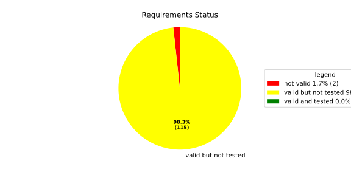
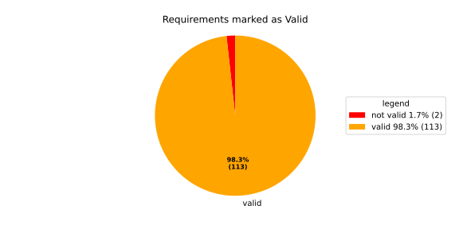
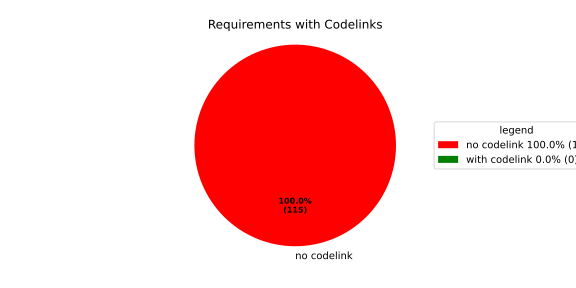

Verification Statistics#
Overview#

In Detail#


No needs passed the filters
Failed Tests
Hint: This table should be empty. Before a PR can be merged all tests have to be successful.
No needs passed the filters
Skipped / Disabled Tests
No needs passed the filters
All passed Tests#
No needs passed the filters
Details About Testcases#
No needs passed the filters
No needs passed the filters
Test Log Files#
tests-report/tests/integration/process_simple_rep_failure/process_simple_rep_failure/test.log
exec ${PAGER:-/usr/bin/less} "$0" || exit 1
Executing tests from //tests/integration/process_simple_rep_failure:process_simple_rep_failure
-----------------------------------------------------------------------------
============================= test session starts ==============================
platform linux -- Python 3.12.12, pytest-9.0.3, pluggy-1.5.0
rootdir: /home/runner/.bazel/sandbox/processwrapper-sandbox/939/execroot/_main/bazel-out/k8-fastbuild/bin/tests/integration/process_simple_rep_failure/process_simple_rep_failure.runfiles/score_itf+
configfile: pytest.ini
collected 1 item
../score_itf+::test_recovery_action_simple_rep_failure
-------------------------------- live log setup --------------------------------
[2026-06-16 10:37:01.807] [INFO] [score.itf.plugins.docker] Executing custom image bootstrap command: tests/utils/environments/x86_64-linux/x86_64-linux.sh
[2026-06-16 10:37:04.887] [DEBUG] [docker.utils.config] Trying paths: ['/home/runner/.docker/config.json', '/home/runner/.dockercfg']
[2026-06-16 10:37:04.887] [DEBUG] [docker.utils.config] Found file at path: /home/runner/.docker/config.json
[2026-06-16 10:37:04.887] [DEBUG] [docker.auth] Found 'auths' section
[2026-06-16 10:37:04.887] [DEBUG] [docker.auth] Found entry (registry='https://index.docker.io/v1/', username='githubactions')
[2026-06-16 10:37:04.896] [DEBUG] [urllib3.connectionpool] http://localhost:None "GET /version HTTP/1.1" 200 823
[2026-06-16 10:37:04.910] [DEBUG] [urllib3.connectionpool] http://localhost:None "POST /v1.48/containers/create HTTP/1.1" 201 88
[2026-06-16 10:37:04.912] [DEBUG] [urllib3.connectionpool] http://localhost:None "GET /v1.48/containers/d9c7fc1ac0a4f079d0e7713110c5d15fa8e40682e199ab053ea3da5312088231/json HTTP/1.1" 200 None
[2026-06-16 10:37:05.080] [DEBUG] [urllib3.connectionpool] http://localhost:None "POST /v1.48/containers/d9c7fc1ac0a4f079d0e7713110c5d15fa8e40682e199ab053ea3da5312088231/start HTTP/1.1" 204 0
[2026-06-16 10:37:05.081] [DEBUG] [docker.utils.config] Trying paths: ['/home/runner/.docker/config.json', '/home/runner/.dockercfg']
[2026-06-16 10:37:05.081] [DEBUG] [docker.utils.config] Found file at path: /home/runner/.docker/config.json
[2026-06-16 10:37:05.081] [DEBUG] [docker.auth] Found 'auths' section
[2026-06-16 10:37:05.081] [DEBUG] [docker.auth] Found entry (registry='https://index.docker.io/v1/', username='githubactions')
[2026-06-16 10:37:05.092] [DEBUG] [urllib3.connectionpool] http://localhost:None "GET /version HTTP/1.1" 200 823
[2026-06-16 10:37:05.246] [INFO] [tests.utils.testing_utils.setup_test] Test case setup finished
-------------------------------- live log call ---------------------------------
[2026-06-16 10:37:05.333] [INFO] [launch_manager] 2026/06/16 10:37:05.6225331 2103207 000 ECU1 LM LM log debug verbose 1 Launch Manager Started !!!!
[2026-06-16 10:37:05.333] [INFO] [launch_manager] 2026/06/16 10:37:05.6225331 2103210 000 ECU1 LM LM log debug verbose 1 Loading LCM Configurations...
[2026-06-16 10:37:05.334] [INFO] [launch_manager] 2026/06/16 10:37:05.6225331 2103210 000 ECU1 LM LM log debug verbose 1 ECUCFG_ENV_VAR_ROOTFOLDER set successfully
[2026-06-16 10:37:05.334] [INFO] [launch_manager] 2026/06/16 10:37:05.6225331 2103211 000 ECU1 LM LM log debug verbose 5 FlatBufferParser::getModeGroupPgName: MainPG ( IdentifierHash: 18079021346025578134 )
[2026-06-16 10:37:05.334] [INFO] [launch_manager] 2026/06/16 10:37:05.6225331 2103211 000 ECU1 LM LM log debug verbose 5 FlatBufferParser::getModeGroupPgStateName: MainPG/Startup ( IdentifierHash: 10504605499600661529 )
[2026-06-16 10:37:05.334] [INFO] [launch_manager] 2026/06/16 10:37:05.6225331 2103211 000 ECU1 LM LM log debug verbose 5 FlatBufferParser::getModeGroupPgStateName: MainPG/run_target_app_does_report_krunning_in_time ( IdentifierHash: 11934981641920773349 )
[2026-06-16 10:37:05.334] [INFO] [launch_manager] 2026/06/16 10:37:05.6225331 2103211 000 ECU1 LM LM log debug verbose 5 FlatBufferParser::getModeGroupPgStateName: MainPG/run_target_app_does_not_report_krunning_in_time ( IdentifierHash: 7672161913816744053 )
[2026-06-16 10:37:05.334] [INFO] [launch_manager] 2026/06/16 10:37:05.6225331 2103212 000 ECU1 LM LM log debug verbose 5 FlatBufferParser::getModeGroupPgStateName: MainPG/Off ( IdentifierHash: 15281793077830264047 )
[2026-06-16 10:37:05.334] [INFO] [launch_manager] 2026/06/16 10:37:05.6225331 2103212 000 ECU1 LM LM log debug verbose 5 FlatBufferParser::getModeGroupPgStateName: MainPG/fallback_run_target ( IdentifierHash: 4059409696722237352 )
[2026-06-16 10:37:05.335] [INFO] [launch_manager] 2026/06/16 10:37:05.6225331 2103212 000 ECU1 LM LM log debug verbose 4 parseProcessConfigurations: Process index: 0 executable_path_: /tmp/tests/process_simple_rep_failure/control_client_mock
[2026-06-16 10:37:05.335] [INFO] [launch_manager] 2026/06/16 10:37:05.6225331 2103213 000 ECU1 LM LM log debug verbose 3 Process control_client_mock is Reporting execution state
[2026-06-16 10:37:05.335] [INFO] [launch_manager] 2026/06/16 10:37:05.6225331 2103213 000 ECU1 LM LM log debug verbose 1 Process is STATE_MANAGEMENT function Cluster Affiliation
[2026-06-16 10:37:05.335] [INFO] [launch_manager] 2026/06/16 10:37:05.6225331 2103213 000 ECU1 LM LM log debug verbose 3 Process control_client_mock is Self terminating
[2026-06-16 10:37:05.336] [INFO] [launch_manager] 2026/06/16 10:37:05.6225331 2103213 000 ECU1 LM LM log debug verbose 4 ParseProcessProcessGroup: id:::pg_name_: MainPG , pg_state_name_: MainPG/Startup
[2026-06-16 10:37:05.337] [INFO] [launch_manager] 2026/06/16 10:37:05.6225331 2103213 000 ECU1 LM LM log debug verbose 4 ParseProcessProcessGroup: id:::pg_name_: MainPG , pg_state_name_: MainPG/run_target_app_does_report_krunning_in_time
[2026-06-16 10:37:05.337] [INFO] [launch_manager] 2026/06/16 10:37:05.6225331 2103214 000 ECU1 LM LM log debug verbose 4 ParseProcessProcessGroup: id:::pg_name_: MainPG , pg_state_name_: MainPG/run_target_app_does_not_report_krunning_in_time
[2026-06-16 10:37:05.337] [INFO] [launch_manager] 2026/06/16 10:37:05.6225331 2103214 000 ECU1 LM LM log debug verbose 4 ParseProcessProcessGroup: id:::pg_name_: MainPG , pg_state_name_: MainPG/fallback_run_target
[2026-06-16 10:37:05.337] [INFO] [launch_manager] 2026/06/16 10:37:05.6225331 2103214 000 ECU1 LM LM log debug verbose 4 parseProcessConfigurations: Process index: 1 executable_path_: /tmp/tests/process_simple_rep_failure/process_simple_reporting
[2026-06-16 10:37:05.337] [INFO] [launch_manager] 2026/06/16 10:37:05.6225331 2103214 000 ECU1 LM LM log debug verbose 3 Process component_does_report_krunning_in_time is Reporting execution state
[2026-06-16 10:37:05.337] [INFO] [launch_manager] 2026/06/16 10:37:05.6225331 2103214 000 ECU1 LM LM log debug verbose 1 Process is NOT associated with any function Cluster Affiliation
[2026-06-16 10:37:05.337] [INFO] [launch_manager] 2026/06/16 10:37:05.6225331 2103215 000 ECU1 LM LM log debug verbose 3 Process component_does_report_krunning_in_time is Self terminating
[2026-06-16 10:37:05.337] [INFO] [launch_manager] 2026/06/16 10:37:05.6225331 2103215 000 ECU1 LM LM log debug verbose 4 ParseProcessProcessGroup: id:::pg_name_: MainPG , pg_state_name_: MainPG/run_target_app_does_report_krunning_in_time
[2026-06-16 10:37:05.337] [INFO] [launch_manager] 2026/06/16 10:37:05.6225331 2103215 000 ECU1 LM LM log debug verbose 4 parseProcessConfigurations: Process index: 2 executable_path_: /tmp/tests/process_simple_rep_failure/process_simple_reporting
[2026-06-16 10:37:05.337] [INFO] [launch_manager] 2026/06/16 10:37:05.6225331 2103215 000 ECU1 LM LM log debug verbose 3 Process component_does_not_report_krunning_in_time is Reporting execution state
[2026-06-16 10:37:05.337] [INFO] [launch_manager] 2026/06/16 10:37:05.6225331 2103216 000 ECU1 LM LM log debug verbose 1 Process is NOT associated with any function Cluster Affiliation
[2026-06-16 10:37:05.337] [INFO] [launch_manager] 2026/06/16 10:37:05.6225332 2103216 000 ECU1 LM LM log debug verbose 3 Process component_does_not_report_krunning_in_time is Self terminating
[2026-06-16 10:37:05.337] [INFO] [launch_manager] 2026/06/16 10:37:05.6225332 2103216 000 ECU1 LM LM log debug verbose 4 ParseProcessProcessGroup: id:::pg_name_: MainPG , pg_state_name_: MainPG/run_target_app_does_not_report_krunning_in_time
[2026-06-16 10:37:05.338] [INFO] [launch_manager] 2026/06/16 10:37:05.6225332 2103216 000 ECU1 LM LM log debug verbose 4 parseProcessConfigurations: Process index: 3 executable_path_: /tmp/tests/process_simple_rep_failure/verification_process
[2026-06-16 10:37:05.338] [INFO] [launch_manager] 2026/06/16 10:37:05.6225332 2103217 000 ECU1 LM LM log debug verbose 3 Process verification_component is NOT Reporting execution state
[2026-06-16 10:37:05.338] [INFO] [launch_manager] 2026/06/16 10:37:05.6225332 2103217 000 ECU1 LM LM log debug verbose 1 Process is NOT associated with any function Cluster Affiliation
[2026-06-16 10:37:05.338] [INFO] [launch_manager] 2026/06/16 10:37:05.6225332 2103217 000 ECU1 LM LM log debug verbose 3 Process verification_component is Self terminating
[2026-06-16 10:37:05.338] [INFO] [launch_manager] 2026/06/16 10:37:05.6225332 2103217 000 ECU1 LM LM log debug verbose 4 ParseProcessProcessGroup: id:::pg_name_: MainPG , pg_state_name_: MainPG/fallback_run_target
[2026-06-16 10:37:05.338] [INFO] [launch_manager] 2026/06/16 10:37:05.6225332 2103217 000 ECU1 LM LM log debug verbose 3 Loading SWCL Nr. 0 Succeeded
[2026-06-16 10:37:05.338] [INFO] [launch_manager] 2026/06/16 10:37:05.6225332 2103217 000 ECU1 LM LM log debug verbose 2 1 process group(s)
[2026-06-16 10:37:05.338] [INFO] [launch_manager] 2026/06/16 10:37:05.6225332 2103218 000 ECU1 LM LM log debug verbose 3 Creating graph with 4 nodes
[2026-06-16 10:37:05.338] [INFO] [launch_manager] 2026/06/16 10:37:05.6225332 2103218 000 ECU1 LM LM log debug verbose 1 Process groups initialized successfully
[2026-06-16 10:37:05.339] [INFO] [launch_manager] 2026/06/16 10:37:05.6225332 2103218 000 ECU1 LM LM log debug verbose 1 Process Group initialization done
[2026-06-16 10:37:05.339] [INFO] [launch_manager] 2026/06/16 10:37:05.6225332 2103218 000 ECU1 LM LM log debug verbose 3 Creating Safe Process Map with 4 entries
[2026-06-16 10:37:05.339] [INFO] [launch_manager] 2026/06/16 10:37:05.6225332 2103218 000 ECU1 LM LM log debug verbose 2 Creating job queue with capacity 1024
[2026-06-16 10:37:05.339] [INFO] [launch_manager] 2026/06/16 10:37:05.6225332 2103219 000 ECU1 LM LM log debug verbose 1 Creating worker threads...
[2026-06-16 10:37:05.339] [INFO] [launch_manager] 2026/06/16 10:37:05.6225333 2103235 000 ECU1 LM LM log debug verbose 7 Process group index 0 (with name MainPG ) has 4 processes
[2026-06-16 10:37:05.339] [INFO] [launch_manager] 2026/06/16 10:37:05.6225334 2103237 000 ECU1 LM LM log debug verbose 2 Creating process node with id: 0
[2026-06-16 10:37:05.339] [INFO] [launch_manager] 2026/06/16 10:37:05.6225334 2103239 000 ECU1 LM LM log debug verbose 5 Process 0 has 0 start dependencies
[2026-06-16 10:37:05.339] [INFO] [launch_manager] 2026/06/16 10:37:05.6225334 2103239 000 ECU1 LM LM log debug verbose 2 Creating process node with id: 1
[2026-06-16 10:37:05.339] [INFO] [launch_manager] 2026/06/16 10:37:05.6225334 2103239 000 ECU1 LM LM log debug verbose 5 Process 1 has 0 start dependencies
[2026-06-16 10:37:05.339] [INFO] [launch_manager] 2026/06/16 10:37:05.6225334 2103239 000 ECU1 LM LM log debug verbose 2 Creating process node with id: 2
[2026-06-16 10:37:05.340] [INFO] [launch_manager] 2026/06/16 10:37:05.6225334 2103240 000 ECU1 LM LM log debug verbose 5 Process 2 has 0 start dependencies
[2026-06-16 10:37:05.340] [INFO] [launch_manager] 2026/06/16 10:37:05.6225334 2103240 000 ECU1 LM LM log debug verbose 2 Creating process node with id: 3
[2026-06-16 10:37:05.340] [INFO] [launch_manager] 2026/06/16 10:37:05.6225334 2103240 000 ECU1 LM LM log debug verbose 5 Process 3 has 0 start dependencies
[2026-06-16 10:37:05.340] [INFO] [launch_manager] 2026/06/16 10:37:05.6225334 2103240 000 ECU1 LM LM log debug verbose 3 Created 4 process nodes
[2026-06-16 10:37:05.340] [INFO] [launch_manager] 2026/06/16 10:37:05.6225334 2103240 000 ECU1 LM LM log debug verbose 2 Creating successor lists for process group MainPG
[2026-06-16 10:37:05.340] [INFO] [launch_manager] 2026/06/16 10:37:05.6225334 2103241 000 ECU1 LM LM log debug verbose 1 Graphs initialized
[2026-06-16 10:37:05.340] [INFO] [launch_manager] 2026/06/16 10:37:05.6225334 2103243 000 ECU1 LM Fcty log info verbose 2 Factory for FlatCfg MachineConfig: Loading of HM Machine Configuration succeeded.
[2026-06-16 10:37:05.340] [INFO] [launch_manager] 2026/06/16 10:37:05.6225334 2103243 000 ECU1 LM Fcty log debug verbose 3 Factory for FlatCfg MachineConfig: Alive Supervision buffer size: 100
[2026-06-16 10:37:05.340] [INFO] [launch_manager] 2026/06/16 10:37:05.6225334 2103243 000 ECU1 LM Fcty log debug verbose 3 Factory for FlatCfg MachineConfig: Monitor buffer size: 512
[2026-06-16 10:37:05.340] [INFO] [launch_manager] 2026/06/16 10:37:05.6225334 2103243 000 ECU1 LM Fcty log debug verbose 4 Factory for FlatCfg MachineConfig: Periodicity: 50000000 ns
[2026-06-16 10:37:05.340] [INFO] [launch_manager] 2026/06/16 10:37:05.6225334 2103244 000 ECU1 LM Fcty log debug verbose 3 Factory for FlatCfg MachineConfig: Configured watchdogs: 0
[2026-06-16 10:37:05.340] [INFO] [launch_manager] 2026/06/16 10:37:05.6225334 2103244 000 ECU1 LM Fcty log warn verbose 2 Factory for FlatCfg MachineConfig: No watchdog configured
[2026-06-16 10:37:05.340] [INFO] [launch_manager] 2026/06/16 10:37:05.6225334 2103244 000 ECU1 LM Fcty log debug verbose 2 Software Cluster Handler starts constructing workers: MainCluster
[2026-06-16 10:37:05.340] [INFO] [launch_manager] 2026/06/16 10:37:05.6225334 2103244 000 ECU1 LM Fcty log debug verbose 3 Factory for FlatCfg AR24-11: Successfully created Process States: control_client_mock
[2026-06-16 10:37:05.340] [INFO] [launch_manager] 2026/06/16 10:37:05.6225334 2103245 000 ECU1 LM Fcty log debug verbose 3 Factory for FlatCfg AR24-11: Number of constructed Process States: 1
[2026-06-16 10:37:05.340] [INFO] [launch_manager] 2026/06/16 10:37:05.6225334 2103245 000 ECU1 LM Fcty log debug verbose 3 Factory for FlatCfg AR24-11: Successfully created Monitor interface IPC with path: lifecycle_health_control_client_mock
[2026-06-16 10:37:05.341] [INFO] [launch_manager] 2026/06/16 10:37:05.6225334 2103246 000 ECU1 LM Fcty log debug verbose 3 Factory for FlatCfg AR24-11: Number of constructed Monitor interface IPCs: 1
[2026-06-16 10:37:05.341] [INFO] [launch_manager] 2026/06/16 10:37:05.6225335 2103246 000 ECU1 LM Fcty log debug verbose 3 Factory for FlatCfg AR24-11: Successfully created MonitorInterface: /lifecycle_health_control_client_mock
[2026-06-16 10:37:05.341] [INFO] [launch_manager] 2026/06/16 10:37:05.6225335 2103246 000 ECU1 LM Fcty log debug verbose 3 Factory for FlatCfg AR24-11: Number of constructed Monitor interfaces: 1
[2026-06-16 10:37:05.341] [INFO] [launch_manager] 2026/06/16 10:37:05.6225335 2103246 000 ECU1 LM Fcty log debug verbose 3 Factory for FlatCfg AR24-11: Successfully created supervision checkpoint: control_client_mock_checkpoint
[2026-06-16 10:37:05.341] [INFO] [launch_manager] 2026/06/16 10:37:05.6225335 2103246 000 ECU1 LM Fcty log debug verbose 3 Factory for FlatCfg AR24-11: Number of constructed supervision checkpoints: 1
[2026-06-16 10:37:05.341] [INFO] [launch_manager] 2026/06/16 10:37:05.6225335 2103247 000 ECU1 LM Fcty log debug verbose 3 Factory for FlatCfg AR24-11: Successfully created alive supervision worker object: control_client_mock_alive_supervision
[2026-06-16 10:37:05.341] [INFO] [launch_manager] 2026/06/16 10:37:05.6225335 2103247 000 ECU1 LM Fcty log debug verbose 3 Factory for FlatCfg AR24-11: Number of constructed alive supervisions: 1
[2026-06-16 10:37:05.341] [INFO] [launch_manager] 2026/06/16 10:37:05.6225335 2103247 000 ECU1 LM Fcty log info verbose 2 Phm Daemon: The (configured) periodicity in [ns] is set to: 50000000
[2026-06-16 10:37:05.341] [INFO] [launch_manager] 2026/06/16 10:37:05.6225335 2103247 000 ECU1 LM Fcty log debug verbose 2
[2026-06-16 10:37:05.341] [INFO] [launch_manager] Phm Daemon: The accuracy of the monotonic system clock in [ns] is: 1
[2026-06-16 10:37:05.341] [INFO] [launch_manager] 2026/06/16 10:37:05.6225335 2103254 000 ECU1 LM Fcty log debug verbose 3 HealthMonitor: Initialization took 0 ms
[2026-06-16 10:37:05.341] [INFO] [launch_manager] 2026/06/16 10:37:05.6225335 2103255 000 ECU1 LM LM log info verbose 1 LCM started successfully
[2026-06-16 10:37:05.342] [INFO] [launch_manager] 2026/06/16 10:37:05.6225335 2103255 000 ECU1 LM LM log debug verbose 3 clock() at run(): 25.259000 ms
[2026-06-16 10:37:05.342] [INFO] [launch_manager] 2026/06/16 10:37:05.6225335 2103256 000 ECU1 LM LM log debug verbose 1 =============STARTING MAINPG STARTUP STATE============
[2026-06-16 10:37:05.342] [INFO] [launch_manager] 2026/06/16 10:37:05.6225336 2103256 000 ECU1 LM LM log debug verbose 9 Graph::setState changes from kSuccess to kInTransition for PG 0 ( MainPG )
[2026-06-16 10:37:05.342] [INFO] [launch_manager] 2026/06/16 10:37:05.6225336 2103256 000 ECU1 LM LM log debug verbose 2 Stop Dependencies: 0
[2026-06-16 10:37:05.342] [INFO] [launch_manager] 2026/06/16 10:37:05.6225336 2103256 000 ECU1 LM LM log debug verbose 2 Stop Dependencies: 0
[2026-06-16 10:37:05.342] [INFO] [launch_manager] 2026/06/16 10:37:05.6225336 2103256 000 ECU1 LM LM log debug verbose 2 Stop Dependencies: 0
[2026-06-16 10:37:05.342] [INFO] [launch_manager] 2026/06/16 10:37:05.6225336 2103256 000 ECU1 LM LM log debug verbose 2 Stop Dependencies: 0
[2026-06-16 10:37:05.342] [INFO] [launch_manager] 2026/06/16 10:37:05.6225336 2103257 000 ECU1 LM LM log debug verbose 2 Start Dependencies: 0
[2026-06-16 10:37:05.342] [INFO] [launch_manager] 2026/06/16 10:37:05.6225336 2103257 000 ECU1 LM LM log debug verbose 2 Start Dependencies: 0
[2026-06-16 10:37:05.342] [INFO] [launch_manager] 2026/06/16 10:37:05.6225336 2103257 000 ECU1 LM LM log debug verbose 2 Start Dependencies: 0
[2026-06-16 10:37:05.342] [INFO] [launch_manager] 2026/06/16 10:37:05.6225336 2103257 000 ECU1 LM LM log debug verbose 2 Start Dependencies: 0
[2026-06-16 10:37:05.342] [INFO] [launch_manager] 2026/06/16 10:37:05.6225336 2103258 000 ECU1 LM LM log debug verbose 6 Starting process 0 ( control_client_mock ) from executable /tmp/tests/process_simple_rep_failure/control_client_mock
[2026-06-16 10:37:05.342] [INFO] [launch_manager] 2026/06/16 10:37:05.6225336 2103259 000 ECU1 LM LM log debug verbose 3 Initialize the control client for control_client_mock process
[2026-06-16 10:37:05.342] [INFO] [launch_manager] 2026/06/16 10:37:05.6225336 2103259 000 ECU1 LM LM log debug verbose 1 ControlClientChannel initialized
[2026-06-16 10:37:05.342] [INFO] [launch_manager] 2026/06/16 10:37:05.6225336 2103267 000 ECU1 LM Sprv log debug verbose 6 Process with Id control_client_mock changed state PG MainPG/Startup PS 1
[2026-06-16 10:37:05.342] [INFO] [launch_manager] 2026/06/16 10:37:05.6225337 2103273 000 ECU1 LM LM log debug verbose 4 startProcess pid 66 received for process: control_client_mock
[2026-06-16 10:37:05.342] [INFO] [launch_manager] 2026/06/16 10:37:05.6225337 2103274 000 ECU1 LM LM log debug verbose 1 ControlClientChannel obtained from sync.
[2026-06-16 10:37:05.342] [INFO] [launch_manager] [==========] Running 1 test from 1 test suite.
[2026-06-16 10:37:05.343] [INFO] [launch_manager] [----------] Global test environment set-up.
[2026-06-16 10:37:05.343] [INFO] [launch_manager] [----------] 1 test from RecoveryActionSimpleRepFailure
[2026-06-16 10:37:05.343] [INFO] [launch_manager] [ RUN ] RecoveryActionSimpleRepFailure.ControlClientMock
[2026-06-16 10:37:05.343] [INFO] [launch_manager] [ STEP ] Report kRunning from ControlClientMock
[2026-06-16 10:37:05.345] [INFO] [launch_manager] [ END STEP ] Report kRunning from ControlClientMock
[2026-06-16 10:37:05.345] [INFO] [launch_manager] [ STEP ] Activate RunTarget run_target_app_does_report_krunning_in_time
[2026-06-16 10:37:05.346] [INFO] [launch_manager] 2026/06/16 10:37:05.6225346 2103358 000 ECU1 LM LM log debug verbose 1 Request sent. Waiting for acknowledgment...
[2026-06-16 10:37:05.346] [INFO] [launch_manager] 2026/06/16 10:37:05.6225346 2103361 000 ECU1 LM LM log debug verbose 8
[2026-06-16 10:37:05.346] [INFO] [launch_manager] Got kRunning for pid 66 ( control_client_mock ) process 0 of group MainPG
[2026-06-16 10:37:05.347] [INFO] [launch_manager] 2026/06/16 10:37:05.6225346 2103364 000 ECU1 LM LM log debug verbose 7 startProcess for MainPG process 0 ( control_client_mock ) done
[2026-06-16 10:37:05.347] [INFO] [launch_manager] 2026/06/16 10:37:05.6225346 2103365 000 ECU1 LM LM log debug verbose 8
[2026-06-16 10:37:05.347] [INFO] [launch_manager] ProcessGroupManager::ControlClientHandler: got request kSetStateRequest ( 16 ) re state MainPG/run_target_app_does_report_krunning_in_time of PG MainPG
[2026-06-16 10:37:05.347] [INFO] [launch_manager] 2026/06/16 10:37:05.6225346 2103366 000 ECU1 LM LM log debug verbose 1
[2026-06-16 10:37:05.347] [INFO] [launch_manager] Control Client handler nudged
[2026-06-16 10:37:05.347] [INFO] [launch_manager] 2026/06/16 10:37:05.6225347 2103367 000 ECU1 LM LM log debug verbose 3 clock() at successful initial state transition: 26.714000 ms
[2026-06-16 10:37:05.347] [INFO] [launch_manager] 2026/06/16 10:37:05.6225347 2103368 000 ECU1 LM LM log debug verbose 9 Graph::setState changes from kInTransition to kSuccess for PG 0 ( MainPG )
[2026-06-16 10:37:05.347] [INFO] [launch_manager] 2026/06/16 10:37:05.6225347 2103368 000 ECU1 LM LM log info verbose 7
[2026-06-16 10:37:05.348] [INFO] [launch_manager] Completed the request for PG MainPG to State MainPG/Startup in 11 ms
[2026-06-16 10:37:05.348] [INFO] [launch_manager] 2026/06/16 10:37:05.6225347 2103369 000 ECU1 LM LM log debug verbose 1
[2026-06-16 10:37:05.348] [INFO] [launch_manager] Control Client handler nudged
[2026-06-16 10:37:05.348] [INFO] [launch_manager] 2026/06/16 10:37:05.6225347 2103370 000 ECU1 LM LM log debug verbose 6
[2026-06-16 10:37:05.348] [INFO] [launch_manager] Pending state for process group MainPG changed from to MainPG/run_target_app_does_report_krunning_in_time
[2026-06-16 10:37:05.348] [INFO] [launch_manager] 2026/06/16 10:37:05.6225347 2103372 000 ECU1 LM LM log debug verbose 9
[2026-06-16 10:37:05.348] [INFO] [launch_manager] Graph::setState changes from kSuccess to kUndefinedState for PG 0 ( MainPG )
[2026-06-16 10:37:05.348] [INFO] [launch_manager] 2026/06/16 10:37:05.6225347 2103373 000 ECU1 LM LM log debug verbose 1
[2026-06-16 10:37:05.348] [INFO] [launch_manager] 2026/06/16 10:37:05.6225347 2103374 000 ECU1 LM LM log debug verbose 1 Request acknowledged.
[2026-06-16 10:37:05.348] [INFO] [launch_manager] Request acknowledged.
[2026-06-16 10:37:05.348] [INFO] [launch_manager] 2026/06/16 10:37:05.6225347 2103374 000 ECU1 LM LM log debug verbose 6 Pending state for process group MainPG changed from MainPG/run_target_app_does_report_krunning_in_time to
[2026-06-16 10:37:05.349] [INFO] [launch_manager] 2026/06/16 10:37:05.6225347 2103375 000 ECU1 LM LM log debug verbose 4 Start transition to MainPG/run_target_app_does_report_krunning_in_time for PG MainPG
[2026-06-16 10:37:05.349] [INFO] [launch_manager] 2026/06/16 10:37:05.6225347 2103376 000 ECU1 LM LM log debug verbose 9 Graph::setState changes from kUndefinedState to kInTransition for PG 0 ( MainPG )
[2026-06-16 10:37:05.349] [INFO] [launch_manager] 2026/06/16 10:37:05.6225348 2103376 000 ECU1 LM LM log debug verbose 2 Stop Dependencies: 0
[2026-06-16 10:37:05.349] [INFO] [launch_manager] 2026/06/16 10:37:05.6225348 2103377 000 ECU1 LM LM log debug verbose 2 Stop Dependencies: 0
[2026-06-16 10:37:05.349] [INFO] [launch_manager] 2026/06/16 10:37:05.6225348 2103377 000 ECU1 LM LM log debug verbose 2 Stop Dependencies: 0
[2026-06-16 10:37:05.349] [INFO] [launch_manager] 2026/06/16 10:37:05.6225348 2103377 000 ECU1 LM LM log debug verbose 2 Stop Dependencies: 0
[2026-06-16 10:37:05.349] [INFO] [launch_manager] 2026/06/16 10:37:05.6225348 2103378 000 ECU1 LM LM log debug verbose 2 Start Dependencies: 0
[2026-06-16 10:37:05.349] [INFO] [launch_manager] 2026/06/16 10:37:05.6225348 2103378 000 ECU1 LM LM log debug verbose 2 Start Dependencies: 0
[2026-06-16 10:37:05.349] [INFO] [launch_manager] 2026/06/16 10:37:05.6225348 2103378 000 ECU1 LM LM log debug verbose 2 Start Dependencies: 0
[2026-06-16 10:37:05.350] [INFO] [launch_manager] 2026/06/16 10:37:05.6225348 2103379 000 ECU1 LM LM log debug verbose 2 Start Dependencies: 0
[2026-06-16 10:37:05.350] [INFO] [launch_manager] 2026/06/16 10:37:05.6225348 2103379 000 ECU1 LM LM log debug verbose 6 Starting process 1 ( component_does_report_krunning_in_time ) from executable /tmp/tests/process_simple_rep_failure/process_simple_reporting
[2026-06-16 10:37:05.351] [INFO] [launch_manager] 2026/06/16 10:37:05.6225348 2103385 000 ECU1 LM LM log debug verbose 4
[2026-06-16 10:37:05.351] [INFO] [launch_manager] startProcess pid 68 received for process: component_does_report_krunning_in_time
[2026-06-16 10:37:05.351] [INFO] [launch_manager] [==========] Running 1 test from 1 test suite.
[2026-06-16 10:37:05.351] [INFO] [launch_manager] [----------] Global test environment set-up.
[2026-06-16 10:37:05.351] [INFO] [launch_manager] [----------] 1 test from ProcessSimpleRepFailure
[2026-06-16 10:37:05.351] [INFO] [launch_manager] [ RUN ] ProcessSimpleRepFailure.ProcessSimpleReporting
[2026-06-16 10:37:05.351] [INFO] [launch_manager] [ STEP ] Check args
[2026-06-16 10:37:05.352] [INFO] [launch_manager] [ END STEP ] Check args
[2026-06-16 10:37:05.352] [INFO] [launch_manager] [ STEP ] Report kRunning from ProcessSimpleReporting
[2026-06-16 10:37:05.386] [INFO] [launch_manager] 2026/06/16 10:37:05.6225386 2103761 000 ECU1 LM Sprv log debug verbose 6
[2026-06-16 10:37:05.388] [INFO] [launch_manager] Process with Id control_client_mock changed state PG MainPG/Startup PS 2
[2026-06-16 10:37:05.389] [INFO] [launch_manager] 2026/06/16 10:37:05.6225389 2103788 000 ECU1 LM Sprv log debug verbose 6
[2026-06-16 10:37:05.389] [INFO] [launch_manager] Process with Id component_does_report_krunning_in_time changed state PG MainPG/run_target_app_does_report_krunning_in_time PS 1
[2026-06-16 10:37:05.391] [INFO] [launch_manager] 2026/06/16 10:37:05.6225391 2103808 000 ECU1 LM Sprv log info verbose 3
[2026-06-16 10:37:05.391] [INFO] [launch_manager] Alive Supervision ( control_client_mock_alive_supervision ) switched to OK.
[2026-06-16 10:37:05.395] [DEBUG] [tests.utils.testing_utils.run_until_file_deployed] Waiting for /tmp/tests/test_end
[2026-06-16 10:37:05.855] [INFO] [launch_manager] [ END STEP ] Report kRunning from ProcessSimpleReporting
[2026-06-16 10:37:05.855] [INFO] [launch_manager] [ OK ] ProcessSimpleRepFailure.ProcessSimpleReporting (502 ms)
[2026-06-16 10:37:05.855] [INFO] [launch_manager] [----------] 1 test from ProcessSimpleRepFailure (502 ms total)
[2026-06-16 10:37:05.855] [INFO] [launch_manager] [----------] Global test environment tear-down
[2026-06-16 10:37:05.856] [INFO] [launch_manager] [==========] 1 test from 1 test suite ran. (503 ms total)
[2026-06-16 10:37:05.856] [INFO] [launch_manager] [ PASSED ] 1 test.
[2026-06-16 10:37:05.856] [INFO] [launch_manager] 2026/06/16 10:37:05.6225855 2108452 000 ECU1 LM LM log debug verbose 8 Got kRunning for pid 68 ( component_does_report_krunning_in_time ) process 1 of group MainPG
[2026-06-16 10:37:05.856] [INFO] [launch_manager] 2026/06/16 10:37:05.6225855 2108453 000 ECU1 LM LM log debug verbose 7 startProcess for MainPG process 1 ( component_does_report_krunning_in_time ) done
[2026-06-16 10:37:05.856] [INFO] [launch_manager] 2026/06/16 10:37:05.6225855 2108453 000 ECU1 LM LM log debug verbose 9 Graph::setState changes from kInTransition to kSuccess for PG 0 ( MainPG )
[2026-06-16 10:37:05.856] [INFO] [launch_manager] 2026/06/16 10:37:05.6225855 2108453 000 ECU1 LM LM log info verbose 7 Completed the request for PG MainPG to State MainPG/run_target_app_does_report_krunning_in_time in 508 ms
[2026-06-16 10:37:05.856] [INFO] [launch_manager] 2026/06/16 10:37:05.6225855 2108453 000 ECU1 LM LM log debug verbose 1 Control Client handler nudged
[2026-06-16 10:37:05.857] [INFO] [launch_manager] 2026/06/16 10:37:05.6225857 2108471 000 ECU1 LM LM log debug verbose 12 Child process 1 of MainPG pid 68 ( component_does_report_krunning_in_time ) for node True terminated with status 0
[2026-06-16 10:37:05.858] [INFO] [launch_manager] 2026/06/16 10:37:05.6225858 2108480 000 ECU1 LM LM log debug verbose 8 ProcessGroupManager::ControlClientHandler: Sending kSetStateSuccess ( 20 ) re state MainPG/run_target_app_does_report_krunning_in_time of PG MainPG
[2026-06-16 10:37:05.858] [INFO] [launch_manager] 2026/06/16 10:37:05.6225858 2108480 000 ECU1 LM LM log debug verbose 1 Response sent.
[2026-06-16 10:37:05.886] [INFO] [launch_manager] 2026/06/16 10:37:05.6225886 2108761 000 ECU1 LM Sprv log debug verbose 6
[2026-06-16 10:37:05.887] [INFO] [launch_manager] Process with Id component_does_report_krunning_in_time changed state PG MainPG/run_target_app_does_report_krunning_in_time PS 2
[2026-06-16 10:37:05.887] [INFO] [launch_manager] 2026/06/16 10:37:05.6225886 2108764 000 ECU1 LM Sprv log debug verbose 6
[2026-06-16 10:37:05.887] [INFO] [launch_manager] Process with Id component_does_report_krunning_in_time changed state PG MainPG/run_target_app_does_report_krunning_in_time PS 4
[2026-06-16 10:37:05.944] [INFO] [launch_manager] 2026/06/16 10:37:05.6225942 2109325 000 ECU1 LM LM log debug verbose 1 Response retrieved.
[2026-06-16 10:37:05.945] [INFO] [launch_manager] [ END STEP ] Activate RunTarget run_target_app_does_report_krunning_in_time
[2026-06-16 10:37:05.961] [DEBUG] [tests.utils.testing_utils.run_until_file_deployed] Waiting for /tmp/tests/test_end
[2026-06-16 10:37:06.533] [DEBUG] [tests.utils.testing_utils.run_until_file_deployed] Waiting for /tmp/tests/test_end
[2026-06-16 10:37:06.943] [INFO] [launch_manager] [ STEP ] Verify fallback run target has not been activated
[2026-06-16 10:37:06.944] [INFO] [launch_manager] [ END STEP ] Verify fallback run target has not been activated
[2026-06-16 10:37:06.944] [INFO] [launch_manager] [ STEP ] Activate RunTarget run_target_app_does_not_report_krunning_in_time
[2026-06-16 10:37:06.944] [INFO] [launch_manager] 2026/06/16 10:37:06.6226944 2119341 000 ECU1 LM LM log debug verbose 1
[2026-06-16 10:37:06.945] [INFO] [launch_manager] Request sent. Waiting for acknowledgment...
[2026-06-16 10:37:06.945] [INFO] [launch_manager] 2026/06/16 10:37:06.6226945 2119352 000 ECU1 LM LM log debug verbose 8 ProcessGroupManager::ControlClientHandler: got request kSetStateRequest ( 16 ) re state MainPG/run_target_app_does_not_report_krunning_in_time of PG MainPG
[2026-06-16 10:37:06.945] [INFO] [launch_manager] 2026/06/16 10:37:06.6226945 2119352 000 ECU1 LM LM log debug verbose 6 Pending state for process group MainPG changed from to MainPG/run_target_app_does_not_report_krunning_in_time
[2026-06-16 10:37:06.946] [INFO] [launch_manager] 2026/06/16 10:37:06.6226945 2119352 000 ECU1 LM LM log debug verbose 1 Request acknowledged.
[2026-06-16 10:37:06.946] [INFO] [launch_manager] 2026/06/16 10:37:06.6226945 2119352 000 ECU1 LM LM log debug verbose 6 Pending state for process group MainPG changed from MainPG/run_target_app_does_not_report_krunning_in_time to
[2026-06-16 10:37:06.946] [INFO] [launch_manager] 2026/06/16 10:37:06.6226945 2119353 000 ECU1 LM LM log debug verbose 4 Start transition to MainPG/run_target_app_does_not_report_krunning_in_time for PG MainPG
[2026-06-16 10:37:06.948] [INFO] [launch_manager] 2026/06/16 10:37:06.6226945 2119353 000 ECU1 LM LM log debug verbose 9 Graph::setState changes from kSuccess to kInTransition for PG 0 ( MainPG )
[2026-06-16 10:37:06.948] [INFO] [launch_manager] 2026/06/16 10:37:06.6226945 2119353 000 ECU1 LM LM log debug verbose 2 Stop Dependencies: 0
[2026-06-16 10:37:06.948] [INFO] [launch_manager] 2026/06/16 10:37:06.6226945 2119353 000 ECU1 LM LM log debug verbose 2 Stop Dependencies: 0
[2026-06-16 10:37:06.948] [INFO] [launch_manager] 2026/06/16 10:37:06.6226945 2119354 000 ECU1 LM LM log debug verbose 2 Stop Dependencies: 0
[2026-06-16 10:37:06.948] [INFO] [launch_manager] 2026/06/16 10:37:06.6226945 2119354 000 ECU1 LM LM log debug verbose 2 Stop Dependencies: 0
[2026-06-16 10:37:06.948] [INFO] [launch_manager] 2026/06/16 10:37:06.6226945 2119354 000 ECU1 LM LM log debug verbose 2 Start Dependencies: 0
[2026-06-16 10:37:06.949] [INFO] [launch_manager] 2026/06/16 10:37:06.6226945 2119354 000 ECU1 LM LM log debug verbose 2 Start Dependencies: 0
[2026-06-16 10:37:06.949] [INFO] [launch_manager] 2026/06/16 10:37:06.6226945 2119354 000 ECU1 LM LM log debug verbose 2 Start Dependencies: 0
[2026-06-16 10:37:06.949] [INFO] [launch_manager] 2026/06/16 10:37:06.6226945 2119354 000 ECU1 LM LM log debug verbose 2 Start Dependencies: 0
[2026-06-16 10:37:06.949] [INFO] [launch_manager] 2026/06/16 10:37:06.6226945 2119355 000 ECU1 LM LM log debug verbose 6 Starting process 2 ( component_does_not_report_krunning_in_time ) from executable /tmp/tests/process_simple_rep_failure/process_simple_reporting
[2026-06-16 10:37:06.949] [INFO] [launch_manager] 2026/06/16 10:37:06.6226946 2119360 000 ECU1 LM LM log debug verbose 4 startProcess pid 86 received for process: component_does_not_report_krunning_in_time
[2026-06-16 10:37:06.949] [INFO] [launch_manager] [==========] Running 1 test from 1 test suite.
[2026-06-16 10:37:06.949] [INFO] [launch_manager] [----------] Global test environment set-up.
[2026-06-16 10:37:06.949] [INFO] [launch_manager] [----------] 1 test from ProcessSimpleRepFailure
[2026-06-16 10:37:06.949] [INFO] [launch_manager] [ RUN ] ProcessSimpleRepFailure.ProcessSimpleReporting
[2026-06-16 10:37:06.949] [INFO] [launch_manager] [ STEP ] Check args
[2026-06-16 10:37:06.949] [INFO] [launch_manager] [ END STEP ] Check args
[2026-06-16 10:37:06.949] [INFO] [launch_manager] [ STEP ] Report kRunning from ProcessSimpleReporting
[2026-06-16 10:37:06.950] [INFO] [launch_manager] 2026/06/16 10:37:06.6226950 2119397 000 ECU1 LM LM log debug verbose 1
[2026-06-16 10:37:06.950] [INFO] [launch_manager] Request acknowledged.
[2026-06-16 10:37:06.986] [INFO] [launch_manager] 2026/06/16 10:37:06.6226986 2119762 000 ECU1 LM Sprv log debug verbose 6 Process with Id component_does_not_report_krunning_in_time changed state PG MainPG/run_target_app_does_not_report_krunning_in_time PS 1
[2026-06-16 10:37:07.090] [DEBUG] [tests.utils.testing_utils.run_until_file_deployed] Waiting for /tmp/tests/test_end
[2026-06-16 10:37:07.629] [DEBUG] [tests.utils.testing_utils.run_until_file_deployed] Waiting for /tmp/tests/test_end
[2026-06-16 10:37:07.988] [INFO] [launch_manager] 2026/06/16 10:37:07.6227988 2129783 000 ECU1 LM LM log error verbose 1 Semaphore timedWait or post failed: Unable to wait or post on semaphores within the specified timeout.
[2026-06-16 10:37:07.989] [INFO] [launch_manager] 2026/06/16 10:37:07.6227988 2129783 000 ECU1 LM LM log warn verbose 5 Got kRunning timeout for process 2 ( component_does_not_report_krunning_in_time )
[2026-06-16 10:37:07.989] [INFO] [launch_manager] 2026/06/16 10:37:07.6227988 2129783 000 ECU1 LM LM log debug verbose 5 terminating process 2 ( component_does_not_report_krunning_in_time )
[2026-06-16 10:37:07.989] [INFO] [launch_manager] 2026/06/16 10:37:07.6227988 2129783 000 ECU1 LM LM log debug verbose 9 Requesting termination of process 2 of MainPG pid 86 ( component_does_not_report_krunning_in_time )
[2026-06-16 10:37:07.989] [INFO] [launch_manager] 2026/06/16 10:37:07.6227988 2129784 000 ECU1 LM LM log debug verbose 2 Request termination received for 86
[2026-06-16 10:37:08.036] [INFO] [launch_manager] 2026/06/16 10:37:08.6228036 2130261 000 ECU1 LM Sprv log debug verbose 6 Process with Id component_does_not_report_krunning_in_time changed state PG MainPG/run_target_app_does_not_report_krunning_in_time PS 3
[2026-06-16 10:37:08.167] [DEBUG] [tests.utils.testing_utils.run_until_file_deployed] Waiting for /tmp/tests/test_end
[2026-06-16 10:37:08.706] [DEBUG] [tests.utils.testing_utils.run_until_file_deployed] Waiting for /tmp/tests/test_end
[2026-06-16 10:37:09.030] [INFO] [launch_manager] 2026/06/16 10:37:09.6229030 2140198 000 ECU1 LM LM log warn verbose 5 Process 2 ( component_does_not_report_krunning_in_time ) did not respond to SIGTERM, sending SIGKILL
[2026-06-16 10:37:09.030] [INFO] [launch_manager] 2026/06/16 10:37:09.6229030 2140198 000 ECU1 LM LM log debug verbose 2 Forced termination received for pid 86
[2026-06-16 10:37:09.030] [INFO] [launch_manager] 2026/06/16 10:37:09.6229030 2140201 000 ECU1 LM LM log debug verbose 12 Child process 2 of MainPG pid 86 ( component_does_not_report_krunning_in_time ) for node True terminated with status 9
[2026-06-16 10:37:09.030] [INFO] [launch_manager] 2026/06/16 10:37:09.6229030 2140202 000 ECU1 LM LM log warn verbose 7 unexpected termination of process 2 pid 86 ( component_does_not_report_krunning_in_time )
[2026-06-16 10:37:09.030] [INFO] [launch_manager] 2026/06/16 10:37:09.6229030 2140202 000 ECU1 LM LM log debug verbose 9 Graph::setState changes from kInTransition to kAborting for PG 0 ( MainPG )
[2026-06-16 10:37:09.032] [INFO] [launch_manager] 2026/06/16 10:37:09.6229032 2140219 000 ECU1 LM LM log debug verbose 7 terminateProcess for MainPG process 2 ( component_does_not_report_krunning_in_time ) done
[2026-06-16 10:37:09.032] [INFO] [launch_manager] 2026/06/16 10:37:09.6229032 2140220 000 ECU1 LM LM log debug verbose 7 startProcess for MainPG process 2 ( component_does_not_report_krunning_in_time ) done
[2026-06-16 10:37:09.032] [INFO] [launch_manager] 2026/06/16 10:37:09.6229032 2140220 000 ECU1 LM LM log debug verbose 9 Graph::setState changes from kAborting to kUndefinedState for PG 0 ( MainPG )
[2026-06-16 10:37:09.032] [INFO] [launch_manager] 2026/06/16 10:37:09.6229032 2140221 000 ECU1 LM LM log debug verbose 1 Control Client handler nudged
[2026-06-16 10:37:09.034] [INFO] [launch_manager] 2026/06/16 10:37:09.6229034 2140239 000 ECU1 LM LM log debug verbose 8 ProcessGroupManager::ControlClientHandler: Sending kFailedUnexpectedTerminationOnEnter ( 23 ) re state MainPG/run_target_app_does_not_report_krunning_in_time of PG MainPG
[2026-06-16 10:37:09.034] [INFO] [launch_manager] 2026/06/16 10:37:09.6229034 2140239 000 ECU1 LM LM log debug verbose 1 Response sent.
[2026-06-16 10:37:09.034] [INFO] [launch_manager] 2026/06/16 10:37:09.6229034 2140240 000 ECU1 LM LM log warn verbose 3 Problem discovered in PG MainPG Activating Recovery state.
[2026-06-16 10:37:09.034] [INFO] [launch_manager] 2026/06/16 10:37:09.6229034 2140240 000 ECU1 LM LM log debug verbose 9 Graph::setState changes from kUndefinedState to kInTransition for PG 0 ( MainPG )
[2026-06-16 10:37:09.034] [INFO] [launch_manager] 2026/06/16 10:37:09.6229034 2140240 000 ECU1 LM LM log debug verbose 2 Stop Dependencies: 0
[2026-06-16 10:37:09.034] [INFO] [launch_manager] 2026/06/16 10:37:09.6229034 2140240 000 ECU1 LM LM log debug verbose 2 Stop Dependencies: 0
[2026-06-16 10:37:09.034] [INFO] [launch_manager] 2026/06/16 10:37:09.6229034 2140241 000 ECU1 LM LM log debug verbose 2 Stop Dependencies: 0
[2026-06-16 10:37:09.035] [INFO] [launch_manager] 2026/06/16 10:37:09.6229034 2140241 000 ECU1 LM LM log debug verbose 2 Stop Dependencies: 0
[2026-06-16 10:37:09.035] [INFO] [launch_manager] 2026/06/16 10:37:09.6229034 2140241 000 ECU1 LM LM log debug verbose 2 Start Dependencies: 0
[2026-06-16 10:37:09.035] [INFO] [launch_manager] 2026/06/16 10:37:09.6229034 2140241 000 ECU1 LM LM log debug verbose 2 Start Dependencies: 0
[2026-06-16 10:37:09.035] [INFO] [launch_manager] 2026/06/16 10:37:09.6229034 2140241 000 ECU1 LM LM log debug verbose 2 Start Dependencies: 0
[2026-06-16 10:37:09.035] [INFO] [launch_manager] 2026/06/16 10:37:09.6229034 2140242 000 ECU1 LM LM log debug verbose 2 Start Dependencies: 0
[2026-06-16 10:37:09.035] [INFO] [launch_manager] 2026/06/16 10:37:09.6229034 2140242 000 ECU1 LM LM log debug verbose 6 Starting process 3 ( verification_component ) from executable /tmp/tests/process_simple_rep_failure/verification_process
[2026-06-16 10:37:09.035] [INFO] [launch_manager] 2026/06/16 10:37:09.6229035 2140246 000 ECU1 LM LM log debug verbose 4 startProcess pid 110 received for process: verification_component
[2026-06-16 10:37:09.035] [INFO] [launch_manager] 2026/06/16 10:37:09.6229035 2140247 000 ECU1 LM LM log debug verbose 8 Considered kRunning for Non Reporting Process pid 110 ( verification_component ) process 3 of group MainPG
[2026-06-16 10:37:09.035] [INFO] [launch_manager] 2026/06/16 10:37:09.6229035 2140247 000 ECU1 LM LM log debug verbose 7 startProcess for MainPG process 3 ( verification_component ) done
[2026-06-16 10:37:09.035] [INFO] [launch_manager] 2026/06/16 10:37:09.6229035 2140248 000 ECU1 LM LM log debug verbose 9
[2026-06-16 10:37:09.035] [INFO] [launch_manager] Graph::setState changes from kInTransition to kSuccess for PG 0 ( MainPG )
[2026-06-16 10:37:09.035] [INFO] [launch_manager] 2026/06/16 10:37:09.6229035 2140249 000 ECU1 LM LM log info verbose 7 Completed the request for PG MainPG to State MainPG/fallback_run_target in 0 ms
[2026-06-16 10:37:09.035] [INFO] [launch_manager] 2026/06/16 10:37:09.6229035 2140249 000 ECU1 LM LM log debug verbose 1 Control Client handler nudged
[2026-06-16 10:37:09.036] [INFO] [launch_manager] 2026/06/16 10:37:09.6229036 2140258 000 ECU1 LM LM log debug verbose 12 Child process 3 of MainPG pid 110 ( verification_component ) for node True terminated with status 0
[2026-06-16 10:37:09.036] [INFO] [launch_manager] 2026/06/16 10:37:09.6229036 2140261 000 ECU1 LM Sprv log debug verbose 6 Process with Id component_does_not_report_krunning_in_time changed state PG MainPG/run_target_app_does_not_report_krunning_in_time PS 4
[2026-06-16 10:37:09.036] [INFO] [launch_manager] 2026/06/16 10:37:09.6229036 2140263 000 ECU1 LM LM log debug verbose 8 ProcessGroupManager::ControlClientHandler: Sending kSetStateSuccess ( 20 ) re state MainPG/fallback_run_target of PG MainPG
[2026-06-16 10:37:09.036] [INFO] [launch_manager] 2026/06/16 10:37:09.6229036 2140263 000 ECU1 LM LM log debug verbose 1 Failed to send response: response is not empty.
[2026-06-16 10:37:09.036] [INFO] [launch_manager] 2026/06/16 10:37:09.6229036 2140263 000 ECU1 LM LM log debug verbose 1 Control Client handler nudged
[2026-06-16 10:37:09.037] [INFO] [launch_manager] 2026/06/16 10:37:09.6229036 2140263 000 ECU1 LM LM log debug verbose 8 ProcessGroupManager::ControlClientHandler: Sending kSetStateSuccess ( 20 ) re state MainPG/fallback_run_target of PG MainPG
[2026-06-16 10:37:09.037] [INFO] [launch_manager] 2026/06/16 10:37:09.6229036 2140264 000 ECU1 LM LM log debug verbose 1 Failed to send response: response is not empty.
[2026-06-16 10:37:09.037] [INFO] [launch_manager] 2026/06/16 10:37:09.6229036 2140264 000 ECU1 LM LM log debug verbose 1 Control Client handler nudged
[2026-06-16 10:37:09.037] [INFO] [launch_manager] 2026/06/16 10:37:09.6229036 2140264 000 ECU1 LM LM log debug verbose 8 ProcessGroupManager::ControlClientHandler: Sending kSetStateSuccess ( 20 ) re state MainPG/fallback_run_target of PG MainPG
[2026-06-16 10:37:09.037] [INFO] [launch_manager] 2026/06/16 10:37:09.6229036 2140264 000 ECU1 LM LM log debug verbose 1 Failed to send response: response is not empty.
[2026-06-16 10:37:09.037] [INFO] [launch_manager] 2026/06/16 10:37:09.6229036 2140264 000 ECU1 LM LM log debug verbose 1 Control Client handler nudged
[2026-06-16 10:37:09.037] [INFO] [launch_manager] 2026/06/16 10:37:09.6229036 2140265 000 ECU1 LM LM log debug verbose 8 ProcessGroupManager::ControlClientHandler: Sending kSetStateSuccess ( 20 ) re state MainPG/fallback_run_target of PG MainPG
[2026-06-16 10:37:09.037] [INFO] [launch_manager] 2026/06/16 10:37:09.6229036 2140265 000 ECU1 LM LM log debug verbose 1 Failed to send response: response is not empty.
[2026-06-16 10:37:09.037] [INFO] [launch_manager] 2026/06/16 10:37:09.6229036 2140265 000 ECU1 LM LM log debug verbose 1 Control Client handler nudged
[2026-06-16 10:37:09.037] [INFO] [launch_manager] 2026/06/16 10:37:09.6229036 2140265 000 ECU1 LM LM log debug verbose 8
[2026-06-16 10:37:09.037] [INFO] [launch_manager] ProcessGroupManager::ControlClientHandler: Sending kSetStateSuccess ( 20 ) re state MainPG/fallback_run_target of PG MainPG
[2026-06-16 10:37:09.037] [INFO] [launch_manager] 2026/06/16 10:37:09.6229036 2140265 000 ECU1 LM LM log debug verbose 1 Failed to send response: response is not empty.
[2026-06-16 10:37:09.037] [INFO] [launch_manager] 2026/06/16 10:37:09.6229036 2140266 000 ECU1 LM LM log debug verbose 1 Control Client handler nudged
[2026-06-16 10:37:09.037] [INFO] [launch_manager] 2026/06/16 10:37:09.6229037 2140266 000 ECU1 LM LM log debug verbose 8
[2026-06-16 10:37:09.037] [INFO] [launch_manager] ProcessGroupManager::ControlClientHandler: Sending kSetStateSuccess ( 20 ) re state MainPG/fallback_run_target of PG MainPG
[2026-06-16 10:37:09.038] [INFO] [launch_manager] 2026/06/16 10:37:09.6229037 2140266 000 ECU1 LM LM log debug verbose 1 Failed to send response: response is not empty.
[2026-06-16 10:37:09.038] [INFO] [launch_manager] 2026/06/16 10:37:09.6229037 2140267 000 ECU1 LM LM log debug verbose 1 Control Client handler nudged
[2026-06-16 10:37:09.038] [INFO] [launch_manager] 2026/06/16 10:37:09.6229037 2140267 000 ECU1 LM LM log debug verbose 8 ProcessGroupManager::ControlClientHandler: Sending kSetStateSuccess ( 20 ) re state MainPG/fallback_run_target of PG MainPG
[2026-06-16 10:37:09.038] [INFO] [launch_manager] 2026/06/16 10:37:09.6229037 2140267 000 ECU1 LM LM log debug verbose 1 Failed to send response: response is not empty.
[2026-06-16 10:37:09.038] [INFO] [launch_manager] 2026/06/16 10:37:09.6229037 2140268 000 ECU1 LM LM log debug verbose 1
[2026-06-16 10:37:09.038] [INFO] [launch_manager] Control Client handler nudged
[2026-06-16 10:37:09.038] [INFO] [launch_manager] 2026/06/16 10:37:09.6229037 2140268 000 ECU1 LM LM log debug verbose 8 ProcessGroupManager::ControlClientHandler: Sending kSetStateSuccess ( 20 ) re state MainPG/fallback_run_target of PG MainPG
[2026-06-16 10:37:09.038] [INFO] [launch_manager] 2026/06/16 10:37:09.6229037 2140268 000 ECU1 LM LM log debug verbose 1 Failed to send response: response is not empty.
[2026-06-16 10:37:09.038] [INFO] [launch_manager] 2026/06/16 10:37:09.6229037 2140268 000 ECU1 LM LM log debug verbose 1 Control Client handler nudged
[2026-06-16 10:37:09.038] [INFO] [launch_manager] 2026/06/16 10:37:09.6229037 2140269 000 ECU1 LM LM log debug verbose 8 ProcessGroupManager::ControlClientHandler: Sending kSetStateSuccess ( 20 ) re state MainPG/fallback_run_target of PG MainPG
[2026-06-16 10:37:09.038] [INFO] [launch_manager] 2026/06/16 10:37:09.6229037 2140269 000 ECU1 LM LM log debug verbose 1 Failed to send response: response is not empty.
[2026-06-16 10:37:09.038] [INFO] [launch_manager] 2026/06/16 10:37:09.6229037 2140269 000 ECU1 LM LM log debug verbose 1 Control Client handler nudged
[2026-06-16 10:37:09.038] [INFO] [launch_manager] 2026/06/16 10:37:09.6229037 2140269 000 ECU1 LM LM log debug verbose 8 ProcessGroupManager::ControlClientHandler: Sending kSetStateSuccess ( 20 ) re state MainPG/fallback_run_target of PG MainPG
[2026-06-16 10:37:09.038] [INFO] [launch_manager] 2026/06/16 10:37:09.6229037 2140269 000 ECU1 LM LM log debug verbose 1 Failed to send response: response is not empty.
[2026-06-16 10:37:09.038] [INFO] [launch_manager] 2026/06/16 10:37:09.6229037 2140269 000 ECU1 LM LM log debug verbose 1 Control Client handler nudged
[2026-06-16 10:37:09.039] [INFO] [launch_manager] 2026/06/16 10:37:09.6229037 2140269 000 ECU1 LM LM log debug verbose 8 ProcessGroupManager::ControlClientHandler: Sending kSetStateSuccess ( 20 ) re state MainPG/fallback_run_target of PG MainPG
[2026-06-16 10:37:09.039] [INFO] [launch_manager] 2026/06/16 10:37:09.6229037 2140269 000 ECU1 LM LM log debug verbose 1 Failed to send response: response is not empty.
[2026-06-16 10:37:09.039] [INFO] [launch_manager] 2026/06/16 10:37:09.6229037 2140270 000 ECU1 LM LM log debug verbose 1 Control Client handler nudged
[2026-06-16 10:37:09.039] [INFO] [launch_manager] 2026/06/16 10:37:09.6229037 2140270 000 ECU1 LM LM log debug verbose 8 ProcessGroupManager::ControlClientHandler: Sending kSetStateSuccess ( 20 ) re state MainPG/fallback_run_target of PG MainPG
[2026-06-16 10:37:09.039] [INFO] [launch_manager] 2026/06/16 10:37:09.6229037 2140270 000 ECU1 LM LM log debug verbose 1 Failed to send response: response is not empty.
[2026-06-16 10:37:09.039] [INFO] [launch_manager] 2026/06/16 10:37:09.6229037 2140270 000 ECU1 LM LM log debug verbose 1 Control Client handler nudged
[2026-06-16 10:37:09.039] [INFO] [launch_manager] 2026/06/16 10:37:09.6229037 2140270 000 ECU1 LM LM log debug verbose 8 ProcessGroupManager::ControlClientHandler: Sending kSetStateSuccess ( 20 ) re state MainPG/fallback_run_target of PG MainPG
[2026-06-16 10:37:09.039] [INFO] [launch_manager] 2026/06/16 10:37:09.6229037 2140270 000 ECU1 LM LM log debug verbose 1 Failed to send response: response is not empty.
[2026-06-16 10:37:09.039] [INFO] [launch_manager] 2026/06/16 10:37:09.6229037 2140270 000 ECU1 LM LM log debug verbose 1 Control Client handler nudged
[2026-06-16 10:37:09.039] [INFO] [launch_manager] 2026/06/16 10:37:09.6229037 2140270 000 ECU1 LM LM log debug verbose 8 ProcessGroupManager::ControlClientHandler: Sending kSetStateSuccess ( 20 ) re state MainPG/fallback_run_target of PG MainPG
[2026-06-16 10:37:09.039] [INFO] [launch_manager] 2026/06/16 10:37:09.6229037 2140271 000 ECU1 LM LM log debug verbose 1 Failed to send response: response is not empty.
[2026-06-16 10:37:09.039] [INFO] [launch_manager] 2026/06/16 10:37:09.6229037 2140271 000 ECU1 LM LM log debug verbose 1 Control Client handler nudged
[2026-06-16 10:37:09.039] [INFO] [launch_manager] 2026/06/16 10:37:09.6229037 2140271 000 ECU1 LM LM log debug verbose 8 ProcessGroupManager::ControlClientHandler: Sending kSetStateSuccess ( 20 ) re state MainPG/fallback_run_target of PG MainPG
[2026-06-16 10:37:09.039] [INFO] [launch_manager] 2026/06/16 10:37:09.6229037 2140271 000 ECU1 LM LM log debug verbose 1 Failed to send response: response is not empty.
[2026-06-16 10:37:09.039] [INFO] [launch_manager] 2026/06/16 10:37:09.6229037 2140271 000 ECU1 LM LM log debug verbose 1 Control Client handler nudged
[2026-06-16 10:37:09.039] [INFO] [launch_manager] 2026/06/16 10:37:09.6229037 2140271 000 ECU1 LM LM log debug verbose 8 ProcessGroupManager::ControlClientHandler: Sending kSetStateSuccess ( 20 ) re state MainPG/fallback_run_target of PG MainPG
[2026-06-16 10:37:09.039] [INFO] [launch_manager] 2026/06/16 10:37:09.6229037 2140271 000 ECU1 LM LM log debug verbose 1 Failed to send response: response is not empty.
[2026-06-16 10:37:09.039] [INFO] [launch_manager] 2026/06/16 10:37:09.6229037 2140271 000 ECU1 LM LM log debug verbose 1 Control Client handler nudged
[2026-06-16 10:37:09.039] [INFO] [launch_manager] 2026/06/16 10:37:09.6229037 2140271 000 ECU1 LM LM log debug verbose 8 ProcessGroupManager::ControlClientHandler: Sending kSetStateSuccess ( 20 ) re state MainPG/fallback_run_target of PG MainPG
[2026-06-16 10:37:09.039] [INFO] [launch_manager] 2026/06/16 10:37:09.6229037 2140272 000 ECU1 LM LM log debug verbose 1 Failed to send response: response is not empty.
[2026-06-16 10:37:09.039] [INFO] [launch_manager] 2026/06/16 10:37:09.6229037 2140272 000 ECU1 LM LM log debug verbose 1 Control Client handler nudged
[2026-06-16 10:37:09.039] [INFO] [launch_manager] 2026/06/16 10:37:09.6229037 2140272 000 ECU1 LM LM log debug verbose 8 ProcessGroupManager::ControlClientHandler: Sending kSetStateSuccess ( 20 ) re state MainPG/fallback_run_target of PG MainPG
[2026-06-16 10:37:09.039] [INFO] [launch_manager] 2026/06/16 10:37:09.6229037 2140272 000 ECU1 LM LM log debug verbose 1 Failed to send response: response is not empty.
[2026-06-16 10:37:09.039] [INFO] [launch_manager] 2026/06/16 10:37:09.6229037 2140272 000 ECU1 LM LM log debug verbose 1 Control Client handler nudged
[2026-06-16 10:37:09.039] [INFO] [launch_manager] 2026/06/16 10:37:09.6229037 2140272 000 ECU1 LM LM log debug verbose 8 ProcessGroupManager::ControlClientHandler: Sending kSetStateSuccess ( 20 ) re state MainPG/fallback_run_target of PG MainPG
[2026-06-16 10:37:09.039] [INFO] [launch_manager] 2026/06/16 10:37:09.6229037 2140272 000 ECU1 LM LM log debug verbose 1 Failed to send response: response is not empty.
[2026-06-16 10:37:09.039] [INFO] [launch_manager] 2026/06/16 10:37:09.6229037 2140272 000 ECU1 LM LM log debug verbose 1 Control Client handler nudged
[2026-06-16 10:37:09.039] [INFO] [launch_manager] 2026/06/16 10:37:09.6229037 2140273 000 ECU1 LM LM log debug verbose 8 ProcessGroupManager::ControlClientHandler: Sending kSetStateSuccess ( 20 ) re state MainPG/fallback_run_target of PG MainPG
[2026-06-16 10:37:09.039] [INFO] [launch_manager] 2026/06/16 10:37:09.6229037 2140273 000 ECU1 LM LM log debug verbose 1 Failed to send response: response is not empty.
[2026-06-16 10:37:09.040] [INFO] [launch_manager] 2026/06/16 10:37:09.6229037 2140273 000 ECU1 LM LM log debug verbose 1 Control Client handler nudged
[2026-06-16 10:37:09.040] [INFO] [launch_manager] 2026/06/16 10:37:09.6229037 2140273 000 ECU1 LM LM log debug verbose 8 ProcessGroupManager::ControlClientHandler: Sending kSetStateSuccess ( 20 ) re state MainPG/fallback_run_target of PG MainPG
[2026-06-16 10:37:09.040] [INFO] [launch_manager] 2026/06/16 10:37:09.6229037 2140273 000 ECU1 LM LM log debug verbose 1 Failed to send response: response is not empty.
[2026-06-16 10:37:09.040] [INFO] [launch_manager] 2026/06/16 10:37:09.6229037 2140273 000 ECU1 LM LM log debug verbose 1 Control Client handler nudged
[2026-06-16 10:37:09.040] [INFO] [launch_manager] 2026/06/16 10:37:09.6229037 2140273 000 ECU1 LM LM log debug verbose 8 ProcessGroupManager::ControlClientHandler: Sending kSetStateSuccess ( 20 ) re state MainPG/fallback_run_target of PG MainPG
[2026-06-16 10:37:09.040] [INFO] [launch_manager] 2026/06/16 10:37:09.6229037 2140273 000 ECU1 LM LM log debug verbose 1 Failed to send response: response is not empty.
[2026-06-16 10:37:09.040] [INFO] [launch_manager] 2026/06/16 10:37:09.6229037 2140273 000 ECU1 LM LM log debug verbose 1 Control Client handler nudged
[2026-06-16 10:37:09.040] [INFO] [launch_manager] 2026/06/16 10:37:09.6229037 2140273 000 ECU1 LM LM log debug verbose 8 ProcessGroupManager::ControlClientHandler: Sending kSetStateSuccess ( 20 ) re state MainPG/fallback_run_target of PG MainPG
[2026-06-16 10:37:09.040] [INFO] [launch_manager] 2026/06/16 10:37:09.6229037 2140274 000 ECU1 LM LM log debug verbose 1 Failed to send response: response is not empty.
[2026-06-16 10:37:09.040] [INFO] [launch_manager] 2026/06/16 10:37:09.6229037 2140274 000 ECU1 LM LM log debug verbose 1 Control Client handler nudged
[2026-06-16 10:37:09.040] [INFO] [launch_manager] 2026/06/16 10:37:09.6229037 2140274 000 ECU1 LM LM log debug verbose 8 ProcessGroupManager::ControlClientHandler: Sending kSetStateSuccess ( 20 ) re state MainPG/fallback_run_target of PG MainPG
[2026-06-16 10:37:09.040] [INFO] [launch_manager] 2026/06/16 10:37:09.6229037 2140274 000 ECU1 LM LM log debug verbose 1 Failed to send response: response is not empty.
[2026-06-16 10:37:09.040] [INFO] [launch_manager] 2026/06/16 10:37:09.6229037 2140274 000 ECU1 LM LM log debug verbose 1 Control Client handler nudged
[2026-06-16 10:37:09.040] [INFO] [launch_manager] 2026/06/16 10:37:09.6229037 2140274 000 ECU1 LM LM log debug verbose 8 ProcessGroupManager::ControlClientHandler: Sending kSetStateSuccess ( 20 ) re state MainPG/fallback_run_target of PG MainPG
[2026-06-16 10:37:09.040] [INFO] [launch_manager] 2026/06/16 10:37:09.6229037 2140274 000 ECU1 LM LM log debug verbose 1 Failed to send response: response is not empty.
[2026-06-16 10:37:09.040] [INFO] [launch_manager] 2026/06/16 10:37:09.6229037 2140274 000 ECU1 LM LM log debug verbose 1 Control Client handler nudged
[2026-06-16 10:37:09.040] [INFO] [launch_manager] 2026/06/16 10:37:09.6229037 2140274 000 ECU1 LM LM log debug verbose 8 ProcessGroupManager::ControlClientHandler: Sending kSetStateSuccess ( 20 ) re state MainPG/fallback_run_target of PG MainPG
[2026-06-16 10:37:09.040] [INFO] [launch_manager] 2026/06/16 10:37:09.6229037 2140275 000 ECU1 LM LM log debug verbose 1 Failed to send response: response is not empty.
[2026-06-16 10:37:09.040] [INFO] [launch_manager] 2026/06/16 10:37:09.6229037 2140275 000 ECU1 LM LM log debug verbose 1 Control Client handler nudged
[2026-06-16 10:37:09.041] [INFO] [launch_manager] 2026/06/16 10:37:09.6229037 2140275 000 ECU1 LM LM log debug verbose 8 ProcessGroupManager::ControlClientHandler: Sending kSetStateSuccess ( 20 ) re state MainPG/fallback_run_target of PG MainPG
[2026-06-16 10:37:09.041] [INFO] [launch_manager] 2026/06/16 10:37:09.6229037 2140275 000 ECU1 LM LM log debug verbose 1 Failed to send response: response is not empty.
[2026-06-16 10:37:09.041] [INFO] [launch_manager] 2026/06/16 10:37:09.6229037 2140275 000 ECU1 LM LM log debug verbose 1 Control Client handler nudged
[2026-06-16 10:37:09.041] [INFO] [launch_manager] 2026/06/16 10:37:09.6229037 2140275 000 ECU1 LM LM log debug verbose 8 ProcessGroupManager::ControlClientHandler: Sending kSetStateSuccess ( 20 ) re state MainPG/fallback_run_target of PG MainPG
[2026-06-16 10:37:09.041] [INFO] [launch_manager] 2026/06/16 10:37:09.6229037 2140275 000 ECU1 LM LM log debug verbose 1 Failed to send response: response is not empty.
[2026-06-16 10:37:09.041] [INFO] [launch_manager] 2026/06/16 10:37:09.6229037 2140275 000 ECU1 LM LM log debug verbose 1 Control Client handler nudged
[2026-06-16 10:37:09.041] [INFO] [launch_manager] 2026/06/16 10:37:09.6229037 2140276 000 ECU1 LM LM log debug verbose 8 ProcessGroupManager::ControlClientHandler: Sending kSetStateSuccess ( 20 ) re state MainPG/fallback_run_target of PG MainPG
[2026-06-16 10:37:09.041] [INFO] [launch_manager] 2026/06/16 10:37:09.6229037 2140276 000 ECU1 LM LM log debug verbose 1 Failed to send response: response is not empty.
[2026-06-16 10:37:09.041] [INFO] [launch_manager] 2026/06/16 10:37:09.6229038 2140276 000 ECU1 LM LM log debug verbose 1 Control Client handler nudged
[2026-06-16 10:37:09.041] [INFO] [launch_manager] 2026/06/16 10:37:09.6229038 2140276 000 ECU1 LM LM log debug verbose 8 ProcessGroupManager::ControlClientHandler: Sending kSetStateSuccess ( 20 ) re state MainPG/fallback_run_target of PG MainPG
[2026-06-16 10:37:09.041] [INFO] [launch_manager] 2026/06/16 10:37:09.6229038 2140276 000 ECU1 LM LM log debug verbose 1 Failed to send response: response is not empty.
[2026-06-16 10:37:09.041] [INFO] [launch_manager] 2026/06/16 10:37:09.6229038 2140276 000 ECU1 LM LM log debug verbose 1 Control Client handler nudged
[2026-06-16 10:37:09.041] [INFO] [launch_manager] 2026/06/16 10:37:09.6229038 2140276 000 ECU1 LM LM log debug verbose 8 ProcessGroupManager::ControlClientHandler: Sending kSetStateSuccess ( 20 ) re state MainPG/fallback_run_target of PG MainPG
[2026-06-16 10:37:09.041] [INFO] [launch_manager] 2026/06/16 10:37:09.6229038 2140276 000 ECU1 LM LM log debug verbose 1 Failed to send response: response is not empty.
[2026-06-16 10:37:09.041] [INFO] [launch_manager] 2026/06/16 10:37:09.6229038 2140276 000 ECU1 LM LM log debug verbose 1 Control Client handler nudged
[2026-06-16 10:37:09.041] [INFO] [launch_manager] 2026/06/16 10:37:09.6229038 2140277 000 ECU1 LM LM log debug verbose 8 ProcessGroupManager::ControlClientHandler: Sending kSetStateSuccess ( 20 ) re state MainPG/fallback_run_target of PG MainPG
[2026-06-16 10:37:09.041] [INFO] [launch_manager] 2026/06/16 10:37:09.6229038 2140277 000 ECU1 LM LM log debug verbose 1 Failed to send response: response is not empty.
[2026-06-16 10:37:09.041] [INFO] [launch_manager] 2026/06/16 10:37:09.6229038 2140277 000 ECU1 LM LM log debug verbose 1 Control Client handler nudged
[2026-06-16 10:37:09.041] [INFO] [launch_manager] 2026/06/16 10:37:09.6229038 2140277 000 ECU1 LM LM log debug verbose 8 ProcessGroupManager::ControlClientHandler: Sending kSetStateSuccess ( 20 ) re state MainPG/fallback_run_target of PG MainPG
[2026-06-16 10:37:09.041] [INFO] [launch_manager] 2026/06/16 10:37:09.6229038 2140277 000 ECU1 LM LM log debug verbose 1 Failed to send response: response is not empty.
[2026-06-16 10:37:09.041] [INFO] [launch_manager] 2026/06/16 10:37:09.6229038 2140277 000 ECU1 LM LM log debug verbose 1 Control Client handler nudged
[2026-06-16 10:37:09.041] [INFO] [launch_manager] 2026/06/16 10:37:09.6229038 2140277 000 ECU1 LM LM log debug verbose 8 ProcessGroupManager::ControlClientHandler: Sending kSetStateSuccess ( 20 ) re state MainPG/fallback_run_target of PG MainPG
[2026-06-16 10:37:09.042] [INFO] [launch_manager] 2026/06/16 10:37:09.6229038 2140277 000 ECU1 LM LM log debug verbose 1 Failed to send response: response is not empty.
[2026-06-16 10:37:09.042] [INFO] [launch_manager] 2026/06/16 10:37:09.6229038 2140277 000 ECU1 LM LM log debug verbose 1 Control Client handler nudged
[2026-06-16 10:37:09.042] [INFO] [launch_manager] 2026/06/16 10:37:09.6229038 2140278 000 ECU1 LM LM log debug verbose 8 ProcessGroupManager::ControlClientHandler: Sending kSetStateSuccess ( 20 ) re state MainPG/fallback_run_target of PG MainPG
[2026-06-16 10:37:09.042] [INFO] [launch_manager] 2026/06/16 10:37:09.6229038 2140278 000 ECU1 LM LM log debug verbose 1 Failed to send response: response is not empty.
[2026-06-16 10:37:09.042] [INFO] [launch_manager] 2026/06/16 10:37:09.6229038 2140278 000 ECU1 LM LM log debug verbose 1 Control Client handler nudged
[2026-06-16 10:37:09.042] [INFO] [launch_manager] 2026/06/16 10:37:09.6229038 2140278 000 ECU1 LM LM log debug verbose 8 ProcessGroupManager::ControlClientHandler: Sending kSetStateSuccess ( 20 ) re state MainPG/fallback_run_target of PG MainPG
[2026-06-16 10:37:09.042] [INFO] [launch_manager] 2026/06/16 10:37:09.6229038 2140278 000 ECU1 LM LM log debug verbose 1 Failed to send response: response is not empty.
[2026-06-16 10:37:09.042] [INFO] [launch_manager] 2026/06/16 10:37:09.6229038 2140278 000 ECU1 LM LM log debug verbose 1 Control Client handler nudged
[2026-06-16 10:37:09.042] [INFO] [launch_manager] 2026/06/16 10:37:09.6229038 2140278 000 ECU1 LM LM log debug verbose 8 ProcessGroupManager::ControlClientHandler: Sending kSetStateSuccess ( 20 ) re state MainPG/fallback_run_target of PG MainPG
[2026-06-16 10:37:09.042] [INFO] [launch_manager] 2026/06/16 10:37:09.6229038 2140278 000 ECU1 LM LM log debug verbose 1 Failed to send response: response is not empty.
[2026-06-16 10:37:09.042] [INFO] [launch_manager] 2026/06/16 10:37:09.6229038 2140278 000 ECU1 LM LM log debug verbose 1 Control Client handler nudged
[2026-06-16 10:37:09.042] [INFO] [launch_manager] 2026/06/16 10:37:09.6229038 2140279 000 ECU1 LM LM log debug verbose 8 ProcessGroupManager::ControlClientHandler: Sending kSetStateSuccess ( 20 ) re state MainPG/fallback_run_target of PG MainPG
[2026-06-16 10:37:09.042] [INFO] [launch_manager] 2026/06/16 10:37:09.6229038 2140279 000 ECU1 LM LM log debug verbose 1 Failed to send response: response is not empty.
[2026-06-16 10:37:09.042] [INFO] [launch_manager] 2026/06/16 10:37:09.6229038 2140279 000 ECU1 LM LM log debug verbose 1 Control Client handler nudged
[2026-06-16 10:37:09.042] [INFO] [launch_manager] 2026/06/16 10:37:09.6229038 2140279 000 ECU1 LM LM log debug verbose 8 ProcessGroupManager::ControlClientHandler: Sending kSetStateSuccess ( 20 ) re state MainPG/fallback_run_target of PG MainPG
[2026-06-16 10:37:09.042] [INFO] [launch_manager] 2026/06/16 10:37:09.6229038 2140279 000 ECU1 LM LM log debug verbose 1 Failed to send response: response is not empty.
[2026-06-16 10:37:09.042] [INFO] [launch_manager] 2026/06/16 10:37:09.6229038 2140279 000 ECU1 LM LM log debug verbose 1 Control Client handler nudged
[2026-06-16 10:37:09.042] [INFO] [launch_manager] 2026/06/16 10:37:09.6229038 2140279 000 ECU1 LM LM log debug verbose 8 ProcessGroupManager::ControlClientHandler: Sending kSetStateSuccess ( 20 ) re state MainPG/fallback_run_target of PG MainPG
[2026-06-16 10:37:09.042] [INFO] [launch_manager] 2026/06/16 10:37:09.6229038 2140279 000 ECU1 LM LM log debug verbose 1 Failed to send response: response is not empty.
[2026-06-16 10:37:09.042] [INFO] [launch_manager] 2026/06/16 10:37:09.6229038 2140279 000 ECU1 LM LM log debug verbose 1 Control Client handler nudged
[2026-06-16 10:37:09.043] [INFO] [launch_manager] 2026/06/16 10:37:09.6229038 2140280 000 ECU1 LM LM log debug verbose 8 ProcessGroupManager::ControlClientHandler: Sending kSetStateSuccess ( 20 ) re state MainPG/fallback_run_target of PG MainPG
[2026-06-16 10:37:09.043] [INFO] [launch_manager] 2026/06/16 10:37:09.6229038 2140280 000 ECU1 LM LM log debug verbose 1 Failed to send response: response is not empty.
[2026-06-16 10:37:09.043] [INFO] [launch_manager] 2026/06/16 10:37:09.6229038 2140280 000 ECU1 LM LM log debug verbose 1 Control Client handler nudged
[2026-06-16 10:37:09.043] [INFO] [launch_manager] 2026/06/16 10:37:09.6229038 2140281 000 ECU1 LM LM log debug verbose 8 ProcessGroupManager::ControlClientHandler: Sending kSetStateSuccess ( 20 ) re state MainPG/fallback_run_target of PG MainPG
[2026-06-16 10:37:09.043] [INFO] [launch_manager] 2026/06/16 10:37:09.6229038 2140281 000 ECU1 LM LM log debug verbose 1 Failed to send response: response is not empty.
[2026-06-16 10:37:09.043] [INFO] [launch_manager] 2026/06/16 10:37:09.6229038 2140281 000 ECU1 LM LM log debug verbose 1 Control Client handler nudged
[2026-06-16 10:37:09.043] [INFO] [launch_manager] 2026/06/16 10:37:09.6229038 2140281 000 ECU1 LM LM log debug verbose 8
[2026-06-16 10:37:09.043] [INFO] [launch_manager] ProcessGroupManager::ControlClientHandler: Sending kSetStateSuccess ( 20 ) re state MainPG/fallback_run_target of PG MainPG
[2026-06-16 10:37:09.043] [INFO] [launch_manager] 2026/06/16 10:37:09.6229038 2140282 000 ECU1 LM LM log debug verbose 1 Failed to send response: response is not empty.
[2026-06-16 10:37:09.043] [INFO] [launch_manager] 2026/06/16 10:37:09.6229038 2140282 000 ECU1 LM LM log debug verbose 1 Control Client handler nudged
[2026-06-16 10:37:09.043] [INFO] [launch_manager] 2026/06/16 10:37:09.6229038 2140282 000 ECU1 LM LM log debug verbose 8 ProcessGroupManager::ControlClientHandler: Sending kSetStateSuccess ( 20 ) re state MainPG/fallback_run_target of PG MainPG
[2026-06-16 10:37:09.043] [INFO] [launch_manager] 2026/06/16 10:37:09.6229038 2140282 000 ECU1 LM LM log debug verbose 1 Failed to send response: response is not empty.
[2026-06-16 10:37:09.044] [INFO] [launch_manager] 2026/06/16 10:37:09.6229038 2140282 000 ECU1 LM LM log debug verbose 1 Control Client handler nudged
[2026-06-16 10:37:09.044] [INFO] [launch_manager] 2026/06/16 10:37:09.6229038 2140283 000 ECU1 LM LM log debug verbose 8 ProcessGroupManager::ControlClientHandler: Sending kSetStateSuccess ( 20 ) re state MainPG/fallback_run_target of PG MainPG
[2026-06-16 10:37:09.044] [INFO] [launch_manager] 2026/06/16 10:37:09.6229038 2140283 000 ECU1 LM LM log debug verbose 1 Failed to send response: response is not empty.
[2026-06-16 10:37:09.044] [INFO] [launch_manager] 2026/06/16 10:37:09.6229038 2140283 000 ECU1 LM LM log debug verbose 1 Control Client handler nudged
[2026-06-16 10:37:09.044] [INFO] [launch_manager] 2026/06/16 10:37:09.6229038 2140283 000 ECU1 LM LM log debug verbose 8 ProcessGroupManager::ControlClientHandler: Sending kSetStateSuccess ( 20 ) re state MainPG/fallback_run_target of PG MainPG
[2026-06-16 10:37:09.044] [INFO] [launch_manager] 2026/06/16 10:37:09.6229038 2140283 000 ECU1 LM LM log debug verbose 1 Failed to send response: response is not empty.
[2026-06-16 10:37:09.044] [INFO] [launch_manager] 2026/06/16 10:37:09.6229038 2140283 000 ECU1 LM LM log debug verbose 1 Control Client handler nudged
[2026-06-16 10:37:09.044] [INFO] [launch_manager] 2026/06/16 10:37:09.6229038 2140283 000 ECU1 LM LM log debug verbose 8 ProcessGroupManager::ControlClientHandler: Sending kSetStateSuccess ( 20 ) re state MainPG/fallback_run_target of PG MainPG
[2026-06-16 10:37:09.044] [INFO] [launch_manager] 2026/06/16 10:37:09.6229038 2140283 000 ECU1 LM LM log debug verbose 1 Failed to send response: response is not empty.
[2026-06-16 10:37:09.044] [INFO] [launch_manager] 2026/06/16 10:37:09.6229038 2140283 000 ECU1 LM LM log debug verbose 1 Control Client handler nudged
[2026-06-16 10:37:09.044] [INFO] [launch_manager] 2026/06/16 10:37:09.6229038 2140284 000 ECU1 LM LM log debug verbose 8 ProcessGroupManager::ControlClientHandler: Sending kSetStateSuccess ( 20 ) re state MainPG/fallback_run_target of PG MainPG
[2026-06-16 10:37:09.044] [INFO] [launch_manager] 2026/06/16 10:37:09.6229038 2140284 000 ECU1 LM LM log debug verbose 1 Failed to send response: response is not empty.
[2026-06-16 10:37:09.044] [INFO] [launch_manager] 2026/06/16 10:37:09.6229038 2140284 000 ECU1 LM LM log debug verbose 1 Control Client handler nudged
[2026-06-16 10:37:09.044] [INFO] [launch_manager] 2026/06/16 10:37:09.6229038 2140284 000 ECU1 LM LM log debug verbose 8 ProcessGroupManager::ControlClientHandler: Sending kSetStateSuccess ( 20 ) re state MainPG/fallback_run_target of PG MainPG
[2026-06-16 10:37:09.044] [INFO] [launch_manager] 2026/06/16 10:37:09.6229038 2140284 000 ECU1 LM LM log debug verbose 1 Failed to send response: response is not empty.
[2026-06-16 10:37:09.045] [INFO] [launch_manager] 2026/06/16 10:37:09.6229038 2140284 000 ECU1 LM LM log debug verbose 1 Control Client handler nudged
[2026-06-16 10:37:09.045] [INFO] [launch_manager] 2026/06/16 10:37:09.6229038 2140284 000 ECU1 LM LM log debug verbose 8 ProcessGroupManager::ControlClientHandler: Sending kSetStateSuccess ( 20 ) re state MainPG/fallback_run_target of PG MainPG
[2026-06-16 10:37:09.045] [INFO] [launch_manager] 2026/06/16 10:37:09.6229038 2140284 000 ECU1 LM LM log debug verbose 1 Failed to send response: response is not empty.
[2026-06-16 10:37:09.045] [INFO] [launch_manager] 2026/06/16 10:37:09.6229038 2140284 000 ECU1 LM LM log debug verbose 1 Control Client handler nudged
[2026-06-16 10:37:09.045] [INFO] [launch_manager] 2026/06/16 10:37:09.6229038 2140285 000 ECU1 LM LM log debug verbose 8 ProcessGroupManager::ControlClientHandler: Sending kSetStateSuccess ( 20 ) re state MainPG/fallback_run_target of PG MainPG
[2026-06-16 10:37:09.045] [INFO] [launch_manager] 2026/06/16 10:37:09.6229038 2140285 000 ECU1 LM LM log debug verbose 1 Failed to send response: response is not empty.
[2026-06-16 10:37:09.045] [INFO] [launch_manager] 2026/06/16 10:37:09.6229038 2140285 000 ECU1 LM LM log debug verbose 1 Control Client handler nudged
[2026-06-16 10:37:09.045] [INFO] [launch_manager] 2026/06/16 10:37:09.6229038 2140285 000 ECU1 LM LM log debug verbose 8 ProcessGroupManager::ControlClientHandler: Sending kSetStateSuccess ( 20 ) re state MainPG/fallback_run_target of PG MainPG
[2026-06-16 10:37:09.045] [INFO] [launch_manager] 2026/06/16 10:37:09.6229038 2140285 000 ECU1 LM LM log debug verbose 1 Failed to send response: response is not empty.
[2026-06-16 10:37:09.045] [INFO] [launch_manager] 2026/06/16 10:37:09.6229038 2140285 000 ECU1 LM LM log debug verbose 1 Control Client handler nudged
[2026-06-16 10:37:09.045] [INFO] [launch_manager] 2026/06/16 10:37:09.6229038 2140285 000 ECU1 LM LM log debug verbose 8 ProcessGroupManager::ControlClientHandler: Sending kSetStateSuccess ( 20 ) re state MainPG/fallback_run_target of PG MainPG
[2026-06-16 10:37:09.045] [INFO] [launch_manager] 2026/06/16 10:37:09.6229038 2140285 000 ECU1 LM LM log debug verbose 1 Failed to send response: response is not empty.
[2026-06-16 10:37:09.045] [INFO] [launch_manager] 2026/06/16 10:37:09.6229038 2140285 000 ECU1 LM LM log debug verbose 1 Control Client handler nudged
[2026-06-16 10:37:09.045] [INFO] [launch_manager] 2026/06/16 10:37:09.6229038 2140286 000 ECU1 LM LM log debug verbose 8 ProcessGroupManager::ControlClientHandler: Sending kSetStateSuccess ( 20 ) re state MainPG/fallback_run_target of PG MainPG
[2026-06-16 10:37:09.045] [INFO] [launch_manager] 2026/06/16 10:37:09.6229038 2140286 000 ECU1 LM LM log debug verbose 1 Failed to send response: response is not empty.
[2026-06-16 10:37:09.045] [INFO] [launch_manager] 2026/06/16 10:37:09.6229039 2140286 000 ECU1 LM LM log debug verbose 1 Control Client handler nudged
[2026-06-16 10:37:09.046] [INFO] [launch_manager] 2026/06/16 10:37:09.6229039 2140286 000 ECU1 LM LM log debug verbose 8 ProcessGroupManager::ControlClientHandler: Sending kSetStateSuccess ( 20 ) re state MainPG/fallback_run_target of PG MainPG
[2026-06-16 10:37:09.046] [INFO] [launch_manager] 2026/06/16 10:37:09.6229039 2140286 000 ECU1 LM LM log debug verbose 1 Failed to send response: response is not empty.
[2026-06-16 10:37:09.046] [INFO] [launch_manager] 2026/06/16 10:37:09.6229039 2140286 000 ECU1 LM LM log debug verbose 1 Control Client handler nudged
[2026-06-16 10:37:09.046] [INFO] [launch_manager] 2026/06/16 10:37:09.6229039 2140286 000 ECU1 LM LM log debug verbose 8 ProcessGroupManager::ControlClientHandler: Sending kSetStateSuccess ( 20 ) re state MainPG/fallback_run_target of PG MainPG
[2026-06-16 10:37:09.046] [INFO] [launch_manager] 2026/06/16 10:37:09.6229039 2140286 000 ECU1 LM LM log debug verbose 1 Failed to send response: response is not empty.
[2026-06-16 10:37:09.046] [INFO] [launch_manager] 2026/06/16 10:37:09.6229039 2140286 000 ECU1 LM LM log debug verbose 1 Control Client handler nudged
[2026-06-16 10:37:09.046] [INFO] [launch_manager] 2026/06/16 10:37:09.6229039 2140287 000 ECU1 LM LM log debug verbose 8 ProcessGroupManager::ControlClientHandler: Sending kSetStateSuccess ( 20 ) re state MainPG/fallback_run_target of PG MainPG
[2026-06-16 10:37:09.046] [INFO] [launch_manager] 2026/06/16 10:37:09.6229039 2140287 000 ECU1 LM LM log debug verbose 1 Failed to send response: response is not empty.
[2026-06-16 10:37:09.046] [INFO] [launch_manager] 2026/06/16 10:37:09.6229039 2140287 000 ECU1 LM LM log debug verbose 1 Control Client handler nudged
[2026-06-16 10:37:09.046] [INFO] [launch_manager] 2026/06/16 10:37:09.6229039 2140287 000 ECU1 LM LM log debug verbose 8 ProcessGroupManager::ControlClientHandler: Sending kSetStateSuccess ( 20 ) re state MainPG/fallback_run_target of PG MainPG
[2026-06-16 10:37:09.046] [INFO] [launch_manager] 2026/06/16 10:37:09.6229039 2140287 000 ECU1 LM LM log debug verbose 1 Failed to send response: response is not empty.
[2026-06-16 10:37:09.046] [INFO] [launch_manager] 2026/06/16 10:37:09.6229039 2140287 000 ECU1 LM LM log debug verbose 1 Control Client handler nudged
[2026-06-16 10:37:09.046] [INFO] [launch_manager] 2026/06/16 10:37:09.6229039 2140287 000 ECU1 LM LM log debug verbose 8 ProcessGroupManager::ControlClientHandler: Sending kSetStateSuccess ( 20 ) re state MainPG/fallback_run_target of PG MainPG
[2026-06-16 10:37:09.046] [INFO] [launch_manager] 2026/06/16 10:37:09.6229039 2140287 000 ECU1 LM LM log debug verbose 1 Failed to send response: response is not empty.
[2026-06-16 10:37:09.046] [INFO] [launch_manager] 2026/06/16 10:37:09.6229039 2140287 000 ECU1 LM LM log debug verbose 1 Control Client handler nudged
[2026-06-16 10:37:09.047] [INFO] [launch_manager] 2026/06/16 10:37:09.6229039 2140288 000 ECU1 LM LM log debug verbose 8 ProcessGroupManager::ControlClientHandler: Sending kSetStateSuccess ( 20 ) re state MainPG/fallback_run_target of PG MainPG
[2026-06-16 10:37:09.047] [INFO] [launch_manager] 2026/06/16 10:37:09.6229039 2140288 000 ECU1 LM LM log debug verbose 1 Failed to send response: response is not empty.
[2026-06-16 10:37:09.047] [INFO] [launch_manager] 2026/06/16 10:37:09.6229039 2140288 000 ECU1 LM LM log debug verbose 1 Control Client handler nudged
[2026-06-16 10:37:09.047] [INFO] [launch_manager] 2026/06/16 10:37:09.6229039 2140288 000 ECU1 LM LM log debug verbose 8 ProcessGroupManager::ControlClientHandler: Sending kSetStateSuccess ( 20 ) re state MainPG/fallback_run_target of PG MainPG
[2026-06-16 10:37:09.047] [INFO] [launch_manager] 2026/06/16 10:37:09.6229039 2140288 000 ECU1 LM LM log debug verbose 1 Failed to send response: response is not empty.
[2026-06-16 10:37:09.047] [INFO] [launch_manager] 2026/06/16 10:37:09.6229039 2140288 000 ECU1 LM LM log debug verbose 1 Control Client handler nudged
[2026-06-16 10:37:09.047] [INFO] [launch_manager] 2026/06/16 10:37:09.6229039 2140288 000 ECU1 LM LM log debug verbose 8 ProcessGroupManager::ControlClientHandler: Sending kSetStateSuccess ( 20 ) re state MainPG/fallback_run_target of PG MainPG
[2026-06-16 10:37:09.047] [INFO] [launch_manager] 2026/06/16 10:37:09.6229039 2140288 000 ECU1 LM LM log debug verbose 1 Failed to send response: response is not empty.
[2026-06-16 10:37:09.047] [INFO] [launch_manager] 2026/06/16 10:37:09.6229039 2140288 000 ECU1 LM LM log debug verbose 1 Control Client handler nudged
[2026-06-16 10:37:09.047] [INFO] [launch_manager] 2026/06/16 10:37:09.6229039 2140289 000 ECU1 LM LM log debug verbose 8 ProcessGroupManager::ControlClientHandler: Sending kSetStateSuccess ( 20 ) re state MainPG/fallback_run_target of PG MainPG
[2026-06-16 10:37:09.047] [INFO] [launch_manager] 2026/06/16 10:37:09.6229039 2140289 000 ECU1 LM LM log debug verbose 1 Failed to send response: response is not empty.
[2026-06-16 10:37:09.047] [INFO] [launch_manager] 2026/06/16 10:37:09.6229039 2140289 000 ECU1 LM LM log debug verbose 1 Control Client handler nudged
[2026-06-16 10:37:09.047] [INFO] [launch_manager] 2026/06/16 10:37:09.6229039 2140289 000 ECU1 LM LM log debug verbose 8 ProcessGroupManager::ControlClientHandler: Sending kSetStateSuccess ( 20 ) re state MainPG/fallback_run_target of PG MainPG
[2026-06-16 10:37:09.047] [INFO] [launch_manager] 2026/06/16 10:37:09.6229039 2140289 000 ECU1 LM LM log debug verbose 1 Failed to send response: response is not empty.
[2026-06-16 10:37:09.047] [INFO] [launch_manager] 2026/06/16 10:37:09.6229039 2140289 000 ECU1 LM LM log debug verbose 1 Control Client handler nudged
[2026-06-16 10:37:09.047] [INFO] [launch_manager] 2026/06/16 10:37:09.6229039 2140289 000 ECU1 LM LM log debug verbose 8 ProcessGroupManager::ControlClientHandler: Sending kSetStateSuccess ( 20 ) re state MainPG/fallback_run_target of PG MainPG
[2026-06-16 10:37:09.047] [INFO] [launch_manager] 2026/06/16 10:37:09.6229039 2140289 000 ECU1 LM LM log debug verbose 1 Failed to send response: response is not empty.
[2026-06-16 10:37:09.047] [INFO] [launch_manager] 2026/06/16 10:37:09.6229039 2140289 000 ECU1 LM LM log debug verbose 1 Control Client handler nudged
[2026-06-16 10:37:09.047] [INFO] [launch_manager] 2026/06/16 10:37:09.6229039 2140290 000 ECU1 LM LM log debug verbose 8 ProcessGroupManager::ControlClientHandler: Sending kSetStateSuccess ( 20 ) re state MainPG/fallback_run_target of PG MainPG
[2026-06-16 10:37:09.048] [INFO] [launch_manager] 2026/06/16 10:37:09.6229039 2140290 000 ECU1 LM LM log debug verbose 1 Failed to send response: response is not empty.
[2026-06-16 10:37:09.048] [INFO] [launch_manager] 2026/06/16 10:37:09.6229039 2140290 000 ECU1 LM LM log debug verbose 1 Control Client handler nudged
[2026-06-16 10:37:09.048] [INFO] [launch_manager] 2026/06/16 10:37:09.6229039 2140290 000 ECU1 LM LM log debug verbose 8 ProcessGroupManager::ControlClientHandler: Sending kSetStateSuccess ( 20 ) re state MainPG/fallback_run_target of PG MainPG
[2026-06-16 10:37:09.048] [INFO] [launch_manager] 2026/06/16 10:37:09.6229039 2140290 000 ECU1 LM LM log debug verbose 1 Failed to send response: response is not empty.
[2026-06-16 10:37:09.048] [INFO] [launch_manager] 2026/06/16 10:37:09.6229039 2140290 000 ECU1 LM LM log debug verbose 1 Control Client handler nudged
[2026-06-16 10:37:09.048] [INFO] [launch_manager] 2026/06/16 10:37:09.6229039 2140290 000 ECU1 LM LM log debug verbose 8 ProcessGroupManager::ControlClientHandler: Sending kSetStateSuccess ( 20 ) re state MainPG/fallback_run_target of PG MainPG
[2026-06-16 10:37:09.048] [INFO] [launch_manager] 2026/06/16 10:37:09.6229039 2140291 000 ECU1 LM LM log debug verbose 1 Failed to send response: response is not empty.
[2026-06-16 10:37:09.048] [INFO] [launch_manager] 2026/06/16 10:37:09.6229039 2140291 000 ECU1 LM LM log debug verbose 1 Control Client handler nudged
[2026-06-16 10:37:09.048] [INFO] [launch_manager] 2026/06/16 10:37:09.6229039 2140291 000 ECU1 LM LM log debug verbose 8 ProcessGroupManager::ControlClientHandler: Sending kSetStateSuccess ( 20 ) re state MainPG/fallback_run_target of PG MainPG
[2026-06-16 10:37:09.048] [INFO] [launch_manager] 2026/06/16 10:37:09.6229039 2140291 000 ECU1 LM LM log debug verbose 1 Failed to send response: response is not empty.
[2026-06-16 10:37:09.048] [INFO] [launch_manager] 2026/06/16 10:37:09.6229039 2140291 000 ECU1 LM LM log debug verbose 1 Control Client handler nudged
[2026-06-16 10:37:09.048] [INFO] [launch_manager] 2026/06/16 10:37:09.6229039 2140291 000 ECU1 LM LM log debug verbose 8 ProcessGroupManager::ControlClientHandler: Sending kSetStateSuccess ( 20 ) re state MainPG/fallback_run_target of PG MainPG
[2026-06-16 10:37:09.048] [INFO] [launch_manager] 2026/06/16 10:37:09.6229039 2140291 000 ECU1 LM LM log debug verbose 1 Failed to send response: response is not empty.
[2026-06-16 10:37:09.048] [INFO] [launch_manager] 2026/06/16 10:37:09.6229039 2140291 000 ECU1 LM LM log debug verbose 1 Control Client handler nudged
[2026-06-16 10:37:09.048] [INFO] [launch_manager] 2026/06/16 10:37:09.6229039 2140291 000 ECU1 LM LM log debug verbose 8 ProcessGroupManager::ControlClientHandler: Sending kSetStateSuccess ( 20 ) re state MainPG/fallback_run_target of PG MainPG
[2026-06-16 10:37:09.048] [INFO] [launch_manager] 2026/06/16 10:37:09.6229039 2140292 000 ECU1 LM LM log debug verbose 1 Failed to send response: response is not empty.
[2026-06-16 10:37:09.048] [INFO] [launch_manager] 2026/06/16 10:37:09.6229039 2140292 000 ECU1 LM LM log debug verbose 1 Control Client handler nudged
[2026-06-16 10:37:09.048] [INFO] [launch_manager] 2026/06/16 10:37:09.6229039 2140292 000 ECU1 LM LM log debug verbose 8 ProcessGroupManager::ControlClientHandler: Sending kSetStateSuccess ( 20 ) re state MainPG/fallback_run_target of PG MainPG
[2026-06-16 10:37:09.048] [INFO] [launch_manager] 2026/06/16 10:37:09.6229039 2140292 000 ECU1 LM LM log debug verbose 1 Failed to send response: response is not empty.
[2026-06-16 10:37:09.048] [INFO] [launch_manager] 2026/06/16 10:37:09.6229039 2140292 000 ECU1 LM LM log debug verbose 1 Control Client handler nudged
[2026-06-16 10:37:09.049] [INFO] [launch_manager] 2026/06/16 10:37:09.6229039 2140292 000 ECU1 LM LM log debug verbose 8 ProcessGroupManager::ControlClientHandler: Sending kSetStateSuccess ( 20 ) re state MainPG/fallback_run_target of PG MainPG
[2026-06-16 10:37:09.049] [INFO] [launch_manager] 2026/06/16 10:37:09.6229039 2140292 000 ECU1 LM LM log debug verbose 1 Failed to send response: response is not empty.
[2026-06-16 10:37:09.049] [INFO] [launch_manager] 2026/06/16 10:37:09.6229039 2140292 000 ECU1 LM LM log debug verbose 1 Control Client handler nudged
[2026-06-16 10:37:09.049] [INFO] [launch_manager] 2026/06/16 10:37:09.6229039 2140292 000 ECU1 LM LM log debug verbose 8 ProcessGroupManager::ControlClientHandler: Sending kSetStateSuccess ( 20 ) re state MainPG/fallback_run_target of PG MainPG
[2026-06-16 10:37:09.049] [INFO] [launch_manager] 2026/06/16 10:37:09.6229039 2140293 000 ECU1 LM LM log debug verbose 1 Failed to send response: response is not empty.
[2026-06-16 10:37:09.049] [INFO] [launch_manager] 2026/06/16 10:37:09.6229039 2140293 000 ECU1 LM LM log debug verbose 1 Control Client handler nudged
[2026-06-16 10:37:09.049] [INFO] [launch_manager] 2026/06/16 10:37:09.6229039 2140293 000 ECU1 LM LM log debug verbose 8 ProcessGroupManager::ControlClientHandler: Sending kSetStateSuccess ( 20 ) re state MainPG/fallback_run_target of PG MainPG
[2026-06-16 10:37:09.049] [INFO] [launch_manager] 2026/06/16 10:37:09.6229039 2140293 000 ECU1 LM LM log debug verbose 1 Failed to send response: response is not empty.
[2026-06-16 10:37:09.049] [INFO] [launch_manager] 2026/06/16 10:37:09.6229039 2140293 000 ECU1 LM LM log debug verbose 1 Control Client handler nudged
[2026-06-16 10:37:09.049] [INFO] [launch_manager] 2026/06/16 10:37:09.6229039 2140293 000 ECU1 LM LM log debug verbose 8 ProcessGroupManager::ControlClientHandler: Sending kSetStateSuccess ( 20 ) re state MainPG/fallback_run_target of PG MainPG
[2026-06-16 10:37:09.049] [INFO] [launch_manager] 2026/06/16 10:37:09.6229039 2140293 000 ECU1 LM LM log debug verbose 1 Failed to send response: response is not empty.
[2026-06-16 10:37:09.049] [INFO] [launch_manager] 2026/06/16 10:37:09.6229039 2140293 000 ECU1 LM LM log debug verbose 1 Control Client handler nudged
[2026-06-16 10:37:09.049] [INFO] [launch_manager] 2026/06/16 10:37:09.6229039 2140293 000 ECU1 LM LM log debug verbose 8 ProcessGroupManager::ControlClientHandler: Sending kSetStateSuccess ( 20 ) re state MainPG/fallback_run_target of PG MainPG
[2026-06-16 10:37:09.049] [INFO] [launch_manager] 2026/06/16 10:37:09.6229039 2140294 000 ECU1 LM LM log debug verbose 1 Failed to send response: response is not empty.
[2026-06-16 10:37:09.049] [INFO] [launch_manager] 2026/06/16 10:37:09.6229039 2140294 000 ECU1 LM LM log debug verbose 1 Control Client handler nudged
[2026-06-16 10:37:09.049] [INFO] [launch_manager] 2026/06/16 10:37:09.6229039 2140294 000 ECU1 LM LM log debug verbose 8 ProcessGroupManager::ControlClientHandler: Sending kSetStateSuccess ( 20 ) re state MainPG/fallback_run_target of PG MainPG
[2026-06-16 10:37:09.049] [INFO] [launch_manager] 2026/06/16 10:37:09.6229039 2140294 000 ECU1 LM LM log debug verbose 1 Failed to send response: response is not empty.
[2026-06-16 10:37:09.049] [INFO] [launch_manager] 2026/06/16 10:37:09.6229039 2140294 000 ECU1 LM LM log debug verbose 1 Control Client handler nudged
[2026-06-16 10:37:09.049] [INFO] [launch_manager] 2026/06/16 10:37:09.6229039 2140294 000 ECU1 LM LM log debug verbose 8 ProcessGroupManager::ControlClientHandler: Sending kSetStateSuccess ( 20 ) re state MainPG/fallback_run_target of PG MainPG
[2026-06-16 10:37:09.049] [INFO] [launch_manager] 2026/06/16 10:37:09.6229039 2140294 000 ECU1 LM LM log debug verbose 1 Failed to send response: response is not empty.
[2026-06-16 10:37:09.049] [INFO] [launch_manager] 2026/06/16 10:37:09.6229039 2140294 000 ECU1 LM LM log debug verbose 1 Control Client handler nudged
[2026-06-16 10:37:09.049] [INFO] [launch_manager] 2026/06/16 10:37:09.6229039 2140294 000 ECU1 LM LM log debug verbose 8 ProcessGroupManager::ControlClientHandler: Sending kSetStateSuccess ( 20 ) re state MainPG/fallback_run_target of PG MainPG
[2026-06-16 10:37:09.049] [INFO] [launch_manager] 2026/06/16 10:37:09.6229039 2140295 000 ECU1 LM LM log debug verbose 1 Failed to send response: response is not empty.
[2026-06-16 10:37:09.049] [INFO] [launch_manager] 2026/06/16 10:37:09.6229039 2140295 000 ECU1 LM LM log debug verbose 1 Control Client handler nudged
[2026-06-16 10:37:09.049] [INFO] [launch_manager] 2026/06/16 10:37:09.6229039 2140295 000 ECU1 LM LM log debug verbose 8 ProcessGroupManager::ControlClientHandler: Sending kSetStateSuccess ( 20 ) re state MainPG/fallback_run_target of PG MainPG
[2026-06-16 10:37:09.049] [INFO] [launch_manager] 2026/06/16 10:37:09.6229039 2140295 000 ECU1 LM LM log debug verbose 1 Failed to send response: response is not empty.
[2026-06-16 10:37:09.049] [INFO] [launch_manager] 2026/06/16 10:37:09.6229039 2140295 000 ECU1 LM LM log debug verbose 1 Control Client handler nudged
[2026-06-16 10:37:09.050] [INFO] [launch_manager] 2026/06/16 10:37:09.6229039 2140295 000 ECU1 LM LM log debug verbose 8 ProcessGroupManager::ControlClientHandler: Sending kSetStateSuccess ( 20 ) re state MainPG/fallback_run_target of PG MainPG
[2026-06-16 10:37:09.050] [INFO] [launch_manager] 2026/06/16 10:37:09.6229039 2140295 000 ECU1 LM LM log debug verbose 1 Failed to send response: response is not empty.
[2026-06-16 10:37:09.050] [INFO] [launch_manager] 2026/06/16 10:37:09.6229039 2140295 000 ECU1 LM LM log debug verbose 1 Control Client handler nudged
[2026-06-16 10:37:09.050] [INFO] [launch_manager] 2026/06/16 10:37:09.6229039 2140295 000 ECU1 LM LM log debug verbose 8 ProcessGroupManager::ControlClientHandler: Sending kSetStateSuccess ( 20 ) re state MainPG/fallback_run_target of PG MainPG
[2026-06-16 10:37:09.050] [INFO] [launch_manager] 2026/06/16 10:37:09.6229039 2140296 000 ECU1 LM LM log debug verbose 1 Failed to send response: response is not empty.
[2026-06-16 10:37:09.050] [INFO] [launch_manager] 2026/06/16 10:37:09.6229039 2140296 000 ECU1 LM LM log debug verbose 1 Control Client handler nudged
[2026-06-16 10:37:09.050] [INFO] [launch_manager] 2026/06/16 10:37:09.6229040 2140296 000 ECU1 LM LM log debug verbose 8 ProcessGroupManager::ControlClientHandler: Sending kSetStateSuccess ( 20 ) re state MainPG/fallback_run_target of PG MainPG
[2026-06-16 10:37:09.050] [INFO] [launch_manager] 2026/06/16 10:37:09.6229040 2140296 000 ECU1 LM LM log debug verbose 1 Failed to send response: response is not empty.
[2026-06-16 10:37:09.050] [INFO] [launch_manager] 2026/06/16 10:37:09.6229040 2140296 000 ECU1 LM LM log debug verbose 1 Control Client handler nudged
[2026-06-16 10:37:09.050] [INFO] [launch_manager] 2026/06/16 10:37:09.6229040 2140296 000 ECU1 LM LM log debug verbose 8 ProcessGroupManager::ControlClientHandler: Sending kSetStateSuccess ( 20 ) re state MainPG/fallback_run_target of PG MainPG
[2026-06-16 10:37:09.050] [INFO] [launch_manager] 2026/06/16 10:37:09.6229040 2140296 000 ECU1 LM LM log debug verbose 1 Failed to send response: response is not empty.
[2026-06-16 10:37:09.050] [INFO] [launch_manager] 2026/06/16 10:37:09.6229040 2140296 000 ECU1 LM LM log debug verbose 1 Control Client handler nudged
[2026-06-16 10:37:09.050] [INFO] [launch_manager] 2026/06/16 10:37:09.6229040 2140296 000 ECU1 LM LM log debug verbose 8 ProcessGroupManager::ControlClientHandler: Sending kSetStateSuccess ( 20 ) re state MainPG/fallback_run_target of PG MainPG
[2026-06-16 10:37:09.050] [INFO] [launch_manager] 2026/06/16 10:37:09.6229040 2140297 000 ECU1 LM LM log debug verbose 1 Failed to send response: response is not empty.
[2026-06-16 10:37:09.050] [INFO] [launch_manager] 2026/06/16 10:37:09.6229040 2140297 000 ECU1 LM LM log debug verbose 1 Control Client handler nudged
[2026-06-16 10:37:09.050] [INFO] [launch_manager] 2026/06/16 10:37:09.6229040 2140297 000 ECU1 LM LM log debug verbose 8 ProcessGroupManager::ControlClientHandler: Sending kSetStateSuccess ( 20 ) re state MainPG/fallback_run_target of PG MainPG
[2026-06-16 10:37:09.050] [INFO] [launch_manager] 2026/06/16 10:37:09.6229040 2140297 000 ECU1 LM LM log debug verbose 1 Failed to send response: response is not empty.
[2026-06-16 10:37:09.050] [INFO] [launch_manager] 2026/06/16 10:37:09.6229040 2140297 000 ECU1 LM LM log debug verbose 1 Control Client handler nudged
[2026-06-16 10:37:09.050] [INFO] [launch_manager] 2026/06/16 10:37:09.6229040 2140297 000 ECU1 LM LM log debug verbose 8 ProcessGroupManager::ControlClientHandler: Sending kSetStateSuccess ( 20 ) re state MainPG/fallback_run_target of PG MainPG
[2026-06-16 10:37:09.050] [INFO] [launch_manager] 2026/06/16 10:37:09.6229040 2140298 000 ECU1 LM LM log debug verbose 1 Failed to send response: response is not empty.
[2026-06-16 10:37:09.050] [INFO] [launch_manager] 2026/06/16 10:37:09.6229040 2140298 000 ECU1 LM LM log debug verbose 1 Control Client handler nudged
[2026-06-16 10:37:09.050] [INFO] [launch_manager] 2026/06/16 10:37:09.6229040 2140298 000 ECU1 LM LM log debug verbose 8 ProcessGroupManager::ControlClientHandler: Sending kSetStateSuccess ( 20 ) re state MainPG/fallback_run_target of PG MainPG
[2026-06-16 10:37:09.050] [INFO] [launch_manager] 2026/06/16 10:37:09.6229040 2140298 000 ECU1 LM LM log debug verbose 1 Failed to send response: response is not empty.
[2026-06-16 10:37:09.050] [INFO] [launch_manager] 2026/06/16 10:37:09.6229040 2140298 000 ECU1 LM LM log debug verbose 1 Control Client handler nudged
[2026-06-16 10:37:09.050] [INFO] [launch_manager] 2026/06/16 10:37:09.6229040 2140298 000 ECU1 LM LM log debug verbose 8 ProcessGroupManager::ControlClientHandler: Sending kSetStateSuccess ( 20 ) re state MainPG/fallback_run_target of PG MainPG
[2026-06-16 10:37:09.050] [INFO] [launch_manager] 2026/06/16 10:37:09.6229040 2140298 000 ECU1 LM LM log debug verbose 1 Failed to send response: response is not empty.
[2026-06-16 10:37:09.050] [INFO] [launch_manager] 2026/06/16 10:37:09.6229040 2140298 000 ECU1 LM LM log debug verbose 1 Control Client handler nudged
[2026-06-16 10:37:09.050] [INFO] [launch_manager] 2026/06/16 10:37:09.6229040 2140298 000 ECU1 LM LM log debug verbose 8 ProcessGroupManager::ControlClientHandler: Sending kSetStateSuccess ( 20 ) re state MainPG/fallback_run_target of PG MainPG
[2026-06-16 10:37:09.050] [INFO] [launch_manager] 2026/06/16 10:37:09.6229040 2140299 000 ECU1 LM LM log debug verbose 1 Failed to send response: response is not empty.
[2026-06-16 10:37:09.051] [INFO] [launch_manager] 2026/06/16 10:37:09.6229040 2140299 000 ECU1 LM LM log debug verbose 1 Control Client handler nudged
[2026-06-16 10:37:09.051] [INFO] [launch_manager] 2026/06/16 10:37:09.6229040 2140299 000 ECU1 LM LM log debug verbose 8 ProcessGroupManager::ControlClientHandler: Sending kSetStateSuccess ( 20 ) re state MainPG/fallback_run_target of PG MainPG
[2026-06-16 10:37:09.051] [INFO] [launch_manager] 2026/06/16 10:37:09.6229040 2140299 000 ECU1 LM LM log debug verbose 1 Failed to send response: response is not empty.
[2026-06-16 10:37:09.051] [INFO] [launch_manager] 2026/06/16 10:37:09.6229040 2140299 000 ECU1 LM LM log debug verbose 1 Control Client handler nudged
[2026-06-16 10:37:09.051] [INFO] [launch_manager] 2026/06/16 10:37:09.6229040 2140299 000 ECU1 LM LM log debug verbose 8 ProcessGroupManager::ControlClientHandler: Sending kSetStateSuccess ( 20 ) re state MainPG/fallback_run_target of PG MainPG
[2026-06-16 10:37:09.051] [INFO] [launch_manager] 2026/06/16 10:37:09.6229040 2140299 000 ECU1 LM LM log debug verbose 1 Failed to send response: response is not empty.
[2026-06-16 10:37:09.051] [INFO] [launch_manager] 2026/06/16 10:37:09.6229040 2140299 000 ECU1 LM LM log debug verbose 1 Control Client handler nudged
[2026-06-16 10:37:09.051] [INFO] [launch_manager] 2026/06/16 10:37:09.6229040 2140299 000 ECU1 LM LM log debug verbose 8 ProcessGroupManager::ControlClientHandler: Sending kSetStateSuccess ( 20 ) re state MainPG/fallback_run_target of PG MainPG
[2026-06-16 10:37:09.051] [INFO] [launch_manager] 2026/06/16 10:37:09.6229040 2140300 000 ECU1 LM LM log debug verbose 1 Failed to send response: response is not empty.
[2026-06-16 10:37:09.051] [INFO] [launch_manager] 2026/06/16 10:37:09.6229040 2140300 000 ECU1 LM LM log debug verbose 1 Control Client handler nudged
[2026-06-16 10:37:09.051] [INFO] [launch_manager] 2026/06/16 10:37:09.6229040 2140300 000 ECU1 LM LM log debug verbose 8
[2026-06-16 10:37:09.051] [INFO] [launch_manager] ProcessGroupManager::ControlClientHandler: Sending kSetStateSuccess ( 20 ) re state MainPG/fallback_run_target of PG MainPG
[2026-06-16 10:37:09.051] [INFO] [launch_manager] 2026/06/16 10:37:09.6229040 2140301 000 ECU1 LM LM log debug verbose 1 Failed to send response: response is not empty.
[2026-06-16 10:37:09.051] [INFO] [launch_manager] 2026/06/16 10:37:09.6229040 2140301 000 ECU1 LM LM log debug verbose 1 Control Client handler nudged
[2026-06-16 10:37:09.051] [INFO] [launch_manager] 2026/06/16 10:37:09.6229040 2140301 000 ECU1 LM LM log debug verbose 8 ProcessGroupManager::ControlClientHandler: Sending kSetStateSuccess ( 20 ) re state MainPG/fallback_run_target of PG MainPG
[2026-06-16 10:37:09.051] [INFO] [launch_manager] 2026/06/16 10:37:09.6229040 2140301 000 ECU1 LM LM log debug verbose 1 Failed to send response: response is not empty.
[2026-06-16 10:37:09.051] [INFO] [launch_manager] 2026/06/16 10:37:09.6229040 2140302 000 ECU1 LM LM log debug verbose 1 Control Client handler nudged
[2026-06-16 10:37:09.051] [INFO] [launch_manager] 2026/06/16 10:37:09.6229040 2140302 000 ECU1 LM LM log debug verbose 8 ProcessGroupManager::ControlClientHandler: Sending kSetStateSuccess ( 20 ) re state MainPG/fallback_run_target of PG MainPG
[2026-06-16 10:37:09.051] [INFO] [launch_manager] 2026/06/16 10:37:09.6229040 2140302 000 ECU1 LM LM log debug verbose 1 Failed to send response: response is not empty.
[2026-06-16 10:37:09.051] [INFO] [launch_manager] 2026/06/16 10:37:09.6229040 2140302 000 ECU1 LM LM log debug verbose 1 Control Client handler nudged
[2026-06-16 10:37:09.051] [INFO] [launch_manager] 2026/06/16 10:37:09.6229040 2140302 000 ECU1 LM LM log debug verbose 8 ProcessGroupManager::ControlClientHandler: Sending kSetStateSuccess ( 20 ) re state MainPG/fallback_run_target of PG MainPG
[2026-06-16 10:37:09.051] [INFO] [launch_manager] 2026/06/16 10:37:09.6229040 2140303 000 ECU1 LM LM log debug verbose 1 Failed to send response: response is not empty.
[2026-06-16 10:37:09.051] [INFO] [launch_manager] 2026/06/16 10:37:09.6229040 2140303 000 ECU1 LM LM log debug verbose 1
[2026-06-16 10:37:09.051] [INFO] [launch_manager] Control Client handler nudged
[2026-06-16 10:37:09.052] [INFO] [launch_manager] 2026/06/16 10:37:09.6229040 2140303 000 ECU1 LM LM log debug verbose 8 ProcessGroupManager::ControlClientHandler: Sending kSetStateSuccess ( 20 ) re state MainPG/fallback_run_target of PG MainPG
[2026-06-16 10:37:09.052] [INFO] [launch_manager] 2026/06/16 10:37:09.6229040 2140304 000 ECU1 LM LM log debug verbose 1 Failed to send response: response is not empty.
[2026-06-16 10:37:09.052] [INFO] [launch_manager] 2026/06/16 10:37:09.6229040 2140304 000 ECU1 LM LM log debug verbose 1
[2026-06-16 10:37:09.052] [INFO] [launch_manager] Control Client handler nudged
[2026-06-16 10:37:09.052] [INFO] [launch_manager] 2026/06/16 10:37:09.6229040 2140304 000 ECU1 LM LM log debug verbose 8 ProcessGroupManager::ControlClientHandler: Sending kSetStateSuccess ( 20 ) re state MainPG/fallback_run_target of PG MainPG
[2026-06-16 10:37:09.052] [INFO] [launch_manager] 2026/06/16 10:37:09.6229040 2140305 000 ECU1 LM LM log debug verbose 1 Failed to send response: response is not empty.
[2026-06-16 10:37:09.052] [INFO] [launch_manager] 2026/06/16 10:37:09.6229040 2140305 000 ECU1 LM LM log debug verbose 1 Control Client handler nudged
[2026-06-16 10:37:09.052] [INFO] [launch_manager] 2026/06/16 10:37:09.6229040 2140305 000 ECU1 LM LM log debug verbose 8
[2026-06-16 10:37:09.052] [INFO] [launch_manager] ProcessGroupManager::ControlClientHandler: Sending kSetStateSuccess ( 20 ) re state MainPG/fallback_run_target of PG MainPG
[2026-06-16 10:37:09.052] [INFO] [launch_manager] 2026/06/16 10:37:09.6229040 2140305 000 ECU1 LM LM log debug verbose 1 Failed to send response: response is not empty.
[2026-06-16 10:37:09.052] [INFO] [launch_manager] 2026/06/16 10:37:09.6229041 2140306 000 ECU1 LM LM log debug verbose 1 Control Client handler nudged
[2026-06-16 10:37:09.052] [INFO] [launch_manager] 2026/06/16 10:37:09.6229041 2140306 000 ECU1 LM LM log debug verbose 8 ProcessGroupManager::ControlClientHandler: Sending kSetStateSuccess ( 20 ) re state MainPG/fallback_run_target of PG MainPG
[2026-06-16 10:37:09.052] [INFO] [launch_manager] 2026/06/16 10:37:09.6229041 2140306 000 ECU1 LM LM log debug verbose 1 Failed to send response: response is not empty.
[2026-06-16 10:37:09.052] [INFO] [launch_manager] 2026/06/16 10:37:09.6229041 2140306 000 ECU1 LM LM log debug verbose 1
[2026-06-16 10:37:09.052] [INFO] [launch_manager] Control Client handler nudged
[2026-06-16 10:37:09.052] [INFO] [launch_manager] 2026/06/16 10:37:09.6229041 2140307 000 ECU1 LM LM log debug verbose 8 ProcessGroupManager::ControlClientHandler: Sending kSetStateSuccess ( 20 ) re state MainPG/fallback_run_target of PG MainPG
[2026-06-16 10:37:09.052] [INFO] [launch_manager] 2026/06/16 10:37:09.6229041 2140307 000 ECU1 LM LM log debug verbose 1
[2026-06-16 10:37:09.052] [INFO] [launch_manager] Failed to send response: response is not empty.
[2026-06-16 10:37:09.053] [INFO] [launch_manager] 2026/06/16 10:37:09.6229041 2140308 000 ECU1 LM LM log debug verbose 1 Control Client handler nudged
[2026-06-16 10:37:09.053] [INFO] [launch_manager] 2026/06/16 10:37:09.6229041 2140308 000 ECU1 LM LM log debug verbose 8 ProcessGroupManager::ControlClientHandler: Sending kSetStateSuccess ( 20 ) re state MainPG/fallback_run_target of PG MainPG
[2026-06-16 10:37:09.053] [INFO] [launch_manager] 2026/06/16 10:37:09.6229041 2140309 000 ECU1 LM LM log debug verbose 1 Failed to send response: response is not empty.
[2026-06-16 10:37:09.053] [INFO] [launch_manager] 2026/06/16 10:37:09.6229041 2140309 000 ECU1 LM LM log debug verbose 1 Control Client handler nudged
[2026-06-16 10:37:09.053] [INFO] [launch_manager] 2026/06/16 10:37:09.6229041 2140309 000 ECU1 LM LM log debug verbose 8 ProcessGroupManager::ControlClientHandler: Sending kSetStateSuccess ( 20 ) re state MainPG/fallback_run_target of PG MainPG
[2026-06-16 10:37:09.053] [INFO] [launch_manager] 2026/06/16 10:37:09.6229041 2140310 000 ECU1 LM LM log debug verbose 1 Failed to send response: response is not empty.
[2026-06-16 10:37:09.053] [INFO] [launch_manager] 2026/06/16 10:37:09.6229041 2140310 000 ECU1 LM LM log debug verbose 1 Control Client handler nudged
[2026-06-16 10:37:09.053] [INFO] [launch_manager] 2026/06/16 10:37:09.6229041 2140310 000 ECU1 LM LM log debug verbose 8 ProcessGroupManager::ControlClientHandler: Sending kSetStateSuccess ( 20 ) re state MainPG/fallback_run_target of PG MainPG
[2026-06-16 10:37:09.053] [INFO] [launch_manager] 2026/06/16 10:37:09.6229041 2140310 000 ECU1 LM LM log debug verbose 1 Failed to send response: response is not empty.
[2026-06-16 10:37:09.053] [INFO] [launch_manager] 2026/06/16 10:37:09.6229041 2140310 000 ECU1 LM LM log debug verbose 1 Control Client handler nudged
[2026-06-16 10:37:09.053] [INFO] [launch_manager] 2026/06/16 10:37:09.6229041 2140311 000 ECU1 LM LM log debug verbose 8 ProcessGroupManager::ControlClientHandler: Sending kSetStateSuccess ( 20 ) re state MainPG/fallback_run_target of PG MainPG
[2026-06-16 10:37:09.053] [INFO] [launch_manager] 2026/06/16 10:37:09.6229041 2140311 000 ECU1 LM LM log debug verbose 1 Failed to send response: response is not empty.
[2026-06-16 10:37:09.053] [INFO] [launch_manager] 2026/06/16 10:37:09.6229041 2140311 000 ECU1 LM LM log debug verbose 1 Control Client handler nudged
[2026-06-16 10:37:09.053] [INFO] [launch_manager] 2026/06/16 10:37:09.6229041 2140311 000 ECU1 LM LM log debug verbose 8 ProcessGroupManager::ControlClientHandler: Sending kSetStateSuccess ( 20 ) re state MainPG/fallback_run_target of PG MainPG
[2026-06-16 10:37:09.053] [INFO] [launch_manager] 2026/06/16 10:37:09.6229041 2140311 000 ECU1 LM LM log debug verbose 1 Failed to send response: response is not empty.
[2026-06-16 10:37:09.053] [INFO] [launch_manager] 2026/06/16 10:37:09.6229041 2140311 000 ECU1 LM LM log debug verbose 1 Control Client handler nudged
[2026-06-16 10:37:09.053] [INFO] [launch_manager] 2026/06/16 10:37:09.6229041 2140311 000 ECU1 LM LM log debug verbose 8 ProcessGroupManager::ControlClientHandler: Sending kSetStateSuccess ( 20 ) re state MainPG/fallback_run_target of PG MainPG
[2026-06-16 10:37:09.053] [INFO] [launch_manager] 2026/06/16 10:37:09.6229041 2140312 000 ECU1 LM LM log debug verbose 1 Failed to send response: response is not empty.
[2026-06-16 10:37:09.053] [INFO] [launch_manager] 2026/06/16 10:37:09.6229041 2140312 000 ECU1 LM LM log debug verbose 1 Control Client handler nudged
[2026-06-16 10:37:09.053] [INFO] [launch_manager] 2026/06/16 10:37:09.6229041 2140312 000 ECU1 LM LM log debug verbose 8 ProcessGroupManager::ControlClientHandler: Sending kSetStateSuccess ( 20 ) re state MainPG/fallback_run_target of PG MainPG
[2026-06-16 10:37:09.053] [INFO] [launch_manager] 2026/06/16 10:37:09.6229041 2140312 000 ECU1 LM LM log debug verbose 1 Failed to send response: response is not empty.
[2026-06-16 10:37:09.053] [INFO] [launch_manager] 2026/06/16 10:37:09.6229041 2140312 000 ECU1 LM LM log debug verbose 1 Control Client handler nudged
[2026-06-16 10:37:09.054] [INFO] [launch_manager] 2026/06/16 10:37:09.6229041 2140312 000 ECU1 LM LM log debug verbose 8 ProcessGroupManager::ControlClientHandler: Sending kSetStateSuccess ( 20 ) re state MainPG/fallback_run_target of PG MainPG
[2026-06-16 10:37:09.054] [INFO] [launch_manager] 2026/06/16 10:37:09.6229041 2140312 000 ECU1 LM LM log debug verbose 1 Failed to send response: response is not empty.
[2026-06-16 10:37:09.054] [INFO] [launch_manager] 2026/06/16 10:37:09.6229041 2140312 000 ECU1 LM LM log debug verbose 1 Control Client handler nudged
[2026-06-16 10:37:09.054] [INFO] [launch_manager] 2026/06/16 10:37:09.6229041 2140312 000 ECU1 LM LM log debug verbose 8 ProcessGroupManager::ControlClientHandler: Sending kSetStateSuccess ( 20 ) re state MainPG/fallback_run_target of PG MainPG
[2026-06-16 10:37:09.054] [INFO] [launch_manager] 2026/06/16 10:37:09.6229041 2140313 000 ECU1 LM LM log debug verbose 1 Failed to send response: response is not empty.
[2026-06-16 10:37:09.054] [INFO] [launch_manager] 2026/06/16 10:37:09.6229041 2140313 000 ECU1 LM LM log debug verbose 1 Control Client handler nudged
[2026-06-16 10:37:09.054] [INFO] [launch_manager] 2026/06/16 10:37:09.6229041 2140313 000 ECU1 LM LM log debug verbose 8 ProcessGroupManager::ControlClientHandler: Sending kSetStateSuccess ( 20 ) re state MainPG/fallback_run_target of PG MainPG
[2026-06-16 10:37:09.054] [INFO] [launch_manager] 2026/06/16 10:37:09.6229041 2140313 000 ECU1 LM LM log debug verbose 1 Failed to send response: response is not empty.
[2026-06-16 10:37:09.054] [INFO] [launch_manager] 2026/06/16 10:37:09.6229041 2140313 000 ECU1 LM LM log debug verbose 1 Control Client handler nudged
[2026-06-16 10:37:09.054] [INFO] [launch_manager] 2026/06/16 10:37:09.6229041 2140313 000 ECU1 LM LM log debug verbose 8 ProcessGroupManager::ControlClientHandler: Sending kSetStateSuccess ( 20 ) re state MainPG/fallback_run_target of PG MainPG
[2026-06-16 10:37:09.054] [INFO] [launch_manager] 2026/06/16 10:37:09.6229041 2140313 000 ECU1 LM LM log debug verbose 1 Failed to send response: response is not empty.
[2026-06-16 10:37:09.054] [INFO] [launch_manager] 2026/06/16 10:37:09.6229041 2140313 000 ECU1 LM LM log debug verbose 1 Control Client handler nudged
[2026-06-16 10:37:09.054] [INFO] [launch_manager] 2026/06/16 10:37:09.6229041 2140313 000 ECU1 LM LM log debug verbose 8 ProcessGroupManager::ControlClientHandler: Sending kSetStateSuccess ( 20 ) re state MainPG/fallback_run_target of PG MainPG
[2026-06-16 10:37:09.054] [INFO] [launch_manager] 2026/06/16 10:37:09.6229041 2140314 000 ECU1 LM LM log debug verbose 1 Failed to send response: response is not empty.
[2026-06-16 10:37:09.054] [INFO] [launch_manager] 2026/06/16 10:37:09.6229041 2140314 000 ECU1 LM LM log debug verbose 1 Control Client handler nudged
[2026-06-16 10:37:09.054] [INFO] [launch_manager] 2026/06/16 10:37:09.6229041 2140314 000 ECU1 LM LM log debug verbose 8 ProcessGroupManager::ControlClientHandler: Sending kSetStateSuccess ( 20 ) re state MainPG/fallback_run_target of PG MainPG
[2026-06-16 10:37:09.054] [INFO] [launch_manager] 2026/06/16 10:37:09.6229041 2140314 000 ECU1 LM LM log debug verbose 1 Failed to send response: response is not empty.
[2026-06-16 10:37:09.054] [INFO] [launch_manager] 2026/06/16 10:37:09.6229041 2140314 000 ECU1 LM LM log debug verbose 1 Control Client handler nudged
[2026-06-16 10:37:09.054] [INFO] [launch_manager] 2026/06/16 10:37:09.6229041 2140314 000 ECU1 LM LM log debug verbose 8 ProcessGroupManager::ControlClientHandler: Sending kSetStateSuccess ( 20 ) re state MainPG/fallback_run_target of PG MainPG
[2026-06-16 10:37:09.054] [INFO] [launch_manager] 2026/06/16 10:37:09.6229041 2140314 000 ECU1 LM LM log debug verbose 1 Failed to send response: response is not empty.
[2026-06-16 10:37:09.054] [INFO] [launch_manager] 2026/06/16 10:37:09.6229041 2140314 000 ECU1 LM LM log debug verbose 1 Control Client handler nudged
[2026-06-16 10:37:09.054] [INFO] [launch_manager] 2026/06/16 10:37:09.6229041 2140314 000 ECU1 LM LM log debug verbose 8 ProcessGroupManager::ControlClientHandler: Sending kSetStateSuccess ( 20 ) re state MainPG/fallback_run_target of PG MainPG
[2026-06-16 10:37:09.054] [INFO] [launch_manager] 2026/06/16 10:37:09.6229041 2140315 000 ECU1 LM LM log debug verbose 1 Failed to send response: response is not empty.
[2026-06-16 10:37:09.054] [INFO] [launch_manager] 2026/06/16 10:37:09.6229041 2140315 000 ECU1 LM LM log debug verbose 1 Control Client handler nudged
[2026-06-16 10:37:09.054] [INFO] [launch_manager] 2026/06/16 10:37:09.6229041 2140315 000 ECU1 LM LM log debug verbose 8 ProcessGroupManager::ControlClientHandler: Sending kSetStateSuccess ( 20 ) re state MainPG/fallback_run_target of PG MainPG
[2026-06-16 10:37:09.054] [INFO] [launch_manager] 2026/06/16 10:37:09.6229041 2140315 000 ECU1 LM LM log debug verbose 1 Failed to send response: response is not empty.
[2026-06-16 10:37:09.054] [INFO] [launch_manager] 2026/06/16 10:37:09.6229041 2140315 000 ECU1 LM LM log debug verbose 1 Control Client handler nudged
[2026-06-16 10:37:09.054] [INFO] [launch_manager] 2026/06/16 10:37:09.6229041 2140315 000 ECU1 LM LM log debug verbose 8 ProcessGroupManager::ControlClientHandler: Sending kSetStateSuccess ( 20 ) re state MainPG/fallback_run_target of PG MainPG
[2026-06-16 10:37:09.054] [INFO] [launch_manager] 2026/06/16 10:37:09.6229041 2140315 000 ECU1 LM LM log debug verbose 1 Failed to send response: response is not empty.
[2026-06-16 10:37:09.055] [INFO] [launch_manager] 2026/06/16 10:37:09.6229041 2140315 000 ECU1 LM LM log debug verbose 1 Control Client handler nudged
[2026-06-16 10:37:09.055] [INFO] [launch_manager] 2026/06/16 10:37:09.6229041 2140315 000 ECU1 LM LM log debug verbose 8 ProcessGroupManager::ControlClientHandler: Sending kSetStateSuccess ( 20 ) re state MainPG/fallback_run_target of PG MainPG
[2026-06-16 10:37:09.055] [INFO] [launch_manager] 2026/06/16 10:37:09.6229041 2140316 000 ECU1 LM LM log debug verbose 1 Failed to send response: response is not empty.
[2026-06-16 10:37:09.055] [INFO] [launch_manager] 2026/06/16 10:37:09.6229042 2140316 000 ECU1 LM LM log debug verbose 1 Control Client handler nudged
[2026-06-16 10:37:09.055] [INFO] [launch_manager] 2026/06/16 10:37:09.6229042 2140316 000 ECU1 LM LM log debug verbose 8 ProcessGroupManager::ControlClientHandler: Sending kSetStateSuccess ( 20 ) re state MainPG/fallback_run_target of PG MainPG
[2026-06-16 10:37:09.055] [INFO] [launch_manager] 2026/06/16 10:37:09.6229042 2140316 000 ECU1 LM LM log debug verbose 1 Failed to send response: response is not empty.
[2026-06-16 10:37:09.055] [INFO] [launch_manager] 2026/06/16 10:37:09.6229042 2140316 000 ECU1 LM LM log debug verbose 1 Control Client handler nudged
[2026-06-16 10:37:09.055] [INFO] [launch_manager] 2026/06/16 10:37:09.6229042 2140316 000 ECU1 LM LM log debug verbose 8 ProcessGroupManager::ControlClientHandler: Sending kSetStateSuccess ( 20 ) re state MainPG/fallback_run_target of PG MainPG
[2026-06-16 10:37:09.055] [INFO] [launch_manager] 2026/06/16 10:37:09.6229042 2140316 000 ECU1 LM LM log debug verbose 1 Failed to send response: response is not empty.
[2026-06-16 10:37:09.055] [INFO] [launch_manager] 2026/06/16 10:37:09.6229042 2140316 000 ECU1 LM LM log debug verbose 1 Control Client handler nudged
[2026-06-16 10:37:09.055] [INFO] [launch_manager] 2026/06/16 10:37:09.6229042 2140316 000 ECU1 LM LM log debug verbose 8 ProcessGroupManager::ControlClientHandler: Sending kSetStateSuccess ( 20 ) re state MainPG/fallback_run_target of PG MainPG
[2026-06-16 10:37:09.055] [INFO] [launch_manager] 2026/06/16 10:37:09.6229042 2140317 000 ECU1 LM LM log debug verbose 1 Failed to send response: response is not empty.
[2026-06-16 10:37:09.055] [INFO] [launch_manager] 2026/06/16 10:37:09.6229042 2140317 000 ECU1 LM LM log debug verbose 1 Control Client handler nudged
[2026-06-16 10:37:09.055] [INFO] [launch_manager] 2026/06/16 10:37:09.6229042 2140317 000 ECU1 LM LM log debug verbose 8 ProcessGroupManager::ControlClientHandler: Sending kSetStateSuccess ( 20 ) re state MainPG/fallback_run_target of PG MainPG
[2026-06-16 10:37:09.055] [INFO] [launch_manager] 2026/06/16 10:37:09.6229042 2140317 000 ECU1 LM LM log debug verbose 1 Failed to send response: response is not empty.
[2026-06-16 10:37:09.055] [INFO] [launch_manager] 2026/06/16 10:37:09.6229042 2140317 000 ECU1 LM LM log debug verbose 1 Control Client handler nudged
[2026-06-16 10:37:09.055] [INFO] [launch_manager] 2026/06/16 10:37:09.6229042 2140317 000 ECU1 LM LM log debug verbose 8 ProcessGroupManager::ControlClientHandler: Sending kSetStateSuccess ( 20 ) re state MainPG/fallback_run_target of PG MainPG
[2026-06-16 10:37:09.055] [INFO] [launch_manager] 2026/06/16 10:37:09.6229042 2140317 000 ECU1 LM LM log debug verbose 1 Failed to send response: response is not empty.
[2026-06-16 10:37:09.055] [INFO] [launch_manager] 2026/06/16 10:37:09.6229042 2140317 000 ECU1 LM LM log debug verbose 1 Control Client handler nudged
[2026-06-16 10:37:09.055] [INFO] [launch_manager] 2026/06/16 10:37:09.6229042 2140318 000 ECU1 LM LM log debug verbose 8 ProcessGroupManager::ControlClientHandler: Sending kSetStateSuccess ( 20 ) re state MainPG/fallback_run_target of PG MainPG
[2026-06-16 10:37:09.055] [INFO] [launch_manager] 2026/06/16 10:37:09.6229042 2140318 000 ECU1 LM LM log debug verbose 1 Failed to send response: response is not empty.
[2026-06-16 10:37:09.055] [INFO] [launch_manager] 2026/06/16 10:37:09.6229042 2140318 000 ECU1 LM LM log debug verbose 1 Control Client handler nudged
[2026-06-16 10:37:09.055] [INFO] [launch_manager] 2026/06/16 10:37:09.6229042 2140318 000 ECU1 LM LM log debug verbose 8 ProcessGroupManager::ControlClientHandler: Sending kSetStateSuccess ( 20 ) re state MainPG/fallback_run_target of PG MainPG
[2026-06-16 10:37:09.055] [INFO] [launch_manager] 2026/06/16 10:37:09.6229042 2140318 000 ECU1 LM LM log debug verbose 1 Failed to send response: response is not empty.
[2026-06-16 10:37:09.055] [INFO] [launch_manager] 2026/06/16 10:37:09.6229042 2140318 000 ECU1 LM LM log debug verbose 1 Control Client handler nudged
[2026-06-16 10:37:09.055] [INFO] [launch_manager] 2026/06/16 10:37:09.6229042 2140318 000 ECU1 LM LM log debug verbose 8 ProcessGroupManager::ControlClientHandler: Sending kSetStateSuccess ( 20 ) re state MainPG/fallback_run_target of PG MainPG
[2026-06-16 10:37:09.056] [INFO] [launch_manager] 2026/06/16 10:37:09.6229042 2140318 000 ECU1 LM LM log debug verbose 1 Failed to send response: response is not empty.
[2026-06-16 10:37:09.056] [INFO] [launch_manager] 2026/06/16 10:37:09.6229042 2140318 000 ECU1 LM LM log debug verbose 1 Control Client handler nudged
[2026-06-16 10:37:09.056] [INFO] [launch_manager] 2026/06/16 10:37:09.6229042 2140319 000 ECU1 LM LM log debug verbose 8 ProcessGroupManager::ControlClientHandler: Sending kSetStateSuccess ( 20 ) re state MainPG/fallback_run_target of PG MainPG
[2026-06-16 10:37:09.056] [INFO] [launch_manager] 2026/06/16 10:37:09.6229042 2140319 000 ECU1 LM LM log debug verbose 1 Failed to send response: response is not empty.
[2026-06-16 10:37:09.056] [INFO] [launch_manager] 2026/06/16 10:37:09.6229042 2140319 000 ECU1 LM LM log debug verbose 1 Control Client handler nudged
[2026-06-16 10:37:09.056] [INFO] [launch_manager] 2026/06/16 10:37:09.6229042 2140319 000 ECU1 LM LM log debug verbose 8 ProcessGroupManager::ControlClientHandler: Sending kSetStateSuccess ( 20 ) re state MainPG/fallback_run_target of PG MainPG
[2026-06-16 10:37:09.056] [INFO] [launch_manager] 2026/06/16 10:37:09.6229042 2140319 000 ECU1 LM LM log debug verbose 1 Failed to send response: response is not empty.
[2026-06-16 10:37:09.056] [INFO] [launch_manager] 2026/06/16 10:37:09.6229042 2140319 000 ECU1 LM LM log debug verbose 1 Control Client handler nudged
[2026-06-16 10:37:09.056] [INFO] [launch_manager] 2026/06/16 10:37:09.6229042 2140319 000 ECU1 LM LM log debug verbose 8 ProcessGroupManager::ControlClientHandler: Sending kSetStateSuccess ( 20 ) re state MainPG/fallback_run_target of PG MainPG
[2026-06-16 10:37:09.056] [INFO] [launch_manager] 2026/06/16 10:37:09.6229042 2140319 000 ECU1 LM LM log debug verbose 1 Failed to send response: response is not empty.
[2026-06-16 10:37:09.056] [INFO] [launch_manager] 2026/06/16 10:37:09.6229042 2140319 000 ECU1 LM LM log debug verbose 1 Control Client handler nudged
[2026-06-16 10:37:09.056] [INFO] [launch_manager] 2026/06/16 10:37:09.6229042 2140320 000 ECU1 LM LM log debug verbose 8 ProcessGroupManager::ControlClientHandler: Sending kSetStateSuccess ( 20 ) re state MainPG/fallback_run_target of PG MainPG
[2026-06-16 10:37:09.056] [INFO] [launch_manager] 2026/06/16 10:37:09.6229042 2140320 000 ECU1 LM LM log debug verbose 1 Failed to send response: response is not empty.
[2026-06-16 10:37:09.056] [INFO] [launch_manager] 2026/06/16 10:37:09.6229042 2140320 000 ECU1 LM LM log debug verbose 1 Control Client handler nudged
[2026-06-16 10:37:09.056] [INFO] [launch_manager] 2026/06/16 10:37:09.6229042 2140320 000 ECU1 LM LM log debug verbose 8 ProcessGroupManager::ControlClientHandler: Sending kSetStateSuccess ( 20 ) re state MainPG/fallback_run_target of PG MainPG
[2026-06-16 10:37:09.056] [INFO] [launch_manager] 2026/06/16 10:37:09.6229042 2140321 000 ECU1 LM LM log debug verbose 1
[2026-06-16 10:37:09.056] [INFO] [launch_manager] Failed to send response: response is not empty.
[2026-06-16 10:37:09.056] [INFO] [launch_manager] 2026/06/16 10:37:09.6229042 2140321 000 ECU1 LM LM log debug verbose 1 Control Client handler nudged
[2026-06-16 10:37:09.056] [INFO] [launch_manager] 2026/06/16 10:37:09.6229042 2140321 000 ECU1 LM LM log debug verbose 8 ProcessGroupManager::ControlClientHandler: Sending kSetStateSuccess ( 20 ) re state MainPG/fallback_run_target of PG MainPG
[2026-06-16 10:37:09.056] [INFO] [launch_manager] 2026/06/16 10:37:09.6229042 2140322 000 ECU1 LM LM log debug verbose 1 Failed to send response: response is not empty.
[2026-06-16 10:37:09.056] [INFO] [launch_manager] 2026/06/16 10:37:09.6229042 2140322 000 ECU1 LM LM log debug verbose 1
[2026-06-16 10:37:09.056] [INFO] [launch_manager] Control Client handler nudged
[2026-06-16 10:37:09.056] [INFO] [launch_manager] 2026/06/16 10:37:09.6229042 2140322 000 ECU1 LM LM log debug verbose 8
[2026-06-16 10:37:09.056] [INFO] [launch_manager] ProcessGroupManager::ControlClientHandler: Sending kSetStateSuccess ( 20 ) re state MainPG/fallback_run_target of PG MainPG
[2026-06-16 10:37:09.056] [INFO] [launch_manager] 2026/06/16 10:37:09.6229042 2140323 000 ECU1 LM LM log debug verbose 1
[2026-06-16 10:37:09.057] [INFO] [launch_manager] Failed to send response: response is not empty.
[2026-06-16 10:37:09.057] [INFO] [launch_manager] 2026/06/16 10:37:09.6229042 2140323 000 ECU1 LM LM log debug verbose 1
[2026-06-16 10:37:09.057] [INFO] [launch_manager] Control Client handler nudged
[2026-06-16 10:37:09.057] [INFO] [launch_manager] 2026/06/16 10:37:09.6229042 2140324 000 ECU1 LM LM log debug verbose 8 ProcessGroupManager::ControlClientHandler: Sending kSetStateSuccess ( 20 ) re state MainPG/fallback_run_target of PG MainPG
[2026-06-16 10:37:09.057] [INFO] [launch_manager] 2026/06/16 10:37:09.6229042 2140324 000 ECU1 LM LM log debug verbose 1 Failed to send response: response is not empty.
[2026-06-16 10:37:09.057] [INFO] [launch_manager] 2026/06/16 10:37:09.6229042 2140325 000 ECU1 LM LM log debug verbose 1 Control Client handler nudged
[2026-06-16 10:37:09.057] [INFO] [launch_manager] 2026/06/16 10:37:09.6229042 2140325 000 ECU1 LM LM log debug verbose 8 ProcessGroupManager::ControlClientHandler: Sending kSetStateSuccess ( 20 ) re state MainPG/fallback_run_target of PG MainPG
[2026-06-16 10:37:09.057] [INFO] [launch_manager] 2026/06/16 10:37:09.6229042 2140325 000 ECU1 LM LM log debug verbose 1 Failed to send response: response is not empty.
[2026-06-16 10:37:09.057] [INFO] [launch_manager] 2026/06/16 10:37:09.6229042 2140325 000 ECU1 LM LM log debug verbose 1 Control Client handler nudged
[2026-06-16 10:37:09.057] [INFO] [launch_manager] 2026/06/16 10:37:09.6229043 2140326 000 ECU1 LM LM log debug verbose 8 ProcessGroupManager::ControlClientHandler: Sending kSetStateSuccess ( 20 ) re state MainPG/fallback_run_target of PG MainPG
[2026-06-16 10:37:09.057] [INFO] [launch_manager] 2026/06/16 10:37:09.6229043 2140326 000 ECU1 LM LM log debug verbose 1 Failed to send response: response is not empty.
[2026-06-16 10:37:09.057] [INFO] [launch_manager] 2026/06/16 10:37:09.6229043 2140326 000 ECU1 LM LM log debug verbose 1 Control Client handler nudged
[2026-06-16 10:37:09.057] [INFO] [launch_manager] 2026/06/16 10:37:09.6229043 2140327 000 ECU1 LM LM log debug verbose 8 ProcessGroupManager::ControlClientHandler: Sending kSetStateSuccess ( 20 ) re state MainPG/fallback_run_target of PG MainPG
[2026-06-16 10:37:09.057] [INFO] [launch_manager] 2026/06/16 10:37:09.6229043 2140327 000 ECU1 LM LM log debug verbose 1 Failed to send response: response is not empty.
[2026-06-16 10:37:09.057] [INFO] [launch_manager] 2026/06/16 10:37:09.6229043 2140327 000 ECU1 LM LM log debug verbose 1
[2026-06-16 10:37:09.057] [INFO] [launch_manager] Control Client handler nudged
[2026-06-16 10:37:09.057] [INFO] [launch_manager] 2026/06/16 10:37:09.6229043 2140328 000 ECU1 LM LM log debug verbose 8
[2026-06-16 10:37:09.057] [INFO] [launch_manager] ProcessGroupManager::ControlClientHandler: Sending kSetStateSuccess ( 20 ) re state MainPG/fallback_run_target of PG MainPG
[2026-06-16 10:37:09.057] [INFO] [launch_manager] 2026/06/16 10:37:09.6229043 2140328 000 ECU1 LM LM log debug verbose 1 Failed to send response: response is not empty.
[2026-06-16 10:37:09.057] [INFO] [launch_manager] 2026/06/16 10:37:09.6229043 2140329 000 ECU1 LM LM log debug verbose 1 Control Client handler nudged
[2026-06-16 10:37:09.057] [INFO] [launch_manager] 2026/06/16 10:37:09.6229043 2140329 000 ECU1 LM LM log debug verbose 8 ProcessGroupManager::ControlClientHandler: Sending kSetStateSuccess ( 20 ) re state MainPG/fallback_run_target of PG MainPG
[2026-06-16 10:37:09.058] [INFO] [launch_manager] 2026/06/16 10:37:09.6229043 2140329 000 ECU1 LM LM log debug verbose 1 Failed to send response: response is not empty.
[2026-06-16 10:37:09.058] [INFO] [launch_manager] 2026/06/16 10:37:09.6229043 2140329 000 ECU1 LM LM log debug verbose 1 Control Client handler nudged
[2026-06-16 10:37:09.058] [INFO] [launch_manager] 2026/06/16 10:37:09.6229043 2140330 000 ECU1 LM LM log debug verbose 8 ProcessGroupManager::ControlClientHandler: Sending kSetStateSuccess ( 20 ) re state MainPG/fallback_run_target of PG MainPG
[2026-06-16 10:37:09.058] [INFO] [launch_manager] 2026/06/16 10:37:09.6229043 2140330 000 ECU1 LM LM log debug verbose 1 Failed to send response: response is not empty.
[2026-06-16 10:37:09.058] [INFO] [launch_manager] 2026/06/16 10:37:09.6229043 2140330 000 ECU1 LM LM log debug verbose 1 Control Client handler nudged
[2026-06-16 10:37:09.058] [INFO] [launch_manager] 2026/06/16 10:37:09.6229043 2140330 000 ECU1 LM LM log debug verbose 8 ProcessGroupManager::ControlClientHandler: Sending kSetStateSuccess ( 20 ) re state MainPG/fallback_run_target of PG MainPG
[2026-06-16 10:37:09.058] [INFO] [launch_manager] 2026/06/16 10:37:09.6229043 2140330 000 ECU1 LM LM log debug verbose 1 Failed to send response: response is not empty.
[2026-06-16 10:37:09.058] [INFO] [launch_manager] 2026/06/16 10:37:09.6229043 2140330 000 ECU1 LM LM log debug verbose 1 Control Client handler nudged
[2026-06-16 10:37:09.058] [INFO] [launch_manager] 2026/06/16 10:37:09.6229043 2140331 000 ECU1 LM LM log debug verbose 8 ProcessGroupManager::ControlClientHandler: Sending kSetStateSuccess ( 20 ) re state MainPG/fallback_run_target of PG MainPG
[2026-06-16 10:37:09.058] [INFO] [launch_manager] 2026/06/16 10:37:09.6229043 2140331 000 ECU1 LM LM log debug verbose 1 Failed to send response: response is not empty.
[2026-06-16 10:37:09.058] [INFO] [launch_manager] 2026/06/16 10:37:09.6229043 2140331 000 ECU1 LM LM log debug verbose 1 Control Client handler nudged
[2026-06-16 10:37:09.058] [INFO] [launch_manager] 2026/06/16 10:37:09.6229043 2140332 000 ECU1 LM LM log debug verbose 8 ProcessGroupManager::ControlClientHandler: Sending kSetStateSuccess ( 20 ) re state MainPG/fallback_run_target of PG MainPG
[2026-06-16 10:37:09.058] [INFO] [launch_manager] 2026/06/16 10:37:09.6229043 2140332 000 ECU1 LM LM log debug verbose 1 Failed to send response: response is not empty.
[2026-06-16 10:37:09.058] [INFO] [launch_manager] 2026/06/16 10:37:09.6229043 2140332 000 ECU1 LM LM log debug verbose 1 Control Client handler nudged
[2026-06-16 10:37:09.058] [INFO] [launch_manager] 2026/06/16 10:37:09.6229043 2140332 000 ECU1 LM LM log debug verbose 8 ProcessGroupManager::ControlClientHandler: Sending kSetStateSuccess ( 20 ) re state MainPG/fallback_run_target of PG MainPG
[2026-06-16 10:37:09.058] [INFO] [launch_manager] 2026/06/16 10:37:09.6229043 2140333 000 ECU1 LM LM log debug verbose 1 Failed to send response: response is not empty.
[2026-06-16 10:37:09.058] [INFO] [launch_manager] 2026/06/16 10:37:09.6229043 2140333 000 ECU1 LM LM log debug verbose 1 Control Client handler nudged
[2026-06-16 10:37:09.058] [INFO] [launch_manager] 2026/06/16 10:37:09.6229043 2140333 000 ECU1 LM LM log debug verbose 8 ProcessGroupManager::ControlClientHandler: Sending kSetStateSuccess ( 20 ) re state MainPG/fallback_run_target of PG MainPG
[2026-06-16 10:37:09.058] [INFO] [launch_manager] 2026/06/16 10:37:09.6229043 2140333 000 ECU1 LM LM log debug verbose 1 Failed to send response: response is not empty.
[2026-06-16 10:37:09.058] [INFO] [launch_manager] 2026/06/16 10:37:09.6229043 2140334 000 ECU1 LM LM log debug verbose 1 Control Client handler nudged
[2026-06-16 10:37:09.058] [INFO] [launch_manager] 2026/06/16 10:37:09.6229043 2140334 000 ECU1 LM LM log debug verbose 8 ProcessGroupManager::ControlClientHandler: Sending kSetStateSuccess ( 20 ) re state MainPG/fallback_run_target of PG MainPG
[2026-06-16 10:37:09.059] [INFO] [launch_manager] 2026/06/16 10:37:09.6229043 2140334 000 ECU1 LM LM log debug verbose 1 Failed to send response: response is not empty.
[2026-06-16 10:37:09.059] [INFO] [launch_manager] 2026/06/16 10:37:09.6229043 2140334 000 ECU1 LM LM log debug verbose 1
[2026-06-16 10:37:09.059] [INFO] [launch_manager] Control Client handler nudged
[2026-06-16 10:37:09.059] [INFO] [launch_manager] 2026/06/16 10:37:09.6229043 2140335 000 ECU1 LM LM log debug verbose 8
[2026-06-16 10:37:09.059] [INFO] [launch_manager] ProcessGroupManager::ControlClientHandler: Sending kSetStateSuccess ( 20 ) re state MainPG/fallback_run_target of PG MainPG
[2026-06-16 10:37:09.059] [INFO] [launch_manager] 2026/06/16 10:37:09.6229043 2140335 000 ECU1 LM LM log debug verbose 1 Failed to send response: response is not empty.
[2026-06-16 10:37:09.059] [INFO] [launch_manager] 2026/06/16 10:37:09.6229043 2140335 000 ECU1 LM LM log debug verbose 1
[2026-06-16 10:37:09.059] [INFO] [launch_manager] Control Client handler nudged
[2026-06-16 10:37:09.059] [INFO] [launch_manager] 2026/06/16 10:37:09.6229044 2140336 000 ECU1 LM LM log debug verbose 8 ProcessGroupManager::ControlClientHandler: Sending kSetStateSuccess ( 20 ) re state MainPG/fallback_run_target of PG MainPG
[2026-06-16 10:37:09.059] [INFO] [launch_manager] 2026/06/16 10:37:09.6229044 2140336 000 ECU1 LM LM log debug verbose 1 Failed to send response: response is not empty.
[2026-06-16 10:37:09.059] [INFO] [launch_manager] 2026/06/16 10:37:09.6229044 2140336 000 ECU1 LM LM log debug verbose 1 Control Client handler nudged
[2026-06-16 10:37:09.059] [INFO] [launch_manager] 2026/06/16 10:37:09.6229044 2140337 000 ECU1 LM LM log debug verbose 8 ProcessGroupManager::ControlClientHandler: Sending kSetStateSuccess ( 20 ) re state MainPG/fallback_run_target of PG MainPG
[2026-06-16 10:37:09.059] [INFO] [launch_manager] 2026/06/16 10:37:09.6229044 2140337 000 ECU1 LM LM log debug verbose 1 Failed to send response: response is not empty.
[2026-06-16 10:37:09.059] [INFO] [launch_manager] 2026/06/16 10:37:09.6229044 2140337 000 ECU1 LM LM log debug verbose 1 Control Client handler nudged
[2026-06-16 10:37:09.059] [INFO] [launch_manager] 2026/06/16 10:37:09.6229044 2140337 000 ECU1 LM LM log debug verbose 8 ProcessGroupManager::ControlClientHandler: Sending kSetStateSuccess ( 20 ) re state MainPG/fallback_run_target of PG MainPG
[2026-06-16 10:37:09.059] [INFO] [launch_manager] 2026/06/16 10:37:09.6229044 2140338 000 ECU1 LM LM log debug verbose 1 Failed to send response: response is not empty.
[2026-06-16 10:37:09.059] [INFO] [launch_manager] 2026/06/16 10:37:09.6229044 2140338 000 ECU1 LM LM log debug verbose 1 Control Client handler nudged
[2026-06-16 10:37:09.059] [INFO] [launch_manager] 2026/06/16 10:37:09.6229044 2140338 000 ECU1 LM LM log debug verbose 8 ProcessGroupManager::ControlClientHandler: Sending kSetStateSuccess ( 20 ) re state MainPG/fallback_run_target of PG MainPG
[2026-06-16 10:37:09.059] [INFO] [launch_manager] 2026/06/16 10:37:09.6229044 2140339 000 ECU1 LM LM log debug verbose 1 Failed to send response: response is not empty.
[2026-06-16 10:37:09.059] [INFO] [launch_manager] 2026/06/16 10:37:09.6229044 2140339 000 ECU1 LM LM log debug verbose 1 Control Client handler nudged
[2026-06-16 10:37:09.059] [INFO] [launch_manager] 2026/06/16 10:37:09.6229044 2140339 000 ECU1 LM LM log debug verbose 8 ProcessGroupManager::ControlClientHandler: Sending kSetStateSuccess ( 20 ) re state MainPG/fallback_run_target of PG MainPG
[2026-06-16 10:37:09.060] [INFO] [launch_manager] 2026/06/16 10:37:09.6229044 2140339 000 ECU1 LM LM log debug verbose 1 Failed to send response: response is not empty.
[2026-06-16 10:37:09.060] [INFO] [launch_manager] 2026/06/16 10:37:09.6229044 2140340 000 ECU1 LM LM log debug verbose 1 Control Client handler nudged
[2026-06-16 10:37:09.060] [INFO] [launch_manager] 2026/06/16 10:37:09.6229044 2140340 000 ECU1 LM LM log debug verbose 8 ProcessGroupManager::ControlClientHandler: Sending kSetStateSuccess ( 20 ) re state MainPG/fallback_run_target of PG MainPG
[2026-06-16 10:37:09.060] [INFO] [launch_manager] 2026/06/16 10:37:09.6229044 2140340 000 ECU1 LM LM log debug verbose 1 Failed to send response: response is not empty.
[2026-06-16 10:37:09.060] [INFO] [launch_manager] 2026/06/16 10:37:09.6229044 2140340 000 ECU1 LM LM log debug verbose 1 Control Client handler nudged
[2026-06-16 10:37:09.060] [INFO] [launch_manager] 2026/06/16 10:37:09.6229044 2140341 000 ECU1 LM LM log debug verbose 8 ProcessGroupManager::ControlClientHandler: Sending kSetStateSuccess ( 20 ) re state MainPG/fallback_run_target of PG MainPG
[2026-06-16 10:37:09.060] [INFO] [launch_manager] 2026/06/16 10:37:09.6229044 2140341 000 ECU1 LM LM log debug verbose 1 Failed to send response: response is not empty.
[2026-06-16 10:37:09.060] [INFO] [launch_manager] 2026/06/16 10:37:09.6229044 2140341 000 ECU1 LM LM log debug verbose 1
[2026-06-16 10:37:09.060] [INFO] [launch_manager] Control Client handler nudged
[2026-06-16 10:37:09.060] [INFO] [launch_manager] 2026/06/16 10:37:09.6229044 2140342 000 ECU1 LM LM log debug verbose 8 ProcessGroupManager::ControlClientHandler: Sending kSetStateSuccess ( 20 ) re state MainPG/fallback_run_target of PG MainPG
[2026-06-16 10:37:09.060] [INFO] [launch_manager] 2026/06/16 10:37:09.6229044 2140342 000 ECU1 LM LM log debug verbose 1 Failed to send response: response is not empty.
[2026-06-16 10:37:09.060] [INFO] [launch_manager] 2026/06/16 10:37:09.6229044 2140342 000 ECU1 LM LM log debug verbose 1 Control Client handler nudged
[2026-06-16 10:37:09.060] [INFO] [launch_manager] 2026/06/16 10:37:09.6229044 2140342 000 ECU1 LM LM log debug verbose 8 ProcessGroupManager::ControlClientHandler: Sending kSetStateSuccess ( 20 ) re state MainPG/fallback_run_target of PG MainPG
[2026-06-16 10:37:09.060] [INFO] [launch_manager] 2026/06/16 10:37:09.6229044 2140343 000 ECU1 LM LM log debug verbose 1 Failed to send response: response is not empty.
[2026-06-16 10:37:09.060] [INFO] [launch_manager] 2026/06/16 10:37:09.6229044 2140343 000 ECU1 LM LM log debug verbose 1 Control Client handler nudged
[2026-06-16 10:37:09.060] [INFO] [launch_manager] 2026/06/16 10:37:09.6229044 2140343 000 ECU1 LM LM log debug verbose 8 ProcessGroupManager::ControlClientHandler: Sending kSetStateSuccess ( 20 ) re state MainPG/fallback_run_target of PG MainPG
[2026-06-16 10:37:09.060] [INFO] [launch_manager] 2026/06/16 10:37:09.6229044 2140344 000 ECU1 LM LM log debug verbose 1 Failed to send response: response is not empty.
[2026-06-16 10:37:09.060] [INFO] [launch_manager] 2026/06/16 10:37:09.6229044 2140344 000 ECU1 LM LM log debug verbose 1 Control Client handler nudged
[2026-06-16 10:37:09.060] [INFO] [launch_manager] 2026/06/16 10:37:09.6229044 2140344 000 ECU1 LM LM log debug verbose 8 ProcessGroupManager::ControlClientHandler: Sending kSetStateSuccess ( 20 ) re state MainPG/fallback_run_target of PG MainPG
[2026-06-16 10:37:09.060] [INFO] [launch_manager] 2026/06/16 10:37:09.6229044 2140344 000 ECU1 LM LM log debug verbose 1 Failed to send response: response is not empty.
[2026-06-16 10:37:09.060] [INFO] [launch_manager] 2026/06/16 10:37:09.6229044 2140344 000 ECU1 LM LM log debug verbose 1 Control Client handler nudged
[2026-06-16 10:37:09.060] [INFO] [launch_manager] 2026/06/16 10:37:09.6229044 2140345 000 ECU1 LM LM log debug verbose 8 ProcessGroupManager::ControlClientHandler: Sending kSetStateSuccess ( 20 ) re state MainPG/fallback_run_target of PG MainPG
[2026-06-16 10:37:09.060] [INFO] [launch_manager] 2026/06/16 10:37:09.6229044 2140345 000 ECU1 LM LM log debug verbose 1 Failed to send response: response is not empty.
[2026-06-16 10:37:09.061] [INFO] [launch_manager] 2026/06/16 10:37:09.6229044 2140345 000 ECU1 LM LM log debug verbose 1 Control Client handler nudged
[2026-06-16 10:37:09.061] [INFO] [launch_manager] 2026/06/16 10:37:09.6229044 2140345 000 ECU1 LM LM log debug verbose 8 ProcessGroupManager::ControlClientHandler: Sending kSetStateSuccess ( 20 ) re state MainPG/fallback_run_target of PG MainPG
[2026-06-16 10:37:09.061] [INFO] [launch_manager] 2026/06/16 10:37:09.6229045 2140346 000 ECU1 LM LM log debug verbose 1 Failed to send response: response is not empty.
[2026-06-16 10:37:09.061] [INFO] [launch_manager] 2026/06/16 10:37:09.6229045 2140346 000 ECU1 LM LM log debug verbose 1 Control Client handler nudged
[2026-06-16 10:37:09.061] [INFO] [launch_manager] 2026/06/16 10:37:09.6229045 2140346 000 ECU1 LM LM log debug verbose 8
[2026-06-16 10:37:09.061] [INFO] [launch_manager] ProcessGroupManager::ControlClientHandler: Sending kSetStateSuccess ( 20 ) re state MainPG/fallback_run_target of PG MainPG
[2026-06-16 10:37:09.061] [INFO] [launch_manager] 2026/06/16 10:37:09.6229045 2140347 000 ECU1 LM LM log debug verbose 1 Failed to send response: response is not empty.
[2026-06-16 10:37:09.061] [INFO] [launch_manager] 2026/06/16 10:37:09.6229045 2140347 000 ECU1 LM LM log debug verbose 1
[2026-06-16 10:37:09.061] [INFO] [launch_manager] Control Client handler nudged
[2026-06-16 10:37:09.061] [INFO] [launch_manager] 2026/06/16 10:37:09.6229045 2140347 000 ECU1 LM LM log debug verbose 8 ProcessGroupManager::ControlClientHandler: Sending kSetStateSuccess ( 20 ) re state MainPG/fallback_run_target of PG MainPG
[2026-06-16 10:37:09.061] [INFO] [launch_manager] 2026/06/16 10:37:09.6229045 2140348 000 ECU1 LM LM log debug verbose 1 Failed to send response: response is not empty.
[2026-06-16 10:37:09.061] [INFO] [launch_manager] 2026/06/16 10:37:09.6229045 2140348 000 ECU1 LM LM log debug verbose 1 Control Client handler nudged
[2026-06-16 10:37:09.061] [INFO] [launch_manager] 2026/06/16 10:37:09.6229045 2140348 000 ECU1 LM LM log debug verbose 8
[2026-06-16 10:37:09.061] [INFO] [launch_manager] ProcessGroupManager::ControlClientHandler: Sending kSetStateSuccess ( 20 ) re state MainPG/fallback_run_target of PG MainPG
[2026-06-16 10:37:09.061] [INFO] [launch_manager] 2026/06/16 10:37:09.6229045 2140349 000 ECU1 LM LM log debug verbose 1
[2026-06-16 10:37:09.061] [INFO] [launch_manager] Failed to send response: response is not empty.
[2026-06-16 10:37:09.061] [INFO] [launch_manager] 2026/06/16 10:37:09.6229045 2140349 000 ECU1 LM LM log debug verbose 1 Control Client handler nudged
[2026-06-16 10:37:09.061] [INFO] [launch_manager] 2026/06/16 10:37:09.6229045 2140350 000 ECU1 LM LM log debug verbose 8
[2026-06-16 10:37:09.061] [INFO] [launch_manager] ProcessGroupManager::ControlClientHandler: Sending kSetStateSuccess ( 20 ) re state MainPG/fallback_run_target of PG MainPG
[2026-06-16 10:37:09.061] [INFO] [launch_manager] 2026/06/16 10:37:09.6229045 2140350 000 ECU1 LM LM log debug verbose 1 Failed to send response: response is not empty.
[2026-06-16 10:37:09.061] [INFO] [launch_manager] 2026/06/16 10:37:09.6229045 2140350 000 ECU1 LM LM log debug verbose 1 Control Client handler nudged
[2026-06-16 10:37:09.062] [INFO] [launch_manager] 2026/06/16 10:37:09.6229045 2140351 000 ECU1 LM LM log debug verbose 8
[2026-06-16 10:37:09.062] [INFO] [launch_manager] ProcessGroupManager::ControlClientHandler: Sending kSetStateSuccess ( 20 ) re state MainPG/fallback_run_target of PG MainPG
[2026-06-16 10:37:09.062] [INFO] [launch_manager] 2026/06/16 10:37:09.6229045 2140351 000 ECU1 LM LM log debug verbose 1 Failed to send response: response is not empty.
[2026-06-16 10:37:09.062] [INFO] [launch_manager] 2026/06/16 10:37:09.6229045 2140352 000 ECU1 LM LM log debug verbose 1 Control Client handler nudged
[2026-06-16 10:37:09.062] [INFO] [launch_manager] 2026/06/16 10:37:09.6229045 2140352 000 ECU1 LM LM log debug verbose 8 ProcessGroupManager::ControlClientHandler: Sending kSetStateSuccess ( 20 ) re state MainPG/fallback_run_target of PG MainPG
[2026-06-16 10:37:09.062] [INFO] [launch_manager] 2026/06/16 10:37:09.6229045 2140352 000 ECU1 LM LM log debug verbose 1 Failed to send response: response is not empty.
[2026-06-16 10:37:09.062] [INFO] [launch_manager] 2026/06/16 10:37:09.6229045 2140352 000 ECU1 LM LM log debug verbose 1 Control Client handler nudged
[2026-06-16 10:37:09.062] [INFO] [launch_manager] 2026/06/16 10:37:09.6229045 2140353 000 ECU1 LM LM log debug verbose 8 ProcessGroupManager::ControlClientHandler: Sending kSetStateSuccess ( 20 ) re state MainPG/fallback_run_target of PG MainPG
[2026-06-16 10:37:09.062] [INFO] [launch_manager] 2026/06/16 10:37:09.6229045 2140353 000 ECU1 LM LM log debug verbose 1 Failed to send response: response is not empty.
[2026-06-16 10:37:09.062] [INFO] [launch_manager] 2026/06/16 10:37:09.6229045 2140353 000 ECU1 LM LM log debug verbose 1 Control Client handler nudged
[2026-06-16 10:37:09.062] [INFO] [launch_manager] 2026/06/16 10:37:09.6229045 2140353 000 ECU1 LM LM log debug verbose 8 ProcessGroupManager::ControlClientHandler: Sending kSetStateSuccess ( 20 ) re state MainPG/fallback_run_target of PG MainPG
[2026-06-16 10:37:09.062] [INFO] [launch_manager] 2026/06/16 10:37:09.6229045 2140353 000 ECU1 LM LM log debug verbose 1
[2026-06-16 10:37:09.062] [INFO] [launch_manager] Failed to send response: response is not empty.
[2026-06-16 10:37:09.062] [INFO] [launch_manager] 2026/06/16 10:37:09.6229045 2140354 000 ECU1 LM LM log debug verbose 1
[2026-06-16 10:37:09.062] [INFO] [launch_manager] Control Client handler nudged
[2026-06-16 10:37:09.062] [INFO] [launch_manager] 2026/06/16 10:37:09.6229045 2140354 000 ECU1 LM LM log debug verbose 8
[2026-06-16 10:37:09.062] [INFO] [launch_manager] ProcessGroupManager::ControlClientHandler: Sending kSetStateSuccess ( 20 ) re state MainPG/fallback_run_target of PG MainPG
[2026-06-16 10:37:09.062] [INFO] [launch_manager] 2026/06/16 10:37:09.6229045 2140355 000 ECU1 LM LM log debug verbose 1 Failed to send response: response is not empty.
[2026-06-16 10:37:09.063] [INFO] [launch_manager] 2026/06/16 10:37:09.6229045 2140355 000 ECU1 LM LM log debug verbose 1
[2026-06-16 10:37:09.063] [INFO] [launch_manager] Control Client handler nudged
[2026-06-16 10:37:09.063] [INFO] [launch_manager] 2026/06/16 10:37:09.6229045 2140356 000 ECU1 LM LM log debug verbose 8 ProcessGroupManager::ControlClientHandler: Sending kSetStateSuccess ( 20 ) re state MainPG/fallback_run_target of PG MainPG
[2026-06-16 10:37:09.063] [INFO] [launch_manager] 2026/06/16 10:37:09.6229046 2140356 000 ECU1 LM LM log debug verbose 1 Failed to send response: response is not empty.
[2026-06-16 10:37:09.063] [INFO] [launch_manager] 2026/06/16 10:37:09.6229046 2140356 000 ECU1 LM LM log debug verbose 1 Control Client handler nudged
[2026-06-16 10:37:09.063] [INFO] [launch_manager] 2026/06/16 10:37:09.6229046 2140356 000 ECU1 LM LM log debug verbose 8 ProcessGroupManager::ControlClientHandler: Sending kSetStateSuccess ( 20 ) re state MainPG/fallback_run_target of PG MainPG
[2026-06-16 10:37:09.063] [INFO] [launch_manager] 2026/06/16 10:37:09.6229046 2140357 000 ECU1 LM LM log debug verbose 1
[2026-06-16 10:37:09.063] [INFO] [launch_manager] Failed to send response: response is not empty.
[2026-06-16 10:37:09.063] [INFO] [launch_manager] 2026/06/16 10:37:09.6229046 2140357 000 ECU1 LM LM log debug verbose 1 Control Client handler nudged
[2026-06-16 10:37:09.063] [INFO] [launch_manager] 2026/06/16 10:37:09.6229046 2140357 000 ECU1 LM LM log debug verbose 8
[2026-06-16 10:37:09.063] [INFO] [launch_manager] ProcessGroupManager::ControlClientHandler: Sending kSetStateSuccess ( 20 ) re state MainPG/fallback_run_target of PG MainPG
[2026-06-16 10:37:09.063] [INFO] [launch_manager] 2026/06/16 10:37:09.6229046 2140358 000 ECU1 LM LM log debug verbose 1 Failed to send response: response is not empty.
[2026-06-16 10:37:09.063] [INFO] [launch_manager] 2026/06/16 10:37:09.6229046 2140358 000 ECU1 LM LM log debug verbose 1 Control Client handler nudged
[2026-06-16 10:37:09.063] [INFO] [launch_manager] 2026/06/16 10:37:09.6229046 2140359 000 ECU1 LM LM log debug verbose 8
[2026-06-16 10:37:09.063] [INFO] [launch_manager] ProcessGroupManager::ControlClientHandler: Sending kSetStateSuccess ( 20 ) re state MainPG/fallback_run_target of PG MainPG
[2026-06-16 10:37:09.063] [INFO] [launch_manager] 2026/06/16 10:37:09.6229046 2140359 000 ECU1 LM LM log debug verbose 1 Failed to send response: response is not empty.
[2026-06-16 10:37:09.063] [INFO] [launch_manager] 2026/06/16 10:37:09.6229046 2140359 000 ECU1 LM LM log debug verbose 1 Control Client handler nudged
[2026-06-16 10:37:09.064] [INFO] [launch_manager] 2026/06/16 10:37:09.6229046 2140359 000 ECU1 LM LM log debug verbose 8
[2026-06-16 10:37:09.064] [INFO] [launch_manager] ProcessGroupManager::ControlClientHandler: Sending kSetStateSuccess ( 20 ) re state MainPG/fallback_run_target of PG MainPG
[2026-06-16 10:37:09.064] [INFO] [launch_manager] 2026/06/16 10:37:09.6229046 2140360 000 ECU1 LM LM log debug verbose 1 Failed to send response: response is not empty.
[2026-06-16 10:37:09.064] [INFO] [launch_manager] 2026/06/16 10:37:09.6229046 2140360 000 ECU1 LM LM log debug verbose 1 Control Client handler nudged
[2026-06-16 10:37:09.064] [INFO] [launch_manager] 2026/06/16 10:37:09.6229046 2140361 000 ECU1 LM LM log debug verbose 8 ProcessGroupManager::ControlClientHandler: Sending kSetStateSuccess ( 20 ) re state MainPG/fallback_run_target of PG MainPG
[2026-06-16 10:37:09.064] [INFO] [launch_manager] 2026/06/16 10:37:09.6229046 2140361 000 ECU1 LM LM log debug verbose 1 Failed to send response: response is not empty.
[2026-06-16 10:37:09.064] [INFO] [launch_manager] 2026/06/16 10:37:09.6229046 2140361 000 ECU1 LM LM log debug verbose 1 Control Client handler nudged
[2026-06-16 10:37:09.064] [INFO] [launch_manager] 2026/06/16 10:37:09.6229046 2140361 000 ECU1 LM LM log debug verbose 8
[2026-06-16 10:37:09.064] [INFO] [launch_manager] ProcessGroupManager::ControlClientHandler: Sending kSetStateSuccess ( 20 ) re state MainPG/fallback_run_target of PG MainPG
[2026-06-16 10:37:09.064] [INFO] [launch_manager] 2026/06/16 10:37:09.6229046 2140362 000 ECU1 LM LM log debug verbose 1 Failed to send response: response is not empty.
[2026-06-16 10:37:09.064] [INFO] [launch_manager] 2026/06/16 10:37:09.6229046 2140362 000 ECU1 LM LM log debug verbose 1 Control Client handler nudged
[2026-06-16 10:37:09.064] [INFO] [launch_manager] 2026/06/16 10:37:09.6229046 2140362 000 ECU1 LM LM log debug verbose 8 ProcessGroupManager::ControlClientHandler: Sending kSetStateSuccess ( 20 ) re state MainPG/fallback_run_target of PG MainPG
[2026-06-16 10:37:09.064] [INFO] [launch_manager] 2026/06/16 10:37:09.6229046 2140362 000 ECU1 LM LM log debug verbose 1 Failed to send response: response is not empty.
[2026-06-16 10:37:09.064] [INFO] [launch_manager] 2026/06/16 10:37:09.6229046 2140362 000 ECU1 LM LM log debug verbose 1 Control Client handler nudged
[2026-06-16 10:37:09.064] [INFO] [launch_manager] 2026/06/16 10:37:09.6229046 2140362 000 ECU1 LM LM log debug verbose 8 ProcessGroupManager::ControlClientHandler: Sending kSetStateSuccess ( 20 ) re state MainPG/fallback_run_target of PG MainPG
[2026-06-16 10:37:09.064] [INFO] [launch_manager] 2026/06/16 10:37:09.6229046 2140362 000 ECU1 LM LM log debug verbose 1 Failed to send response: response is not empty.
[2026-06-16 10:37:09.064] [INFO] [launch_manager] 2026/06/16 10:37:09.6229046 2140362 000 ECU1 LM LM log debug verbose 1 Control Client handler nudged
[2026-06-16 10:37:09.064] [INFO] [launch_manager] 2026/06/16 10:37:09.6229046 2140363 000 ECU1 LM LM log debug verbose 8 ProcessGroupManager::ControlClientHandler: Sending kSetStateSuccess ( 20 ) re state MainPG/fallback_run_target of PG MainPG
[2026-06-16 10:37:09.064] [INFO] [launch_manager] 2026/06/16 10:37:09.6229046 2140363 000 ECU1 LM LM log debug verbose 1 Failed to send response: response is not empty.
[2026-06-16 10:37:09.064] [INFO] [launch_manager] 2026/06/16 10:37:09.6229046 2140363 000 ECU1 LM LM log debug verbose 1 Control Client handler nudged
[2026-06-16 10:37:09.064] [INFO] [launch_manager] 2026/06/16 10:37:09.6229046 2140364 000 ECU1 LM LM log debug verbose 8 ProcessGroupManager::ControlClientHandler: Sending kSetStateSuccess ( 20 ) re state MainPG/fallback_run_target of PG MainPG
[2026-06-16 10:37:09.064] [INFO] [launch_manager] 2026/06/16 10:37:09.6229046 2140364 000 ECU1 LM LM log debug verbose 1
[2026-06-16 10:37:09.065] [INFO] [launch_manager] Failed to send response: response is not empty.
[2026-06-16 10:37:09.065] [INFO] [launch_manager] 2026/06/16 10:37:09.6229046 2140364 000 ECU1 LM LM log debug verbose 1 Control Client handler nudged
[2026-06-16 10:37:09.065] [INFO] [launch_manager] 2026/06/16 10:37:09.6229046 2140364 000 ECU1 LM LM log debug verbose 8 ProcessGroupManager::ControlClientHandler: Sending kSetStateSuccess ( 20 ) re state MainPG/fallback_run_target of PG MainPG
[2026-06-16 10:37:09.065] [INFO] [launch_manager] 2026/06/16 10:37:09.6229046 2140365 000 ECU1 LM LM log debug verbose 1 Failed to send response: response is not empty.
[2026-06-16 10:37:09.065] [INFO] [launch_manager] 2026/06/16 10:37:09.6229046 2140365 000 ECU1 LM LM log debug verbose 1 Control Client handler nudged
[2026-06-16 10:37:09.065] [INFO] [launch_manager] 2026/06/16 10:37:09.6229046 2140365 000 ECU1 LM LM log debug verbose 8 ProcessGroupManager::ControlClientHandler: Sending kSetStateSuccess ( 20 ) re state MainPG/fallback_run_target of PG MainPG
[2026-06-16 10:37:09.065] [INFO] [launch_manager] 2026/06/16 10:37:09.6229046 2140365 000 ECU1 LM LM log debug verbose 1 Failed to send response: response is not empty.
[2026-06-16 10:37:09.065] [INFO] [launch_manager] 2026/06/16 10:37:09.6229046 2140366 000 ECU1 LM LM log debug verbose 1 Control Client handler nudged
[2026-06-16 10:37:09.065] [INFO] [launch_manager] 2026/06/16 10:37:09.6229047 2140366 000 ECU1 LM LM log debug verbose 8 ProcessGroupManager::ControlClientHandler: Sending kSetStateSuccess ( 20 ) re state MainPG/fallback_run_target of PG MainPG
[2026-06-16 10:37:09.065] [INFO] [launch_manager] 2026/06/16 10:37:09.6229047 2140366 000 ECU1 LM LM log debug verbose 1 Failed to send response: response is not empty.
[2026-06-16 10:37:09.065] [INFO] [launch_manager] 2026/06/16 10:37:09.6229047 2140366 000 ECU1 LM LM log debug verbose 1
[2026-06-16 10:37:09.065] [INFO] [launch_manager] Control Client handler nudged
[2026-06-16 10:37:09.065] [INFO] [launch_manager] 2026/06/16 10:37:09.6229047 2140367 000 ECU1 LM LM log debug verbose 8 ProcessGroupManager::ControlClientHandler: Sending kSetStateSuccess ( 20 ) re state MainPG/fallback_run_target of PG MainPG
[2026-06-16 10:37:09.065] [INFO] [launch_manager] 2026/06/16 10:37:09.6229047 2140367 000 ECU1 LM LM log debug verbose 1 Failed to send response: response is not empty.
[2026-06-16 10:37:09.065] [INFO] [launch_manager] 2026/06/16 10:37:09.6229047 2140367 000 ECU1 LM LM log debug verbose 1 Control Client handler nudged
[2026-06-16 10:37:09.065] [INFO] [launch_manager] 2026/06/16 10:37:09.6229047 2140367 000 ECU1 LM LM log debug verbose 8
[2026-06-16 10:37:09.065] [INFO] [launch_manager] ProcessGroupManager::ControlClientHandler: Sending kSetStateSuccess ( 20 ) re state MainPG/fallback_run_target of PG MainPG
[2026-06-16 10:37:09.065] [INFO] [launch_manager] 2026/06/16 10:37:09.6229047 2140368 000 ECU1 LM LM log debug verbose 1
[2026-06-16 10:37:09.065] [INFO] [launch_manager] Failed to send response: response is not empty.
[2026-06-16 10:37:09.065] [INFO] [launch_manager] 2026/06/16 10:37:09.6229047 2140368 000 ECU1 LM LM log debug verbose 1
[2026-06-16 10:37:09.066] [INFO] [launch_manager] Control Client handler nudged
[2026-06-16 10:37:09.066] [INFO] [launch_manager] 2026/06/16 10:37:09.6229047 2140369 000 ECU1 LM LM log debug verbose 8
[2026-06-16 10:37:09.066] [INFO] [launch_manager] ProcessGroupManager::ControlClientHandler: Sending kSetStateSuccess ( 20 ) re state MainPG/fallback_run_target of PG MainPG
[2026-06-16 10:37:09.066] [INFO] [launch_manager] 2026/06/16 10:37:09.6229047 2140369 000 ECU1 LM LM log debug verbose 1 Failed to send response: response is not empty.
[2026-06-16 10:37:09.066] [INFO] [launch_manager] 2026/06/16 10:37:09.6229047 2140369 000 ECU1 LM LM log debug verbose 1 Control Client handler nudged
[2026-06-16 10:37:09.066] [INFO] [launch_manager] 2026/06/16 10:37:09.6229047 2140370 000 ECU1 LM LM log debug verbose 8 ProcessGroupManager::ControlClientHandler: Sending kSetStateSuccess ( 20 ) re state MainPG/fallback_run_target of PG MainPG
[2026-06-16 10:37:09.066] [INFO] [launch_manager] 2026/06/16 10:37:09.6229047 2140370 000 ECU1 LM LM log debug verbose 1 Failed to send response: response is not empty.
[2026-06-16 10:37:09.066] [INFO] [launch_manager] 2026/06/16 10:37:09.6229047 2140370 000 ECU1 LM LM log debug verbose 1 Control Client handler nudged
[2026-06-16 10:37:09.066] [INFO] [launch_manager] 2026/06/16 10:37:09.6229047 2140371 000 ECU1 LM LM log debug verbose 8
[2026-06-16 10:37:09.066] [INFO] [launch_manager] ProcessGroupManager::ControlClientHandler: Sending kSetStateSuccess ( 20 ) re state MainPG/fallback_run_target of PG MainPG
[2026-06-16 10:37:09.066] [INFO] [launch_manager] 2026/06/16 10:37:09.6229047 2140371 000 ECU1 LM LM log debug verbose 1 Failed to send response: response is not empty.
[2026-06-16 10:37:09.066] [INFO] [launch_manager] 2026/06/16 10:37:09.6229047 2140371 000 ECU1 LM LM log debug verbose 1 Control Client handler nudged
[2026-06-16 10:37:09.066] [INFO] [launch_manager] 2026/06/16 10:37:09.6229047 2140371 000 ECU1 LM LM log debug verbose 8
[2026-06-16 10:37:09.066] [INFO] [launch_manager] ProcessGroupManager::ControlClientHandler: Sending kSetStateSuccess ( 20 ) re state MainPG/fallback_run_target of PG MainPG
[2026-06-16 10:37:09.066] [INFO] [launch_manager] 2026/06/16 10:37:09.6229047 2140372 000 ECU1 LM LM log debug verbose 1 Failed to send response: response is not empty.
[2026-06-16 10:37:09.066] [INFO] [launch_manager] 2026/06/16 10:37:09.6229047 2140372 000 ECU1 LM LM log debug verbose 1 Control Client handler nudged
[2026-06-16 10:37:09.066] [INFO] [launch_manager] 2026/06/16 10:37:09.6229047 2140372 000 ECU1 LM LM log debug verbose 8 ProcessGroupManager::ControlClientHandler: Sending kSetStateSuccess ( 20 ) re state MainPG/fallback_run_target of PG MainPG
[2026-06-16 10:37:09.066] [INFO] [launch_manager] 2026/06/16 10:37:09.6229047 2140372 000 ECU1 LM LM log debug verbose 1 Failed to send response: response is not empty.
[2026-06-16 10:37:09.066] [INFO] [launch_manager] 2026/06/16 10:37:09.6229047 2140372 000 ECU1 LM LM log debug verbose 1 Control Client handler nudged
[2026-06-16 10:37:09.066] [INFO] [launch_manager] 2026/06/16 10:37:09.6229047 2140372 000 ECU1 LM LM log debug verbose 8 ProcessGroupManager::ControlClientHandler: Sending kSetStateSuccess ( 20 ) re state MainPG/fallback_run_target of PG MainPG
[2026-06-16 10:37:09.066] [INFO] [launch_manager] 2026/06/16 10:37:09.6229047 2140373 000 ECU1 LM LM log debug verbose 1 Failed to send response: response is not empty.
[2026-06-16 10:37:09.066] [INFO] [launch_manager] 2026/06/16 10:37:09.6229047 2140373 000 ECU1 LM LM log debug verbose 1 Control Client handler nudged
[2026-06-16 10:37:09.066] [INFO] [launch_manager] 2026/06/16 10:37:09.6229047 2140373 000 ECU1 LM LM log debug verbose 8 ProcessGroupManager::ControlClientHandler: Sending kSetStateSuccess ( 20 ) re state MainPG/fallback_run_target of PG MainPG
[2026-06-16 10:37:09.067] [INFO] [launch_manager] 2026/06/16 10:37:09.6229047 2140373 000 ECU1 LM LM log debug verbose 1 Failed to send response: response is not empty.
[2026-06-16 10:37:09.067] [INFO] [launch_manager] 2026/06/16 10:37:09.6229047 2140373 000 ECU1 LM LM log debug verbose 1 Control Client handler nudged
[2026-06-16 10:37:09.067] [INFO] [launch_manager] 2026/06/16 10:37:09.6229047 2140373 000 ECU1 LM LM log debug verbose 8 ProcessGroupManager::ControlClientHandler: Sending kSetStateSuccess ( 20 ) re state MainPG/fallback_run_target of PG MainPG
[2026-06-16 10:37:09.067] [INFO] [launch_manager] 2026/06/16 10:37:09.6229047 2140373 000 ECU1 LM LM log debug verbose 1 Failed to send response: response is not empty.
[2026-06-16 10:37:09.067] [INFO] [launch_manager] 2026/06/16 10:37:09.6229047 2140373 000 ECU1 LM LM log debug verbose 1 Control Client handler nudged
[2026-06-16 10:37:09.067] [INFO] [launch_manager] 2026/06/16 10:37:09.6229047 2140373 000 ECU1 LM LM log debug verbose 8 ProcessGroupManager::ControlClientHandler: Sending kSetStateSuccess ( 20 ) re state MainPG/fallback_run_target of PG MainPG
[2026-06-16 10:37:09.067] [INFO] [launch_manager] 2026/06/16 10:37:09.6229047 2140374 000 ECU1 LM LM log debug verbose 1 Failed to send response: response is not empty.
[2026-06-16 10:37:09.067] [INFO] [launch_manager] 2026/06/16 10:37:09.6229047 2140374 000 ECU1 LM LM log debug verbose 1 Control Client handler nudged
[2026-06-16 10:37:09.067] [INFO] [launch_manager] 2026/06/16 10:37:09.6229047 2140374 000 ECU1 LM LM log debug verbose 8 ProcessGroupManager::ControlClientHandler: Sending kSetStateSuccess ( 20 ) re state MainPG/fallback_run_target of PG MainPG
[2026-06-16 10:37:09.067] [INFO] [launch_manager] 2026/06/16 10:37:09.6229047 2140374 000 ECU1 LM LM log debug verbose 1 Failed to send response: response is not empty.
[2026-06-16 10:37:09.067] [INFO] [launch_manager] 2026/06/16 10:37:09.6229047 2140374 000 ECU1 LM LM log debug verbose 1 Control Client handler nudged
[2026-06-16 10:37:09.067] [INFO] [launch_manager] 2026/06/16 10:37:09.6229047 2140374 000 ECU1 LM LM log debug verbose 8 ProcessGroupManager::ControlClientHandler: Sending kSetStateSuccess ( 20 ) re state MainPG/fallback_run_target of PG MainPG
[2026-06-16 10:37:09.067] [INFO] [launch_manager] 2026/06/16 10:37:09.6229047 2140374 000 ECU1 LM LM log debug verbose 1 Failed to send response: response is not empty.
[2026-06-16 10:37:09.067] [INFO] [launch_manager] 2026/06/16 10:37:09.6229047 2140374 000 ECU1 LM LM log debug verbose 1 Control Client handler nudged
[2026-06-16 10:37:09.067] [INFO] [launch_manager] 2026/06/16 10:37:09.6229047 2140374 000 ECU1 LM LM log debug verbose 8 ProcessGroupManager::ControlClientHandler: Sending kSetStateSuccess ( 20 ) re state MainPG/fallback_run_target of PG MainPG
[2026-06-16 10:37:09.067] [INFO] [launch_manager] 2026/06/16 10:37:09.6229047 2140375 000 ECU1 LM LM log debug verbose 1 Failed to send response: response is not empty.
[2026-06-16 10:37:09.067] [INFO] [launch_manager] 2026/06/16 10:37:09.6229047 2140375 000 ECU1 LM LM log debug verbose 1 Control Client handler nudged
[2026-06-16 10:37:09.067] [INFO] [launch_manager] 2026/06/16 10:37:09.6229047 2140375 000 ECU1 LM LM log debug verbose 8 ProcessGroupManager::ControlClientHandler: Sending kSetStateSuccess ( 20 ) re state MainPG/fallback_run_target of PG MainPG
[2026-06-16 10:37:09.067] [INFO] [launch_manager] 2026/06/16 10:37:09.6229047 2140375 000 ECU1 LM LM log debug verbose 1 Failed to send response: response is not empty.
[2026-06-16 10:37:09.067] [INFO] [launch_manager] 2026/06/16 10:37:09.6229047 2140375 000 ECU1 LM LM log debug verbose 1 Control Client handler nudged
[2026-06-16 10:37:09.067] [INFO] [launch_manager] 2026/06/16 10:37:09.6229047 2140375 000 ECU1 LM LM log debug verbose 8 ProcessGroupManager::ControlClientHandler: Sending kSetStateSuccess ( 20 ) re state MainPG/fallback_run_target of PG MainPG
[2026-06-16 10:37:09.067] [INFO] [launch_manager] 2026/06/16 10:37:09.6229047 2140375 000 ECU1 LM LM log debug verbose 1 Failed to send response: response is not empty.
[2026-06-16 10:37:09.067] [INFO] [launch_manager] 2026/06/16 10:37:09.6229047 2140375 000 ECU1 LM LM log debug verbose 1 Control Client handler nudged
[2026-06-16 10:37:09.068] [INFO] [launch_manager] 2026/06/16 10:37:09.6229047 2140375 000 ECU1 LM LM log debug verbose 8 ProcessGroupManager::ControlClientHandler: Sending kSetStateSuccess ( 20 ) re state MainPG/fallback_run_target of PG MainPG
[2026-06-16 10:37:09.068] [INFO] [launch_manager] 2026/06/16 10:37:09.6229047 2140376 000 ECU1 LM LM log debug verbose 1 Failed to send response: response is not empty.
[2026-06-16 10:37:09.068] [INFO] [launch_manager] 2026/06/16 10:37:09.6229047 2140376 000 ECU1 LM LM log debug verbose 1 Control Client handler nudged
[2026-06-16 10:37:09.068] [INFO] [launch_manager] 2026/06/16 10:37:09.6229048 2140376 000 ECU1 LM LM log debug verbose 8 ProcessGroupManager::ControlClientHandler: Sending kSetStateSuccess ( 20 ) re state MainPG/fallback_run_target of PG MainPG
[2026-06-16 10:37:09.068] [INFO] [launch_manager] 2026/06/16 10:37:09.6229048 2140376 000 ECU1 LM LM log debug verbose 1 Failed to send response: response is not empty.
[2026-06-16 10:37:09.068] [INFO] [launch_manager] 2026/06/16 10:37:09.6229048 2140376 000 ECU1 LM LM log debug verbose 1 Control Client handler nudged
[2026-06-16 10:37:09.068] [INFO] [launch_manager] 2026/06/16 10:37:09.6229048 2140376 000 ECU1 LM LM log debug verbose 8 ProcessGroupManager::ControlClientHandler: Sending kSetStateSuccess ( 20 ) re state MainPG/fallback_run_target of PG MainPG
[2026-06-16 10:37:09.068] [INFO] [launch_manager] 2026/06/16 10:37:09.6229048 2140376 000 ECU1 LM LM log debug verbose 1 Failed to send response: response is not empty.
[2026-06-16 10:37:09.068] [INFO] [launch_manager] 2026/06/16 10:37:09.6229048 2140376 000 ECU1 LM LM log debug verbose 1 Control Client handler nudged
[2026-06-16 10:37:09.068] [INFO] [launch_manager] 2026/06/16 10:37:09.6229048 2140376 000 ECU1 LM LM log debug verbose 8 ProcessGroupManager::ControlClientHandler: Sending kSetStateSuccess ( 20 ) re state MainPG/fallback_run_target of PG MainPG
[2026-06-16 10:37:09.068] [INFO] [launch_manager] 2026/06/16 10:37:09.6229048 2140377 000 ECU1 LM LM log debug verbose 1 Failed to send response: response is not empty.
[2026-06-16 10:37:09.068] [INFO] [launch_manager] 2026/06/16 10:37:09.6229048 2140377 000 ECU1 LM LM log debug verbose 1 Control Client handler nudged
[2026-06-16 10:37:09.068] [INFO] [launch_manager] 2026/06/16 10:37:09.6229048 2140377 000 ECU1 LM LM log debug verbose 8 ProcessGroupManager::ControlClientHandler: Sending kSetStateSuccess ( 20 ) re state MainPG/fallback_run_target of PG MainPG
[2026-06-16 10:37:09.068] [INFO] [launch_manager] 2026/06/16 10:37:09.6229048 2140377 000 ECU1 LM LM log debug verbose 1 Failed to send response: response is not empty.
[2026-06-16 10:37:09.068] [INFO] [launch_manager] 2026/06/16 10:37:09.6229048 2140377 000 ECU1 LM LM log debug verbose 1 Control Client handler nudged
[2026-06-16 10:37:09.068] [INFO] [launch_manager] 2026/06/16 10:37:09.6229048 2140377 000 ECU1 LM LM log debug verbose 8 ProcessGroupManager::ControlClientHandler: Sending kSetStateSuccess ( 20 ) re state MainPG/fallback_run_target of PG MainPG
[2026-06-16 10:37:09.068] [INFO] [launch_manager] 2026/06/16 10:37:09.6229048 2140377 000 ECU1 LM LM log debug verbose 1 Failed to send response: response is not empty.
[2026-06-16 10:37:09.068] [INFO] [launch_manager] 2026/06/16 10:37:09.6229048 2140377 000 ECU1 LM LM log debug verbose 1 Control Client handler nudged
[2026-06-16 10:37:09.068] [INFO] [launch_manager] 2026/06/16 10:37:09.6229048 2140377 000 ECU1 LM LM log debug verbose 8 ProcessGroupManager::ControlClientHandler: Sending kSetStateSuccess ( 20 ) re state MainPG/fallback_run_target of PG MainPG
[2026-06-16 10:37:09.068] [INFO] [launch_manager] 2026/06/16 10:37:09.6229048 2140378 000 ECU1 LM LM log debug verbose 1 Failed to send response: response is not empty.
[2026-06-16 10:37:09.068] [INFO] [launch_manager] 2026/06/16 10:37:09.6229048 2140378 000 ECU1 LM LM log debug verbose 1 Control Client handler nudged
[2026-06-16 10:37:09.069] [INFO] [launch_manager] 2026/06/16 10:37:09.6229048 2140378 000 ECU1 LM LM log debug verbose 8 ProcessGroupManager::ControlClientHandler: Sending kSetStateSuccess ( 20 ) re state MainPG/fallback_run_target of PG MainPG
[2026-06-16 10:37:09.069] [INFO] [launch_manager] 2026/06/16 10:37:09.6229048 2140378 000 ECU1 LM LM log debug verbose 1 Failed to send response: response is not empty.
[2026-06-16 10:37:09.069] [INFO] [launch_manager] 2026/06/16 10:37:09.6229048 2140378 000 ECU1 LM LM log debug verbose 1 Control Client handler nudged
[2026-06-16 10:37:09.069] [INFO] [launch_manager] 2026/06/16 10:37:09.6229048 2140378 000 ECU1 LM LM log debug verbose 8 ProcessGroupManager::ControlClientHandler: Sending kSetStateSuccess ( 20 ) re state MainPG/fallback_run_target of PG MainPG
[2026-06-16 10:37:09.069] [INFO] [launch_manager] 2026/06/16 10:37:09.6229048 2140378 000 ECU1 LM LM log debug verbose 1 Failed to send response: response is not empty.
[2026-06-16 10:37:09.069] [INFO] [launch_manager] 2026/06/16 10:37:09.6229048 2140378 000 ECU1 LM LM log debug verbose 1 Control Client handler nudged
[2026-06-16 10:37:09.069] [INFO] [launch_manager] 2026/06/16 10:37:09.6229048 2140378 000 ECU1 LM LM log debug verbose 8 ProcessGroupManager::ControlClientHandler: Sending kSetStateSuccess ( 20 ) re state MainPG/fallback_run_target of PG MainPG
[2026-06-16 10:37:09.069] [INFO] [launch_manager] 2026/06/16 10:37:09.6229048 2140379 000 ECU1 LM LM log debug verbose 1 Failed to send response: response is not empty.
[2026-06-16 10:37:09.069] [INFO] [launch_manager] 2026/06/16 10:37:09.6229048 2140379 000 ECU1 LM LM log debug verbose 1 Control Client handler nudged
[2026-06-16 10:37:09.069] [INFO] [launch_manager] 2026/06/16 10:37:09.6229048 2140379 000 ECU1 LM LM log debug verbose 8 ProcessGroupManager::ControlClientHandler: Sending kSetStateSuccess ( 20 ) re state MainPG/fallback_run_target of PG MainPG
[2026-06-16 10:37:09.069] [INFO] [launch_manager] 2026/06/16 10:37:09.6229048 2140379 000 ECU1 LM LM log debug verbose 1 Failed to send response: response is not empty.
[2026-06-16 10:37:09.069] [INFO] [launch_manager] 2026/06/16 10:37:09.6229048 2140379 000 ECU1 LM LM log debug verbose 1 Control Client handler nudged
[2026-06-16 10:37:09.069] [INFO] [launch_manager] 2026/06/16 10:37:09.6229048 2140379 000 ECU1 LM LM log debug verbose 8 ProcessGroupManager::ControlClientHandler: Sending kSetStateSuccess ( 20 ) re state MainPG/fallback_run_target of PG MainPG
[2026-06-16 10:37:09.069] [INFO] [launch_manager] 2026/06/16 10:37:09.6229048 2140379 000 ECU1 LM LM log debug verbose 1 Failed to send response: response is not empty.
[2026-06-16 10:37:09.069] [INFO] [launch_manager] 2026/06/16 10:37:09.6229048 2140379 000 ECU1 LM LM log debug verbose 1 Control Client handler nudged
[2026-06-16 10:37:09.069] [INFO] [launch_manager] 2026/06/16 10:37:09.6229048 2140379 000 ECU1 LM LM log debug verbose 8 ProcessGroupManager::ControlClientHandler: Sending kSetStateSuccess ( 20 ) re state MainPG/fallback_run_target of PG MainPG
[2026-06-16 10:37:09.069] [INFO] [launch_manager] 2026/06/16 10:37:09.6229048 2140380 000 ECU1 LM LM log debug verbose 1 Failed to send response: response is not empty.
[2026-06-16 10:37:09.069] [INFO] [launch_manager] 2026/06/16 10:37:09.6229048 2140380 000 ECU1 LM LM log debug verbose 1 Control Client handler nudged
[2026-06-16 10:37:09.069] [INFO] [launch_manager] 2026/06/16 10:37:09.6229048 2140381 000 ECU1 LM LM log debug verbose 8 ProcessGroupManager::ControlClientHandler: Sending kSetStateSuccess ( 20 ) re state MainPG/fallback_run_target of PG MainPG
[2026-06-16 10:37:09.069] [INFO] [launch_manager] 2026/06/16 10:37:09.6229048 2140381 000 ECU1 LM LM log debug verbose 1
[2026-06-16 10:37:09.069] [INFO] [launch_manager] Failed to send response: response is not empty.
[2026-06-16 10:37:09.069] [INFO] [launch_manager] 2026/06/16 10:37:09.6229048 2140381 000 ECU1 LM LM log debug verbose 1
[2026-06-16 10:37:09.069] [INFO] [launch_manager] Control Client handler nudged
[2026-06-16 10:37:09.069] [INFO] [launch_manager] 2026/06/16 10:37:09.6229048 2140382 000 ECU1 LM LM log debug verbose 8
[2026-06-16 10:37:09.069] [INFO] [launch_manager] ProcessGroupManager::ControlClientHandler: Sending kSetStateSuccess ( 20 ) re state MainPG/fallback_run_target of PG MainPG
[2026-06-16 10:37:09.070] [INFO] [launch_manager] 2026/06/16 10:37:09.6229048 2140382 000 ECU1 LM LM log debug verbose 1 Failed to send response: response is not empty.
[2026-06-16 10:37:09.070] [INFO] [launch_manager] 2026/06/16 10:37:09.6229048 2140383 000 ECU1 LM LM log debug verbose 1 Control Client handler nudged
[2026-06-16 10:37:09.070] [INFO] [launch_manager] 2026/06/16 10:37:09.6229048 2140383 000 ECU1 LM LM log debug verbose 8 ProcessGroupManager::ControlClientHandler: Sending kSetStateSuccess ( 20 ) re state MainPG/fallback_run_target of PG MainPG
[2026-06-16 10:37:09.070] [INFO] [launch_manager] 2026/06/16 10:37:09.6229048 2140383 000 ECU1 LM LM log debug verbose 1 Failed to send response: response is not empty.
[2026-06-16 10:37:09.070] [INFO] [launch_manager] 2026/06/16 10:37:09.6229048 2140383 000 ECU1 LM LM log debug verbose 1 Control Client handler nudged
[2026-06-16 10:37:09.070] [INFO] [launch_manager] 2026/06/16 10:37:09.6229048 2140383 000 ECU1 LM LM log debug verbose 8 ProcessGroupManager::ControlClientHandler: Sending kSetStateSuccess ( 20 ) re state MainPG/fallback_run_target of PG MainPG
[2026-06-16 10:37:09.070] [INFO] [launch_manager] 2026/06/16 10:37:09.6229048 2140384 000 ECU1 LM LM log debug verbose 1
[2026-06-16 10:37:09.070] [INFO] [launch_manager] Response sent.
[2026-06-16 10:37:09.070] [INFO] [launch_manager] 2026/06/16 10:37:09.6229048 2140384 000 ECU1 LM LM log debug verbose 1 Response retrieved.
[2026-06-16 10:37:09.070] [INFO] [launch_manager] [ END STEP ] Activate RunTarget run_target_app_does_not_report_krunning_in_time
[2026-06-16 10:37:09.149] [INFO] [launch_manager] 2026/06/16 10:37:09.6229148 2141385 000 ECU1 LM LM log debug verbose 1 Response retrieved.
[2026-06-16 10:37:09.244] [DEBUG] [tests.utils.testing_utils.run_until_file_deployed] Waiting for /tmp/tests/test_end
[2026-06-16 10:37:09.783] [DEBUG] [tests.utils.testing_utils.run_until_file_deployed] Waiting for /tmp/tests/test_end
[2026-06-16 10:37:10.049] [INFO] [launch_manager] [ STEP ] Verify fallback run target was activated
[2026-06-16 10:37:10.049] [INFO] [launch_manager] [ END STEP ] Verify fallback run target was activated
[2026-06-16 10:37:10.049] [INFO] [launch_manager] [ STEP ] Activate RunTarget Off
[2026-06-16 10:37:10.049] [INFO] [launch_manager] 2026/06/16 10:37:10.6230049 2150387 000 ECU1 LM LM log debug verbose 1 Request sent. Waiting for acknowledgment...
[2026-06-16 10:37:10.050] [INFO] [launch_manager] 2026/06/16 10:37:10.6230050 2150404 000 ECU1 LM LM log debug verbose 8 ProcessGroupManager::ControlClientHandler: got request kSetStateRequest ( 16 ) re state MainPG/Off of PG MainPG
[2026-06-16 10:37:10.051] [INFO] [launch_manager] 2026/06/16 10:37:10.6230050 2150404 000 ECU1 LM LM log debug verbose 6 Pending state for process group MainPG changed from to MainPG/Off
[2026-06-16 10:37:10.051] [INFO] [launch_manager] 2026/06/16 10:37:10.6230050 2150404 000 ECU1 LM LM log debug verbose 1 Request acknowledged.
[2026-06-16 10:37:10.051] [INFO] [launch_manager] 2026/06/16 10:37:10.6230050 2150405 000 ECU1 LM LM log debug verbose 6 Pending state for process group MainPG changed from MainPG/Off to
[2026-06-16 10:37:10.051] [INFO] [launch_manager] 2026/06/16 10:37:10.6230050 2150405 000 ECU1 LM LM log debug verbose 4 Start transition to MainPG/Off for PG MainPG
[2026-06-16 10:37:10.051] [INFO] [launch_manager] 2026/06/16 10:37:10.6230050 2150405 000 ECU1 LM LM log debug verbose 9 Graph::setState changes from kSuccess to kInTransition for PG 0 ( MainPG )
[2026-06-16 10:37:10.051] [INFO] [launch_manager] 2026/06/16 10:37:10.6230050 2150405 000 ECU1 LM LM log debug verbose 2 Stop Dependencies: 0
[2026-06-16 10:37:10.051] [INFO] [launch_manager] 2026/06/16 10:37:10.6230050 2150405 000 ECU1 LM LM log debug verbose 2 Stop Dependencies: 0
[2026-06-16 10:37:10.051] [INFO] [launch_manager] 2026/06/16 10:37:10.6230050 2150405 000 ECU1 LM LM log debug verbose 2 Stop Dependencies: 0
[2026-06-16 10:37:10.051] [INFO] [launch_manager] 2026/06/16 10:37:10.6230050 2150406 000 ECU1 LM LM log debug verbose 2 Stop Dependencies: 0
[2026-06-16 10:37:10.051] [INFO] [launch_manager] 2026/06/16 10:37:10.6230051 2150407 000 ECU1 LM LM log debug verbose 5 terminating process 0 ( control_client_mock )
[2026-06-16 10:37:10.051] [INFO] [launch_manager] 2026/06/16 10:37:10.6230051 2150407 000 ECU1 LM LM log debug verbose 9 Requesting termination of process 0 of MainPG pid 66 ( control_client_mock )
[2026-06-16 10:37:10.051] [INFO] [launch_manager] 2026/06/16 10:37:10.6230051 2150407 000 ECU1 LM LM log debug verbose 2 Request termination received for 66
[2026-06-16 10:37:10.051] [INFO] [launch_manager] 2026/06/16 10:37:10.6230051 2150409 000 ECU1 LM LM log debug verbose 1 Request acknowledged.
[2026-06-16 10:37:10.051] [INFO] [launch_manager] [ END STEP ] Activate RunTarget Off
[2026-06-16 10:37:10.089] [INFO] [launch_manager] 2026/06/16 10:37:10.6230087 2150771 000 ECU1 LM Sprv log debug verbose 6 Process with Id control_client_mock changed state PG MainPG/Off PS 3
[2026-06-16 10:37:10.089] [INFO] [launch_manager] 2026/06/16 10:37:10.6230087 2150771 000 ECU1 LM Sprv log debug verbose 3 Alive Supervision ( control_client_mock_alive_supervision ) switched to DEACTIVATED.
[2026-06-16 10:37:10.150] [INFO] [launch_manager] [ OK ] RecoveryActionSimpleRepFailure.ControlClientMock (4808 ms)
[2026-06-16 10:37:10.150] [INFO] [launch_manager] [----------] 1 test from RecoveryActionSimpleRepFailure (4808 ms total)
[2026-06-16 10:37:10.150] [INFO] [launch_manager] [----------] Global test environment tear-down
[2026-06-16 10:37:10.150] [INFO] [launch_manager] [==========] 1 test from 1 test suite ran. (4808 ms total)
[2026-06-16 10:37:10.150] [INFO] [launch_manager] [ PASSED ] 1 test.
[2026-06-16 10:37:10.151] [INFO] [launch_manager] 2026/06/16 10:37:10.6230150 2151405 000 ECU1 LM LM log debug verbose 12 Child process 0 of MainPG pid 66 ( control_client_mock ) for node True terminated with status 0
[2026-06-16 10:37:10.151] [INFO] [launch_manager] 2026/06/16 10:37:10.6230151 2151410 000 ECU1 LM LM log debug verbose 5 Queuing jobs after regular termination of process wait 0 ( control_client_mock )
[2026-06-16 10:37:10.151] [INFO] [launch_manager] 2026/06/16 10:37:10.6230151 2151410 000 ECU1 LM LM log debug verbose 7 terminateProcess for MainPG process 0 ( control_client_mock ) done
[2026-06-16 10:37:10.151] [INFO] [launch_manager] 2026/06/16 10:37:10.6230151 2151411 000 ECU1 LM LM log debug verbose 2 Start Dependencies: 0
[2026-06-16 10:37:10.151] [INFO] [launch_manager] 2026/06/16 10:37:10.6230151 2151411 000 ECU1 LM LM log debug verbose 2 Start Dependencies: 0
[2026-06-16 10:37:10.152] [INFO] [launch_manager] 2026/06/16 10:37:10.6230151 2151412 000 ECU1 LM LM log debug verbose 2 Start Dependencies: 0
[2026-06-16 10:37:10.152] [INFO] [launch_manager] 2026/06/16 10:37:10.6230151 2151412 000 ECU1 LM LM log debug verbose 2 Start Dependencies: 0
[2026-06-16 10:37:10.152] [INFO] [launch_manager] 2026/06/16 10:37:10.6230151 2151412 000 ECU1 LM LM log debug verbose 9 Graph::setState changes from kInTransition to kSuccess for PG 0 ( MainPG )
[2026-06-16 10:37:10.152] [INFO] [launch_manager] 2026/06/16 10:37:10.6230151 2151412 000 ECU1 LM LM log info verbose 7 Completed the request for PG MainPG to State MainPG/Off in 100 ms
[2026-06-16 10:37:10.152] [INFO] [launch_manager] 2026/06/16 10:37:10.6230151 2151412 000 ECU1 LM LM log debug verbose 1 Control Client handler nudged
[2026-06-16 10:37:10.186] [INFO] [launch_manager] 2026/06/16 10:37:10.6230186 2151761 000 ECU1 LM Sprv log debug verbose 6 Process with Id control_client_mock changed state PG MainPG/Off PS 4
[2026-06-16 10:37:10.472] [INFO] [launch_manager] 2026/06/16 10:37:10.6230472 2154617 000 ECU1 LM LM log debug verbose 1 Cancel all process group transitions
[2026-06-16 10:37:10.472] [INFO] [launch_manager] 2026/06/16 10:37:10.6230472 2154618 000 ECU1 LM LM log debug verbose 9 Graph::setState changes from kSuccess to kUndefinedState for PG 0 ( MainPG )
[2026-06-16 10:37:10.472] [INFO] [launch_manager] 2026/06/16 10:37:10.6230472 2154618 000 ECU1 LM LM log debug verbose 1 Wait for process group cancellations
[2026-06-16 10:37:10.472] [INFO] [launch_manager] 2026/06/16 10:37:10.6230472 2154618 000 ECU1 LM LM log debug verbose 1 Start transitioning process groups to Off state
[2026-06-16 10:37:10.472] [INFO] [launch_manager] 2026/06/16 10:37:10.6230472 2154618 000 ECU1 LM LM log debug verbose 9 Graph::setState changes from kUndefinedState to kInTransition for PG 0 ( MainPG )
[2026-06-16 10:37:10.472] [INFO] [launch_manager] 2026/06/16 10:37:10.6230472 2154618 000 ECU1 LM LM log debug verbose 2 Stop Dependencies: 0
[2026-06-16 10:37:10.472] [INFO] [launch_manager] 2026/06/16 10:37:10.6230472 2154618 000 ECU1 LM LM log debug verbose 2 Stop Dependencies: 0
[2026-06-16 10:37:10.473] [INFO] [launch_manager] 2026/06/16 10:37:10.6230472 2154618 000 ECU1 LM LM log debug verbose 2 Stop Dependencies: 0
[2026-06-16 10:37:10.473] [INFO] [launch_manager] 2026/06/16 10:37:10.6230472 2154619 000 ECU1 LM LM log debug verbose 2 Stop Dependencies: 0
[2026-06-16 10:37:10.473] [INFO] [launch_manager] 2026/06/16 10:37:10.6230472 2154619 000 ECU1 LM LM log debug verbose 2 Start Dependencies: 0
[2026-06-16 10:37:10.473] [INFO] [launch_manager] 2026/06/16 10:37:10.6230472 2154619 000 ECU1 LM LM log debug verbose 2 Start Dependencies: 0
[2026-06-16 10:37:10.473] [INFO] [launch_manager] 2026/06/16 10:37:10.6230472 2154619 000 ECU1 LM LM log debug verbose 2 Start Dependencies: 0
[2026-06-16 10:37:10.473] [INFO] [launch_manager] 2026/06/16 10:37:10.6230472 2154619 000 ECU1 LM LM log debug verbose 2 Start Dependencies: 0
[2026-06-16 10:37:10.473] [INFO] [launch_manager] 2026/06/16 10:37:10.6230472 2154620 000 ECU1 LM LM log debug verbose 9 Graph::setState changes from kInTransition to kSuccess for PG 0 ( MainPG )
[2026-06-16 10:37:10.473] [INFO] [launch_manager] 2026/06/16 10:37:10.6230472 2154620 000 ECU1 LM LM log info verbose 7 Completed the request for PG MainPG to State MainPG/Off in 0 ms
[2026-06-16 10:37:10.473] [INFO] [launch_manager] 2026/06/16 10:37:10.6230472 2154620 000 ECU1 LM LM log debug verbose 1 Control Client handler nudged
[2026-06-16 10:37:10.473] [INFO] [launch_manager] 2026/06/16 10:37:10.6230472 2154621 000 ECU1 LM LM log debug verbose 1 Wait for all process groups to complete the transition
[2026-06-16 10:37:10.551] [INFO] [launch_manager] 2026/06/16 10:37:10.6230551 2155410 000 ECU1 LM LM log debug verbose 1
[2026-06-16 10:37:10.551] [INFO] [launch_manager] LCM run successfully
[2026-06-16 10:37:10.586] [INFO] [launch_manager] 2026/06/16 10:37:10.6230586 2155761 000 ECU1 LM Fcty log info verbose 1 Phm Daemon: Received termination request - shutting down
[2026-06-16 10:37:10.587] [INFO] [launch_manager] 2026/06/16 10:37:10.6230587 2155773 000 ECU1 LM LM log debug verbose 1 Graph destroyed
[2026-06-16 10:37:10.588] [INFO] [launch_manager] 2026/06/16 10:37:10.6230587 2155774 000 ECU1 LM LM log info verbose 2 Launch Manager completed with exit code value: 0
PASSED [100%]
- generated xml file: /home/runner/.bazel/sandbox/processwrapper-sandbox/939/execroot/_main/bazel-out/k8-fastbuild/testlogs/tests/integration/process_simple_rep_failure/process_simple_rep_failure/test.xml -
============================== 1 passed in 9.38s ===============================
tests-report/tests/integration/process_complex_rep_failure/process_complex_rep_failure/test.log
exec ${PAGER:-/usr/bin/less} "$0" || exit 1
Executing tests from //tests/integration/process_complex_rep_failure:process_complex_rep_failure
-----------------------------------------------------------------------------
============================= test session starts ==============================
platform linux -- Python 3.12.12, pytest-9.0.3, pluggy-1.5.0
rootdir: /home/runner/.bazel/sandbox/processwrapper-sandbox/945/execroot/_main/bazel-out/k8-fastbuild/bin/tests/integration/process_complex_rep_failure/process_complex_rep_failure.runfiles/score_itf+
configfile: pytest.ini
collected 1 item
../score_itf+::test_recovery_action_complex_rep_failure
-------------------------------- live log setup --------------------------------
[2026-06-16 10:37:01.443] [INFO] [score.itf.plugins.docker] Executing custom image bootstrap command: tests/utils/environments/x86_64-linux/x86_64-linux.sh
[2026-06-16 10:37:04.886] [DEBUG] [docker.utils.config] Trying paths: ['/home/runner/.docker/config.json', '/home/runner/.dockercfg']
[2026-06-16 10:37:04.886] [DEBUG] [docker.utils.config] Found file at path: /home/runner/.docker/config.json
[2026-06-16 10:37:04.886] [DEBUG] [docker.auth] Found 'auths' section
[2026-06-16 10:37:04.886] [DEBUG] [docker.auth] Found entry (registry='https://index.docker.io/v1/', username='githubactions')
[2026-06-16 10:37:04.895] [DEBUG] [urllib3.connectionpool] http://localhost:None "GET /version HTTP/1.1" 200 823
[2026-06-16 10:37:04.910] [DEBUG] [urllib3.connectionpool] http://localhost:None "POST /v1.48/containers/create HTTP/1.1" 201 88
[2026-06-16 10:37:04.912] [DEBUG] [urllib3.connectionpool] http://localhost:None "GET /v1.48/containers/176eee441a5eb241a51ace5cd0ae752a547a7a5a0e507330c184b29fbc43166e/json HTTP/1.1" 200 None
[2026-06-16 10:37:05.080] [DEBUG] [urllib3.connectionpool] http://localhost:None "POST /v1.48/containers/176eee441a5eb241a51ace5cd0ae752a547a7a5a0e507330c184b29fbc43166e/start HTTP/1.1" 204 0
[2026-06-16 10:37:05.081] [DEBUG] [docker.utils.config] Trying paths: ['/home/runner/.docker/config.json', '/home/runner/.dockercfg']
[2026-06-16 10:37:05.081] [DEBUG] [docker.utils.config] Found file at path: /home/runner/.docker/config.json
[2026-06-16 10:37:05.081] [DEBUG] [docker.auth] Found 'auths' section
[2026-06-16 10:37:05.081] [DEBUG] [docker.auth] Found entry (registry='https://index.docker.io/v1/', username='githubactions')
[2026-06-16 10:37:05.088] [DEBUG] [urllib3.connectionpool] http://localhost:None "GET /version HTTP/1.1" 200 823
[2026-06-16 10:37:05.261] [INFO] [tests.utils.testing_utils.setup_test] Test case setup finished
-------------------------------- live log call ---------------------------------
[2026-06-16 10:37:05.375] [INFO] [launch_manager] 2026/06/16 10:37:05.6225373 2103629 000 ECU1 LM LM log debug verbose 1
[2026-06-16 10:37:05.375] [INFO] [launch_manager] Launch Manager Started !!!!
[2026-06-16 10:37:05.376] [INFO] [launch_manager] 2026/06/16 10:37:05.6225373 2103632 000 ECU1 LM LM log debug verbose 1 Loading LCM Configurations...
[2026-06-16 10:37:05.376] [INFO] [launch_manager] 2026/06/16 10:37:05.6225373 2103633 000 ECU1 LM LM log debug verbose 1
[2026-06-16 10:37:05.376] [INFO] [launch_manager] ECUCFG_ENV_VAR_ROOTFOLDER set successfully
[2026-06-16 10:37:05.376] [INFO] [launch_manager] 2026/06/16 10:37:05.6225373 2103634 000 ECU1 LM LM log debug verbose 5 FlatBufferParser::getModeGroupPgName: MainPG ( IdentifierHash: 18079021346025578134 )
[2026-06-16 10:37:05.377] [INFO] [launch_manager] 2026/06/16 10:37:05.6225373 2103635 000 ECU1 LM LM log debug verbose 5 FlatBufferParser::getModeGroupPgStateName: MainPG/Startup ( IdentifierHash: 10504605499600661529 )
[2026-06-16 10:37:05.377] [INFO] [launch_manager] 2026/06/16 10:37:05.6225373 2103635 000 ECU1 LM LM log debug verbose 5 FlatBufferParser::getModeGroupPgStateName: MainPG/run_target_app_does_report_krunning_in_time ( IdentifierHash: 11934981641920773349 )
[2026-06-16 10:37:05.377] [INFO] [launch_manager] 2026/06/16 10:37:05.6225373 2103636 000 ECU1 LM LM log debug verbose 5 FlatBufferParser::getModeGroupPgStateName: MainPG/run_target_app_does_not_report_krunning_in_time ( IdentifierHash: 7672161913816744053 )
[2026-06-16 10:37:05.377] [INFO] [launch_manager] 2026/06/16 10:37:05.6225374 2103636 000 ECU1 LM LM log debug verbose 5 FlatBufferParser::getModeGroupPgStateName: MainPG/Off ( IdentifierHash: 15281793077830264047 )
[2026-06-16 10:37:05.377] [INFO] [launch_manager] 2026/06/16 10:37:05.6225374 2103636 000 ECU1 LM LM log debug verbose 5
[2026-06-16 10:37:05.377] [INFO] [launch_manager] FlatBufferParser::getModeGroupPgStateName: MainPG/fallback_run_target ( IdentifierHash: 4059409696722237352 )
[2026-06-16 10:37:05.378] [INFO] [launch_manager] 2026/06/16 10:37:05.6225374 2103637 000 ECU1 LM LM log debug verbose 4 parseProcessConfigurations: Process index: 0 executable_path_: /tmp/tests/process_complex_rep_failure/control_client_mock
[2026-06-16 10:37:05.378] [INFO] [launch_manager] 2026/06/16 10:37:05.6225374 2103638 000 ECU1 LM LM log debug verbose 3
[2026-06-16 10:37:05.378] [INFO] [launch_manager] Process control_client_mock is Reporting execution state
[2026-06-16 10:37:05.378] [INFO] [launch_manager] 2026/06/16 10:37:05.6225374 2103638 000 ECU1 LM LM log debug verbose 1 Process is STATE_MANAGEMENT function Cluster Affiliation
[2026-06-16 10:37:05.378] [INFO] [launch_manager] 2026/06/16 10:37:05.6225374 2103639 000 ECU1 LM LM log debug verbose 3 Process control_client_mock is Self terminating
[2026-06-16 10:37:05.378] [INFO] [launch_manager] 2026/06/16 10:37:05.6225374 2103639 000 ECU1 LM LM log debug verbose 4
[2026-06-16 10:37:05.379] [INFO] [launch_manager] ParseProcessProcessGroup: id:::pg_name_: MainPG , pg_state_name_: MainPG/Startup
[2026-06-16 10:37:05.379] [INFO] [launch_manager] 2026/06/16 10:37:05.6225374 2103640 000 ECU1 LM LM log debug verbose 4
[2026-06-16 10:37:05.379] [INFO] [launch_manager] ParseProcessProcessGroup: id:::pg_name_: MainPG , pg_state_name_: MainPG/run_target_app_does_report_krunning_in_time
[2026-06-16 10:37:05.379] [INFO] [launch_manager] 2026/06/16 10:37:05.6225374 2103640 000 ECU1 LM LM log debug verbose 4 ParseProcessProcessGroup: id:::pg_name_: MainPG , pg_state_name_: MainPG/run_target_app_does_not_report_krunning_in_time
[2026-06-16 10:37:05.379] [INFO] [launch_manager] 2026/06/16 10:37:05.6225374 2103641 000 ECU1 LM LM log debug verbose 4
[2026-06-16 10:37:05.380] [INFO] [launch_manager] ParseProcessProcessGroup: id:::pg_name_: MainPG , pg_state_name_: MainPG/fallback_run_target
[2026-06-16 10:37:05.380] [INFO] [launch_manager] 2026/06/16 10:37:05.6225374 2103641 000 ECU1 LM LM log debug verbose 4 parseProcessConfigurations: Process index: 1 executable_path_: /tmp/tests/process_complex_rep_failure/complex_reporting_process
[2026-06-16 10:37:05.380] [INFO] [launch_manager] 2026/06/16 10:37:05.6225374 2103642 000 ECU1 LM LM log debug verbose 3 Process component_does_report_krunning_in_time is Reporting execution state
[2026-06-16 10:37:05.380] [INFO] [launch_manager] 2026/06/16 10:37:05.6225374 2103642 000 ECU1 LM LM log debug verbose 1 Process is NOT associated with any function Cluster Affiliation
[2026-06-16 10:37:05.380] [INFO] [launch_manager] 2026/06/16 10:37:05.6225374 2103642 000 ECU1 LM LM log debug verbose 3 Process component_does_report_krunning_in_time is Self terminating
[2026-06-16 10:37:05.380] [INFO] [launch_manager] 2026/06/16 10:37:05.6225374 2103643 000 ECU1 LM LM log debug verbose 4 ParseProcessProcessGroup: id:::pg_name_: MainPG , pg_state_name_: MainPG/run_target_app_does_report_krunning_in_time
[2026-06-16 10:37:05.380] [INFO] [launch_manager] 2026/06/16 10:37:05.6225374 2103643 000 ECU1 LM LM log debug verbose 4 parseProcessConfigurations: Process index: 2 executable_path_: /tmp/tests/process_complex_rep_failure/complex_reporting_process
[2026-06-16 10:37:05.380] [INFO] [launch_manager] 2026/06/16 10:37:05.6225374 2103644 000 ECU1 LM LM log debug verbose 3 Process component_does_not_report_krunning_in_time is Reporting execution state
[2026-06-16 10:37:05.380] [INFO] [launch_manager] 2026/06/16 10:37:05.6225374 2103644 000 ECU1 LM LM log debug verbose 1 Process is NOT associated with any function Cluster Affiliation
[2026-06-16 10:37:05.380] [INFO] [launch_manager] 2026/06/16 10:37:05.6225374 2103645 000 ECU1 LM LM log debug verbose 3 Process component_does_not_report_krunning_in_time is Self terminating
[2026-06-16 10:37:05.380] [INFO] [launch_manager] 2026/06/16 10:37:05.6225374 2103645 000 ECU1 LM LM log debug verbose 4 ParseProcessProcessGroup: id:::pg_name_: MainPG , pg_state_name_: MainPG/run_target_app_does_not_report_krunning_in_time
[2026-06-16 10:37:05.380] [INFO] [launch_manager] 2026/06/16 10:37:05.6225374 2103646 000 ECU1 LM LM log debug verbose 4 parseProcessConfigurations: Process index: 3 executable_path_: /tmp/tests/process_complex_rep_failure/verification_process
[2026-06-16 10:37:05.380] [INFO] [launch_manager] 2026/06/16 10:37:05.6225375 2103646 000 ECU1 LM LM log debug verbose 3 Process verification_component is NOT Reporting execution state
[2026-06-16 10:37:05.380] [INFO] [launch_manager] 2026/06/16 10:37:05.6225375 2103646 000 ECU1 LM LM log debug verbose 1 Process is NOT associated with any function Cluster Affiliation
[2026-06-16 10:37:05.381] [INFO] [launch_manager] 2026/06/16 10:37:05.6225375 2103647 000 ECU1 LM LM log debug verbose 3
[2026-06-16 10:37:05.381] [INFO] [launch_manager] Process verification_component is Self terminating
[2026-06-16 10:37:05.381] [INFO] [launch_manager] 2026/06/16 10:37:05.6225375 2103647 000 ECU1 LM LM log debug verbose 4 ParseProcessProcessGroup: id:::pg_name_: MainPG , pg_state_name_: MainPG/fallback_run_target
[2026-06-16 10:37:05.381] [INFO] [launch_manager] 2026/06/16 10:37:05.6225375 2103648 000 ECU1 LM LM log debug verbose 3 Loading SWCL Nr. 0 Succeeded
[2026-06-16 10:37:05.381] [INFO] [launch_manager] 2026/06/16 10:37:05.6225375 2103648 000 ECU1 LM LM log debug verbose 2 1 process group(s)
[2026-06-16 10:37:05.381] [INFO] [launch_manager] 2026/06/16 10:37:05.6225375 2103648 000 ECU1 LM LM log debug verbose 3 Creating graph with 4 nodes
[2026-06-16 10:37:05.381] [INFO] [launch_manager] 2026/06/16 10:37:05.6225375 2103649 000 ECU1 LM LM log debug verbose 1 Process groups initialized successfully
[2026-06-16 10:37:05.381] [INFO] [launch_manager] 2026/06/16 10:37:05.6225375 2103649 000 ECU1 LM LM log debug verbose 1 Process Group initialization done
[2026-06-16 10:37:05.381] [INFO] [launch_manager] 2026/06/16 10:37:05.6225375 2103649 000 ECU1 LM LM log debug verbose 3 Creating Safe Process Map with 4 entries
[2026-06-16 10:37:05.381] [INFO] [launch_manager] 2026/06/16 10:37:05.6225375 2103650 000 ECU1 LM LM log debug verbose 2 Creating job queue with capacity 1024
[2026-06-16 10:37:05.382] [INFO] [launch_manager] 2026/06/16 10:37:05.6225375 2103650 000 ECU1 LM LM log debug verbose 1 Creating worker threads...
[2026-06-16 10:37:05.382] [INFO] [launch_manager] 2026/06/16 10:37:05.6225376 2103660 000 ECU1 LM LM log debug verbose 7 Process group index 0 (with name MainPG ) has 4 processes
[2026-06-16 10:37:05.382] [INFO] [launch_manager] 2026/06/16 10:37:05.6225376 2103661 000 ECU1 LM LM log debug verbose 2 Creating process node with id: 0
[2026-06-16 10:37:05.382] [INFO] [launch_manager] 2026/06/16 10:37:05.6225376 2103662 000 ECU1 LM LM log debug verbose 5 Process 0 has 0 start dependencies
[2026-06-16 10:37:05.382] [INFO] [launch_manager] 2026/06/16 10:37:05.6225376 2103662 000 ECU1 LM LM log debug verbose 2
[2026-06-16 10:37:05.382] [INFO] [launch_manager] Creating process node with id: 1
[2026-06-16 10:37:05.382] [INFO] [launch_manager] 2026/06/16 10:37:05.6225376 2103663 000 ECU1 LM LM log debug verbose 5
[2026-06-16 10:37:05.382] [INFO] [launch_manager] Process 1 has 0 start dependencies
[2026-06-16 10:37:05.382] [INFO] [launch_manager] 2026/06/16 10:37:05.6225376 2103663 000 ECU1 LM LM log debug verbose 2 Creating process node with id: 2
[2026-06-16 10:37:05.382] [INFO] [launch_manager] 2026/06/16 10:37:05.6225376 2103664 000 ECU1 LM LM log debug verbose 5
[2026-06-16 10:37:05.382] [INFO] [launch_manager] Process 2 has 0 start dependencies
[2026-06-16 10:37:05.382] [INFO] [launch_manager] 2026/06/16 10:37:05.6225376 2103664 000 ECU1 LM LM log debug verbose 2 Creating process node with id: 3
[2026-06-16 10:37:05.382] [INFO] [launch_manager] 2026/06/16 10:37:05.6225376 2103664 000 ECU1 LM LM log debug verbose 5
[2026-06-16 10:37:05.383] [INFO] [launch_manager] Process 3 has 0 start dependencies
[2026-06-16 10:37:05.383] [INFO] [launch_manager] 2026/06/16 10:37:05.6225376 2103665 000 ECU1 LM LM log debug verbose 3 Created 4 process nodes
[2026-06-16 10:37:05.383] [INFO] [launch_manager] 2026/06/16 10:37:05.6225376 2103665 000 ECU1 LM LM log debug verbose 2 Creating successor lists for process group MainPG
[2026-06-16 10:37:05.383] [INFO] [launch_manager] 2026/06/16 10:37:05.6225376 2103666 000 ECU1 LM LM log debug verbose 1 Graphs initialized
[2026-06-16 10:37:05.383] [INFO] [launch_manager] 2026/06/16 10:37:05.6225377 2103669 000 ECU1 LM Fcty log info verbose 2 Factory for FlatCfg MachineConfig: Loading of HM Machine Configuration succeeded.
[2026-06-16 10:37:05.383] [INFO] [launch_manager] 2026/06/16 10:37:05.6225377 2103669 000 ECU1 LM Fcty log debug verbose 3 Factory for FlatCfg MachineConfig: Alive Supervision buffer size: 100
[2026-06-16 10:37:05.383] [INFO] [launch_manager] 2026/06/16 10:37:05.6225377 2103669 000 ECU1 LM Fcty log debug verbose 3 Factory for FlatCfg MachineConfig: Monitor buffer size: 512
[2026-06-16 10:37:05.383] [INFO] [launch_manager] 2026/06/16 10:37:05.6225377 2103669 000 ECU1 LM Fcty log debug verbose 4 Factory for FlatCfg MachineConfig: Periodicity: 50000000 ns
[2026-06-16 10:37:05.383] [INFO] [launch_manager] 2026/06/16 10:37:05.6225377 2103670 000 ECU1 LM Fcty log debug verbose 3 Factory for FlatCfg MachineConfig: Configured watchdogs: 0
[2026-06-16 10:37:05.383] [INFO] [launch_manager] 2026/06/16 10:37:05.6225377 2103670 000 ECU1 LM Fcty log warn verbose 2 Factory for FlatCfg MachineConfig: No watchdog configured
[2026-06-16 10:37:05.383] [INFO] [launch_manager] 2026/06/16 10:37:05.6225377 2103671 000 ECU1 LM Fcty log debug verbose 2 Software Cluster Handler starts constructing workers: MainCluster
[2026-06-16 10:37:05.383] [INFO] [launch_manager] 2026/06/16 10:37:05.6225377 2103671 000 ECU1 LM Fcty log debug verbose 3 Factory for FlatCfg AR24-11: Successfully created Process States: control_client_mock
[2026-06-16 10:37:05.383] [INFO] [launch_manager] 2026/06/16 10:37:05.6225377 2103671 000 ECU1 LM Fcty log debug verbose 3 Factory for FlatCfg AR24-11: Number of constructed Process States: 1
[2026-06-16 10:37:05.383] [INFO] [launch_manager] 2026/06/16 10:37:05.6225377 2103672 000 ECU1 LM Fcty log debug verbose 3 Factory for FlatCfg AR24-11: Successfully created Monitor interface IPC with path: lifecycle_health_control_client_mock
[2026-06-16 10:37:05.383] [INFO] [launch_manager] 2026/06/16 10:37:05.6225377 2103672 000 ECU1 LM Fcty log debug verbose 3 Factory for FlatCfg AR24-11: Number of constructed Monitor interface IPCs: 1
[2026-06-16 10:37:05.384] [INFO] [launch_manager] 2026/06/16 10:37:05.6225377 2103672 000 ECU1 LM Fcty log debug verbose 3 Factory for FlatCfg AR24-11: Successfully created MonitorInterface: /lifecycle_health_control_client_mock
[2026-06-16 10:37:05.384] [INFO] [launch_manager] 2026/06/16 10:37:05.6225377 2103672 000 ECU1 LM Fcty log debug verbose 3 Factory for FlatCfg AR24-11: Number of constructed Monitor interfaces: 1
[2026-06-16 10:37:05.384] [INFO] [launch_manager] 2026/06/16 10:37:05.6225377 2103673 000 ECU1 LM Fcty log debug verbose 3 Factory for FlatCfg AR24-11: Successfully created supervision checkpoint: control_client_mock_checkpoint
[2026-06-16 10:37:05.384] [INFO] [launch_manager] 2026/06/16 10:37:05.6225377 2103673 000 ECU1 LM Fcty log debug verbose 3 Factory for FlatCfg AR24-11: Number of constructed supervision checkpoints: 1
[2026-06-16 10:37:05.384] [INFO] [launch_manager] 2026/06/16 10:37:05.6225377 2103673 000 ECU1 LM Fcty log debug verbose 3 Factory for FlatCfg AR24-11: Successfully created alive supervision worker object: control_client_mock_alive_supervision
[2026-06-16 10:37:05.384] [INFO] [launch_manager] 2026/06/16 10:37:05.6225377 2103673 000 ECU1 LM Fcty log debug verbose 3 Factory for FlatCfg AR24-11: Number of constructed alive supervisions: 1
[2026-06-16 10:37:05.384] [INFO] [launch_manager] 2026/06/16 10:37:05.6225377 2103673 000 ECU1 LM Fcty log info verbose 2 Phm Daemon: The (configured) periodicity in [ns] is set to: 50000000
[2026-06-16 10:37:05.384] [INFO] [launch_manager] 2026/06/16 10:37:05.6225377 2103674 000 ECU1 LM Fcty log debug verbose 2 Phm Daemon: The accuracy of the monotonic system clock in [ns] is: 1
[2026-06-16 10:37:05.384] [INFO] [launch_manager] 2026/06/16 10:37:05.6225377 2103674 000 ECU1 LM Fcty log debug verbose 3 HealthMonitor: Initialization took 0 ms
[2026-06-16 10:37:05.384] [INFO] [launch_manager] 2026/06/16 10:37:05.6225377 2103674 000 ECU1 LM LM log info verbose 1 LCM started successfully
[2026-06-16 10:37:05.384] [INFO] [launch_manager] 2026/06/16 10:37:05.6225377 2103674 000 ECU1 LM LM log debug verbose 3 clock() at run(): 30.856000 ms
[2026-06-16 10:37:05.384] [INFO] [launch_manager] 2026/06/16 10:37:05.6225377 2103675 000 ECU1 LM LM log debug verbose 1 =============STARTING MAINPG STARTUP STATE============
[2026-06-16 10:37:05.384] [INFO] [launch_manager] 2026/06/16 10:37:05.6225377 2103676 000 ECU1 LM LM log debug verbose 9 Graph::setState changes from kSuccess to kInTransition for PG 0 ( MainPG )
[2026-06-16 10:37:05.384] [INFO] [launch_manager] 2026/06/16 10:37:05.6225378 2103676 000 ECU1 LM LM log debug verbose 2 Stop Dependencies: 0
[2026-06-16 10:37:05.384] [INFO] [launch_manager] 2026/06/16 10:37:05.6225378 2103676 000 ECU1 LM LM log debug verbose 2 Stop Dependencies: 0
[2026-06-16 10:37:05.384] [INFO] [launch_manager] 2026/06/16 10:37:05.6225378 2103676 000 ECU1 LM LM log debug verbose 2 Stop Dependencies: 0
[2026-06-16 10:37:05.384] [INFO] [launch_manager] 2026/06/16 10:37:05.6225378 2103676 000 ECU1 LM LM log debug verbose 2 Stop Dependencies: 0
[2026-06-16 10:37:05.385] [INFO] [launch_manager] 2026/06/16 10:37:05.6225378 2103676 000 ECU1 LM LM log debug verbose 2 Start Dependencies: 0
[2026-06-16 10:37:05.385] [INFO] [launch_manager] 2026/06/16 10:37:05.6225378 2103677 000 ECU1 LM LM log debug verbose 2 Start Dependencies: 0
[2026-06-16 10:37:05.385] [INFO] [launch_manager] 2026/06/16 10:37:05.6225378 2103677 000 ECU1 LM LM log debug verbose 2 Start Dependencies: 0
[2026-06-16 10:37:05.385] [INFO] [launch_manager] 2026/06/16 10:37:05.6225378 2103677 000 ECU1 LM LM log debug verbose 2 Start Dependencies: 0
[2026-06-16 10:37:05.385] [INFO] [launch_manager] 2026/06/16 10:37:05.6225378 2103678 000 ECU1 LM LM log debug verbose 6 Starting process 0 ( control_client_mock ) from executable /tmp/tests/process_complex_rep_failure/control_client_mock
[2026-06-16 10:37:05.385] [INFO] [launch_manager] 2026/06/16 10:37:05.6225378 2103678 000 ECU1 LM LM log debug verbose 3 Initialize the control client for control_client_mock process
[2026-06-16 10:37:05.385] [INFO] [launch_manager] 2026/06/16 10:37:05.6225378 2103679 000 ECU1 LM LM log debug verbose 1 ControlClientChannel initialized
[2026-06-16 10:37:05.385] [INFO] [launch_manager] 2026/06/16 10:37:05.6225378 2103683 000 ECU1 LM LM log debug verbose 4 startProcess pid 68 received for process: control_client_mock
[2026-06-16 10:37:05.385] [INFO] [launch_manager] 2026/06/16 10:37:05.6225378 2103683 000 ECU1 LM LM log debug verbose 1 ControlClientChannel obtained from sync.
[2026-06-16 10:37:05.394] [INFO] [launch_manager] [==========] Running 1 test from 1 test suite.
[2026-06-16 10:37:05.395] [INFO] [launch_manager] [----------] Global test environment set-up.
[2026-06-16 10:37:05.395] [INFO] [launch_manager] [----------] 1 test from RecoveryActionComplexRepFailure
[2026-06-16 10:37:05.395] [INFO] [launch_manager] [ RUN ] RecoveryActionComplexRepFailure.ControlClientMock
[2026-06-16 10:37:05.395] [INFO] [launch_manager] [ STEP ] Report kRunning from ControlClientMock
[2026-06-16 10:37:05.396] [INFO] [launch_manager] [ END STEP ] Report kRunning from ControlClientMock
[2026-06-16 10:37:05.396] [INFO] [launch_manager] [ STEP ] Activate RunTarget run_target_app_does_report_krunning_in_time
[2026-06-16 10:37:05.396] [INFO] [launch_manager] 2026/06/16 10:37:05.6225396 2103861 000 ECU1 LM LM log debug verbose 8 Got kRunning for pid 68 ( control_client_mock ) process 0 of group MainPG
[2026-06-16 10:37:05.396] [INFO] [launch_manager] 2026/06/16 10:37:05.6225396 2103862 000 ECU1 LM LM log debug verbose 7
[2026-06-16 10:37:05.397] [INFO] [launch_manager] startProcess for MainPG process 0 ( control_client_mock ) done
[2026-06-16 10:37:05.397] [INFO] [launch_manager] 2026/06/16 10:37:05.6225396 2103863 000 ECU1 LM LM log debug verbose 1 Control Client handler nudged
[2026-06-16 10:37:05.397] [INFO] [launch_manager] 2026/06/16 10:37:05.6225397 2103869 000 ECU1 LM LM log debug verbose 1 Request sent. Waiting for acknowledgment...
[2026-06-16 10:37:05.397] [INFO] [launch_manager] 2026/06/16 10:37:05.6225397 2103870 000 ECU1 LM LM log debug verbose 3 clock() at successful initial state transition: 32.127000 ms
[2026-06-16 10:37:05.397] [INFO] [launch_manager] 2026/06/16 10:37:05.6225397 2103871 000 ECU1 LM LM log debug verbose 9 Graph::setState changes from kInTransition to kSuccess for PG 0 ( MainPG )
[2026-06-16 10:37:05.397] [INFO] [launch_manager] 2026/06/16 10:37:05.6225397 2103871 000 ECU1 LM LM log info verbose 7 Completed the request for PG MainPG to State MainPG/Startup in 19 ms
[2026-06-16 10:37:05.398] [INFO] [launch_manager] 2026/06/16 10:37:05.6225397 2103871 000 ECU1 LM LM log debug verbose 1 Control Client handler nudged
[2026-06-16 10:37:05.399] [INFO] [launch_manager] 2026/06/16 10:37:05.6225398 2103881 000 ECU1 LM LM log debug verbose 8
[2026-06-16 10:37:05.399] [INFO] [launch_manager] ProcessGroupManager::ControlClientHandler: got request kSetStateRequest ( 16 ) re state MainPG/run_target_app_does_report_krunning_in_time of PG MainPG
[2026-06-16 10:37:05.400] [INFO] [launch_manager] 2026/06/16 10:37:05.6225399 2103894 000 ECU1 LM LM log debug verbose 6 Pending state for process group MainPG changed from to MainPG/run_target_app_does_report_krunning_in_time
[2026-06-16 10:37:05.400] [INFO] [launch_manager] 2026/06/16 10:37:05.6225399 2103894 000 ECU1 LM LM log debug verbose 1 2026/06/16 10:37:05.6225399 2103895 000 ECU1 LM LM log debug verbose 1 Request acknowledged.
[2026-06-16 10:37:05.400] [INFO] [launch_manager] 2026/06/16 10:37:05.6225399 2103895 000 ECU1 LM LM log debug verbose 6 Request acknowledged.
[2026-06-16 10:37:05.400] [INFO] [launch_manager] Pending state for process group MainPG changed from MainPG/run_target_app_does_report_krunning_in_time to
[2026-06-16 10:37:05.400] [INFO] [launch_manager] 2026/06/16 10:37:05.6225400 2103896 000 ECU1 LM LM log debug verbose 4 Start transition to MainPG/run_target_app_does_report_krunning_in_time for PG MainPG
[2026-06-16 10:37:05.400] [INFO] [launch_manager] 2026/06/16 10:37:05.6225400 2103897 000 ECU1 LM LM log debug verbose 9 Graph::setState changes from kSuccess to kInTransition for PG 0 ( MainPG )
[2026-06-16 10:37:05.400] [INFO] [launch_manager] 2026/06/16 10:37:05.6225400 2103897 000 ECU1 LM LM log debug verbose 2 Stop Dependencies: 0
[2026-06-16 10:37:05.400] [INFO] [launch_manager] 2026/06/16 10:37:05.6225400 2103898 000 ECU1 LM LM log debug verbose 2
[2026-06-16 10:37:05.400] [INFO] [launch_manager] Stop Dependencies: 0
[2026-06-16 10:37:05.400] [INFO] [launch_manager] 2026/06/16 10:37:05.6225400 2103899 000 ECU1 LM LM log debug verbose 2
[2026-06-16 10:37:05.401] [INFO] [launch_manager] Stop Dependencies: 0
[2026-06-16 10:37:05.401] [INFO] [launch_manager] 2026/06/16 10:37:05.6225400 2103900 000 ECU1 LM LM log debug verbose 2
[2026-06-16 10:37:05.401] [INFO] [launch_manager] Stop Dependencies: 0
[2026-06-16 10:37:05.401] [INFO] [launch_manager] 2026/06/16 10:37:05.6225400 2103901 000 ECU1 LM LM log debug verbose 2
[2026-06-16 10:37:05.401] [INFO] [launch_manager] Start Dependencies: 0
[2026-06-16 10:37:05.401] [INFO] [launch_manager] 2026/06/16 10:37:05.6225400 2103901 000 ECU1 LM LM log debug verbose 2 Start Dependencies: 0
[2026-06-16 10:37:05.401] [INFO] [launch_manager] 2026/06/16 10:37:05.6225400 2103901 000 ECU1 LM LM log debug verbose 2 Start Dependencies: 0
[2026-06-16 10:37:05.401] [INFO] [launch_manager] 2026/06/16 10:37:05.6225400 2103902 000 ECU1 LM LM log debug verbose 2 Start Dependencies: 0
[2026-06-16 10:37:05.402] [INFO] [launch_manager] 2026/06/16 10:37:05.6225401 2103907 000 ECU1 LM LM log debug verbose 6 Starting process 1 ( component_does_report_krunning_in_time ) from executable /tmp/tests/process_complex_rep_failure/complex_reporting_process
[2026-06-16 10:37:05.402] [INFO] [launch_manager] 2026/06/16 10:37:05.6225402 2103922 000 ECU1 LM LM log debug verbose 4 startProcess pid 71 received for process: component_does_report_krunning_in_time
[2026-06-16 10:37:05.404] [INFO] [launch_manager] [==========] Running 1 test from 1 test suite.
[2026-06-16 10:37:05.404] [INFO] [launch_manager] [----------] Global test environment set-up.
[2026-06-16 10:37:05.404] [INFO] [launch_manager] [----------] 1 test from ComplexReportingProcess
[2026-06-16 10:37:05.404] [INFO] [launch_manager] [ RUN ] ComplexReportingProcess.ReportsRunning
[2026-06-16 10:37:05.404] [INFO] [launch_manager] [ STEP ] Check args
[2026-06-16 10:37:05.404] [INFO] [launch_manager] [ END STEP ] Check args
[2026-06-16 10:37:05.404] [INFO] [launch_manager] [ STEP ] Report kRunning from ProcessComplexReporting
[2026-06-16 10:37:05.428] [INFO] [launch_manager] 2026/06/16 10:37:05.6225428 2104176 000 ECU1 LM Sprv log debug verbose 6 Process with Id control_client_mock changed state PG MainPG/Startup PS 1
[2026-06-16 10:37:05.428] [INFO] [launch_manager] 2026/06/16 10:37:05.6225428 2104177 000 ECU1 LM Sprv log debug verbose 6 Process with Id control_client_mock changed state PG MainPG/Startup PS 2
[2026-06-16 10:37:05.428] [INFO] [launch_manager] 2026/06/16 10:37:05.6225428 2104177 000 ECU1 LM Sprv log debug verbose 6 Process with Id component_does_report_krunning_in_time changed state PG MainPG/run_target_app_does_report_krunning_in_time PS 1
[2026-06-16 10:37:05.428] [INFO] [launch_manager] 2026/06/16 10:37:05.6225428 2104178 000 ECU1 LM Sprv log info verbose 3 Alive Supervision ( control_client_mock_alive_supervision ) switched to OK.
[2026-06-16 10:37:05.435] [DEBUG] [tests.utils.testing_utils.run_until_file_deployed] Waiting for /tmp/tests/test_end
[2026-06-16 10:37:05.906] [INFO] [launch_manager] 2026/06/16 10:37:05.6225904 2108944 000 ECU1 LM DFLT log info verbose 1 Initializing LifeCycleManager
[2026-06-16 10:37:05.906] [INFO] [launch_manager] 2026/06/16 10:37:05.6225904 2108945 000 ECU1 LM DFLT log info verbose 1 LifeCycleManager started
[2026-06-16 10:37:05.906] [INFO] [launch_manager] 2026/06/16 10:37:05.6225904 2108945 000 ECU1 LM DFLT log info verbose 1 Running Application
[2026-06-16 10:37:05.906] [INFO] [launch_manager] 2026/06/16 10:37:05.6225904 2108945 000 ECU1 LM DFLT log info verbose 1 Reporting kRunning to Launch Manager
[2026-06-16 10:37:05.907] [INFO] [launch_manager] 2026/06/16 10:37:05.6225905 2108955 000 ECU1 LM DFLT log info verbose 1 Signal handler started
[2026-06-16 10:37:05.910] [INFO] [launch_manager] 2026/06/16 10:37:05.6225907 2108967 000 ECU1 LM DFLT log info verbose 1 Shutting down Application
[2026-06-16 10:37:05.910] [INFO] [launch_manager] 2026/06/16 10:37:05.6225907 2108967 000 ECU1 LM DFLT log info verbose 4 Application /tmp/tests/process_complex_rep_failure/complex_reporting_process run finished with 0
[2026-06-16 10:37:05.910] [INFO] [launch_manager] 2026/06/16 10:37:05.6225908 2108984 000 ECU1 LM LM log debug verbose 8 Got kRunning for pid 71 ( component_does_report_krunning_in_time ) process 1 of group MainPG
[2026-06-16 10:37:05.910] [INFO] [launch_manager] 2026/06/16 10:37:05.6225908 2108985 000 ECU1 LM LM log debug verbose 7 startProcess for MainPG process 1 ( component_does_report_krunning_in_time ) done
[2026-06-16 10:37:05.910] [INFO] [launch_manager] 2026/06/16 10:37:05.6225908 2108985 000 ECU1 LM LM log debug verbose 9 Graph::setState changes from kInTransition to kSuccess for PG 0 ( MainPG )
[2026-06-16 10:37:05.910] [INFO] [launch_manager] 2026/06/16 10:37:05.6225908 2108985 000 ECU1 LM LM log info verbose 7 Completed the request for PG MainPG to State MainPG/run_target_app_does_report_krunning_in_time in 509 ms
[2026-06-16 10:37:05.910] [INFO] [launch_manager] 2026/06/16 10:37:05.6225908 2108986 000 ECU1 LM LM log debug verbose 1 Control Client handler nudged
[2026-06-16 10:37:05.910] [INFO] [launch_manager] 2026/06/16 10:37:05.6225909 2108988 000 ECU1 LM DFLT log info verbose 1 Signal SIGTERM received, requesting to stop the app
[2026-06-16 10:37:05.911] [INFO] [launch_manager] [ END STEP ] Report kRunning from ProcessComplexReporting
[2026-06-16 10:37:05.911] [INFO] [launch_manager] [ OK ] ComplexReportingProcess.ReportsRunning (505 ms)
[2026-06-16 10:37:05.911] [INFO] [launch_manager] [----------] 1 test from ComplexReportingProcess (505 ms total)
[2026-06-16 10:37:05.911] [INFO] [launch_manager] [----------] Global test environment tear-down
[2026-06-16 10:37:05.911] [INFO] [launch_manager] [==========] 1 test from 1 test suite ran. (505 ms total)
[2026-06-16 10:37:05.911] [INFO] [launch_manager] [ PASSED ] 1 test.
[2026-06-16 10:37:05.911] [INFO] [launch_manager] 2026/06/16 10:37:05.6225909 2108995 000 ECU1 LM LM log debug verbose 12 Child process 1 of MainPG pid 71 ( component_does_report_krunning_in_time ) for node True terminated with status 0
[2026-06-16 10:37:05.912] [INFO] [launch_manager] 2026/06/16 10:37:05.6225910 2109004 000 ECU1 LM LM log debug verbose 8 ProcessGroupManager::ControlClientHandler: Sending kSetStateSuccess ( 20 ) re state MainPG/run_target_app_does_report_krunning_in_time of PG MainPG
[2026-06-16 10:37:05.912] [INFO] [launch_manager] 2026/06/16 10:37:05.6225910 2109004 000 ECU1 LM LM log debug verbose 1 Response sent.
[2026-06-16 10:37:05.928] [INFO] [launch_manager] 2026/06/16 10:37:05.6225927 2109175 000 ECU1 LM Sprv log debug verbose 6 Process with Id component_does_report_krunning_in_time changed state PG MainPG/run_target_app_does_report_krunning_in_time PS 2
[2026-06-16 10:37:05.928] [INFO] [launch_manager] 2026/06/16 10:37:05.6225928 2109176 000 ECU1 LM Sprv log debug verbose 6 Process with Id component_does_report_krunning_in_time changed state PG MainPG/run_target_app_does_report_krunning_in_time PS 4
[2026-06-16 10:37:05.994] [INFO] [launch_manager] 2026/06/16 10:37:05.6225993 2109834 000 ECU1 LM LM log debug verbose 1 Response retrieved.
[2026-06-16 10:37:05.994] [INFO] [launch_manager] [ END STEP ] Activate RunTarget run_target_app_does_report_krunning_in_time
[2026-06-16 10:37:06.005] [DEBUG] [tests.utils.testing_utils.run_until_file_deployed] Waiting for /tmp/tests/test_end
[2026-06-16 10:37:06.566] [DEBUG] [tests.utils.testing_utils.run_until_file_deployed] Waiting for /tmp/tests/test_end
[2026-06-16 10:37:06.994] [INFO] [launch_manager] [ STEP ] Verify fallback run target has not been activated
[2026-06-16 10:37:06.994] [INFO] [launch_manager] [ END STEP ] Verify fallback run target has not been activated
[2026-06-16 10:37:06.994] [INFO] [launch_manager] [ STEP ] Activate RunTarget run_target_app_does_not_report_krunning_in_time
[2026-06-16 10:37:06.994] [INFO] [launch_manager] 2026/06/16 10:37:06.6226994 2119838 000 ECU1 LM LM log debug verbose 1
[2026-06-16 10:37:06.994] [INFO] [launch_manager] Request sent. Waiting for acknowledgment...
[2026-06-16 10:37:06.995] [INFO] [launch_manager] 2026/06/16 10:37:06.6226995 2119851 000 ECU1 LM LM log debug verbose 8
[2026-06-16 10:37:06.995] [INFO] [launch_manager] ProcessGroupManager::ControlClientHandler: got request kSetStateRequest ( 16 ) re state MainPG/run_target_app_does_not_report_krunning_in_time of PG MainPG
[2026-06-16 10:37:06.996] [INFO] [launch_manager] 2026/06/16 10:37:06.6226996 2119857 000 ECU1 LM LM log debug verbose 6
[2026-06-16 10:37:06.996] [INFO] [launch_manager] Pending state for process group MainPG changed from to MainPG/run_target_app_does_not_report_krunning_in_time
[2026-06-16 10:37:06.996] [INFO] [launch_manager] 2026/06/16 10:37:06.6226996 2119861 000 ECU1 LM LM log debug verbose 1
[2026-06-16 10:37:06.996] [INFO] [launch_manager] Request acknowledged.
[2026-06-16 10:37:06.997] [INFO] [launch_manager] 2026/06/16 10:37:06.6226996 2119865 000 ECU1 LM LM log debug verbose 6
[2026-06-16 10:37:06.997] [INFO] [launch_manager] Pending state for process group MainPG changed from MainPG/run_target_app_does_not_report_krunning_in_time to
[2026-06-16 10:37:06.997] [INFO] [launch_manager] 2026/06/16 10:37:06.6226997 2119869 000 ECU1 LM LM log debug verbose 4
[2026-06-16 10:37:06.997] [INFO] [launch_manager] 2026/06/16 10:37:06.6226997 2119871 000 ECU1 LM LM log debug verbose 1 Request acknowledged.
[2026-06-16 10:37:06.997] [INFO] [launch_manager] Start transition to MainPG/run_target_app_does_not_report_krunning_in_time for PG MainPG
[2026-06-16 10:37:06.998] [INFO] [launch_manager] 2026/06/16 10:37:06.6226997 2119875 000 ECU1 LM LM log debug verbose 9
[2026-06-16 10:37:06.998] [INFO] [launch_manager] Graph::setState changes from kSuccess to kInTransition for PG 0 ( MainPG )
[2026-06-16 10:37:06.998] [INFO] [launch_manager] 2026/06/16 10:37:06.6226998 2119879 000 ECU1 LM LM log debug verbose 2
[2026-06-16 10:37:06.998] [INFO] [launch_manager] Stop Dependencies: 0
[2026-06-16 10:37:06.998] [INFO] [launch_manager] 2026/06/16 10:37:06.6226998 2119883 000 ECU1 LM LM log debug verbose 2
[2026-06-16 10:37:06.998] [INFO] [launch_manager] Stop Dependencies: 0
[2026-06-16 10:37:06.999] [INFO] [launch_manager] 2026/06/16 10:37:06.6226999 2119887 000 ECU1 LM LM log debug verbose 2
[2026-06-16 10:37:06.999] [INFO] [launch_manager] Stop Dependencies: 0
[2026-06-16 10:37:06.999] [INFO] [launch_manager] 2026/06/16 10:37:06.6226999 2119891 000 ECU1 LM LM log debug verbose 2
[2026-06-16 10:37:06.999] [INFO] [launch_manager] Stop Dependencies: 0
[2026-06-16 10:37:06.999] [INFO] [launch_manager] 2026/06/16 10:37:06.6226999 2119895 000 ECU1 LM LM log debug verbose 2
[2026-06-16 10:37:07.000] [INFO] [launch_manager] Start Dependencies: 0
[2026-06-16 10:37:07.000] [INFO] [launch_manager] 2026/06/16 10:37:07.6227000 2119899 000 ECU1 LM LM log debug verbose 2
[2026-06-16 10:37:07.000] [INFO] [launch_manager] Start Dependencies: 0
[2026-06-16 10:37:07.000] [INFO] [launch_manager] 2026/06/16 10:37:07.6227000 2119902 000 ECU1 LM LM log debug verbose 2
[2026-06-16 10:37:07.000] [INFO] [launch_manager] Start Dependencies: 0
[2026-06-16 10:37:07.001] [INFO] [launch_manager] 2026/06/16 10:37:07.6227001 2119906 000 ECU1 LM LM log debug verbose 2
[2026-06-16 10:37:07.001] [INFO] [launch_manager] Start Dependencies: 0
[2026-06-16 10:37:07.001] [INFO] [launch_manager] 2026/06/16 10:37:07.6227001 2119909 000 ECU1 LM LM log debug verbose 6
[2026-06-16 10:37:07.001] [INFO] [launch_manager] Starting process 2 ( component_does_not_report_krunning_in_time ) from executable /tmp/tests/process_complex_rep_failure/complex_reporting_process
[2026-06-16 10:37:07.002] [INFO] [launch_manager] 2026/06/16 10:37:07.6227002 2119916 000 ECU1 LM LM log debug verbose 4
[2026-06-16 10:37:07.002] [INFO] [launch_manager] startProcess pid 90 received for process: component_does_not_report_krunning_in_time
[2026-06-16 10:37:07.003] [INFO] [launch_manager] [==========] Running 1 test from 1 test suite.
[2026-06-16 10:37:07.003] [INFO] [launch_manager] [----------] Global test environment set-up.
[2026-06-16 10:37:07.003] [INFO] [launch_manager] [----------] 1 test from ComplexReportingProcess
[2026-06-16 10:37:07.004] [INFO] [launch_manager] [ RUN ] ComplexReportingProcess.ReportsRunning
[2026-06-16 10:37:07.004] [INFO] [launch_manager] [ STEP ] Check args
[2026-06-16 10:37:07.004] [INFO] [launch_manager] [ END STEP ] Check args
[2026-06-16 10:37:07.004] [INFO] [launch_manager] [ STEP ] Report kRunning from ProcessComplexReporting
[2026-06-16 10:37:07.028] [INFO] [launch_manager] 2026/06/16 10:37:07.6227027 2120175 000 ECU1 LM Sprv log debug verbose 6 Process with Id component_does_not_report_krunning_in_time changed state PG MainPG/run_target_app_does_not_report_krunning_in_time PS 1
[2026-06-16 10:37:07.130] [DEBUG] [tests.utils.testing_utils.run_until_file_deployed] Waiting for /tmp/tests/test_end
[2026-06-16 10:37:07.674] [DEBUG] [tests.utils.testing_utils.run_until_file_deployed] Waiting for /tmp/tests/test_end
[2026-06-16 10:37:08.041] [INFO] [launch_manager] 2026/06/16 10:37:08.6228041 2130309 000 ECU1 LM LM log error verbose 1 Semaphore timedWait or post failed: Unable to wait or post on semaphores within the specified timeout.
[2026-06-16 10:37:08.041] [INFO] [launch_manager] 2026/06/16 10:37:08.6228041 2130310 000 ECU1 LM LM log warn verbose 5 Got kRunning timeout for process 2 ( component_does_not_report_krunning_in_time )
[2026-06-16 10:37:08.041] [INFO] [launch_manager] 2026/06/16 10:37:08.6228041 2130310 000 ECU1 LM LM log debug verbose 5 terminating process 2 ( component_does_not_report_krunning_in_time )
[2026-06-16 10:37:08.041] [INFO] [launch_manager] 2026/06/16 10:37:08.6228041 2130310 000 ECU1 LM LM log debug verbose 9 Requesting termination of process 2 of MainPG pid 90 ( component_does_not_report_krunning_in_time )
[2026-06-16 10:37:08.041] [INFO] [launch_manager] 2026/06/16 10:37:08.6228041 2130311 000 ECU1 LM LM log debug verbose 2 Request termination received for 90
[2026-06-16 10:37:08.078] [INFO] [launch_manager] 2026/06/16 10:37:08.6228077 2130675 000 ECU1 LM Sprv log debug verbose 6 Process with Id component_does_not_report_krunning_in_time changed state PG MainPG/run_target_app_does_not_report_krunning_in_time PS 3
[2026-06-16 10:37:08.212] [DEBUG] [tests.utils.testing_utils.run_until_file_deployed] Waiting for /tmp/tests/test_end
[2026-06-16 10:37:08.505] [INFO] [launch_manager] 2026/06/16 10:37:08.6228504 2134939 000 ECU1 LM DFLT log info verbose 1 Initializing LifeCycleManager
[2026-06-16 10:37:08.505] [INFO] [launch_manager] 2026/06/16 10:37:08.6228504 2134941 000 ECU1 LM DFLT log info verbose 1
[2026-06-16 10:37:08.505] [INFO] [launch_manager] Signal handler started
[2026-06-16 10:37:08.505] [INFO] [launch_manager] 2026/06/16 10:37:08.6228504 2134943 000 ECU1 LM DFLT log info verbose 1
[2026-06-16 10:37:08.505] [INFO] [launch_manager] LifeCycleManager started
[2026-06-16 10:37:08.505] [INFO] [launch_manager] 2026/06/16 10:37:08.6228504 2134943 000 ECU1 LM DFLT log info verbose 1
[2026-06-16 10:37:08.505] [INFO] [launch_manager] Running Application
[2026-06-16 10:37:08.505] [INFO] [launch_manager] 2026/06/16 10:37:08.6228504 2134944 000 ECU1 LM DFLT log info verbose 1
[2026-06-16 10:37:08.505] [INFO] [launch_manager] Reporting kRunning to Launch Manager
[2026-06-16 10:37:08.753] [DEBUG] [tests.utils.testing_utils.run_until_file_deployed] Waiting for /tmp/tests/test_end
[2026-06-16 10:37:09.077] [INFO] [launch_manager] 2026/06/16 10:37:09.6229077 2140672 000 ECU1 LM LM log warn verbose 5 Process 2 ( component_does_not_report_krunning_in_time ) did not respond to SIGTERM, sending SIGKILL
[2026-06-16 10:37:09.078] [INFO] [launch_manager] 2026/06/16 10:37:09.6229077 2140672 000 ECU1 LM LM log debug verbose 2 Forced termination received for pid 90
[2026-06-16 10:37:09.078] [INFO] [launch_manager] 2026/06/16 10:37:09.6229077 2140675 000 ECU1 LM LM log debug verbose 12 Child process 2 of MainPG pid 90 ( component_does_not_report_krunning_in_time ) for node True terminated with status 9
[2026-06-16 10:37:09.078] [INFO] [launch_manager] 2026/06/16 10:37:09.6229077 2140675 000 ECU1 LM LM log warn verbose 7 unexpected termination of process 2 pid 90 ( component_does_not_report_krunning_in_time )
[2026-06-16 10:37:09.078] [INFO] [launch_manager] 2026/06/16 10:37:09.6229078 2140676 000 ECU1 LM LM log debug verbose 9 Graph::setState changes from kInTransition to kAborting for PG 0 ( MainPG )
[2026-06-16 10:37:09.079] [INFO] [launch_manager] 2026/06/16 10:37:09.6229079 2140693 000 ECU1 LM LM log debug verbose 7 terminateProcess for MainPG process 2 ( component_does_not_report_krunning_in_time ) done
[2026-06-16 10:37:09.080] [INFO] [launch_manager] 2026/06/16 10:37:09.6229079 2140694 000 ECU1 LM LM log debug verbose 7 startProcess for MainPG process 2 ( component_does_not_report_krunning_in_time ) done
[2026-06-16 10:37:09.080] [INFO] [launch_manager] 2026/06/16 10:37:09.6229079 2140695 000 ECU1 LM LM log debug verbose 9 Graph::setState changes from kAborting to kUndefinedState for PG 0 ( MainPG )
[2026-06-16 10:37:09.080] [INFO] [launch_manager] 2026/06/16 10:37:09.6229079 2140695 000 ECU1 LM LM log debug verbose 1 Control Client handler nudged
[2026-06-16 10:37:09.082] [INFO] [launch_manager] 2026/06/16 10:37:09.6229081 2140716 000 ECU1 LM LM log debug verbose 8 ProcessGroupManager::ControlClientHandler: Sending kFailedUnexpectedTerminationOnEnter ( 23 ) re state MainPG/run_target_app_does_not_report_krunning_in_time of PG MainPG
[2026-06-16 10:37:09.082] [INFO] [launch_manager] 2026/06/16 10:37:09.6229082 2140716 000 ECU1 LM LM log debug verbose 1 Response sent.
[2026-06-16 10:37:09.082] [INFO] [launch_manager] 2026/06/16 10:37:09.6229082 2140716 000 ECU1 LM LM log warn verbose 3 Problem discovered in PG MainPG Activating Recovery state.
[2026-06-16 10:37:09.082] [INFO] [launch_manager] 2026/06/16 10:37:09.6229082 2140716 000 ECU1 LM LM log debug verbose 9 Graph::setState changes from kUndefinedState to kInTransition for PG 0 ( MainPG )
[2026-06-16 10:37:09.082] [INFO] [launch_manager] 2026/06/16 10:37:09.6229082 2140717 000 ECU1 LM LM log debug verbose 2 Stop Dependencies: 0
[2026-06-16 10:37:09.082] [INFO] [launch_manager] 2026/06/16 10:37:09.6229082 2140717 000 ECU1 LM LM log debug verbose 2 Stop Dependencies: 0
[2026-06-16 10:37:09.082] [INFO] [launch_manager] 2026/06/16 10:37:09.6229082 2140717 000 ECU1 LM LM log debug verbose 2 Stop Dependencies: 0
[2026-06-16 10:37:09.082] [INFO] [launch_manager] 2026/06/16 10:37:09.6229082 2140717 000 ECU1 LM LM log debug verbose 2 Stop Dependencies: 0
[2026-06-16 10:37:09.082] [INFO] [launch_manager] 2026/06/16 10:37:09.6229082 2140717 000 ECU1 LM LM log debug verbose 2 Start Dependencies: 0
[2026-06-16 10:37:09.082] [INFO] [launch_manager] 2026/06/16 10:37:09.6229082 2140717 000 ECU1 LM LM log debug verbose 2 Start Dependencies: 0
[2026-06-16 10:37:09.082] [INFO] [launch_manager] 2026/06/16 10:37:09.6229082 2140718 000 ECU1 LM LM log debug verbose 2 Start Dependencies: 0
[2026-06-16 10:37:09.082] [INFO] [launch_manager] 2026/06/16 10:37:09.6229082 2140718 000 ECU1 LM LM log debug verbose 2 Start Dependencies: 0
[2026-06-16 10:37:09.082] [INFO] [launch_manager] 2026/06/16 10:37:09.6229082 2140719 000 ECU1 LM LM log debug verbose 6 Starting process 3 ( verification_component ) from executable /tmp/tests/process_complex_rep_failure/verification_process
[2026-06-16 10:37:09.083] [INFO] [launch_manager] 2026/06/16 10:37:09.6229082 2140723 000 ECU1 LM LM log debug verbose 4 startProcess pid 116 received for process: verification_component
[2026-06-16 10:37:09.083] [INFO] [launch_manager] 2026/06/16 10:37:09.6229082 2140723 000 ECU1 LM LM log debug verbose 8 Considered kRunning for Non Reporting Process pid 116 ( verification_component ) process 3 of group MainPG
[2026-06-16 10:37:09.083] [INFO] [launch_manager] 2026/06/16 10:37:09.6229082 2140724 000 ECU1 LM LM log debug verbose 7 startProcess for MainPG process 3 ( verification_component ) done
[2026-06-16 10:37:09.083] [INFO] [launch_manager] 2026/06/16 10:37:09.6229082 2140724 000 ECU1 LM LM log debug verbose 9 Graph::setState changes from kInTransition to kSuccess for PG 0 ( MainPG )
[2026-06-16 10:37:09.083] [INFO] [launch_manager] 2026/06/16 10:37:09.6229082 2140724 000 ECU1 LM LM log info verbose 7 Completed the request for PG MainPG to State MainPG/fallback_run_target in 0 ms
[2026-06-16 10:37:09.083] [INFO] [launch_manager] 2026/06/16 10:37:09.6229082 2140724 000 ECU1 LM LM log debug verbose 1 Control Client handler nudged
[2026-06-16 10:37:09.084] [INFO] [launch_manager] 2026/06/16 10:37:09.6229083 2140735 000 ECU1 LM LM log debug verbose 12 Child process 3 of MainPG pid 116 ( verification_component ) for node True terminated with status 0
[2026-06-16 10:37:09.084] [INFO] [launch_manager] 2026/06/16 10:37:09.6229084 2140739 000 ECU1 LM LM log debug verbose 8 ProcessGroupManager::ControlClientHandler: Sending kSetStateSuccess ( 20 ) re state MainPG/fallback_run_target of PG MainPG
[2026-06-16 10:37:09.084] [INFO] [launch_manager] 2026/06/16 10:37:09.6229084 2140739 000 ECU1 LM LM log debug verbose 1 Failed to send response: response is not empty.
[2026-06-16 10:37:09.084] [INFO] [launch_manager] 2026/06/16 10:37:09.6229084 2140739 000 ECU1 LM LM log debug verbose 1 Control Client handler nudged
[2026-06-16 10:37:09.084] [INFO] [launch_manager] 2026/06/16 10:37:09.6229084 2140739 000 ECU1 LM LM log debug verbose 8 ProcessGroupManager::ControlClientHandler: Sending kSetStateSuccess ( 20 ) re state MainPG/fallback_run_target of PG MainPG
[2026-06-16 10:37:09.084] [INFO] [launch_manager] 2026/06/16 10:37:09.6229084 2140740 000 ECU1 LM LM log debug verbose 1 Failed to send response: response is not empty.
[2026-06-16 10:37:09.084] [INFO] [launch_manager] 2026/06/16 10:37:09.6229084 2140740 000 ECU1 LM LM log debug verbose 1 Control Client handler nudged
[2026-06-16 10:37:09.084] [INFO] [launch_manager] 2026/06/16 10:37:09.6229084 2140740 000 ECU1 LM LM log debug verbose 8 ProcessGroupManager::ControlClientHandler: Sending kSetStateSuccess ( 20 ) re state MainPG/fallback_run_target of PG MainPG
[2026-06-16 10:37:09.084] [INFO] [launch_manager] 2026/06/16 10:37:09.6229084 2140740 000 ECU1 LM LM log debug verbose 1 Failed to send response: response is not empty.
[2026-06-16 10:37:09.085] [INFO] [launch_manager] 2026/06/16 10:37:09.6229084 2140740 000 ECU1 LM LM log debug verbose 1 Control Client handler nudged
[2026-06-16 10:37:09.085] [INFO] [launch_manager] 2026/06/16 10:37:09.6229084 2140741 000 ECU1 LM LM log debug verbose 8 ProcessGroupManager::ControlClientHandler: Sending kSetStateSuccess ( 20 ) re state MainPG/fallback_run_target of PG MainPG
[2026-06-16 10:37:09.085] [INFO] [launch_manager] 2026/06/16 10:37:09.6229084 2140741 000 ECU1 LM LM log debug verbose 1 Failed to send response: response is not empty.
[2026-06-16 10:37:09.085] [INFO] [launch_manager] 2026/06/16 10:37:09.6229084 2140741 000 ECU1 LM LM log debug verbose 1 Control Client handler nudged
[2026-06-16 10:37:09.085] [INFO] [launch_manager] 2026/06/16 10:37:09.6229084 2140741 000 ECU1 LM LM log debug verbose 8 ProcessGroupManager::ControlClientHandler: Sending kSetStateSuccess ( 20 ) re state MainPG/fallback_run_target of PG MainPG
[2026-06-16 10:37:09.085] [INFO] [launch_manager] 2026/06/16 10:37:09.6229084 2140742 000 ECU1 LM LM log debug verbose 1 Failed to send response: response is not empty.
[2026-06-16 10:37:09.085] [INFO] [launch_manager] 2026/06/16 10:37:09.6229084 2140742 000 ECU1 LM LM log debug verbose 1 Control Client handler nudged
[2026-06-16 10:37:09.085] [INFO] [launch_manager] 2026/06/16 10:37:09.6229084 2140742 000 ECU1 LM LM log debug verbose 8 ProcessGroupManager::ControlClientHandler: Sending kSetStateSuccess ( 20 ) re state MainPG/fallback_run_target of PG MainPG
[2026-06-16 10:37:09.085] [INFO] [launch_manager] 2026/06/16 10:37:09.6229084 2140742 000 ECU1 LM LM log debug verbose 1 Failed to send response: response is not empty.
[2026-06-16 10:37:09.085] [INFO] [launch_manager] 2026/06/16 10:37:09.6229084 2140742 000 ECU1 LM LM log debug verbose 1 Control Client handler nudged
[2026-06-16 10:37:09.085] [INFO] [launch_manager] 2026/06/16 10:37:09.6229084 2140743 000 ECU1 LM LM log debug verbose 8 ProcessGroupManager::ControlClientHandler: Sending kSetStateSuccess ( 20 ) re state MainPG/fallback_run_target of PG MainPG
[2026-06-16 10:37:09.086] [INFO] [launch_manager] 2026/06/16 10:37:09.6229084 2140743 000 ECU1 LM LM log debug verbose 1 Failed to send response: response is not empty.
[2026-06-16 10:37:09.086] [INFO] [launch_manager] 2026/06/16 10:37:09.6229084 2140743 000 ECU1 LM LM log debug verbose 1 Control Client handler nudged
[2026-06-16 10:37:09.086] [INFO] [launch_manager] 2026/06/16 10:37:09.6229084 2140743 000 ECU1 LM LM log debug verbose 8 ProcessGroupManager::ControlClientHandler: Sending kSetStateSuccess ( 20 ) re state MainPG/fallback_run_target of PG MainPG
[2026-06-16 10:37:09.086] [INFO] [launch_manager] 2026/06/16 10:37:09.6229084 2140743 000 ECU1 LM LM log debug verbose 1 Failed to send response: response is not empty.
[2026-06-16 10:37:09.086] [INFO] [launch_manager] 2026/06/16 10:37:09.6229084 2140743 000 ECU1 LM LM log debug verbose 1 Control Client handler nudged
[2026-06-16 10:37:09.086] [INFO] [launch_manager] 2026/06/16 10:37:09.6229084 2140744 000 ECU1 LM LM log debug verbose 8 ProcessGroupManager::ControlClientHandler: Sending kSetStateSuccess ( 20 ) re state MainPG/fallback_run_target of PG MainPG
[2026-06-16 10:37:09.086] [INFO] [launch_manager] 2026/06/16 10:37:09.6229084 2140744 000 ECU1 LM LM log debug verbose 1 Failed to send response: response is not empty.
[2026-06-16 10:37:09.086] [INFO] [launch_manager] 2026/06/16 10:37:09.6229084 2140744 000 ECU1 LM LM log debug verbose 1 Control Client handler nudged
[2026-06-16 10:37:09.086] [INFO] [launch_manager] 2026/06/16 10:37:09.6229084 2140744 000 ECU1 LM LM log debug verbose 8 ProcessGroupManager::ControlClientHandler: Sending kSetStateSuccess ( 20 ) re state MainPG/fallback_run_target of PG MainPG
[2026-06-16 10:37:09.086] [INFO] [launch_manager] 2026/06/16 10:37:09.6229084 2140744 000 ECU1 LM LM log debug verbose 1 Failed to send response: response is not empty.
[2026-06-16 10:37:09.086] [INFO] [launch_manager] 2026/06/16 10:37:09.6229084 2140745 000 ECU1 LM LM log debug verbose 1 Control Client handler nudged
[2026-06-16 10:37:09.086] [INFO] [launch_manager] 2026/06/16 10:37:09.6229084 2140745 000 ECU1 LM LM log debug verbose 8 ProcessGroupManager::ControlClientHandler: Sending kSetStateSuccess ( 20 ) re state MainPG/fallback_run_target of PG MainPG
[2026-06-16 10:37:09.086] [INFO] [launch_manager] 2026/06/16 10:37:09.6229084 2140745 000 ECU1 LM LM log debug verbose 1 Failed to send response: response is not empty.
[2026-06-16 10:37:09.087] [INFO] [launch_manager] 2026/06/16 10:37:09.6229084 2140745 000 ECU1 LM LM log debug verbose 1 Control Client handler nudged
[2026-06-16 10:37:09.087] [INFO] [launch_manager] 2026/06/16 10:37:09.6229084 2140745 000 ECU1 LM LM log debug verbose 8 ProcessGroupManager::ControlClientHandler: Sending kSetStateSuccess ( 20 ) re state MainPG/fallback_run_target of PG MainPG
[2026-06-16 10:37:09.087] [INFO] [launch_manager] 2026/06/16 10:37:09.6229084 2140746 000 ECU1 LM LM log debug verbose 1 Failed to send response: response is not empty.
[2026-06-16 10:37:09.087] [INFO] [launch_manager] 2026/06/16 10:37:09.6229085 2140746 000 ECU1 LM LM log debug verbose 1 Control Client handler nudged
[2026-06-16 10:37:09.087] [INFO] [launch_manager] 2026/06/16 10:37:09.6229085 2140746 000 ECU1 LM LM log debug verbose 8 ProcessGroupManager::ControlClientHandler: Sending kSetStateSuccess ( 20 ) re state MainPG/fallback_run_target of PG MainPG
[2026-06-16 10:37:09.087] [INFO] [launch_manager] 2026/06/16 10:37:09.6229085 2140746 000 ECU1 LM LM log debug verbose 1 Failed to send response: response is not empty.
[2026-06-16 10:37:09.087] [INFO] [launch_manager] 2026/06/16 10:37:09.6229085 2140746 000 ECU1 LM LM log debug verbose 1 Control Client handler nudged
[2026-06-16 10:37:09.087] [INFO] [launch_manager] 2026/06/16 10:37:09.6229085 2140747 000 ECU1 LM LM log debug verbose 8 ProcessGroupManager::ControlClientHandler: Sending kSetStateSuccess ( 20 ) re state MainPG/fallback_run_target of PG MainPG
[2026-06-16 10:37:09.087] [INFO] [launch_manager] 2026/06/16 10:37:09.6229085 2140747 000 ECU1 LM LM log debug verbose 1 Failed to send response: response is not empty.
[2026-06-16 10:37:09.087] [INFO] [launch_manager] 2026/06/16 10:37:09.6229085 2140747 000 ECU1 LM LM log debug verbose 1 Control Client handler nudged
[2026-06-16 10:37:09.087] [INFO] [launch_manager] 2026/06/16 10:37:09.6229085 2140747 000 ECU1 LM LM log debug verbose 8 ProcessGroupManager::ControlClientHandler: Sending kSetStateSuccess ( 20 ) re state MainPG/fallback_run_target of PG MainPG
[2026-06-16 10:37:09.087] [INFO] [launch_manager] 2026/06/16 10:37:09.6229085 2140747 000 ECU1 LM LM log debug verbose 1 Failed to send response: response is not empty.
[2026-06-16 10:37:09.087] [INFO] [launch_manager] 2026/06/16 10:37:09.6229085 2140747 000 ECU1 LM LM log debug verbose 1 Control Client handler nudged
[2026-06-16 10:37:09.087] [INFO] [launch_manager] 2026/06/16 10:37:09.6229085 2140748 000 ECU1 LM LM log debug verbose 8 ProcessGroupManager::ControlClientHandler: Sending kSetStateSuccess ( 20 ) re state MainPG/fallback_run_target of PG MainPG
[2026-06-16 10:37:09.090] [INFO] [launch_manager] 2026/06/16 10:37:09.6229085 2140748 000 ECU1 LM LM log debug verbose 1 Failed to send response: response is not empty.
[2026-06-16 10:37:09.090] [INFO] [launch_manager] 2026/06/16 10:37:09.6229085 2140748 000 ECU1 LM LM log debug verbose 1 Control Client handler nudged
[2026-06-16 10:37:09.090] [INFO] [launch_manager] 2026/06/16 10:37:09.6229085 2140748 000 ECU1 LM LM log debug verbose 8 ProcessGroupManager::ControlClientHandler: Sending kSetStateSuccess ( 20 ) re state MainPG/fallback_run_target of PG MainPG
[2026-06-16 10:37:09.090] [INFO] [launch_manager] 2026/06/16 10:37:09.6229085 2140748 000 ECU1 LM LM log debug verbose 1 Failed to send response: response is not empty.
[2026-06-16 10:37:09.090] [INFO] [launch_manager] 2026/06/16 10:37:09.6229085 2140749 000 ECU1 LM LM log debug verbose 1 Control Client handler nudged
[2026-06-16 10:37:09.091] [INFO] [launch_manager] 2026/06/16 10:37:09.6229085 2140749 000 ECU1 LM LM log debug verbose 8
[2026-06-16 10:37:09.091] [INFO] [launch_manager] ProcessGroupManager::ControlClientHandler: Sending kSetStateSuccess ( 20 ) re state MainPG/fallback_run_target of PG MainPG
[2026-06-16 10:37:09.091] [INFO] [launch_manager] 2026/06/16 10:37:09.6229085 2140749 000 ECU1 LM LM log debug verbose 1 Failed to send response: response is not empty.
[2026-06-16 10:37:09.091] [INFO] [launch_manager] 2026/06/16 10:37:09.6229085 2140749 000 ECU1 LM LM log debug verbose 1
[2026-06-16 10:37:09.091] [INFO] [launch_manager] Control Client handler nudged
[2026-06-16 10:37:09.091] [INFO] [launch_manager] 2026/06/16 10:37:09.6229085 2140752 000 ECU1 LM LM log debug verbose 8 ProcessGroupManager::ControlClientHandler: Sending kSetStateSuccess ( 20 ) re state MainPG/fallback_run_target of PG MainPG
[2026-06-16 10:37:09.091] [INFO] [launch_manager] 2026/06/16 10:37:09.6229085 2140752 000 ECU1 LM LM log debug verbose 1 Failed to send response: response is not empty.
[2026-06-16 10:37:09.091] [INFO] [launch_manager] 2026/06/16 10:37:09.6229085 2140752 000 ECU1 LM LM log debug verbose 1 Control Client handler nudged
[2026-06-16 10:37:09.091] [INFO] [launch_manager] 2026/06/16 10:37:09.6229085 2140752 000 ECU1 LM LM log debug verbose 8 ProcessGroupManager::ControlClientHandler: Sending kSetStateSuccess ( 20 ) re state MainPG/fallback_run_target of PG MainPG
[2026-06-16 10:37:09.091] [INFO] [launch_manager] 2026/06/16 10:37:09.6229085 2140753 000 ECU1 LM LM log debug verbose 1 Failed to send response: response is not empty.
[2026-06-16 10:37:09.091] [INFO] [launch_manager] 2026/06/16 10:37:09.6229085 2140753 000 ECU1 LM LM log debug verbose 1 Control Client handler nudged
[2026-06-16 10:37:09.091] [INFO] [launch_manager] 2026/06/16 10:37:09.6229085 2140753 000 ECU1 LM LM log debug verbose 8 ProcessGroupManager::ControlClientHandler: Sending kSetStateSuccess ( 20 ) re state MainPG/fallback_run_target of PG MainPG
[2026-06-16 10:37:09.092] [INFO] [launch_manager] 2026/06/16 10:37:09.6229085 2140753 000 ECU1 LM LM log debug verbose 1 Failed to send response: response is not empty.
[2026-06-16 10:37:09.092] [INFO] [launch_manager] 2026/06/16 10:37:09.6229085 2140754 000 ECU1 LM LM log debug verbose 1 Control Client handler nudged
[2026-06-16 10:37:09.092] [INFO] [launch_manager] 2026/06/16 10:37:09.6229085 2140755 000 ECU1 LM LM log debug verbose 8 ProcessGroupManager::ControlClientHandler: Sending kSetStateSuccess ( 20 ) re state MainPG/fallback_run_target of PG MainPG
[2026-06-16 10:37:09.092] [INFO] [launch_manager] 2026/06/16 10:37:09.6229085 2140756 000 ECU1 LM LM log debug verbose 1 Failed to send response: response is not empty.
[2026-06-16 10:37:09.092] [INFO] [launch_manager] 2026/06/16 10:37:09.6229086 2140756 000 ECU1 LM LM log debug verbose 1 Control Client handler nudged
[2026-06-16 10:37:09.092] [INFO] [launch_manager] 2026/06/16 10:37:09.6229086 2140756 000 ECU1 LM LM log debug verbose 8 ProcessGroupManager::ControlClientHandler: Sending kSetStateSuccess ( 20 ) re state MainPG/fallback_run_target of PG MainPG
[2026-06-16 10:37:09.092] [INFO] [launch_manager] 2026/06/16 10:37:09.6229086 2140756 000 ECU1 LM LM log debug verbose 1 Failed to send response: response is not empty.
[2026-06-16 10:37:09.092] [INFO] [launch_manager] 2026/06/16 10:37:09.6229086 2140756 000 ECU1 LM LM log debug verbose 1 Control Client handler nudged
[2026-06-16 10:37:09.092] [INFO] [launch_manager] 2026/06/16 10:37:09.6229086 2140757 000 ECU1 LM LM log debug verbose 8 ProcessGroupManager::ControlClientHandler: Sending kSetStateSuccess ( 20 ) re state MainPG/fallback_run_target of PG MainPG
[2026-06-16 10:37:09.092] [INFO] [launch_manager] 2026/06/16 10:37:09.6229086 2140758 000 ECU1 LM LM log debug verbose 1 Failed to send response: response is not empty.
[2026-06-16 10:37:09.092] [INFO] [launch_manager] 2026/06/16 10:37:09.6229086 2140760 000 ECU1 LM LM log debug verbose 1 Control Client handler nudged
[2026-06-16 10:37:09.092] [INFO] [launch_manager] 2026/06/16 10:37:09.6229086 2140760 000 ECU1 LM LM log debug verbose 8 ProcessGroupManager::ControlClientHandler: Sending kSetStateSuccess ( 20 ) re state MainPG/fallback_run_target of PG MainPG
[2026-06-16 10:37:09.093] [INFO] [launch_manager] 2026/06/16 10:37:09.6229086 2140760 000 ECU1 LM LM log debug verbose 1 Failed to send response: response is not empty.
[2026-06-16 10:37:09.093] [INFO] [launch_manager] 2026/06/16 10:37:09.6229086 2140760 000 ECU1 LM LM log debug verbose 1 Control Client handler nudged
[2026-06-16 10:37:09.093] [INFO] [launch_manager] 2026/06/16 10:37:09.6229086 2140761 000 ECU1 LM LM log debug verbose 8 ProcessGroupManager::ControlClientHandler: Sending kSetStateSuccess ( 20 ) re state MainPG/fallback_run_target of PG MainPG
[2026-06-16 10:37:09.093] [INFO] [launch_manager] 2026/06/16 10:37:09.6229086 2140761 000 ECU1 LM LM log debug verbose 1 Failed to send response: response is not empty.
[2026-06-16 10:37:09.093] [INFO] [launch_manager] 2026/06/16 10:37:09.6229086 2140761 000 ECU1 LM LM log debug verbose 1 Control Client handler nudged
[2026-06-16 10:37:09.093] [INFO] [launch_manager] 2026/06/16 10:37:09.6229086 2140761 000 ECU1 LM LM log debug verbose 8 ProcessGroupManager::ControlClientHandler: Sending kSetStateSuccess ( 20 ) re state MainPG/fallback_run_target of PG MainPG
[2026-06-16 10:37:09.093] [INFO] [launch_manager] 2026/06/16 10:37:09.6229086 2140762 000 ECU1 LM LM log debug verbose 1 Failed to send response: response is not empty.
[2026-06-16 10:37:09.093] [INFO] [launch_manager] 2026/06/16 10:37:09.6229086 2140762 000 ECU1 LM LM log debug verbose 1 Control Client handler nudged
[2026-06-16 10:37:09.093] [INFO] [launch_manager] 2026/06/16 10:37:09.6229086 2140762 000 ECU1 LM LM log debug verbose 8 ProcessGroupManager::ControlClientHandler: Sending kSetStateSuccess ( 20 ) re state MainPG/fallback_run_target of PG MainPG
[2026-06-16 10:37:09.093] [INFO] [launch_manager] 2026/06/16 10:37:09.6229086 2140762 000 ECU1 LM LM log debug verbose 1 Failed to send response: response is not empty.
[2026-06-16 10:37:09.093] [INFO] [launch_manager] 2026/06/16 10:37:09.6229086 2140762 000 ECU1 LM LM log debug verbose 1 Control Client handler nudged
[2026-06-16 10:37:09.093] [INFO] [launch_manager] 2026/06/16 10:37:09.6229086 2140763 000 ECU1 LM LM log debug verbose 8 ProcessGroupManager::ControlClientHandler: Sending kSetStateSuccess ( 20 ) re state MainPG/fallback_run_target of PG MainPG
[2026-06-16 10:37:09.093] [INFO] [launch_manager] 2026/06/16 10:37:09.6229086 2140763 000 ECU1 LM LM log debug verbose 1 Failed to send response: response is not empty.
[2026-06-16 10:37:09.094] [INFO] [launch_manager] 2026/06/16 10:37:09.6229086 2140763 000 ECU1 LM LM log debug verbose 1 Control Client handler nudged
[2026-06-16 10:37:09.094] [INFO] [launch_manager] 2026/06/16 10:37:09.6229086 2140763 000 ECU1 LM LM log debug verbose 8 ProcessGroupManager::ControlClientHandler: Sending kSetStateSuccess ( 20 ) re state MainPG/fallback_run_target of PG MainPG
[2026-06-16 10:37:09.094] [INFO] [launch_manager] 2026/06/16 10:37:09.6229086 2140764 000 ECU1 LM LM log debug verbose 1 Failed to send response: response is not empty.
[2026-06-16 10:37:09.094] [INFO] [launch_manager] 2026/06/16 10:37:09.6229086 2140764 000 ECU1 LM LM log debug verbose 1 Control Client handler nudged
[2026-06-16 10:37:09.094] [INFO] [launch_manager] 2026/06/16 10:37:09.6229086 2140764 000 ECU1 LM LM log debug verbose 8 ProcessGroupManager::ControlClientHandler: Sending kSetStateSuccess ( 20 ) re state MainPG/fallback_run_target of PG MainPG
[2026-06-16 10:37:09.094] [INFO] [launch_manager] 2026/06/16 10:37:09.6229086 2140764 000 ECU1 LM LM log debug verbose 1 Failed to send response: response is not empty.
[2026-06-16 10:37:09.094] [INFO] [launch_manager] 2026/06/16 10:37:09.6229086 2140764 000 ECU1 LM LM log debug verbose 1 Control Client handler nudged
[2026-06-16 10:37:09.094] [INFO] [launch_manager] 2026/06/16 10:37:09.6229086 2140765 000 ECU1 LM LM log debug verbose 8 ProcessGroupManager::ControlClientHandler: Sending kSetStateSuccess ( 20 ) re state MainPG/fallback_run_target of PG MainPG
[2026-06-16 10:37:09.094] [INFO] [launch_manager] 2026/06/16 10:37:09.6229086 2140765 000 ECU1 LM LM log debug verbose 1 Failed to send response: response is not empty.
[2026-06-16 10:37:09.094] [INFO] [launch_manager] 2026/06/16 10:37:09.6229086 2140765 000 ECU1 LM LM log debug verbose 1 Control Client handler nudged
[2026-06-16 10:37:09.094] [INFO] [launch_manager] 2026/06/16 10:37:09.6229086 2140765 000 ECU1 LM LM log debug verbose 8 ProcessGroupManager::ControlClientHandler: Sending kSetStateSuccess ( 20 ) re state MainPG/fallback_run_target of PG MainPG
[2026-06-16 10:37:09.094] [INFO] [launch_manager] 2026/06/16 10:37:09.6229086 2140766 000 ECU1 LM LM log debug verbose 1 Failed to send response: response is not empty.
[2026-06-16 10:37:09.095] [INFO] [launch_manager] 2026/06/16 10:37:09.6229087 2140766 000 ECU1 LM LM log debug verbose 1 Control Client handler nudged
[2026-06-16 10:37:09.095] [INFO] [launch_manager] 2026/06/16 10:37:09.6229087 2140766 000 ECU1 LM LM log debug verbose 8 ProcessGroupManager::ControlClientHandler: Sending kSetStateSuccess ( 20 ) re state MainPG/fallback_run_target of PG MainPG
[2026-06-16 10:37:09.095] [INFO] [launch_manager] 2026/06/16 10:37:09.6229087 2140766 000 ECU1 LM LM log debug verbose 1 Failed to send response: response is not empty.
[2026-06-16 10:37:09.095] [INFO] [launch_manager] 2026/06/16 10:37:09.6229087 2140766 000 ECU1 LM LM log debug verbose 1 Control Client handler nudged
[2026-06-16 10:37:09.095] [INFO] [launch_manager] 2026/06/16 10:37:09.6229087 2140767 000 ECU1 LM LM log debug verbose 8 ProcessGroupManager::ControlClientHandler: Sending kSetStateSuccess ( 20 ) re state MainPG/fallback_run_target of PG MainPG
[2026-06-16 10:37:09.095] [INFO] [launch_manager] 2026/06/16 10:37:09.6229087 2140767 000 ECU1 LM LM log debug verbose 1 Failed to send response: response is not empty.
[2026-06-16 10:37:09.095] [INFO] [launch_manager] 2026/06/16 10:37:09.6229087 2140767 000 ECU1 LM LM log debug verbose 1 Control Client handler nudged
[2026-06-16 10:37:09.095] [INFO] [launch_manager] 2026/06/16 10:37:09.6229087 2140767 000 ECU1 LM LM log debug verbose 8 ProcessGroupManager::ControlClientHandler: Sending kSetStateSuccess ( 20 ) re state MainPG/fallback_run_target of PG MainPG
[2026-06-16 10:37:09.095] [INFO] [launch_manager] 2026/06/16 10:37:09.6229087 2140768 000 ECU1 LM LM log debug verbose 1 Failed to send response: response is not empty.
[2026-06-16 10:37:09.095] [INFO] [launch_manager] 2026/06/16 10:37:09.6229087 2140768 000 ECU1 LM LM log debug verbose 1 Control Client handler nudged
[2026-06-16 10:37:09.095] [INFO] [launch_manager] 2026/06/16 10:37:09.6229087 2140768 000 ECU1 LM LM log debug verbose 8 ProcessGroupManager::ControlClientHandler: Sending kSetStateSuccess ( 20 ) re state MainPG/fallback_run_target of PG MainPG
[2026-06-16 10:37:09.095] [INFO] [launch_manager] 2026/06/16 10:37:09.6229087 2140768 000 ECU1 LM LM log debug verbose 1 Failed to send response: response is not empty.
[2026-06-16 10:37:09.095] [INFO] [launch_manager] 2026/06/16 10:37:09.6229087 2140768 000 ECU1 LM LM log debug verbose 1 Control Client handler nudged
[2026-06-16 10:37:09.096] [INFO] [launch_manager] 2026/06/16 10:37:09.6229087 2140769 000 ECU1 LM LM log debug verbose 8 ProcessGroupManager::ControlClientHandler: Sending kSetStateSuccess ( 20 ) re state MainPG/fallback_run_target of PG MainPG
[2026-06-16 10:37:09.096] [INFO] [launch_manager] 2026/06/16 10:37:09.6229087 2140769 000 ECU1 LM LM log debug verbose 1 Failed to send response: response is not empty.
[2026-06-16 10:37:09.096] [INFO] [launch_manager] 2026/06/16 10:37:09.6229087 2140769 000 ECU1 LM LM log debug verbose 1 Control Client handler nudged
[2026-06-16 10:37:09.096] [INFO] [launch_manager] 2026/06/16 10:37:09.6229087 2140769 000 ECU1 LM LM log debug verbose 8
[2026-06-16 10:37:09.096] [INFO] [launch_manager] ProcessGroupManager::ControlClientHandler: Sending kSetStateSuccess ( 20 ) re state MainPG/fallback_run_target of PG MainPG
[2026-06-16 10:37:09.096] [INFO] [launch_manager] 2026/06/16 10:37:09.6229087 2140771 000 ECU1 LM LM log debug verbose 1 Failed to send response: response is not empty.
[2026-06-16 10:37:09.096] [INFO] [launch_manager] 2026/06/16 10:37:09.6229087 2140771 000 ECU1 LM LM log debug verbose 1 Control Client handler nudged
[2026-06-16 10:37:09.096] [INFO] [launch_manager] 2026/06/16 10:37:09.6229087 2140771 000 ECU1 LM LM log debug verbose 8 ProcessGroupManager::ControlClientHandler: Sending kSetStateSuccess ( 20 ) re state MainPG/fallback_run_target of PG MainPG
[2026-06-16 10:37:09.096] [INFO] [launch_manager] 2026/06/16 10:37:09.6229087 2140772 000 ECU1 LM LM log debug verbose 1 Failed to send response: response is not empty.
[2026-06-16 10:37:09.096] [INFO] [launch_manager] 2026/06/16 10:37:09.6229087 2140772 000 ECU1 LM LM log debug verbose 1 Control Client handler nudged
[2026-06-16 10:37:09.096] [INFO] [launch_manager] 2026/06/16 10:37:09.6229087 2140772 000 ECU1 LM LM log debug verbose 8 ProcessGroupManager::ControlClientHandler: Sending kSetStateSuccess ( 20 ) re state MainPG/fallback_run_target of PG MainPG
[2026-06-16 10:37:09.096] [INFO] [launch_manager] 2026/06/16 10:37:09.6229087 2140773 000 ECU1 LM LM log debug verbose 1 Failed to send response: response is not empty.
[2026-06-16 10:37:09.096] [INFO] [launch_manager] 2026/06/16 10:37:09.6229087 2140773 000 ECU1 LM LM log debug verbose 1
[2026-06-16 10:37:09.097] [INFO] [launch_manager] Control Client handler nudged
[2026-06-16 10:37:09.097] [INFO] [launch_manager] 2026/06/16 10:37:09.6229087 2140773 000 ECU1 LM LM log debug verbose 8 ProcessGroupManager::ControlClientHandler: Sending kSetStateSuccess ( 20 ) re state MainPG/fallback_run_target of PG MainPG
[2026-06-16 10:37:09.097] [INFO] [launch_manager] 2026/06/16 10:37:09.6229087 2140773 000 ECU1 LM LM log debug verbose 1 Failed to send response: response is not empty.
[2026-06-16 10:37:09.097] [INFO] [launch_manager] 2026/06/16 10:37:09.6229087 2140774 000 ECU1 LM LM log debug verbose 1 Control Client handler nudged
[2026-06-16 10:37:09.097] [INFO] [launch_manager] 2026/06/16 10:37:09.6229087 2140774 000 ECU1 LM LM log debug verbose 8 ProcessGroupManager::ControlClientHandler: Sending kSetStateSuccess ( 20 ) re state MainPG/fallback_run_target of PG MainPG
[2026-06-16 10:37:09.097] [INFO] [launch_manager] 2026/06/16 10:37:09.6229087 2140774 000 ECU1 LM LM log debug verbose 1 Failed to send response: response is not empty.
[2026-06-16 10:37:09.097] [INFO] [launch_manager] 2026/06/16 10:37:09.6229087 2140774 000 ECU1 LM LM log debug verbose 1 Control Client handler nudged
[2026-06-16 10:37:09.097] [INFO] [launch_manager] 2026/06/16 10:37:09.6229087 2140775 000 ECU1 LM LM log debug verbose 8 ProcessGroupManager::ControlClientHandler: Sending kSetStateSuccess ( 20 ) re state MainPG/fallback_run_target of PG MainPG
[2026-06-16 10:37:09.097] [INFO] [launch_manager] 2026/06/16 10:37:09.6229087 2140775 000 ECU1 LM LM log debug verbose 1 Failed to send response: response is not empty.
[2026-06-16 10:37:09.097] [INFO] [launch_manager] 2026/06/16 10:37:09.6229087 2140775 000 ECU1 LM LM log debug verbose 1 Control Client handler nudged
[2026-06-16 10:37:09.097] [INFO] [launch_manager] 2026/06/16 10:37:09.6229087 2140775 000 ECU1 LM LM log debug verbose 8
[2026-06-16 10:37:09.097] [INFO] [launch_manager] ProcessGroupManager::ControlClientHandler: Sending kSetStateSuccess ( 20 ) re state MainPG/fallback_run_target of PG MainPG
[2026-06-16 10:37:09.097] [INFO] [launch_manager] 2026/06/16 10:37:09.6229088 2140776 000 ECU1 LM LM log debug verbose 1 Failed to send response: response is not empty.
[2026-06-16 10:37:09.098] [INFO] [launch_manager] 2026/06/16 10:37:09.6229088 2140776 000 ECU1 LM LM log debug verbose 1 Control Client handler nudged
[2026-06-16 10:37:09.098] [INFO] [launch_manager] 2026/06/16 10:37:09.6229088 2140776 000 ECU1 LM LM log debug verbose 8 ProcessGroupManager::ControlClientHandler: Sending kSetStateSuccess ( 20 ) re state MainPG/fallback_run_target of PG MainPG
[2026-06-16 10:37:09.098] [INFO] [launch_manager] 2026/06/16 10:37:09.6229088 2140777 000 ECU1 LM LM log debug verbose 1 Failed to send response: response is not empty.
[2026-06-16 10:37:09.098] [INFO] [launch_manager] 2026/06/16 10:37:09.6229088 2140777 000 ECU1 LM LM log debug verbose 1 Control Client handler nudged
[2026-06-16 10:37:09.098] [INFO] [launch_manager] 2026/06/16 10:37:09.6229088 2140777 000 ECU1 LM LM log debug verbose 8 ProcessGroupManager::ControlClientHandler: Sending kSetStateSuccess ( 20 ) re state MainPG/fallback_run_target of PG MainPG
[2026-06-16 10:37:09.098] [INFO] [launch_manager] 2026/06/16 10:37:09.6229088 2140777 000 ECU1 LM LM log debug verbose 1 Failed to send response: response is not empty.
[2026-06-16 10:37:09.098] [INFO] [launch_manager] 2026/06/16 10:37:09.6229088 2140778 000 ECU1 LM LM log debug verbose 1
[2026-06-16 10:37:09.098] [INFO] [launch_manager] Control Client handler nudged
[2026-06-16 10:37:09.098] [INFO] [launch_manager] 2026/06/16 10:37:09.6229088 2140778 000 ECU1 LM LM log debug verbose 8
[2026-06-16 10:37:09.098] [INFO] [launch_manager] ProcessGroupManager::ControlClientHandler: Sending kSetStateSuccess ( 20 ) re state MainPG/fallback_run_target of PG MainPG
[2026-06-16 10:37:09.098] [INFO] [launch_manager] 2026/06/16 10:37:09.6229088 2140778 000 ECU1 LM LM log debug verbose 1
[2026-06-16 10:37:09.098] [INFO] [launch_manager] Failed to send response: response is not empty.
[2026-06-16 10:37:09.098] [INFO] [launch_manager] 2026/06/16 10:37:09.6229088 2140779 000 ECU1 LM LM log debug verbose 1
[2026-06-16 10:37:09.098] [INFO] [launch_manager] Control Client handler nudged
[2026-06-16 10:37:09.098] [INFO] [launch_manager] 2026/06/16 10:37:09.6229088 2140779 000 ECU1 LM LM log debug verbose 8 ProcessGroupManager::ControlClientHandler: Sending kSetStateSuccess ( 20 ) re state MainPG/fallback_run_target of PG MainPG
[2026-06-16 10:37:09.098] [INFO] [launch_manager] 2026/06/16 10:37:09.6229088 2140779 000 ECU1 LM LM log debug verbose 1 Failed to send response: response is not empty.
[2026-06-16 10:37:09.098] [INFO] [launch_manager] 2026/06/16 10:37:09.6229088 2140779 000 ECU1 LM LM log debug verbose 1 Control Client handler nudged
[2026-06-16 10:37:09.098] [INFO] [launch_manager] 2026/06/16 10:37:09.6229088 2140780 000 ECU1 LM LM log debug verbose 8 ProcessGroupManager::ControlClientHandler: Sending kSetStateSuccess ( 20 ) re state MainPG/fallback_run_target of PG MainPG
[2026-06-16 10:37:09.098] [INFO] [launch_manager] 2026/06/16 10:37:09.6229088 2140780 000 ECU1 LM LM log debug verbose 1 Failed to send response: response is not empty.
[2026-06-16 10:37:09.098] [INFO] [launch_manager] 2026/06/16 10:37:09.6229088 2140780 000 ECU1 LM LM log debug verbose 1
[2026-06-16 10:37:09.098] [INFO] [launch_manager] Control Client handler nudged
[2026-06-16 10:37:09.098] [INFO] [launch_manager] 2026/06/16 10:37:09.6229088 2140781 000 ECU1 LM LM log debug verbose 8 ProcessGroupManager::ControlClientHandler: Sending kSetStateSuccess ( 20 ) re state MainPG/fallback_run_target of PG MainPG
[2026-06-16 10:37:09.099] [INFO] [launch_manager] 2026/06/16 10:37:09.6229088 2140781 000 ECU1 LM LM log debug verbose 1 Failed to send response: response is not empty.
[2026-06-16 10:37:09.099] [INFO] [launch_manager] 2026/06/16 10:37:09.6229088 2140781 000 ECU1 LM LM log debug verbose 1 Control Client handler nudged
[2026-06-16 10:37:09.099] [INFO] [launch_manager] 2026/06/16 10:37:09.6229088 2140781 000 ECU1 LM LM log debug verbose 8 ProcessGroupManager::ControlClientHandler: Sending kSetStateSuccess ( 20 ) re state MainPG/fallback_run_target of PG MainPG
[2026-06-16 10:37:09.099] [INFO] [launch_manager] 2026/06/16 10:37:09.6229088 2140781 000 ECU1 LM LM log debug verbose 1 Failed to send response: response is not empty.
[2026-06-16 10:37:09.099] [INFO] [launch_manager] 2026/06/16 10:37:09.6229088 2140781 000 ECU1 LM LM log debug verbose 1 Control Client handler nudged
[2026-06-16 10:37:09.099] [INFO] [launch_manager] 2026/06/16 10:37:09.6229088 2140782 000 ECU1 LM LM log debug verbose 8 ProcessGroupManager::ControlClientHandler: Sending kSetStateSuccess ( 20 ) re state MainPG/fallback_run_target of PG MainPG
[2026-06-16 10:37:09.099] [INFO] [launch_manager] 2026/06/16 10:37:09.6229088 2140782 000 ECU1 LM LM log debug verbose 1 Failed to send response: response is not empty.
[2026-06-16 10:37:09.099] [INFO] [launch_manager] 2026/06/16 10:37:09.6229088 2140782 000 ECU1 LM LM log debug verbose 1 Control Client handler nudged
[2026-06-16 10:37:09.099] [INFO] [launch_manager] 2026/06/16 10:37:09.6229088 2140782 000 ECU1 LM LM log debug verbose 8 ProcessGroupManager::ControlClientHandler: Sending kSetStateSuccess ( 20 ) re state MainPG/fallback_run_target of PG MainPG
[2026-06-16 10:37:09.099] [INFO] [launch_manager] 2026/06/16 10:37:09.6229088 2140782 000 ECU1 LM LM log debug verbose 1 Failed to send response: response is not empty.
[2026-06-16 10:37:09.099] [INFO] [launch_manager] 2026/06/16 10:37:09.6229088 2140782 000 ECU1 LM LM log debug verbose 1 Control Client handler nudged
[2026-06-16 10:37:09.099] [INFO] [launch_manager] 2026/06/16 10:37:09.6229088 2140783 000 ECU1 LM LM log debug verbose 8 ProcessGroupManager::ControlClientHandler: Sending kSetStateSuccess ( 20 ) re state MainPG/fallback_run_target of PG MainPG
[2026-06-16 10:37:09.099] [INFO] [launch_manager] 2026/06/16 10:37:09.6229088 2140783 000 ECU1 LM LM log debug verbose 1 Failed to send response: response is not empty.
[2026-06-16 10:37:09.099] [INFO] [launch_manager] 2026/06/16 10:37:09.6229088 2140783 000 ECU1 LM LM log debug verbose 1 Control Client handler nudged
[2026-06-16 10:37:09.099] [INFO] [launch_manager] 2026/06/16 10:37:09.6229088 2140783 000 ECU1 LM LM log debug verbose 8 ProcessGroupManager::ControlClientHandler: Sending kSetStateSuccess ( 20 ) re state MainPG/fallback_run_target of PG MainPG
[2026-06-16 10:37:09.099] [INFO] [launch_manager] 2026/06/16 10:37:09.6229088 2140783 000 ECU1 LM LM log debug verbose 1 Failed to send response: response is not empty.
[2026-06-16 10:37:09.099] [INFO] [launch_manager] 2026/06/16 10:37:09.6229088 2140784 000 ECU1 LM LM log debug verbose 1 Control Client handler nudged
[2026-06-16 10:37:09.099] [INFO] [launch_manager] 2026/06/16 10:37:09.6229088 2140784 000 ECU1 LM LM log debug verbose 8 ProcessGroupManager::ControlClientHandler: Sending kSetStateSuccess ( 20 ) re state MainPG/fallback_run_target of PG MainPG
[2026-06-16 10:37:09.099] [INFO] [launch_manager] 2026/06/16 10:37:09.6229088 2140784 000 ECU1 LM LM log debug verbose 1 Failed to send response: response is not empty.
[2026-06-16 10:37:09.099] [INFO] [launch_manager] 2026/06/16 10:37:09.6229088 2140784 000 ECU1 LM LM log debug verbose 1 Control Client handler nudged
[2026-06-16 10:37:09.099] [INFO] [launch_manager] 2026/06/16 10:37:09.6229088 2140784 000 ECU1 LM LM log debug verbose 8 ProcessGroupManager::ControlClientHandler: Sending kSetStateSuccess ( 20 ) re state MainPG/fallback_run_target of PG MainPG
[2026-06-16 10:37:09.099] [INFO] [launch_manager] 2026/06/16 10:37:09.6229088 2140784 000 ECU1 LM LM log debug verbose 1
[2026-06-16 10:37:09.100] [INFO] [launch_manager] Failed to send response: response is not empty.
[2026-06-16 10:37:09.100] [INFO] [launch_manager] 2026/06/16 10:37:09.6229088 2140785 000 ECU1 LM LM log debug verbose 1
[2026-06-16 10:37:09.100] [INFO] [launch_manager] Control Client handler nudged
[2026-06-16 10:37:09.100] [INFO] [launch_manager] 2026/06/16 10:37:09.6229088 2140785 000 ECU1 LM LM log debug verbose 8 ProcessGroupManager::ControlClientHandler: Sending kSetStateSuccess ( 20 ) re state MainPG/fallback_run_target of PG MainPG
[2026-06-16 10:37:09.100] [INFO] [launch_manager] 2026/06/16 10:37:09.6229088 2140786 000 ECU1 LM LM log debug verbose 1 Failed to send response: response is not empty.
[2026-06-16 10:37:09.100] [INFO] [launch_manager] 2026/06/16 10:37:09.6229089 2140786 000 ECU1 LM LM log debug verbose 1 Control Client handler nudged
[2026-06-16 10:37:09.100] [INFO] [launch_manager] 2026/06/16 10:37:09.6229089 2140786 000 ECU1 LM LM log debug verbose 8 ProcessGroupManager::ControlClientHandler: Sending kSetStateSuccess ( 20 ) re state MainPG/fallback_run_target of PG MainPG
[2026-06-16 10:37:09.100] [INFO] [launch_manager] 2026/06/16 10:37:09.6229089 2140787 000 ECU1 LM LM log debug verbose 1
[2026-06-16 10:37:09.100] [INFO] [launch_manager] Failed to send response: response is not empty.
[2026-06-16 10:37:09.100] [INFO] [launch_manager] 2026/06/16 10:37:09.6229089 2140787 000 ECU1 LM LM log debug verbose 1
[2026-06-16 10:37:09.100] [INFO] [launch_manager] Control Client handler nudged
[2026-06-16 10:37:09.100] [INFO] [launch_manager] 2026/06/16 10:37:09.6229089 2140788 000 ECU1 LM LM log debug verbose 8 ProcessGroupManager::ControlClientHandler: Sending kSetStateSuccess ( 20 ) re state MainPG/fallback_run_target of PG MainPG
[2026-06-16 10:37:09.100] [INFO] [launch_manager] 2026/06/16 10:37:09.6229089 2140788 000 ECU1 LM LM log debug verbose 1 Failed to send response: response is not empty.
[2026-06-16 10:37:09.100] [INFO] [launch_manager] 2026/06/16 10:37:09.6229089 2140788 000 ECU1 LM LM log debug verbose 1 Control Client handler nudged
[2026-06-16 10:37:09.100] [INFO] [launch_manager] 2026/06/16 10:37:09.6229089 2140788 000 ECU1 LM LM log debug verbose 8 ProcessGroupManager::ControlClientHandler: Sending kSetStateSuccess ( 20 ) re state MainPG/fallback_run_target of PG MainPG
[2026-06-16 10:37:09.100] [INFO] [launch_manager] 2026/06/16 10:37:09.6229089 2140788 000 ECU1 LM LM log debug verbose 1 Failed to send response: response is not empty.
[2026-06-16 10:37:09.100] [INFO] [launch_manager] 2026/06/16 10:37:09.6229089 2140788 000 ECU1 LM LM log debug verbose 1
[2026-06-16 10:37:09.101] [INFO] [launch_manager] Control Client handler nudged
[2026-06-16 10:37:09.101] [INFO] [launch_manager] 2026/06/16 10:37:09.6229089 2140789 000 ECU1 LM LM log debug verbose 8
[2026-06-16 10:37:09.101] [INFO] [launch_manager] ProcessGroupManager::ControlClientHandler: Sending kSetStateSuccess ( 20 ) re state MainPG/fallback_run_target of PG MainPG
[2026-06-16 10:37:09.101] [INFO] [launch_manager] 2026/06/16 10:37:09.6229089 2140789 000 ECU1 LM LM log debug verbose 1 Failed to send response: response is not empty.
[2026-06-16 10:37:09.101] [INFO] [launch_manager] 2026/06/16 10:37:09.6229089 2140789 000 ECU1 LM LM log debug verbose 1 Control Client handler nudged
[2026-06-16 10:37:09.101] [INFO] [launch_manager] 2026/06/16 10:37:09.6229089 2140790 000 ECU1 LM LM log debug verbose 8 ProcessGroupManager::ControlClientHandler: Sending kSetStateSuccess ( 20 ) re state MainPG/fallback_run_target of PG MainPG
[2026-06-16 10:37:09.101] [INFO] [launch_manager] 2026/06/16 10:37:09.6229089 2140790 000 ECU1 LM LM log debug verbose 1
[2026-06-16 10:37:09.101] [INFO] [launch_manager] Failed to send response: response is not empty.
[2026-06-16 10:37:09.101] [INFO] [launch_manager] 2026/06/16 10:37:09.6229089 2140790 000 ECU1 LM LM log debug verbose 1
[2026-06-16 10:37:09.101] [INFO] [launch_manager] Control Client handler nudged
[2026-06-16 10:37:09.101] [INFO] [launch_manager] 2026/06/16 10:37:09.6229089 2140791 000 ECU1 LM LM log debug verbose 8 ProcessGroupManager::ControlClientHandler: Sending kSetStateSuccess ( 20 ) re state MainPG/fallback_run_target of PG MainPG
[2026-06-16 10:37:09.101] [INFO] [launch_manager] 2026/06/16 10:37:09.6229089 2140791 000 ECU1 LM LM log debug verbose 1 Failed to send response: response is not empty.
[2026-06-16 10:37:09.101] [INFO] [launch_manager] 2026/06/16 10:37:09.6229089 2140791 000 ECU1 LM LM log debug verbose 1 Control Client handler nudged
[2026-06-16 10:37:09.101] [INFO] [launch_manager] 2026/06/16 10:37:09.6229089 2140791 000 ECU1 LM LM log debug verbose 8 ProcessGroupManager::ControlClientHandler: Sending kSetStateSuccess ( 20 ) re state MainPG/fallback_run_target of PG MainPG
[2026-06-16 10:37:09.101] [INFO] [launch_manager] 2026/06/16 10:37:09.6229089 2140791 000 ECU1 LM LM log debug verbose 1 Failed to send response: response is not empty.
[2026-06-16 10:37:09.101] [INFO] [launch_manager] 2026/06/16 10:37:09.6229089 2140792 000 ECU1 LM LM log debug verbose 1 Control Client handler nudged
[2026-06-16 10:37:09.101] [INFO] [launch_manager] 2026/06/16 10:37:09.6229089 2140792 000 ECU1 LM LM log debug verbose 8 ProcessGroupManager::ControlClientHandler: Sending kSetStateSuccess ( 20 ) re state MainPG/fallback_run_target of PG MainPG
[2026-06-16 10:37:09.101] [INFO] [launch_manager] 2026/06/16 10:37:09.6229089 2140792 000 ECU1 LM LM log debug verbose 1 Failed to send response: response is not empty.
[2026-06-16 10:37:09.101] [INFO] [launch_manager] 2026/06/16 10:37:09.6229089 2140792 000 ECU1 LM LM log debug verbose 1 Control Client handler nudged
[2026-06-16 10:37:09.101] [INFO] [launch_manager] 2026/06/16 10:37:09.6229089 2140792 000 ECU1 LM LM log debug verbose 8 ProcessGroupManager::ControlClientHandler: Sending kSetStateSuccess ( 20 ) re state MainPG/fallback_run_target of PG MainPG
[2026-06-16 10:37:09.101] [INFO] [launch_manager] 2026/06/16 10:37:09.6229089 2140793 000 ECU1 LM LM log debug verbose 1 Failed to send response: response is not empty.
[2026-06-16 10:37:09.101] [INFO] [launch_manager] 2026/06/16 10:37:09.6229089 2140793 000 ECU1 LM LM log debug verbose 1 Control Client handler nudged
[2026-06-16 10:37:09.102] [INFO] [launch_manager] 2026/06/16 10:37:09.6229089 2140793 000 ECU1 LM LM log debug verbose 8 ProcessGroupManager::ControlClientHandler: Sending kSetStateSuccess ( 20 ) re state MainPG/fallback_run_target of PG MainPG
[2026-06-16 10:37:09.102] [INFO] [launch_manager] 2026/06/16 10:37:09.6229089 2140793 000 ECU1 LM LM log debug verbose 1 Failed to send response: response is not empty.
[2026-06-16 10:37:09.102] [INFO] [launch_manager] 2026/06/16 10:37:09.6229089 2140793 000 ECU1 LM LM log debug verbose 1 Control Client handler nudged
[2026-06-16 10:37:09.102] [INFO] [launch_manager] 2026/06/16 10:37:09.6229089 2140794 000 ECU1 LM LM log debug verbose 8 ProcessGroupManager::ControlClientHandler: Sending kSetStateSuccess ( 20 ) re state MainPG/fallback_run_target of PG MainPG
[2026-06-16 10:37:09.102] [INFO] [launch_manager] 2026/06/16 10:37:09.6229089 2140794 000 ECU1 LM LM log debug verbose 1 Failed to send response: response is not empty.
[2026-06-16 10:37:09.102] [INFO] [launch_manager] 2026/06/16 10:37:09.6229089 2140794 000 ECU1 LM LM log debug verbose 1 Control Client handler nudged
[2026-06-16 10:37:09.102] [INFO] [launch_manager] 2026/06/16 10:37:09.6229089 2140794 000 ECU1 LM LM log debug verbose 8 ProcessGroupManager::ControlClientHandler: Sending kSetStateSuccess ( 20 ) re state MainPG/fallback_run_target of PG MainPG
[2026-06-16 10:37:09.102] [INFO] [launch_manager] 2026/06/16 10:37:09.6229089 2140794 000 ECU1 LM LM log debug verbose 1 Failed to send response: response is not empty.
[2026-06-16 10:37:09.102] [INFO] [launch_manager] 2026/06/16 10:37:09.6229089 2140795 000 ECU1 LM LM log debug verbose 1 Control Client handler nudged
[2026-06-16 10:37:09.102] [INFO] [launch_manager] 2026/06/16 10:37:09.6229089 2140795 000 ECU1 LM LM log debug verbose 8 ProcessGroupManager::ControlClientHandler: Sending kSetStateSuccess ( 20 ) re state MainPG/fallback_run_target of PG MainPG
[2026-06-16 10:37:09.102] [INFO] [launch_manager] 2026/06/16 10:37:09.6229089 2140795 000 ECU1 LM LM log debug verbose 1 Failed to send response: response is not empty.
[2026-06-16 10:37:09.102] [INFO] [launch_manager] 2026/06/16 10:37:09.6229089 2140795 000 ECU1 LM LM log debug verbose 1 Control Client handler nudged
[2026-06-16 10:37:09.102] [INFO] [launch_manager] 2026/06/16 10:37:09.6229089 2140795 000 ECU1 LM LM log debug verbose 8 ProcessGroupManager::ControlClientHandler: Sending kSetStateSuccess ( 20 ) re state MainPG/fallback_run_target of PG MainPG
[2026-06-16 10:37:09.102] [INFO] [launch_manager] 2026/06/16 10:37:09.6229089 2140795 000 ECU1 LM LM log debug verbose 1 Failed to send response: response is not empty.
[2026-06-16 10:37:09.102] [INFO] [launch_manager] 2026/06/16 10:37:09.6229089 2140796 000 ECU1 LM LM log debug verbose 1 Control Client handler nudged
[2026-06-16 10:37:09.102] [INFO] [launch_manager] 2026/06/16 10:37:09.6229090 2140796 000 ECU1 LM LM log debug verbose 8 ProcessGroupManager::ControlClientHandler: Sending kSetStateSuccess ( 20 ) re state MainPG/fallback_run_target of PG MainPG
[2026-06-16 10:37:09.102] [INFO] [launch_manager] 2026/06/16 10:37:09.6229090 2140796 000 ECU1 LM LM log debug verbose 1 Failed to send response: response is not empty.
[2026-06-16 10:37:09.102] [INFO] [launch_manager] 2026/06/16 10:37:09.6229090 2140796 000 ECU1 LM LM log debug verbose 1 Control Client handler nudged
[2026-06-16 10:37:09.102] [INFO] [launch_manager] 2026/06/16 10:37:09.6229090 2140796 000 ECU1 LM LM log debug verbose 8 ProcessGroupManager::ControlClientHandler: Sending kSetStateSuccess ( 20 ) re state MainPG/fallback_run_target of PG MainPG
[2026-06-16 10:37:09.102] [INFO] [launch_manager] 2026/06/16 10:37:09.6229090 2140797 000 ECU1 LM LM log debug verbose 1 Failed to send response: response is not empty.
[2026-06-16 10:37:09.102] [INFO] [launch_manager] 2026/06/16 10:37:09.6229090 2140797 000 ECU1 LM LM log debug verbose 1 Control Client handler nudged
[2026-06-16 10:37:09.102] [INFO] [launch_manager] 2026/06/16 10:37:09.6229090 2140798 000 ECU1 LM LM log debug verbose 8 ProcessGroupManager::ControlClientHandler: Sending kSetStateSuccess ( 20 ) re state MainPG/fallback_run_target of PG MainPG
[2026-06-16 10:37:09.102] [INFO] [launch_manager] 2026/06/16 10:37:09.6229090 2140798 000 ECU1 LM LM log debug verbose 1 Failed to send response: response is not empty.
[2026-06-16 10:37:09.103] [INFO] [launch_manager] 2026/06/16 10:37:09.6229090 2140799 000 ECU1 LM LM log debug verbose 1
[2026-06-16 10:37:09.103] [INFO] [launch_manager] Control Client handler nudged
[2026-06-16 10:37:09.103] [INFO] [launch_manager] 2026/06/16 10:37:09.6229090 2140799 000 ECU1 LM LM log debug verbose 8 ProcessGroupManager::ControlClientHandler: Sending kSetStateSuccess ( 20 ) re state MainPG/fallback_run_target of PG MainPG
[2026-06-16 10:37:09.103] [INFO] [launch_manager] 2026/06/16 10:37:09.6229090 2140799 000 ECU1 LM LM log debug verbose 1 Failed to send response: response is not empty.
[2026-06-16 10:37:09.103] [INFO] [launch_manager] 2026/06/16 10:37:09.6229090 2140800 000 ECU1 LM LM log debug verbose 1 Control Client handler nudged
[2026-06-16 10:37:09.103] [INFO] [launch_manager] 2026/06/16 10:37:09.6229090 2140801 000 ECU1 LM LM log debug verbose 8 ProcessGroupManager::ControlClientHandler: Sending kSetStateSuccess ( 20 ) re state MainPG/fallback_run_target of PG MainPG
[2026-06-16 10:37:09.103] [INFO] [launch_manager] 2026/06/16 10:37:09.6229090 2140801 000 ECU1 LM LM log debug verbose 1
[2026-06-16 10:37:09.103] [INFO] [launch_manager] Failed to send response: response is not empty.
[2026-06-16 10:37:09.103] [INFO] [launch_manager] 2026/06/16 10:37:09.6229090 2140801 000 ECU1 LM LM log debug verbose 1 Control Client handler nudged
[2026-06-16 10:37:09.103] [INFO] [launch_manager] 2026/06/16 10:37:09.6229090 2140802 000 ECU1 LM LM log debug verbose 8 ProcessGroupManager::ControlClientHandler: Sending kSetStateSuccess ( 20 ) re state MainPG/fallback_run_target of PG MainPG
[2026-06-16 10:37:09.103] [INFO] [launch_manager] 2026/06/16 10:37:09.6229090 2140802 000 ECU1 LM LM log debug verbose 1 Failed to send response: response is not empty.
[2026-06-16 10:37:09.103] [INFO] [launch_manager] 2026/06/16 10:37:09.6229090 2140802 000 ECU1 LM LM log debug verbose 1
[2026-06-16 10:37:09.103] [INFO] [launch_manager] Control Client handler nudged
[2026-06-16 10:37:09.103] [INFO] [launch_manager] 2026/06/16 10:37:09.6229090 2140803 000 ECU1 LM LM log debug verbose 8 ProcessGroupManager::ControlClientHandler: Sending kSetStateSuccess ( 20 ) re state MainPG/fallback_run_target of PG MainPG
[2026-06-16 10:37:09.103] [INFO] [launch_manager] 2026/06/16 10:37:09.6229090 2140803 000 ECU1 LM LM log debug verbose 1 Failed to send response: response is not empty.
[2026-06-16 10:37:09.103] [INFO] [launch_manager] 2026/06/16 10:37:09.6229090 2140804 000 ECU1 LM LM log debug verbose 1 Control Client handler nudged
[2026-06-16 10:37:09.103] [INFO] [launch_manager] 2026/06/16 10:37:09.6229090 2140804 000 ECU1 LM LM log debug verbose 8
[2026-06-16 10:37:09.103] [INFO] [launch_manager] ProcessGroupManager::ControlClientHandler: Sending kSetStateSuccess ( 20 ) re state MainPG/fallback_run_target of PG MainPG
[2026-06-16 10:37:09.103] [INFO] [launch_manager] 2026/06/16 10:37:09.6229090 2140805 000 ECU1 LM LM log debug verbose 1 Failed to send response: response is not empty.
[2026-06-16 10:37:09.103] [INFO] [launch_manager] 2026/06/16 10:37:09.6229090 2140805 000 ECU1 LM LM log debug verbose 1 Control Client handler nudged
[2026-06-16 10:37:09.103] [INFO] [launch_manager] 2026/06/16 10:37:09.6229090 2140805 000 ECU1 LM LM log debug verbose 8 ProcessGroupManager::ControlClientHandler: Sending kSetStateSuccess ( 20 ) re state MainPG/fallback_run_target of PG MainPG
[2026-06-16 10:37:09.103] [INFO] [launch_manager] 2026/06/16 10:37:09.6229090 2140805 000 ECU1 LM LM log debug verbose 1 Failed to send response: response is not empty.
[2026-06-16 10:37:09.103] [INFO] [launch_manager] 2026/06/16 10:37:09.6229090 2140806 000 ECU1 LM LM log debug verbose 1 Control Client handler nudged
[2026-06-16 10:37:09.104] [INFO] [launch_manager] 2026/06/16 10:37:09.6229091 2140806 000 ECU1 LM LM log debug verbose 8 ProcessGroupManager::ControlClientHandler: Sending kSetStateSuccess ( 20 ) re state MainPG/fallback_run_target of PG MainPG
[2026-06-16 10:37:09.104] [INFO] [launch_manager] 2026/06/16 10:37:09.6229091 2140806 000 ECU1 LM LM log debug verbose 1 Failed to send response: response is not empty.
[2026-06-16 10:37:09.104] [INFO] [launch_manager] 2026/06/16 10:37:09.6229091 2140806 000 ECU1 LM LM log debug verbose 1 Control Client handler nudged
[2026-06-16 10:37:09.104] [INFO] [launch_manager] 2026/06/16 10:37:09.6229091 2140806 000 ECU1 LM LM log debug verbose 8 ProcessGroupManager::ControlClientHandler: Sending kSetStateSuccess ( 20 ) re state MainPG/fallback_run_target of PG MainPG
[2026-06-16 10:37:09.104] [INFO] [launch_manager] 2026/06/16 10:37:09.6229091 2140807 000 ECU1 LM LM log debug verbose 1 Failed to send response: response is not empty.
[2026-06-16 10:37:09.104] [INFO] [launch_manager] 2026/06/16 10:37:09.6229091 2140807 000 ECU1 LM LM log debug verbose 1 Control Client handler nudged
[2026-06-16 10:37:09.104] [INFO] [launch_manager] 2026/06/16 10:37:09.6229091 2140807 000 ECU1 LM LM log debug verbose 8 ProcessGroupManager::ControlClientHandler: Sending kSetStateSuccess ( 20 ) re state MainPG/fallback_run_target of PG MainPG
[2026-06-16 10:37:09.104] [INFO] [launch_manager] 2026/06/16 10:37:09.6229091 2140807 000 ECU1 LM LM log debug verbose 1 Failed to send response: response is not empty.
[2026-06-16 10:37:09.104] [INFO] [launch_manager] 2026/06/16 10:37:09.6229091 2140807 000 ECU1 LM LM log debug verbose 1 Control Client handler nudged
[2026-06-16 10:37:09.104] [INFO] [launch_manager] 2026/06/16 10:37:09.6229091 2140807 000 ECU1 LM LM log debug verbose 8 ProcessGroupManager::ControlClientHandler: Sending kSetStateSuccess ( 20 ) re state MainPG/fallback_run_target of PG MainPG
[2026-06-16 10:37:09.104] [INFO] [launch_manager] 2026/06/16 10:37:09.6229091 2140808 000 ECU1 LM LM log debug verbose 1 Failed to send response: response is not empty.
[2026-06-16 10:37:09.104] [INFO] [launch_manager] 2026/06/16 10:37:09.6229091 2140808 000 ECU1 LM LM log debug verbose 1 Control Client handler nudged
[2026-06-16 10:37:09.104] [INFO] [launch_manager] 2026/06/16 10:37:09.6229091 2140808 000 ECU1 LM LM log debug verbose 8 ProcessGroupManager::ControlClientHandler: Sending kSetStateSuccess ( 20 ) re state MainPG/fallback_run_target of PG MainPG
[2026-06-16 10:37:09.104] [INFO] [launch_manager] 2026/06/16 10:37:09.6229091 2140808 000 ECU1 LM LM log debug verbose 1 Failed to send response: response is not empty.
[2026-06-16 10:37:09.104] [INFO] [launch_manager] 2026/06/16 10:37:09.6229091 2140808 000 ECU1 LM LM log debug verbose 1 Control Client handler nudged
[2026-06-16 10:37:09.104] [INFO] [launch_manager] 2026/06/16 10:37:09.6229091 2140809 000 ECU1 LM LM log debug verbose 8 ProcessGroupManager::ControlClientHandler: Sending kSetStateSuccess ( 20 ) re state MainPG/fallback_run_target of PG MainPG
[2026-06-16 10:37:09.104] [INFO] [launch_manager] 2026/06/16 10:37:09.6229091 2140809 000 ECU1 LM LM log debug verbose 1 Failed to send response: response is not empty.
[2026-06-16 10:37:09.104] [INFO] [launch_manager] 2026/06/16 10:37:09.6229091 2140809 000 ECU1 LM LM log debug verbose 1 Control Client handler nudged
[2026-06-16 10:37:09.104] [INFO] [launch_manager] 2026/06/16 10:37:09.6229091 2140809 000 ECU1 LM LM log debug verbose 8 ProcessGroupManager::ControlClientHandler: Sending kSetStateSuccess ( 20 ) re state MainPG/fallback_run_target of PG MainPG
[2026-06-16 10:37:09.104] [INFO] [launch_manager] 2026/06/16 10:37:09.6229091 2140809 000 ECU1 LM LM log debug verbose 1 Failed to send response: response is not empty.
[2026-06-16 10:37:09.104] [INFO] [launch_manager] 2026/06/16 10:37:09.6229091 2140810 000 ECU1 LM LM log debug verbose 1 Control Client handler nudged
[2026-06-16 10:37:09.104] [INFO] [launch_manager] 2026/06/16 10:37:09.6229091 2140810 000 ECU1 LM LM log debug verbose 8 ProcessGroupManager::ControlClientHandler: Sending kSetStateSuccess ( 20 ) re state MainPG/fallback_run_target of PG MainPG
[2026-06-16 10:37:09.105] [INFO] [launch_manager] 2026/06/16 10:37:09.6229091 2140810 000 ECU1 LM LM log debug verbose 1 Failed to send response: response is not empty.
[2026-06-16 10:37:09.105] [INFO] [launch_manager] 2026/06/16 10:37:09.6229091 2140810 000 ECU1 LM LM log debug verbose 1 Control Client handler nudged
[2026-06-16 10:37:09.105] [INFO] [launch_manager] 2026/06/16 10:37:09.6229091 2140811 000 ECU1 LM LM log debug verbose 8 ProcessGroupManager::ControlClientHandler: Sending kSetStateSuccess ( 20 ) re state MainPG/fallback_run_target of PG MainPG
[2026-06-16 10:37:09.105] [INFO] [launch_manager] 2026/06/16 10:37:09.6229091 2140811 000 ECU1 LM LM log debug verbose 1 Failed to send response: response is not empty.
[2026-06-16 10:37:09.105] [INFO] [launch_manager] 2026/06/16 10:37:09.6229091 2140811 000 ECU1 LM LM log debug verbose 1 Control Client handler nudged
[2026-06-16 10:37:09.105] [INFO] [launch_manager] 2026/06/16 10:37:09.6229091 2140811 000 ECU1 LM LM log debug verbose 8 ProcessGroupManager::ControlClientHandler: Sending kSetStateSuccess ( 20 ) re state MainPG/fallback_run_target of PG MainPG
[2026-06-16 10:37:09.105] [INFO] [launch_manager] 2026/06/16 10:37:09.6229091 2140811 000 ECU1 LM LM log debug verbose 1
[2026-06-16 10:37:09.105] [INFO] [launch_manager] Failed to send response: response is not empty.
[2026-06-16 10:37:09.105] [INFO] [launch_manager] 2026/06/16 10:37:09.6229091 2140812 000 ECU1 LM LM log debug verbose 1 Control Client handler nudged
[2026-06-16 10:37:09.105] [INFO] [launch_manager] 2026/06/16 10:37:09.6229091 2140812 000 ECU1 LM LM log debug verbose 8 ProcessGroupManager::ControlClientHandler: Sending kSetStateSuccess ( 20 ) re state MainPG/fallback_run_target of PG MainPG
[2026-06-16 10:37:09.105] [INFO] [launch_manager] 2026/06/16 10:37:09.6229091 2140812 000 ECU1 LM LM log debug verbose 1 Failed to send response: response is not empty.
[2026-06-16 10:37:09.105] [INFO] [launch_manager] 2026/06/16 10:37:09.6229091 2140812 000 ECU1 LM LM log debug verbose 1
[2026-06-16 10:37:09.105] [INFO] [launch_manager] Control Client handler nudged
[2026-06-16 10:37:09.105] [INFO] [launch_manager] 2026/06/16 10:37:09.6229091 2140812 000 ECU1 LM LM log debug verbose 8 ProcessGroupManager::ControlClientHandler: Sending kSetStateSuccess ( 20 ) re state MainPG/fallback_run_target of PG MainPG
[2026-06-16 10:37:09.105] [INFO] [launch_manager] 2026/06/16 10:37:09.6229091 2140813 000 ECU1 LM LM log debug verbose 1
[2026-06-16 10:37:09.105] [INFO] [launch_manager] Failed to send response: response is not empty.
[2026-06-16 10:37:09.105] [INFO] [launch_manager] 2026/06/16 10:37:09.6229091 2140813 000 ECU1 LM LM log debug verbose 1 Control Client handler nudged
[2026-06-16 10:37:09.105] [INFO] [launch_manager] 2026/06/16 10:37:09.6229091 2140813 000 ECU1 LM LM log debug verbose 8 ProcessGroupManager::ControlClientHandler: Sending kSetStateSuccess ( 20 ) re state MainPG/fallback_run_target of PG MainPG
[2026-06-16 10:37:09.105] [INFO] [launch_manager] 2026/06/16 10:37:09.6229091 2140813 000 ECU1 LM LM log debug verbose 1 Failed to send response: response is not empty.
[2026-06-16 10:37:09.105] [INFO] [launch_manager] 2026/06/16 10:37:09.6229091 2140813 000 ECU1 LM LM log debug verbose 1 Control Client handler nudged
[2026-06-16 10:37:09.105] [INFO] [launch_manager] 2026/06/16 10:37:09.6229091 2140814 000 ECU1 LM LM log debug verbose 8 ProcessGroupManager::ControlClientHandler: Sending kSetStateSuccess ( 20 ) re state MainPG/fallback_run_target of PG MainPG
[2026-06-16 10:37:09.105] [INFO] [launch_manager] 2026/06/16 10:37:09.6229091 2140814 000 ECU1 LM LM log debug verbose 1 Failed to send response: response is not empty.
[2026-06-16 10:37:09.106] [INFO] [launch_manager] 2026/06/16 10:37:09.6229091 2140814 000 ECU1 LM LM log debug verbose 1 Control Client handler nudged
[2026-06-16 10:37:09.106] [INFO] [launch_manager] 2026/06/16 10:37:09.6229091 2140814 000 ECU1 LM LM log debug verbose 8 ProcessGroupManager::ControlClientHandler: Sending kSetStateSuccess ( 20 ) re state MainPG/fallback_run_target of PG MainPG
[2026-06-16 10:37:09.106] [INFO] [launch_manager] 2026/06/16 10:37:09.6229091 2140814 000 ECU1 LM LM log debug verbose 1 Failed to send response: response is not empty.
[2026-06-16 10:37:09.106] [INFO] [launch_manager] 2026/06/16 10:37:09.6229091 2140814 000 ECU1 LM LM log debug verbose 1 Control Client handler nudged
[2026-06-16 10:37:09.106] [INFO] [launch_manager] 2026/06/16 10:37:09.6229091 2140815 000 ECU1 LM LM log debug verbose 8 ProcessGroupManager::ControlClientHandler: Sending kSetStateSuccess ( 20 ) re state MainPG/fallback_run_target of PG MainPG
[2026-06-16 10:37:09.106] [INFO] [launch_manager] 2026/06/16 10:37:09.6229091 2140815 000 ECU1 LM LM log debug verbose 1 Failed to send response: response is not empty.
[2026-06-16 10:37:09.106] [INFO] [launch_manager] 2026/06/16 10:37:09.6229091 2140815 000 ECU1 LM LM log debug verbose 1 Control Client handler nudged
[2026-06-16 10:37:09.106] [INFO] [launch_manager] 2026/06/16 10:37:09.6229091 2140815 000 ECU1 LM LM log debug verbose 8
[2026-06-16 10:37:09.106] [INFO] [launch_manager] ProcessGroupManager::ControlClientHandler: Sending kSetStateSuccess ( 20 ) re state MainPG/fallback_run_target of PG MainPG
[2026-06-16 10:37:09.106] [INFO] [launch_manager] 2026/06/16 10:37:09.6229092 2140816 000 ECU1 LM LM log debug verbose 1
[2026-06-16 10:37:09.106] [INFO] [launch_manager] Failed to send response: response is not empty.
[2026-06-16 10:37:09.106] [INFO] [launch_manager] 2026/06/16 10:37:09.6229092 2140816 000 ECU1 LM LM log debug verbose 1 Control Client handler nudged
[2026-06-16 10:37:09.106] [INFO] [launch_manager] 2026/06/16 10:37:09.6229092 2140817 000 ECU1 LM LM log debug verbose 8 ProcessGroupManager::ControlClientHandler: Sending kSetStateSuccess ( 20 ) re state MainPG/fallback_run_target of PG MainPG
[2026-06-16 10:37:09.106] [INFO] [launch_manager] 2026/06/16 10:37:09.6229092 2140817 000 ECU1 LM LM log debug verbose 1 Failed to send response: response is not empty.
[2026-06-16 10:37:09.106] [INFO] [launch_manager] 2026/06/16 10:37:09.6229092 2140817 000 ECU1 LM LM log debug verbose 1
[2026-06-16 10:37:09.106] [INFO] [launch_manager] Control Client handler nudged
[2026-06-16 10:37:09.106] [INFO] [launch_manager] 2026/06/16 10:37:09.6229092 2140818 000 ECU1 LM LM log debug verbose 8 ProcessGroupManager::ControlClientHandler: Sending kSetStateSuccess ( 20 ) re state MainPG/fallback_run_target of PG MainPG
[2026-06-16 10:37:09.106] [INFO] [launch_manager] 2026/06/16 10:37:09.6229092 2140818 000 ECU1 LM LM log debug verbose 1
[2026-06-16 10:37:09.106] [INFO] [launch_manager] Failed to send response: response is not empty.
[2026-06-16 10:37:09.106] [INFO] [launch_manager] 2026/06/16 10:37:09.6229092 2140819 000 ECU1 LM LM log debug verbose 1
[2026-06-16 10:37:09.106] [INFO] [launch_manager] Control Client handler nudged
[2026-06-16 10:37:09.107] [INFO] [launch_manager] 2026/06/16 10:37:09.6229092 2140819 000 ECU1 LM LM log debug verbose 8 ProcessGroupManager::ControlClientHandler: Sending kSetStateSuccess ( 20 ) re state MainPG/fallback_run_target of PG MainPG
[2026-06-16 10:37:09.107] [INFO] [launch_manager] 2026/06/16 10:37:09.6229092 2140820 000 ECU1 LM LM log debug verbose 1 Failed to send response: response is not empty.
[2026-06-16 10:37:09.107] [INFO] [launch_manager] 2026/06/16 10:37:09.6229092 2140820 000 ECU1 LM LM log debug verbose 1 Control Client handler nudged
[2026-06-16 10:37:09.107] [INFO] [launch_manager] 2026/06/16 10:37:09.6229092 2140820 000 ECU1 LM LM log debug verbose 8 ProcessGroupManager::ControlClientHandler: Sending kSetStateSuccess ( 20 ) re state MainPG/fallback_run_target of PG MainPG
[2026-06-16 10:37:09.107] [INFO] [launch_manager] 2026/06/16 10:37:09.6229092 2140821 000 ECU1 LM LM log debug verbose 1 Failed to send response: response is not empty.
[2026-06-16 10:37:09.107] [INFO] [launch_manager] 2026/06/16 10:37:09.6229092 2140821 000 ECU1 LM LM log debug verbose 1
[2026-06-16 10:37:09.107] [INFO] [launch_manager] Control Client handler nudged
[2026-06-16 10:37:09.107] [INFO] [launch_manager] 2026/06/16 10:37:09.6229092 2140822 000 ECU1 LM LM log debug verbose 8 ProcessGroupManager::ControlClientHandler: Sending kSetStateSuccess ( 20 ) re state MainPG/fallback_run_target of PG MainPG
[2026-06-16 10:37:09.107] [INFO] [launch_manager] 2026/06/16 10:37:09.6229092 2140822 000 ECU1 LM LM log debug verbose 1 Failed to send response: response is not empty.
[2026-06-16 10:37:09.107] [INFO] [launch_manager] 2026/06/16 10:37:09.6229092 2140822 000 ECU1 LM LM log debug verbose 1 Control Client handler nudged
[2026-06-16 10:37:09.107] [INFO] [launch_manager] 2026/06/16 10:37:09.6229092 2140823 000 ECU1 LM LM log debug verbose 8
[2026-06-16 10:37:09.107] [INFO] [launch_manager] ProcessGroupManager::ControlClientHandler: Sending kSetStateSuccess ( 20 ) re state MainPG/fallback_run_target of PG MainPG
[2026-06-16 10:37:09.107] [INFO] [launch_manager] 2026/06/16 10:37:09.6229092 2140823 000 ECU1 LM LM log debug verbose 1 Failed to send response: response is not empty.
[2026-06-16 10:37:09.107] [INFO] [launch_manager] 2026/06/16 10:37:09.6229092 2140823 000 ECU1 LM LM log debug verbose 1 Control Client handler nudged
[2026-06-16 10:37:09.107] [INFO] [launch_manager] 2026/06/16 10:37:09.6229092 2140824 000 ECU1 LM LM log debug verbose 8 ProcessGroupManager::ControlClientHandler: Sending kSetStateSuccess ( 20 ) re state MainPG/fallback_run_target of PG MainPG
[2026-06-16 10:37:09.107] [INFO] [launch_manager] 2026/06/16 10:37:09.6229092 2140824 000 ECU1 LM LM log debug verbose 1 Failed to send response: response is not empty.
[2026-06-16 10:37:09.107] [INFO] [launch_manager] 2026/06/16 10:37:09.6229092 2140824 000 ECU1 LM LM log debug verbose 1 Control Client handler nudged
[2026-06-16 10:37:09.107] [INFO] [launch_manager] 2026/06/16 10:37:09.6229092 2140825 000 ECU1 LM LM log debug verbose 8
[2026-06-16 10:37:09.107] [INFO] [launch_manager] ProcessGroupManager::ControlClientHandler: Sending kSetStateSuccess ( 20 ) re state MainPG/fallback_run_target of PG MainPG
[2026-06-16 10:37:09.107] [INFO] [launch_manager] 2026/06/16 10:37:09.6229092 2140825 000 ECU1 LM LM log debug verbose 1 Failed to send response: response is not empty.
[2026-06-16 10:37:09.107] [INFO] [launch_manager] 2026/06/16 10:37:09.6229092 2140825 000 ECU1 LM LM log debug verbose 1 Control Client handler nudged
[2026-06-16 10:37:09.107] [INFO] [launch_manager] 2026/06/16 10:37:09.6229092 2140826 000 ECU1 LM LM log debug verbose 8 ProcessGroupManager::ControlClientHandler: Sending kSetStateSuccess ( 20 ) re state MainPG/fallback_run_target of PG MainPG
[2026-06-16 10:37:09.108] [INFO] [launch_manager] 2026/06/16 10:37:09.6229093 2140826 000 ECU1 LM LM log debug verbose 1 Failed to send response: response is not empty.
[2026-06-16 10:37:09.108] [INFO] [launch_manager] 2026/06/16 10:37:09.6229093 2140826 000 ECU1 LM LM log debug verbose 1 Control Client handler nudged
[2026-06-16 10:37:09.108] [INFO] [launch_manager] 2026/06/16 10:37:09.6229093 2140826 000 ECU1 LM LM log debug verbose 8 ProcessGroupManager::ControlClientHandler: Sending kSetStateSuccess ( 20 ) re state MainPG/fallback_run_target of PG MainPG
[2026-06-16 10:37:09.108] [INFO] [launch_manager] 2026/06/16 10:37:09.6229093 2140826 000 ECU1 LM LM log debug verbose 1 Failed to send response: response is not empty.
[2026-06-16 10:37:09.108] [INFO] [launch_manager] 2026/06/16 10:37:09.6229093 2140827 000 ECU1 LM LM log debug verbose 1 Control Client handler nudged
[2026-06-16 10:37:09.108] [INFO] [launch_manager] 2026/06/16 10:37:09.6229093 2140827 000 ECU1 LM LM log debug verbose 8 ProcessGroupManager::ControlClientHandler: Sending kSetStateSuccess ( 20 ) re state MainPG/fallback_run_target of PG MainPG
[2026-06-16 10:37:09.108] [INFO] [launch_manager] 2026/06/16 10:37:09.6229093 2140828 000 ECU1 LM LM log debug verbose 1 Failed to send response: response is not empty.
[2026-06-16 10:37:09.108] [INFO] [launch_manager] 2026/06/16 10:37:09.6229093 2140828 000 ECU1 LM LM log debug verbose 1 Control Client handler nudged
[2026-06-16 10:37:09.108] [INFO] [launch_manager] 2026/06/16 10:37:09.6229093 2140828 000 ECU1 LM LM log debug verbose 8 ProcessGroupManager::ControlClientHandler: Sending kSetStateSuccess ( 20 ) re state MainPG/fallback_run_target of PG MainPG
[2026-06-16 10:37:09.108] [INFO] [launch_manager] 2026/06/16 10:37:09.6229093 2140828 000 ECU1 LM LM log debug verbose 1 Failed to send response: response is not empty.
[2026-06-16 10:37:09.108] [INFO] [launch_manager] 2026/06/16 10:37:09.6229093 2140828 000 ECU1 LM LM log debug verbose 1 Control Client handler nudged
[2026-06-16 10:37:09.108] [INFO] [launch_manager] 2026/06/16 10:37:09.6229093 2140829 000 ECU1 LM LM log debug verbose 8
[2026-06-16 10:37:09.108] [INFO] [launch_manager] ProcessGroupManager::ControlClientHandler: Sending kSetStateSuccess ( 20 ) re state MainPG/fallback_run_target of PG MainPG
[2026-06-16 10:37:09.108] [INFO] [launch_manager] 2026/06/16 10:37:09.6229093 2140829 000 ECU1 LM LM log debug verbose 1 Failed to send response: response is not empty.
[2026-06-16 10:37:09.108] [INFO] [launch_manager] 2026/06/16 10:37:09.6229093 2140829 000 ECU1 LM LM log debug verbose 1 Control Client handler nudged
[2026-06-16 10:37:09.108] [INFO] [launch_manager] 2026/06/16 10:37:09.6229093 2140830 000 ECU1 LM LM log debug verbose 8 ProcessGroupManager::ControlClientHandler: Sending kSetStateSuccess ( 20 ) re state MainPG/fallback_run_target of PG MainPG
[2026-06-16 10:37:09.108] [INFO] [launch_manager] 2026/06/16 10:37:09.6229093 2140830 000 ECU1 LM LM log debug verbose 1 Failed to send response: response is not empty.
[2026-06-16 10:37:09.108] [INFO] [launch_manager] 2026/06/16 10:37:09.6229093 2140830 000 ECU1 LM LM log debug verbose 1 Control Client handler nudged
[2026-06-16 10:37:09.108] [INFO] [launch_manager] 2026/06/16 10:37:09.6229093 2140831 000 ECU1 LM LM log debug verbose 8 ProcessGroupManager::ControlClientHandler: Sending kSetStateSuccess ( 20 ) re state MainPG/fallback_run_target of PG MainPG
[2026-06-16 10:37:09.108] [INFO] [launch_manager] 2026/06/16 10:37:09.6229093 2140831 000 ECU1 LM LM log debug verbose 1 Failed to send response: response is not empty.
[2026-06-16 10:37:09.108] [INFO] [launch_manager] 2026/06/16 10:37:09.6229093 2140831 000 ECU1 LM LM log debug verbose 1
[2026-06-16 10:37:09.109] [INFO] [launch_manager] Control Client handler nudged
[2026-06-16 10:37:09.109] [INFO] [launch_manager] 2026/06/16 10:37:09.6229093 2140832 000 ECU1 LM LM log debug verbose 8 ProcessGroupManager::ControlClientHandler: Sending kSetStateSuccess ( 20 ) re state MainPG/fallback_run_target of PG MainPG
[2026-06-16 10:37:09.109] [INFO] [launch_manager] 2026/06/16 10:37:09.6229093 2140832 000 ECU1 LM LM log debug verbose 1 Failed to send response: response is not empty.
[2026-06-16 10:37:09.109] [INFO] [launch_manager] 2026/06/16 10:37:09.6229093 2140832 000 ECU1 LM LM log debug verbose 1 Control Client handler nudged
[2026-06-16 10:37:09.109] [INFO] [launch_manager] 2026/06/16 10:37:09.6229093 2140833 000 ECU1 LM LM log debug verbose 8 ProcessGroupManager::ControlClientHandler: Sending kSetStateSuccess ( 20 ) re state MainPG/fallback_run_target of PG MainPG
[2026-06-16 10:37:09.109] [INFO] [launch_manager] 2026/06/16 10:37:09.6229093 2140833 000 ECU1 LM LM log debug verbose 1 Failed to send response: response is not empty.
[2026-06-16 10:37:09.109] [INFO] [launch_manager] 2026/06/16 10:37:09.6229093 2140833 000 ECU1 LM LM log debug verbose 1 Control Client handler nudged
[2026-06-16 10:37:09.109] [INFO] [launch_manager] 2026/06/16 10:37:09.6229093 2140833 000 ECU1 LM LM log debug verbose 8
[2026-06-16 10:37:09.109] [INFO] [launch_manager] ProcessGroupManager::ControlClientHandler: Sending kSetStateSuccess ( 20 ) re state MainPG/fallback_run_target of PG MainPG
[2026-06-16 10:37:09.109] [INFO] [launch_manager] 2026/06/16 10:37:09.6229093 2140834 000 ECU1 LM LM log debug verbose 1 Failed to send response: response is not empty.
[2026-06-16 10:37:09.109] [INFO] [launch_manager] 2026/06/16 10:37:09.6229093 2140834 000 ECU1 LM LM log debug verbose 1 Control Client handler nudged
[2026-06-16 10:37:09.109] [INFO] [launch_manager] 2026/06/16 10:37:09.6229093 2140834 000 ECU1 LM LM log debug verbose 8 ProcessGroupManager::ControlClientHandler: Sending kSetStateSuccess ( 20 ) re state MainPG/fallback_run_target of PG MainPG
[2026-06-16 10:37:09.109] [INFO] [launch_manager] 2026/06/16 10:37:09.6229093 2140834 000 ECU1 LM LM log debug verbose 1 Failed to send response: response is not empty.
[2026-06-16 10:37:09.109] [INFO] [launch_manager] 2026/06/16 10:37:09.6229093 2140834 000 ECU1 LM LM log debug verbose 1 Control Client handler nudged
[2026-06-16 10:37:09.109] [INFO] [launch_manager] 2026/06/16 10:37:09.6229093 2140835 000 ECU1 LM LM log debug verbose 8 ProcessGroupManager::ControlClientHandler: Sending kSetStateSuccess ( 20 ) re state MainPG/fallback_run_target of PG MainPG
[2026-06-16 10:37:09.110] [INFO] [launch_manager] 2026/06/16 10:37:09.6229093 2140835 000 ECU1 LM LM log debug verbose 1 Failed to send response: response is not empty.
[2026-06-16 10:37:09.110] [INFO] [launch_manager] 2026/06/16 10:37:09.6229093 2140835 000 ECU1 LM LM log debug verbose 1 Control Client handler nudged
[2026-06-16 10:37:09.110] [INFO] [launch_manager] 2026/06/16 10:37:09.6229093 2140835 000 ECU1 LM LM log debug verbose 8
[2026-06-16 10:37:09.110] [INFO] [launch_manager] ProcessGroupManager::ControlClientHandler: Sending kSetStateSuccess ( 20 ) re state MainPG/fallback_run_target of PG MainPG
[2026-06-16 10:37:09.110] [INFO] [launch_manager] 2026/06/16 10:37:09.6229094 2140836 000 ECU1 LM LM log debug verbose 1 Failed to send response: response is not empty.
[2026-06-16 10:37:09.110] [INFO] [launch_manager] 2026/06/16 10:37:09.6229094 2140836 000 ECU1 LM LM log debug verbose 1 Control Client handler nudged
[2026-06-16 10:37:09.110] [INFO] [launch_manager] 2026/06/16 10:37:09.6229094 2140836 000 ECU1 LM LM log debug verbose 8 ProcessGroupManager::ControlClientHandler: Sending kSetStateSuccess ( 20 ) re state MainPG/fallback_run_target of PG MainPG
[2026-06-16 10:37:09.110] [INFO] [launch_manager] 2026/06/16 10:37:09.6229094 2140836 000 ECU1 LM LM log debug verbose 1 Failed to send response: response is not empty.
[2026-06-16 10:37:09.110] [INFO] [launch_manager] 2026/06/16 10:37:09.6229094 2140837 000 ECU1 LM LM log debug verbose 1
[2026-06-16 10:37:09.110] [INFO] [launch_manager] Control Client handler nudged
[2026-06-16 10:37:09.110] [INFO] [launch_manager] 2026/06/16 10:37:09.6229094 2140837 000 ECU1 LM LM log debug verbose 8 ProcessGroupManager::ControlClientHandler: Sending kSetStateSuccess ( 20 ) re state MainPG/fallback_run_target of PG MainPG
[2026-06-16 10:37:09.110] [INFO] [launch_manager] 2026/06/16 10:37:09.6229094 2140837 000 ECU1 LM LM log debug verbose 1 Failed to send response: response is not empty.
[2026-06-16 10:37:09.110] [INFO] [launch_manager] 2026/06/16 10:37:09.6229094 2140838 000 ECU1 LM LM log debug verbose 1 Control Client handler nudged
[2026-06-16 10:37:09.110] [INFO] [launch_manager] 2026/06/16 10:37:09.6229094 2140838 000 ECU1 LM LM log debug verbose 8 ProcessGroupManager::ControlClientHandler: Sending kSetStateSuccess ( 20 ) re state MainPG/fallback_run_target of PG MainPG
[2026-06-16 10:37:09.110] [INFO] [launch_manager] 2026/06/16 10:37:09.6229094 2140838 000 ECU1 LM LM log debug verbose 1 Failed to send response: response is not empty.
[2026-06-16 10:37:09.110] [INFO] [launch_manager] 2026/06/16 10:37:09.6229094 2140839 000 ECU1 LM LM log debug verbose 1 Control Client handler nudged
[2026-06-16 10:37:09.111] [INFO] [launch_manager] 2026/06/16 10:37:09.6229094 2140839 000 ECU1 LM LM log debug verbose 8 ProcessGroupManager::ControlClientHandler: Sending kSetStateSuccess ( 20 ) re state MainPG/fallback_run_target of PG MainPG
[2026-06-16 10:37:09.111] [INFO] [launch_manager] 2026/06/16 10:37:09.6229094 2140839 000 ECU1 LM LM log debug verbose 1 Failed to send response: response is not empty.
[2026-06-16 10:37:09.111] [INFO] [launch_manager] 2026/06/16 10:37:09.6229094 2140839 000 ECU1 LM LM log debug verbose 1 Control Client handler nudged
[2026-06-16 10:37:09.111] [INFO] [launch_manager] 2026/06/16 10:37:09.6229094 2140840 000 ECU1 LM LM log debug verbose 8
[2026-06-16 10:37:09.111] [INFO] [launch_manager] ProcessGroupManager::ControlClientHandler: Sending kSetStateSuccess ( 20 ) re state MainPG/fallback_run_target of PG MainPG
[2026-06-16 10:37:09.111] [INFO] [launch_manager] 2026/06/16 10:37:09.6229094 2140840 000 ECU1 LM LM log debug verbose 1 Failed to send response: response is not empty.
[2026-06-16 10:37:09.111] [INFO] [launch_manager] 2026/06/16 10:37:09.6229094 2140840 000 ECU1 LM LM log debug verbose 1 Control Client handler nudged
[2026-06-16 10:37:09.111] [INFO] [launch_manager] 2026/06/16 10:37:09.6229094 2140841 000 ECU1 LM LM log debug verbose 8 ProcessGroupManager::ControlClientHandler: Sending kSetStateSuccess ( 20 ) re state MainPG/fallback_run_target of PG MainPG
[2026-06-16 10:37:09.111] [INFO] [launch_manager] 2026/06/16 10:37:09.6229094 2140841 000 ECU1 LM LM log debug verbose 1 Failed to send response: response is not empty.
[2026-06-16 10:37:09.111] [INFO] [launch_manager] 2026/06/16 10:37:09.6229094 2140841 000 ECU1 LM LM log debug verbose 1 Control Client handler nudged
[2026-06-16 10:37:09.111] [INFO] [launch_manager] 2026/06/16 10:37:09.6229094 2140842 000 ECU1 LM LM log debug verbose 8 ProcessGroupManager::ControlClientHandler: Sending kSetStateSuccess ( 20 ) re state MainPG/fallback_run_target of PG MainPG
[2026-06-16 10:37:09.111] [INFO] [launch_manager] 2026/06/16 10:37:09.6229094 2140842 000 ECU1 LM LM log debug verbose 1 Failed to send response: response is not empty.
[2026-06-16 10:37:09.111] [INFO] [launch_manager] 2026/06/16 10:37:09.6229094 2140842 000 ECU1 LM LM log debug verbose 1 Control Client handler nudged
[2026-06-16 10:37:09.111] [INFO] [launch_manager] 2026/06/16 10:37:09.6229094 2140842 000 ECU1 LM LM log debug verbose 8 ProcessGroupManager::ControlClientHandler: Sending kSetStateSuccess ( 20 ) re state MainPG/fallback_run_target of PG MainPG
[2026-06-16 10:37:09.111] [INFO] [launch_manager] 2026/06/16 10:37:09.6229094 2140842 000 ECU1 LM LM log debug verbose 1 Failed to send response: response is not empty.
[2026-06-16 10:37:09.111] [INFO] [launch_manager] 2026/06/16 10:37:09.6229094 2140843 000 ECU1 LM LM log debug verbose 1 Control Client handler nudged
[2026-06-16 10:37:09.111] [INFO] [launch_manager] 2026/06/16 10:37:09.6229094 2140843 000 ECU1 LM LM log debug verbose 8 ProcessGroupManager::ControlClientHandler: Sending kSetStateSuccess ( 20 ) re state MainPG/fallback_run_target of PG MainPG
[2026-06-16 10:37:09.111] [INFO] [launch_manager] 2026/06/16 10:37:09.6229094 2140843 000 ECU1 LM LM log debug verbose 1 Failed to send response: response is not empty.
[2026-06-16 10:37:09.111] [INFO] [launch_manager] 2026/06/16 10:37:09.6229094 2140843 000 ECU1 LM LM log debug verbose 1 Control Client handler nudged
[2026-06-16 10:37:09.111] [INFO] [launch_manager] 2026/06/16 10:37:09.6229094 2140844 000 ECU1 LM LM log debug verbose 8 ProcessGroupManager::ControlClientHandler: Sending kSetStateSuccess ( 20 ) re state MainPG/fallback_run_target of PG MainPG
[2026-06-16 10:37:09.112] [INFO] [launch_manager] 2026/06/16 10:37:09.6229094 2140844 000 ECU1 LM LM log debug verbose 1 Failed to send response: response is not empty.
[2026-06-16 10:37:09.112] [INFO] [launch_manager] 2026/06/16 10:37:09.6229094 2140844 000 ECU1 LM LM log debug verbose 1 Control Client handler nudged
[2026-06-16 10:37:09.112] [INFO] [launch_manager] 2026/06/16 10:37:09.6229094 2140844 000 ECU1 LM LM log debug verbose 8 ProcessGroupManager::ControlClientHandler: Sending kSetStateSuccess ( 20 ) re state MainPG/fallback_run_target of PG MainPG
[2026-06-16 10:37:09.112] [INFO] [launch_manager] 2026/06/16 10:37:09.6229094 2140845 000 ECU1 LM LM log debug verbose 1 Failed to send response: response is not empty.
[2026-06-16 10:37:09.112] [INFO] [launch_manager] 2026/06/16 10:37:09.6229094 2140846 000 ECU1 LM LM log debug verbose 1 Control Client handler nudged
[2026-06-16 10:37:09.112] [INFO] [launch_manager] 2026/06/16 10:37:09.6229095 2140846 000 ECU1 LM LM log debug verbose 8 ProcessGroupManager::ControlClientHandler: Sending kSetStateSuccess ( 20 ) re state MainPG/fallback_run_target of PG MainPG
[2026-06-16 10:37:09.112] [INFO] [launch_manager] 2026/06/16 10:37:09.6229095 2140847 000 ECU1 LM LM log debug verbose 1 Failed to send response: response is not empty.
[2026-06-16 10:37:09.112] [INFO] [launch_manager] 2026/06/16 10:37:09.6229095 2140847 000 ECU1 LM LM log debug verbose 1 Control Client handler nudged
[2026-06-16 10:37:09.112] [INFO] [launch_manager] 2026/06/16 10:37:09.6229095 2140848 000 ECU1 LM LM log debug verbose 8 ProcessGroupManager::ControlClientHandler: Sending kSetStateSuccess ( 20 ) re state MainPG/fallback_run_target of PG MainPG
[2026-06-16 10:37:09.112] [INFO] [launch_manager] 2026/06/16 10:37:09.6229095 2140848 000 ECU1 LM LM log debug verbose 1 Failed to send response: response is not empty.
[2026-06-16 10:37:09.112] [INFO] [launch_manager] 2026/06/16 10:37:09.6229095 2140848 000 ECU1 LM LM log debug verbose 1 Control Client handler nudged
[2026-06-16 10:37:09.112] [INFO] [launch_manager] 2026/06/16 10:37:09.6229095 2140848 000 ECU1 LM LM log debug verbose 8 ProcessGroupManager::ControlClientHandler: Sending kSetStateSuccess ( 20 ) re state MainPG/fallback_run_target of PG MainPG
[2026-06-16 10:37:09.112] [INFO] [launch_manager] 2026/06/16 10:37:09.6229095 2140849 000 ECU1 LM LM log debug verbose 1 Failed to send response: response is not empty.
[2026-06-16 10:37:09.112] [INFO] [launch_manager] 2026/06/16 10:37:09.6229095 2140849 000 ECU1 LM LM log debug verbose 1 Control Client handler nudged
[2026-06-16 10:37:09.112] [INFO] [launch_manager] 2026/06/16 10:37:09.6229095 2140849 000 ECU1 LM LM log debug verbose 8 ProcessGroupManager::ControlClientHandler: Sending kSetStateSuccess ( 20 ) re state MainPG/fallback_run_target of PG MainPG
[2026-06-16 10:37:09.112] [INFO] [launch_manager] 2026/06/16 10:37:09.6229095 2140849 000 ECU1 LM LM log debug verbose 1 Failed to send response: response is not empty.
[2026-06-16 10:37:09.112] [INFO] [launch_manager] 2026/06/16 10:37:09.6229095 2140849 000 ECU1 LM LM log debug verbose 1 Control Client handler nudged
[2026-06-16 10:37:09.112] [INFO] [launch_manager] 2026/06/16 10:37:09.6229095 2140850 000 ECU1 LM LM log debug verbose 8 ProcessGroupManager::ControlClientHandler: Sending kSetStateSuccess ( 20 ) re state MainPG/fallback_run_target of PG MainPG
[2026-06-16 10:37:09.112] [INFO] [launch_manager] 2026/06/16 10:37:09.6229095 2140850 000 ECU1 LM LM log debug verbose 1 Failed to send response: response is not empty.
[2026-06-16 10:37:09.112] [INFO] [launch_manager] 2026/06/16 10:37:09.6229095 2140850 000 ECU1 LM LM log debug verbose 1 Control Client handler nudged
[2026-06-16 10:37:09.112] [INFO] [launch_manager] 2026/06/16 10:37:09.6229095 2140850 000 ECU1 LM LM log debug verbose 8 ProcessGroupManager::ControlClientHandler: Sending kSetStateSuccess ( 20 ) re state MainPG/fallback_run_target of PG MainPG
[2026-06-16 10:37:09.112] [INFO] [launch_manager] 2026/06/16 10:37:09.6229095 2140851 000 ECU1 LM LM log debug verbose 1 Failed to send response: response is not empty.
[2026-06-16 10:37:09.112] [INFO] [launch_manager] 2026/06/16 10:37:09.6229095 2140851 000 ECU1 LM LM log debug verbose 1 Control Client handler nudged
[2026-06-16 10:37:09.112] [INFO] [launch_manager] 2026/06/16 10:37:09.6229095 2140851 000 ECU1 LM LM log debug verbose 8 ProcessGroupManager::ControlClientHandler: Sending kSetStateSuccess ( 20 ) re state MainPG/fallback_run_target of PG MainPG
[2026-06-16 10:37:09.112] [INFO] [launch_manager] 2026/06/16 10:37:09.6229095 2140851 000 ECU1 LM LM log debug verbose 1 Failed to send response: response is not empty.
[2026-06-16 10:37:09.112] [INFO] [launch_manager] 2026/06/16 10:37:09.6229095 2140851 000 ECU1 LM LM log debug verbose 1 Control Client handler nudged
[2026-06-16 10:37:09.112] [INFO] [launch_manager] 2026/06/16 10:37:09.6229095 2140852 000 ECU1 LM LM log debug verbose 8 ProcessGroupManager::ControlClientHandler: Sending kSetStateSuccess ( 20 ) re state MainPG/fallback_run_target of PG MainPG
[2026-06-16 10:37:09.112] [INFO] [launch_manager] 2026/06/16 10:37:09.6229095 2140852 000 ECU1 LM LM log debug verbose 1 Failed to send response: response is not empty.
[2026-06-16 10:37:09.113] [INFO] [launch_manager] 2026/06/16 10:37:09.6229095 2140852 000 ECU1 LM LM log debug verbose 1 Control Client handler nudged
[2026-06-16 10:37:09.113] [INFO] [launch_manager] 2026/06/16 10:37:09.6229095 2140852 000 ECU1 LM LM log debug verbose 8 ProcessGroupManager::ControlClientHandler: Sending kSetStateSuccess ( 20 ) re state MainPG/fallback_run_target of PG MainPG
[2026-06-16 10:37:09.113] [INFO] [launch_manager] 2026/06/16 10:37:09.6229095 2140852 000 ECU1 LM LM log debug verbose 1 Failed to send response: response is not empty.
[2026-06-16 10:37:09.113] [INFO] [launch_manager] 2026/06/16 10:37:09.6229095 2140853 000 ECU1 LM LM log debug verbose 1 Control Client handler nudged
[2026-06-16 10:37:09.113] [INFO] [launch_manager] 2026/06/16 10:37:09.6229095 2140853 000 ECU1 LM LM log debug verbose 8 ProcessGroupManager::ControlClientHandler: Sending kSetStateSuccess ( 20 ) re state MainPG/fallback_run_target of PG MainPG
[2026-06-16 10:37:09.113] [INFO] [launch_manager] 2026/06/16 10:37:09.6229095 2140853 000 ECU1 LM LM log debug verbose 1 Failed to send response: response is not empty.
[2026-06-16 10:37:09.113] [INFO] [launch_manager] 2026/06/16 10:37:09.6229095 2140853 000 ECU1 LM LM log debug verbose 1 Control Client handler nudged
[2026-06-16 10:37:09.113] [INFO] [launch_manager] 2026/06/16 10:37:09.6229095 2140853 000 ECU1 LM LM log debug verbose 8 ProcessGroupManager::ControlClientHandler: Sending kSetStateSuccess ( 20 ) re state MainPG/fallback_run_target of PG MainPG
[2026-06-16 10:37:09.113] [INFO] [launch_manager] 2026/06/16 10:37:09.6229095 2140854 000 ECU1 LM LM log debug verbose 1 Failed to send response: response is not empty.
[2026-06-16 10:37:09.113] [INFO] [launch_manager] 2026/06/16 10:37:09.6229095 2140854 000 ECU1 LM LM log debug verbose 1 Control Client handler nudged
[2026-06-16 10:37:09.113] [INFO] [launch_manager] 2026/06/16 10:37:09.6229095 2140854 000 ECU1 LM LM log debug verbose 8 ProcessGroupManager::ControlClientHandler: Sending kSetStateSuccess ( 20 ) re state MainPG/fallback_run_target of PG MainPG
[2026-06-16 10:37:09.113] [INFO] [launch_manager] 2026/06/16 10:37:09.6229095 2140854 000 ECU1 LM LM log debug verbose 1 Failed to send response: response is not empty.
[2026-06-16 10:37:09.113] [INFO] [launch_manager] 2026/06/16 10:37:09.6229095 2140854 000 ECU1 LM LM log debug verbose 1 Control Client handler nudged
[2026-06-16 10:37:09.113] [INFO] [launch_manager] 2026/06/16 10:37:09.6229095 2140855 000 ECU1 LM LM log debug verbose 8 ProcessGroupManager::ControlClientHandler: Sending kSetStateSuccess ( 20 ) re state MainPG/fallback_run_target of PG MainPG
[2026-06-16 10:37:09.113] [INFO] [launch_manager] 2026/06/16 10:37:09.6229095 2140855 000 ECU1 LM LM log debug verbose 1 Failed to send response: response is not empty.
[2026-06-16 10:37:09.113] [INFO] [launch_manager] 2026/06/16 10:37:09.6229095 2140855 000 ECU1 LM LM log debug verbose 1 Control Client handler nudged
[2026-06-16 10:37:09.113] [INFO] [launch_manager] 2026/06/16 10:37:09.6229095 2140855 000 ECU1 LM LM log debug verbose 8 ProcessGroupManager::ControlClientHandler: Sending kSetStateSuccess ( 20 ) re state MainPG/fallback_run_target of PG MainPG
[2026-06-16 10:37:09.113] [INFO] [launch_manager] 2026/06/16 10:37:09.6229095 2140855 000 ECU1 LM LM log debug verbose 1 Failed to send response: response is not empty.
[2026-06-16 10:37:09.113] [INFO] [launch_manager] 2026/06/16 10:37:09.6229095 2140856 000 ECU1 LM LM log debug verbose 1 Control Client handler nudged
[2026-06-16 10:37:09.113] [INFO] [launch_manager] 2026/06/16 10:37:09.6229096 2140856 000 ECU1 LM LM log debug verbose 8 ProcessGroupManager::ControlClientHandler: Sending kSetStateSuccess ( 20 ) re state MainPG/fallback_run_target of PG MainPG
[2026-06-16 10:37:09.113] [INFO] [launch_manager] 2026/06/16 10:37:09.6229096 2140856 000 ECU1 LM LM log debug verbose 1 Failed to send response: response is not empty.
[2026-06-16 10:37:09.113] [INFO] [launch_manager] 2026/06/16 10:37:09.6229096 2140856 000 ECU1 LM LM log debug verbose 1 Control Client handler nudged
[2026-06-16 10:37:09.113] [INFO] [launch_manager] 2026/06/16 10:37:09.6229096 2140857 000 ECU1 LM LM log debug verbose 8 ProcessGroupManager::ControlClientHandler: Sending kSetStateSuccess ( 20 ) re state MainPG/fallback_run_target of PG MainPG
[2026-06-16 10:37:09.113] [INFO] [launch_manager] 2026/06/16 10:37:09.6229096 2140857 000 ECU1 LM LM log debug verbose 1 Failed to send response: response is not empty.
[2026-06-16 10:37:09.113] [INFO] [launch_manager] 2026/06/16 10:37:09.6229096 2140857 000 ECU1 LM LM log debug verbose 1 Control Client handler nudged
[2026-06-16 10:37:09.113] [INFO] [launch_manager] 2026/06/16 10:37:09.6229096 2140858 000 ECU1 LM LM log debug verbose 8 ProcessGroupManager::ControlClientHandler: Sending kSetStateSuccess ( 20 ) re state MainPG/fallback_run_target of PG MainPG
[2026-06-16 10:37:09.113] [INFO] [launch_manager] 2026/06/16 10:37:09.6229096 2140858 000 ECU1 LM LM log debug verbose 1 Failed to send response: response is not empty.
[2026-06-16 10:37:09.114] [INFO] [launch_manager] 2026/06/16 10:37:09.6229096 2140858 000 ECU1 LM LM log debug verbose 1 Control Client handler nudged
[2026-06-16 10:37:09.114] [INFO] [launch_manager] 2026/06/16 10:37:09.6229096 2140858 000 ECU1 LM LM log debug verbose 8 ProcessGroupManager::ControlClientHandler: Sending kSetStateSuccess ( 20 ) re state MainPG/fallback_run_target of PG MainPG
[2026-06-16 10:37:09.114] [INFO] [launch_manager] 2026/06/16 10:37:09.6229096 2140858 000 ECU1 LM LM log debug verbose 1 Failed to send response: response is not empty.
[2026-06-16 10:37:09.114] [INFO] [launch_manager] 2026/06/16 10:37:09.6229096 2140859 000 ECU1 LM LM log debug verbose 1 Control Client handler nudged
[2026-06-16 10:37:09.114] [INFO] [launch_manager] 2026/06/16 10:37:09.6229096 2140859 000 ECU1 LM LM log debug verbose 8 ProcessGroupManager::ControlClientHandler: Sending kSetStateSuccess ( 20 ) re state MainPG/fallback_run_target of PG MainPG
[2026-06-16 10:37:09.114] [INFO] [launch_manager] 2026/06/16 10:37:09.6229096 2140859 000 ECU1 LM LM log debug verbose 1 Failed to send response: response is not empty.
[2026-06-16 10:37:09.114] [INFO] [launch_manager] 2026/06/16 10:37:09.6229096 2140859 000 ECU1 LM LM log debug verbose 1 Control Client handler nudged
[2026-06-16 10:37:09.114] [INFO] [launch_manager] 2026/06/16 10:37:09.6229096 2140859 000 ECU1 LM LM log debug verbose 8 ProcessGroupManager::ControlClientHandler: Sending kSetStateSuccess ( 20 ) re state MainPG/fallback_run_target of PG MainPG
[2026-06-16 10:37:09.114] [INFO] [launch_manager] 2026/06/16 10:37:09.6229096 2140860 000 ECU1 LM LM log debug verbose 1 Failed to send response: response is not empty.
[2026-06-16 10:37:09.114] [INFO] [launch_manager] 2026/06/16 10:37:09.6229096 2140860 000 ECU1 LM LM log debug verbose 1 Control Client handler nudged
[2026-06-16 10:37:09.114] [INFO] [launch_manager] 2026/06/16 10:37:09.6229096 2140860 000 ECU1 LM LM log debug verbose 8 ProcessGroupManager::ControlClientHandler: Sending kSetStateSuccess ( 20 ) re state MainPG/fallback_run_target of PG MainPG
[2026-06-16 10:37:09.114] [INFO] [launch_manager] 2026/06/16 10:37:09.6229096 2140860 000 ECU1 LM LM log debug verbose 1 Failed to send response: response is not empty.
[2026-06-16 10:37:09.114] [INFO] [launch_manager] 2026/06/16 10:37:09.6229096 2140861 000 ECU1 LM LM log debug verbose 1 Control Client handler nudged
[2026-06-16 10:37:09.114] [INFO] [launch_manager] 2026/06/16 10:37:09.6229096 2140861 000 ECU1 LM LM log debug verbose 8 ProcessGroupManager::ControlClientHandler: Sending kSetStateSuccess ( 20 ) re state MainPG/fallback_run_target of PG MainPG
[2026-06-16 10:37:09.114] [INFO] [launch_manager] 2026/06/16 10:37:09.6229096 2140861 000 ECU1 LM LM log debug verbose 1 Failed to send response: response is not empty.
[2026-06-16 10:37:09.114] [INFO] [launch_manager] 2026/06/16 10:37:09.6229096 2140862 000 ECU1 LM LM log debug verbose 1 Control Client handler nudged
[2026-06-16 10:37:09.114] [INFO] [launch_manager] 2026/06/16 10:37:09.6229096 2140862 000 ECU1 LM LM log debug verbose 8 ProcessGroupManager::ControlClientHandler: Sending kSetStateSuccess ( 20 ) re state MainPG/fallback_run_target of PG MainPG
[2026-06-16 10:37:09.114] [INFO] [launch_manager] 2026/06/16 10:37:09.6229096 2140862 000 ECU1 LM LM log debug verbose 1 Failed to send response: response is not empty.
[2026-06-16 10:37:09.114] [INFO] [launch_manager] 2026/06/16 10:37:09.6229096 2140863 000 ECU1 LM LM log debug verbose 1 Control Client handler nudged
[2026-06-16 10:37:09.114] [INFO] [launch_manager] 2026/06/16 10:37:09.6229096 2140863 000 ECU1 LM LM log debug verbose 8 ProcessGroupManager::ControlClientHandler: Sending kSetStateSuccess ( 20 ) re state MainPG/fallback_run_target of PG MainPG
[2026-06-16 10:37:09.115] [INFO] [launch_manager] 2026/06/16 10:37:09.6229096 2140863 000 ECU1 LM LM log debug verbose 1 Failed to send response: response is not empty.
[2026-06-16 10:37:09.115] [INFO] [launch_manager] 2026/06/16 10:37:09.6229096 2140863 000 ECU1 LM LM log debug verbose 1 Control Client handler nudged
[2026-06-16 10:37:09.115] [INFO] [launch_manager] 2026/06/16 10:37:09.6229096 2140863 000 ECU1 LM LM log debug verbose 8 ProcessGroupManager::ControlClientHandler: Sending kSetStateSuccess ( 20 ) re state MainPG/fallback_run_target of PG MainPG
[2026-06-16 10:37:09.115] [INFO] [launch_manager] 2026/06/16 10:37:09.6229096 2140864 000 ECU1 LM LM log debug verbose 1 Failed to send response: response is not empty.
[2026-06-16 10:37:09.115] [INFO] [launch_manager] 2026/06/16 10:37:09.6229096 2140864 000 ECU1 LM LM log debug verbose 1 Control Client handler nudged
[2026-06-16 10:37:09.115] [INFO] [launch_manager] 2026/06/16 10:37:09.6229096 2140864 000 ECU1 LM LM log debug verbose 8 ProcessGroupManager::ControlClientHandler: Sending kSetStateSuccess ( 20 ) re state MainPG/fallback_run_target of PG MainPG
[2026-06-16 10:37:09.115] [INFO] [launch_manager] 2026/06/16 10:37:09.6229096 2140865 000 ECU1 LM LM log debug verbose 1 Failed to send response: response is not empty.
[2026-06-16 10:37:09.115] [INFO] [launch_manager] 2026/06/16 10:37:09.6229096 2140865 000 ECU1 LM LM log debug verbose 1 Control Client handler nudged
[2026-06-16 10:37:09.115] [INFO] [launch_manager] 2026/06/16 10:37:09.6229096 2140865 000 ECU1 LM LM log debug verbose 8 ProcessGroupManager::ControlClientHandler: Sending kSetStateSuccess ( 20 ) re state MainPG/fallback_run_target of PG MainPG
[2026-06-16 10:37:09.115] [INFO] [launch_manager] 2026/06/16 10:37:09.6229096 2140865 000 ECU1 LM LM log debug verbose 1 Failed to send response: response is not empty.
[2026-06-16 10:37:09.115] [INFO] [launch_manager] 2026/06/16 10:37:09.6229096 2140865 000 ECU1 LM LM log debug verbose 1 Control Client handler nudged
[2026-06-16 10:37:09.115] [INFO] [launch_manager] 2026/06/16 10:37:09.6229096 2140866 000 ECU1 LM LM log debug verbose 8 ProcessGroupManager::ControlClientHandler: Sending kSetStateSuccess ( 20 ) re state MainPG/fallback_run_target of PG MainPG
[2026-06-16 10:37:09.115] [INFO] [launch_manager] 2026/06/16 10:37:09.6229097 2140866 000 ECU1 LM LM log debug verbose 1 Failed to send response: response is not empty.
[2026-06-16 10:37:09.115] [INFO] [launch_manager] 2026/06/16 10:37:09.6229097 2140866 000 ECU1 LM LM log debug verbose 1 Control Client handler nudged
[2026-06-16 10:37:09.115] [INFO] [launch_manager] 2026/06/16 10:37:09.6229097 2140867 000 ECU1 LM LM log debug verbose 8 ProcessGroupManager::ControlClientHandler: Sending kSetStateSuccess ( 20 ) re state MainPG/fallback_run_target of PG MainPG
[2026-06-16 10:37:09.115] [INFO] [launch_manager] 2026/06/16 10:37:09.6229097 2140867 000 ECU1 LM LM log debug verbose 1 Failed to send response: response is not empty.
[2026-06-16 10:37:09.115] [INFO] [launch_manager] 2026/06/16 10:37:09.6229097 2140867 000 ECU1 LM LM log debug verbose 1 Control Client handler nudged
[2026-06-16 10:37:09.115] [INFO] [launch_manager] 2026/06/16 10:37:09.6229097 2140867 000 ECU1 LM LM log debug verbose 8 ProcessGroupManager::ControlClientHandler: Sending kSetStateSuccess ( 20 ) re state MainPG/fallback_run_target of PG MainPG
[2026-06-16 10:37:09.115] [INFO] [launch_manager] 2026/06/16 10:37:09.6229097 2140868 000 ECU1 LM LM log debug verbose 1 Failed to send response: response is not empty.
[2026-06-16 10:37:09.115] [INFO] [launch_manager] 2026/06/16 10:37:09.6229097 2140868 000 ECU1 LM LM log debug verbose 1 Control Client handler nudged
[2026-06-16 10:37:09.115] [INFO] [launch_manager] 2026/06/16 10:37:09.6229097 2140868 000 ECU1 LM LM log debug verbose 8 ProcessGroupManager::ControlClientHandler: Sending kSetStateSuccess ( 20 ) re state MainPG/fallback_run_target of PG MainPG
[2026-06-16 10:37:09.115] [INFO] [launch_manager] 2026/06/16 10:37:09.6229097 2140868 000 ECU1 LM LM log debug verbose 1 Failed to send response: response is not empty.
[2026-06-16 10:37:09.115] [INFO] [launch_manager] 2026/06/16 10:37:09.6229097 2140869 000 ECU1 LM LM log debug verbose 1 Control Client handler nudged
[2026-06-16 10:37:09.115] [INFO] [launch_manager] 2026/06/16 10:37:09.6229097 2140869 000 ECU1 LM LM log debug verbose 8 ProcessGroupManager::ControlClientHandler: Sending kSetStateSuccess ( 20 ) re state MainPG/fallback_run_target of PG MainPG
[2026-06-16 10:37:09.115] [INFO] [launch_manager] 2026/06/16 10:37:09.6229097 2140869 000 ECU1 LM LM log debug verbose 1 Failed to send response: response is not empty.
[2026-06-16 10:37:09.115] [INFO] [launch_manager] 2026/06/16 10:37:09.6229097 2140869 000 ECU1 LM LM log debug verbose 1 Control Client handler nudged
[2026-06-16 10:37:09.115] [INFO] [launch_manager] 2026/06/16 10:37:09.6229097 2140870 000 ECU1 LM LM log debug verbose 8 ProcessGroupManager::ControlClientHandler: Sending kSetStateSuccess ( 20 ) re state MainPG/fallback_run_target of PG MainPG
[2026-06-16 10:37:09.115] [INFO] [launch_manager] 2026/06/16 10:37:09.6229097 2140870 000 ECU1 LM LM log debug verbose 1 Failed to send response: response is not empty.
[2026-06-16 10:37:09.116] [INFO] [launch_manager] 2026/06/16 10:37:09.6229097 2140871 000 ECU1 LM LM log debug verbose 1 Control Client handler nudged
[2026-06-16 10:37:09.116] [INFO] [launch_manager] 2026/06/16 10:37:09.6229097 2140871 000 ECU1 LM LM log debug verbose 8 ProcessGroupManager::ControlClientHandler: Sending kSetStateSuccess ( 20 ) re state MainPG/fallback_run_target of PG MainPG
[2026-06-16 10:37:09.116] [INFO] [launch_manager] 2026/06/16 10:37:09.6229097 2140871 000 ECU1 LM LM log debug verbose 1 Failed to send response: response is not empty.
[2026-06-16 10:37:09.116] [INFO] [launch_manager] 2026/06/16 10:37:09.6229097 2140871 000 ECU1 LM LM log debug verbose 1 Control Client handler nudged
[2026-06-16 10:37:09.116] [INFO] [launch_manager] 2026/06/16 10:37:09.6229097 2140872 000 ECU1 LM LM log debug verbose 8 ProcessGroupManager::ControlClientHandler: Sending kSetStateSuccess ( 20 ) re state MainPG/fallback_run_target of PG MainPG
[2026-06-16 10:37:09.116] [INFO] [launch_manager] 2026/06/16 10:37:09.6229097 2140872 000 ECU1 LM LM log debug verbose 1 Failed to send response: response is not empty.
[2026-06-16 10:37:09.116] [INFO] [launch_manager] 2026/06/16 10:37:09.6229097 2140872 000 ECU1 LM LM log debug verbose 1 Control Client handler nudged
[2026-06-16 10:37:09.116] [INFO] [launch_manager] 2026/06/16 10:37:09.6229097 2140872 000 ECU1 LM LM log debug verbose 8 ProcessGroupManager::ControlClientHandler: Sending kSetStateSuccess ( 20 ) re state MainPG/fallback_run_target of PG MainPG
[2026-06-16 10:37:09.116] [INFO] [launch_manager] 2026/06/16 10:37:09.6229097 2140873 000 ECU1 LM LM log debug verbose 1 Failed to send response: response is not empty.
[2026-06-16 10:37:09.116] [INFO] [launch_manager] 2026/06/16 10:37:09.6229097 2140873 000 ECU1 LM LM log debug verbose 1 Control Client handler nudged
[2026-06-16 10:37:09.116] [INFO] [launch_manager] 2026/06/16 10:37:09.6229097 2140873 000 ECU1 LM LM log debug verbose 8 ProcessGroupManager::ControlClientHandler: Sending kSetStateSuccess ( 20 ) re state MainPG/fallback_run_target of PG MainPG
[2026-06-16 10:37:09.116] [INFO] [launch_manager] 2026/06/16 10:37:09.6229097 2140874 000 ECU1 LM LM log debug verbose 1 Failed to send response: response is not empty.
[2026-06-16 10:37:09.116] [INFO] [launch_manager] 2026/06/16 10:37:09.6229097 2140874 000 ECU1 LM LM log debug verbose 1 Control Client handler nudged
[2026-06-16 10:37:09.116] [INFO] [launch_manager] 2026/06/16 10:37:09.6229097 2140874 000 ECU1 LM LM log debug verbose 1 Response retrieved.
[2026-06-16 10:37:09.116] [INFO] [launch_manager] 2026/06/16 10:37:09.6229097 2140875 000 ECU1 LM LM log debug verbose 8 ProcessGroupManager::ControlClientHandler: Sending kSetStateSuccess ( 20 ) re state MainPG/fallback_run_target of PG MainPG
[2026-06-16 10:37:09.116] [INFO] [launch_manager] 2026/06/16 10:37:09.6229097 2140875 000 ECU1 LM LM log debug verbose 1 Response sent.
[2026-06-16 10:37:09.116] [INFO] [launch_manager] [ END STEP ] Activate RunTarget run_target_app_does_not_report_krunning_in_time
[2026-06-16 10:37:09.128] [INFO] [launch_manager] 2026/06/16 10:37:09.6229127 2141175 000 ECU1 LM Sprv log debug verbose 6 Process with Id component_does_not_report_krunning_in_time changed state PG MainPG/run_target_app_does_not_report_krunning_in_time PS 4
[2026-06-16 10:37:09.198] [INFO] [launch_manager] 2026/06/16 10:37:09.6229198 2141876 000 ECU1 LM LM log debug verbose 1 Response retrieved.
[2026-06-16 10:37:09.290] [DEBUG] [tests.utils.testing_utils.run_until_file_deployed] Waiting for /tmp/tests/test_end
[2026-06-16 10:37:09.827] [DEBUG] [tests.utils.testing_utils.run_until_file_deployed] Waiting for /tmp/tests/test_end
[2026-06-16 10:37:10.098] [INFO] [launch_manager] [ STEP ] Verify fallback run target was activated
[2026-06-16 10:37:10.098] [INFO] [launch_manager] [ END STEP ] Verify fallback run target was activated
[2026-06-16 10:37:10.098] [INFO] [launch_manager] [ STEP ] Activate RunTarget Off
[2026-06-16 10:37:10.098] [INFO] [launch_manager] 2026/06/16 10:37:10.6230098 2150876 000 ECU1 LM LM log debug verbose 1 Request sent. Waiting for acknowledgment...
[2026-06-16 10:37:10.098] [INFO] [launch_manager] 2026/06/16 10:37:10.6230098 2150881 000 ECU1 LM LM log debug verbose 8 ProcessGroupManager::ControlClientHandler: got request kSetStateRequest ( 16 ) re state MainPG/Off of PG MainPG
[2026-06-16 10:37:10.098] [INFO] [launch_manager] 2026/06/16 10:37:10.6230098 2150881 000 ECU1 LM LM log debug verbose 6 Pending state for process group MainPG changed from to MainPG/Off
[2026-06-16 10:37:10.098] [INFO] [launch_manager] 2026/06/16 10:37:10.6230098 2150881 000 ECU1 LM LM log debug verbose 1 Request acknowledged.
[2026-06-16 10:37:10.098] [INFO] [launch_manager] 2026/06/16 10:37:10.6230098 2150882 000 ECU1 LM LM log debug verbose 6 Pending state for process group MainPG changed from MainPG/Off to
[2026-06-16 10:37:10.098] [INFO] [launch_manager] 2026/06/16 10:37:10.6230098 2150882 000 ECU1 LM LM log debug verbose 4 Start transition to MainPG/Off for PG MainPG
[2026-06-16 10:37:10.099] [INFO] [launch_manager] 2026/06/16 10:37:10.6230098 2150882 000 ECU1 LM LM log debug verbose 9 Graph::setState changes from kSuccess to kInTransition for PG 0 ( MainPG )
[2026-06-16 10:37:10.099] [INFO] [launch_manager] 2026/06/16 10:37:10.6230098 2150882 000 ECU1 LM LM log debug verbose 2 Stop Dependencies: 0
[2026-06-16 10:37:10.099] [INFO] [launch_manager] 2026/06/16 10:37:10.6230098 2150883 000 ECU1 LM LM log debug verbose 2
[2026-06-16 10:37:10.099] [INFO] [launch_manager] Stop Dependencies: 0
[2026-06-16 10:37:10.099] [INFO] [launch_manager] 2026/06/16 10:37:10.6230098 2150883 000 ECU1 LM LM log debug verbose 2 Stop Dependencies: 0
[2026-06-16 10:37:10.099] [INFO] [launch_manager] 2026/06/16 10:37:10.6230098 2150883 000 ECU1 LM LM log debug verbose 2 Stop Dependencies: 0
[2026-06-16 10:37:10.099] [INFO] [launch_manager] 2026/06/16 10:37:10.6230098 2150884 000 ECU1 LM LM log debug verbose 5 terminating process 0 ( control_client_mock )
[2026-06-16 10:37:10.099] [INFO] [launch_manager] 2026/06/16 10:37:10.6230098 2150885 000 ECU1 LM LM log debug verbose 9 Requesting termination of process 0 of MainPG pid 68 ( control_client_mock )
[2026-06-16 10:37:10.099] [INFO] [launch_manager] 2026/06/16 10:37:10.6230098 2150885 000 ECU1 LM LM log debug verbose 2 Request termination received for 68
[2026-06-16 10:37:10.099] [INFO] [launch_manager] 2026/06/16 10:37:10.6230099 2150888 000 ECU1 LM LM log debug verbose 1 Request acknowledged.
[2026-06-16 10:37:10.099] [INFO] [launch_manager] [ END STEP ] Activate RunTarget Off
[2026-06-16 10:37:10.128] [INFO] [launch_manager] 2026/06/16 10:37:10.6230127 2151175 000 ECU1 LM Sprv log debug verbose 6 Process with Id control_client_mock changed state PG MainPG/Off PS 3
[2026-06-16 10:37:10.128] [INFO] [launch_manager] 2026/06/16 10:37:10.6230127 2151176 000 ECU1 LM Sprv log debug verbose 3 Alive Supervision ( control_client_mock_alive_supervision ) switched to DEACTIVATED.
[2026-06-16 10:37:10.199] [INFO] [launch_manager] [ OK ] RecoveryActionComplexRepFailure.ControlClientMock (4806 ms)
[2026-06-16 10:37:10.199] [INFO] [launch_manager] [----------] 1 test from RecoveryActionComplexRepFailure (4806 ms total)
[2026-06-16 10:37:10.199] [INFO] [launch_manager] [----------] Global test environment tear-down
[2026-06-16 10:37:10.199] [INFO] [launch_manager] [==========] 1 test from 1 test suite ran. (4806 ms total)
[2026-06-16 10:37:10.199] [INFO] [launch_manager] [ PASSED ] 1 test.
[2026-06-16 10:37:10.200] [INFO] [launch_manager] 2026/06/16 10:37:10.6230200 2151897 000 ECU1 LM LM log debug verbose 12 Child process 0 of MainPG pid 68 ( control_client_mock ) for node True terminated with status 0
[2026-06-16 10:37:10.202] [INFO] [launch_manager] 2026/06/16 10:37:10.6230202 2151918 000 ECU1 LM LM log debug verbose 5 Queuing jobs after regular termination of process wait 0 ( control_client_mock )
[2026-06-16 10:37:10.202] [INFO] [launch_manager] 2026/06/16 10:37:10.6230202 2151918 000 ECU1 LM LM log debug verbose 7 terminateProcess for MainPG process 0 ( control_client_mock ) done
[2026-06-16 10:37:10.202] [INFO] [launch_manager] 2026/06/16 10:37:10.6230202 2151918 000 ECU1 LM LM log debug verbose 2 Start Dependencies: 0
[2026-06-16 10:37:10.202] [INFO] [launch_manager] 2026/06/16 10:37:10.6230202 2151919 000 ECU1 LM LM log debug verbose 2 Start Dependencies: 0
[2026-06-16 10:37:10.202] [INFO] [launch_manager] 2026/06/16 10:37:10.6230202 2151919 000 ECU1 LM LM log debug verbose 2 Start Dependencies: 0
[2026-06-16 10:37:10.202] [INFO] [launch_manager] 2026/06/16 10:37:10.6230202 2151919 000 ECU1 LM LM log debug verbose 2 Start Dependencies: 0
[2026-06-16 10:37:10.202] [INFO] [launch_manager] 2026/06/16 10:37:10.6230202 2151919 000 ECU1 LM LM log debug verbose 9 Graph::setState changes from kInTransition to kSuccess for PG 0 ( MainPG )
[2026-06-16 10:37:10.202] [INFO] [launch_manager] 2026/06/16 10:37:10.6230202 2151920 000 ECU1 LM LM log info verbose 7 Completed the request for PG MainPG to State MainPG/Off in 103 ms
[2026-06-16 10:37:10.202] [INFO] [launch_manager] 2026/06/16 10:37:10.6230202 2151920 000 ECU1 LM LM log debug verbose 1
[2026-06-16 10:37:10.202] [INFO] [launch_manager] Control Client handler nudged
[2026-06-16 10:37:10.230] [INFO] [launch_manager] 2026/06/16 10:37:10.6230229 2152191 000 ECU1 LM Sprv log debug verbose 6 Process with Id control_client_mock changed state PG MainPG/Off PS 4
[2026-06-16 10:37:10.522] [INFO] [launch_manager] 2026/06/16 10:37:10.6230519 2155090 000 ECU1 LM LM log debug verbose 1 Cancel all process group transitions
[2026-06-16 10:37:10.522] [INFO] [launch_manager] 2026/06/16 10:37:10.6230519 2155091 000 ECU1 LM LM log debug verbose 9 Graph::setState changes from kSuccess to kUndefinedState for PG 0 ( MainPG )
[2026-06-16 10:37:10.522] [INFO] [launch_manager] 2026/06/16 10:37:10.6230519 2155091 000 ECU1 LM LM log debug verbose 1 Wait for process group cancellations
[2026-06-16 10:37:10.523] [INFO] [launch_manager] 2026/06/16 10:37:10.6230519 2155091 000 ECU1 LM LM log debug verbose 1 Start transitioning process groups to Off state
[2026-06-16 10:37:10.523] [INFO] [launch_manager] 2026/06/16 10:37:10.6230519 2155091 000 ECU1 LM LM log debug verbose 9 Graph::setState changes from kUndefinedState to kInTransition for PG 0 ( MainPG )
[2026-06-16 10:37:10.523] [INFO] [launch_manager] 2026/06/16 10:37:10.6230519 2155092 000 ECU1 LM LM log debug verbose 2 Stop Dependencies: 0
[2026-06-16 10:37:10.523] [INFO] [launch_manager] 2026/06/16 10:37:10.6230519 2155092 000 ECU1 LM LM log debug verbose 2 Stop Dependencies: 0
[2026-06-16 10:37:10.523] [INFO] [launch_manager] 2026/06/16 10:37:10.6230519 2155092 000 ECU1 LM LM log debug verbose 2 Stop Dependencies: 0
[2026-06-16 10:37:10.523] [INFO] [launch_manager] 2026/06/16 10:37:10.6230519 2155092 000 ECU1 LM LM log debug verbose 2 Stop Dependencies: 0
[2026-06-16 10:37:10.523] [INFO] [launch_manager] 2026/06/16 10:37:10.6230519 2155092 000 ECU1 LM LM log debug verbose 2 Start Dependencies: 0
[2026-06-16 10:37:10.523] [INFO] [launch_manager] 2026/06/16 10:37:10.6230519 2155092 000 ECU1 LM LM log debug verbose 2 Start Dependencies: 0
[2026-06-16 10:37:10.523] [INFO] [launch_manager] 2026/06/16 10:37:10.6230519 2155092 000 ECU1 LM LM log debug verbose 2 Start Dependencies: 0
[2026-06-16 10:37:10.523] [INFO] [launch_manager] 2026/06/16 10:37:10.6230519 2155092 000 ECU1 LM LM log debug verbose 2 Start Dependencies: 0
[2026-06-16 10:37:10.523] [INFO] [launch_manager] 2026/06/16 10:37:10.6230519 2155093 000 ECU1 LM LM log debug verbose 9 Graph::setState changes from kInTransition to kSuccess for PG 0 ( MainPG )
[2026-06-16 10:37:10.523] [INFO] [launch_manager] 2026/06/16 10:37:10.6230519 2155093 000 ECU1 LM LM log info verbose 7 Completed the request for PG MainPG to State MainPG/Off in 0 ms
[2026-06-16 10:37:10.523] [INFO] [launch_manager] 2026/06/16 10:37:10.6230519 2155093 000 ECU1 LM LM log debug verbose 1 Control Client handler nudged
[2026-06-16 10:37:10.523] [INFO] [launch_manager] 2026/06/16 10:37:10.6230519 2155093 000 ECU1 LM LM log debug verbose 1 Wait for all process groups to complete the transition
[2026-06-16 10:37:10.600] [INFO] [launch_manager] 2026/06/16 10:37:10.6230600 2155902 000 ECU1 LM LM log debug verbose 1 LCM run successfully
[2026-06-16 10:37:10.630] [INFO] [launch_manager] 2026/06/16 10:37:10.6230627 2156175 000 ECU1 LM Fcty log info verbose 1 Phm Daemon: Received termination request - shutting down
[2026-06-16 10:37:10.632] [INFO] [launch_manager] 2026/06/16 10:37:10.6230631 2156214 000 ECU1 LM LM log debug verbose 1 Graph destroyed
[2026-06-16 10:37:10.632] [INFO] [launch_manager] 2026/06/16 10:37:10.6230631 2156215 000 ECU1 LM LM log info verbose 2 Launch Manager completed with exit code value: 0
PASSED [100%]
- generated xml file: /home/runner/.bazel/sandbox/processwrapper-sandbox/945/execroot/_main/bazel-out/k8-fastbuild/testlogs/tests/integration/process_complex_rep_failure/process_complex_rep_failure/test.xml -
============================== 1 passed in 9.85s ===============================
tests-report/tests/integration/switch_run_target/switch_run_target/test.log
exec ${PAGER:-/usr/bin/less} "$0" || exit 1
Executing tests from //tests/integration/switch_run_target:switch_run_target
-----------------------------------------------------------------------------
============================= test session starts ==============================
platform linux -- Python 3.12.12, pytest-9.0.3, pluggy-1.5.0
rootdir: /home/runner/.bazel/sandbox/processwrapper-sandbox/926/execroot/_main/bazel-out/k8-fastbuild/bin/tests/integration/switch_run_target/switch_run_target.runfiles/score_itf+
configfile: pytest.ini
collected 1 item
../score_itf+::test_switch_run_target
-------------------------------- live log setup --------------------------------
[2026-06-11 08:05:58.155] [INFO] [score.itf.plugins.docker] Executing custom image bootstrap command: tests/utils/environments/x86_64-linux/x86_64-linux.sh
[2026-06-11 08:06:02.919] [DEBUG] [docker.utils.config] Trying paths: ['/home/runner/.docker/config.json', '/home/runner/.dockercfg']
[2026-06-11 08:06:02.919] [DEBUG] [docker.utils.config] Found file at path: /home/runner/.docker/config.json
[2026-06-11 08:06:02.920] [DEBUG] [docker.auth] Found 'auths' section
[2026-06-11 08:06:02.920] [DEBUG] [docker.auth] Found entry (registry='https://index.docker.io/v1/', username='githubactions')
[2026-06-11 08:06:02.930] [DEBUG] [urllib3.connectionpool] http://localhost:None "GET /version HTTP/1.1" 200 823
[2026-06-11 08:06:02.949] [DEBUG] [urllib3.connectionpool] http://localhost:None "POST /v1.48/containers/create HTTP/1.1" 201 88
[2026-06-11 08:06:02.950] [DEBUG] [urllib3.connectionpool] http://localhost:None "GET /v1.48/containers/eb5be91b697f8ab5ae40bb2d66d447bdd0f5778694c0d3433410343e21415797/json HTTP/1.1" 200 None
[2026-06-11 08:06:03.159] [DEBUG] [urllib3.connectionpool] http://localhost:None "POST /v1.48/containers/eb5be91b697f8ab5ae40bb2d66d447bdd0f5778694c0d3433410343e21415797/start HTTP/1.1" 204 0
[2026-06-11 08:06:03.160] [DEBUG] [docker.utils.config] Trying paths: ['/home/runner/.docker/config.json', '/home/runner/.dockercfg']
[2026-06-11 08:06:03.160] [DEBUG] [docker.utils.config] Found file at path: /home/runner/.docker/config.json
[2026-06-11 08:06:03.160] [DEBUG] [docker.auth] Found 'auths' section
[2026-06-11 08:06:03.160] [DEBUG] [docker.auth] Found entry (registry='https://index.docker.io/v1/', username='githubactions')
[2026-06-11 08:06:03.170] [DEBUG] [urllib3.connectionpool] http://localhost:None "GET /version HTTP/1.1" 200 823
[2026-06-11 08:06:03.467] [INFO] [tests.utils.testing_utils.setup_test] Test case setup finished
-------------------------------- live log call ---------------------------------
[2026-06-11 08:06:03.620] [INFO] [launch_manager] 2026/06/11 08:06:03.5163611 2652505 000 ECU1 LM LM log debug verbose 1 Launch Manager Started !!!!
[2026-06-11 08:06:03.620] [INFO] [launch_manager] 2026/06/11 08:06:03.5163611 2652507 000 ECU1 LM LM log debug verbose 1 Loading LCM Configurations...
[2026-06-11 08:06:03.620] [INFO] [launch_manager] 2026/06/11 08:06:03.5163611 2652508 000 ECU1 LM LM log debug verbose 1 ECUCFG_ENV_VAR_ROOTFOLDER set successfully
[2026-06-11 08:06:03.621] [INFO] [launch_manager] 2026/06/11 08:06:03.5163612 2652508 000 ECU1 LM LM log debug verbose 5 FlatBufferParser::getModeGroupPgName: MainPG ( IdentifierHash: 18079021346025578134 )
[2026-06-11 08:06:03.621] [INFO] [launch_manager] 2026/06/11 08:06:03.5163612 2652509 000 ECU1 LM LM log debug verbose 5 FlatBufferParser::getModeGroupPgStateName: MainPG/Startup ( IdentifierHash: 10504605499600661529 )
[2026-06-11 08:06:03.621] [INFO] [launch_manager] 2026/06/11 08:06:03.5163612 2652509 000 ECU1 LM LM log debug verbose 5 FlatBufferParser::getModeGroupPgStateName: MainPG/run_target_a ( IdentifierHash: 4535707649935996147 )
[2026-06-11 08:06:03.621] [INFO] [launch_manager] 2026/06/11 08:06:03.5163612 2652509 000 ECU1 LM LM log debug verbose 5 FlatBufferParser::getModeGroupPgStateName: MainPG/run_target_c ( IdentifierHash: 6199163020077258462 )
[2026-06-11 08:06:03.621] [INFO] [launch_manager] 2026/06/11 08:06:03.5163612 2652509 000 ECU1 LM LM log debug verbose 5 FlatBufferParser::getModeGroupPgStateName: MainPG/Off ( IdentifierHash: 15281793077830264047 )
[2026-06-11 08:06:03.621] [INFO] [launch_manager] 2026/06/11 08:06:03.5163612 2652512 000 ECU1 LM LM log debug verbose 5 FlatBufferParser::getModeGroupPgStateName: MainPG/fallback_run_target ( IdentifierHash: 4059409696722237352 )
[2026-06-11 08:06:03.621] [INFO] [launch_manager] 2026/06/11 08:06:03.5163612 2652513 000 ECU1 LM LM log debug verbose 4 parseProcessConfigurations: Process index: 0 executable_path_: /tmp/tests/switch_run_target/control_client_mock
[2026-06-11 08:06:03.621] [INFO] [launch_manager] 2026/06/11 08:06:03.5163612 2652513 000 ECU1 LM LM log debug verbose 3 Process component_initial is Reporting execution state
[2026-06-11 08:06:03.621] [INFO] [launch_manager] 2026/06/11 08:06:03.5163612 2652514 000 ECU1 LM LM log debug verbose 1 Process is STATE_MANAGEMENT function Cluster Affiliation
[2026-06-11 08:06:03.621] [INFO] [launch_manager] 2026/06/11 08:06:03.5163612 2652514 000 ECU1 LM LM log debug verbose 3 Process component_initial is NOT Self terminating
[2026-06-11 08:06:03.621] [INFO] [launch_manager] 2026/06/11 08:06:03.5163612 2652514 000 ECU1 LM LM log debug verbose 4 ParseProcessProcessGroup: id:::pg_name_: MainPG , pg_state_name_: MainPG/Startup
[2026-06-11 08:06:03.622] [INFO] [launch_manager] 2026/06/11 08:06:03.5163612 2652515 000 ECU1 LM LM log debug verbose 4 ParseProcessProcessGroup: id:::pg_name_: MainPG , pg_state_name_: MainPG/run_target_a
[2026-06-11 08:06:03.622] [INFO] [launch_manager] 2026/06/11 08:06:03.5163612 2652515 000 ECU1 LM LM log debug verbose 4 parseProcessConfigurations: Process index: 1 executable_path_: /tmp/tests/switch_run_target/component_a
[2026-06-11 08:06:03.622] [INFO] [launch_manager] 2026/06/11 08:06:03.5163612 2652515 000 ECU1 LM LM log debug verbose 3 Process component_a is Reporting execution state
[2026-06-11 08:06:03.622] [INFO] [launch_manager] 2026/06/11 08:06:03.5163612 2652516 000 ECU1 LM LM log debug verbose 1 Process is NOT associated with any function Cluster Affiliation
[2026-06-11 08:06:03.622] [INFO] [launch_manager] 2026/06/11 08:06:03.5163612 2652516 000 ECU1 LM LM log debug verbose 3 Process component_a is NOT Self terminating
[2026-06-11 08:06:03.622] [INFO] [launch_manager] 2026/06/11 08:06:03.5163612 2652516 000 ECU1 LM LM log debug verbose 4 ParseProcessExecutionDependency: target process path: component_b ID: component_b
[2026-06-11 08:06:03.622] [INFO] [launch_manager] 2026/06/11 08:06:03.5163612 2652516 000 ECU1 LM LM log debug verbose 4 ParseProcessProcessGroup: id:::pg_name_: MainPG , pg_state_name_: MainPG/run_target_a
[2026-06-11 08:06:03.622] [INFO] [launch_manager] 2026/06/11 08:06:03.5163612 2652517 000 ECU1 LM LM log debug verbose 4 parseProcessConfigurations: Process index: 2 executable_path_: /tmp/tests/switch_run_target/component_b
[2026-06-11 08:06:03.622] [INFO] [launch_manager] 2026/06/11 08:06:03.5163612 2652517 000 ECU1 LM LM log debug verbose 3 Process component_b is Reporting execution state
[2026-06-11 08:06:03.622] [INFO] [launch_manager] 2026/06/11 08:06:03.5163613 2652519 000 ECU1 LM LM log debug verbose 1 Process is NOT associated with any function Cluster Affiliation
[2026-06-11 08:06:03.622] [INFO] [launch_manager] 2026/06/11 08:06:03.5163613 2652520 000 ECU1 LM LM log debug verbose 3 Process component_b is NOT Self terminating
[2026-06-11 08:06:03.622] [INFO] [launch_manager] 2026/06/11 08:06:03.5163613 2652520 000 ECU1 LM LM log debug verbose 4 ParseProcessProcessGroup: id:::pg_name_: MainPG , pg_state_name_: MainPG/run_target_a
[2026-06-11 08:06:03.622] [INFO] [launch_manager] 2026/06/11 08:06:03.5163613 2652521 000 ECU1 LM LM log debug verbose 4 parseProcessConfigurations: Process index: 3 executable_path_: /tmp/tests/switch_run_target/reporting_process
[2026-06-11 08:06:03.622] [INFO] [launch_manager] 2026/06/11 08:06:03.5163613 2652521 000 ECU1 LM LM log debug verbose 3 Process component_e is Reporting execution state
[2026-06-11 08:06:03.622] [INFO] [launch_manager] 2026/06/11 08:06:03.5163613 2652523 000 ECU1 LM LM log debug verbose 1 Process is NOT associated with any function Cluster Affiliation
[2026-06-11 08:06:03.623] [INFO] [launch_manager] 2026/06/11 08:06:03.5163613 2652523 000 ECU1 LM LM log debug verbose 3 Process component_e is NOT Self terminating
[2026-06-11 08:06:03.623] [INFO] [launch_manager] 2026/06/11 08:06:03.5163613 2652524 000 ECU1 LM LM log debug verbose 4 parseProcessConfigurations: Process index: 4 executable_path_: /tmp/tests/switch_run_target/component_d
[2026-06-11 08:06:03.623] [INFO] [launch_manager] 2026/06/11 08:06:03.5163613 2652524 000 ECU1 LM LM log debug verbose 3 Process component_d is Reporting execution state
[2026-06-11 08:06:03.624] [INFO] [launch_manager] 2026/06/11 08:06:03.5163613 2652524 000 ECU1 LM LM log debug verbose 1 Process is NOT associated with any function Cluster Affiliation
[2026-06-11 08:06:03.625] [INFO] [launch_manager] 2026/06/11 08:06:03.5163613 2652525 000 ECU1 LM LM log debug verbose 3 Process component_d is NOT Self terminating
[2026-06-11 08:06:03.625] [INFO] [launch_manager] 2026/06/11 08:06:03.5163613 2652525 000 ECU1 LM LM log debug verbose 4 ParseProcessProcessGroup: id:::pg_name_: MainPG , pg_state_name_: MainPG/run_target_a
[2026-06-11 08:06:03.625] [INFO] [launch_manager] 2026/06/11 08:06:03.5163613 2652525 000 ECU1 LM LM log debug verbose 4 ParseProcessProcessGroup: id:::pg_name_: MainPG , pg_state_name_: MainPG/run_target_c
[2026-06-11 08:06:03.625] [INFO] [launch_manager] 2026/06/11 08:06:03.5163613 2652525 000 ECU1 LM LM log debug verbose 3 Loading SWCL Nr. 0 Succeeded
[2026-06-11 08:06:03.625] [INFO] [launch_manager] 2026/06/11 08:06:03.5163613 2652526 000 ECU1 LM LM log debug verbose 2 1 process group(s)
[2026-06-11 08:06:03.625] [INFO] [launch_manager] 2026/06/11 08:06:03.5163613 2652526 000 ECU1 LM LM log debug verbose 3 Creating graph with 4 nodes
[2026-06-11 08:06:03.626] [INFO] [launch_manager] 2026/06/11 08:06:03.5163613 2652526 000 ECU1 LM LM log debug verbose 1 Process groups initialized successfully
[2026-06-11 08:06:03.626] [INFO] [launch_manager] 2026/06/11 08:06:03.5163613 2652526 000 ECU1 LM LM log debug verbose 1 Process Group initialization done
[2026-06-11 08:06:03.626] [INFO] [launch_manager] 2026/06/11 08:06:03.5163613 2652526 000 ECU1 LM LM log debug verbose 3 Creating Safe Process Map with 4 entries
[2026-06-11 08:06:03.626] [INFO] [launch_manager] 2026/06/11 08:06:03.5163613 2652527 000 ECU1 LM LM log debug verbose 2 Creating job queue with capacity 1024
[2026-06-11 08:06:03.626] [INFO] [launch_manager] 2026/06/11 08:06:03.5163613 2652527 000 ECU1 LM LM log debug verbose 1 Creating worker threads...
[2026-06-11 08:06:03.626] [INFO] [launch_manager] 2026/06/11 08:06:03.5163615 2652547 000 ECU1 LM LM log debug verbose 7 Process group index 0 (with name MainPG ) has 4 processes
[2026-06-11 08:06:03.626] [INFO] [launch_manager] 2026/06/11 08:06:03.5163615 2652547 000 ECU1 LM LM log debug verbose 2 Creating process node with id: 0
[2026-06-11 08:06:03.626] [INFO] [launch_manager] 2026/06/11 08:06:03.5163615 2652547 000 ECU1 LM LM log debug verbose 5 Process 0 has 0 start dependencies
[2026-06-11 08:06:03.627] [INFO] [launch_manager] 2026/06/11 08:06:03.5163615 2652547 000 ECU1 LM LM log debug verbose 2 Creating process node with id: 1
[2026-06-11 08:06:03.627] [INFO] [launch_manager] 2026/06/11 08:06:03.5163615 2652547 000 ECU1 LM LM log debug verbose 5 Process 1 has 1 start dependencies
[2026-06-11 08:06:03.627] [INFO] [launch_manager] 2026/06/11 08:06:03.5163616 2652548 000 ECU1 LM LM log debug verbose 2 Creating process node with id: 2
[2026-06-11 08:06:03.628] [INFO] [launch_manager] 2026/06/11 08:06:03.5163616 2652548 000 ECU1 LM LM log debug verbose 5 Process 2 has 0 start dependencies
[2026-06-11 08:06:03.628] [INFO] [launch_manager] 2026/06/11 08:06:03.5163616 2652548 000 ECU1 LM LM log debug verbose 2 Creating process node with id: 3
[2026-06-11 08:06:03.628] [INFO] [launch_manager] 2026/06/11 08:06:03.5163616 2652548 000 ECU1 LM LM log debug verbose 5 Process 3 has 0 start dependencies
[2026-06-11 08:06:03.628] [INFO] [launch_manager] 2026/06/11 08:06:03.5163616 2652548 000 ECU1 LM LM log debug verbose 3 Created 4 process nodes
[2026-06-11 08:06:03.628] [INFO] [launch_manager] 2026/06/11 08:06:03.5163616 2652549 000 ECU1 LM LM log debug verbose 2 Creating successor lists for process group MainPG
[2026-06-11 08:06:03.628] [INFO] [launch_manager] 2026/06/11 08:06:03.5163616 2652549 000 ECU1 LM LM log debug verbose 4 Adding kRunning successor for process 2 : 1
[2026-06-11 08:06:03.628] [INFO] [launch_manager] 2026/06/11 08:06:03.5163616 2652549 000 ECU1 LM LM log debug verbose 4 Added successor node dependency: 2 -> 1
[2026-06-11 08:06:03.628] [INFO] [launch_manager] 2026/06/11 08:06:03.5163616 2652549 000 ECU1 LM LM log debug verbose 1 Graphs initialized
[2026-06-11 08:06:03.629] [INFO] [launch_manager] 2026/06/11 08:06:03.5163616 2652551 000 ECU1 LM Fcty log info verbose 2 Factory for FlatCfg MachineConfig: Loading of HM Machine Configuration succeeded.
[2026-06-11 08:06:03.629] [INFO] [launch_manager] 2026/06/11 08:06:03.5163616 2652551 000 ECU1 LM Fcty log debug verbose 3 Factory for FlatCfg MachineConfig: Alive Supervision buffer size: 100
[2026-06-11 08:06:03.629] [INFO] [launch_manager] 2026/06/11 08:06:03.5163616 2652551 000 ECU1 LM Fcty log debug verbose 3 Factory for FlatCfg MachineConfig: Monitor buffer size: 512
[2026-06-11 08:06:03.636] [INFO] [launch_manager] 2026/06/11 08:06:03.5163616 2652551 000 ECU1 LM Fcty log debug verbose 4 Factory for FlatCfg MachineConfig: Periodicity: 50000000 ns
[2026-06-11 08:06:03.636] [INFO] [launch_manager] 2026/06/11 08:06:03.5163616 2652552 000 ECU1 LM Fcty log debug verbose 3 Factory for FlatCfg MachineConfig: Configured watchdogs: 0
[2026-06-11 08:06:03.636] [INFO] [launch_manager] 2026/06/11 08:06:03.5163616 2652552 000 ECU1 LM Fcty log warn verbose 2 Factory for FlatCfg MachineConfig: No watchdog configured
[2026-06-11 08:06:03.636] [INFO] [launch_manager] 2026/06/11 08:06:03.5163616 2652553 000 ECU1 LM Fcty log debug verbose 2 Software Cluster Handler starts constructing workers: MainCluster
[2026-06-11 08:06:03.636] [INFO] [launch_manager] 2026/06/11 08:06:03.5163616 2652553 000 ECU1 LM Fcty log debug verbose 3 Factory for FlatCfg AR24-11: Successfully created Process States: component_initial
[2026-06-11 08:06:03.636] [INFO] [launch_manager] 2026/06/11 08:06:03.5163616 2652553 000 ECU1 LM Fcty log debug verbose 3 Factory for FlatCfg AR24-11: Number of constructed Process States: 1
[2026-06-11 08:06:03.636] [INFO] [launch_manager] 2026/06/11 08:06:03.5163616 2652554 000 ECU1 LM Fcty log debug verbose 3 Factory for FlatCfg AR24-11: Successfully created Monitor interface IPC with path: lifecycle_health_component_initial
[2026-06-11 08:06:03.637] [INFO] [launch_manager] 2026/06/11 08:06:03.5163616 2652554 000 ECU1 LM Fcty log debug verbose 3 Factory for FlatCfg AR24-11: Number of constructed Monitor interface IPCs: 1
[2026-06-11 08:06:03.637] [INFO] [launch_manager] 2026/06/11 08:06:03.5163616 2652554 000 ECU1 LM Fcty log debug verbose 3 Factory for FlatCfg AR24-11: Successfully created MonitorInterface: /lifecycle_health_component_initial
[2026-06-11 08:06:03.637] [INFO] [launch_manager] 2026/06/11 08:06:03.5163616 2652554 000 ECU1 LM Fcty log debug verbose 3 Factory for FlatCfg AR24-11: Number of constructed Monitor interfaces: 1
[2026-06-11 08:06:03.638] [INFO] [launch_manager] 2026/06/11 08:06:03.5163616 2652555 000 ECU1 LM Fcty log debug verbose 3 Factory for FlatCfg AR24-11: Successfully created supervision checkpoint: component_initial_checkpoint
[2026-06-11 08:06:03.638] [INFO] [launch_manager] 2026/06/11 08:06:03.5163616 2652555 000 ECU1 LM Fcty log debug verbose 3 Factory for FlatCfg AR24-11: Number of constructed supervision checkpoints: 1
[2026-06-11 08:06:03.639] [INFO] [launch_manager] 2026/06/11 08:06:03.5163616 2652555 000 ECU1 LM Fcty log debug verbose 3 Factory for FlatCfg AR24-11: Successfully created alive supervision worker object: component_initial_alive_supervision
[2026-06-11 08:06:03.639] [INFO] [launch_manager] 2026/06/11 08:06:03.5163616 2652555 000 ECU1 LM Fcty log debug verbose 3 Factory for FlatCfg AR24-11: Number of constructed alive supervisions: 1
[2026-06-11 08:06:03.639] [INFO] [launch_manager] 2026/06/11 08:06:03.5163616 2652556 000 ECU1 LM Fcty log info verbose 2 Phm Daemon: The (configured) periodicity in [ns] is set to: 50000000
[2026-06-11 08:06:03.639] [INFO] [launch_manager] 2026/06/11 08:06:03.5163616 2652556 000 ECU1 LM Fcty log debug verbose 2 Phm Daemon: The accuracy of the monotonic system clock in [ns] is: 1
[2026-06-11 08:06:03.639] [INFO] [launch_manager] 2026/06/11 08:06:03.5163616 2652556 000 ECU1 LM Fcty log debug verbose 3 HealthMonitor: Initialization took 0 ms
[2026-06-11 08:06:03.639] [INFO] [launch_manager] 2026/06/11 08:06:03.5163616 2652557 000 ECU1 LM LM log info verbose 1 LCM started successfully
[2026-06-11 08:06:03.639] [INFO] [launch_manager] 2026/06/11 08:06:03.5163616 2652557 000 ECU1 LM LM log debug verbose 3 clock() at run(): 37.704000 ms
[2026-06-11 08:06:03.639] [INFO] [launch_manager] 2026/06/11 08:06:03.5163617 2652558 000 ECU1 LM LM log debug verbose 1 =============STARTING MAINPG STARTUP STATE============
[2026-06-11 08:06:03.639] [INFO] [launch_manager] 2026/06/11 08:06:03.5163617 2652558 000 ECU1 LM LM log debug verbose 9 Graph::setState changes from kSuccess to kInTransition for PG 0 ( MainPG )
[2026-06-11 08:06:03.640] [INFO] [launch_manager] 2026/06/11 08:06:03.5163617 2652558 000 ECU1 LM LM log debug verbose 2 Stop Dependencies: 0
[2026-06-11 08:06:03.640] [INFO] [launch_manager] 2026/06/11 08:06:03.5163617 2652558 000 ECU1 LM LM log debug verbose 2 Stop Dependencies: 0
[2026-06-11 08:06:03.640] [INFO] [launch_manager] 2026/06/11 08:06:03.5163617 2652559 000 ECU1 LM LM log debug verbose 2 Stop Dependencies: 0
[2026-06-11 08:06:03.640] [INFO] [launch_manager] 2026/06/11 08:06:03.5163617 2652559 000 ECU1 LM LM log debug verbose 2 Stop Dependencies: 0
[2026-06-11 08:06:03.640] [INFO] [launch_manager] 2026/06/11 08:06:03.5163617 2652559 000 ECU1 LM LM log debug verbose 2 Start Dependencies: 0
[2026-06-11 08:06:03.640] [INFO] [launch_manager] 2026/06/11 08:06:03.5163617 2652559 000 ECU1 LM LM log debug verbose 2 Start Dependencies: 1
[2026-06-11 08:06:03.640] [INFO] [launch_manager] 2026/06/11 08:06:03.5163617 2652559 000 ECU1 LM LM log debug verbose 2 Start Dependencies: 0
[2026-06-11 08:06:03.640] [INFO] [launch_manager] 2026/06/11 08:06:03.5163617 2652560 000 ECU1 LM LM log debug verbose 2 Start Dependencies: 0
[2026-06-11 08:06:03.640] [INFO] [launch_manager] 2026/06/11 08:06:03.5163617 2652561 000 ECU1 LM LM log debug verbose 6 Starting process 0 ( component_initial ) from executable /tmp/tests/switch_run_target/control_client_mock
[2026-06-11 08:06:03.640] [INFO] [launch_manager] 2026/06/11 08:06:03.5163617 2652561 000 ECU1 LM LM log debug verbose 3 Initialize the control client for component_initial process
[2026-06-11 08:06:03.640] [INFO] [launch_manager] 2026/06/11 08:06:03.5163617 2652561 000 ECU1 LM LM log debug verbose 1 ControlClientChannel initialized
[2026-06-11 08:06:03.640] [INFO] [launch_manager] 2026/06/11 08:06:03.5163617 2652566 000 ECU1 LM LM log debug verbose 4 startProcess pid 68 received for process: component_initial
[2026-06-11 08:06:03.640] [INFO] [launch_manager] 2026/06/11 08:06:03.5163617 2652566 000 ECU1 LM LM log debug verbose 1 ControlClientChannel obtained from sync.
[2026-06-11 08:06:03.640] [INFO] [launch_manager] [==========] Running 1 test from 1 test suite.
[2026-06-11 08:06:03.640] [INFO] [launch_manager] [----------] Global test environment set-up.
[2026-06-11 08:06:03.640] [INFO] [launch_manager] [----------] 1 test from SwitchRunTarget
[2026-06-11 08:06:03.641] [INFO] [launch_manager] [ RUN ] SwitchRunTarget.ControlClientMock
[2026-06-11 08:06:03.641] [INFO] [launch_manager] [ STEP ] Report kRunning
[2026-06-11 08:06:03.641] [INFO] [launch_manager] [ END STEP ] Report kRunning
[2026-06-11 08:06:03.641] [INFO] [launch_manager] [ STEP ] Activate run target A
[2026-06-11 08:06:03.641] [INFO] [launch_manager] 2026/06/11 08:06:03.5163623 2652626 000 ECU1 LM LM log debug verbose 1 Request sent. Waiting for acknowledgment...
[2026-06-11 08:06:03.641] [INFO] [launch_manager] 2026/06/11 08:06:03.5163624 2652629 000 ECU1 LM LM log debug verbose 8 Got kRunning for pid 68 ( component_initial ) process 0 of group MainPG
[2026-06-11 08:06:03.641] [INFO] [launch_manager] 2026/06/11 08:06:03.5163624 2652630 000 ECU1 LM LM log debug verbose 7 startProcess for MainPG process 0 ( component_initial ) done
[2026-06-11 08:06:03.641] [INFO] [launch_manager] 2026/06/11 08:06:03.5163624 2652630 000 ECU1 LM LM log debug verbose 1 Control Client handler nudged
[2026-06-11 08:06:03.641] [INFO] [launch_manager] 2026/06/11 08:06:03.5163624 2652630 000 ECU1 LM LM log debug verbose 3 clock() at successful initial state transition: 38.893000 ms
[2026-06-11 08:06:03.641] [INFO] [launch_manager] 2026/06/11 08:06:03.5163624 2652631 000 ECU1 LM LM log debug verbose 9 Graph::setState changes from kInTransition to kSuccess for PG 0 ( MainPG )
[2026-06-11 08:06:03.641] [INFO] [launch_manager] 2026/06/11 08:06:03.5163624 2652631 000 ECU1 LM LM log info verbose 7 Completed the request for PG MainPG to State MainPG/Startup in 7 ms
[2026-06-11 08:06:03.641] [INFO] [launch_manager] 2026/06/11 08:06:03.5163624 2652631 000 ECU1 LM LM log debug verbose 1 Control Client handler nudged
[2026-06-11 08:06:03.641] [INFO] [launch_manager] 2026/06/11 08:06:03.5163624 2652632 000 ECU1 LM LM log debug verbose 8 ProcessGroupManager::ControlClientHandler: got request kSetStateRequest ( 16 ) re state MainPG/run_target_a of PG MainPG
[2026-06-11 08:06:03.642] [INFO] [launch_manager] 2026/06/11 08:06:03.5163624 2652632 000 ECU1 LM LM log debug verbose 6 Pending state for process group MainPG changed from to MainPG/run_target_a
[2026-06-11 08:06:03.642] [INFO] [launch_manager] 2026/06/11 08:06:03.5163624 2652632 000 ECU1 LM LM log debug verbose 1 Request acknowledged.
[2026-06-11 08:06:03.642] [INFO] [launch_manager] 2026/06/11 08:06:03.5163624 2652632 000 ECU1 LM LM log debug verbose 6 Pending state for process group MainPG changed from MainPG/run_target_a to
[2026-06-11 08:06:03.642] [INFO] [launch_manager] 2026/06/11 08:06:03.5163624 2652633 000 ECU1 LM LM log debug verbose 4 Start transition to MainPG/run_target_a for PG MainPG
[2026-06-11 08:06:03.642] [INFO] [launch_manager] 2026/06/11 08:06:03.5163624 2652633 000 ECU1 LM LM log debug verbose 9 Graph::setState changes from kSuccess to kInTransition for PG 0 ( MainPG )
[2026-06-11 08:06:03.642] [INFO] [launch_manager] 2026/06/11 08:06:03.5163624 2652633 000 ECU1 LM LM log debug verbose 2 Stop Dependencies: 0
[2026-06-11 08:06:03.642] [INFO] [launch_manager] 2026/06/11 08:06:03.5163624 2652633 000 ECU1 LM LM log debug verbose 2 Stop Dependencies: 0
[2026-06-11 08:06:03.642] [INFO] [launch_manager] 2026/06/11 08:06:03.5163624 2652633 000 ECU1 LM LM log debug verbose 2 Stop Dependencies: 0
[2026-06-11 08:06:03.642] [INFO] [launch_manager] 2026/06/11 08:06:03.5163624 2652634 000 ECU1 LM LM log debug verbose 2 Stop Dependencies: 0
[2026-06-11 08:06:03.642] [INFO] [launch_manager] 2026/06/11 08:06:03.5163624 2652634 000 ECU1 LM LM log debug verbose 2 Start Dependencies: 0
[2026-06-11 08:06:03.642] [INFO] [launch_manager] 2026/06/11 08:06:03.5163624 2652634 000 ECU1 LM LM log debug verbose 2 Start Dependencies: 1
[2026-06-11 08:06:03.642] [INFO] [launch_manager] 2026/06/11 08:06:03.5163624 2652634 000 ECU1 LM LM log debug verbose 2 Start Dependencies: 0
[2026-06-11 08:06:03.642] [INFO] [launch_manager] 2026/06/11 08:06:03.5163624 2652634 000 ECU1 LM LM log debug verbose 2 Start Dependencies: 0
[2026-06-11 08:06:03.642] [INFO] [launch_manager] 2026/06/11 08:06:03.5163624 2652635 000 ECU1 LM LM log debug verbose 1 Request acknowledged.
[2026-06-11 08:06:03.642] [INFO] [launch_manager] 2026/06/11 08:06:03.5163624 2652635 000 ECU1 LM LM log debug verbose 6 Starting process 2 ( component_b ) from executable /tmp/tests/switch_run_target/component_b
[2026-06-11 08:06:03.642] [INFO] [launch_manager] 2026/06/11 08:06:03.5163624 2652636 000 ECU1 LM LM log debug verbose 6 Starting process 3 ( component_d ) from executable /tmp/tests/switch_run_target/component_d
[2026-06-11 08:06:03.643] [INFO] [launch_manager] 2026/06/11 08:06:03.5163628 2652674 000 ECU1 LM LM log debug verbose 4
[2026-06-11 08:06:03.643] [INFO] [launch_manager] startProcess pid 70 received for process: component_b
[2026-06-11 08:06:03.643] [INFO] [launch_manager] 2026/06/11 08:06:03.5163629 2652680 000 ECU1 LM LM log debug verbose 4 startProcess pid 71 received for process: component_d
[2026-06-11 08:06:03.643] [INFO] [launch_manager] [==========] Running 1 test from 1 test suite.
[2026-06-11 08:06:03.643] [INFO] [launch_manager] [----------] Global test environment set-up.
[2026-06-11 08:06:03.643] [INFO] [launch_manager] [----------] 1 test from ComponentB
[2026-06-11 08:06:03.643] [INFO] [launch_manager] [ RUN ] ComponentB.RunAndVerify
[2026-06-11 08:06:03.643] [INFO] [launch_manager] [ STEP ] Verify startup order
[2026-06-11 08:06:03.643] [INFO] [launch_manager] [ END STEP ] Verify startup order
[2026-06-11 08:06:03.643] [INFO] [launch_manager] [ STEP ] Report running
[2026-06-11 08:06:03.643] [INFO] [launch_manager] [==========] Running 1 test from 1 test suite.
[2026-06-11 08:06:03.643] [INFO] [launch_manager] [----------] Global test environment set-up.
[2026-06-11 08:06:03.643] [INFO] [launch_manager] [----------] 1 test from ComponentD
[2026-06-11 08:06:03.643] [INFO] [launch_manager] [ RUN ] ComponentD.RunAndVerify
[2026-06-11 08:06:03.644] [INFO] [launch_manager] [ STEP ] Report running
[2026-06-11 08:06:03.644] [INFO] [launch_manager] [ END STEP ] Report running
[2026-06-11 08:06:03.644] [INFO] [launch_manager] 2026/06/11 08:06:03.5163634 2652730 000 ECU1 LM LM log debug verbose 8 Got kRunning for pid 70 ( component_b ) process 2 of group MainPG
[2026-06-11 08:06:03.644] [INFO] [launch_manager] 2026/06/11 08:06:03.5163634 2652731 000 ECU1 LM LM log debug verbose 7 startProcess for MainPG process 2 ( component_b ) done
[2026-06-11 08:06:03.644] [INFO] [launch_manager] 2026/06/11 08:06:03.5163634 2652731 000 ECU1 LM LM log debug verbose 6 Starting process 1 ( component_a ) from executable /tmp/tests/switch_run_target/component_a
[2026-06-11 08:06:03.644] [INFO] [launch_manager] 2026/06/11 08:06:03.5163634 2652736 000 ECU1 LM LM log debug verbose 4 startProcess pid 72 received for process: component_a
[2026-06-11 08:06:03.644] [INFO] [launch_manager] [ END STEP ] Report running
[2026-06-11 08:06:03.645] [INFO] [launch_manager] 2026/06/11 08:06:03.5163644 2652833 000 ECU1 LM LM log debug verbose 8 Got kRunning for pid 71 ( component_d ) process 3 of group MainPG
[2026-06-11 08:06:03.645] [INFO] [launch_manager] 2026/06/11 08:06:03.5163644 2652834 000 ECU1 LM LM log debug verbose 7 startProcess for MainPG process 3 ( component_d ) done
[2026-06-11 08:06:03.649] [INFO] [launch_manager] [==========] Running 1 test from 1 test suite.
[2026-06-11 08:06:03.649] [INFO] [launch_manager] [----------] Global test environment set-up.
[2026-06-11 08:06:03.649] [INFO] [launch_manager] [----------] 1 test from ComponentA
[2026-06-11 08:06:03.650] [INFO] [launch_manager] [ RUN ] ComponentA.RunAndVerify
[2026-06-11 08:06:03.650] [INFO] [launch_manager] [ STEP ] Report running
[2026-06-11 08:06:03.652] [INFO] [launch_manager] [ END STEP ] Report running
[2026-06-11 08:06:03.652] [INFO] [launch_manager] [ STEP ] Verify startup order
[2026-06-11 08:06:03.652] [INFO] [launch_manager] [ END STEP ] Verify startup order
[2026-06-11 08:06:03.653] [INFO] [launch_manager] 2026/06/11 08:06:03.5163653 2652918 000 ECU1 LM LM log debug verbose 8 Got kRunning for pid 72 ( component_a ) process 1 of group MainPG
[2026-06-11 08:06:03.653] [INFO] [launch_manager] 2026/06/11 08:06:03.5163653 2652921 000 ECU1 LM LM log debug verbose 7 startProcess for MainPG process 1 ( component_a ) done
[2026-06-11 08:06:03.653] [INFO] [launch_manager] 2026/06/11 08:06:03.5163653 2652922 000 ECU1 LM LM log debug verbose 9 Graph::setState changes from kInTransition to kSuccess for PG 0 ( MainPG )
[2026-06-11 08:06:03.653] [INFO] [launch_manager] 2026/06/11 08:06:03.5163653 2652922 000 ECU1 LM LM log info verbose 7 Completed the request for PG MainPG to State MainPG/run_target_a in 28 ms
[2026-06-11 08:06:03.653] [INFO] [launch_manager] 2026/06/11 08:06:03.5163653 2652922 000 ECU1 LM LM log debug verbose 1 Control Client handler nudged
[2026-06-11 08:06:03.654] [INFO] [launch_manager] 2026/06/11 08:06:03.5163653 2652926 000 ECU1 LM LM log debug verbose 8 ProcessGroupManager::ControlClientHandler: Sending kSetStateSuccess ( 20 ) re state MainPG/run_target_a of PG MainPG
[2026-06-11 08:06:03.654] [INFO] [launch_manager] 2026/06/11 08:06:03.5163653 2652927 000 ECU1 LM LM log debug verbose 1 Response sent.
[2026-06-11 08:06:03.667] [INFO] [launch_manager] 2026/06/11 08:06:03.5163666 2653057 000 ECU1 LM Sprv log debug verbose 6 Process with Id component_initial changed state PG MainPG/Startup PS 1
[2026-06-11 08:06:03.667] [INFO] [launch_manager] 2026/06/11 08:06:03.5163667 2653058 000 ECU1 LM Sprv log debug verbose 6 Process with Id component_initial changed state PG MainPG/Startup PS 2
[2026-06-11 08:06:03.667] [INFO] [launch_manager] 2026/06/11 08:06:03.5163667 2653058 000 ECU1 LM Sprv log debug verbose 6 Process with Id component_d changed state PG MainPG/run_target_a PS 1
[2026-06-11 08:06:03.667] [INFO] [launch_manager] 2026/06/11 08:06:03.5163667 2653058 000 ECU1 LM Sprv log debug verbose 6 Process with Id component_b changed state PG MainPG/run_target_a PS 1
[2026-06-11 08:06:03.667] [INFO] [launch_manager] 2026/06/11 08:06:03.5163667 2653059 000 ECU1 LM Sprv log debug verbose 6 Process with Id component_b changed state PG MainPG/run_target_a PS 2
[2026-06-11 08:06:03.667] [INFO] [launch_manager] 2026/06/11 08:06:03.5163667 2653059 000 ECU1 LM Sprv log debug verbose 6 Process with Id component_a changed state PG MainPG/run_target_a PS 1
[2026-06-11 08:06:03.667] [INFO] [launch_manager] 2026/06/11 08:06:03.5163667 2653059 000 ECU1 LM Sprv log debug verbose 6 Process with Id component_d changed state PG MainPG/run_target_a PS 2
[2026-06-11 08:06:03.667] [INFO] [launch_manager] 2026/06/11 08:06:03.5163667 2653060 000 ECU1 LM Sprv log debug verbose 6 Process with Id component_a changed state PG MainPG/run_target_a PS 2
[2026-06-11 08:06:03.667] [INFO] [launch_manager] 2026/06/11 08:06:03.5163667 2653060 000 ECU1 LM Sprv log info verbose 3 Alive Supervision ( component_initial_alive_supervision ) switched to OK.
[2026-06-11 08:06:03.687] [DEBUG] [tests.utils.testing_utils.run_until_file_deployed] Waiting for /tmp/tests/test_end
[2026-06-11 08:06:03.720] [INFO] [launch_manager] 2026/06/11 08:06:03.5163720 2653591 000 ECU1 LM LM log debug verbose 1 Response retrieved.
[2026-06-11 08:06:03.720] [INFO] [launch_manager] [ END STEP ] Activate run target A
[2026-06-11 08:06:03.720] [INFO] [launch_manager] [ STEP ] Verify running processes
[2026-06-11 08:06:03.720] [INFO] [launch_manager] [ END STEP ] Verify running processes
[2026-06-11 08:06:03.720] [INFO] [launch_manager] [ STEP ] Activate RunTarget Startup
[2026-06-11 08:06:03.721] [INFO] [launch_manager] 2026/06/11 08:06:03.5163720 2653593 000 ECU1 LM LM log debug verbose 1 Request sent. Waiting for acknowledgment...
[2026-06-11 08:06:03.721] [INFO] [launch_manager] 2026/06/11 08:06:03.5163721 2653598 000 ECU1 LM LM log debug verbose 8 ProcessGroupManager::ControlClientHandler: got request kSetStateRequest ( 16 ) re state MainPG/Startup of PG MainPG
[2026-06-11 08:06:03.721] [INFO] [launch_manager] 2026/06/11 08:06:03.5163721 2653599 000 ECU1 LM LM log debug verbose 6 Pending state for process group MainPG changed from to MainPG/Startup
[2026-06-11 08:06:03.721] [INFO] [launch_manager] 2026/06/11 08:06:03.5163721 2653599 000 ECU1 LM LM log debug verbose 1 Request acknowledged.
[2026-06-11 08:06:03.721] [INFO] [launch_manager] 2026/06/11 08:06:03.5163721 2653599 000 ECU1 LM LM log debug verbose 6 Pending state for process group MainPG changed from MainPG/Startup to
[2026-06-11 08:06:03.721] [INFO] [launch_manager] 2026/06/11 08:06:03.5163721 2653599 000 ECU1 LM LM log debug verbose 4 Start transition to MainPG/Startup for PG MainPG
[2026-06-11 08:06:03.721] [INFO] [launch_manager] 2026/06/11 08:06:03.5163721 2653600 000 ECU1 LM LM log debug verbose 9 Graph::setState changes from kSuccess to kInTransition for PG 0 ( MainPG )
[2026-06-11 08:06:03.721] [INFO] [launch_manager] 2026/06/11 08:06:03.5163721 2653600 000 ECU1 LM LM log debug verbose 2 Stop Dependencies: 0
[2026-06-11 08:06:03.722] [INFO] [launch_manager] 2026/06/11 08:06:03.5163721 2653601 000 ECU1 LM LM log debug verbose 2 Stop Dependencies: 0
[2026-06-11 08:06:03.722] [INFO] [launch_manager] 2026/06/11 08:06:03.5163721 2653601 000 ECU1 LM LM log debug verbose 2 Stop Dependencies: 1
[2026-06-11 08:06:03.722] [INFO] [launch_manager] 2026/06/11 08:06:03.5163721 2653601 000 ECU1 LM LM log debug verbose 2 Stop Dependencies: 0
[2026-06-11 08:06:03.722] [INFO] [launch_manager] 2026/06/11 08:06:03.5163721 2653602 000 ECU1 LM LM log debug verbose 5 terminating process 1 ( component_a )
[2026-06-11 08:06:03.722] [INFO] [launch_manager] 2026/06/11 08:06:03.5163721 2653603 000 ECU1 LM LM log debug verbose 9 Requesting termination of process 1 of MainPG pid 72 ( component_a )
[2026-06-11 08:06:03.722] [INFO] [launch_manager] 2026/06/11 08:06:03.5163721 2653603 000 ECU1 LM LM log debug verbose 2 Request termination received for 72
[2026-06-11 08:06:03.722] [INFO] [launch_manager] 2026/06/11 08:06:03.5163721 2653604 000 ECU1 LM LM log debug verbose 5 terminating process 3 ( component_d )
[2026-06-11 08:06:03.722] [INFO] [launch_manager] 2026/06/11 08:06:03.5163721 2653604 000 ECU1 LM LM log debug verbose 9
[2026-06-11 08:06:03.722] [INFO] [launch_manager] Requesting termination of process 3 of MainPG pid 71 ( component_d )
[2026-06-11 08:06:03.722] [INFO] [launch_manager] 2026/06/11 08:06:03.5163721 2653605 000 ECU1 LM LM log debug verbose 2 Request termination received for 71
[2026-06-11 08:06:03.722] [INFO] [launch_manager] [ STEP ] Verify termination order
[2026-06-11 08:06:03.722] [INFO] [launch_manager] [ END STEP ] Verify termination order
[2026-06-11 08:06:03.723] [INFO] [launch_manager] [ OK ] ComponentA.RunAndVerify (72 ms)
[2026-06-11 08:06:03.723] [INFO] [launch_manager] [----------] 1 test from ComponentA (72 ms total)
[2026-06-11 08:06:03.723] [INFO] [launch_manager] [----------] Global test environment tear-down
[2026-06-11 08:06:03.723] [INFO] [launch_manager] 2026/06/11 08:06:03.5163722 2653608 000 ECU1 LM LM log debug verbose 1 Request acknowledged.
[2026-06-11 08:06:03.723] [INFO] [launch_manager] [==========] 1 test from 1 test suite ran. (72 ms total)
[2026-06-11 08:06:03.723] [INFO] [launch_manager] [ PASSED ] 1 test.
[2026-06-11 08:06:03.723] [INFO] [launch_manager] [ OK ] ComponentD.RunAndVerify (91 ms)
[2026-06-11 08:06:03.723] [INFO] [launch_manager] [----------] 1 test from ComponentD (91 ms total)
[2026-06-11 08:06:03.723] [INFO] [launch_manager] [----------] Global test environment tear-down
[2026-06-11 08:06:03.723] [INFO] [launch_manager] 2026/06/11 08:06:03.5163722 2653614 000 ECU1 LM LM log debug verbose 12
[2026-06-11 08:06:03.723] [INFO] [launch_manager] Child process 1 of MainPG pid 72 ( component_a ) for node True terminated with status 0
[2026-06-11 08:06:03.724] [INFO] [launch_manager] [==========] 1 test from 1 test suite ran. (91 ms total)
[2026-06-11 08:06:03.724] [INFO] [launch_manager] [ PASSED ] 1 test.
[2026-06-11 08:06:03.724] [INFO] [launch_manager] 2026/06/11 08:06:03.5163723 2653620 000 ECU1 LM LM log debug verbose 12 Child process 3 of MainPG pid 71 ( component_d ) for node True terminated with status 0
[2026-06-11 08:06:03.724] [INFO] [launch_manager] 2026/06/11 08:06:03.5163723 2653624 000 ECU1 LM LM log debug verbose 5 Queuing jobs after regular termination of process wait 1 ( component_a )
[2026-06-11 08:06:03.724] [INFO] [launch_manager] 2026/06/11 08:06:03.5163723 2653625 000 ECU1 LM LM log debug verbose 5
[2026-06-11 08:06:03.724] [INFO] [launch_manager] terminating process 2 ( component_b )
[2026-06-11 08:06:03.724] [INFO] [launch_manager] 2026/06/11 08:06:03.5163723 2653626 000 ECU1 LM LM log debug verbose 7 terminateProcess for MainPG process 1 ( component_a ) done
[2026-06-11 08:06:03.724] [INFO] [launch_manager] 2026/06/11 08:06:03.5163723 2653626 000 ECU1 LM LM log debug verbose 9 Requesting termination of process 2 of MainPG pid 70 ( component_b )
[2026-06-11 08:06:03.724] [INFO] [launch_manager] 2026/06/11 08:06:03.5163723 2653627 000 ECU1 LM LM log debug verbose 2 Request termination received for 70
[2026-06-11 08:06:03.724] [INFO] [launch_manager] 2026/06/11 08:06:03.5163723 2653627 000 ECU1 LM LM log debug verbose 5 Queuing jobs after regular termination of process wait 3 ( component_d )
[2026-06-11 08:06:03.724] [INFO] [launch_manager] [ STEP ] Verify termination order
[2026-06-11 08:06:03.725] [INFO] [launch_manager] 2026/06/11 08:06:03.5163724 2653628 000 ECU1 LM LM log debug verbose 7 terminateProcess for MainPG process 3 ( component_d ) done
[2026-06-11 08:06:03.725] [INFO] [launch_manager] [ END STEP ] Verify termination order
[2026-06-11 08:06:03.725] [INFO] [launch_manager] [ OK ] ComponentB.RunAndVerify (94 ms)
[2026-06-11 08:06:03.725] [INFO] [launch_manager] [----------] 1 test from ComponentB (94 ms total)
[2026-06-11 08:06:03.725] [INFO] [launch_manager] [----------] Global test environment tear-down
[2026-06-11 08:06:03.725] [INFO] [launch_manager] [==========] 1 test from 1 test suite ran. (94 ms total)
[2026-06-11 08:06:03.725] [INFO] [launch_manager] [ PASSED ] 1 test.
[2026-06-11 08:06:03.725] [INFO] [launch_manager] 2026/06/11 08:06:03.5163724 2653636 000 ECU1 LM LM log debug verbose 12 Child process 2 of MainPG pid 70 ( component_b ) for node True terminated with status 0
[2026-06-11 08:06:03.726] [INFO] [launch_manager] 2026/06/11 08:06:03.5163726 2653651 000 ECU1 LM LM log debug verbose 5 Queuing jobs after regular termination of process wait 2 ( component_b )
[2026-06-11 08:06:03.726] [INFO] [launch_manager] 2026/06/11 08:06:03.5163726 2653651 000 ECU1 LM LM log debug verbose 7 terminateProcess for MainPG process 2 ( component_b ) done
[2026-06-11 08:06:03.726] [INFO] [launch_manager] 2026/06/11 08:06:03.5163726 2653652 000 ECU1 LM LM log debug verbose 2 Start Dependencies: 0
[2026-06-11 08:06:03.726] [INFO] [launch_manager] 2026/06/11 08:06:03.5163726 2653652 000 ECU1 LM LM log debug verbose 2 Start Dependencies: 1
[2026-06-11 08:06:03.726] [INFO] [launch_manager] 2026/06/11 08:06:03.5163726 2653652 000 ECU1 LM LM log debug verbose 2 Start Dependencies: 0
[2026-06-11 08:06:03.726] [INFO] [launch_manager] 2026/06/11 08:06:03.5163726 2653652 000 ECU1 LM LM log debug verbose 2 Start Dependencies: 0
[2026-06-11 08:06:03.726] [INFO] [launch_manager] 2026/06/11 08:06:03.5163726 2653653 000 ECU1 LM LM log debug verbose 9 Graph::setState changes from kInTransition to kSuccess for PG 0 ( MainPG )
[2026-06-11 08:06:03.726] [INFO] [launch_manager] 2026/06/11 08:06:03.5163726 2653653 000 ECU1 LM LM log info verbose 7 Completed the request for PG MainPG to State MainPG/Startup in 5 ms
[2026-06-11 08:06:03.727] [INFO] [launch_manager] 2026/06/11 08:06:03.5163726 2653653 000 ECU1 LM LM log debug verbose 1 Control Client handler nudged
[2026-06-11 08:06:03.727] [INFO] [launch_manager] 2026/06/11 08:06:03.5163727 2653664 000 ECU1 LM LM log debug verbose 8 ProcessGroupManager::ControlClientHandler: Sending kSetStateSuccess ( 20 ) re state MainPG/Startup of PG MainPG
[2026-06-11 08:06:03.727] [INFO] [launch_manager] 2026/06/11 08:06:03.5163727 2653664 000 ECU1 LM LM log debug verbose 1 Response sent.
[2026-06-11 08:06:03.767] [INFO] [launch_manager] 2026/06/11 08:06:03.5163766 2654057 000 ECU1 LM Sprv log debug verbose 6 Process with Id component_a changed state PG MainPG/Startup PS 3
[2026-06-11 08:06:03.767] [INFO] [launch_manager] 2026/06/11 08:06:03.5163766 2654057 000 ECU1 LM Sprv log debug verbose 6 Process with Id component_d changed state PG MainPG/Startup PS 3
[2026-06-11 08:06:03.767] [INFO] [launch_manager] 2026/06/11 08:06:03.5163767 2654058 000 ECU1 LM Sprv log debug verbose 6 Process with Id component_a changed state PG MainPG/Startup PS 4
[2026-06-11 08:06:03.767] [INFO] [launch_manager] 2026/06/11 08:06:03.5163767 2654058 000 ECU1 LM Sprv log debug verbose 6 Process with Id component_d changed state PG MainPG/Startup PS 4
[2026-06-11 08:06:03.767] [INFO] [launch_manager] 2026/06/11 08:06:03.5163767 2654058 000 ECU1 LM Sprv log debug verbose 6 Process with Id component_b changed state PG MainPG/Startup PS 3
[2026-06-11 08:06:03.767] [INFO] [launch_manager] 2026/06/11 08:06:03.5163767 2654059 000 ECU1 LM Sprv log debug verbose 6 Process with Id component_b changed state PG MainPG/Startup PS 4
[2026-06-11 08:06:03.820] [INFO] [launch_manager] 2026/06/11 08:06:03.5163820 2654593 000 ECU1 LM LM log debug verbose 1 Response retrieved.
[2026-06-11 08:06:03.820] [INFO] [launch_manager] [ END STEP ] Activate RunTarget Startup
[2026-06-11 08:06:03.820] [INFO] [launch_manager] [ STEP ] Activate RunTarget Off
[2026-06-11 08:06:03.821] [INFO] [launch_manager] 2026/06/11 08:06:03.5163820 2654594 000 ECU1 LM LM log debug verbose 1 Request sent. Waiting for acknowledgment...
[2026-06-11 08:06:03.821] [INFO] [launch_manager] 2026/06/11 08:06:03.5163820 2654596 000 ECU1 LM LM log debug verbose 8 ProcessGroupManager::ControlClientHandler: got request kSetStateRequest ( 16 ) re state MainPG/Off of PG MainPG
[2026-06-11 08:06:03.821] [INFO] [launch_manager] 2026/06/11 08:06:03.5163820 2654597 000 ECU1 LM LM log debug verbose 6 Pending state for process group MainPG changed from to MainPG/Off
[2026-06-11 08:06:03.821] [INFO] [launch_manager] 2026/06/11 08:06:03.5163820 2654597 000 ECU1 LM LM log debug verbose 1 Request acknowledged.
[2026-06-11 08:06:03.821] [INFO] [launch_manager] 2026/06/11 08:06:03.5163820 2654597 000 ECU1 LM LM log debug verbose 6 Pending state for process group MainPG changed from MainPG/Off to
[2026-06-11 08:06:03.821] [INFO] [launch_manager] 2026/06/11 08:06:03.5163820 2654597 000 ECU1 LM LM log debug verbose 4 Start transition to MainPG/Off for PG MainPG
[2026-06-11 08:06:03.821] [INFO] [launch_manager] 2026/06/11 08:06:03.5163820 2654597 000 ECU1 LM LM log debug verbose 9 Graph::setState changes from kSuccess to kInTransition for PG 0 ( MainPG )
[2026-06-11 08:06:03.821] [INFO] [launch_manager] 2026/06/11 08:06:03.5163820 2654598 000 ECU1 LM LM log debug verbose 2 Stop Dependencies: 0
[2026-06-11 08:06:03.821] [INFO] [launch_manager] 2026/06/11 08:06:03.5163821 2654598 000 ECU1 LM LM log debug verbose 2 Stop Dependencies: 0
[2026-06-11 08:06:03.821] [INFO] [launch_manager] 2026/06/11 08:06:03.5163821 2654598 000 ECU1 LM LM log debug verbose 2 Stop Dependencies: 0
[2026-06-11 08:06:03.822] [INFO] [launch_manager] 2026/06/11 08:06:03.5163821 2654598 000 ECU1 LM LM log debug verbose 2 Stop Dependencies: 0
[2026-06-11 08:06:03.822] [INFO] [launch_manager] 2026/06/11 08:06:03.5163821 2654600 000 ECU1 LM LM log debug verbose 5 terminating process 0 ( component_initial )
[2026-06-11 08:06:03.822] [INFO] [launch_manager] 2026/06/11 08:06:03.5163821 2654601 000 ECU1 LM LM log debug verbose 9 Requesting termination of process 0 of MainPG pid 68 ( component_initial )
[2026-06-11 08:06:03.822] [INFO] [launch_manager] 2026/06/11 08:06:03.5163821 2654601 000 ECU1 LM LM log debug verbose 2 Request termination received for 68
[2026-06-11 08:06:03.822] [INFO] [launch_manager] 2026/06/11 08:06:03.5163821 2654606 000 ECU1 LM LM log debug verbose 1 Request acknowledged.
[2026-06-11 08:06:03.822] [INFO] [launch_manager] [ END STEP ] Activate RunTarget Off
[2026-06-11 08:06:03.867] [INFO] [launch_manager] 2026/06/11 08:06:03.5163867 2655060 000 ECU1 LM Sprv log debug verbose 6 Process with Id component_initial changed state PG MainPG/Off PS 3
[2026-06-11 08:06:03.867] [INFO] [launch_manager] 2026/06/11 08:06:03.5163867 2655060 000 ECU1 LM Sprv log debug verbose 3 Alive Supervision ( component_initial_alive_supervision ) switched to DEACTIVATED.
[2026-06-11 08:06:03.921] [INFO] [launch_manager] [ OK ] SwitchRunTarget.ControlClientMock (301 ms)
[2026-06-11 08:06:03.921] [INFO] [launch_manager] [----------] 1 test from SwitchRunTarget (301 ms total)
[2026-06-11 08:06:03.921] [INFO] [launch_manager] [----------] Global test environment tear-down
[2026-06-11 08:06:03.921] [INFO] [launch_manager] [==========] 1 test from 1 test suite ran. (301 ms total)
[2026-06-11 08:06:03.922] [INFO] [launch_manager] [ PASSED ] 1 test.
[2026-06-11 08:06:03.922] [INFO] [launch_manager] 2026/06/11 08:06:03.5163922 2655609 000 ECU1 LM LM log debug verbose 12 Child process 0 of MainPG pid 68 ( component_initial ) for node True terminated with status 0
[2026-06-11 08:06:03.923] [INFO] [launch_manager] 2026/06/11 08:06:03.5163923 2655624 000 ECU1 LM LM log debug verbose 5 Queuing jobs after regular termination of process wait 0 ( component_initial )
[2026-06-11 08:06:03.924] [INFO] [launch_manager] 2026/06/11 08:06:03.5163923 2655625 000 ECU1 LM LM log debug verbose 7 terminateProcess for MainPG process 0 ( component_initial ) done
[2026-06-11 08:06:03.924] [INFO] [launch_manager] 2026/06/11 08:06:03.5163923 2655625 000 ECU1 LM LM log debug verbose 2 Start Dependencies: 0
[2026-06-11 08:06:03.924] [INFO] [launch_manager] 2026/06/11 08:06:03.5163923 2655625 000 ECU1 LM LM log debug verbose 2 Start Dependencies: 1
[2026-06-11 08:06:03.924] [INFO] [launch_manager] 2026/06/11 08:06:03.5163923 2655625 000 ECU1 LM LM log debug verbose 2 Start Dependencies: 0
[2026-06-11 08:06:03.924] [INFO] [launch_manager] 2026/06/11 08:06:03.5163923 2655625 000 ECU1 LM LM log debug verbose 2 Start Dependencies: 0
[2026-06-11 08:06:03.924] [INFO] [launch_manager] 2026/06/11 08:06:03.5163923 2655626 000 ECU1 LM LM log debug verbose 9 Graph::setState changes from kInTransition to kSuccess for PG 0 ( MainPG )
[2026-06-11 08:06:03.924] [INFO] [launch_manager] 2026/06/11 08:06:03.5163923 2655626 000 ECU1 LM LM log info verbose 7 Completed the request for PG MainPG to State MainPG/Off in 102 ms
[2026-06-11 08:06:03.924] [INFO] [launch_manager] 2026/06/11 08:06:03.5163923 2655626 000 ECU1 LM LM log debug verbose 1 Control Client handler nudged
[2026-06-11 08:06:03.967] [INFO] [launch_manager] 2026/06/11 08:06:03.5163966 2656058 000 ECU1 LM Sprv log debug verbose 6 Process with Id component_initial changed state PG MainPG/Off PS 4
[2026-06-11 08:06:04.353] [INFO] [launch_manager] 2026/06/11 08:06:04.5164353 2659922 000 ECU1 LM LM log debug verbose 1 Cancel all process group transitions
[2026-06-11 08:06:04.354] [INFO] [launch_manager] 2026/06/11 08:06:04.5164353 2659922 000 ECU1 LM LM log debug verbose 9 Graph::setState changes from kSuccess to kUndefinedState for PG 0 ( MainPG )
[2026-06-11 08:06:04.354] [INFO] [launch_manager] 2026/06/11 08:06:04.5164353 2659922 000 ECU1 LM LM log debug verbose 1 Wait for process group cancellations
[2026-06-11 08:06:04.354] [INFO] [launch_manager] 2026/06/11 08:06:04.5164353 2659922 000 ECU1 LM LM log debug verbose 1 Start transitioning process groups to Off state
[2026-06-11 08:06:04.354] [INFO] [launch_manager] 2026/06/11 08:06:04.5164353 2659923 000 ECU1 LM LM log debug verbose 9 Graph::setState changes from kUndefinedState to kInTransition for PG 0 ( MainPG )
[2026-06-11 08:06:04.354] [INFO] [launch_manager] 2026/06/11 08:06:04.5164353 2659923 000 ECU1 LM LM log debug verbose 2 Stop Dependencies: 0
[2026-06-11 08:06:04.354] [INFO] [launch_manager] 2026/06/11 08:06:04.5164353 2659923 000 ECU1 LM LM log debug verbose 2 Stop Dependencies: 0
[2026-06-11 08:06:04.354] [INFO] [launch_manager] 2026/06/11 08:06:04.5164353 2659923 000 ECU1 LM LM log debug verbose 2 Stop Dependencies: 0
[2026-06-11 08:06:04.354] [INFO] [launch_manager] 2026/06/11 08:06:04.5164353 2659923 000 ECU1 LM LM log debug verbose 2 Stop Dependencies: 0
[2026-06-11 08:06:04.354] [INFO] [launch_manager] 2026/06/11 08:06:04.5164353 2659923 000 ECU1 LM LM log debug verbose 2 Start Dependencies: 0
[2026-06-11 08:06:04.354] [INFO] [launch_manager] 2026/06/11 08:06:04.5164353 2659924 000 ECU1 LM LM log debug verbose 2 Start Dependencies: 1
[2026-06-11 08:06:04.354] [INFO] [launch_manager] 2026/06/11 08:06:04.5164353 2659924 000 ECU1 LM LM log debug verbose 2 Start Dependencies: 0
[2026-06-11 08:06:04.354] [INFO] [launch_manager] 2026/06/11 08:06:04.5164353 2659924 000 ECU1 LM LM log debug verbose 2 Start Dependencies: 0
[2026-06-11 08:06:04.355] [INFO] [launch_manager] 2026/06/11 08:06:04.5164353 2659924 000 ECU1 LM LM log debug verbose 9 Graph::setState changes from kInTransition to kSuccess for PG 0 ( MainPG )
[2026-06-11 08:06:04.355] [INFO] [launch_manager] 2026/06/11 08:06:04.5164353 2659925 000 ECU1 LM LM log info verbose 7 Completed the request for PG MainPG to State MainPG/Off in 0 ms
[2026-06-11 08:06:04.355] [INFO] [launch_manager] 2026/06/11 08:06:04.5164353 2659925 000 ECU1 LM LM log debug verbose 1 Control Client handler nudged
[2026-06-11 08:06:04.355] [INFO] [launch_manager] 2026/06/11 08:06:04.5164353 2659925 000 ECU1 LM LM log debug verbose 1 Wait for all process groups to complete the transition
[2026-06-11 08:06:04.424] [INFO] [launch_manager] 2026/06/11 08:06:04.5164424 2660633 000 ECU1 LM LM log debug verbose 1
[2026-06-11 08:06:04.425] [INFO] [launch_manager] LCM run successfully
[2026-06-11 08:06:04.474] [INFO] [launch_manager] 2026/06/11 08:06:04.5164468 2661071 000 ECU1 LM Fcty log info verbose 1 Phm Daemon: Received termination request - shutting down
[2026-06-11 08:06:04.474] [INFO] [launch_manager] 2026/06/11 08:06:04.5164470 2661089 000 ECU1 LM LM log debug verbose 1 Graph destroyed
[2026-06-11 08:06:04.474] [INFO] [launch_manager] 2026/06/11 08:06:04.5164470 2661090 000 ECU1 LM LM log info verbose 2 Launch Manager completed with exit code value: 0
PASSED [100%]
- generated xml file: /home/runner/.bazel/sandbox/processwrapper-sandbox/926/execroot/_main/bazel-out/k8-fastbuild/testlogs/tests/integration/switch_run_target/switch_run_target/test.xml -
============================== 1 passed in 7.55s ===============================
tests-report/tests/integration/complex_monitoring/complex_monitoring/test.log
exec ${PAGER:-/usr/bin/less} "$0" || exit 1
Executing tests from //tests/integration/complex_monitoring:complex_monitoring
-----------------------------------------------------------------------------
============================= test session starts ==============================
platform linux -- Python 3.12.12, pytest-9.0.3, pluggy-1.5.0
rootdir: /home/runner/.bazel/sandbox/processwrapper-sandbox/928/execroot/_main/bazel-out/k8-fastbuild/bin/tests/integration/complex_monitoring/complex_monitoring.runfiles/score_itf+
configfile: pytest.ini
collected 1 item
../score_itf+::test_complex_monitoring
-------------------------------- live log setup --------------------------------
[2026-06-11 08:05:58.155] [INFO] [score.itf.plugins.docker] Executing custom image bootstrap command: tests/utils/environments/x86_64-linux/x86_64-linux.sh
[2026-06-11 08:06:02.914] [DEBUG] [docker.utils.config] Trying paths: ['/home/runner/.docker/config.json', '/home/runner/.dockercfg']
[2026-06-11 08:06:02.914] [DEBUG] [docker.utils.config] Found file at path: /home/runner/.docker/config.json
[2026-06-11 08:06:02.914] [DEBUG] [docker.auth] Found 'auths' section
[2026-06-11 08:06:02.914] [DEBUG] [docker.auth] Found entry (registry='https://index.docker.io/v1/', username='githubactions')
[2026-06-11 08:06:02.934] [DEBUG] [urllib3.connectionpool] http://localhost:None "GET /version HTTP/1.1" 200 823
[2026-06-11 08:06:02.954] [DEBUG] [urllib3.connectionpool] http://localhost:None "POST /v1.48/containers/create HTTP/1.1" 201 88
[2026-06-11 08:06:02.955] [DEBUG] [urllib3.connectionpool] http://localhost:None "GET /v1.48/containers/f2055a210c829c16c247b0bd1c5b26ccad9229b84a31f9f3b80284ffa9c0def5/json HTTP/1.1" 200 None
[2026-06-11 08:06:03.158] [DEBUG] [urllib3.connectionpool] http://localhost:None "POST /v1.48/containers/f2055a210c829c16c247b0bd1c5b26ccad9229b84a31f9f3b80284ffa9c0def5/start HTTP/1.1" 204 0
[2026-06-11 08:06:03.158] [DEBUG] [docker.utils.config] Trying paths: ['/home/runner/.docker/config.json', '/home/runner/.dockercfg']
[2026-06-11 08:06:03.159] [DEBUG] [docker.utils.config] Found file at path: /home/runner/.docker/config.json
[2026-06-11 08:06:03.159] [DEBUG] [docker.auth] Found 'auths' section
[2026-06-11 08:06:03.159] [DEBUG] [docker.auth] Found entry (registry='https://index.docker.io/v1/', username='githubactions')
[2026-06-11 08:06:03.172] [DEBUG] [urllib3.connectionpool] http://localhost:None "GET /version HTTP/1.1" 200 823
[2026-06-11 08:06:03.393] [INFO] [tests.utils.testing_utils.setup_test] Test case setup finished
-------------------------------- live log call ---------------------------------
[2026-06-11 08:06:03.523] [INFO] [launch_manager] 2026/06/11 08:06:03.5163523 2651622 000 ECU1 LM LM log debug verbose 1 Launch Manager Started !!!!
[2026-06-11 08:06:03.524] [INFO] [launch_manager] 2026/06/11 08:06:03.5163523 2651625 000 ECU1 LM LM log debug verbose 1 Loading LCM Configurations...
[2026-06-11 08:06:03.524] [INFO] [launch_manager] 2026/06/11 08:06:03.5163523 2651625 000 ECU1 LM LM log debug verbose 1 ECUCFG_ENV_VAR_ROOTFOLDER set successfully
[2026-06-11 08:06:03.525] [INFO] [launch_manager] 2026/06/11 08:06:03.5163523 2651626 000 ECU1 LM LM log debug verbose 5 FlatBufferParser::getModeGroupPgName: MainPG ( IdentifierHash: 18079021346025578134 )
[2026-06-11 08:06:03.525] [INFO] [launch_manager] 2026/06/11 08:06:03.5163523 2651627 000 ECU1 LM LM log debug verbose 5 FlatBufferParser::getModeGroupPgStateName: MainPG/Startup ( IdentifierHash: 10504605499600661529 )
[2026-06-11 08:06:03.525] [INFO] [launch_manager] 2026/06/11 08:06:03.5163523 2651627 000 ECU1 LM LM log debug verbose 5 FlatBufferParser::getModeGroupPgStateName: MainPG/run_target_complex_monitoring ( IdentifierHash: 581828208140588256 )
[2026-06-11 08:06:03.526] [INFO] [launch_manager] 2026/06/11 08:06:03.5163524 2651628 000 ECU1 LM LM log debug verbose 5 FlatBufferParser::getModeGroupPgStateName: MainPG/Off ( IdentifierHash: 15281793077830264047 )
[2026-06-11 08:06:03.526] [INFO] [launch_manager] 2026/06/11 08:06:03.5163524 2651628 000 ECU1 LM LM log debug verbose 5 FlatBufferParser::getModeGroupPgStateName: MainPG/fallback_run_target ( IdentifierHash: 4059409696722237352 )
[2026-06-11 08:06:03.526] [INFO] [launch_manager] 2026/06/11 08:06:03.5163524 2651629 000 ECU1 LM LM log debug verbose 4 parseProcessConfigurations: Process index: 0 executable_path_: /tmp/tests/complex_monitoring/control_client_mock
[2026-06-11 08:06:03.526] [INFO] [launch_manager] 2026/06/11 08:06:03.5163524 2651629 000 ECU1 LM LM log debug verbose 3 Process control_client_mock is Reporting execution state
[2026-06-11 08:06:03.526] [INFO] [launch_manager] 2026/06/11 08:06:03.5163524 2651629 000 ECU1 LM LM log debug verbose 1 Process is STATE_MANAGEMENT function Cluster Affiliation
[2026-06-11 08:06:03.526] [INFO] [launch_manager] 2026/06/11 08:06:03.5163524 2651629 000 ECU1 LM LM log debug verbose 3 Process control_client_mock is NOT Self terminating
[2026-06-11 08:06:03.526] [INFO] [launch_manager] 2026/06/11 08:06:03.5163524 2651630 000 ECU1 LM LM log debug verbose 4 ParseProcessProcessGroup: id:::pg_name_: MainPG , pg_state_name_: MainPG/Startup
[2026-06-11 08:06:03.526] [INFO] [launch_manager] 2026/06/11 08:06:03.5163524 2651630 000 ECU1 LM LM log debug verbose 4 ParseProcessProcessGroup: id:::pg_name_: MainPG , pg_state_name_: MainPG/run_target_complex_monitoring
[2026-06-11 08:06:03.526] [INFO] [launch_manager] 2026/06/11 08:06:03.5163524 2651630 000 ECU1 LM LM log debug verbose 4 ParseProcessProcessGroup: id:::pg_name_: MainPG , pg_state_name_: MainPG/fallback_run_target
[2026-06-11 08:06:03.526] [INFO] [launch_manager] 2026/06/11 08:06:03.5163524 2651631 000 ECU1 LM LM log debug verbose 4 parseProcessConfigurations: Process index: 1 executable_path_: /tmp/tests/complex_monitoring/component_complex_monitoring
[2026-06-11 08:06:03.526] [INFO] [launch_manager] 2026/06/11 08:06:03.5163524 2651631 000 ECU1 LM LM log debug verbose 3 Process component_complex_monitoring is Reporting execution state
[2026-06-11 08:06:03.526] [INFO] [launch_manager] 2026/06/11 08:06:03.5163524 2651631 000 ECU1 LM LM log debug verbose 1 Process is NOT associated with any function Cluster Affiliation
[2026-06-11 08:06:03.527] [INFO] [launch_manager] 2026/06/11 08:06:03.5163524 2651631 000 ECU1 LM LM log debug verbose 3 Process component_complex_monitoring is NOT Self terminating
[2026-06-11 08:06:03.529] [INFO] [launch_manager] 2026/06/11 08:06:03.5163524 2651632 000 ECU1 LM LM log debug verbose 4 ParseProcessProcessGroup: id:::pg_name_: MainPG , pg_state_name_: MainPG/run_target_complex_monitoring
[2026-06-11 08:06:03.529] [INFO] [launch_manager] 2026/06/11 08:06:03.5163524 2651632 000 ECU1 LM LM log debug verbose 4 parseProcessConfigurations: Process index: 2 executable_path_: /tmp/tests/complex_monitoring/verification_process
[2026-06-11 08:06:03.529] [INFO] [launch_manager] 2026/06/11 08:06:03.5163524 2651632 000 ECU1 LM LM log debug verbose 3 Process verification_component is NOT Reporting execution state
[2026-06-11 08:06:03.529] [INFO] [launch_manager] 2026/06/11 08:06:03.5163524 2651633 000 ECU1 LM LM log debug verbose 1 Process is NOT associated with any function Cluster Affiliation
[2026-06-11 08:06:03.529] [INFO] [launch_manager] 2026/06/11 08:06:03.5163524 2651633 000 ECU1 LM LM log debug verbose 3 Process verification_component is Self terminating
[2026-06-11 08:06:03.529] [INFO] [launch_manager] 2026/06/11 08:06:03.5163524 2651633 000 ECU1 LM LM log debug verbose 4 ParseProcessProcessGroup: id:::pg_name_: MainPG , pg_state_name_: MainPG/fallback_run_target
[2026-06-11 08:06:03.529] [INFO] [launch_manager] 2026/06/11 08:06:03.5163524 2651633 000 ECU1 LM LM log debug verbose 3 Loading SWCL Nr. 0 Succeeded
[2026-06-11 08:06:03.529] [INFO] [launch_manager] 2026/06/11 08:06:03.5163524 2651633 000 ECU1 LM LM log debug verbose 2 1 process group(s)
[2026-06-11 08:06:03.529] [INFO] [launch_manager] 2026/06/11 08:06:03.5163524 2651634 000 ECU1 LM LM log debug verbose 3 Creating graph with 3 nodes
[2026-06-11 08:06:03.530] [INFO] [launch_manager] 2026/06/11 08:06:03.5163524 2651634 000 ECU1 LM LM log debug verbose 1 Process groups initialized successfully
[2026-06-11 08:06:03.530] [INFO] [launch_manager] 2026/06/11 08:06:03.5163524 2651634 000 ECU1 LM LM log debug verbose 1 Process Group initialization done
[2026-06-11 08:06:03.530] [INFO] [launch_manager] 2026/06/11 08:06:03.5163524 2651634 000 ECU1 LM LM log debug verbose 3 Creating Safe Process Map with 3 entries
[2026-06-11 08:06:03.540] [INFO] [launch_manager] 2026/06/11 08:06:03.5163524 2651634 000 ECU1 LM LM log debug verbose 2 Creating job queue with capacity 1024
[2026-06-11 08:06:03.540] [INFO] [launch_manager] 2026/06/11 08:06:03.5163524 2651635 000 ECU1 LM LM log debug verbose 1 Creating worker threads...
[2026-06-11 08:06:03.540] [INFO] [launch_manager] 2026/06/11 08:06:03.5163526 2651652 000 ECU1 LM LM log debug verbose 7 Process group index 0 (with name MainPG ) has 3 processes
[2026-06-11 08:06:03.540] [INFO] [launch_manager] 2026/06/11 08:06:03.5163526 2651653 000 ECU1 LM LM log debug verbose 2 Creating process node with id: 0
[2026-06-11 08:06:03.540] [INFO] [launch_manager] 2026/06/11 08:06:03.5163526 2651653 000 ECU1 LM LM log debug verbose 5 Process 0 has 0 start dependencies
[2026-06-11 08:06:03.540] [INFO] [launch_manager] 2026/06/11 08:06:03.5163526 2651653 000 ECU1 LM LM log debug verbose 2 Creating process node with id: 1
[2026-06-11 08:06:03.541] [INFO] [launch_manager] 2026/06/11 08:06:03.5163526 2651654 000 ECU1 LM LM log debug verbose 5 Process 1 has 0 start dependencies
[2026-06-11 08:06:03.541] [INFO] [launch_manager] 2026/06/11 08:06:03.5163526 2651654 000 ECU1 LM LM log debug verbose 2 Creating process node with id: 2
[2026-06-11 08:06:03.541] [INFO] [launch_manager] 2026/06/11 08:06:03.5163526 2651654 000 ECU1 LM LM log debug verbose 5 Process 2 has 0 start dependencies
[2026-06-11 08:06:03.541] [INFO] [launch_manager] 2026/06/11 08:06:03.5163526 2651654 000 ECU1 LM LM log debug verbose 3 Created 3 process nodes
[2026-06-11 08:06:03.541] [INFO] [launch_manager] 2026/06/11 08:06:03.5163526 2651655 000 ECU1 LM LM log debug verbose 2 Creating successor lists for process group MainPG
[2026-06-11 08:06:03.541] [INFO] [launch_manager] 2026/06/11 08:06:03.5163526 2651655 000 ECU1 LM LM log debug verbose 1 Graphs initialized
[2026-06-11 08:06:03.541] [INFO] [launch_manager] 2026/06/11 08:06:03.5163526 2651657 000 ECU1 LM Fcty log info verbose 2 Factory for FlatCfg MachineConfig: Loading of HM Machine Configuration succeeded.
[2026-06-11 08:06:03.542] [INFO] [launch_manager] 2026/06/11 08:06:03.5163526 2651657 000 ECU1 LM Fcty log debug verbose 3 Factory for FlatCfg MachineConfig: Alive Supervision buffer size: 100
[2026-06-11 08:06:03.542] [INFO] [launch_manager] 2026/06/11 08:06:03.5163527 2651658 000 ECU1 LM Fcty log debug verbose 3 Factory for FlatCfg MachineConfig: Monitor buffer size: 512
[2026-06-11 08:06:03.542] [INFO] [launch_manager] 2026/06/11 08:06:03.5163527 2651658 000 ECU1 LM Fcty log debug verbose 4 Factory for FlatCfg MachineConfig: Periodicity: 50000000 ns
[2026-06-11 08:06:03.542] [INFO] [launch_manager] 2026/06/11 08:06:03.5163527 2651659 000 ECU1 LM Fcty log debug verbose 3 Factory for FlatCfg MachineConfig: Configured watchdogs: 0
[2026-06-11 08:06:03.542] [INFO] [launch_manager] 2026/06/11 08:06:03.5163527 2651659 000 ECU1 LM Fcty log warn verbose 2 Factory for FlatCfg MachineConfig: No watchdog configured
[2026-06-11 08:06:03.542] [INFO] [launch_manager] 2026/06/11 08:06:03.5163527 2651659 000 ECU1 LM Fcty log debug verbose 2
[2026-06-11 08:06:03.542] [INFO] [launch_manager] Software Cluster Handler starts constructing workers: MainCluster
[2026-06-11 08:06:03.543] [INFO] [launch_manager] 2026/06/11 08:06:03.5163527 2651660 000 ECU1 LM Fcty log debug verbose 3 Factory for FlatCfg AR24-11: Successfully created Process States: control_client_mock
[2026-06-11 08:06:03.543] [INFO] [launch_manager] 2026/06/11 08:06:03.5163527 2651660 000 ECU1 LM Fcty log debug verbose 3 Factory for FlatCfg AR24-11: Successfully created Process States: component_complex_monitoring
[2026-06-11 08:06:03.543] [INFO] [launch_manager] 2026/06/11 08:06:03.5163527 2651661 000 ECU1 LM Fcty log debug verbose 3 Factory for FlatCfg AR24-11: Number of constructed Process States: 2
[2026-06-11 08:06:03.543] [INFO] [launch_manager] 2026/06/11 08:06:03.5163527 2651662 000 ECU1 LM Fcty log debug verbose 3 Factory for FlatCfg AR24-11: Successfully created Monitor interface IPC with path: lifecycle_health_control_client_mock
[2026-06-11 08:06:03.543] [INFO] [launch_manager] 2026/06/11 08:06:03.5163527 2651662 000 ECU1 LM Fcty log debug verbose 3 Factory for FlatCfg AR24-11: Successfully created Monitor interface IPC with path: lifecycle_health_component_complex_monitoring
[2026-06-11 08:06:03.543] [INFO] [launch_manager] 2026/06/11 08:06:03.5163527 2651663 000 ECU1 LM Fcty log debug verbose 3 Factory for FlatCfg AR24-11: Number of constructed Monitor interface IPCs: 2
[2026-06-11 08:06:03.543] [INFO] [launch_manager] 2026/06/11 08:06:03.5163527 2651663 000 ECU1 LM Fcty log debug verbose 3 Factory for FlatCfg AR24-11: Successfully created MonitorInterface: /lifecycle_health_control_client_mock
[2026-06-11 08:06:03.543] [INFO] [launch_manager] 2026/06/11 08:06:03.5163527 2651663 000 ECU1 LM Fcty log debug verbose 3 Factory for FlatCfg AR24-11: Successfully created MonitorInterface: /lifecycle_health_component_complex_monitoring
[2026-06-11 08:06:03.543] [INFO] [launch_manager] 2026/06/11 08:06:03.5163527 2651664 000 ECU1 LM Fcty log debug verbose 3 Factory for FlatCfg AR24-11: Number of constructed Monitor interfaces: 2
[2026-06-11 08:06:03.543] [INFO] [launch_manager] 2026/06/11 08:06:03.5163527 2651664 000 ECU1 LM Fcty log debug verbose 3 Factory for FlatCfg AR24-11: Successfully created supervision checkpoint: control_client_mock_checkpoint
[2026-06-11 08:06:03.544] [INFO] [launch_manager] 2026/06/11 08:06:03.5163527 2651664 000 ECU1 LM Fcty log debug verbose 3 Factory for FlatCfg AR24-11: Successfully created supervision checkpoint: component_complex_monitoring_checkpoint
[2026-06-11 08:06:03.544] [INFO] [launch_manager] 2026/06/11 08:06:03.5163527 2651664 000 ECU1 LM Fcty log debug verbose 3 Factory for FlatCfg AR24-11: Number of constructed supervision checkpoints: 2
[2026-06-11 08:06:03.544] [INFO] [launch_manager] 2026/06/11 08:06:03.5163527 2651665 000 ECU1 LM Fcty log debug verbose 3 Factory for FlatCfg AR24-11: Successfully created alive supervision worker object: control_client_mock_alive_supervision
[2026-06-11 08:06:03.544] [INFO] [launch_manager] 2026/06/11 08:06:03.5163527 2651665 000 ECU1 LM Fcty log debug verbose 3 Factory for FlatCfg AR24-11: Successfully created alive supervision worker object: component_complex_monitoring_alive_supervision
[2026-06-11 08:06:03.544] [INFO] [launch_manager] 2026/06/11 08:06:03.5163527 2651665 000 ECU1 LM Fcty log debug verbose 3 Factory for FlatCfg AR24-11: Number of constructed alive supervisions: 2
[2026-06-11 08:06:03.544] [INFO] [launch_manager] 2026/06/11 08:06:03.5163527 2651665 000 ECU1 LM Fcty log info verbose 2 Phm Daemon: The (configured) periodicity in [ns] is set to: 50000000
[2026-06-11 08:06:03.544] [INFO] [launch_manager] 2026/06/11 08:06:03.5163527 2651665 000 ECU1 LM Fcty log debug verbose 2 Phm Daemon: The accuracy of the monotonic system clock in [ns] is: 1
[2026-06-11 08:06:03.544] [INFO] [launch_manager] 2026/06/11 08:06:03.5163527 2651666 000 ECU1 LM Fcty log debug verbose 3 HealthMonitor: Initialization took 0 ms
[2026-06-11 08:06:03.544] [INFO] [launch_manager] 2026/06/11 08:06:03.5163529 2651679 000 ECU1 LM LM log info verbose 1 LCM started successfully
[2026-06-11 08:06:03.544] [INFO] [launch_manager] 2026/06/11 08:06:03.5163529 2651680 000 ECU1 LM LM log debug verbose 3 clock() at run(): 40.409000 ms
[2026-06-11 08:06:03.545] [INFO] [launch_manager] 2026/06/11 08:06:03.5163529 2651681 000 ECU1 LM LM log debug verbose 1 =============STARTING MAINPG STARTUP STATE============
[2026-06-11 08:06:03.545] [INFO] [launch_manager] 2026/06/11 08:06:03.5163529 2651681 000 ECU1 LM LM log debug verbose 9 Graph::setState changes from kSuccess to kInTransition for PG 0 ( MainPG )
[2026-06-11 08:06:03.545] [INFO] [launch_manager] 2026/06/11 08:06:03.5163529 2651681 000 ECU1 LM LM log debug verbose 2 Stop Dependencies: 0
[2026-06-11 08:06:03.545] [INFO] [launch_manager] 2026/06/11 08:06:03.5163529 2651682 000 ECU1 LM LM log debug verbose 2 Stop Dependencies: 0
[2026-06-11 08:06:03.545] [INFO] [launch_manager] 2026/06/11 08:06:03.5163529 2651682 000 ECU1 LM LM log debug verbose 2 Stop Dependencies: 0
[2026-06-11 08:06:03.545] [INFO] [launch_manager] 2026/06/11 08:06:03.5163529 2651682 000 ECU1 LM LM log debug verbose 2 Start Dependencies: 0
[2026-06-11 08:06:03.545] [INFO] [launch_manager] 2026/06/11 08:06:03.5163529 2651682 000 ECU1 LM LM log debug verbose 2 Start Dependencies: 0
[2026-06-11 08:06:03.546] [INFO] [launch_manager] 2026/06/11 08:06:03.5163529 2651683 000 ECU1 LM LM log debug verbose 2 Start Dependencies: 0
[2026-06-11 08:06:03.546] [INFO] [launch_manager] 2026/06/11 08:06:03.5163529 2651684 000 ECU1 LM LM log debug verbose 6 Starting process 0 ( control_client_mock ) from executable /tmp/tests/complex_monitoring/control_client_mock
[2026-06-11 08:06:03.546] [INFO] [launch_manager] 2026/06/11 08:06:03.5163529 2651685 000 ECU1 LM LM log debug verbose 3 Initialize the control client for control_client_mock process
[2026-06-11 08:06:03.546] [INFO] [launch_manager] 2026/06/11 08:06:03.5163529 2651686 000 ECU1 LM LM log debug verbose 1 ControlClientChannel initialized
[2026-06-11 08:06:03.546] [INFO] [launch_manager] 2026/06/11 08:06:03.5163531 2651702 000 ECU1 LM LM log debug verbose 4 startProcess pid 69 received for process: control_client_mock
[2026-06-11 08:06:03.546] [INFO] [launch_manager] 2026/06/11 08:06:03.5163531 2651703 000 ECU1 LM LM log debug verbose 1 ControlClientChannel obtained from sync.
[2026-06-11 08:06:03.546] [INFO] [launch_manager] [==========] Running 1 test from 1 test suite.
[2026-06-11 08:06:03.546] [INFO] [launch_manager] [----------] Global test environment set-up.
[2026-06-11 08:06:03.546] [INFO] [launch_manager] [----------] 1 test from ComplexMonitoring
[2026-06-11 08:06:03.547] [INFO] [launch_manager] [ RUN ] ComplexMonitoring.ControlClientMock
[2026-06-11 08:06:03.547] [INFO] [launch_manager] [ STEP ] Report kRunning
[2026-06-11 08:06:03.547] [INFO] [launch_manager] [ END STEP ] Report kRunning
[2026-06-11 08:06:03.547] [INFO] [launch_manager] [ STEP ] Launch monitored process
[2026-06-11 08:06:03.547] [INFO] [launch_manager] 2026/06/11 08:06:03.5163537 2651766 000 ECU1 LM LM log debug verbose 1 Request sent. Waiting for acknowledgment...
[2026-06-11 08:06:03.547] [INFO] [launch_manager] 2026/06/11 08:06:03.5163538 2651772 000 ECU1 LM LM log debug verbose 8 Got kRunning for pid 69 ( control_client_mock ) process 0 of group MainPG
[2026-06-11 08:06:03.547] [INFO] [launch_manager] 2026/06/11 08:06:03.5163538 2651772 000 ECU1 LM LM log debug verbose 7 startProcess for MainPG process 0 ( control_client_mock ) done
[2026-06-11 08:06:03.547] [INFO] [launch_manager] 2026/06/11 08:06:03.5163538 2651772 000 ECU1 LM LM log debug verbose 1 Control Client handler nudged
[2026-06-11 08:06:03.547] [INFO] [launch_manager] 2026/06/11 08:06:03.5163538 2651773 000 ECU1 LM LM log debug verbose 3 clock() at successful initial state transition: 41.848000 ms
[2026-06-11 08:06:03.547] [INFO] [launch_manager] 2026/06/11 08:06:03.5163538 2651773 000 ECU1 LM LM log debug verbose 9 Graph::setState changes from kInTransition to kSuccess for PG 0 ( MainPG )
[2026-06-11 08:06:03.548] [INFO] [launch_manager] 2026/06/11 08:06:03.5163538 2651773 000 ECU1 LM LM log info verbose 7 Completed the request for PG MainPG to State MainPG/Startup in 9 ms
[2026-06-11 08:06:03.549] [INFO] [launch_manager] 2026/06/11 08:06:03.5163538 2651774 000 ECU1 LM LM log debug verbose 1 Control Client handler nudged
[2026-06-11 08:06:03.549] [INFO] [launch_manager] 2026/06/11 08:06:03.5163539 2651787 000 ECU1 LM LM log debug verbose 8 ProcessGroupManager::ControlClientHandler: got request kSetStateRequest ( 16 ) re state MainPG/run_target_complex_monitoring of PG MainPG
[2026-06-11 08:06:03.549] [INFO] [launch_manager] 2026/06/11 08:06:03.5163539 2651787 000 ECU1 LM LM log debug verbose 6 Pending state for process group MainPG changed from to MainPG/run_target_complex_monitoring
[2026-06-11 08:06:03.549] [INFO] [launch_manager] 2026/06/11 08:06:03.5163540 2651788 000 ECU1 LM LM log debug verbose 1 Request acknowledged.
[2026-06-11 08:06:03.549] [INFO] [launch_manager] 2026/06/11 08:06:03.5163540 2651789 000 ECU1 LM LM log debug verbose 6 Pending state for process group MainPG changed from MainPG/run_target_complex_monitoring to
[2026-06-11 08:06:03.549] [INFO] [launch_manager] 2026/06/11 08:06:03.5163540 2651790 000 ECU1 LM LM log debug verbose 1 Request acknowledged.
[2026-06-11 08:06:03.549] [INFO] [launch_manager] 2026/06/11 08:06:03.5163540 2651790 000 ECU1 LM LM log debug verbose 4 Start transition to MainPG/run_target_complex_monitoring for PG MainPG
[2026-06-11 08:06:03.549] [INFO] [launch_manager] 2026/06/11 08:06:03.5163540 2651791 000 ECU1 LM LM log debug verbose 9 Graph::setState changes from kSuccess to kInTransition for PG 0 ( MainPG )
[2026-06-11 08:06:03.549] [INFO] [launch_manager] 2026/06/11 08:06:03.5163540 2651791 000 ECU1 LM LM log debug verbose 2 Stop Dependencies: 0
[2026-06-11 08:06:03.549] [INFO] [launch_manager] 2026/06/11 08:06:03.5163540 2651791 000 ECU1 LM LM log debug verbose 2 Stop Dependencies: 0
[2026-06-11 08:06:03.549] [INFO] [launch_manager] 2026/06/11 08:06:03.5163540 2651791 000 ECU1 LM LM log debug verbose 2 Stop Dependencies: 0
[2026-06-11 08:06:03.549] [INFO] [launch_manager] 2026/06/11 08:06:03.5163540 2651791 000 ECU1 LM LM log debug verbose 2 Start Dependencies: 0
[2026-06-11 08:06:03.550] [INFO] [launch_manager] 2026/06/11 08:06:03.5163540 2651792 000 ECU1 LM LM log debug verbose 2 Start Dependencies: 0
[2026-06-11 08:06:03.550] [INFO] [launch_manager] 2026/06/11 08:06:03.5163540 2651792 000 ECU1 LM LM log debug verbose 2 Start Dependencies: 0
[2026-06-11 08:06:03.550] [INFO] [launch_manager] 2026/06/11 08:06:03.5163540 2651793 000 ECU1 LM LM log debug verbose 6 Starting process 1 ( component_complex_monitoring ) from executable /tmp/tests/complex_monitoring/component_complex_monitoring
[2026-06-11 08:06:03.550] [INFO] [launch_manager] 2026/06/11 08:06:03.5163546 2651853 000 ECU1 LM LM log debug verbose 4 startProcess pid 71 received for process: component_complex_monitoring
[2026-06-11 08:06:03.550] [INFO] [launch_manager] [==========] Running 1 test from 1 test suite.
[2026-06-11 08:06:03.550] [INFO] [launch_manager] [----------] Global test environment set-up.
[2026-06-11 08:06:03.550] [INFO] [launch_manager] [----------] 1 test from ComplexMonitoring
[2026-06-11 08:06:03.551] [INFO] [launch_manager] [ RUN ] ComplexMonitoring.ComponentComplexMonitoring
[2026-06-11 08:06:03.555] [INFO] [launch_manager] [2026/06/11 08:06:03.5532994][71][HMON][DEBUG] ScoreSupervisorAPIClient: Creating with IDENTIFIER=component_complex_monitoring
[2026-06-11 08:06:03.555] [INFO] [launch_manager] [ STEP ] Report kRunning
[2026-06-11 08:06:03.556] [INFO] [launch_manager] [2026/06/11 08:06:03.5558362][71][HMON][INFO] Monitoring thread started.
[2026-06-11 08:06:03.559] [INFO] [launch_manager] [ END STEP ] Report kRunning
[2026-06-11 08:06:03.559] [INFO] [launch_manager] [ STEP ] Send heartbeats for 1 second
[2026-06-11 08:06:03.559] [INFO] [launch_manager] 2026/06/11 08:06:03.5163557 2651963 000 ECU1 LM LM log debug verbose 8 Got kRunning for pid 71 ( component_complex_monitoring ) process 1 of group MainPG
[2026-06-11 08:06:03.559] [INFO] [launch_manager] 2026/06/11 08:06:03.5163557 2651964 000 ECU1 LM LM log debug verbose 7 startProcess for MainPG process 1 ( component_complex_monitoring ) done
[2026-06-11 08:06:03.559] [INFO] [launch_manager] 2026/06/11 08:06:03.5163557 2651965 000 ECU1 LM LM log debug verbose 9 Graph::setState changes from kInTransition to kSuccess for PG 0 ( MainPG )
[2026-06-11 08:06:03.559] [INFO] [launch_manager] 2026/06/11 08:06:03.5163557 2651966 000 ECU1 LM LM log info verbose 7 Completed the request for PG MainPG to State MainPG/run_target_complex_monitoring in 17 ms
[2026-06-11 08:06:03.559] [INFO] [launch_manager] 2026/06/11 08:06:03.5163557 2651968 000 ECU1 LM LM log debug verbose 1 Control Client handler nudged
[2026-06-11 08:06:03.560] [INFO] [launch_manager] 2026/06/11 08:06:03.5163560 2651994 000 ECU1 LM LM log debug verbose 8
[2026-06-11 08:06:03.561] [INFO] [launch_manager] ProcessGroupManager::ControlClientHandler: Sending kSetStateSuccess ( 20 ) re state MainPG/run_target_complex_monitoring of PG MainPG
[2026-06-11 08:06:03.562] [INFO] [launch_manager] 2026/06/11 08:06:03.5163560 2651996 000 ECU1 LM LM log debug verbose 1 Response sent.
[2026-06-11 08:06:03.583] [INFO] [launch_manager] 2026/06/11 08:06:03.5163581 2652202 000 ECU1 LM Sprv log debug verbose 6 Process with Id control_client_mock changed state PG MainPG/Startup PS 1
[2026-06-11 08:06:03.583] [INFO] [launch_manager] 2026/06/11 08:06:03.5163581 2652203 000 ECU1 LM Sprv log debug verbose 6 Process with Id control_client_mock changed state PG MainPG/Startup PS 2
[2026-06-11 08:06:03.583] [INFO] [launch_manager] 2026/06/11 08:06:03.5163581 2652203 000 ECU1 LM Sprv log debug verbose 6 Process with Id component_complex_monitoring changed state PG MainPG/run_target_complex_monitoring PS 1
[2026-06-11 08:06:03.583] [INFO] [launch_manager] 2026/06/11 08:06:03.5163581 2652203 000 ECU1 LM Sprv log debug verbose 6 Process with Id component_complex_monitoring changed state PG MainPG/run_target_complex_monitoring PS 2
[2026-06-11 08:06:03.583] [INFO] [launch_manager] 2026/06/11 08:06:03.5163581 2652204 000 ECU1 LM Sprv log info verbose 3 Alive Supervision ( control_client_mock_alive_supervision ) switched to OK.
[2026-06-11 08:06:03.583] [INFO] [launch_manager] 2026/06/11 08:06:03.5163581 2652204 000 ECU1 LM Sprv log info verbose 3 Alive Supervision ( component_complex_monitoring_alive_supervision ) switched to OK.
[2026-06-11 08:06:03.646] [INFO] [launch_manager] 2026/06/11 08:06:03.5163646 2652853 000 ECU1 LM LM log debug verbose 1 Response retrieved.
[2026-06-11 08:06:03.647] [INFO] [launch_manager] [ END STEP ] Launch monitored process
[2026-06-11 08:06:03.649] [DEBUG] [tests.utils.testing_utils.run_until_file_deployed] Waiting for /tmp/tests/test_end
[2026-06-11 08:06:04.266] [DEBUG] [tests.utils.testing_utils.run_until_file_deployed] Waiting for /tmp/tests/test_end
[2026-06-11 08:06:04.611] [INFO] [launch_manager] [ END STEP ] Send heartbeats for 1 second
[2026-06-11 08:06:04.659] [INFO] [launch_manager] [2026/06/11 08:06:04.6591461][71][HMON][INFO] Monitoring thread exiting.
[2026-06-11 08:06:04.660] [INFO] [launch_manager] [ OK ] ComplexMonitoring.ComponentComplexMonitoring (1107 ms)
[2026-06-11 08:06:04.660] [INFO] [launch_manager] [----------] 1 test from ComplexMonitoring (1110 ms total)
[2026-06-11 08:06:04.661] [INFO] [launch_manager] [----------] Global test environment tear-down
[2026-06-11 08:06:04.661] [INFO] [launch_manager] [==========] 1 test from 1 test suite ran. (1111 ms total)
[2026-06-11 08:06:04.661] [INFO] [launch_manager] [ PASSED ] 1 test.
[2026-06-11 08:06:04.826] [DEBUG] [tests.utils.testing_utils.run_until_file_deployed] Waiting for /tmp/tests/test_end
[2026-06-11 08:06:04.879] [INFO] [launch_manager] 2026/06/11 08:06:04.5164879 2665180 000 ECU1 LM Sprv log warn verbose 13 Alive Supervision ( component_complex_monitoring_alive_supervision ) switched to EXPIRED , due to 0 reported alive indication(s) (expected >= 1 ). Failed supervision cycles: 0 / 0
[2026-06-11 08:06:04.879] [INFO] [launch_manager] 2026/06/11 08:06:04.5164879 2665181 000 ECU1 LM Sprv log debug verbose 3
[2026-06-11 08:06:04.879] [INFO] [launch_manager] Recovery request enqueued successfully for alive supervision component_complex_monitoring_alive_supervision failure
[2026-06-11 08:06:04.981] [INFO] [launch_manager] 2026/06/11 08:06:04.5164981 2666202 000 ECU1 LM LM log debug verbose 4 recoveryActionHandler: Processing recovery request for PG component_complex_monitoring to state MainPG/fallback_run_target
[2026-06-11 08:06:04.982] [INFO] [launch_manager] 2026/06/11 08:06:04.5164981 2666203 000 ECU1 LM LM log debug verbose 6 Pending state for process group MainPG changed from to MainPG/fallback_run_target
[2026-06-11 08:06:05.089] [INFO] [launch_manager] 2026/06/11 08:06:05.5165087 2667262 000 ECU1 LM LM log debug verbose 6 Pending state for process group MainPG changed from MainPG/fallback_run_target to
[2026-06-11 08:06:05.089] [INFO] [launch_manager] 2026/06/11 08:06:05.5165087 2667262 000 ECU1 LM LM log debug verbose 4 Start transition to MainPG/fallback_run_target for PG MainPG
[2026-06-11 08:06:05.089] [INFO] [launch_manager] 2026/06/11 08:06:05.5165087 2667263 000 ECU1 LM LM log debug verbose 9 Graph::setState changes from kSuccess to kInTransition for PG 0 ( MainPG )
[2026-06-11 08:06:05.089] [INFO] [launch_manager] 2026/06/11 08:06:05.5165087 2667263 000 ECU1 LM LM log debug verbose 2 Stop Dependencies: 0
[2026-06-11 08:06:05.090] [INFO] [launch_manager] 2026/06/11 08:06:05.5165087 2667263 000 ECU1 LM LM log debug verbose 2 Stop Dependencies: 0
[2026-06-11 08:06:05.090] [INFO] [launch_manager] 2026/06/11 08:06:05.5165087 2667263 000 ECU1 LM LM log debug verbose 2 Stop Dependencies: 0
[2026-06-11 08:06:05.090] [INFO] [launch_manager] 2026/06/11 08:06:05.5165087 2667264 000 ECU1 LM LM log debug verbose 5 terminating process 1 ( component_complex_monitoring )
[2026-06-11 08:06:05.090] [INFO] [launch_manager] 2026/06/11 08:06:05.5165087 2667265 000 ECU1 LM LM log debug verbose 9 Requesting termination of process 1 of MainPG pid 71 ( component_complex_monitoring )
[2026-06-11 08:06:05.090] [INFO] [launch_manager] 2026/06/11 08:06:05.5165087 2667266 000 ECU1 LM LM log debug verbose 2 Request termination received for 71
[2026-06-11 08:06:05.135] [INFO] [launch_manager] 2026/06/11 08:06:05.5165129 2667680 000 ECU1 LM Sprv log debug verbose 6 Process with Id component_complex_monitoring changed state PG MainPG/fallback_run_target PS 3
[2026-06-11 08:06:05.135] [INFO] [launch_manager] 2026/06/11 08:06:05.5165129 2667681 000 ECU1 LM Sprv log debug verbose 3 Alive Supervision ( component_complex_monitoring_alive_supervision ) switched to DEACTIVATED.
[2026-06-11 08:06:05.301] [INFO] [launch_manager] 2026/06/11 08:06:05.5165300 2669396 000 ECU1 LM LM log warn verbose 5 Process 1 ( component_complex_monitoring ) did not respond to SIGTERM, sending SIGKILL
[2026-06-11 08:06:05.301] [INFO] [launch_manager] 2026/06/11 08:06:05.5165300 2669397 000 ECU1 LM LM log debug verbose 2 Forced termination received for pid 71
[2026-06-11 08:06:05.302] [INFO] [launch_manager] 2026/06/11 08:06:05.5165301 2669405 000 ECU1 LM LM log debug verbose 12 Child process 1 of MainPG pid 71 ( component_complex_monitoring ) for node True terminated with status 9
[2026-06-11 08:06:05.306] [INFO] [launch_manager] 2026/06/11 08:06:05.5165303 2669419 000 ECU1 LM LM log debug verbose 7 terminateProcess for MainPG process 1 ( component_complex_monitoring ) done
[2026-06-11 08:06:05.306] [INFO] [launch_manager] 2026/06/11 08:06:05.5165303 2669419 000 ECU1 LM LM log debug verbose 2 Start Dependencies: 0
[2026-06-11 08:06:05.306] [INFO] [launch_manager] 2026/06/11 08:06:05.5165303 2669419 000 ECU1 LM LM log debug verbose 2 Start Dependencies: 0
[2026-06-11 08:06:05.306] [INFO] [launch_manager] 2026/06/11 08:06:05.5165303 2669420 000 ECU1 LM LM log debug verbose 2 Start Dependencies: 0
[2026-06-11 08:06:05.306] [INFO] [launch_manager] 2026/06/11 08:06:05.5165303 2669421 000 ECU1 LM LM log debug verbose 6 Starting process 2 ( verification_component ) from executable /tmp/tests/complex_monitoring/verification_process
[2026-06-11 08:06:05.306] [INFO] [launch_manager] 2026/06/11 08:06:05.5165303 2669426 000 ECU1 LM LM log debug verbose 4 startProcess pid 90 received for process: verification_component
[2026-06-11 08:06:05.306] [INFO] [launch_manager] 2026/06/11 08:06:05.5165303 2669427 000 ECU1 LM LM log debug verbose 8 Considered kRunning for Non Reporting Process pid 90 ( verification_component ) process 2 of group MainPG
[2026-06-11 08:06:05.306] [INFO] [launch_manager] 2026/06/11 08:06:05.5165303 2669427 000 ECU1 LM LM log debug verbose 7 startProcess for MainPG process 2 ( verification_component ) done
[2026-06-11 08:06:05.306] [INFO] [launch_manager] 2026/06/11 08:06:05.5165303 2669427 000 ECU1 LM LM log debug verbose 9 Graph::setState changes from kInTransition to kSuccess for PG 0 ( MainPG )
[2026-06-11 08:06:05.306] [INFO] [launch_manager] 2026/06/11 08:06:05.5165304 2669428 000 ECU1 LM LM log info verbose 7 Completed the request for PG MainPG to State MainPG/fallback_run_target in 322 ms
[2026-06-11 08:06:05.307] [INFO] [launch_manager] 2026/06/11 08:06:05.5165304 2669428 000 ECU1 LM LM log debug verbose 1 Control Client handler nudged
[2026-06-11 08:06:05.312] [INFO] [launch_manager] 2026/06/11 08:06:05.5165306 2669449 000 ECU1 LM LM log debug verbose 8 ProcessGroupManager::ControlClientHandler: Sending kSetStateSuccess ( 20 ) re state MainPG/fallback_run_target of PG MainPG
[2026-06-11 08:06:05.312] [INFO] [launch_manager] 2026/06/11 08:06:05.5165306 2669451 000 ECU1 LM LM log debug verbose 1 Response sent.
[2026-06-11 08:06:05.313] [INFO] [launch_manager] 2026/06/11 08:06:05.5165306 2669452 000 ECU1 LM LM log debug verbose 12 Child process 2 of MainPG pid 90 ( verification_component ) for node True terminated with status 0
[2026-06-11 08:06:05.332] [INFO] [launch_manager] 2026/06/11 08:06:05.5165330 2669690 000 ECU1 LM Sprv log debug verbose 6 Process with Id component_complex_monitoring changed state PG MainPG/fallback_run_target PS 4
[2026-06-11 08:06:05.361] [INFO] [launch_manager] 2026/06/11 08:06:05.5165355 2669942 000 ECU1 LM LM log debug verbose 1 Response retrieved.
[2026-06-11 08:06:05.479] [DEBUG] [tests.utils.testing_utils.run_until_file_deployed] Waiting for /tmp/tests/test_end
[2026-06-11 08:06:05.647] [INFO] [launch_manager] [ STEP ] Verify state changed to fallback run target
[2026-06-11 08:06:05.647] [INFO] [launch_manager] [ END STEP ] Verify state changed to fallback run target
[2026-06-11 08:06:05.647] [INFO] [launch_manager] [ STEP ] Activate Off run target
[2026-06-11 08:06:05.647] [INFO] [launch_manager] 2026/06/11 08:06:05.5165647 2672859 000 ECU1 LM LM log debug verbose 1 Request sent. Waiting for acknowledgment...
[2026-06-11 08:06:05.649] [INFO] [launch_manager] 2026/06/11 08:06:05.5165649 2672880 000 ECU1 LM LM log debug verbose 8
[2026-06-11 08:06:05.649] [INFO] [launch_manager] ProcessGroupManager::ControlClientHandler: got request kSetStateRequest ( 16 ) re state MainPG/Off of PG MainPG
[2026-06-11 08:06:05.649] [INFO] [launch_manager] 2026/06/11 08:06:05.5165649 2672882 000 ECU1 LM LM log debug verbose 6 Pending state for process group MainPG changed from to MainPG/Off
[2026-06-11 08:06:05.649] [INFO] [launch_manager] 2026/06/11 08:06:05.5165649 2672882 000 ECU1 LM LM log debug verbose 1 Request acknowledged.
[2026-06-11 08:06:05.650] [INFO] [launch_manager] 2026/06/11 08:06:05.5165649 2672883 000 ECU1 LM LM log debug verbose 1 Request acknowledged.
[2026-06-11 08:06:05.650] [INFO] [launch_manager] [ END STEP ] Activate Off run target
[2026-06-11 08:06:05.650] [INFO] [launch_manager] 2026/06/11 08:06:05.5165649 2672883 000 ECU1 LM LM log debug verbose 6
[2026-06-11 08:06:05.650] [INFO] [launch_manager] Pending state for process group MainPG changed from MainPG/Off to
[2026-06-11 08:06:05.650] [INFO] [launch_manager] 2026/06/11 08:06:05.5165649 2672884 000 ECU1 LM LM log debug verbose 4 Start transition to MainPG/Off for PG MainPG
[2026-06-11 08:06:05.650] [INFO] [launch_manager] 2026/06/11 08:06:05.5165649 2672885 000 ECU1 LM LM log debug verbose 9 Graph::setState changes from kSuccess to kInTransition for PG 0 ( MainPG )
[2026-06-11 08:06:05.651] [INFO] [launch_manager] 2026/06/11 08:06:05.5165649 2672886 000 ECU1 LM LM log debug verbose 2 Stop Dependencies: 0
[2026-06-11 08:06:05.651] [INFO] [launch_manager] 2026/06/11 08:06:05.5165649 2672887 000 ECU1 LM LM log debug verbose 2 Stop Dependencies: 0
[2026-06-11 08:06:05.651] [INFO] [launch_manager] 2026/06/11 08:06:05.5165649 2672887 000 ECU1 LM LM log debug verbose 2 Stop Dependencies: 0
[2026-06-11 08:06:05.651] [INFO] [launch_manager] 2026/06/11 08:06:05.5165650 2672891 000 ECU1 LM LM log debug verbose 5 terminating process 0 ( control_client_mock )
[2026-06-11 08:06:05.654] [INFO] [launch_manager] 2026/06/11 08:06:05.5165650 2672892 000 ECU1 LM LM log debug verbose 9 Requesting termination of process 0 of MainPG pid 69 ( control_client_mock )
[2026-06-11 08:06:05.654] [INFO] [launch_manager] 2026/06/11 08:06:05.5165650 2672893 000 ECU1 LM LM log debug verbose 2 Request termination received for 69
[2026-06-11 08:06:05.656] [INFO] [launch_manager] [ OK ] ComplexMonitoring.ControlClientMock (2122 ms)
[2026-06-11 08:06:05.656] [INFO] [launch_manager] [----------] 1 test from ComplexMonitoring (2122 ms total)
[2026-06-11 08:06:05.656] [INFO] [launch_manager] [----------] Global test environment tear-down
[2026-06-11 08:06:05.665] [INFO] [launch_manager] [==========] 1 test from 1 test suite ran. (2122 ms total)
[2026-06-11 08:06:05.665] [INFO] [launch_manager] [ PASSED ] 1 test.
[2026-06-11 08:06:05.665] [INFO] [launch_manager] 2026/06/11 08:06:05.5165657 2672962 000 ECU1 LM LM log debug verbose 12 Child process 0 of MainPG pid 69 ( control_client_mock ) for node True terminated with status 0
[2026-06-11 08:06:05.665] [INFO] [launch_manager] 2026/06/11 08:06:05.5165660 2672990 000 ECU1 LM LM log debug verbose 5 Queuing jobs after regular termination of process wait 0 ( control_client_mock )
[2026-06-11 08:06:05.665] [INFO] [launch_manager] 2026/06/11 08:06:05.5165660 2672991 000 ECU1 LM LM log debug verbose 7 terminateProcess for MainPG process 0 ( control_client_mock ) done
[2026-06-11 08:06:05.665] [INFO] [launch_manager] 2026/06/11 08:06:05.5165660 2672991 000 ECU1 LM LM log debug verbose 2 Start Dependencies: 0
[2026-06-11 08:06:05.665] [INFO] [launch_manager] 2026/06/11 08:06:05.5165660 2672991 000 ECU1 LM LM log debug verbose 2 Start Dependencies: 0
[2026-06-11 08:06:05.665] [INFO] [launch_manager] 2026/06/11 08:06:05.5165660 2672991 000 ECU1 LM LM log debug verbose 2 Start Dependencies: 0
[2026-06-11 08:06:05.665] [INFO] [launch_manager] 2026/06/11 08:06:05.5165660 2672991 000 ECU1 LM LM log debug verbose 9 Graph::setState changes from kInTransition to kSuccess for PG 0 ( MainPG )
[2026-06-11 08:06:05.665] [INFO] [launch_manager] 2026/06/11 08:06:05.5165660 2672992 000 ECU1 LM LM log info verbose 7 Completed the request for PG MainPG to State MainPG/Off in 10 ms
[2026-06-11 08:06:05.666] [INFO] [launch_manager] 2026/06/11 08:06:05.5165660 2672992 000 ECU1 LM LM log debug verbose 1 Control Client handler nudged
[2026-06-11 08:06:05.686] [INFO] [launch_manager] 2026/06/11 08:06:05.5165682 2673212 000 ECU1 LM Sprv log debug verbose 6 Process with Id control_client_mock changed state PG MainPG/Off PS 3
[2026-06-11 08:06:05.686] [INFO] [launch_manager] 2026/06/11 08:06:05.5165682 2673212 000 ECU1 LM Sprv log debug verbose 6 Process with Id control_client_mock changed state PG MainPG/Off PS 4
[2026-06-11 08:06:05.686] [INFO] [launch_manager] 2026/06/11 08:06:05.5165682 2673213 000 ECU1 LM Sprv log debug verbose 3 Alive Supervision ( control_client_mock_alive_supervision ) switched to DEACTIVATED.
[2026-06-11 08:06:06.202] [INFO] [launch_manager] 2026/06/11 08:06:06.5166201 2678406 000 ECU1 LM LM log debug verbose 1
[2026-06-11 08:06:06.202] [INFO] [launch_manager] Cancel all process group transitions
[2026-06-11 08:06:06.202] [INFO] [launch_manager] 2026/06/11 08:06:06.5166202 2678415 000 ECU1 LM LM log debug verbose 9
[2026-06-11 08:06:06.205] [INFO] [launch_manager] Graph::setState changes from kSuccess to kUndefinedState for PG 0 ( MainPG )
[2026-06-11 08:06:06.205] [INFO] [launch_manager] 2026/06/11 08:06:06.5166204 2678430 000 ECU1 LM LM log debug verbose 1 Wait for process group cancellations
[2026-06-11 08:06:06.205] [INFO] [launch_manager] 2026/06/11 08:06:06.5166204 2678431 000 ECU1 LM LM log debug verbose 1 Start transitioning process groups to Off state
[2026-06-11 08:06:06.205] [INFO] [launch_manager] 2026/06/11 08:06:06.5166204 2678431 000 ECU1 LM LM log debug verbose 9 Graph::setState changes from kUndefinedState to kInTransition for PG 0 ( MainPG )
[2026-06-11 08:06:06.205] [INFO] [launch_manager] 2026/06/11 08:06:06.5166204 2678431 000 ECU1 LM LM log debug verbose 2 Stop Dependencies: 0
[2026-06-11 08:06:06.205] [INFO] [launch_manager] 2026/06/11 08:06:06.5166204 2678431 000 ECU1 LM LM log debug verbose 2 Stop Dependencies: 0
[2026-06-11 08:06:06.206] [INFO] [launch_manager] 2026/06/11 08:06:06.5166204 2678432 000 ECU1 LM LM log debug verbose 2 Stop Dependencies: 0
[2026-06-11 08:06:06.206] [INFO] [launch_manager] 2026/06/11 08:06:06.5166204 2678432 000 ECU1 LM LM log debug verbose 2 Start Dependencies: 0
[2026-06-11 08:06:06.206] [INFO] [launch_manager] 2026/06/11 08:06:06.5166204 2678432 000 ECU1 LM LM log debug verbose 2 Start Dependencies: 0
[2026-06-11 08:06:06.206] [INFO] [launch_manager] 2026/06/11 08:06:06.5166204 2678432 000 ECU1 LM LM log debug verbose 2 Start Dependencies: 0
[2026-06-11 08:06:06.206] [INFO] [launch_manager] 2026/06/11 08:06:06.5166204 2678432 000 ECU1 LM LM log debug verbose 9 Graph::setState changes from kInTransition to kSuccess for PG 0 ( MainPG )
[2026-06-11 08:06:06.206] [INFO] [launch_manager] 2026/06/11 08:06:06.5166204 2678433 000 ECU1 LM LM log info verbose 7 Completed the request for PG MainPG to State MainPG/Off in 0 ms
[2026-06-11 08:06:06.206] [INFO] [launch_manager] 2026/06/11 08:06:06.5166204 2678433 000 ECU1 LM LM log debug verbose 1 Control Client handler nudged
[2026-06-11 08:06:06.206] [INFO] [launch_manager] 2026/06/11 08:06:06.5166204 2678433 000 ECU1 LM LM log debug verbose 1 Wait for all process groups to complete the transition
[2026-06-11 08:06:06.267] [INFO] [launch_manager] 2026/06/11 08:06:06.5166267 2679063 000 ECU1 LM LM log debug verbose 1 LCM run successfully
[2026-06-11 08:06:06.279] [INFO] [launch_manager] 2026/06/11 08:06:06.5166279 2679180 000 ECU1 LM Fcty log info verbose 1 Phm Daemon: Received termination request - shutting down
[2026-06-11 08:06:06.289] [INFO] [launch_manager] 2026/06/11 08:06:06.5166281 2679203 000 ECU1 LM LM log debug verbose 1 Graph destroyed
[2026-06-11 08:06:06.289] [INFO] [launch_manager] 2026/06/11 08:06:06.5166281 2679204 000 ECU1 LM LM log info verbose 2 Launch Manager completed with exit code value: 0
PASSED [100%]
- generated xml file: /home/runner/.bazel/sandbox/processwrapper-sandbox/928/execroot/_main/bazel-out/k8-fastbuild/testlogs/tests/integration/complex_monitoring/complex_monitoring/test.xml -
============================== 1 passed in 8.88s ===============================
tests-report/tests/integration/process_crash_monitoring/process_crash_monitoring/test.log
exec ${PAGER:-/usr/bin/less} "$0" || exit 1
Executing tests from //tests/integration/process_crash_monitoring:process_crash_monitoring
-----------------------------------------------------------------------------
============================= test session starts ==============================
platform linux -- Python 3.12.12, pytest-9.0.3, pluggy-1.5.0
rootdir: /home/runner/.bazel/sandbox/processwrapper-sandbox/929/execroot/_main/bazel-out/k8-fastbuild/bin/tests/integration/process_crash_monitoring/process_crash_monitoring.runfiles/score_itf+
configfile: pytest.ini
collected 1 item
../score_itf+::test_process_crash_monitoring
-------------------------------- live log setup --------------------------------
[2026-06-11 08:06:06.980] [INFO] [score.itf.plugins.docker] Executing custom image bootstrap command: tests/utils/environments/x86_64-linux/x86_64-linux.sh
[2026-06-11 08:06:07.195] [DEBUG] [docker.utils.config] Trying paths: ['/home/runner/.docker/config.json', '/home/runner/.dockercfg']
[2026-06-11 08:06:07.195] [DEBUG] [docker.utils.config] Found file at path: /home/runner/.docker/config.json
[2026-06-11 08:06:07.195] [DEBUG] [docker.auth] Found 'auths' section
[2026-06-11 08:06:07.195] [DEBUG] [docker.auth] Found entry (registry='https://index.docker.io/v1/', username='githubactions')
[2026-06-11 08:06:07.207] [DEBUG] [urllib3.connectionpool] http://localhost:None "GET /version HTTP/1.1" 200 823
[2026-06-11 08:06:07.240] [DEBUG] [urllib3.connectionpool] http://localhost:None "POST /v1.48/containers/create HTTP/1.1" 201 88
[2026-06-11 08:06:07.242] [DEBUG] [urllib3.connectionpool] http://localhost:None "GET /v1.48/containers/564c94e9f8ef40a0d5e130d834e5b6628c9e4988622d3ef0d24c26d414100a36/json HTTP/1.1" 200 None
[2026-06-11 08:06:07.432] [DEBUG] [urllib3.connectionpool] http://localhost:None "POST /v1.48/containers/564c94e9f8ef40a0d5e130d834e5b6628c9e4988622d3ef0d24c26d414100a36/start HTTP/1.1" 204 0
[2026-06-11 08:06:07.435] [DEBUG] [docker.utils.config] Trying paths: ['/home/runner/.docker/config.json', '/home/runner/.dockercfg']
[2026-06-11 08:06:07.436] [DEBUG] [docker.utils.config] Found file at path: /home/runner/.docker/config.json
[2026-06-11 08:06:07.436] [DEBUG] [docker.auth] Found 'auths' section
[2026-06-11 08:06:07.436] [DEBUG] [docker.auth] Found entry (registry='https://index.docker.io/v1/', username='githubactions')
[2026-06-11 08:06:07.448] [DEBUG] [urllib3.connectionpool] http://localhost:None "GET /version HTTP/1.1" 200 823
[2026-06-11 08:06:07.681] [INFO] [tests.utils.testing_utils.setup_test] Test case setup finished
-------------------------------- live log call ---------------------------------
[2026-06-11 08:06:07.807] [INFO] [launch_manager] 2026/06/11 08:06:07.5167796 2694353 000 ECU1 LM LM log debug verbose 1 Launch Manager Started !!!!
[2026-06-11 08:06:07.807] [INFO] [launch_manager] 2026/06/11 08:06:07.5167796 2694355 000 ECU1 LM LM log debug verbose 1 Loading LCM Configurations...
[2026-06-11 08:06:07.807] [INFO] [launch_manager] 2026/06/11 08:06:07.5167796 2694356 000 ECU1 LM LM log debug verbose 1 ECUCFG_ENV_VAR_ROOTFOLDER set successfully
[2026-06-11 08:06:07.807] [INFO] [launch_manager] 2026/06/11 08:06:07.5167796 2694357 000 ECU1 LM LM log debug verbose 5 FlatBufferParser::getModeGroupPgName: MainPG ( IdentifierHash: 18079021346025578134 )
[2026-06-11 08:06:07.807] [INFO] [launch_manager] 2026/06/11 08:06:07.5167796 2694357 000 ECU1 LM LM log debug verbose 5
[2026-06-11 08:06:07.807] [INFO] [launch_manager] FlatBufferParser::getModeGroupPgStateName: MainPG/Startup ( IdentifierHash: 10504605499600661529 )
[2026-06-11 08:06:07.807] [INFO] [launch_manager] 2026/06/11 08:06:07.5167797 2694358 000 ECU1 LM LM log debug verbose 5 FlatBufferParser::getModeGroupPgStateName: MainPG/run_target_crashing_app_on_runtime ( IdentifierHash: 2790219684262892047 )
[2026-06-11 08:06:07.808] [INFO] [launch_manager] 2026/06/11 08:06:07.5167797 2694358 000 ECU1 LM LM log debug verbose 5 FlatBufferParser::getModeGroupPgStateName: MainPG/Off ( IdentifierHash: 15281793077830264047 )
[2026-06-11 08:06:07.808] [INFO] [launch_manager] 2026/06/11 08:06:07.5167797 2694359 000 ECU1 LM LM log debug verbose 5 FlatBufferParser::getModeGroupPgStateName: MainPG/fallback_run_target ( IdentifierHash: 4059409696722237352 )
[2026-06-11 08:06:07.808] [INFO] [launch_manager] 2026/06/11 08:06:07.5167797 2694360 000 ECU1 LM LM log debug verbose 4 parseProcessConfigurations: Process index: 0 executable_path_: /tmp/tests/process_crash_monitoring/control_client_mock
[2026-06-11 08:06:07.808] [INFO] [launch_manager] 2026/06/11 08:06:07.5167797 2694360 000 ECU1 LM LM log debug verbose 3 Process control_client_mock is Reporting execution state
[2026-06-11 08:06:07.808] [INFO] [launch_manager] 2026/06/11 08:06:07.5167797 2694360 000 ECU1 LM LM log debug verbose 1 Process is STATE_MANAGEMENT function Cluster Affiliation
[2026-06-11 08:06:07.808] [INFO] [launch_manager] 2026/06/11 08:06:07.5167797 2694360 000 ECU1 LM LM log debug verbose 3 Process control_client_mock is NOT Self terminating
[2026-06-11 08:06:07.808] [INFO] [launch_manager] 2026/06/11 08:06:07.5167797 2694361 000 ECU1 LM LM log debug verbose 4 ParseProcessProcessGroup: id:::pg_name_: MainPG , pg_state_name_: MainPG/Startup
[2026-06-11 08:06:07.808] [INFO] [launch_manager] 2026/06/11 08:06:07.5167797 2694361 000 ECU1 LM LM log debug verbose 4 ParseProcessProcessGroup: id:::pg_name_: MainPG , pg_state_name_: MainPG/run_target_crashing_app_on_runtime
[2026-06-11 08:06:07.808] [INFO] [launch_manager] 2026/06/11 08:06:07.5167797 2694361 000 ECU1 LM LM log debug verbose 4 ParseProcessProcessGroup: id:::pg_name_: MainPG , pg_state_name_: MainPG/fallback_run_target
[2026-06-11 08:06:07.808] [INFO] [launch_manager] 2026/06/11 08:06:07.5167797 2694362 000 ECU1 LM LM log debug verbose 4 parseProcessConfigurations: Process index: 1 executable_path_: /tmp/tests/process_crash_monitoring/process_crashing_on_runtime
[2026-06-11 08:06:07.808] [INFO] [launch_manager] 2026/06/11 08:06:07.5167797 2694362 000 ECU1 LM LM log debug verbose 3 Process component_crashing_on_runtime is Reporting execution state
[2026-06-11 08:06:07.808] [INFO] [launch_manager] 2026/06/11 08:06:07.5167797 2694362 000 ECU1 LM LM log debug verbose 1 Process is NOT associated with any function Cluster Affiliation
[2026-06-11 08:06:07.809] [INFO] [launch_manager] 2026/06/11 08:06:07.5167797 2694362 000 ECU1 LM LM log debug verbose 3 Process component_crashing_on_runtime is NOT Self terminating
[2026-06-11 08:06:07.809] [INFO] [launch_manager] 2026/06/11 08:06:07.5167797 2694363 000 ECU1 LM LM log debug verbose 4 ParseProcessProcessGroup: id:::pg_name_: MainPG , pg_state_name_: MainPG/run_target_crashing_app_on_runtime
[2026-06-11 08:06:07.809] [INFO] [launch_manager] 2026/06/11 08:06:07.5167797 2694363 000 ECU1 LM LM log debug verbose 4 parseProcessConfigurations: Process index: 2 executable_path_: /tmp/tests/process_crash_monitoring/verification_process
[2026-06-11 08:06:07.812] [INFO] [launch_manager] 2026/06/11 08:06:07.5167797 2694363 000 ECU1 LM LM log debug verbose 3 Process verification_component is NOT Reporting execution state
[2026-06-11 08:06:07.812] [INFO] [launch_manager] 2026/06/11 08:06:07.5167797 2694363 000 ECU1 LM LM log debug verbose 1 Process is NOT associated with any function Cluster Affiliation
[2026-06-11 08:06:07.812] [INFO] [launch_manager] 2026/06/11 08:06:07.5167797 2694364 000 ECU1 LM LM log debug verbose 3 Process verification_component is Self terminating
[2026-06-11 08:06:07.812] [INFO] [launch_manager] 2026/06/11 08:06:07.5167797 2694364 000 ECU1 LM LM log debug verbose 4 ParseProcessProcessGroup: id:::pg_name_: MainPG , pg_state_name_: MainPG/fallback_run_target
[2026-06-11 08:06:07.812] [INFO] [launch_manager] 2026/06/11 08:06:07.5167797 2694364 000 ECU1 LM LM log debug verbose 3 Loading SWCL Nr. 0 Succeeded
[2026-06-11 08:06:07.812] [INFO] [launch_manager] 2026/06/11 08:06:07.5167797 2694364 000 ECU1 LM LM log debug verbose 2 1 process group(s)
[2026-06-11 08:06:07.812] [INFO] [launch_manager] 2026/06/11 08:06:07.5167797 2694365 000 ECU1 LM LM log debug verbose 3 Creating graph with 3 nodes
[2026-06-11 08:06:07.812] [INFO] [launch_manager] 2026/06/11 08:06:07.5167797 2694365 000 ECU1 LM LM log debug verbose 1 Process groups initialized successfully
[2026-06-11 08:06:07.812] [INFO] [launch_manager] 2026/06/11 08:06:07.5167797 2694365 000 ECU1 LM LM log debug verbose 1 Process Group initialization done
[2026-06-11 08:06:07.812] [INFO] [launch_manager] 2026/06/11 08:06:07.5167797 2694365 000 ECU1 LM LM log debug verbose 3 Creating Safe Process Map with 3 entries
[2026-06-11 08:06:07.812] [INFO] [launch_manager] 2026/06/11 08:06:07.5167797 2694365 000 ECU1 LM LM log debug verbose 2 Creating job queue with capacity 1024
[2026-06-11 08:06:07.812] [INFO] [launch_manager] 2026/06/11 08:06:07.5167797 2694366 000 ECU1 LM LM log debug verbose 1 Creating worker threads...
[2026-06-11 08:06:07.814] [INFO] [launch_manager] 2026/06/11 08:06:07.5167799 2694380 000 ECU1 LM LM log debug verbose 7 Process group index 0 (with name MainPG ) has 3 processes
[2026-06-11 08:06:07.818] [INFO] [launch_manager] 2026/06/11 08:06:07.5167799 2694381 000 ECU1 LM LM log debug verbose 2 Creating process node with id: 0
[2026-06-11 08:06:07.818] [INFO] [launch_manager] 2026/06/11 08:06:07.5167799 2694381 000 ECU1 LM LM log debug verbose 5 Process 0 has 0 start dependencies
[2026-06-11 08:06:07.818] [INFO] [launch_manager] 2026/06/11 08:06:07.5167799 2694381 000 ECU1 LM LM log debug verbose 2 Creating process node with id: 1
[2026-06-11 08:06:07.818] [INFO] [launch_manager] 2026/06/11 08:06:07.5167799 2694381 000 ECU1 LM LM log debug verbose 5 Process 1 has 0 start dependencies
[2026-06-11 08:06:07.818] [INFO] [launch_manager] 2026/06/11 08:06:07.5167799 2694381 000 ECU1 LM LM log debug verbose 2 Creating process node with id: 2
[2026-06-11 08:06:07.818] [INFO] [launch_manager] 2026/06/11 08:06:07.5167799 2694382 000 ECU1 LM LM log debug verbose 5 Process 2 has 0 start dependencies
[2026-06-11 08:06:07.818] [INFO] [launch_manager] 2026/06/11 08:06:07.5167799 2694382 000 ECU1 LM LM log debug verbose 3 Created 3 process nodes
[2026-06-11 08:06:07.819] [INFO] [launch_manager] 2026/06/11 08:06:07.5167799 2694382 000 ECU1 LM LM log debug verbose 2 Creating successor lists for process group MainPG
[2026-06-11 08:06:07.819] [INFO] [launch_manager] 2026/06/11 08:06:07.5167799 2694382 000 ECU1 LM LM log debug verbose 1 Graphs initialized
[2026-06-11 08:06:07.819] [INFO] [launch_manager] 2026/06/11 08:06:07.5167799 2694384 000 ECU1 LM Fcty log info verbose 2 Factory for FlatCfg MachineConfig: Loading of HM Machine Configuration succeeded.
[2026-06-11 08:06:07.819] [INFO] [launch_manager] 2026/06/11 08:06:07.5167799 2694384 000 ECU1 LM Fcty log debug verbose 3 Factory for FlatCfg MachineConfig: Alive Supervision buffer size: 100
[2026-06-11 08:06:07.819] [INFO] [launch_manager] 2026/06/11 08:06:07.5167799 2694384 000 ECU1 LM Fcty log debug verbose 3 Factory for FlatCfg MachineConfig: Monitor buffer size: 512
[2026-06-11 08:06:07.820] [INFO] [launch_manager] 2026/06/11 08:06:07.5167799 2694385 000 ECU1 LM Fcty log debug verbose 4 Factory for FlatCfg MachineConfig: Periodicity: 50000000 ns
[2026-06-11 08:06:07.820] [INFO] [launch_manager] 2026/06/11 08:06:07.5167799 2694385 000 ECU1 LM Fcty log debug verbose 3 Factory for FlatCfg MachineConfig: Configured watchdogs: 0
[2026-06-11 08:06:07.820] [INFO] [launch_manager] 2026/06/11 08:06:07.5167799 2694385 000 ECU1 LM Fcty log warn verbose 2 Factory for FlatCfg MachineConfig: No watchdog configured
[2026-06-11 08:06:07.820] [INFO] [launch_manager] 2026/06/11 08:06:07.5167799 2694386 000 ECU1 LM Fcty log debug verbose 2 Software Cluster Handler starts constructing workers: MainCluster
[2026-06-11 08:06:07.820] [INFO] [launch_manager] 2026/06/11 08:06:07.5167799 2694386 000 ECU1 LM Fcty log debug verbose 3 Factory for FlatCfg AR24-11: Successfully created Process States: control_client_mock
[2026-06-11 08:06:07.820] [INFO] [launch_manager] 2026/06/11 08:06:07.5167799 2694387 000 ECU1 LM Fcty log debug verbose 3 Factory for FlatCfg AR24-11: Number of constructed Process States: 1
[2026-06-11 08:06:07.820] [INFO] [launch_manager] 2026/06/11 08:06:07.5167799 2694388 000 ECU1 LM Fcty log debug verbose 3 Factory for FlatCfg AR24-11: Successfully created Monitor interface IPC with path: lifecycle_health_control_client_mock
[2026-06-11 08:06:07.821] [INFO] [launch_manager] 2026/06/11 08:06:07.5167800 2694388 000 ECU1 LM Fcty log debug verbose 3 Factory for FlatCfg AR24-11: Number of constructed Monitor interface IPCs: 1
[2026-06-11 08:06:07.821] [INFO] [launch_manager] 2026/06/11 08:06:07.5167800 2694388 000 ECU1 LM Fcty log debug verbose 3 Factory for FlatCfg AR24-11: Successfully created MonitorInterface: /lifecycle_health_control_client_mock
[2026-06-11 08:06:07.821] [INFO] [launch_manager] 2026/06/11 08:06:07.5167800 2694388 000 ECU1 LM Fcty log debug verbose 3 Factory for FlatCfg AR24-11: Number of constructed Monitor interfaces: 1
[2026-06-11 08:06:07.821] [INFO] [launch_manager] 2026/06/11 08:06:07.5167800 2694389 000 ECU1 LM Fcty log debug verbose 3 Factory for FlatCfg AR24-11: Successfully created supervision checkpoint: control_client_mock_checkpoint
[2026-06-11 08:06:07.821] [INFO] [launch_manager] 2026/06/11 08:06:07.5167800 2694389 000 ECU1 LM Fcty log debug verbose 3 Factory for FlatCfg AR24-11: Number of constructed supervision checkpoints: 1
[2026-06-11 08:06:07.822] [INFO] [launch_manager] 2026/06/11 08:06:07.5167800 2694389 000 ECU1 LM Fcty log debug verbose 3 Factory for FlatCfg AR24-11: Successfully created alive supervision worker object: control_client_mock_alive_supervision
[2026-06-11 08:06:07.822] [INFO] [launch_manager] 2026/06/11 08:06:07.5167800 2694390 000 ECU1 LM Fcty log debug verbose 3 Factory for FlatCfg AR24-11: Number of constructed alive supervisions: 1
[2026-06-11 08:06:07.822] [INFO] [launch_manager] 2026/06/11 08:06:07.5167800 2694390 000 ECU1 LM Fcty log info verbose 2 Phm Daemon: The (configured) periodicity in [ns] is set to: 50000000
[2026-06-11 08:06:07.822] [INFO] [launch_manager] 2026/06/11 08:06:07.5167800 2694390 000 ECU1 LM Fcty log debug verbose 2 Phm Daemon: The accuracy of the monotonic system clock in [ns] is: 1
[2026-06-11 08:06:07.822] [INFO] [launch_manager] 2026/06/11 08:06:07.5167800 2694390 000 ECU1 LM Fcty log debug verbose 3 HealthMonitor: Initialization took 0 ms
[2026-06-11 08:06:07.822] [INFO] [launch_manager] 2026/06/11 08:06:07.5167800 2694391 000 ECU1 LM LM log info verbose 1 LCM started successfully
[2026-06-11 08:06:07.822] [INFO] [launch_manager] 2026/06/11 08:06:07.5167800 2694391 000 ECU1 LM LM log debug verbose 3 clock() at run(): 37.707000 ms
[2026-06-11 08:06:07.822] [INFO] [launch_manager] 2026/06/11 08:06:07.5167800 2694392 000 ECU1 LM LM log debug verbose 1 =============STARTING MAINPG STARTUP STATE============
[2026-06-11 08:06:07.822] [INFO] [launch_manager] 2026/06/11 08:06:07.5167800 2694393 000 ECU1 LM LM log debug verbose 9 Graph::setState changes from kSuccess to kInTransition for PG 0 ( MainPG )
[2026-06-11 08:06:07.822] [INFO] [launch_manager] 2026/06/11 08:06:07.5167800 2694393 000 ECU1 LM LM log debug verbose 2 Stop Dependencies: 0
[2026-06-11 08:06:07.822] [INFO] [launch_manager] 2026/06/11 08:06:07.5167800 2694393 000 ECU1 LM LM log debug verbose 2 Stop Dependencies: 0
[2026-06-11 08:06:07.823] [INFO] [launch_manager] 2026/06/11 08:06:07.5167800 2694393 000 ECU1 LM LM log debug verbose 2 Stop Dependencies: 0
[2026-06-11 08:06:07.823] [INFO] [launch_manager] 2026/06/11 08:06:07.5167800 2694393 000 ECU1 LM LM log debug verbose 2 Start Dependencies: 0
[2026-06-11 08:06:07.823] [INFO] [launch_manager] 2026/06/11 08:06:07.5167800 2694394 000 ECU1 LM LM log debug verbose 2 Start Dependencies: 0
[2026-06-11 08:06:07.823] [INFO] [launch_manager] 2026/06/11 08:06:07.5167800 2694394 000 ECU1 LM LM log debug verbose 2 Start Dependencies: 0
[2026-06-11 08:06:07.823] [INFO] [launch_manager] 2026/06/11 08:06:07.5167803 2694421 000 ECU1 LM LM log debug verbose 6 Starting process 0 ( control_client_mock ) from executable /tmp/tests/process_crash_monitoring/control_client_mock
[2026-06-11 08:06:07.823] [INFO] [launch_manager] 2026/06/11 08:06:07.5167803 2694422 000 ECU1 LM LM log debug verbose 3
[2026-06-11 08:06:07.823] [INFO] [launch_manager] Initialize the control client for control_client_mock process
[2026-06-11 08:06:07.823] [INFO] [launch_manager] 2026/06/11 08:06:07.5167804 2694431 000 ECU1 LM LM log debug verbose 1 ControlClientChannel initialized
[2026-06-11 08:06:07.823] [INFO] [launch_manager] 2026/06/11 08:06:07.5167806 2694453 000 ECU1 LM LM log debug verbose 4
[2026-06-11 08:06:07.824] [INFO] [launch_manager] startProcess pid 70 received for process: control_client_mock
[2026-06-11 08:06:07.824] [INFO] [launch_manager] 2026/06/11 08:06:07.5167809 2694484 000 ECU1 LM LM log debug verbose 1
[2026-06-11 08:06:07.824] [INFO] [launch_manager] ControlClientChannel obtained from sync.
[2026-06-11 08:06:07.824] [INFO] [launch_manager] [==========] Running 1 test from 1 test suite.
[2026-06-11 08:06:07.824] [INFO] [launch_manager] [----------] Global test environment set-up.
[2026-06-11 08:06:07.824] [INFO] [launch_manager] [----------] 1 test from ProcessCrashMonitoring
[2026-06-11 08:06:07.824] [INFO] [launch_manager] [ RUN ] ProcessCrashMonitoring.ControlClientMock
[2026-06-11 08:06:07.824] [INFO] [launch_manager] [ STEP ] Report kRunning
[2026-06-11 08:06:07.827] [INFO] [launch_manager] [ END STEP ] Report kRunning
[2026-06-11 08:06:07.828] [INFO] [launch_manager] [ STEP ] Start crashing process
[2026-06-11 08:06:07.829] [INFO] [launch_manager] 2026/06/11 08:06:07.5167828 2694677 000 ECU1 LM LM log debug verbose 8 Got kRunning for pid 70 ( control_client_mock ) process 0 of group MainPG
[2026-06-11 08:06:07.829] [INFO] [launch_manager] 2026/06/11 08:06:07.5167828 2694678 000 ECU1 LM LM log debug verbose 7 startProcess for MainPG process 0 ( control_client_mock ) done
[2026-06-11 08:06:07.829] [INFO] [launch_manager] 2026/06/11 08:06:07.5167829 2694678 000 ECU1 LM LM log debug verbose 1 Control Client handler nudged
[2026-06-11 08:06:07.829] [INFO] [launch_manager] 2026/06/11 08:06:07.5167829 2694678 000 ECU1 LM LM log debug verbose 3 clock() at successful initial state transition: 39.342000 ms
[2026-06-11 08:06:07.829] [INFO] [launch_manager] 2026/06/11 08:06:07.5167829 2694679 000 ECU1 LM LM log debug verbose 9 Graph::setState changes from kInTransition to kSuccess for PG 0 ( MainPG )
[2026-06-11 08:06:07.829] [INFO] [launch_manager] 2026/06/11 08:06:07.5167829 2694679 000 ECU1 LM LM log info verbose 7 Completed the request for PG MainPG to State MainPG/Startup in 28 ms
[2026-06-11 08:06:07.830] [INFO] [launch_manager] 2026/06/11 08:06:07.5167829 2694679 000 ECU1 LM LM log debug verbose 1 Control Client handler nudged
[2026-06-11 08:06:07.832] [INFO] [launch_manager] 2026/06/11 08:06:07.5167829 2694687 000 ECU1 LM LM log debug verbose 8 ProcessGroupManager::ControlClientHandler: got request kSetStateRequest ( 16 ) re state MainPG/run_target_crashing_app_on_runtime of PG MainPG
[2026-06-11 08:06:07.833] [INFO] [launch_manager] 2026/06/11 08:06:07.5167829 2694687 000 ECU1 LM LM log debug verbose 6 Pending state for process group MainPG changed from to MainPG/run_target_crashing_app_on_runtime
[2026-06-11 08:06:07.833] [INFO] [launch_manager] 2026/06/11 08:06:07.5167830 2694688 000 ECU1 LM LM log debug verbose 1 Request acknowledged.
[2026-06-11 08:06:07.833] [INFO] [launch_manager] 2026/06/11 08:06:07.5167830 2694688 000 ECU1 LM LM log debug verbose 6 Pending state for process group MainPG changed from MainPG/run_target_crashing_app_on_runtime to
[2026-06-11 08:06:07.833] [INFO] [launch_manager] 2026/06/11 08:06:07.5167830 2694688 000 ECU1 LM LM log debug verbose 4 Start transition to MainPG/run_target_crashing_app_on_runtime for PG MainPG
[2026-06-11 08:06:07.833] [INFO] [launch_manager] 2026/06/11 08:06:07.5167830 2694688 000 ECU1 LM LM log debug verbose 9 Graph::setState changes from kSuccess to kInTransition for PG 0 ( MainPG )
[2026-06-11 08:06:07.833] [INFO] [launch_manager] 2026/06/11 08:06:07.5167830 2694689 000 ECU1 LM LM log debug verbose 2 Stop Dependencies: 0
[2026-06-11 08:06:07.833] [INFO] [launch_manager] 2026/06/11 08:06:07.5167830 2694689 000 ECU1 LM LM log debug verbose 2 Stop Dependencies: 0
[2026-06-11 08:06:07.833] [INFO] [launch_manager] 2026/06/11 08:06:07.5167830 2694689 000 ECU1 LM LM log debug verbose 2 Stop Dependencies: 0
[2026-06-11 08:06:07.833] [INFO] [launch_manager] 2026/06/11 08:06:07.5167830 2694689 000 ECU1 LM LM log debug verbose 2 Start Dependencies: 0
[2026-06-11 08:06:07.833] [INFO] [launch_manager] 2026/06/11 08:06:07.5167830 2694689 000 ECU1 LM LM log debug verbose 2 Start Dependencies: 0
[2026-06-11 08:06:07.833] [INFO] [launch_manager] 2026/06/11 08:06:07.5167830 2694690 000 ECU1 LM LM log debug verbose 2 Start Dependencies: 0
[2026-06-11 08:06:07.833] [INFO] [launch_manager] 2026/06/11 08:06:07.5167830 2694691 000 ECU1 LM LM log debug verbose 6 Starting process 1 ( component_crashing_on_runtime ) from executable /tmp/tests/process_crash_monitoring/process_crashing_on_runtime
[2026-06-11 08:06:07.833] [INFO] [launch_manager] 2026/06/11 08:06:07.5167830 2694696 000 ECU1 LM LM log debug verbose 4 startProcess pid 72 received for process: component_crashing_on_runtime
[2026-06-11 08:06:07.835] [INFO] [launch_manager] 2026/06/11 08:06:07.5167831 2694698 000 ECU1 LM LM log debug verbose 1
[2026-06-11 08:06:07.835] [INFO] [launch_manager] Request sent. Waiting for acknowledgment...
[2026-06-11 08:06:07.836] [INFO] [launch_manager] 2026/06/11 08:06:07.5167831 2694701 000 ECU1 LM LM log debug verbose 1
[2026-06-11 08:06:07.836] [INFO] [launch_manager] Request acknowledged.
[2026-06-11 08:06:07.836] [INFO] [launch_manager] [==========] Running 1 test from 1 test suite.
[2026-06-11 08:06:07.836] [INFO] [launch_manager] [----------] Global test environment set-up.
[2026-06-11 08:06:07.836] [INFO] [launch_manager] [----------] 1 test from ProcessCrashMonitoring
[2026-06-11 08:06:07.836] [INFO] [launch_manager] [ RUN ] ProcessCrashMonitoring.CrashingProcess
[2026-06-11 08:06:07.836] [INFO] [launch_manager] [ STEP ] Report kRunning
[2026-06-11 08:06:07.837] [INFO] [launch_manager] [ END STEP ] Report kRunning
[2026-06-11 08:06:07.837] [INFO] [launch_manager] [ OK ] ProcessCrashMonitoring.CrashingProcess (2 ms)
[2026-06-11 08:06:07.837] [INFO] [launch_manager] [----------] 1 test from ProcessCrashMonitoring (2 ms total)
[2026-06-11 08:06:07.838] [INFO] [launch_manager] [----------] Global test environment tear-down
[2026-06-11 08:06:07.839] [INFO] [launch_manager] [==========] 1 test from 1 test suite ran. (2 ms total)
[2026-06-11 08:06:07.839] [INFO] [launch_manager] [ PASSED ] 1 test.
[2026-06-11 08:06:07.840] [INFO] [launch_manager] 2026/06/11 08:06:07.5167835 2694741 000 ECU1 LM LM log debug verbose 8 Got kRunning for pid 72 ( component_crashing_on_runtime ) process 1 of group MainPG
[2026-06-11 08:06:07.840] [INFO] [launch_manager] 2026/06/11 08:06:07.5167835 2694742 000 ECU1 LM LM log debug verbose 7 startProcess for MainPG process 1 ( component_crashing_on_runtime ) done
[2026-06-11 08:06:07.840] [INFO] [launch_manager] 2026/06/11 08:06:07.5167835 2694742 000 ECU1 LM LM log debug verbose 9 Graph::setState changes from kInTransition to kSuccess for PG 0 ( MainPG )
[2026-06-11 08:06:07.842] [INFO] [launch_manager] 2026/06/11 08:06:07.5167835 2694743 000 ECU1 LM LM log info verbose 7 Completed the request for PG MainPG to State MainPG/run_target_crashing_app_on_runtime in 5 ms
[2026-06-11 08:06:07.843] [INFO] [launch_manager] 2026/06/11 08:06:07.5167835 2694743 000 ECU1 LM LM log debug verbose 1 Control Client handler nudged
[2026-06-11 08:06:07.843] [INFO] [launch_manager] 2026/06/11 08:06:07.5167836 2694754 000 ECU1 LM LM log debug verbose 8 ProcessGroupManager::ControlClientHandler: Sending kSetStateSuccess ( 20 ) re state MainPG/run_target_crashing_app_on_runtime of PG MainPG
[2026-06-11 08:06:07.843] [INFO] [launch_manager] 2026/06/11 08:06:07.5167836 2694754 000 ECU1 LM LM log debug verbose 1 Response sent.
[2026-06-11 08:06:07.851] [INFO] [launch_manager] 2026/06/11 08:06:07.5167851 2694902 000 ECU1 LM Sprv log debug verbose 6
[2026-06-11 08:06:07.851] [INFO] [launch_manager] Process with Id control_client_mock changed state PG MainPG/Startup PS 1
[2026-06-11 08:06:07.852] [INFO] [launch_manager] 2026/06/11 08:06:07.5167852 2694908 000 ECU1 LM Sprv log debug verbose 6
[2026-06-11 08:06:07.852] [INFO] [launch_manager] Process with Id control_client_mock changed state PG MainPG/Startup PS 2
[2026-06-11 08:06:07.852] [INFO] [launch_manager] 2026/06/11 08:06:07.5167852 2694914 000 ECU1 LM Sprv log debug verbose 6
[2026-06-11 08:06:07.853] [INFO] [launch_manager] Process with Id component_crashing_on_runtime changed state PG MainPG/run_target_crashing_app_on_runtime PS 1
[2026-06-11 08:06:07.853] [INFO] [launch_manager] 2026/06/11 08:06:07.5167853 2694919 000 ECU1 LM Sprv log debug verbose 6
[2026-06-11 08:06:07.853] [INFO] [launch_manager] Process with Id component_crashing_on_runtime changed state PG MainPG/run_target_crashing_app_on_runtime PS 2
[2026-06-11 08:06:07.853] [INFO] [launch_manager] 2026/06/11 08:06:07.5167853 2694925 000 ECU1 LM Sprv log info verbose 3
[2026-06-11 08:06:07.854] [INFO] [launch_manager] Alive Supervision ( control_client_mock_alive_supervision ) switched to OK.
[2026-06-11 08:06:07.873] [DEBUG] [tests.utils.testing_utils.run_until_file_deployed] Waiting for /tmp/tests/test_end
[2026-06-11 08:06:07.925] [INFO] [launch_manager] 2026/06/11 08:06:07.5167924 2695632 000 ECU1 LM LM log debug verbose 1 Response retrieved.
[2026-06-11 08:06:07.925] [INFO] [launch_manager] [ END STEP ] Start crashing process
[2026-06-11 08:06:08.425] [DEBUG] [tests.utils.testing_utils.run_until_file_deployed] Waiting for /tmp/tests/test_end
[2026-06-11 08:06:08.835] [INFO] [launch_manager] Process crashing...
[2026-06-11 08:06:08.923] [INFO] [launch_manager] 2026/06/11 08:06:08.5168922 2705616 000 ECU1 LM LM log debug verbose 12
[2026-06-11 08:06:08.923] [INFO] [launch_manager] Child process 1 of MainPG pid 72 ( component_crashing_on_runtime ) for node True terminated with status 134
[2026-06-11 08:06:08.923] [INFO] [launch_manager] 2026/06/11 08:06:08.5168923 2705620 000 ECU1 LM LM log warn verbose 7
[2026-06-11 08:06:08.923] [INFO] [launch_manager] unexpected termination of process 1 pid 72 ( component_crashing_on_runtime )
[2026-06-11 08:06:08.924] [INFO] [launch_manager] 2026/06/11 08:06:08.5168923 2705622 000 ECU1 LM LM log debug verbose 9
[2026-06-11 08:06:08.924] [INFO] [launch_manager] Graph::setState changes from kSuccess to kUndefinedState for PG 0 ( MainPG )
[2026-06-11 08:06:08.950] [INFO] [launch_manager] 2026/06/11 08:06:08.5168950 2705893 000 ECU1 LM Sprv log debug verbose 6 Process with Id component_crashing_on_runtime changed state PG MainPG/run_target_crashing_app_on_runtime PS 4
[2026-06-11 08:06:09.024] [INFO] [launch_manager] 2026/06/11 08:06:09.5169022 2706611 000 ECU1 LM LM log warn verbose 3 Problem discovered in PG MainPG Activating Recovery state.
[2026-06-11 08:06:09.024] [INFO] [launch_manager] 2026/06/11 08:06:09.5169022 2706611 000 ECU1 LM LM log debug verbose 9 Graph::setState changes from kUndefinedState to kInTransition for PG 0 ( MainPG )
[2026-06-11 08:06:09.024] [INFO] [launch_manager] 2026/06/11 08:06:09.5169022 2706612 000 ECU1 LM LM log debug verbose 2 Stop Dependencies: 0
[2026-06-11 08:06:09.024] [INFO] [launch_manager] 2026/06/11 08:06:09.5169022 2706612 000 ECU1 LM LM log debug verbose 2 Stop Dependencies: 0
[2026-06-11 08:06:09.024] [INFO] [launch_manager] 2026/06/11 08:06:09.5169022 2706612 000 ECU1 LM LM log debug verbose 2 Stop Dependencies: 0
[2026-06-11 08:06:09.024] [INFO] [launch_manager] 2026/06/11 08:06:09.5169022 2706612 000 ECU1 LM LM log debug verbose 2 Start Dependencies: 0
[2026-06-11 08:06:09.024] [INFO] [launch_manager] 2026/06/11 08:06:09.5169022 2706613 000 ECU1 LM LM log debug verbose 2 Start Dependencies: 0
[2026-06-11 08:06:09.025] [INFO] [launch_manager] 2026/06/11 08:06:09.5169022 2706613 000 ECU1 LM LM log debug verbose 2 Start Dependencies: 0
[2026-06-11 08:06:09.026] [INFO] [launch_manager] 2026/06/11 08:06:09.5169022 2706614 000 ECU1 LM LM log debug verbose 6 Starting process 2 ( verification_component ) from executable /tmp/tests/process_crash_monitoring/verification_process
[2026-06-11 08:06:09.026] [INFO] [launch_manager] 2026/06/11 08:06:09.5169023 2706619 000 ECU1 LM LM log debug verbose 4 startProcess pid 92 received for process: verification_component
[2026-06-11 08:06:09.027] [INFO] [launch_manager] 2026/06/11 08:06:09.5169025 2706640 000 ECU1 LM LM log debug verbose 8 Considered kRunning for Non Reporting Process pid 92 ( verification_component ) process 2 of group MainPG
[2026-06-11 08:06:09.027] [INFO] [launch_manager] 2026/06/11 08:06:09.5169025 2706641 000 ECU1 LM LM log debug verbose 7 startProcess for MainPG process 2 ( verification_component ) done
[2026-06-11 08:06:09.027] [INFO] [launch_manager] 2026/06/11 08:06:09.5169025 2706641 000 ECU1 LM LM log debug verbose 9 Graph::setState changes from kInTransition to kSuccess for PG 0 ( MainPG )
[2026-06-11 08:06:09.027] [INFO] [launch_manager] 2026/06/11 08:06:09.5169025 2706641 000 ECU1 LM LM log info verbose 7 Completed the request for PG MainPG to State MainPG/fallback_run_target in 2 ms
[2026-06-11 08:06:09.027] [INFO] [launch_manager] 2026/06/11 08:06:09.5169025 2706642 000 ECU1 LM LM log debug verbose 1 Control Client handler nudged
[2026-06-11 08:06:09.028] [INFO] [launch_manager] 2026/06/11 08:06:09.5169026 2706655 000 ECU1 LM LM log debug verbose 8 ProcessGroupManager::ControlClientHandler: Sending kSetStateSuccess ( 20 ) re state MainPG/fallback_run_target of PG MainPG
[2026-06-11 08:06:09.028] [INFO] [launch_manager] 2026/06/11 08:06:09.5169026 2706656 000 ECU1 LM LM log debug verbose 1 Response sent.
[2026-06-11 08:06:09.028] [INFO] [launch_manager] 2026/06/11 08:06:09.5169027 2706665 000 ECU1 LM LM log debug verbose 12 Child process 2 of MainPG pid 92 ( verification_component ) for node True terminated with status 0
[2026-06-11 08:06:09.031] [DEBUG] [tests.utils.testing_utils.run_until_file_deployed] Waiting for /tmp/tests/test_end
[2026-06-11 08:06:09.125] [INFO] [launch_manager] 2026/06/11 08:06:09.5169125 2707644 000 ECU1 LM LM log debug verbose 1 Response retrieved.
[2026-06-11 08:06:09.588] [DEBUG] [tests.utils.testing_utils.run_until_file_deployed] Waiting for /tmp/tests/test_end
[2026-06-11 08:06:09.925] [INFO] [launch_manager] [ STEP ] Verify state changed to fallback run target
[2026-06-11 08:06:09.925] [INFO] [launch_manager] [ END STEP ] Verify state changed to fallback run target
[2026-06-11 08:06:09.925] [INFO] [launch_manager] [ STEP ] Activate RunTarget Off
[2026-06-11 08:06:09.925] [INFO] [launch_manager] 2026/06/11 08:06:09.5169925 2715645 000 ECU1 LM LM log debug verbose 1
[2026-06-11 08:06:09.926] [INFO] [launch_manager] Request sent. Waiting for acknowledgment...
[2026-06-11 08:06:09.929] [INFO] [launch_manager] 2026/06/11 08:06:09.5169928 2715674 000 ECU1 LM LM log debug verbose 8 ProcessGroupManager::ControlClientHandler: got request kSetStateRequest ( 16 ) re state MainPG/Off of PG MainPG
[2026-06-11 08:06:09.929] [INFO] [launch_manager] 2026/06/11 08:06:09.5169928 2715675 000 ECU1 LM LM log debug verbose 6 Pending state for process group MainPG changed from to MainPG/Off
[2026-06-11 08:06:09.929] [INFO] [launch_manager] 2026/06/11 08:06:09.5169928 2715675 000 ECU1 LM LM log debug verbose 1 Request acknowledged.
[2026-06-11 08:06:09.929] [INFO] [launch_manager] 2026/06/11 08:06:09.5169928 2715675 000 ECU1 LM LM log debug verbose 6 Pending state for process group MainPG changed from MainPG/Off to
[2026-06-11 08:06:09.929] [INFO] [launch_manager] 2026/06/11 08:06:09.5169928 2715675 000 ECU1 LM LM log debug verbose 1 Request acknowledged.
[2026-06-11 08:06:09.929] [INFO] [launch_manager] [ END STEP ] Activate RunTarget Off
[2026-06-11 08:06:09.929] [INFO] [launch_manager] 2026/06/11 08:06:09.5169928 2715675 000 ECU1 LM LM log debug verbose 4 Start transition to MainPG/Off for PG MainPG
[2026-06-11 08:06:09.929] [INFO] [launch_manager] 2026/06/11 08:06:09.5169928 2715675 000 ECU1 LM LM log debug verbose 9 Graph::setState changes from kSuccess to kInTransition for PG 0 ( MainPG )
[2026-06-11 08:06:09.929] [INFO] [launch_manager] 2026/06/11 08:06:09.5169928 2715676 000 ECU1 LM LM log debug verbose 2 Stop Dependencies: 0
[2026-06-11 08:06:09.929] [INFO] [launch_manager] 2026/06/11 08:06:09.5169928 2715676 000 ECU1 LM LM log debug verbose 2 Stop Dependencies: 0
[2026-06-11 08:06:09.929] [INFO] [launch_manager] 2026/06/11 08:06:09.5169928 2715676 000 ECU1 LM LM log debug verbose 2 Stop Dependencies: 0
[2026-06-11 08:06:09.931] [INFO] [launch_manager] 2026/06/11 08:06:09.5169928 2715678 000 ECU1 LM LM log debug verbose 5 terminating process 0 ( control_client_mock )
[2026-06-11 08:06:09.931] [INFO] [launch_manager] 2026/06/11 08:06:09.5169929 2715678 000 ECU1 LM LM log debug verbose 9 Requesting termination of process 0 of MainPG pid 70 ( control_client_mock )
[2026-06-11 08:06:09.931] [INFO] [launch_manager] 2026/06/11 08:06:09.5169929 2715678 000 ECU1 LM LM log debug verbose 2 Request termination received for 70
[2026-06-11 08:06:09.940] [INFO] [launch_manager] [ OK ] ProcessCrashMonitoring.ControlClientMock (2120 ms)
[2026-06-11 08:06:09.941] [INFO] [launch_manager] [----------] 1 test from ProcessCrashMonitoring (2120 ms total)
[2026-06-11 08:06:09.942] [INFO] [launch_manager] [----------] Global test environment tear-down
[2026-06-11 08:06:09.942] [INFO] [launch_manager] [==========] 1 test from 1 test suite ran. (2120 ms total)
[2026-06-11 08:06:09.942] [INFO] [launch_manager] [ PASSED ] 1 test.
[2026-06-11 08:06:09.942] [INFO] [launch_manager] 2026/06/11 08:06:09.5169940 2715798 000 ECU1 LM LM log debug verbose 12 Child process 0 of MainPG pid 70 ( control_client_mock ) for node True terminated with status 0
[2026-06-11 08:06:09.942] [INFO] [launch_manager] 2026/06/11 08:06:09.5169941 2715802 000 ECU1 LM LM log debug verbose 5 Queuing jobs after regular termination of process wait 0 ( control_client_mock )
[2026-06-11 08:06:09.942] [INFO] [launch_manager] 2026/06/11 08:06:09.5169941 2715802 000 ECU1 LM LM log debug verbose 7 terminateProcess for MainPG process 0 ( control_client_mock ) done
[2026-06-11 08:06:09.942] [INFO] [launch_manager] 2026/06/11 08:06:09.5169941 2715803 000 ECU1 LM LM log debug verbose 2 Start Dependencies: 0
[2026-06-11 08:06:09.942] [INFO] [launch_manager] 2026/06/11 08:06:09.5169941 2715803 000 ECU1 LM LM log debug verbose 2 Start Dependencies: 0
[2026-06-11 08:06:09.942] [INFO] [launch_manager] 2026/06/11 08:06:09.5169941 2715803 000 ECU1 LM LM log debug verbose 2 Start Dependencies: 0
[2026-06-11 08:06:09.943] [INFO] [launch_manager] 2026/06/11 08:06:09.5169941 2715803 000 ECU1 LM LM log debug verbose 9 Graph::setState changes from kInTransition to kSuccess for PG 0 ( MainPG )
[2026-06-11 08:06:09.943] [INFO] [launch_manager] 2026/06/11 08:06:09.5169941 2715804 000 ECU1 LM LM log info verbose 7 Completed the request for PG MainPG to State MainPG/Off in 12 ms
[2026-06-11 08:06:09.943] [INFO] [launch_manager] 2026/06/11 08:06:09.5169941 2715804 000 ECU1 LM LM log debug verbose 1 Control Client handler nudged
[2026-06-11 08:06:09.950] [INFO] [launch_manager] 2026/06/11 08:06:09.5169950 2715892 000 ECU1 LM Sprv log debug verbose 6
[2026-06-11 08:06:09.950] [INFO] [launch_manager] Process with Id control_client_mock changed state PG MainPG/Off PS 3
[2026-06-11 08:06:09.950] [INFO] [launch_manager] 2026/06/11 08:06:09.5169950 2715895 000 ECU1 LM Sprv log debug verbose 6
[2026-06-11 08:06:09.951] [INFO] [launch_manager] Process with Id control_client_mock changed state PG MainPG/Off PS 4
[2026-06-11 08:06:09.951] [INFO] [launch_manager] 2026/06/11 08:06:09.5169950 2715897 000 ECU1 LM Sprv log debug verbose 3
[2026-06-11 08:06:09.951] [INFO] [launch_manager] Alive Supervision ( control_client_mock_alive_supervision ) switched to DEACTIVATED.
[2026-06-11 08:06:10.279] [INFO] [launch_manager] 2026/06/11 08:06:10.5170278 2719172 000 ECU1 LM LM log debug verbose 1 Cancel all process group transitions
[2026-06-11 08:06:10.279] [INFO] [launch_manager] 2026/06/11 08:06:10.5170278 2719172 000 ECU1 LM LM log debug verbose 9 Graph::setState changes from kSuccess to kUndefinedState for PG 0 ( MainPG )
[2026-06-11 08:06:10.280] [INFO] [launch_manager] 2026/06/11 08:06:10.5170278 2719173 000 ECU1 LM LM log debug verbose 1 Wait for process group cancellations
[2026-06-11 08:06:10.280] [INFO] [launch_manager] 2026/06/11 08:06:10.5170278 2719173 000 ECU1 LM LM log debug verbose 1 Start transitioning process groups to Off state
[2026-06-11 08:06:10.280] [INFO] [launch_manager] 2026/06/11 08:06:10.5170278 2719173 000 ECU1 LM LM log debug verbose 9 Graph::setState changes from kUndefinedState to kInTransition for PG 0 ( MainPG )
[2026-06-11 08:06:10.280] [INFO] [launch_manager] 2026/06/11 08:06:10.5170278 2719173 000 ECU1 LM LM log debug verbose 2 Stop Dependencies: 0
[2026-06-11 08:06:10.281] [INFO] [launch_manager] 2026/06/11 08:06:10.5170278 2719173 000 ECU1 LM LM log debug verbose 2 Stop Dependencies: 0
[2026-06-11 08:06:10.281] [INFO] [launch_manager] 2026/06/11 08:06:10.5170278 2719173 000 ECU1 LM LM log debug verbose 2 Stop Dependencies: 0
[2026-06-11 08:06:10.281] [INFO] [launch_manager] 2026/06/11 08:06:10.5170278 2719174 000 ECU1 LM LM log debug verbose 2 Start Dependencies: 0
[2026-06-11 08:06:10.281] [INFO] [launch_manager] 2026/06/11 08:06:10.5170278 2719174 000 ECU1 LM LM log debug verbose 2 Start Dependencies: 0
[2026-06-11 08:06:10.281] [INFO] [launch_manager] 2026/06/11 08:06:10.5170278 2719174 000 ECU1 LM LM log debug verbose 2 Start Dependencies: 0
[2026-06-11 08:06:10.281] [INFO] [launch_manager] 2026/06/11 08:06:10.5170278 2719174 000 ECU1 LM LM log debug verbose 9 Graph::setState changes from kInTransition to kSuccess for PG 0 ( MainPG )
[2026-06-11 08:06:10.281] [INFO] [launch_manager] 2026/06/11 08:06:10.5170278 2719174 000 ECU1 LM LM log info verbose 7 Completed the request for PG MainPG to State MainPG/Off in 0 ms
[2026-06-11 08:06:10.282] [INFO] [launch_manager] 2026/06/11 08:06:10.5170278 2719174 000 ECU1 LM LM log debug verbose 1 Control Client handler nudged
[2026-06-11 08:06:10.282] [INFO] [launch_manager] 2026/06/11 08:06:10.5170278 2719175 000 ECU1 LM LM log debug verbose 1 Wait for all process groups to complete the transition
[2026-06-11 08:06:10.347] [INFO] [launch_manager] 2026/06/11 08:06:10.5170344 2719834 000 ECU1 LM LM log debug verbose 1 LCM run successfully
[2026-06-11 08:06:10.350] [INFO] [launch_manager] 2026/06/11 08:06:10.5170350 2719892 000 ECU1 LM Fcty log info verbose 1 Phm Daemon: Received termination request - shutting down
[2026-06-11 08:06:10.352] [INFO] [launch_manager] 2026/06/11 08:06:10.5170352 2719909 000 ECU1 LM LM log debug verbose 1
[2026-06-11 08:06:10.352] [INFO] [launch_manager] Graph destroyed
[2026-06-11 08:06:10.353] [INFO] [launch_manager] 2026/06/11 08:06:10.5170352 2719917 000 ECU1 LM LM log info verbose 2
[2026-06-11 08:06:10.353] [INFO] [launch_manager] Launch Manager completed with exit code value: 0
PASSED [100%]
- generated xml file: /home/runner/.bazel/sandbox/processwrapper-sandbox/929/execroot/_main/bazel-out/k8-fastbuild/testlogs/tests/integration/process_crash_monitoring/process_crash_monitoring/test.xml -
============================== 1 passed in 4.26s ===============================
tests-report/tests/integration/incorrect_config_non_reporting/incorrect_config_non_reporting/test.log
exec ${PAGER:-/usr/bin/less} "$0" || exit 1
Executing tests from //tests/integration/incorrect_config_non_reporting:incorrect_config_non_reporting
-----------------------------------------------------------------------------
============================= test session starts ==============================
platform linux -- Python 3.12.12, pytest-9.0.3, pluggy-1.5.0
rootdir: /home/runner/.bazel/sandbox/processwrapper-sandbox/931/execroot/_main/bazel-out/k8-fastbuild/bin/tests/integration/incorrect_config_non_reporting/incorrect_config_non_reporting.runfiles/score_itf+
configfile: pytest.ini
collected 1 item
../score_itf+::test_incorrect_config_non_reporting
-------------------------------- live log setup --------------------------------
[2026-06-11 08:06:08.739] [INFO] [score.itf.plugins.docker] Executing custom image bootstrap command: tests/utils/environments/x86_64-linux/x86_64-linux.sh
[2026-06-11 08:06:08.841] [DEBUG] [docker.utils.config] Trying paths: ['/home/runner/.docker/config.json', '/home/runner/.dockercfg']
[2026-06-11 08:06:08.841] [DEBUG] [docker.utils.config] Found file at path: /home/runner/.docker/config.json
[2026-06-11 08:06:08.841] [DEBUG] [docker.auth] Found 'auths' section
[2026-06-11 08:06:08.841] [DEBUG] [docker.auth] Found entry (registry='https://index.docker.io/v1/', username='githubactions')
[2026-06-11 08:06:08.849] [DEBUG] [urllib3.connectionpool] http://localhost:None "GET /version HTTP/1.1" 200 823
[2026-06-11 08:06:08.874] [DEBUG] [urllib3.connectionpool] http://localhost:None "POST /v1.48/containers/create HTTP/1.1" 201 88
[2026-06-11 08:06:08.876] [DEBUG] [urllib3.connectionpool] http://localhost:None "GET /v1.48/containers/81f4a814e37811924bca05db9bbf8bde0c93d1656c413eb78d560e5b15b8e751/json HTTP/1.1" 200 None
[2026-06-11 08:06:09.032] [DEBUG] [urllib3.connectionpool] http://localhost:None "POST /v1.48/containers/81f4a814e37811924bca05db9bbf8bde0c93d1656c413eb78d560e5b15b8e751/start HTTP/1.1" 204 0
[2026-06-11 08:06:09.032] [DEBUG] [docker.utils.config] Trying paths: ['/home/runner/.docker/config.json', '/home/runner/.dockercfg']
[2026-06-11 08:06:09.032] [DEBUG] [docker.utils.config] Found file at path: /home/runner/.docker/config.json
[2026-06-11 08:06:09.032] [DEBUG] [docker.auth] Found 'auths' section
[2026-06-11 08:06:09.033] [DEBUG] [docker.auth] Found entry (registry='https://index.docker.io/v1/', username='githubactions')
[2026-06-11 08:06:09.051] [DEBUG] [urllib3.connectionpool] http://localhost:None "GET /version HTTP/1.1" 200 823
[2026-06-11 08:06:09.217] [INFO] [tests.utils.testing_utils.setup_test] Test case setup finished
-------------------------------- live log call ---------------------------------
[2026-06-11 08:06:09.386] [INFO] [launch_manager] 2026/06/11 08:06:09.5169375 2710146 000 ECU1 LM LM log debug verbose 1 Launch Manager Started !!!!
[2026-06-11 08:06:09.386] [INFO] [launch_manager] 2026/06/11 08:06:09.5169376 2710149 000 ECU1 LM LM log debug verbose 1 Loading LCM Configurations...
[2026-06-11 08:06:09.386] [INFO] [launch_manager] 2026/06/11 08:06:09.5169376 2710149 000 ECU1 LM LM log debug verbose 1 ECUCFG_ENV_VAR_ROOTFOLDER set successfully
[2026-06-11 08:06:09.386] [INFO] [launch_manager] 2026/06/11 08:06:09.5169376 2710150 000 ECU1 LM LM log debug verbose 5 FlatBufferParser::getModeGroupPgName: MainPG ( IdentifierHash: 18079021346025578134 )
[2026-06-11 08:06:09.386] [INFO] [launch_manager] 2026/06/11 08:06:09.5169376 2710150 000 ECU1 LM LM log debug verbose 5 FlatBufferParser::getModeGroupPgStateName: MainPG/Startup ( IdentifierHash: 10504605499600661529 )
[2026-06-11 08:06:09.386] [INFO] [launch_manager] 2026/06/11 08:06:09.5169376 2710151 000 ECU1 LM LM log debug verbose 5 FlatBufferParser::getModeGroupPgStateName: MainPG/Off ( IdentifierHash: 15281793077830264047 )
[2026-06-11 08:06:09.386] [INFO] [launch_manager] 2026/06/11 08:06:09.5169376 2710151 000 ECU1 LM LM log debug verbose 5 FlatBufferParser::getModeGroupPgStateName: MainPG/fallback_run_target ( IdentifierHash: 4059409696722237352 )
[2026-06-11 08:06:09.387] [INFO] [launch_manager] 2026/06/11 08:06:09.5169376 2710152 000 ECU1 LM LM log debug verbose 4 parseProcessConfigurations: Process index: 0 executable_path_: /tmp/tests/incorrect_config_non_reporting/non_reporting_process
[2026-06-11 08:06:09.387] [INFO] [launch_manager] 2026/06/11 08:06:09.5169376 2710152 000 ECU1 LM LM log debug verbose 3 Process non_reporting_process is NOT Reporting execution state
[2026-06-11 08:06:09.387] [INFO] [launch_manager] 2026/06/11 08:06:09.5169376 2710152 000 ECU1 LM LM log debug verbose 1 Process is NOT associated with any function Cluster Affiliation
[2026-06-11 08:06:09.387] [INFO] [launch_manager] 2026/06/11 08:06:09.5169376 2710152 000 ECU1 LM LM log debug verbose 3 Process non_reporting_process is Self terminating
[2026-06-11 08:06:09.387] [INFO] [launch_manager] 2026/06/11 08:06:09.5169376 2710152 000 ECU1 LM LM log debug verbose 4 ParseProcessProcessGroup: id:::pg_name_: MainPG , pg_state_name_: MainPG/Startup
[2026-06-11 08:06:09.387] [INFO] [launch_manager] 2026/06/11 08:06:09.5169376 2710153 000 ECU1 LM LM log debug verbose 3 Loading SWCL Nr. 0 Succeeded
[2026-06-11 08:06:09.387] [INFO] [launch_manager] 2026/06/11 08:06:09.5169376 2710153 000 ECU1 LM LM log debug verbose 2 1 process group(s)
[2026-06-11 08:06:09.387] [INFO] [launch_manager] 2026/06/11 08:06:09.5169376 2710153 000 ECU1 LM LM log debug verbose 3 Creating graph with 1 nodes
[2026-06-11 08:06:09.387] [INFO] [launch_manager] 2026/06/11 08:06:09.5169376 2710153 000 ECU1 LM LM log debug verbose 1 Process groups initialized successfully
[2026-06-11 08:06:09.387] [INFO] [launch_manager] 2026/06/11 08:06:09.5169376 2710154 000 ECU1 LM LM log debug verbose 1 Process Group initialization done
[2026-06-11 08:06:09.387] [INFO] [launch_manager] 2026/06/11 08:06:09.5169376 2710154 000 ECU1 LM LM log debug verbose 3 Creating Safe Process Map with 1 entries
[2026-06-11 08:06:09.387] [INFO] [launch_manager] 2026/06/11 08:06:09.5169376 2710154 000 ECU1 LM LM log debug verbose 2 Creating job queue with capacity 1024
[2026-06-11 08:06:09.387] [INFO] [launch_manager] 2026/06/11 08:06:09.5169376 2710154 000 ECU1 LM LM log debug verbose 1 Creating worker threads...
[2026-06-11 08:06:09.387] [INFO] [launch_manager] 2026/06/11 08:06:09.5169378 2710169 000 ECU1 LM LM log debug verbose 7 Process group index 0 (with name MainPG ) has 1 processes
[2026-06-11 08:06:09.388] [INFO] [launch_manager] 2026/06/11 08:06:09.5169378 2710171 000 ECU1 LM LM log debug verbose 2 Creating process node with id: 0
[2026-06-11 08:06:09.388] [INFO] [launch_manager] 2026/06/11 08:06:09.5169378 2710171 000 ECU1 LM LM log debug verbose 5 Process 0 has 0 start dependencies
[2026-06-11 08:06:09.388] [INFO] [launch_manager] 2026/06/11 08:06:09.5169378 2710172 000 ECU1 LM LM log debug verbose 3 Created 1 process nodes
[2026-06-11 08:06:09.389] [INFO] [launch_manager] 2026/06/11 08:06:09.5169378 2710173 000 ECU1 LM LM log debug verbose 2 Creating successor lists for process group MainPG
[2026-06-11 08:06:09.393] [INFO] [launch_manager] 2026/06/11 08:06:09.5169378 2710174 000 ECU1 LM LM log debug verbose 1 Graphs initialized
[2026-06-11 08:06:09.397] [INFO] [launch_manager] 2026/06/11 08:06:09.5169391 2710302 000 ECU1 LM Fcty log info verbose 2
[2026-06-11 08:06:09.398] [INFO] [launch_manager] Factory for FlatCfg MachineConfig: Loading of HM Machine Configuration succeeded.
[2026-06-11 08:06:09.398] [INFO] [launch_manager] 2026/06/11 08:06:09.5169391 2710307 000 ECU1 LM Fcty log debug verbose 3 Factory for FlatCfg MachineConfig: Alive Supervision buffer size: 100
[2026-06-11 08:06:09.398] [INFO] [launch_manager] 2026/06/11 08:06:09.5169392 2710308 000 ECU1 LM Fcty log debug verbose 3 Factory for FlatCfg MachineConfig: Monitor buffer size: 512
[2026-06-11 08:06:09.398] [INFO] [launch_manager] 2026/06/11 08:06:09.5169392 2710309 000 ECU1 LM Fcty log debug verbose 4
[2026-06-11 08:06:09.398] [INFO] [launch_manager] Factory for FlatCfg MachineConfig: Periodicity: 50000000 ns
[2026-06-11 08:06:09.398] [INFO] [launch_manager] 2026/06/11 08:06:09.5169392 2710311 000 ECU1 LM Fcty log debug verbose 3
[2026-06-11 08:06:09.398] [INFO] [launch_manager] Factory for FlatCfg MachineConfig: Configured watchdogs: 0
[2026-06-11 08:06:09.398] [INFO] [launch_manager] 2026/06/11 08:06:09.5169392 2710312 000 ECU1 LM Fcty log warn verbose 2
[2026-06-11 08:06:09.398] [INFO] [launch_manager] Factory for FlatCfg MachineConfig: No watchdog configured
[2026-06-11 08:06:09.398] [INFO] [launch_manager] 2026/06/11 08:06:09.5169392 2710313 000 ECU1 LM Fcty log debug verbose 2
[2026-06-11 08:06:09.398] [INFO] [launch_manager] Software Cluster Handler starts constructing workers: MainCluster
[2026-06-11 08:06:09.398] [INFO] [launch_manager] 2026/06/11 08:06:09.5169392 2710316 000 ECU1 LM Fcty log debug verbose 3
[2026-06-11 08:06:09.399] [INFO] [launch_manager] Factory for FlatCfg AR24-11: Number of constructed Process States: 0
[2026-06-11 08:06:09.399] [INFO] [launch_manager] 2026/06/11 08:06:09.5169392 2710316 000 ECU1 LM Fcty log debug verbose 3
[2026-06-11 08:06:09.399] [INFO] [launch_manager] Factory for FlatCfg AR24-11: Number of constructed Monitor interface IPCs: 0
[2026-06-11 08:06:09.399] [INFO] [launch_manager] 2026/06/11 08:06:09.5169392 2710317 000 ECU1 LM Fcty log debug verbose 3
[2026-06-11 08:06:09.399] [INFO] [launch_manager] Factory for FlatCfg AR24-11: Number of constructed Monitor interfaces: 0
[2026-06-11 08:06:09.399] [INFO] [launch_manager] 2026/06/11 08:06:09.5169393 2710319 000 ECU1 LM Fcty log debug verbose 3
[2026-06-11 08:06:09.400] [INFO] [launch_manager] Factory for FlatCfg AR24-11: Number of constructed supervision checkpoints: 0
[2026-06-11 08:06:09.400] [INFO] [launch_manager] 2026/06/11 08:06:09.5169395 2710344 000 ECU1 LM Fcty log debug verbose 3
[2026-06-11 08:06:09.402] [INFO] [launch_manager] Factory for FlatCfg AR24-11: Number of constructed alive supervisions: 0
[2026-06-11 08:06:09.403] [INFO] [launch_manager] 2026/06/11 08:06:09.5169395 2710346 000 ECU1 LM Fcty log info verbose 2
[2026-06-11 08:06:09.403] [INFO] [launch_manager] Phm Daemon: The (configured) periodicity in [ns] is set to: 50000000
[2026-06-11 08:06:09.404] [INFO] [launch_manager] 2026/06/11 08:06:09.5169395 2710348 000 ECU1 LM Fcty log debug verbose 2
[2026-06-11 08:06:09.404] [INFO] [launch_manager] Phm Daemon: The accuracy of the monotonic system clock in [ns] is: 1
[2026-06-11 08:06:09.404] [INFO] [launch_manager] 2026/06/11 08:06:09.5169396 2710350 000 ECU1 LM Fcty log debug verbose 3
[2026-06-11 08:06:09.404] [INFO] [launch_manager] HealthMonitor: Initialization took 4 ms
[2026-06-11 08:06:09.405] [INFO] [launch_manager] 2026/06/11 08:06:09.5169396 2710352 000 ECU1 LM LM log info verbose 1
[2026-06-11 08:06:09.405] [INFO] [launch_manager] LCM started successfully
[2026-06-11 08:06:09.405] [INFO] [launch_manager] 2026/06/11 08:06:09.5169396 2710355 000 ECU1 LM LM log debug verbose 3
[2026-06-11 08:06:09.405] [INFO] [launch_manager] clock() at run(): 37.610000 ms
[2026-06-11 08:06:09.405] [INFO] [launch_manager] 2026/06/11 08:06:09.5169397 2710358 000 ECU1 LM LM log debug verbose 1
[2026-06-11 08:06:09.406] [INFO] [launch_manager] =============STARTING MAINPG STARTUP STATE============
[2026-06-11 08:06:09.406] [INFO] [launch_manager] 2026/06/11 08:06:09.5169397 2710361 000 ECU1 LM LM log debug verbose 9
[2026-06-11 08:06:09.406] [INFO] [launch_manager] Graph::setState changes from kSuccess to kInTransition for PG 0 ( MainPG )
[2026-06-11 08:06:09.406] [INFO] [launch_manager] 2026/06/11 08:06:09.5169397 2710363 000 ECU1 LM LM log debug verbose 2
[2026-06-11 08:06:09.406] [INFO] [launch_manager] Stop Dependencies: 0
[2026-06-11 08:06:09.406] [INFO] [launch_manager] 2026/06/11 08:06:09.5169397 2710364 000 ECU1 LM LM log debug verbose 2 Start Dependencies: 0
[2026-06-11 08:06:09.406] [INFO] [launch_manager] 2026/06/11 08:06:09.5169397 2710366 000 ECU1 LM LM log debug verbose 6 Starting process 0 ( non_reporting_process ) from executable /tmp/tests/incorrect_config_non_reporting/non_reporting_process
[2026-06-11 08:06:09.407] [INFO] [launch_manager] 2026/06/11 08:06:09.5169399 2710385 000 ECU1 LM LM log debug verbose 4
[2026-06-11 08:06:09.407] [INFO] [launch_manager] startProcess pid 68 received for process: non_reporting_process
[2026-06-11 08:06:09.407] [INFO] [launch_manager] 2026/06/11 08:06:09.5169400 2710392 000 ECU1 LM LM log debug verbose 8
[2026-06-11 08:06:09.408] [INFO] [launch_manager] Considered kRunning for Non Reporting Process pid 68 ( non_reporting_process ) process 0 of group MainPG
[2026-06-11 08:06:09.408] [INFO] [launch_manager] 2026/06/11 08:06:09.5169400 2710395 000 ECU1 LM LM log debug verbose 7
[2026-06-11 08:06:09.408] [INFO] [launch_manager] startProcess for MainPG process 0 ( non_reporting_process ) done
[2026-06-11 08:06:09.408] [INFO] [launch_manager] 2026/06/11 08:06:09.5169400 2710396 000 ECU1 LM LM log debug verbose 1
[2026-06-11 08:06:09.409] [INFO] [launch_manager] Control Client handler nudged
[2026-06-11 08:06:09.409] [INFO] [launch_manager] 2026/06/11 08:06:09.5169401 2710399 000 ECU1 LM LM log debug verbose 3 clock() at successful initial state transition: 38.915000 ms
[2026-06-11 08:06:09.409] [INFO] [launch_manager] [==========] Running 1 test from 1 test suite.
[2026-06-11 08:06:09.409] [INFO] [launch_manager] [----------] Global test environment set-up.
[2026-06-11 08:06:09.409] [INFO] [launch_manager] [----------] 1 test from NonReporting
[2026-06-11 08:06:09.410] [INFO] [launch_manager] [ RUN ] NonReporting.Process
[2026-06-11 08:06:09.410] [INFO] [launch_manager] 2026/06/11 08:06:09.5169402 2710414 000 ECU1 LM LM log error verbose 3 [Lifecycle client] FD 3 is invalid for kRunning report
[2026-06-11 08:06:09.410] [INFO] [launch_manager] [ OK ] NonReporting.Process (0 ms)
[2026-06-11 08:06:09.410] [INFO] [launch_manager] [----------] 1 test from NonReporting (0 ms total)
[2026-06-11 08:06:09.410] [INFO] [launch_manager] [----------] Global test environment tear-down
[2026-06-11 08:06:09.410] [INFO] [launch_manager] [==========] 1 test from 1 test suite ran. (0 ms total)
[2026-06-11 08:06:09.410] [INFO] [launch_manager] [ PASSED ] 1 test.
[2026-06-11 08:06:09.414] [INFO] [launch_manager] 2026/06/11 08:06:09.5169414 2710535 000 ECU1 LM LM log debug verbose 9
[2026-06-11 08:06:09.416] [INFO] [launch_manager] Graph::setState changes from kInTransition to kSuccess for PG 0 ( MainPG )
[2026-06-11 08:06:09.416] [INFO] [launch_manager] 2026/06/11 08:06:09.5169416 2710551 000 ECU1 LM LM log info verbose 7
[2026-06-11 08:06:09.416] [INFO] [launch_manager] Completed the request for PG MainPG to State MainPG/Startup in 19 ms
[2026-06-11 08:06:09.416] [INFO] [launch_manager] 2026/06/11 08:06:09.5169416 2710553 000 ECU1 LM LM log debug verbose 1
[2026-06-11 08:06:09.418] [INFO] [launch_manager] Control Client handler nudged
[2026-06-11 08:06:09.509] [INFO] [launch_manager] 2026/06/11 08:06:09.5169497 2711362 000 ECU1 LM LM log debug verbose 12 Child process 0 of MainPG pid 68 ( non_reporting_process ) for node True terminated with status 0
[2026-06-11 08:06:09.526] [INFO] [launch_manager] 2026/06/11 08:06:09.5169525 2711641 000 ECU1 LM LM log debug verbose 1 Cancel all process group transitions
[2026-06-11 08:06:09.526] [INFO] [launch_manager] 2026/06/11 08:06:09.5169525 2711641 000 ECU1 LM LM log debug verbose 9 Graph::setState changes from kSuccess to kUndefinedState for PG 0 ( MainPG )
[2026-06-11 08:06:09.526] [INFO] [launch_manager] 2026/06/11 08:06:09.5169525 2711641 000 ECU1 LM LM log debug verbose 1 Wait for process group cancellations
[2026-06-11 08:06:09.526] [INFO] [launch_manager] 2026/06/11 08:06:09.5169525 2711641 000 ECU1 LM LM log debug verbose 1 Start transitioning process groups to Off state
[2026-06-11 08:06:09.526] [INFO] [launch_manager] 2026/06/11 08:06:09.5169525 2711642 000 ECU1 LM LM log debug verbose 9 Graph::setState changes from kUndefinedState to kInTransition for PG 0 ( MainPG )
[2026-06-11 08:06:09.527] [INFO] [launch_manager] 2026/06/11 08:06:09.5169525 2711642 000 ECU1 LM LM log debug verbose 2 Stop Dependencies: 0
[2026-06-11 08:06:09.527] [INFO] [launch_manager] 2026/06/11 08:06:09.5169525 2711642 000 ECU1 LM LM log debug verbose 2 Start Dependencies: 0
[2026-06-11 08:06:09.527] [INFO] [launch_manager] 2026/06/11 08:06:09.5169525 2711642 000 ECU1 LM LM log debug verbose 9 Graph::setState changes from kInTransition to kSuccess for PG 0 ( MainPG )
[2026-06-11 08:06:09.527] [INFO] [launch_manager] 2026/06/11 08:06:09.5169525 2711643 000 ECU1 LM LM log info verbose 7 Completed the request for PG MainPG to State MainPG/Off in 0 ms
[2026-06-11 08:06:09.527] [INFO] [launch_manager] 2026/06/11 08:06:09.5169525 2711643 000 ECU1 LM LM log debug verbose 1 Control Client handler nudged
[2026-06-11 08:06:09.527] [INFO] [launch_manager] 2026/06/11 08:06:09.5169525 2711643 000 ECU1 LM LM log debug verbose 1 Wait for all process groups to complete the transition
[2026-06-11 08:06:09.599] [INFO] [launch_manager] 2026/06/11 08:06:09.5169597 2712364 000 ECU1 LM LM log debug verbose 1 LCM run successfully
[2026-06-11 08:06:09.646] [INFO] [launch_manager] 2026/06/11 08:06:09.5169646 2712853 000 ECU1 LM Fcty log info verbose 1 Phm Daemon: Received termination request - shutting down
[2026-06-11 08:06:09.649] [INFO] [launch_manager] 2026/06/11 08:06:09.5169649 2712881 000 ECU1 LM LM log debug verbose 1 Graph destroyed
[2026-06-11 08:06:09.650] [INFO] [launch_manager] 2026/06/11 08:06:09.5169649 2712881 000 ECU1 LM LM log info verbose 2 Launch Manager completed with exit code value: 0
PASSED [100%]
- generated xml file: /home/runner/.bazel/sandbox/processwrapper-sandbox/931/execroot/_main/bazel-out/k8-fastbuild/testlogs/tests/integration/incorrect_config_non_reporting/incorrect_config_non_reporting/test.xml -
============================== 1 passed in 1.59s ===============================
tests-report/tests/integration/process_launch_args/process_launch_args/test.log
exec ${PAGER:-/usr/bin/less} "$0" || exit 1
Executing tests from //tests/integration/process_launch_args:process_launch_args
-----------------------------------------------------------------------------
============================= test session starts ==============================
platform linux -- Python 3.12.12, pytest-9.0.3, pluggy-1.5.0
rootdir: /home/runner/.bazel/sandbox/processwrapper-sandbox/927/execroot/_main/bazel-out/k8-fastbuild/bin/tests/integration/process_launch_args/process_launch_args.runfiles/score_itf+
configfile: pytest.ini
collected 1 item
../score_itf+::test_process_launch_args
-------------------------------- live log setup --------------------------------
[2026-06-11 08:05:58.154] [INFO] [score.itf.plugins.docker] Executing custom image bootstrap command: tests/utils/environments/x86_64-linux/x86_64-linux.sh
[2026-06-11 08:06:02.405] [DEBUG] [docker.utils.config] Trying paths: ['/home/runner/.docker/config.json', '/home/runner/.dockercfg']
[2026-06-11 08:06:02.405] [DEBUG] [docker.utils.config] Found file at path: /home/runner/.docker/config.json
[2026-06-11 08:06:02.405] [DEBUG] [docker.auth] Found 'auths' section
[2026-06-11 08:06:02.406] [DEBUG] [docker.auth] Found entry (registry='https://index.docker.io/v1/', username='githubactions')
[2026-06-11 08:06:02.415] [DEBUG] [urllib3.connectionpool] http://localhost:None "GET /version HTTP/1.1" 200 823
[2026-06-11 08:06:02.908] [DEBUG] [urllib3.connectionpool] http://localhost:None "POST /v1.48/containers/create HTTP/1.1" 201 88
[2026-06-11 08:06:02.910] [DEBUG] [urllib3.connectionpool] http://localhost:None "GET /v1.48/containers/d0996c10f168bce4ab21e86d833f55ead07cc6c095ebcc86deddd64ad153d91c/json HTTP/1.1" 200 None
[2026-06-11 08:06:03.135] [DEBUG] [urllib3.connectionpool] http://localhost:None "POST /v1.48/containers/d0996c10f168bce4ab21e86d833f55ead07cc6c095ebcc86deddd64ad153d91c/start HTTP/1.1" 204 0
[2026-06-11 08:06:03.136] [DEBUG] [docker.utils.config] Trying paths: ['/home/runner/.docker/config.json', '/home/runner/.dockercfg']
[2026-06-11 08:06:03.136] [DEBUG] [docker.utils.config] Found file at path: /home/runner/.docker/config.json
[2026-06-11 08:06:03.136] [DEBUG] [docker.auth] Found 'auths' section
[2026-06-11 08:06:03.137] [DEBUG] [docker.auth] Found entry (registry='https://index.docker.io/v1/', username='githubactions')
[2026-06-11 08:06:03.151] [DEBUG] [urllib3.connectionpool] http://localhost:None "GET /version HTTP/1.1" 200 823
[2026-06-11 08:06:03.344] [INFO] [tests.utils.testing_utils.setup_test] Test case setup finished
-------------------------------- live log call ---------------------------------
[2026-06-11 08:06:03.483] [INFO] [launch_manager] 2026/06/11 08:06:03.5163482 2651216 000 ECU1 LM LM log debug verbose 1 Launch Manager Started !!!!
[2026-06-11 08:06:03.483] [INFO] [launch_manager] 2026/06/11 08:06:03.5163483 2651219 000 ECU1 LM LM log debug verbose 1 Loading LCM Configurations...
[2026-06-11 08:06:03.483] [INFO] [launch_manager] 2026/06/11 08:06:03.5163483 2651221 000 ECU1 LM LM log debug verbose 1
[2026-06-11 08:06:03.484] [INFO] [launch_manager] ECUCFG_ENV_VAR_ROOTFOLDER set successfully
[2026-06-11 08:06:03.484] [INFO] [launch_manager] 2026/06/11 08:06:03.5163483 2651223 000 ECU1 LM LM log debug verbose 5 FlatBufferParser::getModeGroupPgName: MainPG ( IdentifierHash: 18079021346025578134 )
[2026-06-11 08:06:03.484] [INFO] [launch_manager] 2026/06/11 08:06:03.5163483 2651223 000 ECU1 LM LM log debug verbose 5 FlatBufferParser::getModeGroupPgStateName: MainPG/Startup ( IdentifierHash: 10504605499600661529 )
[2026-06-11 08:06:03.484] [INFO] [launch_manager] 2026/06/11 08:06:03.5163483 2651223 000 ECU1 LM LM log debug verbose 5 FlatBufferParser::getModeGroupPgStateName: MainPG/fallback_run_target ( IdentifierHash: 4059409696722237352 )
[2026-06-11 08:06:03.485] [INFO] [launch_manager] 2026/06/11 08:06:03.5163483 2651224 000 ECU1 LM LM log debug verbose 4 parseProcessConfigurations: Process index: 0 executable_path_: /tmp/tests/process_launch_args/process_initial
[2026-06-11 08:06:03.485] [INFO] [launch_manager] 2026/06/11 08:06:03.5163483 2651225 000 ECU1 LM LM log debug verbose 3 Process component_initial is Reporting execution state
[2026-06-11 08:06:03.485] [INFO] [launch_manager] 2026/06/11 08:06:03.5163483 2651225 000 ECU1 LM LM log debug verbose 1 Process is NOT associated with any function Cluster Affiliation
[2026-06-11 08:06:03.485] [INFO] [launch_manager] 2026/06/11 08:06:03.5163483 2651225 000 ECU1 LM LM log debug verbose 3 Process component_initial is Self terminating
[2026-06-11 08:06:03.485] [INFO] [launch_manager] 2026/06/11 08:06:03.5163483 2651225 000 ECU1 LM LM log debug verbose 4 ParseProcessProcessGroup: id:::pg_name_: MainPG , pg_state_name_: MainPG/Startup
[2026-06-11 08:06:03.485] [INFO] [launch_manager] 2026/06/11 08:06:03.5163483 2651226 000 ECU1 LM LM log debug verbose 3 Loading SWCL Nr. 0 Succeeded
[2026-06-11 08:06:03.485] [INFO] [launch_manager] 2026/06/11 08:06:03.5163483 2651226 000 ECU1 LM LM log debug verbose 2 1 process group(s)
[2026-06-11 08:06:03.486] [INFO] [launch_manager] 2026/06/11 08:06:03.5163483 2651226 000 ECU1 LM LM log debug verbose 3 Creating graph with 1 nodes
[2026-06-11 08:06:03.486] [INFO] [launch_manager] 2026/06/11 08:06:03.5163483 2651226 000 ECU1 LM LM log debug verbose 1 Process groups initialized successfully
[2026-06-11 08:06:03.486] [INFO] [launch_manager] 2026/06/11 08:06:03.5163483 2651227 000 ECU1 LM LM log debug verbose 1 Process Group initialization done
[2026-06-11 08:06:03.486] [INFO] [launch_manager] 2026/06/11 08:06:03.5163483 2651227 000 ECU1 LM LM log debug verbose 3 Creating Safe Process Map with 1 entries
[2026-06-11 08:06:03.486] [INFO] [launch_manager] 2026/06/11 08:06:03.5163483 2651227 000 ECU1 LM LM log debug verbose 2 Creating job queue with capacity 1024
[2026-06-11 08:06:03.486] [INFO] [launch_manager] 2026/06/11 08:06:03.5163483 2651227 000 ECU1 LM LM log debug verbose 1 Creating worker threads...
[2026-06-11 08:06:03.486] [INFO] [launch_manager] 2026/06/11 08:06:03.5163485 2651246 000 ECU1 LM LM log debug verbose 7
[2026-06-11 08:06:03.487] [INFO] [launch_manager] Process group index 0 (with name MainPG ) has 1 processes
[2026-06-11 08:06:03.487] [INFO] [launch_manager] 2026/06/11 08:06:03.5163486 2651252 000 ECU1 LM LM log debug verbose 2 Creating process node with id: 0
[2026-06-11 08:06:03.487] [INFO] [launch_manager] 2026/06/11 08:06:03.5163486 2651253 000 ECU1 LM LM log debug verbose 5
[2026-06-11 08:06:03.487] [INFO] [launch_manager] Process 0 has 0 start dependencies
[2026-06-11 08:06:03.487] [INFO] [launch_manager] 2026/06/11 08:06:03.5163486 2651254 000 ECU1 LM LM log debug verbose 3 Created 1 process nodes
[2026-06-11 08:06:03.488] [INFO] [launch_manager] 2026/06/11 08:06:03.5163486 2651254 000 ECU1 LM LM log debug verbose 2 Creating successor lists for process group MainPG
[2026-06-11 08:06:03.488] [INFO] [launch_manager] 2026/06/11 08:06:03.5163486 2651255 000 ECU1 LM LM log debug verbose 1 Graphs initialized
[2026-06-11 08:06:03.488] [INFO] [launch_manager] 2026/06/11 08:06:03.5163487 2651265 000 ECU1 LM Fcty log info verbose 2 Factory for FlatCfg MachineConfig: Loading of HM Machine Configuration succeeded.
[2026-06-11 08:06:03.488] [INFO] [launch_manager] 2026/06/11 08:06:03.5163487 2651266 000 ECU1 LM Fcty log debug verbose 3 Factory for FlatCfg MachineConfig: Alive Supervision buffer size: 100
[2026-06-11 08:06:03.488] [INFO] [launch_manager] 2026/06/11 08:06:03.5163487 2651266 000 ECU1 LM Fcty log debug verbose 3 Factory for FlatCfg MachineConfig: Monitor buffer size: 512
[2026-06-11 08:06:03.488] [INFO] [launch_manager] 2026/06/11 08:06:03.5163488 2651275 000 ECU1 LM Fcty log debug verbose 4 Factory for FlatCfg MachineConfig: Periodicity: 50000000 ns
[2026-06-11 08:06:03.489] [INFO] [launch_manager] 2026/06/11 08:06:03.5163488 2651275 000 ECU1 LM Fcty log debug verbose 3 Factory for FlatCfg MachineConfig: Configured watchdogs: 0
[2026-06-11 08:06:03.489] [INFO] [launch_manager] 2026/06/11 08:06:03.5163488 2651276 000 ECU1 LM Fcty log warn verbose 2 Factory for FlatCfg MachineConfig: No watchdog configured
[2026-06-11 08:06:03.489] [INFO] [launch_manager] 2026/06/11 08:06:03.5163489 2651280 000 ECU1 LM Fcty log debug verbose 2 Software Cluster Handler starts constructing workers: MainCluster
[2026-06-11 08:06:03.489] [INFO] [launch_manager] 2026/06/11 08:06:03.5163489 2651281 000 ECU1 LM Fcty log debug verbose 3 Factory for FlatCfg AR24-11: Number of constructed Process States: 0
[2026-06-11 08:06:03.489] [INFO] [launch_manager] 2026/06/11 08:06:03.5163489 2651281 000 ECU1 LM Fcty log debug verbose 3 Factory for FlatCfg AR24-11: Number of constructed Monitor interface IPCs: 0
[2026-06-11 08:06:03.490] [INFO] [launch_manager] 2026/06/11 08:06:03.5163489 2651286 000 ECU1 LM Fcty log debug verbose 3 Factory for FlatCfg AR24-11: Number of constructed Monitor interfaces: 0
[2026-06-11 08:06:03.490] [INFO] [launch_manager] 2026/06/11 08:06:03.5163489 2651287 000 ECU1 LM Fcty log debug verbose 3 Factory for FlatCfg AR24-11: Number of constructed supervision checkpoints: 0
[2026-06-11 08:06:03.490] [INFO] [launch_manager] 2026/06/11 08:06:03.5163489 2651287 000 ECU1 LM Fcty log debug verbose 3 Factory for FlatCfg AR24-11: Number of constructed alive supervisions: 0
[2026-06-11 08:06:03.490] [INFO] [launch_manager] 2026/06/11 08:06:03.5163489 2651292 000 ECU1 LM Fcty log info verbose 2
[2026-06-11 08:06:03.490] [INFO] [launch_manager] Phm Daemon: The (configured) periodicity in [ns] is set to: 50000000
[2026-06-11 08:06:03.490] [INFO] [launch_manager] 2026/06/11 08:06:03.5163490 2651292 000 ECU1 LM Fcty log debug verbose 2 Phm Daemon: The accuracy of the monotonic system clock in [ns] is: 1
[2026-06-11 08:06:03.491] [INFO] [launch_manager] 2026/06/11 08:06:03.5163490 2651295 000 ECU1 LM Fcty log debug verbose 3 HealthMonitor: Initialization took 3 ms
[2026-06-11 08:06:03.491] [INFO] [launch_manager] 2026/06/11 08:06:03.5163490 2651299 000 ECU1 LM LM log info verbose 1 LCM started successfully
[2026-06-11 08:06:03.491] [INFO] [launch_manager] 2026/06/11 08:06:03.5163491 2651299 000 ECU1 LM LM log debug verbose 3 clock() at run(): 37.187000 ms
[2026-06-11 08:06:03.491] [INFO] [launch_manager] 2026/06/11 08:06:03.5163491 2651300 000 ECU1 LM LM log debug verbose 1 =============STARTING MAINPG STARTUP STATE============
[2026-06-11 08:06:03.491] [INFO] [launch_manager] 2026/06/11 08:06:03.5163491 2651301 000 ECU1 LM LM log debug verbose 9 Graph::setState changes from kSuccess to kInTransition for PG 0 ( MainPG )
[2026-06-11 08:06:03.491] [INFO] [launch_manager] 2026/06/11 08:06:03.5163491 2651301 000 ECU1 LM LM log debug verbose 2 Stop Dependencies: 0
[2026-06-11 08:06:03.491] [INFO] [launch_manager] 2026/06/11 08:06:03.5163491 2651301 000 ECU1 LM LM log debug verbose 2 Start Dependencies: 0
[2026-06-11 08:06:03.492] [INFO] [launch_manager] 2026/06/11 08:06:03.5163491 2651308 000 ECU1 LM LM log debug verbose 6 Starting process 0 ( component_initial ) from executable /tmp/tests/process_launch_args/process_initial
[2026-06-11 08:06:03.501] [INFO] [launch_manager] 2026/06/11 08:06:03.5163492 2651315 000 ECU1 LM LM log debug verbose 4 startProcess pid 67 received for process: component_initial
[2026-06-11 08:06:03.501] [INFO] [launch_manager] [==========] Running 1 test from 1 test suite.
[2026-06-11 08:06:03.501] [INFO] [launch_manager] [----------] Global test environment set-up.
[2026-06-11 08:06:03.501] [INFO] [launch_manager] [----------] 1 test from ProcessLaunchArgs
[2026-06-11 08:06:03.501] [INFO] [launch_manager] [ RUN ] ProcessLaunchArgs.ProcessInitial
[2026-06-11 08:06:03.501] [INFO] [launch_manager] [ STEP ] Report kRunning
[2026-06-11 08:06:03.501] [INFO] [launch_manager] [ END STEP ] Report kRunning
[2026-06-11 08:06:03.501] [INFO] [launch_manager] [ STEP ] Check args
[2026-06-11 08:06:03.501] [INFO] [launch_manager] [ END STEP ] Check args
[2026-06-11 08:06:03.502] [INFO] [launch_manager] [ OK ] ProcessLaunchArgs.ProcessInitial (2 ms)
[2026-06-11 08:06:03.502] [INFO] [launch_manager] [----------] 1 test from ProcessLaunchArgs (2 ms total)
[2026-06-11 08:06:03.502] [INFO] [launch_manager] [----------] Global test environment tear-down
[2026-06-11 08:06:03.502] [INFO] [launch_manager] 2026/06/11 08:06:03.5163497 2651364 000 ECU1 LM LM log debug verbose 8
[2026-06-11 08:06:03.502] [INFO] [launch_manager] [==========] 1 test from 1 test suite ran. (2 ms total)
[2026-06-11 08:06:03.502] [INFO] [launch_manager] [ PASSED ] 1 test.
[2026-06-11 08:06:03.502] [INFO] [launch_manager] Got kRunning for pid 67 ( component_initial ) process 0 of group MainPG
[2026-06-11 08:06:03.502] [INFO] [launch_manager] 2026/06/11 08:06:03.5163498 2651371 000 ECU1 LM LM log debug verbose 7
[2026-06-11 08:06:03.502] [INFO] [launch_manager] startProcess for MainPG process 0 ( component_initial ) done
[2026-06-11 08:06:03.503] [INFO] [launch_manager] 2026/06/11 08:06:03.5163498 2651374 000 ECU1 LM LM log debug verbose 1
[2026-06-11 08:06:03.503] [INFO] [launch_manager] Control Client handler nudged
[2026-06-11 08:06:03.503] [INFO] [launch_manager] 2026/06/11 08:06:03.5163498 2651376 000 ECU1 LM LM log debug verbose 3
[2026-06-11 08:06:03.503] [INFO] [launch_manager] clock() at successful initial state transition: 38.359000 ms
[2026-06-11 08:06:03.503] [INFO] [launch_manager] 2026/06/11 08:06:03.5163499 2651379 000 ECU1 LM LM log debug verbose 9
[2026-06-11 08:06:03.503] [INFO] [launch_manager] Graph::setState changes from kInTransition to kSuccess for PG 0 ( MainPG )
[2026-06-11 08:06:03.504] [INFO] [launch_manager] 2026/06/11 08:06:03.5163499 2651383 000 ECU1 LM LM log info verbose 7
[2026-06-11 08:06:03.504] [INFO] [launch_manager] Completed the request for PG MainPG to State MainPG/Startup in 8 ms
[2026-06-11 08:06:03.504] [INFO] [launch_manager] 2026/06/11 08:06:03.5163499 2651385 000 ECU1 LM LM log debug verbose 1
[2026-06-11 08:06:03.504] [INFO] [launch_manager] Control Client handler nudged
[2026-06-11 08:06:03.504] [INFO] [launch_manager] 2026/06/11 08:06:03.5163500 2651389 000 ECU1 LM LM log debug verbose 12
[2026-06-11 08:06:03.504] [INFO] [launch_manager] Child process 0 of MainPG pid 67 ( component_initial ) for node True terminated with status 0
[2026-06-11 08:06:03.554] [INFO] [launch_manager] 2026/06/11 08:06:03.5163554 2651928 000 ECU1 LM Sprv log debug verbose 6 Process with Id component_initial changed state PG MainPG/Startup PS 1
[2026-06-11 08:06:03.556] [INFO] [launch_manager] 2026/06/11 08:06:03.5163555 2651939 000 ECU1 LM Sprv log debug verbose 6 Process with Id component_initial changed state PG MainPG/Startup PS 2
[2026-06-11 08:06:03.556] [INFO] [launch_manager] 2026/06/11 08:06:03.5163555 2651939 000 ECU1 LM Sprv log debug verbose 6 Process with Id component_initial changed state PG MainPG/Startup PS 4
[2026-06-11 08:06:03.740] [INFO] [launch_manager] 2026/06/11 08:06:03.5163740 2653789 000 ECU1 LM LM log debug verbose 1 Cancel all process group transitions
[2026-06-11 08:06:03.740] [INFO] [launch_manager] 2026/06/11 08:06:03.5163740 2653790 000 ECU1 LM LM log debug verbose 9 Graph::setState changes from kSuccess to kUndefinedState for PG 0 ( MainPG )
[2026-06-11 08:06:03.740] [INFO] [launch_manager] 2026/06/11 08:06:03.5163740 2653793 000 ECU1 LM LM log debug verbose 1 Wait for process group cancellations
[2026-06-11 08:06:03.741] [INFO] [launch_manager] 2026/06/11 08:06:03.5163740 2653793 000 ECU1 LM LM log debug verbose 1 Start transitioning process groups to Off state
[2026-06-11 08:06:03.741] [INFO] [launch_manager] 2026/06/11 08:06:03.5163740 2653794 000 ECU1 LM LM log debug verbose 9 Graph::setState changes from kUndefinedState to kInTransition for PG 0 ( MainPG )
[2026-06-11 08:06:03.741] [INFO] [launch_manager] 2026/06/11 08:06:03.5163740 2653794 000 ECU1 LM LM log debug verbose 2 Stop Dependencies: 0
[2026-06-11 08:06:03.741] [INFO] [launch_manager] 2026/06/11 08:06:03.5163740 2653794 000 ECU1 LM LM log debug verbose 2 Start Dependencies: 0
[2026-06-11 08:06:03.741] [INFO] [launch_manager] 2026/06/11 08:06:03.5163740 2653794 000 ECU1 LM LM log debug verbose 9 Graph::setState changes from kInTransition to kSuccess for PG 0 ( MainPG )
[2026-06-11 08:06:03.741] [INFO] [launch_manager] 2026/06/11 08:06:03.5163740 2653795 000 ECU1 LM LM log info verbose 7 Completed the request for PG MainPG to State Off in 0 ms
[2026-06-11 08:06:03.741] [INFO] [launch_manager] 2026/06/11 08:06:03.5163740 2653795 000 ECU1 LM LM log debug verbose 1 Control Client handler nudged
[2026-06-11 08:06:03.741] [INFO] [launch_manager] 2026/06/11 08:06:03.5163740 2653795 000 ECU1 LM LM log debug verbose 1 Wait for all process groups to complete the transition
[2026-06-11 08:06:03.800] [INFO] [launch_manager] 2026/06/11 08:06:03.5163800 2654395 000 ECU1 LM LM log debug verbose 1 LCM run successfully
[2026-06-11 08:06:03.841] [INFO] [launch_manager] 2026/06/11 08:06:03.5163840 2654796 000 ECU1 LM Fcty log info verbose 1 Phm Daemon: Received termination request - shutting down
[2026-06-11 08:06:03.843] [INFO] [launch_manager] 2026/06/11 08:06:03.5163843 2654819 000 ECU1 LM LM log debug verbose 1 Graph destroyed
[2026-06-11 08:06:03.843] [INFO] [launch_manager] 2026/06/11 08:06:03.5163843 2654819 000 ECU1 LM LM log info verbose 2 Launch Manager completed with exit code value: 0
PASSED [100%]
- generated xml file: /home/runner/.bazel/sandbox/processwrapper-sandbox/927/execroot/_main/bazel-out/k8-fastbuild/testlogs/tests/integration/process_launch_args/process_launch_args/test.xml -
============================== 1 passed in 6.54s ===============================
tests-report/tests/integration/crash_on_startup/crash_on_startup/test.log
exec ${PAGER:-/usr/bin/less} "$0" || exit 1
Executing tests from //tests/integration/crash_on_startup:crash_on_startup
-----------------------------------------------------------------------------
============================= test session starts ==============================
platform linux -- Python 3.12.12, pytest-9.0.3, pluggy-1.5.0
rootdir: /home/runner/.bazel/sandbox/processwrapper-sandbox/942/execroot/_main/bazel-out/k8-fastbuild/bin/tests/integration/crash_on_startup/crash_on_startup.runfiles/score_itf+
configfile: pytest.ini
collected 1 item
../score_itf+::test_crash_on_startup
-------------------------------- live log setup --------------------------------
[2026-06-16 10:37:01.834] [INFO] [score.itf.plugins.docker] Executing custom image bootstrap command: tests/utils/environments/x86_64-linux/x86_64-linux.sh
[2026-06-16 10:37:04.885] [DEBUG] [docker.utils.config] Trying paths: ['/home/runner/.docker/config.json', '/home/runner/.dockercfg']
[2026-06-16 10:37:04.885] [DEBUG] [docker.utils.config] Found file at path: /home/runner/.docker/config.json
[2026-06-16 10:37:04.885] [DEBUG] [docker.auth] Found 'auths' section
[2026-06-16 10:37:04.885] [DEBUG] [docker.auth] Found entry (registry='https://index.docker.io/v1/', username='githubactions')
[2026-06-16 10:37:04.893] [DEBUG] [urllib3.connectionpool] http://localhost:None "GET /version HTTP/1.1" 200 823
[2026-06-16 10:37:04.910] [DEBUG] [urllib3.connectionpool] http://localhost:None "POST /v1.48/containers/create HTTP/1.1" 201 88
[2026-06-16 10:37:04.912] [DEBUG] [urllib3.connectionpool] http://localhost:None "GET /v1.48/containers/8ac89149dbf235636a86dd14aeec03643bb94be48c213d2d26f20dd030aae096/json HTTP/1.1" 200 None
[2026-06-16 10:37:05.080] [DEBUG] [urllib3.connectionpool] http://localhost:None "POST /v1.48/containers/8ac89149dbf235636a86dd14aeec03643bb94be48c213d2d26f20dd030aae096/start HTTP/1.1" 204 0
[2026-06-16 10:37:05.081] [DEBUG] [docker.utils.config] Trying paths: ['/home/runner/.docker/config.json', '/home/runner/.dockercfg']
[2026-06-16 10:37:05.081] [DEBUG] [docker.utils.config] Found file at path: /home/runner/.docker/config.json
[2026-06-16 10:37:05.081] [DEBUG] [docker.auth] Found 'auths' section
[2026-06-16 10:37:05.081] [DEBUG] [docker.auth] Found entry (registry='https://index.docker.io/v1/', username='githubactions')
[2026-06-16 10:37:05.089] [DEBUG] [urllib3.connectionpool] http://localhost:None "GET /version HTTP/1.1" 200 823
[2026-06-16 10:37:05.261] [INFO] [tests.utils.testing_utils.setup_test] Test case setup finished
-------------------------------- live log call ---------------------------------
[2026-06-16 10:37:05.368] [INFO] [launch_manager] 2026/06/16 10:37:05.6225367 2103573 000 ECU1 LM LM log debug verbose 1 Launch Manager Started !!!!
[2026-06-16 10:37:05.369] [INFO] [launch_manager] 2026/06/16 10:37:05.6225367 2103575 000 ECU1 LM LM log debug verbose 1 Loading LCM Configurations...
[2026-06-16 10:37:05.369] [INFO] [launch_manager] 2026/06/16 10:37:05.6225367 2103575 000 ECU1 LM LM log debug verbose 1 ECUCFG_ENV_VAR_ROOTFOLDER set successfully
[2026-06-16 10:37:05.370] [INFO] [launch_manager] 2026/06/16 10:37:05.6225367 2103576 000 ECU1 LM LM log debug verbose 5 FlatBufferParser::getModeGroupPgName: MainPG ( IdentifierHash: 18079021346025578134 )
[2026-06-16 10:37:05.370] [INFO] [launch_manager] 2026/06/16 10:37:05.6225368 2103576 000 ECU1 LM LM log debug verbose 5 FlatBufferParser::getModeGroupPgStateName: MainPG/Startup ( IdentifierHash: 10504605499600661529 )
[2026-06-16 10:37:05.371] [INFO] [launch_manager] 2026/06/16 10:37:05.6225368 2103576 000 ECU1 LM LM log debug verbose 5 FlatBufferParser::getModeGroupPgStateName: MainPG/run_target_crash_on_startup_twice ( IdentifierHash: 16083544560338850016 )
[2026-06-16 10:37:05.371] [INFO] [launch_manager] 2026/06/16 10:37:05.6225368 2103576 000 ECU1 LM LM log debug verbose 5 FlatBufferParser::getModeGroupPgStateName: MainPG/run_target_crash_on_startup_always ( IdentifierHash: 12093248490838190123 )
[2026-06-16 10:37:05.371] [INFO] [launch_manager] 2026/06/16 10:37:05.6225368 2103576 000 ECU1 LM LM log debug verbose 5 FlatBufferParser::getModeGroupPgStateName: MainPG/Off ( IdentifierHash: 15281793077830264047 )
[2026-06-16 10:37:05.371] [INFO] [launch_manager] 2026/06/16 10:37:05.6225368 2103577 000 ECU1 LM LM log debug verbose 5 FlatBufferParser::getModeGroupPgStateName: MainPG/fallback_run_target ( IdentifierHash: 4059409696722237352 )
[2026-06-16 10:37:05.371] [INFO] [launch_manager] 2026/06/16 10:37:05.6225368 2103577 000 ECU1 LM LM log debug verbose 4 parseProcessConfigurations: Process index: 0 executable_path_: /tmp/tests/crash_on_startup/control_client_mock
[2026-06-16 10:37:05.371] [INFO] [launch_manager] 2026/06/16 10:37:05.6225368 2103577 000 ECU1 LM LM log debug verbose 3 Process control_client_mock is Reporting execution state
[2026-06-16 10:37:05.371] [INFO] [launch_manager] 2026/06/16 10:37:05.6225368 2103577 000 ECU1 LM LM log debug verbose 1 Process is STATE_MANAGEMENT function Cluster Affiliation
[2026-06-16 10:37:05.371] [INFO] [launch_manager] 2026/06/16 10:37:05.6225368 2103578 000 ECU1 LM LM log debug verbose 3 Process control_client_mock is NOT Self terminating
[2026-06-16 10:37:05.371] [INFO] [launch_manager] 2026/06/16 10:37:05.6225368 2103578 000 ECU1 LM LM log debug verbose 4 ParseProcessProcessGroup: id:::pg_name_: MainPG , pg_state_name_: MainPG/Startup
[2026-06-16 10:37:05.371] [INFO] [launch_manager] 2026/06/16 10:37:05.6225368 2103578 000 ECU1 LM LM log debug verbose 4 ParseProcessProcessGroup: id:::pg_name_: MainPG , pg_state_name_: MainPG/run_target_crash_on_startup_twice
[2026-06-16 10:37:05.371] [INFO] [launch_manager] 2026/06/16 10:37:05.6225368 2103578 000 ECU1 LM LM log debug verbose 4 ParseProcessProcessGroup: id:::pg_name_: MainPG , pg_state_name_: MainPG/run_target_crash_on_startup_always
[2026-06-16 10:37:05.371] [INFO] [launch_manager] 2026/06/16 10:37:05.6225368 2103578 000 ECU1 LM LM log debug verbose 4 ParseProcessProcessGroup: id:::pg_name_: MainPG , pg_state_name_: MainPG/fallback_run_target
[2026-06-16 10:37:05.371] [INFO] [launch_manager] 2026/06/16 10:37:05.6225368 2103579 000 ECU1 LM LM log debug verbose 4 parseProcessConfigurations: Process index: 1 executable_path_: /tmp/tests/crash_on_startup/process_crashing_on_startup_twice
[2026-06-16 10:37:05.371] [INFO] [launch_manager] 2026/06/16 10:37:05.6225368 2103579 000 ECU1 LM LM log debug verbose 3 Process process_crashing_on_startup_twice is Reporting execution state
[2026-06-16 10:37:05.371] [INFO] [launch_manager] 2026/06/16 10:37:05.6225368 2103579 000 ECU1 LM LM log debug verbose 1 Process is NOT associated with any function Cluster Affiliation
[2026-06-16 10:37:05.372] [INFO] [launch_manager] 2026/06/16 10:37:05.6225368 2103579 000 ECU1 LM LM log debug verbose 3 Process process_crashing_on_startup_twice is NOT Self terminating
[2026-06-16 10:37:05.372] [INFO] [launch_manager] 2026/06/16 10:37:05.6225368 2103579 000 ECU1 LM LM log debug verbose 4 ParseProcessProcessGroup: id:::pg_name_: MainPG , pg_state_name_: MainPG/run_target_crash_on_startup_twice
[2026-06-16 10:37:05.372] [INFO] [launch_manager] 2026/06/16 10:37:05.6225368 2103581 000 ECU1 LM LM log debug verbose 4
[2026-06-16 10:37:05.372] [INFO] [launch_manager] parseProcessConfigurations: Process index: 2 executable_path_: /tmp/tests/crash_on_startup/process_crashing_on_startup_always
[2026-06-16 10:37:05.372] [INFO] [launch_manager] 2026/06/16 10:37:05.6225368 2103582 000 ECU1 LM LM log debug verbose 3
[2026-06-16 10:37:05.373] [INFO] [launch_manager] Process process_crashing_on_startup_always is Reporting execution state
[2026-06-16 10:37:05.375] [INFO] [launch_manager] 2026/06/16 10:37:05.6225368 2103583 000 ECU1 LM LM log debug verbose 1
[2026-06-16 10:37:05.375] [INFO] [launch_manager] Process is NOT associated with any function Cluster Affiliation
[2026-06-16 10:37:05.376] [INFO] [launch_manager] 2026/06/16 10:37:05.6225368 2103584 000 ECU1 LM LM log debug verbose 3 Process process_crashing_on_startup_always is NOT Self terminating
[2026-06-16 10:37:05.376] [INFO] [launch_manager] 2026/06/16 10:37:05.6225368 2103584 000 ECU1 LM LM log debug verbose 4 ParseProcessProcessGroup: id:::pg_name_: MainPG , pg_state_name_: MainPG/run_target_crash_on_startup_always
[2026-06-16 10:37:05.376] [INFO] [launch_manager] 2026/06/16 10:37:05.6225368 2103585 000 ECU1 LM LM log debug verbose 4 parseProcessConfigurations: Process index: 3 executable_path_: /tmp/tests/crash_on_startup/verification_process
[2026-06-16 10:37:05.376] [INFO] [launch_manager] 2026/06/16 10:37:05.6225368 2103586 000 ECU1 LM LM log debug verbose 3
[2026-06-16 10:37:05.376] [INFO] [launch_manager] Process verification_component is NOT Reporting execution state
[2026-06-16 10:37:05.376] [INFO] [launch_manager] 2026/06/16 10:37:05.6225369 2103587 000 ECU1 LM LM log debug verbose 1 Process is NOT associated with any function Cluster Affiliation
[2026-06-16 10:37:05.376] [INFO] [launch_manager] 2026/06/16 10:37:05.6225369 2103587 000 ECU1 LM LM log debug verbose 3
[2026-06-16 10:37:05.376] [INFO] [launch_manager] Process verification_component is Self terminating
[2026-06-16 10:37:05.376] [INFO] [launch_manager] 2026/06/16 10:37:05.6225369 2103588 000 ECU1 LM LM log debug verbose 4
[2026-06-16 10:37:05.377] [INFO] [launch_manager] ParseProcessProcessGroup: id:::pg_name_: MainPG , pg_state_name_: MainPG/fallback_run_target
[2026-06-16 10:37:05.377] [INFO] [launch_manager] 2026/06/16 10:37:05.6225369 2103588 000 ECU1 LM LM log debug verbose 3
[2026-06-16 10:37:05.377] [INFO] [launch_manager] Loading SWCL Nr. 0 Succeeded
[2026-06-16 10:37:05.377] [INFO] [launch_manager] 2026/06/16 10:37:05.6225369 2103589 000 ECU1 LM LM log debug verbose 2
[2026-06-16 10:37:05.377] [INFO] [launch_manager] 1 process group(s)
[2026-06-16 10:37:05.377] [INFO] [launch_manager] 2026/06/16 10:37:05.6225369 2103589 000 ECU1 LM LM log debug verbose 3
[2026-06-16 10:37:05.377] [INFO] [launch_manager] Creating graph with 4 nodes
[2026-06-16 10:37:05.377] [INFO] [launch_manager] 2026/06/16 10:37:05.6225369 2103590 000 ECU1 LM LM log debug verbose 1
[2026-06-16 10:37:05.377] [INFO] [launch_manager] Process groups initialized successfully
[2026-06-16 10:37:05.378] [INFO] [launch_manager] 2026/06/16 10:37:05.6225369 2103591 000 ECU1 LM LM log debug verbose 1 Process Group initialization done
[2026-06-16 10:37:05.378] [INFO] [launch_manager] 2026/06/16 10:37:05.6225369 2103591 000 ECU1 LM LM log debug verbose 3 Creating Safe Process Map with 4 entries
[2026-06-16 10:37:05.378] [INFO] [launch_manager] 2026/06/16 10:37:05.6225369 2103591 000 ECU1 LM LM log debug verbose 2 Creating job queue with capacity 1024
[2026-06-16 10:37:05.378] [INFO] [launch_manager] 2026/06/16 10:37:05.6225369 2103594 000 ECU1 LM LM log debug verbose 1 Creating worker threads...
[2026-06-16 10:37:05.378] [INFO] [launch_manager] 2026/06/16 10:37:05.6225371 2103606 000 ECU1 LM LM log debug verbose 7
[2026-06-16 10:37:05.378] [INFO] [launch_manager] Process group index 0 (with name MainPG ) has 4 processes
[2026-06-16 10:37:05.378] [INFO] [launch_manager] 2026/06/16 10:37:05.6225371 2103607 000 ECU1 LM LM log debug verbose 2 Creating process node with id: 0
[2026-06-16 10:37:05.378] [INFO] [launch_manager] 2026/06/16 10:37:05.6225371 2103607 000 ECU1 LM LM log debug verbose 5 Process 0 has 0 start dependencies
[2026-06-16 10:37:05.378] [INFO] [launch_manager] 2026/06/16 10:37:05.6225371 2103607 000 ECU1 LM LM log debug verbose 2 Creating process node with id: 1
[2026-06-16 10:37:05.378] [INFO] [launch_manager] 2026/06/16 10:37:05.6225371 2103608 000 ECU1 LM LM log debug verbose 5 Process 1 has 0 start dependencies
[2026-06-16 10:37:05.378] [INFO] [launch_manager] 2026/06/16 10:37:05.6225371 2103608 000 ECU1 LM LM log debug verbose 2 Creating process node with id: 2
[2026-06-16 10:37:05.378] [INFO] [launch_manager] 2026/06/16 10:37:05.6225371 2103608 000 ECU1 LM LM log debug verbose 5 Process 2 has 0 start dependencies
[2026-06-16 10:37:05.378] [INFO] [launch_manager] 2026/06/16 10:37:05.6225371 2103608 000 ECU1 LM LM log debug verbose 2 Creating process node with id: 3
[2026-06-16 10:37:05.378] [INFO] [launch_manager] 2026/06/16 10:37:05.6225371 2103608 000 ECU1 LM LM log debug verbose 5 Process 3 has 0 start dependencies
[2026-06-16 10:37:05.378] [INFO] [launch_manager] 2026/06/16 10:37:05.6225371 2103609 000 ECU1 LM LM log debug verbose 3 Created 4 process nodes
[2026-06-16 10:37:05.379] [INFO] [launch_manager] 2026/06/16 10:37:05.6225371 2103609 000 ECU1 LM LM log debug verbose 2 Creating successor lists for process group MainPG
[2026-06-16 10:37:05.380] [INFO] [launch_manager] 2026/06/16 10:37:05.6225371 2103609 000 ECU1 LM LM log debug verbose 1 Graphs initialized
[2026-06-16 10:37:05.380] [INFO] [launch_manager] 2026/06/16 10:37:05.6225371 2103611 000 ECU1 LM Fcty log info verbose 2
[2026-06-16 10:37:05.380] [INFO] [launch_manager] Factory for FlatCfg MachineConfig: Loading of HM Machine Configuration succeeded.
[2026-06-16 10:37:05.380] [INFO] [launch_manager] 2026/06/16 10:37:05.6225371 2103612 000 ECU1 LM Fcty log debug verbose 3 Factory for FlatCfg MachineConfig: Alive Supervision buffer size: 100
[2026-06-16 10:37:05.380] [INFO] [launch_manager] 2026/06/16 10:37:05.6225371 2103612 000 ECU1 LM Fcty log debug verbose 3 Factory for FlatCfg MachineConfig: Monitor buffer size: 512
[2026-06-16 10:37:05.380] [INFO] [launch_manager] 2026/06/16 10:37:05.6225371 2103612 000 ECU1 LM Fcty log debug verbose 4 Factory for FlatCfg MachineConfig: Periodicity: 50000000 ns
[2026-06-16 10:37:05.380] [INFO] [launch_manager] 2026/06/16 10:37:05.6225371 2103613 000 ECU1 LM Fcty log debug verbose 3
[2026-06-16 10:37:05.381] [INFO] [launch_manager] Factory for FlatCfg MachineConfig: Configured watchdogs: 0
[2026-06-16 10:37:05.381] [INFO] [launch_manager] 2026/06/16 10:37:05.6225371 2103614 000 ECU1 LM Fcty log warn verbose 2 Factory for FlatCfg MachineConfig: No watchdog configured
[2026-06-16 10:37:05.381] [INFO] [launch_manager] 2026/06/16 10:37:05.6225371 2103615 000 ECU1 LM Fcty log debug verbose 2
[2026-06-16 10:37:05.381] [INFO] [launch_manager] Software Cluster Handler starts constructing workers: MainCluster
[2026-06-16 10:37:05.381] [INFO] [launch_manager] 2026/06/16 10:37:05.6225371 2103616 000 ECU1 LM Fcty log debug verbose 3 Factory for FlatCfg AR24-11: Successfully created Process States: control_client_mock
[2026-06-16 10:37:05.381] [INFO] [launch_manager] 2026/06/16 10:37:05.6225372 2103616 000 ECU1 LM Fcty log debug verbose 3 Factory for FlatCfg AR24-11: Number of constructed Process States: 1
[2026-06-16 10:37:05.381] [INFO] [launch_manager] 2026/06/16 10:37:05.6225372 2103616 000 ECU1 LM Fcty log debug verbose 3 Factory for FlatCfg AR24-11: Successfully created Monitor interface IPC with path: lifecycle_health_control_client_mock
[2026-06-16 10:37:05.381] [INFO] [launch_manager] 2026/06/16 10:37:05.6225372 2103617 000 ECU1 LM Fcty log debug verbose 3 Factory for FlatCfg AR24-11: Number of constructed Monitor interface IPCs: 1
[2026-06-16 10:37:05.381] [INFO] [launch_manager] 2026/06/16 10:37:05.6225372 2103617 000 ECU1 LM Fcty log debug verbose 3 Factory for FlatCfg AR24-11: Successfully created MonitorInterface: /lifecycle_health_control_client_mock
[2026-06-16 10:37:05.381] [INFO] [launch_manager] 2026/06/16 10:37:05.6225372 2103617 000 ECU1 LM Fcty log debug verbose 3 Factory for FlatCfg AR24-11: Number of constructed Monitor interfaces: 1
[2026-06-16 10:37:05.381] [INFO] [launch_manager] 2026/06/16 10:37:05.6225372 2103617 000 ECU1 LM Fcty log debug verbose 3 Factory for FlatCfg AR24-11: Successfully created supervision checkpoint: control_client_mock_checkpoint
[2026-06-16 10:37:05.381] [INFO] [launch_manager] 2026/06/16 10:37:05.6225372 2103617 000 ECU1 LM Fcty log debug verbose 3 Factory for FlatCfg AR24-11: Number of constructed supervision checkpoints: 1
[2026-06-16 10:37:05.381] [INFO] [launch_manager] 2026/06/16 10:37:05.6225372 2103618 000 ECU1 LM Fcty log debug verbose 3 Factory for FlatCfg AR24-11: Successfully created alive supervision worker object: control_client_mock_alive_supervision
[2026-06-16 10:37:05.381] [INFO] [launch_manager] 2026/06/16 10:37:05.6225372 2103618 000 ECU1 LM Fcty log debug verbose 3 Factory for FlatCfg AR24-11: Number of constructed alive supervisions: 1
[2026-06-16 10:37:05.381] [INFO] [launch_manager] 2026/06/16 10:37:05.6225372 2103618 000 ECU1 LM Fcty log info verbose 2 Phm Daemon: The (configured) periodicity in [ns] is set to: 50000000
[2026-06-16 10:37:05.382] [INFO] [launch_manager] 2026/06/16 10:37:05.6225372 2103618 000 ECU1 LM Fcty log debug verbose 2 Phm Daemon: The accuracy of the monotonic system clock in [ns] is: 1
[2026-06-16 10:37:05.382] [INFO] [launch_manager] 2026/06/16 10:37:05.6225372 2103618 000 ECU1 LM Fcty log debug verbose 3 HealthMonitor: Initialization took 0 ms
[2026-06-16 10:37:05.382] [INFO] [launch_manager] 2026/06/16 10:37:05.6225372 2103620 000 ECU1 LM LM log info verbose 1
[2026-06-16 10:37:05.382] [INFO] [launch_manager] LCM started successfully
[2026-06-16 10:37:05.382] [INFO] [launch_manager] 2026/06/16 10:37:05.6225372 2103621 000 ECU1 LM LM log debug verbose 3
[2026-06-16 10:37:05.382] [INFO] [launch_manager] clock() at run(): 28.164000 ms
[2026-06-16 10:37:05.382] [INFO] [launch_manager] 2026/06/16 10:37:05.6225372 2103622 000 ECU1 LM LM log debug verbose 1
[2026-06-16 10:37:05.382] [INFO] [launch_manager] =============STARTING MAINPG STARTUP STATE============
[2026-06-16 10:37:05.382] [INFO] [launch_manager] 2026/06/16 10:37:05.6225372 2103623 000 ECU1 LM LM log debug verbose 9
[2026-06-16 10:37:05.382] [INFO] [launch_manager] Graph::setState changes from kSuccess to kInTransition for PG 0 ( MainPG )
[2026-06-16 10:37:05.382] [INFO] [launch_manager] 2026/06/16 10:37:05.6225372 2103623 000 ECU1 LM LM log debug verbose 2 Stop Dependencies: 0
[2026-06-16 10:37:05.382] [INFO] [launch_manager] 2026/06/16 10:37:05.6225372 2103624 000 ECU1 LM LM log debug verbose 2 Stop Dependencies: 0
[2026-06-16 10:37:05.382] [INFO] [launch_manager] 2026/06/16 10:37:05.6225372 2103624 000 ECU1 LM LM log debug verbose 2 Stop Dependencies: 0
[2026-06-16 10:37:05.382] [INFO] [launch_manager] 2026/06/16 10:37:05.6225372 2103624 000 ECU1 LM LM log debug verbose 2 Stop Dependencies: 0
[2026-06-16 10:37:05.383] [INFO] [launch_manager] 2026/06/16 10:37:05.6225372 2103624 000 ECU1 LM LM log debug verbose 2 Start Dependencies: 0
[2026-06-16 10:37:05.383] [INFO] [launch_manager] 2026/06/16 10:37:05.6225372 2103624 000 ECU1 LM LM log debug verbose 2 Start Dependencies: 0
[2026-06-16 10:37:05.383] [INFO] [launch_manager] 2026/06/16 10:37:05.6225372 2103624 000 ECU1 LM LM log debug verbose 2 Start Dependencies: 0
[2026-06-16 10:37:05.383] [INFO] [launch_manager] 2026/06/16 10:37:05.6225372 2103624 000 ECU1 LM LM log debug verbose 2 Start Dependencies: 0
[2026-06-16 10:37:05.383] [INFO] [launch_manager] 2026/06/16 10:37:05.6225372 2103625 000 ECU1 LM LM log debug verbose 6 Starting process 0 ( control_client_mock ) from executable /tmp/tests/crash_on_startup/control_client_mock
[2026-06-16 10:37:05.383] [INFO] [launch_manager] 2026/06/16 10:37:05.6225373 2103626 000 ECU1 LM LM log debug verbose 3 Initialize the control client for control_client_mock process
[2026-06-16 10:37:05.383] [INFO] [launch_manager] 2026/06/16 10:37:05.6225373 2103626 000 ECU1 LM LM log debug verbose 1 ControlClientChannel initialized
[2026-06-16 10:37:05.383] [INFO] [launch_manager] 2026/06/16 10:37:05.6225373 2103631 000 ECU1 LM LM log debug verbose 4 startProcess pid 68 received for process: control_client_mock
[2026-06-16 10:37:05.383] [INFO] [launch_manager] 2026/06/16 10:37:05.6225373 2103631 000 ECU1 LM LM log debug verbose 1 ControlClientChannel obtained from sync.
[2026-06-16 10:37:05.383] [INFO] [launch_manager] [==========] Running 1 test from 1 test suite.
[2026-06-16 10:37:05.383] [INFO] [launch_manager] [----------] Global test environment set-up.
[2026-06-16 10:37:05.383] [INFO] [launch_manager] [----------] 1 test from CrashOnStartup
[2026-06-16 10:37:05.383] [INFO] [launch_manager] [ RUN ] CrashOnStartup.ControlClientMock
[2026-06-16 10:37:05.383] [INFO] [launch_manager] [ STEP ] Report kRunning
[2026-06-16 10:37:05.383] [INFO] [launch_manager] [ END STEP ] Report kRunning
[2026-06-16 10:37:05.383] [INFO] [launch_manager] [ STEP ] Launch process crashing on startup twice
[2026-06-16 10:37:05.384] [INFO] [launch_manager] 2026/06/16 10:37:05.6225380 2103696 000 ECU1 LM LM log debug verbose 1 Request sent. Waiting for acknowledgment...
[2026-06-16 10:37:05.384] [INFO] [launch_manager] 2026/06/16 10:37:05.6225380 2103705 000 ECU1 LM LM log debug verbose 8 Got kRunning for pid 68 ( control_client_mock ) process 0 of group MainPG
[2026-06-16 10:37:05.384] [INFO] [launch_manager] 2026/06/16 10:37:05.6225380 2103706 000 ECU1 LM LM log debug verbose 7 startProcess for MainPG process 0 ( control_client_mock ) done
[2026-06-16 10:37:05.384] [INFO] [launch_manager] 2026/06/16 10:37:05.6225381 2103706 000 ECU1 LM LM log debug verbose 1 Control Client handler nudged
[2026-06-16 10:37:05.384] [INFO] [launch_manager] 2026/06/16 10:37:05.6225381 2103706 000 ECU1 LM LM log debug verbose 3 clock() at successful initial state transition: 29.275000 ms
[2026-06-16 10:37:05.384] [INFO] [launch_manager] 2026/06/16 10:37:05.6225381 2103707 000 ECU1 LM LM log debug verbose 9 Graph::setState changes from kInTransition to kSuccess for PG 0 ( MainPG )
[2026-06-16 10:37:05.384] [INFO] [launch_manager] 2026/06/16 10:37:05.6225381 2103707 000 ECU1 LM LM log info verbose 7 Completed the request for PG MainPG to State MainPG/Startup in 8 ms
[2026-06-16 10:37:05.384] [INFO] [launch_manager] 2026/06/16 10:37:05.6225381 2103707 000 ECU1 LM LM log debug verbose 1 Control Client handler nudged
[2026-06-16 10:37:05.384] [INFO] [launch_manager] 2026/06/16 10:37:05.6225383 2103730 000 ECU1 LM LM log debug verbose 8 ProcessGroupManager::ControlClientHandler: got request kSetStateRequest ( 16 ) re state MainPG/run_target_crash_on_startup_twice of PG MainPG
[2026-06-16 10:37:05.384] [INFO] [launch_manager] 2026/06/16 10:37:05.6225383 2103730 000 ECU1 LM LM log debug verbose 6 Pending state for process group MainPG changed from to MainPG/run_target_crash_on_startup_twice
[2026-06-16 10:37:05.384] [INFO] [launch_manager] 2026/06/16 10:37:05.6225383 2103731 000 ECU1 LM LM log debug verbose 1 Request acknowledged.
[2026-06-16 10:37:05.384] [INFO] [launch_manager] 2026/06/16 10:37:05.6225383 2103731 000 ECU1 LM LM log debug verbose 6 Pending state for process group MainPG changed from MainPG/run_target_crash_on_startup_twice to
[2026-06-16 10:37:05.384] [INFO] [launch_manager] 2026/06/16 10:37:05.6225383 2103731 000 ECU1 LM LM log debug verbose 4 Start transition to MainPG/run_target_crash_on_startup_twice for PG MainPG
[2026-06-16 10:37:05.384] [INFO] [launch_manager] 2026/06/16 10:37:05.6225383 2103731 000 ECU1 LM LM log debug verbose 9 Graph::setState changes from kSuccess to kInTransition for PG 0 ( MainPG )
[2026-06-16 10:37:05.385] [INFO] [launch_manager] 2026/06/16 10:37:05.6225383 2103731 000 ECU1 LM LM log debug verbose 2 Stop Dependencies: 0
[2026-06-16 10:37:05.385] [INFO] [launch_manager] 2026/06/16 10:37:05.6225383 2103732 000 ECU1 LM LM log debug verbose 2 Stop Dependencies: 0
[2026-06-16 10:37:05.385] [INFO] [launch_manager] 2026/06/16 10:37:05.6225383 2103732 000 ECU1 LM LM log debug verbose 2 Stop Dependencies: 0
[2026-06-16 10:37:05.385] [INFO] [launch_manager] 2026/06/16 10:37:05.6225383 2103732 000 ECU1 LM LM log debug verbose 2 Stop Dependencies: 0
[2026-06-16 10:37:05.385] [INFO] [launch_manager] 2026/06/16 10:37:05.6225383 2103732 000 ECU1 LM LM log debug verbose 2 Start Dependencies: 0
[2026-06-16 10:37:05.385] [INFO] [launch_manager] 2026/06/16 10:37:05.6225383 2103732 000 ECU1 LM LM log debug verbose 2 Start Dependencies: 0
[2026-06-16 10:37:05.385] [INFO] [launch_manager] 2026/06/16 10:37:05.6225383 2103732 000 ECU1 LM LM log debug verbose 2 Start Dependencies: 0
[2026-06-16 10:37:05.385] [INFO] [launch_manager] 2026/06/16 10:37:05.6225383 2103733 000 ECU1 LM LM log debug verbose 2 Start Dependencies: 0
[2026-06-16 10:37:05.385] [INFO] [launch_manager] 2026/06/16 10:37:05.6225383 2103733 000 ECU1 LM LM log debug verbose 1 Request acknowledged.
[2026-06-16 10:37:05.385] [INFO] [launch_manager] 2026/06/16 10:37:05.6225383 2103734 000 ECU1 LM LM log debug verbose 6 Starting process 1 ( process_crashing_on_startup_twice ) from executable /tmp/tests/crash_on_startup/process_crashing_on_startup_twice
[2026-06-16 10:37:05.385] [INFO] [launch_manager] 2026/06/16 10:37:05.6225384 2103739 000 ECU1 LM LM log debug verbose 4 startProcess pid 70 received for process: process_crashing_on_startup_twice
[2026-06-16 10:37:05.388] [INFO] [launch_manager] Process crashing on startup...
[2026-06-16 10:37:05.423] [INFO] [launch_manager] 2026/06/16 10:37:05.6225423 2104130 000 ECU1 LM Sprv log debug verbose 6 Process with Id control_client_mock changed state PG MainPG/Startup PS 1
[2026-06-16 10:37:05.423] [INFO] [launch_manager] 2026/06/16 10:37:05.6225423 2104131 000 ECU1 LM Sprv log debug verbose 6 Process with Id control_client_mock changed state PG MainPG/Startup PS 2
[2026-06-16 10:37:05.424] [INFO] [launch_manager] 2026/06/16 10:37:05.6225423 2104131 000 ECU1 LM Sprv log debug verbose 6 Process with Id process_crashing_on_startup_twice changed state PG MainPG/run_target_crash_on_startup_twice PS 1
[2026-06-16 10:37:05.424] [INFO] [launch_manager] 2026/06/16 10:37:05.6225423 2104131 000 ECU1 LM Sprv log info verbose 3 Alive Supervision ( control_client_mock_alive_supervision ) switched to OK.
[2026-06-16 10:37:05.434] [DEBUG] [tests.utils.testing_utils.run_until_file_deployed] Waiting for /tmp/tests/test_end
[2026-06-16 10:37:05.473] [INFO] [launch_manager] 2026/06/16 10:37:05.6225472 2104624 000 ECU1 LM LM log debug verbose 12 Child process 1 of MainPG pid 70 ( process_crashing_on_startup_twice ) for node True terminated with status 134
[2026-06-16 10:37:05.473] [INFO] [launch_manager] 2026/06/16 10:37:05.6225472 2104625 000 ECU1 LM LM log warn verbose 7 unexpected termination of process 1 pid 70 ( process_crashing_on_startup_twice )
[2026-06-16 10:37:05.522] [INFO] [launch_manager] 2026/06/16 10:37:05.6225522 2105121 000 ECU1 LM Sprv log debug verbose 6 Process with Id process_crashing_on_startup_twice changed state PG MainPG/run_target_crash_on_startup_twice PS 4
[2026-06-16 10:37:05.577] [INFO] [launch_manager] 2026/06/16 10:37:05.6225576 2105665 000 ECU1 LM LM log warn verbose 5 Got kRunning timeout for process 1 ( process_crashing_on_startup_twice )
[2026-06-16 10:37:05.577] [INFO] [launch_manager] 2026/06/16 10:37:05.6225577 2105666 000 ECU1 LM LM log debug verbose 5 terminating process 1 ( process_crashing_on_startup_twice )
[2026-06-16 10:37:05.577] [INFO] [launch_manager] 2026/06/16 10:37:05.6225577 2105666 000 ECU1 LM LM log debug verbose 7 terminateProcess for MainPG process 1 ( process_crashing_on_startup_twice ) done
[2026-06-16 10:37:05.577] [INFO] [launch_manager] 2026/06/16 10:37:05.6225577 2105671 000 ECU1 LM LM log debug verbose 4 startProcess pid 78 received for process: process_crashing_on_startup_twice
[2026-06-16 10:37:05.578] [INFO] [launch_manager] Process crashing on startup...
[2026-06-16 10:37:05.622] [INFO] [launch_manager] 2026/06/16 10:37:05.6225622 2106120 000 ECU1 LM Sprv log debug verbose 6 Process with Id process_crashing_on_startup_twice changed state PG MainPG/run_target_crash_on_startup_twice PS 1
[2026-06-16 10:37:05.643] [INFO] [launch_manager] 2026/06/16 10:37:05.6225643 2106326 000 ECU1 LM LM log debug verbose 12
[2026-06-16 10:37:05.643] [INFO] [launch_manager] Child process 1 of MainPG pid 78 ( process_crashing_on_startup_twice ) for node True terminated with status 134
[2026-06-16 10:37:05.644] [INFO] [launch_manager] 2026/06/16 10:37:05.6225643 2106329 000 ECU1 LM LM log warn verbose 7 unexpected termination of process 1 pid 78 ( process_crashing_on_startup_twice )
[2026-06-16 10:37:05.672] [INFO] [launch_manager] 2026/06/16 10:37:05.6225672 2106620 000 ECU1 LM Sprv log debug verbose 6 Process with Id process_crashing_on_startup_twice changed state PG MainPG/run_target_crash_on_startup_twice PS 4
[2026-06-16 10:37:05.747] [INFO] [launch_manager] 2026/06/16 10:37:05.6225747 2107366 000 ECU1 LM LM log warn verbose 5 Got kRunning timeout for process 1 ( process_crashing_on_startup_twice )
[2026-06-16 10:37:05.748] [INFO] [launch_manager] 2026/06/16 10:37:05.6225747 2107366 000 ECU1 LM LM log debug verbose 5 terminating process 1 ( process_crashing_on_startup_twice )
[2026-06-16 10:37:05.748] [INFO] [launch_manager] 2026/06/16 10:37:05.6225747 2107367 000 ECU1 LM LM log debug verbose 7 terminateProcess for MainPG process 1 ( process_crashing_on_startup_twice ) done
[2026-06-16 10:37:05.748] [INFO] [launch_manager] 2026/06/16 10:37:05.6225747 2107373 000 ECU1 LM LM log debug verbose 4 startProcess pid 79 received for process: process_crashing_on_startup_twice
[2026-06-16 10:37:05.749] [INFO] [launch_manager] Process starting successfully...
[2026-06-16 10:37:05.749] [INFO] [launch_manager] [==========] Running 1 test from 1 test suite.
[2026-06-16 10:37:05.749] [INFO] [launch_manager] [----------] Global test environment set-up.
[2026-06-16 10:37:05.749] [INFO] [launch_manager] [----------] 1 test from CrashOnStartup
[2026-06-16 10:37:05.749] [INFO] [launch_manager] [ RUN ] CrashOnStartup.ProcessCrashingOnStartupTwice
[2026-06-16 10:37:05.749] [INFO] [launch_manager] [ STEP ] Report kRunning
[2026-06-16 10:37:05.751] [INFO] [launch_manager] [ END STEP ] Report kRunning
[2026-06-16 10:37:05.751] [INFO] [launch_manager] [ OK ] CrashOnStartup.ProcessCrashingOnStartupTwice (2 ms)
[2026-06-16 10:37:05.752] [INFO] [launch_manager] [----------] 1 test from CrashOnStartup (2 ms total)
[2026-06-16 10:37:05.752] [INFO] [launch_manager] [----------] Global test environment tear-down
[2026-06-16 10:37:05.752] [INFO] [launch_manager] [==========] 1 test from 1 test suite ran. (2 ms total)
[2026-06-16 10:37:05.752] [INFO] [launch_manager] [ PASSED ] 1 test.
[2026-06-16 10:37:05.752] [INFO] [launch_manager] 2026/06/16 10:37:05.6225752 2107419 000 ECU1 LM LM log debug verbose 8 Got kRunning for pid 79 ( process_crashing_on_startup_twice ) process 1 of group MainPG
[2026-06-16 10:37:05.752] [INFO] [launch_manager] 2026/06/16 10:37:05.6225752 2107421 000 ECU1 LM LM log debug verbose 7 startProcess for MainPG process 1 ( process_crashing_on_startup_twice ) done
[2026-06-16 10:37:05.753] [INFO] [launch_manager] 2026/06/16 10:37:05.6225752 2107422 000 ECU1 LM LM log debug verbose 9 Graph::setState changes from kInTransition to kSuccess for PG 0 ( MainPG )
[2026-06-16 10:37:05.753] [INFO] [launch_manager] 2026/06/16 10:37:05.6225752 2107423 000 ECU1 LM LM log info verbose 7 Completed the request for PG MainPG to State MainPG/run_target_crash_on_startup_twice in 369 ms
[2026-06-16 10:37:05.753] [INFO] [launch_manager] 2026/06/16 10:37:05.6225752 2107424 000 ECU1 LM LM log debug verbose 1 Control Client handler nudged
[2026-06-16 10:37:05.753] [INFO] [launch_manager] 2026/06/16 10:37:05.6225753 2107427 000 ECU1 LM LM log debug verbose 8 ProcessGroupManager::ControlClientHandler: Sending kSetStateSuccess ( 20 ) re state MainPG/run_target_crash_on_startup_twice of PG MainPG
[2026-06-16 10:37:05.753] [INFO] [launch_manager] 2026/06/16 10:37:05.6225753 2107427 000 ECU1 LM LM log debug verbose 1
[2026-06-16 10:37:05.753] [INFO] [launch_manager] Response sent.
[2026-06-16 10:37:05.772] [INFO] [launch_manager] 2026/06/16 10:37:05.6225772 2107621 000 ECU1 LM Sprv log debug verbose 6 Process with Id process_crashing_on_startup_twice changed state PG MainPG/run_target_crash_on_startup_twice PS 1
[2026-06-16 10:37:05.772] [INFO] [launch_manager] 2026/06/16 10:37:05.6225772 2107621 000 ECU1 LM Sprv log debug verbose 6 Process with Id process_crashing_on_startup_twice changed state PG MainPG/run_target_crash_on_startup_twice PS 2
[2026-06-16 10:37:05.776] [INFO] [launch_manager] 2026/06/16 10:37:05.6225775 2107654 000 ECU1 LM LM log debug verbose 1 Response retrieved.
[2026-06-16 10:37:05.776] [INFO] [launch_manager] [ END STEP ] Launch process crashing on startup twice
[2026-06-16 10:37:05.776] [INFO] [launch_manager] [ STEP ] Verify fallback run target was not activated, i.e. process eventually started successfully
[2026-06-16 10:37:05.776] [INFO] [launch_manager] [ END STEP ] Verify fallback run target was not activated, i.e. process eventually started successfully
[2026-06-16 10:37:05.776] [INFO] [launch_manager] [ STEP ] Attempt to launch process crashing on startup always
[2026-06-16 10:37:05.776] [INFO] [launch_manager] 2026/06/16 10:37:05.6225776 2107661 000 ECU1 LM LM log debug verbose 1 Request sent. Waiting for acknowledgment...
[2026-06-16 10:37:05.778] [INFO] [launch_manager] 2026/06/16 10:37:05.6225778 2107678 000 ECU1 LM LM log debug verbose 8 ProcessGroupManager::ControlClientHandler: got request kSetStateRequest ( 16 ) re state MainPG/run_target_crash_on_startup_always of PG MainPG
[2026-06-16 10:37:05.778] [INFO] [launch_manager] 2026/06/16 10:37:05.6225778 2107678 000 ECU1 LM LM log debug verbose 6 Pending state for process group MainPG changed from to MainPG/run_target_crash_on_startup_always
[2026-06-16 10:37:05.779] [INFO] [launch_manager] 2026/06/16 10:37:05.6225778 2107678 000 ECU1 LM LM log debug verbose 1 Request acknowledged.
[2026-06-16 10:37:05.779] [INFO] [launch_manager] 2026/06/16 10:37:05.6225778 2107679 000 ECU1 LM LM log debug verbose 6 Pending state for process group MainPG changed from MainPG/run_target_crash_on_startup_always to
[2026-06-16 10:37:05.779] [INFO] [launch_manager] 2026/06/16 10:37:05.6225778 2107679 000 ECU1 LM LM log debug verbose 4 Start transition to MainPG/run_target_crash_on_startup_always for PG MainPG
[2026-06-16 10:37:05.779] [INFO] [launch_manager] 2026/06/16 10:37:05.6225778 2107679 000 ECU1 LM LM log debug verbose 9 Graph::setState changes from kSuccess to kInTransition for PG 0 ( MainPG )
[2026-06-16 10:37:05.779] [INFO] [launch_manager] 2026/06/16 10:37:05.6225778 2107680 000 ECU1 LM LM log debug verbose 2 Stop Dependencies: 0
[2026-06-16 10:37:05.779] [INFO] [launch_manager] 2026/06/16 10:37:05.6225778 2107680 000 ECU1 LM LM log debug verbose 2 Stop Dependencies: 0
[2026-06-16 10:37:05.779] [INFO] [launch_manager] 2026/06/16 10:37:05.6225778 2107680 000 ECU1 LM LM log debug verbose 2 Stop Dependencies: 0
[2026-06-16 10:37:05.779] [INFO] [launch_manager] 2026/06/16 10:37:05.6225778 2107680 000 ECU1 LM LM log debug verbose 2 Stop Dependencies: 0
[2026-06-16 10:37:05.779] [INFO] [launch_manager] 2026/06/16 10:37:05.6225778 2107682 000 ECU1 LM LM log debug verbose 5 terminating process 1 ( process_crashing_on_startup_twice )
[2026-06-16 10:37:05.779] [INFO] [launch_manager] 2026/06/16 10:37:05.6225778 2107683 000 ECU1 LM LM log debug verbose 9
[2026-06-16 10:37:05.779] [INFO] [launch_manager] Requesting termination of process 1 of MainPG pid 79 ( process_crashing_on_startup_twice )
[2026-06-16 10:37:05.779] [INFO] [launch_manager] 2026/06/16 10:37:05.6225778 2107683 000 ECU1 LM LM log debug verbose 2
[2026-06-16 10:37:05.779] [INFO] [launch_manager] Request termination received for 79
[2026-06-16 10:37:05.780] [INFO] [launch_manager] 2026/06/16 10:37:05.6225779 2107688 000 ECU1 LM LM log debug verbose 12
[2026-06-16 10:37:05.780] [INFO] [launch_manager] Child process 1 of MainPG pid 79 ( process_crashing_on_startup_twice ) for node True terminated with status 0
[2026-06-16 10:37:05.780] [INFO] [launch_manager] 2026/06/16 10:37:05.6225778 2107684 000 ECU1 LM LM log debug verbose 1
[2026-06-16 10:37:05.780] [INFO] [launch_manager] Request acknowledged.
[2026-06-16 10:37:05.781] [INFO] [launch_manager] 2026/06/16 10:37:05.6225780 2107705 000 ECU1 LM LM log debug verbose 5 Queuing jobs after regular termination of process wait 1 ( process_crashing_on_startup_twice )
[2026-06-16 10:37:05.781] [INFO] [launch_manager] 2026/06/16 10:37:05.6225780 2107705 000 ECU1 LM LM log debug verbose 7 terminateProcess for MainPG process 1 ( process_crashing_on_startup_twice ) done
[2026-06-16 10:37:05.782] [INFO] [launch_manager] 2026/06/16 10:37:05.6225780 2107706 000 ECU1 LM LM log debug verbose 2 Start Dependencies: 0
[2026-06-16 10:37:05.782] [INFO] [launch_manager] 2026/06/16 10:37:05.6225781 2107706 000 ECU1 LM LM log debug verbose 2 Start Dependencies: 0
[2026-06-16 10:37:05.782] [INFO] [launch_manager] 2026/06/16 10:37:05.6225781 2107706 000 ECU1 LM LM log debug verbose 2 Start Dependencies: 0
[2026-06-16 10:37:05.782] [INFO] [launch_manager] 2026/06/16 10:37:05.6225781 2107706 000 ECU1 LM LM log debug verbose 2 Start Dependencies: 0
[2026-06-16 10:37:05.782] [INFO] [launch_manager] 2026/06/16 10:37:05.6225781 2107706 000 ECU1 LM LM log debug verbose 6 Starting process 2 ( process_crashing_on_startup_always ) from executable /tmp/tests/crash_on_startup/process_crashing_on_startup_always
[2026-06-16 10:37:05.782] [INFO] [launch_manager] 2026/06/16 10:37:05.6225781 2107712 000 ECU1 LM LM log debug verbose 4 startProcess pid 80 received for process: process_crashing_on_startup_always
[2026-06-16 10:37:05.782] [INFO] [launch_manager] Process crashing on startup (always)...
[2026-06-16 10:37:05.822] [INFO] [launch_manager] 2026/06/16 10:37:05.6225822 2108121 000 ECU1 LM Sprv log debug verbose 6 Process with Id process_crashing_on_startup_twice changed state PG MainPG/run_target_crash_on_startup_always PS 3
[2026-06-16 10:37:05.823] [INFO] [launch_manager] 2026/06/16 10:37:05.6225823 2108126 000 ECU1 LM Sprv log debug verbose 6 Process with Id process_crashing_on_startup_twice changed state PG MainPG/run_target_crash_on_startup_always PS 4
[2026-06-16 10:37:05.823] [INFO] [launch_manager] 2026/06/16 10:37:05.6225823 2108127 000 ECU1 LM Sprv log debug verbose 6 Process with Id process_crashing_on_startup_always changed state PG MainPG/run_target_crash_on_startup_always PS 1
[2026-06-16 10:37:05.854] [INFO] [launch_manager] 2026/06/16 10:37:05.6225853 2108433 000 ECU1 LM LM log debug verbose 12 Child process 2 of MainPG pid 80 ( process_crashing_on_startup_always ) for node True terminated with status 134
[2026-06-16 10:37:05.854] [INFO] [launch_manager] 2026/06/16 10:37:05.6225853 2108433 000 ECU1 LM LM log warn verbose 7 unexpected termination of process 2 pid 80 ( process_crashing_on_startup_always )
[2026-06-16 10:37:05.872] [INFO] [launch_manager] 2026/06/16 10:37:05.6225872 2108620 000 ECU1 LM Sprv log debug verbose 6 Process with Id process_crashing_on_startup_always changed state PG MainPG/run_target_crash_on_startup_always PS 4
[2026-06-16 10:37:05.962] [INFO] [launch_manager] 2026/06/16 10:37:05.6225962 2109522 000 ECU1 LM LM log warn verbose 5 Got kRunning timeout for process 2 ( process_crashing_on_startup_always )
[2026-06-16 10:37:05.963] [INFO] [launch_manager] 2026/06/16 10:37:05.6225962 2109522 000 ECU1 LM LM log debug verbose 5 terminating process 2 ( process_crashing_on_startup_always )
[2026-06-16 10:37:05.963] [INFO] [launch_manager] 2026/06/16 10:37:05.6225962 2109523 000 ECU1 LM LM log debug verbose 7 terminateProcess for MainPG process 2 ( process_crashing_on_startup_always ) done
[2026-06-16 10:37:05.963] [INFO] [launch_manager] 2026/06/16 10:37:05.6225963 2109528 000 ECU1 LM LM log debug verbose 4 startProcess pid 81 received for process: process_crashing_on_startup_always
[2026-06-16 10:37:05.964] [INFO] [launch_manager] Process crashing on startup (always)...
[2026-06-16 10:37:05.972] [INFO] [launch_manager] 2026/06/16 10:37:05.6225972 2109621 000 ECU1 LM Sprv log debug verbose 6 Process with Id process_crashing_on_startup_always changed state PG MainPG/run_target_crash_on_startup_always PS 1
[2026-06-16 10:37:06.034] [DEBUG] [tests.utils.testing_utils.run_until_file_deployed] Waiting for /tmp/tests/test_end
[2026-06-16 10:37:06.059] [INFO] [launch_manager] 2026/06/16 10:37:06.6226058 2110486 000 ECU1 LM LM log debug verbose 12
[2026-06-16 10:37:06.059] [INFO] [launch_manager] Child process 2 of MainPG pid 81 ( process_crashing_on_startup_always ) for node True terminated with status 134
[2026-06-16 10:37:06.060] [INFO] [launch_manager] 2026/06/16 10:37:06.6226059 2110493 000 ECU1 LM LM log warn verbose 7 unexpected termination of process 2 pid 81 ( process_crashing_on_startup_always )
[2026-06-16 10:37:06.072] [INFO] [launch_manager] 2026/06/16 10:37:06.6226072 2110621 000 ECU1 LM Sprv log debug verbose 6
[2026-06-16 10:37:06.073] [INFO] [launch_manager] Process with Id process_crashing_on_startup_always changed state PG MainPG/run_target_crash_on_startup_always PS 4
[2026-06-16 10:37:06.164] [INFO] [launch_manager] 2026/06/16 10:37:06.6226164 2111543 000 ECU1 LM LM log warn verbose 5 Got kRunning timeout for process 2 ( process_crashing_on_startup_always )
[2026-06-16 10:37:06.165] [INFO] [launch_manager] 2026/06/16 10:37:06.6226164 2111543 000 ECU1 LM LM log debug verbose 5 terminating process 2 ( process_crashing_on_startup_always )
[2026-06-16 10:37:06.165] [INFO] [launch_manager] 2026/06/16 10:37:06.6226164 2111543 000 ECU1 LM LM log debug verbose 7 terminateProcess for MainPG process 2 ( process_crashing_on_startup_always ) done
[2026-06-16 10:37:06.165] [INFO] [launch_manager] 2026/06/16 10:37:06.6226165 2111549 000 ECU1 LM LM log debug verbose 4 startProcess pid 88 received for process: process_crashing_on_startup_always
[2026-06-16 10:37:06.166] [INFO] [launch_manager] Process crashing on startup (always)...
[2026-06-16 10:37:06.174] [INFO] [launch_manager] 2026/06/16 10:37:06.6226173 2111634 000 ECU1 LM Sprv log debug verbose 6 Process with Id process_crashing_on_startup_always changed state PG MainPG/run_target_crash_on_startup_always PS 1
[2026-06-16 10:37:06.271] [INFO] [launch_manager] 2026/06/16 10:37:06.6226270 2112603 000 ECU1 LM LM log debug verbose 12 Child process 2 of MainPG pid 88 ( process_crashing_on_startup_always ) for node True terminated with status 134
[2026-06-16 10:37:06.271] [INFO] [launch_manager] 2026/06/16 10:37:06.6226270 2112603 000 ECU1 LM LM log warn verbose 7 unexpected termination of process 2 pid 88 ( process_crashing_on_startup_always )
[2026-06-16 10:37:06.272] [INFO] [launch_manager] 2026/06/16 10:37:06.6226272 2112620 000 ECU1 LM Sprv log debug verbose 6
[2026-06-16 10:37:06.274] [INFO] [launch_manager] Process with Id process_crashing_on_startup_always changed state PG MainPG/run_target_crash_on_startup_always PS 4
[2026-06-16 10:37:06.376] [INFO] [launch_manager] 2026/06/16 10:37:06.6226376 2113657 000 ECU1 LM LM log warn verbose 5 Got kRunning timeout for process 2 ( process_crashing_on_startup_always )
[2026-06-16 10:37:06.376] [INFO] [launch_manager] 2026/06/16 10:37:06.6226376 2113657 000 ECU1 LM LM log debug verbose 5 terminating process 2 ( process_crashing_on_startup_always )
[2026-06-16 10:37:06.377] [INFO] [launch_manager] 2026/06/16 10:37:06.6226376 2113658 000 ECU1 LM LM log debug verbose 7 terminateProcess for MainPG process 2 ( process_crashing_on_startup_always ) done
[2026-06-16 10:37:06.377] [INFO] [launch_manager] 2026/06/16 10:37:06.6226376 2113658 000 ECU1 LM LM log debug verbose 9 Graph::setState changes from kInTransition to kAborting for PG 0 ( MainPG )
[2026-06-16 10:37:06.377] [INFO] [launch_manager] 2026/06/16 10:37:06.6226376 2113658 000 ECU1 LM LM log debug verbose 7 startProcess for MainPG process 2 ( process_crashing_on_startup_always ) done
[2026-06-16 10:37:06.377] [INFO] [launch_manager] 2026/06/16 10:37:06.6226376 2113659 000 ECU1 LM LM log debug verbose 9 Graph::setState changes from kAborting to kUndefinedState for PG 0 ( MainPG )
[2026-06-16 10:37:06.377] [INFO] [launch_manager] 2026/06/16 10:37:06.6226376 2113659 000 ECU1 LM LM log debug verbose 1 Control Client handler nudged
[2026-06-16 10:37:06.378] [INFO] [launch_manager] 2026/06/16 10:37:06.6226378 2113678 000 ECU1 LM LM log debug verbose 8 ProcessGroupManager::ControlClientHandler: Sending kFailedUnexpectedTerminationOnEnter ( 23 ) re state MainPG/run_target_crash_on_startup_always of PG MainPG
[2026-06-16 10:37:06.378] [INFO] [launch_manager] 2026/06/16 10:37:06.6226378 2113678 000 ECU1 LM LM log debug verbose 1 Response sent.
[2026-06-16 10:37:06.378] [INFO] [launch_manager] 2026/06/16 10:37:06.6226378 2113679 000 ECU1 LM LM log warn verbose 3
[2026-06-16 10:37:06.378] [INFO] [launch_manager] Problem discovered in PG MainPG Activating Recovery state.
[2026-06-16 10:37:06.378] [INFO] [launch_manager] 2026/06/16 10:37:06.6226378 2113680 000 ECU1 LM LM log debug verbose 9
[2026-06-16 10:37:06.379] [INFO] [launch_manager] Graph::setState changes from kUndefinedState to kInTransition for PG 0 ( MainPG )
[2026-06-16 10:37:06.379] [INFO] [launch_manager] 2026/06/16 10:37:06.6226378 2113681 000 ECU1 LM LM log debug verbose 2
[2026-06-16 10:37:06.379] [INFO] [launch_manager] Stop Dependencies: 0
[2026-06-16 10:37:06.379] [INFO] [launch_manager] 2026/06/16 10:37:06.6226378 2113682 000 ECU1 LM LM log debug verbose 2
[2026-06-16 10:37:06.379] [INFO] [launch_manager] Stop Dependencies: 0
[2026-06-16 10:37:06.379] [INFO] [launch_manager] 2026/06/16 10:37:06.6226378 2113683 000 ECU1 LM LM log debug verbose 2
[2026-06-16 10:37:06.379] [INFO] [launch_manager] Stop Dependencies: 0
[2026-06-16 10:37:06.380] [INFO] [launch_manager] 2026/06/16 10:37:06.6226378 2113684 000 ECU1 LM LM log debug verbose 2
[2026-06-16 10:37:06.380] [INFO] [launch_manager] Stop Dependencies: 0
[2026-06-16 10:37:06.380] [INFO] [launch_manager] 2026/06/16 10:37:06.6226378 2113685 000 ECU1 LM LM log debug verbose 2
[2026-06-16 10:37:06.380] [INFO] [launch_manager] Start Dependencies: 0
[2026-06-16 10:37:06.380] [INFO] [launch_manager] 2026/06/16 10:37:06.6226379 2113686 000 ECU1 LM LM log debug verbose 2
[2026-06-16 10:37:06.380] [INFO] [launch_manager] Start Dependencies: 0
[2026-06-16 10:37:06.381] [INFO] [launch_manager] 2026/06/16 10:37:06.6226379 2113686 000 ECU1 LM LM log debug verbose 2
[2026-06-16 10:37:06.381] [INFO] [launch_manager] Start Dependencies: 0
[2026-06-16 10:37:06.381] [INFO] [launch_manager] 2026/06/16 10:37:06.6226379 2113688 000 ECU1 LM LM log debug verbose 2
[2026-06-16 10:37:06.381] [INFO] [launch_manager] Start Dependencies: 0
[2026-06-16 10:37:06.381] [INFO] [launch_manager] 2026/06/16 10:37:06.6226379 2113689 000 ECU1 LM LM log debug verbose 6
[2026-06-16 10:37:06.381] [INFO] [launch_manager] Starting process 3 ( verification_component ) from executable /tmp/tests/crash_on_startup/verification_process
[2026-06-16 10:37:06.381] [INFO] [launch_manager] 2026/06/16 10:37:06.6226380 2113697 000 ECU1 LM LM log debug verbose 4
[2026-06-16 10:37:06.381] [INFO] [launch_manager] startProcess pid 89 received for process: verification_component
[2026-06-16 10:37:06.382] [INFO] [launch_manager] 2026/06/16 10:37:06.6226380 2113699 000 ECU1 LM LM log debug verbose 8 Considered kRunning for Non Reporting Process pid 89 ( verification_component ) process 3 of group MainPG
[2026-06-16 10:37:06.382] [INFO] [launch_manager] 2026/06/16 10:37:06.6226380 2113700 000 ECU1 LM LM log debug verbose 7 startProcess for MainPG process 3 ( verification_component ) done
[2026-06-16 10:37:06.382] [INFO] [launch_manager] 2026/06/16 10:37:06.6226380 2113700 000 ECU1 LM LM log debug verbose 9
[2026-06-16 10:37:06.382] [INFO] [launch_manager] Graph::setState changes from kInTransition to kSuccess for PG 0 ( MainPG )
[2026-06-16 10:37:06.382] [INFO] [launch_manager] 2026/06/16 10:37:06.6226380 2113703 000 ECU1 LM LM log info verbose 7 Completed the request for PG MainPG to State MainPG/fallback_run_target in 2 ms
[2026-06-16 10:37:06.382] [INFO] [launch_manager] 2026/06/16 10:37:06.6226380 2113703 000 ECU1 LM LM log debug verbose 1 Control Client handler nudged
[2026-06-16 10:37:06.382] [INFO] [launch_manager] 2026/06/16 10:37:06.6226381 2113710 000 ECU1 LM LM log debug verbose 8
[2026-06-16 10:37:06.382] [INFO] [launch_manager] ProcessGroupManager::ControlClientHandler: Sending kSetStateSuccess ( 20 ) re state MainPG/fallback_run_target of PG MainPG
[2026-06-16 10:37:06.383] [INFO] [launch_manager] 2026/06/16 10:37:06.6226381 2113711 000 ECU1 LM LM log debug verbose 1
[2026-06-16 10:37:06.383] [INFO] [launch_manager] Failed to send response: response is not empty.
[2026-06-16 10:37:06.383] [INFO] [launch_manager] 2026/06/16 10:37:06.6226381 2113713 000 ECU1 LM LM log debug verbose 1 Control Client handler nudged
[2026-06-16 10:37:06.383] [INFO] [launch_manager] 2026/06/16 10:37:06.6226381 2113713 000 ECU1 LM LM log debug verbose 8 ProcessGroupManager::ControlClientHandler: Sending kSetStateSuccess ( 20 ) re state MainPG/fallback_run_target of PG MainPG
[2026-06-16 10:37:06.383] [INFO] [launch_manager] 2026/06/16 10:37:06.6226381 2113713 000 ECU1 LM LM log debug verbose 1 Failed to send response: response is not empty.
[2026-06-16 10:37:06.383] [INFO] [launch_manager] 2026/06/16 10:37:06.6226381 2113713 000 ECU1 LM LM log debug verbose 1 Control Client handler nudged
[2026-06-16 10:37:06.383] [INFO] [launch_manager] 2026/06/16 10:37:06.6226381 2113714 000 ECU1 LM LM log debug verbose 8 ProcessGroupManager::ControlClientHandler: Sending kSetStateSuccess ( 20 ) re state MainPG/fallback_run_target of PG MainPG
[2026-06-16 10:37:06.383] [INFO] [launch_manager] 2026/06/16 10:37:06.6226381 2113714 000 ECU1 LM LM log debug verbose 1 Failed to send response: response is not empty.
[2026-06-16 10:37:06.383] [INFO] [launch_manager] 2026/06/16 10:37:06.6226381 2113715 000 ECU1 LM LM log debug verbose 1
[2026-06-16 10:37:06.383] [INFO] [launch_manager] Control Client handler nudged
[2026-06-16 10:37:06.384] [INFO] [launch_manager] 2026/06/16 10:37:06.6226382 2113716 000 ECU1 LM LM log debug verbose 8
[2026-06-16 10:37:06.384] [INFO] [launch_manager] ProcessGroupManager::ControlClientHandler: Sending kSetStateSuccess ( 20 ) re state MainPG/fallback_run_target of PG MainPG
[2026-06-16 10:37:06.384] [INFO] [launch_manager] 2026/06/16 10:37:06.6226382 2113719 000 ECU1 LM LM log debug verbose 1 Failed to send response: response is not empty.
[2026-06-16 10:37:06.384] [INFO] [launch_manager] 2026/06/16 10:37:06.6226382 2113719 000 ECU1 LM LM log debug verbose 1 Control Client handler nudged
[2026-06-16 10:37:06.384] [INFO] [launch_manager] 2026/06/16 10:37:06.6226382 2113719 000 ECU1 LM LM log debug verbose 8 ProcessGroupManager::ControlClientHandler: Sending kSetStateSuccess ( 20 ) re state MainPG/fallback_run_target of PG MainPG
[2026-06-16 10:37:06.384] [INFO] [launch_manager] 2026/06/16 10:37:06.6226382 2113719 000 ECU1 LM LM log debug verbose 1
[2026-06-16 10:37:06.384] [INFO] [launch_manager] Failed to send response: response is not empty.
[2026-06-16 10:37:06.384] [INFO] [launch_manager] 2026/06/16 10:37:06.6226382 2113721 000 ECU1 LM LM log debug verbose 12 Child process 3 of MainPG pid 89 ( verification_component ) for node True terminated with status 0
[2026-06-16 10:37:06.385] [INFO] [launch_manager] 2026/06/16 10:37:06.6226382 2113722 000 ECU1 LM LM log debug verbose 1
[2026-06-16 10:37:06.385] [INFO] [launch_manager] Control Client handler nudged
[2026-06-16 10:37:06.385] [INFO] [launch_manager] 2026/06/16 10:37:06.6226382 2113722 000 ECU1 LM LM log debug verbose 8
[2026-06-16 10:37:06.385] [INFO] [launch_manager] ProcessGroupManager::ControlClientHandler: Sending kSetStateSuccess ( 20 ) re state MainPG/fallback_run_target of PG MainPG
[2026-06-16 10:37:06.385] [INFO] [launch_manager] 2026/06/16 10:37:06.6226382 2113723 000 ECU1 LM LM log debug verbose 1
[2026-06-16 10:37:06.385] [INFO] [launch_manager] Failed to send response: response is not empty.
[2026-06-16 10:37:06.385] [INFO] [launch_manager] 2026/06/16 10:37:06.6226382 2113724 000 ECU1 LM LM log debug verbose 1
[2026-06-16 10:37:06.385] [INFO] [launch_manager] Control Client handler nudged
[2026-06-16 10:37:06.386] [INFO] [launch_manager] 2026/06/16 10:37:06.6226382 2113725 000 ECU1 LM LM log debug verbose 8
[2026-06-16 10:37:06.386] [INFO] [launch_manager] ProcessGroupManager::ControlClientHandler: Sending kSetStateSuccess ( 20 ) re state MainPG/fallback_run_target of PG MainPG
[2026-06-16 10:37:06.386] [INFO] [launch_manager] 2026/06/16 10:37:06.6226382 2113726 000 ECU1 LM LM log debug verbose 1
[2026-06-16 10:37:06.386] [INFO] [launch_manager] Failed to send response: response is not empty.
[2026-06-16 10:37:06.386] [INFO] [launch_manager] 2026/06/16 10:37:06.6226383 2113726 000 ECU1 LM LM log debug verbose 1
[2026-06-16 10:37:06.386] [INFO] [launch_manager] Control Client handler nudged
[2026-06-16 10:37:06.386] [INFO] [launch_manager] 2026/06/16 10:37:06.6226383 2113727 000 ECU1 LM LM log debug verbose 8 ProcessGroupManager::ControlClientHandler: Sending kSetStateSuccess ( 20 ) re state MainPG/fallback_run_target of PG MainPG
[2026-06-16 10:37:06.387] [INFO] [launch_manager] 2026/06/16 10:37:06.6226383 2113732 000 ECU1 LM LM log debug verbose 1 Failed to send response: response is not empty.
[2026-06-16 10:37:06.387] [INFO] [launch_manager] 2026/06/16 10:37:06.6226383 2113733 000 ECU1 LM LM log debug verbose 1 Control Client handler nudged
[2026-06-16 10:37:06.387] [INFO] [launch_manager] 2026/06/16 10:37:06.6226383 2113733 000 ECU1 LM LM log debug verbose 8 ProcessGroupManager::ControlClientHandler: Sending kSetStateSuccess ( 20 ) re state MainPG/fallback_run_target of PG MainPG
[2026-06-16 10:37:06.387] [INFO] [launch_manager] 2026/06/16 10:37:06.6226383 2113733 000 ECU1 LM LM log debug verbose 1 Failed to send response: response is not empty.
[2026-06-16 10:37:06.387] [INFO] [launch_manager] 2026/06/16 10:37:06.6226383 2113733 000 ECU1 LM LM log debug verbose 1 Control Client handler nudged
[2026-06-16 10:37:06.387] [INFO] [launch_manager] 2026/06/16 10:37:06.6226383 2113733 000 ECU1 LM LM log debug verbose 8 ProcessGroupManager::ControlClientHandler: Sending kSetStateSuccess ( 20 ) re state MainPG/fallback_run_target of PG MainPG
[2026-06-16 10:37:06.387] [INFO] [launch_manager] 2026/06/16 10:37:06.6226383 2113733 000 ECU1 LM LM log debug verbose 1 Failed to send response: response is not empty.
[2026-06-16 10:37:06.387] [INFO] [launch_manager] 2026/06/16 10:37:06.6226383 2113734 000 ECU1 LM LM log debug verbose 1 Control Client handler nudged
[2026-06-16 10:37:06.387] [INFO] [launch_manager] 2026/06/16 10:37:06.6226383 2113734 000 ECU1 LM LM log debug verbose 8 ProcessGroupManager::ControlClientHandler: Sending kSetStateSuccess ( 20 ) re state MainPG/fallback_run_target of PG MainPG
[2026-06-16 10:37:06.387] [INFO] [launch_manager] 2026/06/16 10:37:06.6226383 2113734 000 ECU1 LM LM log debug verbose 1 Failed to send response: response is not empty.
[2026-06-16 10:37:06.387] [INFO] [launch_manager] 2026/06/16 10:37:06.6226383 2113734 000 ECU1 LM LM log debug verbose 1 Control Client handler nudged
[2026-06-16 10:37:06.388] [INFO] [launch_manager] 2026/06/16 10:37:06.6226383 2113734 000 ECU1 LM LM log debug verbose 8 ProcessGroupManager::ControlClientHandler: Sending kSetStateSuccess ( 20 ) re state MainPG/fallback_run_target of PG MainPG
[2026-06-16 10:37:06.388] [INFO] [launch_manager] 2026/06/16 10:37:06.6226383 2113734 000 ECU1 LM LM log debug verbose 1 Failed to send response: response is not empty.
[2026-06-16 10:37:06.388] [INFO] [launch_manager] 2026/06/16 10:37:06.6226383 2113735 000 ECU1 LM LM log debug verbose 1 Control Client handler nudged
[2026-06-16 10:37:06.388] [INFO] [launch_manager] 2026/06/16 10:37:06.6226383 2113735 000 ECU1 LM LM log debug verbose 8 ProcessGroupManager::ControlClientHandler: Sending kSetStateSuccess ( 20 ) re state MainPG/fallback_run_target of PG MainPG
[2026-06-16 10:37:06.388] [INFO] [launch_manager] 2026/06/16 10:37:06.6226383 2113735 000 ECU1 LM LM log debug verbose 1 Failed to send response: response is not empty.
[2026-06-16 10:37:06.388] [INFO] [launch_manager] 2026/06/16 10:37:06.6226383 2113735 000 ECU1 LM LM log debug verbose 1 Control Client handler nudged
[2026-06-16 10:37:06.388] [INFO] [launch_manager] 2026/06/16 10:37:06.6226383 2113735 000 ECU1 LM LM log debug verbose 8 ProcessGroupManager::ControlClientHandler: Sending kSetStateSuccess ( 20 ) re state MainPG/fallback_run_target of PG MainPG
[2026-06-16 10:37:06.388] [INFO] [launch_manager] 2026/06/16 10:37:06.6226383 2113735 000 ECU1 LM LM log debug verbose 1 Failed to send response: response is not empty.
[2026-06-16 10:37:06.388] [INFO] [launch_manager] 2026/06/16 10:37:06.6226383 2113735 000 ECU1 LM LM log debug verbose 1 Control Client handler nudged
[2026-06-16 10:37:06.388] [INFO] [launch_manager] 2026/06/16 10:37:06.6226384 2113736 000 ECU1 LM LM log debug verbose 8 ProcessGroupManager::ControlClientHandler: Sending kSetStateSuccess ( 20 ) re state MainPG/fallback_run_target of PG MainPG
[2026-06-16 10:37:06.388] [INFO] [launch_manager] 2026/06/16 10:37:06.6226384 2113736 000 ECU1 LM LM log debug verbose 1 Failed to send response: response is not empty.
[2026-06-16 10:37:06.388] [INFO] [launch_manager] 2026/06/16 10:37:06.6226384 2113736 000 ECU1 LM LM log debug verbose 1 Control Client handler nudged
[2026-06-16 10:37:06.389] [INFO] [launch_manager] 2026/06/16 10:37:06.6226384 2113736 000 ECU1 LM LM log debug verbose 8 ProcessGroupManager::ControlClientHandler: Sending kSetStateSuccess ( 20 ) re state MainPG/fallback_run_target of PG MainPG
[2026-06-16 10:37:06.389] [INFO] [launch_manager] 2026/06/16 10:37:06.6226384 2113736 000 ECU1 LM LM log debug verbose 1 Failed to send response: response is not empty.
[2026-06-16 10:37:06.389] [INFO] [launch_manager] 2026/06/16 10:37:06.6226384 2113736 000 ECU1 LM LM log debug verbose 1 Control Client handler nudged
[2026-06-16 10:37:06.389] [INFO] [launch_manager] 2026/06/16 10:37:06.6226384 2113737 000 ECU1 LM LM log debug verbose 8 ProcessGroupManager::ControlClientHandler: Sending kSetStateSuccess ( 20 ) re state MainPG/fallback_run_target of PG MainPG
[2026-06-16 10:37:06.389] [INFO] [launch_manager] 2026/06/16 10:37:06.6226384 2113737 000 ECU1 LM LM log debug verbose 1 Failed to send response: response is not empty.
[2026-06-16 10:37:06.389] [INFO] [launch_manager] 2026/06/16 10:37:06.6226384 2113737 000 ECU1 LM LM log debug verbose 1 Control Client handler nudged
[2026-06-16 10:37:06.389] [INFO] [launch_manager] 2026/06/16 10:37:06.6226384 2113737 000 ECU1 LM LM log debug verbose 8 ProcessGroupManager::ControlClientHandler: Sending kSetStateSuccess ( 20 ) re state MainPG/fallback_run_target of PG MainPG
[2026-06-16 10:37:06.389] [INFO] [launch_manager] 2026/06/16 10:37:06.6226384 2113737 000 ECU1 LM LM log debug verbose 1 Failed to send response: response is not empty.
[2026-06-16 10:37:06.389] [INFO] [launch_manager] 2026/06/16 10:37:06.6226384 2113737 000 ECU1 LM LM log debug verbose 1 Control Client handler nudged
[2026-06-16 10:37:06.389] [INFO] [launch_manager] 2026/06/16 10:37:06.6226384 2113738 000 ECU1 LM LM log debug verbose 8 ProcessGroupManager::ControlClientHandler: Sending kSetStateSuccess ( 20 ) re state MainPG/fallback_run_target of PG MainPG
[2026-06-16 10:37:06.389] [INFO] [launch_manager] 2026/06/16 10:37:06.6226384 2113738 000 ECU1 LM LM log debug verbose 1 Failed to send response: response is not empty.
[2026-06-16 10:37:06.389] [INFO] [launch_manager] 2026/06/16 10:37:06.6226384 2113738 000 ECU1 LM LM log debug verbose 1 Control Client handler nudged
[2026-06-16 10:37:06.390] [INFO] [launch_manager] 2026/06/16 10:37:06.6226384 2113738 000 ECU1 LM LM log debug verbose 8 ProcessGroupManager::ControlClientHandler: Sending kSetStateSuccess ( 20 ) re state MainPG/fallback_run_target of PG MainPG
[2026-06-16 10:37:06.390] [INFO] [launch_manager] 2026/06/16 10:37:06.6226384 2113738 000 ECU1 LM LM log debug verbose 1 Failed to send response: response is not empty.
[2026-06-16 10:37:06.390] [INFO] [launch_manager] 2026/06/16 10:37:06.6226384 2113738 000 ECU1 LM LM log debug verbose 1 Control Client handler nudged
[2026-06-16 10:37:06.390] [INFO] [launch_manager] 2026/06/16 10:37:06.6226384 2113739 000 ECU1 LM LM log debug verbose 8 ProcessGroupManager::ControlClientHandler: Sending kSetStateSuccess ( 20 ) re state MainPG/fallback_run_target of PG MainPG
[2026-06-16 10:37:06.390] [INFO] [launch_manager] 2026/06/16 10:37:06.6226384 2113739 000 ECU1 LM LM log debug verbose 1 Failed to send response: response is not empty.
[2026-06-16 10:37:06.390] [INFO] [launch_manager] 2026/06/16 10:37:06.6226384 2113739 000 ECU1 LM LM log debug verbose 1 Control Client handler nudged
[2026-06-16 10:37:06.390] [INFO] [launch_manager] 2026/06/16 10:37:06.6226384 2113739 000 ECU1 LM LM log debug verbose 8 ProcessGroupManager::ControlClientHandler: Sending kSetStateSuccess ( 20 ) re state MainPG/fallback_run_target of PG MainPG
[2026-06-16 10:37:06.390] [INFO] [launch_manager] 2026/06/16 10:37:06.6226384 2113739 000 ECU1 LM LM log debug verbose 1 Failed to send response: response is not empty.
[2026-06-16 10:37:06.390] [INFO] [launch_manager] 2026/06/16 10:37:06.6226384 2113739 000 ECU1 LM LM log debug verbose 1 Control Client handler nudged
[2026-06-16 10:37:06.390] [INFO] [launch_manager] 2026/06/16 10:37:06.6226384 2113739 000 ECU1 LM LM log debug verbose 8 ProcessGroupManager::ControlClientHandler: Sending kSetStateSuccess ( 20 ) re state MainPG/fallback_run_target of PG MainPG
[2026-06-16 10:37:06.390] [INFO] [launch_manager] 2026/06/16 10:37:06.6226384 2113740 000 ECU1 LM LM log debug verbose 1 Failed to send response: response is not empty.
[2026-06-16 10:37:06.390] [INFO] [launch_manager] 2026/06/16 10:37:06.6226384 2113740 000 ECU1 LM LM log debug verbose 1 Control Client handler nudged
[2026-06-16 10:37:06.391] [INFO] [launch_manager] 2026/06/16 10:37:06.6226384 2113740 000 ECU1 LM LM log debug verbose 8 ProcessGroupManager::ControlClientHandler: Sending kSetStateSuccess ( 20 ) re state MainPG/fallback_run_target of PG MainPG
[2026-06-16 10:37:06.391] [INFO] [launch_manager] 2026/06/16 10:37:06.6226384 2113740 000 ECU1 LM LM log debug verbose 1 Failed to send response: response is not empty.
[2026-06-16 10:37:06.391] [INFO] [launch_manager] 2026/06/16 10:37:06.6226384 2113740 000 ECU1 LM LM log debug verbose 1 Control Client handler nudged
[2026-06-16 10:37:06.391] [INFO] [launch_manager] 2026/06/16 10:37:06.6226384 2113741 000 ECU1 LM LM log debug verbose 8 ProcessGroupManager::ControlClientHandler: Sending kSetStateSuccess ( 20 ) re state MainPG/fallback_run_target of PG MainPG
[2026-06-16 10:37:06.391] [INFO] [launch_manager] 2026/06/16 10:37:06.6226384 2113741 000 ECU1 LM LM log debug verbose 1 Failed to send response: response is not empty.
[2026-06-16 10:37:06.391] [INFO] [launch_manager] 2026/06/16 10:37:06.6226384 2113741 000 ECU1 LM LM log debug verbose 1 Control Client handler nudged
[2026-06-16 10:37:06.391] [INFO] [launch_manager] 2026/06/16 10:37:06.6226384 2113741 000 ECU1 LM LM log debug verbose 8 ProcessGroupManager::ControlClientHandler: Sending kSetStateSuccess ( 20 ) re state MainPG/fallback_run_target of PG MainPG
[2026-06-16 10:37:06.391] [INFO] [launch_manager] 2026/06/16 10:37:06.6226384 2113741 000 ECU1 LM LM log debug verbose 1 Failed to send response: response is not empty.
[2026-06-16 10:37:06.391] [INFO] [launch_manager] 2026/06/16 10:37:06.6226384 2113741 000 ECU1 LM LM log debug verbose 1 Control Client handler nudged
[2026-06-16 10:37:06.391] [INFO] [launch_manager] 2026/06/16 10:37:06.6226384 2113742 000 ECU1 LM LM log debug verbose 8 ProcessGroupManager::ControlClientHandler: Sending kSetStateSuccess ( 20 ) re state MainPG/fallback_run_target of PG MainPG
[2026-06-16 10:37:06.391] [INFO] [launch_manager] 2026/06/16 10:37:06.6226384 2113742 000 ECU1 LM LM log debug verbose 1 Failed to send response: response is not empty.
[2026-06-16 10:37:06.391] [INFO] [launch_manager] 2026/06/16 10:37:06.6226384 2113742 000 ECU1 LM LM log debug verbose 1 Control Client handler nudged
[2026-06-16 10:37:06.392] [INFO] [launch_manager] 2026/06/16 10:37:06.6226384 2113742 000 ECU1 LM LM log debug verbose 8 ProcessGroupManager::ControlClientHandler: Sending kSetStateSuccess ( 20 ) re state MainPG/fallback_run_target of PG MainPG
[2026-06-16 10:37:06.392] [INFO] [launch_manager] 2026/06/16 10:37:06.6226384 2113742 000 ECU1 LM LM log debug verbose 1 Failed to send response: response is not empty.
[2026-06-16 10:37:06.392] [INFO] [launch_manager] 2026/06/16 10:37:06.6226384 2113742 000 ECU1 LM LM log debug verbose 1 Control Client handler nudged
[2026-06-16 10:37:06.392] [INFO] [launch_manager] 2026/06/16 10:37:06.6226384 2113743 000 ECU1 LM LM log debug verbose 8 ProcessGroupManager::ControlClientHandler: Sending kSetStateSuccess ( 20 ) re state MainPG/fallback_run_target of PG MainPG
[2026-06-16 10:37:06.392] [INFO] [launch_manager] 2026/06/16 10:37:06.6226384 2113743 000 ECU1 LM LM log debug verbose 1 Failed to send response: response is not empty.
[2026-06-16 10:37:06.392] [INFO] [launch_manager] 2026/06/16 10:37:06.6226384 2113743 000 ECU1 LM LM log debug verbose 1 Control Client handler nudged
[2026-06-16 10:37:06.392] [INFO] [launch_manager] 2026/06/16 10:37:06.6226384 2113743 000 ECU1 LM LM log debug verbose 8 ProcessGroupManager::ControlClientHandler: Sending kSetStateSuccess ( 20 ) re state MainPG/fallback_run_target of PG MainPG
[2026-06-16 10:37:06.392] [INFO] [launch_manager] 2026/06/16 10:37:06.6226384 2113743 000 ECU1 LM LM log debug verbose 1 Failed to send response: response is not empty.
[2026-06-16 10:37:06.392] [INFO] [launch_manager] 2026/06/16 10:37:06.6226384 2113743 000 ECU1 LM LM log debug verbose 1 Control Client handler nudged
[2026-06-16 10:37:06.392] [INFO] [launch_manager] 2026/06/16 10:37:06.6226384 2113743 000 ECU1 LM LM log debug verbose 8 ProcessGroupManager::ControlClientHandler: Sending kSetStateSuccess ( 20 ) re state MainPG/fallback_run_target of PG MainPG
[2026-06-16 10:37:06.392] [INFO] [launch_manager] 2026/06/16 10:37:06.6226384 2113744 000 ECU1 LM LM log debug verbose 1 Failed to send response: response is not empty.
[2026-06-16 10:37:06.392] [INFO] [launch_manager] 2026/06/16 10:37:06.6226384 2113744 000 ECU1 LM LM log debug verbose 1 Control Client handler nudged
[2026-06-16 10:37:06.393] [INFO] [launch_manager] 2026/06/16 10:37:06.6226384 2113744 000 ECU1 LM LM log debug verbose 8 ProcessGroupManager::ControlClientHandler: Sending kSetStateSuccess ( 20 ) re state MainPG/fallback_run_target of PG MainPG
[2026-06-16 10:37:06.393] [INFO] [launch_manager] 2026/06/16 10:37:06.6226384 2113744 000 ECU1 LM LM log debug verbose 1 Failed to send response: response is not empty.
[2026-06-16 10:37:06.393] [INFO] [launch_manager] 2026/06/16 10:37:06.6226384 2113744 000 ECU1 LM LM log debug verbose 1 Control Client handler nudged
[2026-06-16 10:37:06.393] [INFO] [launch_manager] 2026/06/16 10:37:06.6226384 2113744 000 ECU1 LM LM log debug verbose 8 ProcessGroupManager::ControlClientHandler: Sending kSetStateSuccess ( 20 ) re state MainPG/fallback_run_target of PG MainPG
[2026-06-16 10:37:06.393] [INFO] [launch_manager] 2026/06/16 10:37:06.6226384 2113745 000 ECU1 LM LM log debug verbose 1 Failed to send response: response is not empty.
[2026-06-16 10:37:06.393] [INFO] [launch_manager] 2026/06/16 10:37:06.6226384 2113745 000 ECU1 LM LM log debug verbose 1 Control Client handler nudged
[2026-06-16 10:37:06.393] [INFO] [launch_manager] 2026/06/16 10:37:06.6226384 2113745 000 ECU1 LM LM log debug verbose 8 ProcessGroupManager::ControlClientHandler: Sending kSetStateSuccess ( 20 ) re state MainPG/fallback_run_target of PG MainPG
[2026-06-16 10:37:06.393] [INFO] [launch_manager] 2026/06/16 10:37:06.6226384 2113745 000 ECU1 LM LM log debug verbose 1 Failed to send response: response is not empty.
[2026-06-16 10:37:06.393] [INFO] [launch_manager] 2026/06/16 10:37:06.6226384 2113745 000 ECU1 LM LM log debug verbose 1 Control Client handler nudged
[2026-06-16 10:37:06.393] [INFO] [launch_manager] 2026/06/16 10:37:06.6226384 2113745 000 ECU1 LM LM log debug verbose 8 ProcessGroupManager::ControlClientHandler: Sending kSetStateSuccess ( 20 ) re state MainPG/fallback_run_target of PG MainPG
[2026-06-16 10:37:06.393] [INFO] [launch_manager] 2026/06/16 10:37:06.6226384 2113745 000 ECU1 LM LM log debug verbose 1 Failed to send response: response is not empty.
[2026-06-16 10:37:06.393] [INFO] [launch_manager] 2026/06/16 10:37:06.6226384 2113746 000 ECU1 LM LM log debug verbose 1 Control Client handler nudged
[2026-06-16 10:37:06.393] [INFO] [launch_manager] 2026/06/16 10:37:06.6226385 2113746 000 ECU1 LM LM log debug verbose 8 ProcessGroupManager::ControlClientHandler: Sending kSetStateSuccess ( 20 ) re state MainPG/fallback_run_target of PG MainPG
[2026-06-16 10:37:06.394] [INFO] [launch_manager] 2026/06/16 10:37:06.6226385 2113746 000 ECU1 LM LM log debug verbose 1 Failed to send response: response is not empty.
[2026-06-16 10:37:06.394] [INFO] [launch_manager] 2026/06/16 10:37:06.6226385 2113746 000 ECU1 LM LM log debug verbose 1 Control Client handler nudged
[2026-06-16 10:37:06.394] [INFO] [launch_manager] 2026/06/16 10:37:06.6226385 2113746 000 ECU1 LM LM log debug verbose 8 ProcessGroupManager::ControlClientHandler: Sending kSetStateSuccess ( 20 ) re state MainPG/fallback_run_target of PG MainPG
[2026-06-16 10:37:06.394] [INFO] [launch_manager] 2026/06/16 10:37:06.6226385 2113746 000 ECU1 LM LM log debug verbose 1 Failed to send response: response is not empty.
[2026-06-16 10:37:06.394] [INFO] [launch_manager] 2026/06/16 10:37:06.6226385 2113747 000 ECU1 LM LM log debug verbose 1 Control Client handler nudged
[2026-06-16 10:37:06.394] [INFO] [launch_manager] 2026/06/16 10:37:06.6226385 2113747 000 ECU1 LM LM log debug verbose 8 ProcessGroupManager::ControlClientHandler: Sending kSetStateSuccess ( 20 ) re state MainPG/fallback_run_target of PG MainPG
[2026-06-16 10:37:06.394] [INFO] [launch_manager] 2026/06/16 10:37:06.6226385 2113747 000 ECU1 LM LM log debug verbose 1 Failed to send response: response is not empty.
[2026-06-16 10:37:06.394] [INFO] [launch_manager] 2026/06/16 10:37:06.6226385 2113747 000 ECU1 LM LM log debug verbose 1 Control Client handler nudged
[2026-06-16 10:37:06.394] [INFO] [launch_manager] 2026/06/16 10:37:06.6226385 2113747 000 ECU1 LM LM log debug verbose 8 ProcessGroupManager::ControlClientHandler: Sending kSetStateSuccess ( 20 ) re state MainPG/fallback_run_target of PG MainPG
[2026-06-16 10:37:06.394] [INFO] [launch_manager] 2026/06/16 10:37:06.6226385 2113747 000 ECU1 LM LM log debug verbose 1 Failed to send response: response is not empty.
[2026-06-16 10:37:06.394] [INFO] [launch_manager] 2026/06/16 10:37:06.6226385 2113748 000 ECU1 LM LM log debug verbose 1 Control Client handler nudged
[2026-06-16 10:37:06.394] [INFO] [launch_manager] 2026/06/16 10:37:06.6226385 2113748 000 ECU1 LM LM log debug verbose 8 ProcessGroupManager::ControlClientHandler: Sending kSetStateSuccess ( 20 ) re state MainPG/fallback_run_target of PG MainPG
[2026-06-16 10:37:06.395] [INFO] [launch_manager] 2026/06/16 10:37:06.6226385 2113748 000 ECU1 LM LM log debug verbose 1 Failed to send response: response is not empty.
[2026-06-16 10:37:06.395] [INFO] [launch_manager] 2026/06/16 10:37:06.6226385 2113748 000 ECU1 LM LM log debug verbose 1 Control Client handler nudged
[2026-06-16 10:37:06.395] [INFO] [launch_manager] 2026/06/16 10:37:06.6226385 2113748 000 ECU1 LM LM log debug verbose 8 ProcessGroupManager::ControlClientHandler: Sending kSetStateSuccess ( 20 ) re state MainPG/fallback_run_target of PG MainPG
[2026-06-16 10:37:06.395] [INFO] [launch_manager] 2026/06/16 10:37:06.6226385 2113748 000 ECU1 LM LM log debug verbose 1 Failed to send response: response is not empty.
[2026-06-16 10:37:06.395] [INFO] [launch_manager] 2026/06/16 10:37:06.6226385 2113748 000 ECU1 LM LM log debug verbose 1 Control Client handler nudged
[2026-06-16 10:37:06.395] [INFO] [launch_manager] 2026/06/16 10:37:06.6226385 2113749 000 ECU1 LM LM log debug verbose 8 ProcessGroupManager::ControlClientHandler: Sending kSetStateSuccess ( 20 ) re state MainPG/fallback_run_target of PG MainPG
[2026-06-16 10:37:06.395] [INFO] [launch_manager] 2026/06/16 10:37:06.6226385 2113749 000 ECU1 LM LM log debug verbose 1 Failed to send response: response is not empty.
[2026-06-16 10:37:06.395] [INFO] [launch_manager] 2026/06/16 10:37:06.6226385 2113749 000 ECU1 LM LM log debug verbose 1 Control Client handler nudged
[2026-06-16 10:37:06.395] [INFO] [launch_manager] 2026/06/16 10:37:06.6226385 2113749 000 ECU1 LM LM log debug verbose 8 ProcessGroupManager::ControlClientHandler: Sending kSetStateSuccess ( 20 ) re state MainPG/fallback_run_target of PG MainPG
[2026-06-16 10:37:06.395] [INFO] [launch_manager] 2026/06/16 10:37:06.6226385 2113749 000 ECU1 LM LM log debug verbose 1 Failed to send response: response is not empty.
[2026-06-16 10:37:06.395] [INFO] [launch_manager] 2026/06/16 10:37:06.6226385 2113749 000 ECU1 LM LM log debug verbose 1 Control Client handler nudged
[2026-06-16 10:37:06.395] [INFO] [launch_manager] 2026/06/16 10:37:06.6226385 2113753 000 ECU1 LM LM log debug verbose 8
[2026-06-16 10:37:06.396] [INFO] [launch_manager] ProcessGroupManager::ControlClientHandler: Sending kSetStateSuccess ( 20 ) re state MainPG/fallback_run_target of PG MainPG
[2026-06-16 10:37:06.396] [INFO] [launch_manager] 2026/06/16 10:37:06.6226385 2113754 000 ECU1 LM LM log debug verbose 1
[2026-06-16 10:37:06.396] [INFO] [launch_manager] Failed to send response: response is not empty.
[2026-06-16 10:37:06.396] [INFO] [launch_manager] 2026/06/16 10:37:06.6226385 2113755 000 ECU1 LM LM log debug verbose 1
[2026-06-16 10:37:06.396] [INFO] [launch_manager] Control Client handler nudged
[2026-06-16 10:37:06.396] [INFO] [launch_manager] 2026/06/16 10:37:06.6226386 2113756 000 ECU1 LM LM log debug verbose 8
[2026-06-16 10:37:06.396] [INFO] [launch_manager] ProcessGroupManager::ControlClientHandler: Sending kSetStateSuccess ( 20 ) re state MainPG/fallback_run_target of PG MainPG
[2026-06-16 10:37:06.396] [INFO] [launch_manager] 2026/06/16 10:37:06.6226386 2113756 000 ECU1 LM LM log debug verbose 1
[2026-06-16 10:37:06.397] [INFO] [launch_manager] Failed to send response: response is not empty.
[2026-06-16 10:37:06.397] [INFO] [launch_manager] 2026/06/16 10:37:06.6226386 2113757 000 ECU1 LM LM log debug verbose 1
[2026-06-16 10:37:06.397] [INFO] [launch_manager] Control Client handler nudged
[2026-06-16 10:37:06.397] [INFO] [launch_manager] 2026/06/16 10:37:06.6226386 2113758 000 ECU1 LM LM log debug verbose 8
[2026-06-16 10:37:06.397] [INFO] [launch_manager] ProcessGroupManager::ControlClientHandler: Sending kSetStateSuccess ( 20 ) re state MainPG/fallback_run_target of PG MainPG
[2026-06-16 10:37:06.397] [INFO] [launch_manager] 2026/06/16 10:37:06.6226386 2113760 000 ECU1 LM LM log debug verbose 1
[2026-06-16 10:37:06.397] [INFO] [launch_manager] Failed to send response: response is not empty.
[2026-06-16 10:37:06.397] [INFO] [launch_manager] 2026/06/16 10:37:06.6226386 2113762 000 ECU1 LM LM log debug verbose 1
[2026-06-16 10:37:06.398] [INFO] [launch_manager] Control Client handler nudged
[2026-06-16 10:37:06.398] [INFO] [launch_manager] 2026/06/16 10:37:06.6226386 2113763 000 ECU1 LM LM log debug verbose 8
[2026-06-16 10:37:06.398] [INFO] [launch_manager] ProcessGroupManager::ControlClientHandler: Sending kSetStateSuccess ( 20 ) re state MainPG/fallback_run_target of PG MainPG
[2026-06-16 10:37:06.398] [INFO] [launch_manager] 2026/06/16 10:37:06.6226386 2113764 000 ECU1 LM LM log debug verbose 1
[2026-06-16 10:37:06.398] [INFO] [launch_manager] Failed to send response: response is not empty.
[2026-06-16 10:37:06.398] [INFO] [launch_manager] 2026/06/16 10:37:06.6226386 2113764 000 ECU1 LM LM log debug verbose 1
[2026-06-16 10:37:06.398] [INFO] [launch_manager] Control Client handler nudged
[2026-06-16 10:37:06.398] [INFO] [launch_manager] 2026/06/16 10:37:06.6226387 2113770 000 ECU1 LM LM log debug verbose 8 ProcessGroupManager::ControlClientHandler: Sending kSetStateSuccess ( 20 ) re state MainPG/fallback_run_target of PG MainPG
[2026-06-16 10:37:06.398] [INFO] [launch_manager] 2026/06/16 10:37:06.6226387 2113770 000 ECU1 LM LM log debug verbose 1 Failed to send response: response is not empty.
[2026-06-16 10:37:06.399] [INFO] [launch_manager] 2026/06/16 10:37:06.6226387 2113770 000 ECU1 LM LM log debug verbose 1 Control Client handler nudged
[2026-06-16 10:37:06.399] [INFO] [launch_manager] 2026/06/16 10:37:06.6226387 2113771 000 ECU1 LM LM log debug verbose 8 ProcessGroupManager::ControlClientHandler: Sending kSetStateSuccess ( 20 ) re state MainPG/fallback_run_target of PG MainPG
[2026-06-16 10:37:06.399] [INFO] [launch_manager] 2026/06/16 10:37:06.6226387 2113771 000 ECU1 LM LM log debug verbose 1 Failed to send response: response is not empty.
[2026-06-16 10:37:06.399] [INFO] [launch_manager] 2026/06/16 10:37:06.6226387 2113771 000 ECU1 LM LM log debug verbose 1 Control Client handler nudged
[2026-06-16 10:37:06.399] [INFO] [launch_manager] 2026/06/16 10:37:06.6226387 2113771 000 ECU1 LM LM log debug verbose 8 ProcessGroupManager::ControlClientHandler: Sending kSetStateSuccess ( 20 ) re state MainPG/fallback_run_target of PG MainPG
[2026-06-16 10:37:06.399] [INFO] [launch_manager] 2026/06/16 10:37:06.6226387 2113771 000 ECU1 LM LM log debug verbose 1 Failed to send response: response is not empty.
[2026-06-16 10:37:06.399] [INFO] [launch_manager] 2026/06/16 10:37:06.6226387 2113771 000 ECU1 LM LM log debug verbose 1 Control Client handler nudged
[2026-06-16 10:37:06.399] [INFO] [launch_manager] 2026/06/16 10:37:06.6226387 2113772 000 ECU1 LM LM log debug verbose 8 ProcessGroupManager::ControlClientHandler: Sending kSetStateSuccess ( 20 ) re state MainPG/fallback_run_target of PG MainPG
[2026-06-16 10:37:06.399] [INFO] [launch_manager] 2026/06/16 10:37:06.6226387 2113772 000 ECU1 LM LM log debug verbose 1 Failed to send response: response is not empty.
[2026-06-16 10:37:06.399] [INFO] [launch_manager] 2026/06/16 10:37:06.6226387 2113772 000 ECU1 LM LM log debug verbose 1 Control Client handler nudged
[2026-06-16 10:37:06.399] [INFO] [launch_manager] 2026/06/16 10:37:06.6226387 2113772 000 ECU1 LM LM log debug verbose 8 ProcessGroupManager::ControlClientHandler: Sending kSetStateSuccess ( 20 ) re state MainPG/fallback_run_target of PG MainPG
[2026-06-16 10:37:06.399] [INFO] [launch_manager] 2026/06/16 10:37:06.6226387 2113772 000 ECU1 LM LM log debug verbose 1 Failed to send response: response is not empty.
[2026-06-16 10:37:06.399] [INFO] [launch_manager] 2026/06/16 10:37:06.6226387 2113772 000 ECU1 LM LM log debug verbose 1 Control Client handler nudged
[2026-06-16 10:37:06.400] [INFO] [launch_manager] 2026/06/16 10:37:06.6226387 2113772 000 ECU1 LM LM log debug verbose 8 ProcessGroupManager::ControlClientHandler: Sending kSetStateSuccess ( 20 ) re state MainPG/fallback_run_target of PG MainPG
[2026-06-16 10:37:06.400] [INFO] [launch_manager] 2026/06/16 10:37:06.6226387 2113773 000 ECU1 LM LM log debug verbose 1 Failed to send response: response is not empty.
[2026-06-16 10:37:06.400] [INFO] [launch_manager] 2026/06/16 10:37:06.6226387 2113773 000 ECU1 LM LM log debug verbose 1 Control Client handler nudged
[2026-06-16 10:37:06.400] [INFO] [launch_manager] 2026/06/16 10:37:06.6226387 2113773 000 ECU1 LM LM log debug verbose 8 ProcessGroupManager::ControlClientHandler: Sending kSetStateSuccess ( 20 ) re state MainPG/fallback_run_target of PG MainPG
[2026-06-16 10:37:06.400] [INFO] [launch_manager] 2026/06/16 10:37:06.6226387 2113773 000 ECU1 LM LM log debug verbose 1 Failed to send response: response is not empty.
[2026-06-16 10:37:06.400] [INFO] [launch_manager] 2026/06/16 10:37:06.6226387 2113773 000 ECU1 LM LM log debug verbose 1 Control Client handler nudged
[2026-06-16 10:37:06.400] [INFO] [launch_manager] 2026/06/16 10:37:06.6226387 2113773 000 ECU1 LM LM log debug verbose 8 ProcessGroupManager::ControlClientHandler: Sending kSetStateSuccess ( 20 ) re state MainPG/fallback_run_target of PG MainPG
[2026-06-16 10:37:06.400] [INFO] [launch_manager] 2026/06/16 10:37:06.6226387 2113773 000 ECU1 LM LM log debug verbose 1 Failed to send response: response is not empty.
[2026-06-16 10:37:06.400] [INFO] [launch_manager] 2026/06/16 10:37:06.6226387 2113774 000 ECU1 LM LM log debug verbose 1 Control Client handler nudged
[2026-06-16 10:37:06.400] [INFO] [launch_manager] 2026/06/16 10:37:06.6226387 2113774 000 ECU1 LM LM log debug verbose 8 ProcessGroupManager::ControlClientHandler: Sending kSetStateSuccess ( 20 ) re state MainPG/fallback_run_target of PG MainPG
[2026-06-16 10:37:06.401] [INFO] [launch_manager] 2026/06/16 10:37:06.6226387 2113774 000 ECU1 LM LM log debug verbose 1 Failed to send response: response is not empty.
[2026-06-16 10:37:06.401] [INFO] [launch_manager] 2026/06/16 10:37:06.6226387 2113774 000 ECU1 LM LM log debug verbose 1 Control Client handler nudged
[2026-06-16 10:37:06.401] [INFO] [launch_manager] 2026/06/16 10:37:06.6226387 2113774 000 ECU1 LM LM log debug verbose 8 ProcessGroupManager::ControlClientHandler: Sending kSetStateSuccess ( 20 ) re state MainPG/fallback_run_target of PG MainPG
[2026-06-16 10:37:06.401] [INFO] [launch_manager] 2026/06/16 10:37:06.6226387 2113774 000 ECU1 LM LM log debug verbose 1 Failed to send response: response is not empty.
[2026-06-16 10:37:06.401] [INFO] [launch_manager] 2026/06/16 10:37:06.6226387 2113775 000 ECU1 LM LM log debug verbose 1 Control Client handler nudged
[2026-06-16 10:37:06.401] [INFO] [launch_manager] 2026/06/16 10:37:06.6226387 2113775 000 ECU1 LM LM log debug verbose 8 ProcessGroupManager::ControlClientHandler: Sending kSetStateSuccess ( 20 ) re state MainPG/fallback_run_target of PG MainPG
[2026-06-16 10:37:06.401] [INFO] [launch_manager] 2026/06/16 10:37:06.6226387 2113775 000 ECU1 LM LM log debug verbose 1 Failed to send response: response is not empty.
[2026-06-16 10:37:06.401] [INFO] [launch_manager] 2026/06/16 10:37:06.6226387 2113775 000 ECU1 LM LM log debug verbose 1 Control Client handler nudged
[2026-06-16 10:37:06.401] [INFO] [launch_manager] 2026/06/16 10:37:06.6226387 2113775 000 ECU1 LM LM log debug verbose 8 ProcessGroupManager::ControlClientHandler: Sending kSetStateSuccess ( 20 ) re state MainPG/fallback_run_target of PG MainPG
[2026-06-16 10:37:06.401] [INFO] [launch_manager] 2026/06/16 10:37:06.6226387 2113775 000 ECU1 LM LM log debug verbose 1 Failed to send response: response is not empty.
[2026-06-16 10:37:06.401] [INFO] [launch_manager] 2026/06/16 10:37:06.6226387 2113775 000 ECU1 LM LM log debug verbose 1 Control Client handler nudged
[2026-06-16 10:37:06.401] [INFO] [launch_manager] 2026/06/16 10:37:06.6226388 2113776 000 ECU1 LM LM log debug verbose 8 ProcessGroupManager::ControlClientHandler: Sending kSetStateSuccess ( 20 ) re state MainPG/fallback_run_target of PG MainPG
[2026-06-16 10:37:06.402] [INFO] [launch_manager] 2026/06/16 10:37:06.6226388 2113776 000 ECU1 LM LM log debug verbose 1 Failed to send response: response is not empty.
[2026-06-16 10:37:06.402] [INFO] [launch_manager] 2026/06/16 10:37:06.6226388 2113776 000 ECU1 LM LM log debug verbose 1 Control Client handler nudged
[2026-06-16 10:37:06.402] [INFO] [launch_manager] 2026/06/16 10:37:06.6226388 2113776 000 ECU1 LM LM log debug verbose 8 ProcessGroupManager::ControlClientHandler: Sending kSetStateSuccess ( 20 ) re state MainPG/fallback_run_target of PG MainPG
[2026-06-16 10:37:06.402] [INFO] [launch_manager] 2026/06/16 10:37:06.6226388 2113776 000 ECU1 LM LM log debug verbose 1 Failed to send response: response is not empty.
[2026-06-16 10:37:06.402] [INFO] [launch_manager] 2026/06/16 10:37:06.6226388 2113776 000 ECU1 LM LM log debug verbose 1 Control Client handler nudged
[2026-06-16 10:37:06.402] [INFO] [launch_manager] 2026/06/16 10:37:06.6226388 2113777 000 ECU1 LM LM log debug verbose 8 ProcessGroupManager::ControlClientHandler: Sending kSetStateSuccess ( 20 ) re state MainPG/fallback_run_target of PG MainPG
[2026-06-16 10:37:06.402] [INFO] [launch_manager] 2026/06/16 10:37:06.6226388 2113777 000 ECU1 LM LM log debug verbose 1 Failed to send response: response is not empty.
[2026-06-16 10:37:06.402] [INFO] [launch_manager] 2026/06/16 10:37:06.6226388 2113777 000 ECU1 LM LM log debug verbose 1 Control Client handler nudged
[2026-06-16 10:37:06.402] [INFO] [launch_manager] 2026/06/16 10:37:06.6226388 2113777 000 ECU1 LM LM log debug verbose 8 ProcessGroupManager::ControlClientHandler: Sending kSetStateSuccess ( 20 ) re state MainPG/fallback_run_target of PG MainPG
[2026-06-16 10:37:06.402] [INFO] [launch_manager] 2026/06/16 10:37:06.6226388 2113777 000 ECU1 LM LM log debug verbose 1 Failed to send response: response is not empty.
[2026-06-16 10:37:06.402] [INFO] [launch_manager] 2026/06/16 10:37:06.6226388 2113777 000 ECU1 LM LM log debug verbose 1 Control Client handler nudged
[2026-06-16 10:37:06.402] [INFO] [launch_manager] 2026/06/16 10:37:06.6226388 2113778 000 ECU1 LM LM log debug verbose 8 ProcessGroupManager::ControlClientHandler: Sending kSetStateSuccess ( 20 ) re state MainPG/fallback_run_target of PG MainPG
[2026-06-16 10:37:06.403] [INFO] [launch_manager] 2026/06/16 10:37:06.6226388 2113778 000 ECU1 LM LM log debug verbose 1 Failed to send response: response is not empty.
[2026-06-16 10:37:06.403] [INFO] [launch_manager] 2026/06/16 10:37:06.6226388 2113778 000 ECU1 LM LM log debug verbose 1 Control Client handler nudged
[2026-06-16 10:37:06.403] [INFO] [launch_manager] 2026/06/16 10:37:06.6226388 2113778 000 ECU1 LM LM log debug verbose 8 ProcessGroupManager::ControlClientHandler: Sending kSetStateSuccess ( 20 ) re state MainPG/fallback_run_target of PG MainPG
[2026-06-16 10:37:06.403] [INFO] [launch_manager] 2026/06/16 10:37:06.6226388 2113778 000 ECU1 LM LM log debug verbose 1 Failed to send response: response is not empty.
[2026-06-16 10:37:06.403] [INFO] [launch_manager] 2026/06/16 10:37:06.6226388 2113778 000 ECU1 LM LM log debug verbose 1 Control Client handler nudged
[2026-06-16 10:37:06.403] [INFO] [launch_manager] 2026/06/16 10:37:06.6226388 2113778 000 ECU1 LM LM log debug verbose 8 ProcessGroupManager::ControlClientHandler: Sending kSetStateSuccess ( 20 ) re state MainPG/fallback_run_target of PG MainPG
[2026-06-16 10:37:06.403] [INFO] [launch_manager] 2026/06/16 10:37:06.6226388 2113779 000 ECU1 LM LM log debug verbose 1 Failed to send response: response is not empty.
[2026-06-16 10:37:06.403] [INFO] [launch_manager] 2026/06/16 10:37:06.6226388 2113779 000 ECU1 LM LM log debug verbose 1 Control Client handler nudged
[2026-06-16 10:37:06.403] [INFO] [launch_manager] 2026/06/16 10:37:06.6226388 2113779 000 ECU1 LM LM log debug verbose 8 ProcessGroupManager::ControlClientHandler: Sending kSetStateSuccess ( 20 ) re state MainPG/fallback_run_target of PG MainPG
[2026-06-16 10:37:06.403] [INFO] [launch_manager] 2026/06/16 10:37:06.6226388 2113779 000 ECU1 LM LM log debug verbose 1 Failed to send response: response is not empty.
[2026-06-16 10:37:06.403] [INFO] [launch_manager] 2026/06/16 10:37:06.6226388 2113779 000 ECU1 LM LM log debug verbose 1 Control Client handler nudged
[2026-06-16 10:37:06.403] [INFO] [launch_manager] 2026/06/16 10:37:06.6226388 2113779 000 ECU1 LM LM log debug verbose 8 ProcessGroupManager::ControlClientHandler: Sending kSetStateSuccess ( 20 ) re state MainPG/fallback_run_target of PG MainPG
[2026-06-16 10:37:06.403] [INFO] [launch_manager] 2026/06/16 10:37:06.6226388 2113780 000 ECU1 LM LM log debug verbose 1
[2026-06-16 10:37:06.404] [INFO] [launch_manager] Failed to send response: response is not empty.
[2026-06-16 10:37:06.404] [INFO] [launch_manager] 2026/06/16 10:37:06.6226388 2113781 000 ECU1 LM LM log debug verbose 1
[2026-06-16 10:37:06.404] [INFO] [launch_manager] Control Client handler nudged
[2026-06-16 10:37:06.404] [INFO] [launch_manager] 2026/06/16 10:37:06.6226388 2113782 000 ECU1 LM LM log debug verbose 8
[2026-06-16 10:37:06.404] [INFO] [launch_manager] ProcessGroupManager::ControlClientHandler: Sending kSetStateSuccess ( 20 ) re state MainPG/fallback_run_target of PG MainPG
[2026-06-16 10:37:06.404] [INFO] [launch_manager] 2026/06/16 10:37:06.6226388 2113783 000 ECU1 LM LM log debug verbose 1
[2026-06-16 10:37:06.404] [INFO] [launch_manager] Failed to send response: response is not empty.
[2026-06-16 10:37:06.404] [INFO] [launch_manager] 2026/06/16 10:37:06.6226388 2113784 000 ECU1 LM LM log debug verbose 1
[2026-06-16 10:37:06.405] [INFO] [launch_manager] Control Client handler nudged
[2026-06-16 10:37:06.405] [INFO] [launch_manager] 2026/06/16 10:37:06.6226388 2113785 000 ECU1 LM LM log debug verbose 8
[2026-06-16 10:37:06.405] [INFO] [launch_manager] ProcessGroupManager::ControlClientHandler: Sending kSetStateSuccess ( 20 ) re state MainPG/fallback_run_target of PG MainPG
[2026-06-16 10:37:06.405] [INFO] [launch_manager] 2026/06/16 10:37:06.6226388 2113785 000 ECU1 LM LM log debug verbose 1
[2026-06-16 10:37:06.405] [INFO] [launch_manager] Failed to send response: response is not empty.
[2026-06-16 10:37:06.405] [INFO] [launch_manager] 2026/06/16 10:37:06.6226389 2113786 000 ECU1 LM LM log debug verbose 1
[2026-06-16 10:37:06.405] [INFO] [launch_manager] Control Client handler nudged
[2026-06-16 10:37:06.405] [INFO] [launch_manager] 2026/06/16 10:37:06.6226389 2113787 000 ECU1 LM LM log debug verbose 8
[2026-06-16 10:37:06.406] [INFO] [launch_manager] ProcessGroupManager::ControlClientHandler: Sending kSetStateSuccess ( 20 ) re state MainPG/fallback_run_target of PG MainPG
[2026-06-16 10:37:06.406] [INFO] [launch_manager] 2026/06/16 10:37:06.6226389 2113788 000 ECU1 LM LM log debug verbose 1
[2026-06-16 10:37:06.406] [INFO] [launch_manager] Failed to send response: response is not empty.
[2026-06-16 10:37:06.406] [INFO] [launch_manager] 2026/06/16 10:37:06.6226389 2113788 000 ECU1 LM LM log debug verbose 1
[2026-06-16 10:37:06.406] [INFO] [launch_manager] Control Client handler nudged
[2026-06-16 10:37:06.406] [INFO] [launch_manager] 2026/06/16 10:37:06.6226389 2113790 000 ECU1 LM LM log debug verbose 8
[2026-06-16 10:37:06.406] [INFO] [launch_manager] ProcessGroupManager::ControlClientHandler: Sending kSetStateSuccess ( 20 ) re state MainPG/fallback_run_target of PG MainPG
[2026-06-16 10:37:06.406] [INFO] [launch_manager] 2026/06/16 10:37:06.6226389 2113791 000 ECU1 LM LM log debug verbose 1
[2026-06-16 10:37:06.406] [INFO] [launch_manager] Failed to send response: response is not empty.
[2026-06-16 10:37:06.407] [INFO] [launch_manager] 2026/06/16 10:37:06.6226389 2113791 000 ECU1 LM LM log debug verbose 1
[2026-06-16 10:37:06.407] [INFO] [launch_manager] Control Client handler nudged
[2026-06-16 10:37:06.407] [INFO] [launch_manager] 2026/06/16 10:37:06.6226389 2113792 000 ECU1 LM LM log debug verbose 8 ProcessGroupManager::ControlClientHandler: Sending kSetStateSuccess ( 20 ) re state MainPG/fallback_run_target of PG MainPG
[2026-06-16 10:37:06.407] [INFO] [launch_manager] 2026/06/16 10:37:06.6226390 2113802 000 ECU1 LM LM log debug verbose 1 Failed to send response: response is not empty.
[2026-06-16 10:37:06.407] [INFO] [launch_manager] 2026/06/16 10:37:06.6226390 2113802 000 ECU1 LM LM log debug verbose 1 Control Client handler nudged
[2026-06-16 10:37:06.407] [INFO] [launch_manager] 2026/06/16 10:37:06.6226390 2113803 000 ECU1 LM LM log debug verbose 8 ProcessGroupManager::ControlClientHandler: Sending kSetStateSuccess ( 20 ) re state MainPG/fallback_run_target of PG MainPG
[2026-06-16 10:37:06.407] [INFO] [launch_manager] 2026/06/16 10:37:06.6226390 2113803 000 ECU1 LM LM log debug verbose 1 Failed to send response: response is not empty.
[2026-06-16 10:37:06.407] [INFO] [launch_manager] 2026/06/16 10:37:06.6226390 2113803 000 ECU1 LM LM log debug verbose 1 Control Client handler nudged
[2026-06-16 10:37:06.407] [INFO] [launch_manager] 2026/06/16 10:37:06.6226390 2113803 000 ECU1 LM LM log debug verbose 8 ProcessGroupManager::ControlClientHandler: Sending kSetStateSuccess ( 20 ) re state MainPG/fallback_run_target of PG MainPG
[2026-06-16 10:37:06.407] [INFO] [launch_manager] 2026/06/16 10:37:06.6226390 2113803 000 ECU1 LM LM log debug verbose 1 Failed to send response: response is not empty.
[2026-06-16 10:37:06.408] [INFO] [launch_manager] 2026/06/16 10:37:06.6226390 2113804 000 ECU1 LM LM log debug verbose 1 Control Client handler nudged
[2026-06-16 10:37:06.408] [INFO] [launch_manager] 2026/06/16 10:37:06.6226390 2113804 000 ECU1 LM LM log debug verbose 8 ProcessGroupManager::ControlClientHandler: Sending kSetStateSuccess ( 20 ) re state MainPG/fallback_run_target of PG MainPG
[2026-06-16 10:37:06.408] [INFO] [launch_manager] 2026/06/16 10:37:06.6226390 2113804 000 ECU1 LM LM log debug verbose 1 Failed to send response: response is not empty.
[2026-06-16 10:37:06.408] [INFO] [launch_manager] 2026/06/16 10:37:06.6226390 2113804 000 ECU1 LM LM log debug verbose 1 Control Client handler nudged
[2026-06-16 10:37:06.408] [INFO] [launch_manager] 2026/06/16 10:37:06.6226390 2113804 000 ECU1 LM LM log debug verbose 8 ProcessGroupManager::ControlClientHandler: Sending kSetStateSuccess ( 20 ) re state MainPG/fallback_run_target of PG MainPG
[2026-06-16 10:37:06.409] [INFO] [launch_manager] 2026/06/16 10:37:06.6226390 2113804 000 ECU1 LM LM log debug verbose 1 Failed to send response: response is not empty.
[2026-06-16 10:37:06.409] [INFO] [launch_manager] 2026/06/16 10:37:06.6226390 2113805 000 ECU1 LM LM log debug verbose 1 Control Client handler nudged
[2026-06-16 10:37:06.409] [INFO] [launch_manager] 2026/06/16 10:37:06.6226390 2113805 000 ECU1 LM LM log debug verbose 8 ProcessGroupManager::ControlClientHandler: Sending kSetStateSuccess ( 20 ) re state MainPG/fallback_run_target of PG MainPG
[2026-06-16 10:37:06.409] [INFO] [launch_manager] 2026/06/16 10:37:06.6226390 2113805 000 ECU1 LM LM log debug verbose 1 Failed to send response: response is not empty.
[2026-06-16 10:37:06.409] [INFO] [launch_manager] 2026/06/16 10:37:06.6226390 2113805 000 ECU1 LM LM log debug verbose 1 Control Client handler nudged
[2026-06-16 10:37:06.409] [INFO] [launch_manager] 2026/06/16 10:37:06.6226390 2113805 000 ECU1 LM LM log debug verbose 8 ProcessGroupManager::ControlClientHandler: Sending kSetStateSuccess ( 20 ) re state MainPG/fallback_run_target of PG MainPG
[2026-06-16 10:37:06.409] [INFO] [launch_manager] 2026/06/16 10:37:06.6226390 2113805 000 ECU1 LM LM log debug verbose 1 Failed to send response: response is not empty.
[2026-06-16 10:37:06.410] [INFO] [launch_manager] 2026/06/16 10:37:06.6226390 2113805 000 ECU1 LM LM log debug verbose 1 Control Client handler nudged
[2026-06-16 10:37:06.410] [INFO] [launch_manager] 2026/06/16 10:37:06.6226391 2113806 000 ECU1 LM LM log debug verbose 8 ProcessGroupManager::ControlClientHandler: Sending kSetStateSuccess ( 20 ) re state MainPG/fallback_run_target of PG MainPG
[2026-06-16 10:37:06.410] [INFO] [launch_manager] 2026/06/16 10:37:06.6226391 2113806 000 ECU1 LM LM log debug verbose 1 Failed to send response: response is not empty.
[2026-06-16 10:37:06.410] [INFO] [launch_manager] 2026/06/16 10:37:06.6226391 2113806 000 ECU1 LM LM log debug verbose 1 Control Client handler nudged
[2026-06-16 10:37:06.410] [INFO] [launch_manager] 2026/06/16 10:37:06.6226391 2113806 000 ECU1 LM LM log debug verbose 8 ProcessGroupManager::ControlClientHandler: Sending kSetStateSuccess ( 20 ) re state MainPG/fallback_run_target of PG MainPG
[2026-06-16 10:37:06.410] [INFO] [launch_manager] 2026/06/16 10:37:06.6226391 2113806 000 ECU1 LM LM log debug verbose 1 Failed to send response: response is not empty.
[2026-06-16 10:37:06.410] [INFO] [launch_manager] 2026/06/16 10:37:06.6226391 2113806 000 ECU1 LM LM log debug verbose 1 Control Client handler nudged
[2026-06-16 10:37:06.410] [INFO] [launch_manager] 2026/06/16 10:37:06.6226391 2113807 000 ECU1 LM LM log debug verbose 8 ProcessGroupManager::ControlClientHandler: Sending kSetStateSuccess ( 20 ) re state MainPG/fallback_run_target of PG MainPG
[2026-06-16 10:37:06.410] [INFO] [launch_manager] 2026/06/16 10:37:06.6226391 2113807 000 ECU1 LM LM log debug verbose 1 Failed to send response: response is not empty.
[2026-06-16 10:37:06.410] [INFO] [launch_manager] 2026/06/16 10:37:06.6226391 2113807 000 ECU1 LM LM log debug verbose 1 Control Client handler nudged
[2026-06-16 10:37:06.410] [INFO] [launch_manager] 2026/06/16 10:37:06.6226391 2113807 000 ECU1 LM LM log debug verbose 8 ProcessGroupManager::ControlClientHandler: Sending kSetStateSuccess ( 20 ) re state MainPG/fallback_run_target of PG MainPG
[2026-06-16 10:37:06.410] [INFO] [launch_manager] 2026/06/16 10:37:06.6226391 2113807 000 ECU1 LM LM log debug verbose 1 Failed to send response: response is not empty.
[2026-06-16 10:37:06.411] [INFO] [launch_manager] 2026/06/16 10:37:06.6226391 2113807 000 ECU1 LM LM log debug verbose 1 Control Client handler nudged
[2026-06-16 10:37:06.411] [INFO] [launch_manager] 2026/06/16 10:37:06.6226391 2113808 000 ECU1 LM LM log debug verbose 8 ProcessGroupManager::ControlClientHandler: Sending kSetStateSuccess ( 20 ) re state MainPG/fallback_run_target of PG MainPG
[2026-06-16 10:37:06.411] [INFO] [launch_manager] 2026/06/16 10:37:06.6226391 2113808 000 ECU1 LM LM log debug verbose 1 Failed to send response: response is not empty.
[2026-06-16 10:37:06.411] [INFO] [launch_manager] 2026/06/16 10:37:06.6226391 2113808 000 ECU1 LM LM log debug verbose 1 Control Client handler nudged
[2026-06-16 10:37:06.411] [INFO] [launch_manager] 2026/06/16 10:37:06.6226391 2113808 000 ECU1 LM LM log debug verbose 8 ProcessGroupManager::ControlClientHandler: Sending kSetStateSuccess ( 20 ) re state MainPG/fallback_run_target of PG MainPG
[2026-06-16 10:37:06.411] [INFO] [launch_manager] 2026/06/16 10:37:06.6226391 2113808 000 ECU1 LM LM log debug verbose 1 Failed to send response: response is not empty.
[2026-06-16 10:37:06.411] [INFO] [launch_manager] 2026/06/16 10:37:06.6226391 2113808 000 ECU1 LM LM log debug verbose 1 Control Client handler nudged
[2026-06-16 10:37:06.411] [INFO] [launch_manager] 2026/06/16 10:37:06.6226391 2113809 000 ECU1 LM LM log debug verbose 8 ProcessGroupManager::ControlClientHandler: Sending kSetStateSuccess ( 20 ) re state MainPG/fallback_run_target of PG MainPG
[2026-06-16 10:37:06.411] [INFO] [launch_manager] 2026/06/16 10:37:06.6226391 2113809 000 ECU1 LM LM log debug verbose 1 Failed to send response: response is not empty.
[2026-06-16 10:37:06.411] [INFO] [launch_manager] 2026/06/16 10:37:06.6226391 2113809 000 ECU1 LM LM log debug verbose 1 Control Client handler nudged
[2026-06-16 10:37:06.411] [INFO] [launch_manager] 2026/06/16 10:37:06.6226391 2113809 000 ECU1 LM LM log debug verbose 8 ProcessGroupManager::ControlClientHandler: Sending kSetStateSuccess ( 20 ) re state MainPG/fallback_run_target of PG MainPG
[2026-06-16 10:37:06.411] [INFO] [launch_manager] 2026/06/16 10:37:06.6226391 2113809 000 ECU1 LM LM log debug verbose 1 Failed to send response: response is not empty.
[2026-06-16 10:37:06.411] [INFO] [launch_manager] 2026/06/16 10:37:06.6226391 2113809 000 ECU1 LM LM log debug verbose 1 Control Client handler nudged
[2026-06-16 10:37:06.412] [INFO] [launch_manager] 2026/06/16 10:37:06.6226391 2113809 000 ECU1 LM LM log debug verbose 8
[2026-06-16 10:37:06.412] [INFO] [launch_manager] ProcessGroupManager::ControlClientHandler: Sending kSetStateSuccess ( 20 ) re state MainPG/fallback_run_target of PG MainPG
[2026-06-16 10:37:06.412] [INFO] [launch_manager] 2026/06/16 10:37:06.6226391 2113811 000 ECU1 LM LM log debug verbose 1
[2026-06-16 10:37:06.412] [INFO] [launch_manager] Failed to send response: response is not empty.
[2026-06-16 10:37:06.412] [INFO] [launch_manager] 2026/06/16 10:37:06.6226391 2113812 000 ECU1 LM LM log debug verbose 1
[2026-06-16 10:37:06.412] [INFO] [launch_manager] Control Client handler nudged
[2026-06-16 10:37:06.412] [INFO] [launch_manager] 2026/06/16 10:37:06.6226391 2113813 000 ECU1 LM LM log debug verbose 8
[2026-06-16 10:37:06.412] [INFO] [launch_manager] ProcessGroupManager::ControlClientHandler: Sending kSetStateSuccess ( 20 ) re state MainPG/fallback_run_target of PG MainPG
[2026-06-16 10:37:06.413] [INFO] [launch_manager] 2026/06/16 10:37:06.6226391 2113813 000 ECU1 LM LM log debug verbose 1
[2026-06-16 10:37:06.413] [INFO] [launch_manager] Failed to send response: response is not empty.
[2026-06-16 10:37:06.413] [INFO] [launch_manager] 2026/06/16 10:37:06.6226391 2113814 000 ECU1 LM LM log debug verbose 1
[2026-06-16 10:37:06.413] [INFO] [launch_manager] Control Client handler nudged
[2026-06-16 10:37:06.413] [INFO] [launch_manager] 2026/06/16 10:37:06.6226391 2113815 000 ECU1 LM LM log debug verbose 8
[2026-06-16 10:37:06.413] [INFO] [launch_manager] ProcessGroupManager::ControlClientHandler: Sending kSetStateSuccess ( 20 ) re state MainPG/fallback_run_target of PG MainPG
[2026-06-16 10:37:06.413] [INFO] [launch_manager] 2026/06/16 10:37:06.6226391 2113816 000 ECU1 LM LM log debug verbose 1
[2026-06-16 10:37:06.413] [INFO] [launch_manager] Failed to send response: response is not empty.
[2026-06-16 10:37:06.414] [INFO] [launch_manager] 2026/06/16 10:37:06.6226392 2113816 000 ECU1 LM LM log debug verbose 1
[2026-06-16 10:37:06.414] [INFO] [launch_manager] Control Client handler nudged
[2026-06-16 10:37:06.414] [INFO] [launch_manager] 2026/06/16 10:37:06.6226392 2113817 000 ECU1 LM LM log debug verbose 8
[2026-06-16 10:37:06.414] [INFO] [launch_manager] ProcessGroupManager::ControlClientHandler: Sending kSetStateSuccess ( 20 ) re state MainPG/fallback_run_target of PG MainPG
[2026-06-16 10:37:06.415] [INFO] [launch_manager] 2026/06/16 10:37:06.6226392 2113818 000 ECU1 LM LM log debug verbose 1
[2026-06-16 10:37:06.415] [INFO] [launch_manager] Failed to send response: response is not empty.
[2026-06-16 10:37:06.415] [INFO] [launch_manager] 2026/06/16 10:37:06.6226392 2113818 000 ECU1 LM LM log debug verbose 1
[2026-06-16 10:37:06.415] [INFO] [launch_manager] Control Client handler nudged
[2026-06-16 10:37:06.416] [INFO] [launch_manager] 2026/06/16 10:37:06.6226392 2113819 000 ECU1 LM LM log debug verbose 8
[2026-06-16 10:37:06.416] [INFO] [launch_manager] ProcessGroupManager::ControlClientHandler: Sending kSetStateSuccess ( 20 ) re state MainPG/fallback_run_target of PG MainPG
[2026-06-16 10:37:06.416] [INFO] [launch_manager] 2026/06/16 10:37:06.6226392 2113820 000 ECU1 LM LM log debug verbose 1
[2026-06-16 10:37:06.416] [INFO] [launch_manager] Failed to send response: response is not empty.
[2026-06-16 10:37:06.416] [INFO] [launch_manager] 2026/06/16 10:37:06.6226392 2113821 000 ECU1 LM LM log debug verbose 1
[2026-06-16 10:37:06.416] [INFO] [launch_manager] Control Client handler nudged
[2026-06-16 10:37:06.416] [INFO] [launch_manager] 2026/06/16 10:37:06.6226392 2113822 000 ECU1 LM LM log debug verbose 8
[2026-06-16 10:37:06.416] [INFO] [launch_manager] ProcessGroupManager::ControlClientHandler: Sending kSetStateSuccess ( 20 ) re state MainPG/fallback_run_target of PG MainPG
[2026-06-16 10:37:06.416] [INFO] [launch_manager] 2026/06/16 10:37:06.6226392 2113823 000 ECU1 LM LM log debug verbose 1
[2026-06-16 10:37:06.417] [INFO] [launch_manager] Failed to send response: response is not empty.
[2026-06-16 10:37:06.417] [INFO] [launch_manager] 2026/06/16 10:37:06.6226392 2113823 000 ECU1 LM LM log debug verbose 1
[2026-06-16 10:37:06.417] [INFO] [launch_manager] Control Client handler nudged
[2026-06-16 10:37:06.417] [INFO] [launch_manager] 2026/06/16 10:37:06.6226392 2113824 000 ECU1 LM LM log debug verbose 8
[2026-06-16 10:37:06.417] [INFO] [launch_manager] ProcessGroupManager::ControlClientHandler: Sending kSetStateSuccess ( 20 ) re state MainPG/fallback_run_target of PG MainPG
[2026-06-16 10:37:06.417] [INFO] [launch_manager] 2026/06/16 10:37:06.6226392 2113825 000 ECU1 LM LM log debug verbose 1
[2026-06-16 10:37:06.417] [INFO] [launch_manager] Failed to send response: response is not empty.
[2026-06-16 10:37:06.417] [INFO] [launch_manager] 2026/06/16 10:37:06.6226392 2113826 000 ECU1 LM LM log debug verbose 1
[2026-06-16 10:37:06.418] [INFO] [launch_manager] Control Client handler nudged
[2026-06-16 10:37:06.418] [INFO] [launch_manager] 2026/06/16 10:37:06.6226393 2113826 000 ECU1 LM LM log debug verbose 8
[2026-06-16 10:37:06.418] [INFO] [launch_manager] ProcessGroupManager::ControlClientHandler: Sending kSetStateSuccess ( 20 ) re state MainPG/fallback_run_target of PG MainPG
[2026-06-16 10:37:06.418] [INFO] [launch_manager] 2026/06/16 10:37:06.6226393 2113827 000 ECU1 LM LM log debug verbose 1
[2026-06-16 10:37:06.418] [INFO] [launch_manager] Failed to send response: response is not empty.
[2026-06-16 10:37:06.418] [INFO] [launch_manager] 2026/06/16 10:37:06.6226393 2113828 000 ECU1 LM LM log debug verbose 1
[2026-06-16 10:37:06.418] [INFO] [launch_manager] Control Client handler nudged
[2026-06-16 10:37:06.418] [INFO] [launch_manager] 2026/06/16 10:37:06.6226393 2113829 000 ECU1 LM LM log debug verbose 8
[2026-06-16 10:37:06.418] [INFO] [launch_manager] ProcessGroupManager::ControlClientHandler: Sending kSetStateSuccess ( 20 ) re state MainPG/fallback_run_target of PG MainPG
[2026-06-16 10:37:06.418] [INFO] [launch_manager] 2026/06/16 10:37:06.6226393 2113829 000 ECU1 LM LM log debug verbose 1
[2026-06-16 10:37:06.419] [INFO] [launch_manager] Failed to send response: response is not empty.
[2026-06-16 10:37:06.419] [INFO] [launch_manager] 2026/06/16 10:37:06.6226393 2113830 000 ECU1 LM LM log debug verbose 1 Control Client handler nudged
[2026-06-16 10:37:06.419] [INFO] [launch_manager] 2026/06/16 10:37:06.6226393 2113830 000 ECU1 LM LM log debug verbose 8 ProcessGroupManager::ControlClientHandler: Sending kSetStateSuccess ( 20 ) re state MainPG/fallback_run_target of PG MainPG
[2026-06-16 10:37:06.419] [INFO] [launch_manager] 2026/06/16 10:37:06.6226393 2113831 000 ECU1 LM LM log debug verbose 1 Failed to send response: response is not empty.
[2026-06-16 10:37:06.419] [INFO] [launch_manager] 2026/06/16 10:37:06.6226393 2113831 000 ECU1 LM LM log debug verbose 1 Control Client handler nudged
[2026-06-16 10:37:06.419] [INFO] [launch_manager] 2026/06/16 10:37:06.6226393 2113831 000 ECU1 LM LM log debug verbose 8 ProcessGroupManager::ControlClientHandler: Sending kSetStateSuccess ( 20 ) re state MainPG/fallback_run_target of PG MainPG
[2026-06-16 10:37:06.419] [INFO] [launch_manager] 2026/06/16 10:37:06.6226393 2113832 000 ECU1 LM LM log debug verbose 1 Failed to send response: response is not empty.
[2026-06-16 10:37:06.419] [INFO] [launch_manager] 2026/06/16 10:37:06.6226393 2113832 000 ECU1 LM LM log debug verbose 1 Control Client handler nudged
[2026-06-16 10:37:06.419] [INFO] [launch_manager] 2026/06/16 10:37:06.6226393 2113832 000 ECU1 LM LM log debug verbose 8 ProcessGroupManager::ControlClientHandler: Sending kSetStateSuccess ( 20 ) re state MainPG/fallback_run_target of PG MainPG
[2026-06-16 10:37:06.419] [INFO] [launch_manager] 2026/06/16 10:37:06.6226393 2113832 000 ECU1 LM LM log debug verbose 1 Failed to send response: response is not empty.
[2026-06-16 10:37:06.419] [INFO] [launch_manager] 2026/06/16 10:37:06.6226393 2113832 000 ECU1 LM LM log debug verbose 1 Control Client handler nudged
[2026-06-16 10:37:06.419] [INFO] [launch_manager] 2026/06/16 10:37:06.6226393 2113833 000 ECU1 LM LM log debug verbose 8 ProcessGroupManager::ControlClientHandler: Sending kSetStateSuccess ( 20 ) re state MainPG/fallback_run_target of PG MainPG
[2026-06-16 10:37:06.420] [INFO] [launch_manager] 2026/06/16 10:37:06.6226393 2113833 000 ECU1 LM LM log debug verbose 1 Failed to send response: response is not empty.
[2026-06-16 10:37:06.420] [INFO] [launch_manager] 2026/06/16 10:37:06.6226393 2113833 000 ECU1 LM LM log debug verbose 1 Control Client handler nudged
[2026-06-16 10:37:06.420] [INFO] [launch_manager] 2026/06/16 10:37:06.6226393 2113833 000 ECU1 LM LM log debug verbose 8 ProcessGroupManager::ControlClientHandler: Sending kSetStateSuccess ( 20 ) re state MainPG/fallback_run_target of PG MainPG
[2026-06-16 10:37:06.420] [INFO] [launch_manager] 2026/06/16 10:37:06.6226393 2113834 000 ECU1 LM LM log debug verbose 1 Failed to send response: response is not empty.
[2026-06-16 10:37:06.420] [INFO] [launch_manager] 2026/06/16 10:37:06.6226393 2113834 000 ECU1 LM LM log debug verbose 1
[2026-06-16 10:37:06.420] [INFO] [launch_manager] Control Client handler nudged
[2026-06-16 10:37:06.420] [INFO] [launch_manager] 2026/06/16 10:37:06.6226393 2113834 000 ECU1 LM LM log debug verbose 8 ProcessGroupManager::ControlClientHandler: Sending kSetStateSuccess ( 20 ) re state MainPG/fallback_run_target of PG MainPG
[2026-06-16 10:37:06.420] [INFO] [launch_manager] 2026/06/16 10:37:06.6226393 2113834 000 ECU1 LM LM log debug verbose 1 Failed to send response: response is not empty.
[2026-06-16 10:37:06.420] [INFO] [launch_manager] 2026/06/16 10:37:06.6226393 2113834 000 ECU1 LM LM log debug verbose 1 Control Client handler nudged
[2026-06-16 10:37:06.420] [INFO] [launch_manager] 2026/06/16 10:37:06.6226393 2113835 000 ECU1 LM LM log debug verbose 8 ProcessGroupManager::ControlClientHandler: Sending kSetStateSuccess ( 20 ) re state MainPG/fallback_run_target of PG MainPG
[2026-06-16 10:37:06.420] [INFO] [launch_manager] 2026/06/16 10:37:06.6226393 2113835 000 ECU1 LM LM log debug verbose 1 Failed to send response: response is not empty.
[2026-06-16 10:37:06.420] [INFO] [launch_manager] 2026/06/16 10:37:06.6226393 2113835 000 ECU1 LM LM log debug verbose 1 Control Client handler nudged
[2026-06-16 10:37:06.420] [INFO] [launch_manager] 2026/06/16 10:37:06.6226393 2113835 000 ECU1 LM LM log debug verbose 8
[2026-06-16 10:37:06.420] [INFO] [launch_manager] ProcessGroupManager::ControlClientHandler: Sending kSetStateSuccess ( 20 ) re state MainPG/fallback_run_target of PG MainPG
[2026-06-16 10:37:06.421] [INFO] [launch_manager] 2026/06/16 10:37:06.6226393 2113835 000 ECU1 LM LM log debug verbose 1 Failed to send response: response is not empty.
[2026-06-16 10:37:06.421] [INFO] [launch_manager] 2026/06/16 10:37:06.6226393 2113835 000 ECU1 LM LM log debug verbose 1 Control Client handler nudged
[2026-06-16 10:37:06.421] [INFO] [launch_manager] 2026/06/16 10:37:06.6226394 2113836 000 ECU1 LM LM log debug verbose 8 ProcessGroupManager::ControlClientHandler: Sending kSetStateSuccess ( 20 ) re state MainPG/fallback_run_target of PG MainPG
[2026-06-16 10:37:06.421] [INFO] [launch_manager] 2026/06/16 10:37:06.6226394 2113836 000 ECU1 LM LM log debug verbose 1 Failed to send response: response is not empty.
[2026-06-16 10:37:06.421] [INFO] [launch_manager] 2026/06/16 10:37:06.6226394 2113836 000 ECU1 LM LM log debug verbose 1 Control Client handler nudged
[2026-06-16 10:37:06.421] [INFO] [launch_manager] 2026/06/16 10:37:06.6226394 2113836 000 ECU1 LM LM log debug verbose 8 ProcessGroupManager::ControlClientHandler: Sending kSetStateSuccess ( 20 ) re state MainPG/fallback_run_target of PG MainPG
[2026-06-16 10:37:06.421] [INFO] [launch_manager] 2026/06/16 10:37:06.6226394 2113837 000 ECU1 LM LM log debug verbose 1 Failed to send response: response is not empty.
[2026-06-16 10:37:06.421] [INFO] [launch_manager] 2026/06/16 10:37:06.6226394 2113837 000 ECU1 LM LM log debug verbose 1 Control Client handler nudged
[2026-06-16 10:37:06.421] [INFO] [launch_manager] 2026/06/16 10:37:06.6226394 2113837 000 ECU1 LM LM log debug verbose 8
[2026-06-16 10:37:06.421] [INFO] [launch_manager] ProcessGroupManager::ControlClientHandler: Sending kSetStateSuccess ( 20 ) re state MainPG/fallback_run_target of PG MainPG
[2026-06-16 10:37:06.422] [INFO] [launch_manager] 2026/06/16 10:37:06.6226394 2113837 000 ECU1 LM LM log debug verbose 1 Failed to send response: response is not empty.
[2026-06-16 10:37:06.422] [INFO] [launch_manager] 2026/06/16 10:37:06.6226394 2113837 000 ECU1 LM LM log debug verbose 1 Control Client handler nudged
[2026-06-16 10:37:06.422] [INFO] [launch_manager] 2026/06/16 10:37:06.6226394 2113838 000 ECU1 LM LM log debug verbose 8 ProcessGroupManager::ControlClientHandler: Sending kSetStateSuccess ( 20 ) re state MainPG/fallback_run_target of PG MainPG
[2026-06-16 10:37:06.422] [INFO] [launch_manager] 2026/06/16 10:37:06.6226394 2113838 000 ECU1 LM LM log debug verbose 1 Failed to send response: response is not empty.
[2026-06-16 10:37:06.422] [INFO] [launch_manager] 2026/06/16 10:37:06.6226394 2113838 000 ECU1 LM LM log debug verbose 1 Control Client handler nudged
[2026-06-16 10:37:06.422] [INFO] [launch_manager] 2026/06/16 10:37:06.6226394 2113838 000 ECU1 LM LM log debug verbose 8 ProcessGroupManager::ControlClientHandler: Sending kSetStateSuccess ( 20 ) re state MainPG/fallback_run_target of PG MainPG
[2026-06-16 10:37:06.422] [INFO] [launch_manager] 2026/06/16 10:37:06.6226394 2113838 000 ECU1 LM LM log debug verbose 1
[2026-06-16 10:37:06.422] [INFO] [launch_manager] Failed to send response: response is not empty.
[2026-06-16 10:37:06.422] [INFO] [launch_manager] 2026/06/16 10:37:06.6226394 2113839 000 ECU1 LM LM log debug verbose 1 Control Client handler nudged
[2026-06-16 10:37:06.422] [INFO] [launch_manager] 2026/06/16 10:37:06.6226394 2113839 000 ECU1 LM LM log debug verbose 8 ProcessGroupManager::ControlClientHandler: Sending kSetStateSuccess ( 20 ) re state MainPG/fallback_run_target of PG MainPG
[2026-06-16 10:37:06.423] [INFO] [launch_manager] 2026/06/16 10:37:06.6226394 2113839 000 ECU1 LM LM log debug verbose 1 Failed to send response: response is not empty.
[2026-06-16 10:37:06.423] [INFO] [launch_manager] 2026/06/16 10:37:06.6226394 2113839 000 ECU1 LM LM log debug verbose 1
[2026-06-16 10:37:06.423] [INFO] [launch_manager] Control Client handler nudged
[2026-06-16 10:37:06.423] [INFO] [launch_manager] 2026/06/16 10:37:06.6226394 2113839 000 ECU1 LM LM log debug verbose 8
[2026-06-16 10:37:06.423] [INFO] [launch_manager] ProcessGroupManager::ControlClientHandler: Sending kSetStateSuccess ( 20 ) re state MainPG/fallback_run_target of PG MainPG
[2026-06-16 10:37:06.423] [INFO] [launch_manager] 2026/06/16 10:37:06.6226394 2113840 000 ECU1 LM LM log debug verbose 1 Failed to send response: response is not empty.
[2026-06-16 10:37:06.423] [INFO] [launch_manager] 2026/06/16 10:37:06.6226394 2113840 000 ECU1 LM LM log debug verbose 1 Control Client handler nudged
[2026-06-16 10:37:06.423] [INFO] [launch_manager] 2026/06/16 10:37:06.6226394 2113840 000 ECU1 LM LM log debug verbose 8
[2026-06-16 10:37:06.423] [INFO] [launch_manager] ProcessGroupManager::ControlClientHandler: Sending kSetStateSuccess ( 20 ) re state MainPG/fallback_run_target of PG MainPG
[2026-06-16 10:37:06.424] [INFO] [launch_manager] 2026/06/16 10:37:06.6226394 2113840 000 ECU1 LM LM log debug verbose 1 Failed to send response: response is not empty.
[2026-06-16 10:37:06.424] [INFO] [launch_manager] 2026/06/16 10:37:06.6226394 2113840 000 ECU1 LM LM log debug verbose 1 Control Client handler nudged
[2026-06-16 10:37:06.424] [INFO] [launch_manager] 2026/06/16 10:37:06.6226394 2113841 000 ECU1 LM LM log debug verbose 8 ProcessGroupManager::ControlClientHandler: Sending kSetStateSuccess ( 20 ) re state MainPG/fallback_run_target of PG MainPG
[2026-06-16 10:37:06.424] [INFO] [launch_manager] 2026/06/16 10:37:06.6226394 2113841 000 ECU1 LM LM log debug verbose 1 Failed to send response: response is not empty.
[2026-06-16 10:37:06.424] [INFO] [launch_manager] 2026/06/16 10:37:06.6226394 2113841 000 ECU1 LM LM log debug verbose 1 Control Client handler nudged
[2026-06-16 10:37:06.424] [INFO] [launch_manager] 2026/06/16 10:37:06.6226394 2113841 000 ECU1 LM LM log debug verbose 8 ProcessGroupManager::ControlClientHandler: Sending kSetStateSuccess ( 20 ) re state MainPG/fallback_run_target of PG MainPG
[2026-06-16 10:37:06.424] [INFO] [launch_manager] 2026/06/16 10:37:06.6226394 2113841 000 ECU1 LM LM log debug verbose 1 Failed to send response: response is not empty.
[2026-06-16 10:37:06.424] [INFO] [launch_manager] 2026/06/16 10:37:06.6226394 2113842 000 ECU1 LM LM log debug verbose 1 Control Client handler nudged
[2026-06-16 10:37:06.424] [INFO] [launch_manager] 2026/06/16 10:37:06.6226394 2113842 000 ECU1 LM LM log debug verbose 8 ProcessGroupManager::ControlClientHandler: Sending kSetStateSuccess ( 20 ) re state MainPG/fallback_run_target of PG MainPG
[2026-06-16 10:37:06.424] [INFO] [launch_manager] 2026/06/16 10:37:06.6226394 2113842 000 ECU1 LM LM log debug verbose 1 Failed to send response: response is not empty.
[2026-06-16 10:37:06.424] [INFO] [launch_manager] 2026/06/16 10:37:06.6226394 2113842 000 ECU1 LM LM log debug verbose 1 Control Client handler nudged
[2026-06-16 10:37:06.424] [INFO] [launch_manager] 2026/06/16 10:37:06.6226394 2113842 000 ECU1 LM LM log debug verbose 8 ProcessGroupManager::ControlClientHandler: Sending kSetStateSuccess ( 20 ) re state MainPG/fallback_run_target of PG MainPG
[2026-06-16 10:37:06.425] [INFO] [launch_manager] 2026/06/16 10:37:06.6226394 2113843 000 ECU1 LM LM log debug verbose 1 Failed to send response: response is not empty.
[2026-06-16 10:37:06.425] [INFO] [launch_manager] 2026/06/16 10:37:06.6226394 2113843 000 ECU1 LM LM log debug verbose 1 Control Client handler nudged
[2026-06-16 10:37:06.425] [INFO] [launch_manager] 2026/06/16 10:37:06.6226394 2113843 000 ECU1 LM LM log debug verbose 8 ProcessGroupManager::ControlClientHandler: Sending kSetStateSuccess ( 20 ) re state MainPG/fallback_run_target of PG MainPG
[2026-06-16 10:37:06.425] [INFO] [launch_manager] 2026/06/16 10:37:06.6226394 2113843 000 ECU1 LM LM log debug verbose 1 Failed to send response: response is not empty.
[2026-06-16 10:37:06.425] [INFO] [launch_manager] 2026/06/16 10:37:06.6226394 2113843 000 ECU1 LM LM log debug verbose 1 Control Client handler nudged
[2026-06-16 10:37:06.425] [INFO] [launch_manager] 2026/06/16 10:37:06.6226394 2113844 000 ECU1 LM LM log debug verbose 8 ProcessGroupManager::ControlClientHandler: Sending kSetStateSuccess ( 20 ) re state MainPG/fallback_run_target of PG MainPG
[2026-06-16 10:37:06.425] [INFO] [launch_manager] 2026/06/16 10:37:06.6226394 2113844 000 ECU1 LM LM log debug verbose 1 Failed to send response: response is not empty.
[2026-06-16 10:37:06.425] [INFO] [launch_manager] 2026/06/16 10:37:06.6226394 2113844 000 ECU1 LM LM log debug verbose 1 Control Client handler nudged
[2026-06-16 10:37:06.425] [INFO] [launch_manager] 2026/06/16 10:37:06.6226394 2113844 000 ECU1 LM LM log debug verbose 8 ProcessGroupManager::ControlClientHandler: Sending kSetStateSuccess ( 20 ) re state MainPG/fallback_run_target of PG MainPG
[2026-06-16 10:37:06.425] [INFO] [launch_manager] 2026/06/16 10:37:06.6226394 2113844 000 ECU1 LM LM log debug verbose 1 Failed to send response: response is not empty.
[2026-06-16 10:37:06.425] [INFO] [launch_manager] 2026/06/16 10:37:06.6226394 2113845 000 ECU1 LM LM log debug verbose 1 Control Client handler nudged
[2026-06-16 10:37:06.425] [INFO] [launch_manager] 2026/06/16 10:37:06.6226394 2113845 000 ECU1 LM LM log debug verbose 8 ProcessGroupManager::ControlClientHandler: Sending kSetStateSuccess ( 20 ) re state MainPG/fallback_run_target of PG MainPG
[2026-06-16 10:37:06.426] [INFO] [launch_manager] 2026/06/16 10:37:06.6226394 2113845 000 ECU1 LM LM log debug verbose 1 Failed to send response: response is not empty.
[2026-06-16 10:37:06.426] [INFO] [launch_manager] 2026/06/16 10:37:06.6226394 2113845 000 ECU1 LM LM log debug verbose 1 Control Client handler nudged
[2026-06-16 10:37:06.426] [INFO] [launch_manager] 2026/06/16 10:37:06.6226394 2113846 000 ECU1 LM LM log debug verbose 8 ProcessGroupManager::ControlClientHandler: Sending kSetStateSuccess ( 20 ) re state MainPG/fallback_run_target of PG MainPG
[2026-06-16 10:37:06.426] [INFO] [launch_manager] 2026/06/16 10:37:06.6226395 2113846 000 ECU1 LM LM log debug verbose 1 Failed to send response: response is not empty.
[2026-06-16 10:37:06.426] [INFO] [launch_manager] 2026/06/16 10:37:06.6226395 2113846 000 ECU1 LM LM log debug verbose 1 Control Client handler nudged
[2026-06-16 10:37:06.426] [INFO] [launch_manager] 2026/06/16 10:37:06.6226395 2113846 000 ECU1 LM LM log debug verbose 8 ProcessGroupManager::ControlClientHandler: Sending kSetStateSuccess ( 20 ) re state MainPG/fallback_run_target of PG MainPG
[2026-06-16 10:37:06.426] [INFO] [launch_manager] 2026/06/16 10:37:06.6226395 2113846 000 ECU1 LM LM log debug verbose 1 Failed to send response: response is not empty.
[2026-06-16 10:37:06.426] [INFO] [launch_manager] 2026/06/16 10:37:06.6226395 2113846 000 ECU1 LM LM log debug verbose 1 Control Client handler nudged
[2026-06-16 10:37:06.426] [INFO] [launch_manager] 2026/06/16 10:37:06.6226395 2113847 000 ECU1 LM LM log debug verbose 8 ProcessGroupManager::ControlClientHandler: Sending kSetStateSuccess ( 20 ) re state MainPG/fallback_run_target of PG MainPG
[2026-06-16 10:37:06.426] [INFO] [launch_manager] 2026/06/16 10:37:06.6226395 2113847 000 ECU1 LM LM log debug verbose 1 Failed to send response: response is not empty.
[2026-06-16 10:37:06.427] [INFO] [launch_manager] 2026/06/16 10:37:06.6226395 2113847 000 ECU1 LM LM log debug verbose 1 Control Client handler nudged
[2026-06-16 10:37:06.427] [INFO] [launch_manager] 2026/06/16 10:37:06.6226395 2113847 000 ECU1 LM LM log debug verbose 8 ProcessGroupManager::ControlClientHandler: Sending kSetStateSuccess ( 20 ) re state MainPG/fallback_run_target of PG MainPG
[2026-06-16 10:37:06.427] [INFO] [launch_manager] 2026/06/16 10:37:06.6226395 2113847 000 ECU1 LM LM log debug verbose 1 Failed to send response: response is not empty.
[2026-06-16 10:37:06.427] [INFO] [launch_manager] 2026/06/16 10:37:06.6226395 2113848 000 ECU1 LM LM log debug verbose 1 Control Client handler nudged
[2026-06-16 10:37:06.427] [INFO] [launch_manager] 2026/06/16 10:37:06.6226395 2113848 000 ECU1 LM LM log debug verbose 8 ProcessGroupManager::ControlClientHandler: Sending kSetStateSuccess ( 20 ) re state MainPG/fallback_run_target of PG MainPG
[2026-06-16 10:37:06.427] [INFO] [launch_manager] 2026/06/16 10:37:06.6226395 2113848 000 ECU1 LM LM log debug verbose 1 Failed to send response: response is not empty.
[2026-06-16 10:37:06.427] [INFO] [launch_manager] 2026/06/16 10:37:06.6226395 2113848 000 ECU1 LM LM log debug verbose 1 Control Client handler nudged
[2026-06-16 10:37:06.427] [INFO] [launch_manager] 2026/06/16 10:37:06.6226395 2113848 000 ECU1 LM LM log debug verbose 8 ProcessGroupManager::ControlClientHandler: Sending kSetStateSuccess ( 20 ) re state MainPG/fallback_run_target of PG MainPG
[2026-06-16 10:37:06.427] [INFO] [launch_manager] 2026/06/16 10:37:06.6226395 2113849 000 ECU1 LM LM log debug verbose 1 Failed to send response: response is not empty.
[2026-06-16 10:37:06.428] [INFO] [launch_manager] 2026/06/16 10:37:06.6226395 2113849 000 ECU1 LM LM log debug verbose 1 Control Client handler nudged
[2026-06-16 10:37:06.428] [INFO] [launch_manager] 2026/06/16 10:37:06.6226395 2113849 000 ECU1 LM LM log debug verbose 8 ProcessGroupManager::ControlClientHandler: Sending kSetStateSuccess ( 20 ) re state MainPG/fallback_run_target of PG MainPG
[2026-06-16 10:37:06.428] [INFO] [launch_manager] 2026/06/16 10:37:06.6226395 2113849 000 ECU1 LM LM log debug verbose 1 Failed to send response: response is not empty.
[2026-06-16 10:37:06.428] [INFO] [launch_manager] 2026/06/16 10:37:06.6226395 2113849 000 ECU1 LM LM log debug verbose 1 Control Client handler nudged
[2026-06-16 10:37:06.428] [INFO] [launch_manager] 2026/06/16 10:37:06.6226396 2113860 000 ECU1 LM LM log debug verbose 8 ProcessGroupManager::ControlClientHandler: Sending kSetStateSuccess ( 20 ) re state MainPG/fallback_run_target of PG MainPG
[2026-06-16 10:37:06.428] [INFO] [launch_manager] 2026/06/16 10:37:06.6226396 2113860 000 ECU1 LM LM log debug verbose 1 Failed to send response: response is not empty.
[2026-06-16 10:37:06.428] [INFO] [launch_manager] 2026/06/16 10:37:06.6226396 2113861 000 ECU1 LM LM log debug verbose 1 Control Client handler nudged
[2026-06-16 10:37:06.428] [INFO] [launch_manager] 2026/06/16 10:37:06.6226396 2113861 000 ECU1 LM LM log debug verbose 8 ProcessGroupManager::ControlClientHandler: Sending kSetStateSuccess ( 20 ) re state MainPG/fallback_run_target of PG MainPG
[2026-06-16 10:37:06.428] [INFO] [launch_manager] 2026/06/16 10:37:06.6226396 2113861 000 ECU1 LM LM log debug verbose 1 Failed to send response: response is not empty.
[2026-06-16 10:37:06.428] [INFO] [launch_manager] 2026/06/16 10:37:06.6226396 2113861 000 ECU1 LM LM log debug verbose 1 Control Client handler nudged
[2026-06-16 10:37:06.429] [INFO] [launch_manager] 2026/06/16 10:37:06.6226396 2113861 000 ECU1 LM LM log debug verbose 8 ProcessGroupManager::ControlClientHandler: Sending kSetStateSuccess ( 20 ) re state MainPG/fallback_run_target of PG MainPG
[2026-06-16 10:37:06.429] [INFO] [launch_manager] 2026/06/16 10:37:06.6226396 2113862 000 ECU1 LM LM log debug verbose 1 Failed to send response: response is not empty.
[2026-06-16 10:37:06.429] [INFO] [launch_manager] 2026/06/16 10:37:06.6226396 2113862 000 ECU1 LM LM log debug verbose 1 Control Client handler nudged
[2026-06-16 10:37:06.429] [INFO] [launch_manager] 2026/06/16 10:37:06.6226396 2113862 000 ECU1 LM LM log debug verbose 8 ProcessGroupManager::ControlClientHandler: Sending kSetStateSuccess ( 20 ) re state MainPG/fallback_run_target of PG MainPG
[2026-06-16 10:37:06.429] [INFO] [launch_manager] 2026/06/16 10:37:06.6226396 2113862 000 ECU1 LM LM log debug verbose 1 Failed to send response: response is not empty.
[2026-06-16 10:37:06.429] [INFO] [launch_manager] 2026/06/16 10:37:06.6226396 2113862 000 ECU1 LM LM log debug verbose 1 Control Client handler nudged
[2026-06-16 10:37:06.429] [INFO] [launch_manager] 2026/06/16 10:37:06.6226396 2113863 000 ECU1 LM LM log debug verbose 8 ProcessGroupManager::ControlClientHandler: Sending kSetStateSuccess ( 20 ) re state MainPG/fallback_run_target of PG MainPG
[2026-06-16 10:37:06.429] [INFO] [launch_manager] 2026/06/16 10:37:06.6226396 2113863 000 ECU1 LM LM log debug verbose 1 Failed to send response: response is not empty.
[2026-06-16 10:37:06.429] [INFO] [launch_manager] 2026/06/16 10:37:06.6226396 2113863 000 ECU1 LM LM log debug verbose 1 Control Client handler nudged
[2026-06-16 10:37:06.430] [INFO] [launch_manager] 2026/06/16 10:37:06.6226396 2113863 000 ECU1 LM LM log debug verbose 8 ProcessGroupManager::ControlClientHandler: Sending kSetStateSuccess ( 20 ) re state MainPG/fallback_run_target of PG MainPG
[2026-06-16 10:37:06.430] [INFO] [launch_manager] 2026/06/16 10:37:06.6226396 2113864 000 ECU1 LM LM log debug verbose 1 Failed to send response: response is not empty.
[2026-06-16 10:37:06.430] [INFO] [launch_manager] 2026/06/16 10:37:06.6226396 2113864 000 ECU1 LM LM log debug verbose 1 Control Client handler nudged
[2026-06-16 10:37:06.430] [INFO] [launch_manager] 2026/06/16 10:37:06.6226396 2113864 000 ECU1 LM LM log debug verbose 8 ProcessGroupManager::ControlClientHandler: Sending kSetStateSuccess ( 20 ) re state MainPG/fallback_run_target of PG MainPG
[2026-06-16 10:37:06.430] [INFO] [launch_manager] 2026/06/16 10:37:06.6226396 2113864 000 ECU1 LM LM log debug verbose 1 Failed to send response: response is not empty.
[2026-06-16 10:37:06.430] [INFO] [launch_manager] 2026/06/16 10:37:06.6226396 2113864 000 ECU1 LM LM log debug verbose 1 Control Client handler nudged
[2026-06-16 10:37:06.430] [INFO] [launch_manager] 2026/06/16 10:37:06.6226396 2113865 000 ECU1 LM LM log debug verbose 8 ProcessGroupManager::ControlClientHandler: Sending kSetStateSuccess ( 20 ) re state MainPG/fallback_run_target of PG MainPG
[2026-06-16 10:37:06.430] [INFO] [launch_manager] 2026/06/16 10:37:06.6226396 2113865 000 ECU1 LM LM log debug verbose 1 Failed to send response: response is not empty.
[2026-06-16 10:37:06.430] [INFO] [launch_manager] 2026/06/16 10:37:06.6226396 2113865 000 ECU1 LM LM log debug verbose 1 Control Client handler nudged
[2026-06-16 10:37:06.431] [INFO] [launch_manager] 2026/06/16 10:37:06.6226396 2113865 000 ECU1 LM LM log debug verbose 8 ProcessGroupManager::ControlClientHandler: Sending kSetStateSuccess ( 20 ) re state MainPG/fallback_run_target of PG MainPG
[2026-06-16 10:37:06.431] [INFO] [launch_manager] 2026/06/16 10:37:06.6226396 2113865 000 ECU1 LM LM log debug verbose 1 Failed to send response: response is not empty.
[2026-06-16 10:37:06.431] [INFO] [launch_manager] 2026/06/16 10:37:06.6226396 2113865 000 ECU1 LM LM log debug verbose 1 Control Client handler nudged
[2026-06-16 10:37:06.431] [INFO] [launch_manager] 2026/06/16 10:37:06.6226397 2113866 000 ECU1 LM LM log debug verbose 8 ProcessGroupManager::ControlClientHandler: Sending kSetStateSuccess ( 20 ) re state MainPG/fallback_run_target of PG MainPG
[2026-06-16 10:37:06.431] [INFO] [launch_manager] 2026/06/16 10:37:06.6226397 2113866 000 ECU1 LM LM log debug verbose 1 Failed to send response: response is not empty.
[2026-06-16 10:37:06.431] [INFO] [launch_manager] 2026/06/16 10:37:06.6226397 2113866 000 ECU1 LM LM log debug verbose 1 Control Client handler nudged
[2026-06-16 10:37:06.431] [INFO] [launch_manager] 2026/06/16 10:37:06.6226397 2113866 000 ECU1 LM LM log debug verbose 8 ProcessGroupManager::ControlClientHandler: Sending kSetStateSuccess ( 20 ) re state MainPG/fallback_run_target of PG MainPG
[2026-06-16 10:37:06.431] [INFO] [launch_manager] 2026/06/16 10:37:06.6226397 2113866 000 ECU1 LM LM log debug verbose 1 Failed to send response: response is not empty.
[2026-06-16 10:37:06.431] [INFO] [launch_manager] 2026/06/16 10:37:06.6226397 2113867 000 ECU1 LM LM log debug verbose 1 Control Client handler nudged
[2026-06-16 10:37:06.432] [INFO] [launch_manager] 2026/06/16 10:37:06.6226397 2113867 000 ECU1 LM LM log debug verbose 8 ProcessGroupManager::ControlClientHandler: Sending kSetStateSuccess ( 20 ) re state MainPG/fallback_run_target of PG MainPG
[2026-06-16 10:37:06.432] [INFO] [launch_manager] 2026/06/16 10:37:06.6226397 2113867 000 ECU1 LM LM log debug verbose 1 Failed to send response: response is not empty.
[2026-06-16 10:37:06.432] [INFO] [launch_manager] 2026/06/16 10:37:06.6226397 2113867 000 ECU1 LM LM log debug verbose 1 Control Client handler nudged
[2026-06-16 10:37:06.432] [INFO] [launch_manager] 2026/06/16 10:37:06.6226397 2113867 000 ECU1 LM LM log debug verbose 8 ProcessGroupManager::ControlClientHandler: Sending kSetStateSuccess ( 20 ) re state MainPG/fallback_run_target of PG MainPG
[2026-06-16 10:37:06.432] [INFO] [launch_manager] 2026/06/16 10:37:06.6226397 2113868 000 ECU1 LM LM log debug verbose 1 Failed to send response: response is not empty.
[2026-06-16 10:37:06.432] [INFO] [launch_manager] 2026/06/16 10:37:06.6226397 2113868 000 ECU1 LM LM log debug verbose 1 Control Client handler nudged
[2026-06-16 10:37:06.432] [INFO] [launch_manager] 2026/06/16 10:37:06.6226397 2113868 000 ECU1 LM LM log debug verbose 8 ProcessGroupManager::ControlClientHandler: Sending kSetStateSuccess ( 20 ) re state MainPG/fallback_run_target of PG MainPG
[2026-06-16 10:37:06.432] [INFO] [launch_manager] 2026/06/16 10:37:06.6226397 2113868 000 ECU1 LM LM log debug verbose 1 Failed to send response: response is not empty.
[2026-06-16 10:37:06.432] [INFO] [launch_manager] 2026/06/16 10:37:06.6226397 2113868 000 ECU1 LM LM log debug verbose 1 Control Client handler nudged
[2026-06-16 10:37:06.433] [INFO] [launch_manager] 2026/06/16 10:37:06.6226397 2113869 000 ECU1 LM LM log debug verbose 8 ProcessGroupManager::ControlClientHandler: Sending kSetStateSuccess ( 20 ) re state MainPG/fallback_run_target of PG MainPG
[2026-06-16 10:37:06.433] [INFO] [launch_manager] 2026/06/16 10:37:06.6226397 2113869 000 ECU1 LM LM log debug verbose 1 Failed to send response: response is not empty.
[2026-06-16 10:37:06.433] [INFO] [launch_manager] 2026/06/16 10:37:06.6226397 2113869 000 ECU1 LM LM log debug verbose 1 Control Client handler nudged
[2026-06-16 10:37:06.433] [INFO] [launch_manager] 2026/06/16 10:37:06.6226397 2113869 000 ECU1 LM LM log debug verbose 8 ProcessGroupManager::ControlClientHandler: Sending kSetStateSuccess ( 20 ) re state MainPG/fallback_run_target of PG MainPG
[2026-06-16 10:37:06.433] [INFO] [launch_manager] 2026/06/16 10:37:06.6226397 2113869 000 ECU1 LM LM log debug verbose 1 Failed to send response: response is not empty.
[2026-06-16 10:37:06.433] [INFO] [launch_manager] 2026/06/16 10:37:06.6226397 2113870 000 ECU1 LM LM log debug verbose 1 Control Client handler nudged
[2026-06-16 10:37:06.433] [INFO] [launch_manager] 2026/06/16 10:37:06.6226397 2113870 000 ECU1 LM LM log debug verbose 8 ProcessGroupManager::ControlClientHandler: Sending kSetStateSuccess ( 20 ) re state MainPG/fallback_run_target of PG MainPG
[2026-06-16 10:37:06.433] [INFO] [launch_manager] 2026/06/16 10:37:06.6226397 2113870 000 ECU1 LM LM log debug verbose 1 Failed to send response: response is not empty.
[2026-06-16 10:37:06.433] [INFO] [launch_manager] 2026/06/16 10:37:06.6226397 2113870 000 ECU1 LM LM log debug verbose 1 Control Client handler nudged
[2026-06-16 10:37:06.433] [INFO] [launch_manager] 2026/06/16 10:37:06.6226397 2113871 000 ECU1 LM LM log debug verbose 8 ProcessGroupManager::ControlClientHandler: Sending kSetStateSuccess ( 20 ) re state MainPG/fallback_run_target of PG MainPG
[2026-06-16 10:37:06.433] [INFO] [launch_manager] 2026/06/16 10:37:06.6226397 2113871 000 ECU1 LM LM log debug verbose 1 Failed to send response: response is not empty.
[2026-06-16 10:37:06.433] [INFO] [launch_manager] 2026/06/16 10:37:06.6226397 2113871 000 ECU1 LM LM log debug verbose 1 Control Client handler nudged
[2026-06-16 10:37:06.434] [INFO] [launch_manager] 2026/06/16 10:37:06.6226397 2113871 000 ECU1 LM LM log debug verbose 8 ProcessGroupManager::ControlClientHandler: Sending kSetStateSuccess ( 20 ) re state MainPG/fallback_run_target of PG MainPG
[2026-06-16 10:37:06.434] [INFO] [launch_manager] 2026/06/16 10:37:06.6226397 2113871 000 ECU1 LM LM log debug verbose 1 Failed to send response: response is not empty.
[2026-06-16 10:37:06.434] [INFO] [launch_manager] 2026/06/16 10:37:06.6226397 2113871 000 ECU1 LM LM log debug verbose 1 Control Client handler nudged
[2026-06-16 10:37:06.434] [INFO] [launch_manager] 2026/06/16 10:37:06.6226397 2113872 000 ECU1 LM LM log debug verbose 8 ProcessGroupManager::ControlClientHandler: Sending kSetStateSuccess ( 20 ) re state MainPG/fallback_run_target of PG MainPG
[2026-06-16 10:37:06.434] [INFO] [launch_manager] 2026/06/16 10:37:06.6226397 2113872 000 ECU1 LM LM log debug verbose 1 Failed to send response: response is not empty.
[2026-06-16 10:37:06.434] [INFO] [launch_manager] 2026/06/16 10:37:06.6226397 2113872 000 ECU1 LM LM log debug verbose 1 Control Client handler nudged
[2026-06-16 10:37:06.434] [INFO] [launch_manager] 2026/06/16 10:37:06.6226397 2113872 000 ECU1 LM LM log debug verbose 8 ProcessGroupManager::ControlClientHandler: Sending kSetStateSuccess ( 20 ) re state MainPG/fallback_run_target of PG MainPG
[2026-06-16 10:37:06.434] [INFO] [launch_manager] 2026/06/16 10:37:06.6226397 2113873 000 ECU1 LM LM log debug verbose 1 Failed to send response: response is not empty.
[2026-06-16 10:37:06.434] [INFO] [launch_manager] 2026/06/16 10:37:06.6226397 2113873 000 ECU1 LM LM log debug verbose 1 Control Client handler nudged
[2026-06-16 10:37:06.434] [INFO] [launch_manager] 2026/06/16 10:37:06.6226397 2113873 000 ECU1 LM LM log debug verbose 8 ProcessGroupManager::ControlClientHandler: Sending kSetStateSuccess ( 20 ) re state MainPG/fallback_run_target of PG MainPG
[2026-06-16 10:37:06.434] [INFO] [launch_manager] 2026/06/16 10:37:06.6226397 2113873 000 ECU1 LM LM log debug verbose 1 Failed to send response: response is not empty.
[2026-06-16 10:37:06.435] [INFO] [launch_manager] 2026/06/16 10:37:06.6226397 2113873 000 ECU1 LM LM log debug verbose 1 Control Client handler nudged
[2026-06-16 10:37:06.435] [INFO] [launch_manager] 2026/06/16 10:37:06.6226397 2113874 000 ECU1 LM LM log debug verbose 8 ProcessGroupManager::ControlClientHandler: Sending kSetStateSuccess ( 20 ) re state MainPG/fallback_run_target of PG MainPG
[2026-06-16 10:37:06.435] [INFO] [launch_manager] 2026/06/16 10:37:06.6226397 2113874 000 ECU1 LM LM log debug verbose 1 Failed to send response: response is not empty.
[2026-06-16 10:37:06.435] [INFO] [launch_manager] 2026/06/16 10:37:06.6226397 2113874 000 ECU1 LM LM log debug verbose 1 Control Client handler nudged
[2026-06-16 10:37:06.435] [INFO] [launch_manager] 2026/06/16 10:37:06.6226397 2113874 000 ECU1 LM LM log debug verbose 8 ProcessGroupManager::ControlClientHandler: Sending kSetStateSuccess ( 20 ) re state MainPG/fallback_run_target of PG MainPG
[2026-06-16 10:37:06.435] [INFO] [launch_manager] 2026/06/16 10:37:06.6226397 2113874 000 ECU1 LM LM log debug verbose 1 Failed to send response: response is not empty.
[2026-06-16 10:37:06.435] [INFO] [launch_manager] 2026/06/16 10:37:06.6226397 2113874 000 ECU1 LM LM log debug verbose 1 Control Client handler nudged
[2026-06-16 10:37:06.435] [INFO] [launch_manager] 2026/06/16 10:37:06.6226397 2113875 000 ECU1 LM LM log debug verbose 8 ProcessGroupManager::ControlClientHandler: Sending kSetStateSuccess ( 20 ) re state MainPG/fallback_run_target of PG MainPG
[2026-06-16 10:37:06.435] [INFO] [launch_manager] 2026/06/16 10:37:06.6226397 2113875 000 ECU1 LM LM log debug verbose 1 Failed to send response: response is not empty.
[2026-06-16 10:37:06.435] [INFO] [launch_manager] 2026/06/16 10:37:06.6226397 2113875 000 ECU1 LM LM log debug verbose 1 Control Client handler nudged
[2026-06-16 10:37:06.435] [INFO] [launch_manager] 2026/06/16 10:37:06.6226397 2113875 000 ECU1 LM LM log debug verbose 8 ProcessGroupManager::ControlClientHandler: Sending kSetStateSuccess ( 20 ) re state MainPG/fallback_run_target of PG MainPG
[2026-06-16 10:37:06.435] [INFO] [launch_manager] 2026/06/16 10:37:06.6226397 2113875 000 ECU1 LM LM log debug verbose 1 Failed to send response: response is not empty.
[2026-06-16 10:37:06.436] [INFO] [launch_manager] 2026/06/16 10:37:06.6226397 2113875 000 ECU1 LM LM log debug verbose 1 Control Client handler nudged
[2026-06-16 10:37:06.436] [INFO] [launch_manager] 2026/06/16 10:37:06.6226397 2113876 000 ECU1 LM LM log debug verbose 8 ProcessGroupManager::ControlClientHandler: Sending kSetStateSuccess ( 20 ) re state MainPG/fallback_run_target of PG MainPG
[2026-06-16 10:37:06.436] [INFO] [launch_manager] 2026/06/16 10:37:06.6226398 2113876 000 ECU1 LM LM log debug verbose 1 Failed to send response: response is not empty.
[2026-06-16 10:37:06.436] [INFO] [launch_manager] 2026/06/16 10:37:06.6226398 2113876 000 ECU1 LM LM log debug verbose 1 Control Client handler nudged
[2026-06-16 10:37:06.436] [INFO] [launch_manager] 2026/06/16 10:37:06.6226398 2113876 000 ECU1 LM LM log debug verbose 8 ProcessGroupManager::ControlClientHandler: Sending kSetStateSuccess ( 20 ) re state MainPG/fallback_run_target of PG MainPG
[2026-06-16 10:37:06.436] [INFO] [launch_manager] 2026/06/16 10:37:06.6226398 2113876 000 ECU1 LM LM log debug verbose 1 Failed to send response: response is not empty.
[2026-06-16 10:37:06.436] [INFO] [launch_manager] 2026/06/16 10:37:06.6226398 2113876 000 ECU1 LM LM log debug verbose 1 Control Client handler nudged
[2026-06-16 10:37:06.436] [INFO] [launch_manager] 2026/06/16 10:37:06.6226398 2113877 000 ECU1 LM LM log debug verbose 8 ProcessGroupManager::ControlClientHandler: Sending kSetStateSuccess ( 20 ) re state MainPG/fallback_run_target of PG MainPG
[2026-06-16 10:37:06.436] [INFO] [launch_manager] 2026/06/16 10:37:06.6226398 2113877 000 ECU1 LM LM log debug verbose 1 Failed to send response: response is not empty.
[2026-06-16 10:37:06.436] [INFO] [launch_manager] 2026/06/16 10:37:06.6226398 2113877 000 ECU1 LM LM log debug verbose 1 Control Client handler nudged
[2026-06-16 10:37:06.436] [INFO] [launch_manager] 2026/06/16 10:37:06.6226398 2113877 000 ECU1 LM LM log debug verbose 8 ProcessGroupManager::ControlClientHandler: Sending kSetStateSuccess ( 20 ) re state MainPG/fallback_run_target of PG MainPG
[2026-06-16 10:37:06.436] [INFO] [launch_manager] 2026/06/16 10:37:06.6226398 2113877 000 ECU1 LM LM log debug verbose 1 Failed to send response: response is not empty.
[2026-06-16 10:37:06.436] [INFO] [launch_manager] 2026/06/16 10:37:06.6226398 2113877 000 ECU1 LM LM log debug verbose 1 Control Client handler nudged
[2026-06-16 10:37:06.436] [INFO] [launch_manager] 2026/06/16 10:37:06.6226398 2113877 000 ECU1 LM LM log debug verbose 8 ProcessGroupManager::ControlClientHandler: Sending kSetStateSuccess ( 20 ) re state MainPG/fallback_run_target of PG MainPG
[2026-06-16 10:37:06.437] [INFO] [launch_manager] 2026/06/16 10:37:06.6226398 2113878 000 ECU1 LM LM log debug verbose 1 Failed to send response: response is not empty.
[2026-06-16 10:37:06.437] [INFO] [launch_manager] 2026/06/16 10:37:06.6226398 2113878 000 ECU1 LM LM log debug verbose 1 Control Client handler nudged
[2026-06-16 10:37:06.437] [INFO] [launch_manager] 2026/06/16 10:37:06.6226398 2113878 000 ECU1 LM LM log debug verbose 8 ProcessGroupManager::ControlClientHandler: Sending kSetStateSuccess ( 20 ) re state MainPG/fallback_run_target of PG MainPG
[2026-06-16 10:37:06.437] [INFO] [launch_manager] 2026/06/16 10:37:06.6226398 2113878 000 ECU1 LM LM log debug verbose 1 Failed to send response: response is not empty.
[2026-06-16 10:37:06.437] [INFO] [launch_manager] 2026/06/16 10:37:06.6226398 2113878 000 ECU1 LM LM log debug verbose 1 Control Client handler nudged
[2026-06-16 10:37:06.437] [INFO] [launch_manager] 2026/06/16 10:37:06.6226398 2113878 000 ECU1 LM LM log debug verbose 8 ProcessGroupManager::ControlClientHandler: Sending kSetStateSuccess ( 20 ) re state MainPG/fallback_run_target of PG MainPG
[2026-06-16 10:37:06.437] [INFO] [launch_manager] 2026/06/16 10:37:06.6226398 2113879 000 ECU1 LM LM log debug verbose 1 Failed to send response: response is not empty.
[2026-06-16 10:37:06.437] [INFO] [launch_manager] 2026/06/16 10:37:06.6226398 2113879 000 ECU1 LM LM log debug verbose 1 Control Client handler nudged
[2026-06-16 10:37:06.437] [INFO] [launch_manager] 2026/06/16 10:37:06.6226398 2113879 000 ECU1 LM LM log debug verbose 8 ProcessGroupManager::ControlClientHandler: Sending kSetStateSuccess ( 20 ) re state MainPG/fallback_run_target of PG MainPG
[2026-06-16 10:37:06.437] [INFO] [launch_manager] 2026/06/16 10:37:06.6226398 2113879 000 ECU1 LM LM log debug verbose 1 Failed to send response: response is not empty.
[2026-06-16 10:37:06.437] [INFO] [launch_manager] 2026/06/16 10:37:06.6226398 2113879 000 ECU1 LM LM log debug verbose 1 Control Client handler nudged
[2026-06-16 10:37:06.437] [INFO] [launch_manager] 2026/06/16 10:37:06.6226398 2113879 000 ECU1 LM LM log debug verbose 8 ProcessGroupManager::ControlClientHandler: Sending kSetStateSuccess ( 20 ) re state MainPG/fallback_run_target of PG MainPG
[2026-06-16 10:37:06.437] [INFO] [launch_manager] 2026/06/16 10:37:06.6226398 2113879 000 ECU1 LM LM log debug verbose 1 Failed to send response: response is not empty.
[2026-06-16 10:37:06.437] [INFO] [launch_manager] 2026/06/16 10:37:06.6226398 2113880 000 ECU1 LM LM log debug verbose 1 Control Client handler nudged
[2026-06-16 10:37:06.437] [INFO] [launch_manager] 2026/06/16 10:37:06.6226398 2113880 000 ECU1 LM LM log debug verbose 8 ProcessGroupManager::ControlClientHandler: Sending kSetStateSuccess ( 20 ) re state MainPG/fallback_run_target of PG MainPG
[2026-06-16 10:37:06.437] [INFO] [launch_manager] 2026/06/16 10:37:06.6226398 2113880 000 ECU1 LM LM log debug verbose 1 Failed to send response: response is not empty.
[2026-06-16 10:37:06.437] [INFO] [launch_manager] 2026/06/16 10:37:06.6226398 2113880 000 ECU1 LM LM log debug verbose 1 Control Client handler nudged
[2026-06-16 10:37:06.437] [INFO] [launch_manager] 2026/06/16 10:37:06.6226398 2113880 000 ECU1 LM LM log debug verbose 8 ProcessGroupManager::ControlClientHandler: Sending kSetStateSuccess ( 20 ) re state MainPG/fallback_run_target of PG MainPG
[2026-06-16 10:37:06.437] [INFO] [launch_manager] 2026/06/16 10:37:06.6226398 2113881 000 ECU1 LM LM log debug verbose 1 Failed to send response: response is not empty.
[2026-06-16 10:37:06.438] [INFO] [launch_manager] 2026/06/16 10:37:06.6226398 2113881 000 ECU1 LM LM log debug verbose 1 Control Client handler nudged
[2026-06-16 10:37:06.438] [INFO] [launch_manager] 2026/06/16 10:37:06.6226398 2113881 000 ECU1 LM LM log debug verbose 8 ProcessGroupManager::ControlClientHandler: Sending kSetStateSuccess ( 20 ) re state MainPG/fallback_run_target of PG MainPG
[2026-06-16 10:37:06.438] [INFO] [launch_manager] 2026/06/16 10:37:06.6226398 2113881 000 ECU1 LM LM log debug verbose 1 Failed to send response: response is not empty.
[2026-06-16 10:37:06.438] [INFO] [launch_manager] 2026/06/16 10:37:06.6226398 2113881 000 ECU1 LM LM log debug verbose 1 Control Client handler nudged
[2026-06-16 10:37:06.438] [INFO] [launch_manager] 2026/06/16 10:37:06.6226398 2113881 000 ECU1 LM LM log debug verbose 8 ProcessGroupManager::ControlClientHandler: Sending kSetStateSuccess ( 20 ) re state MainPG/fallback_run_target of PG MainPG
[2026-06-16 10:37:06.438] [INFO] [launch_manager] 2026/06/16 10:37:06.6226398 2113881 000 ECU1 LM LM log debug verbose 1 Failed to send response: response is not empty.
[2026-06-16 10:37:06.438] [INFO] [launch_manager] 2026/06/16 10:37:06.6226398 2113882 000 ECU1 LM LM log debug verbose 1 Control Client handler nudged
[2026-06-16 10:37:06.438] [INFO] [launch_manager] 2026/06/16 10:37:06.6226398 2113882 000 ECU1 LM LM log debug verbose 8 ProcessGroupManager::ControlClientHandler: Sending kSetStateSuccess ( 20 ) re state MainPG/fallback_run_target of PG MainPG
[2026-06-16 10:37:06.438] [INFO] [launch_manager] 2026/06/16 10:37:06.6226398 2113882 000 ECU1 LM LM log debug verbose 1 Failed to send response: response is not empty.
[2026-06-16 10:37:06.438] [INFO] [launch_manager] 2026/06/16 10:37:06.6226398 2113882 000 ECU1 LM LM log debug verbose 1 Control Client handler nudged
[2026-06-16 10:37:06.438] [INFO] [launch_manager] 2026/06/16 10:37:06.6226398 2113882 000 ECU1 LM LM log debug verbose 8 ProcessGroupManager::ControlClientHandler: Sending kSetStateSuccess ( 20 ) re state MainPG/fallback_run_target of PG MainPG
[2026-06-16 10:37:06.438] [INFO] [launch_manager] 2026/06/16 10:37:06.6226398 2113882 000 ECU1 LM LM log debug verbose 1 Failed to send response: response is not empty.
[2026-06-16 10:37:06.438] [INFO] [launch_manager] 2026/06/16 10:37:06.6226398 2113883 000 ECU1 LM LM log debug verbose 1 Control Client handler nudged
[2026-06-16 10:37:06.438] [INFO] [launch_manager] 2026/06/16 10:37:06.6226398 2113883 000 ECU1 LM LM log debug verbose 8 ProcessGroupManager::ControlClientHandler: Sending kSetStateSuccess ( 20 ) re state MainPG/fallback_run_target of PG MainPG
[2026-06-16 10:37:06.438] [INFO] [launch_manager] 2026/06/16 10:37:06.6226398 2113883 000 ECU1 LM LM log debug verbose 1 Failed to send response: response is not empty.
[2026-06-16 10:37:06.438] [INFO] [launch_manager] 2026/06/16 10:37:06.6226398 2113883 000 ECU1 LM LM log debug verbose 1 Control Client handler nudged
[2026-06-16 10:37:06.438] [INFO] [launch_manager] 2026/06/16 10:37:06.6226398 2113883 000 ECU1 LM LM log debug verbose 8 ProcessGroupManager::ControlClientHandler: Sending kSetStateSuccess ( 20 ) re state MainPG/fallback_run_target of PG MainPG
[2026-06-16 10:37:06.438] [INFO] [launch_manager] 2026/06/16 10:37:06.6226398 2113883 000 ECU1 LM LM log debug verbose 1 Failed to send response: response is not empty.
[2026-06-16 10:37:06.439] [INFO] [launch_manager] 2026/06/16 10:37:06.6226398 2113883 000 ECU1 LM LM log debug verbose 1 Control Client handler nudged
[2026-06-16 10:37:06.439] [INFO] [launch_manager] 2026/06/16 10:37:06.6226398 2113884 000 ECU1 LM LM log debug verbose 8 ProcessGroupManager::ControlClientHandler: Sending kSetStateSuccess ( 20 ) re state MainPG/fallback_run_target of PG MainPG
[2026-06-16 10:37:06.439] [INFO] [launch_manager] 2026/06/16 10:37:06.6226398 2113884 000 ECU1 LM LM log debug verbose 1 Failed to send response: response is not empty.
[2026-06-16 10:37:06.439] [INFO] [launch_manager] 2026/06/16 10:37:06.6226398 2113884 000 ECU1 LM LM log debug verbose 1 Control Client handler nudged
[2026-06-16 10:37:06.439] [INFO] [launch_manager] 2026/06/16 10:37:06.6226398 2113884 000 ECU1 LM LM log debug verbose 8 ProcessGroupManager::ControlClientHandler: Sending kSetStateSuccess ( 20 ) re state MainPG/fallback_run_target of PG MainPG
[2026-06-16 10:37:06.439] [INFO] [launch_manager] 2026/06/16 10:37:06.6226398 2113884 000 ECU1 LM LM log debug verbose 1 Failed to send response: response is not empty.
[2026-06-16 10:37:06.439] [INFO] [launch_manager] 2026/06/16 10:37:06.6226398 2113884 000 ECU1 LM LM log debug verbose 1 Control Client handler nudged
[2026-06-16 10:37:06.439] [INFO] [launch_manager] 2026/06/16 10:37:06.6226398 2113885 000 ECU1 LM LM log debug verbose 8 ProcessGroupManager::ControlClientHandler: Sending kSetStateSuccess ( 20 ) re state MainPG/fallback_run_target of PG MainPG
[2026-06-16 10:37:06.439] [INFO] [launch_manager] 2026/06/16 10:37:06.6226398 2113885 000 ECU1 LM LM log debug verbose 1 Failed to send response: response is not empty.
[2026-06-16 10:37:06.439] [INFO] [launch_manager] 2026/06/16 10:37:06.6226398 2113885 000 ECU1 LM LM log debug verbose 1 Control Client handler nudged
[2026-06-16 10:37:06.439] [INFO] [launch_manager] 2026/06/16 10:37:06.6226398 2113885 000 ECU1 LM LM log debug verbose 8 ProcessGroupManager::ControlClientHandler: Sending kSetStateSuccess ( 20 ) re state MainPG/fallback_run_target of PG MainPG
[2026-06-16 10:37:06.439] [INFO] [launch_manager] 2026/06/16 10:37:06.6226398 2113885 000 ECU1 LM LM log debug verbose 1 Failed to send response: response is not empty.
[2026-06-16 10:37:06.439] [INFO] [launch_manager] 2026/06/16 10:37:06.6226398 2113885 000 ECU1 LM LM log debug verbose 1 Control Client handler nudged
[2026-06-16 10:37:06.439] [INFO] [launch_manager] 2026/06/16 10:37:06.6226398 2113886 000 ECU1 LM LM log debug verbose 8 ProcessGroupManager::ControlClientHandler: Sending kSetStateSuccess ( 20 ) re state MainPG/fallback_run_target of PG MainPG
[2026-06-16 10:37:06.439] [INFO] [launch_manager] 2026/06/16 10:37:06.6226399 2113886 000 ECU1 LM LM log debug verbose 1 Failed to send response: response is not empty.
[2026-06-16 10:37:06.440] [INFO] [launch_manager] 2026/06/16 10:37:06.6226399 2113886 000 ECU1 LM LM log debug verbose 1 Control Client handler nudged
[2026-06-16 10:37:06.440] [INFO] [launch_manager] 2026/06/16 10:37:06.6226399 2113886 000 ECU1 LM LM log debug verbose 8 ProcessGroupManager::ControlClientHandler: Sending kSetStateSuccess ( 20 ) re state MainPG/fallback_run_target of PG MainPG
[2026-06-16 10:37:06.440] [INFO] [launch_manager] 2026/06/16 10:37:06.6226399 2113886 000 ECU1 LM LM log debug verbose 1 Failed to send response: response is not empty.
[2026-06-16 10:37:06.440] [INFO] [launch_manager] 2026/06/16 10:37:06.6226399 2113886 000 ECU1 LM LM log debug verbose 1 Control Client handler nudged
[2026-06-16 10:37:06.440] [INFO] [launch_manager] 2026/06/16 10:37:06.6226399 2113887 000 ECU1 LM LM log debug verbose 8 ProcessGroupManager::ControlClientHandler: Sending kSetStateSuccess ( 20 ) re state MainPG/fallback_run_target of PG MainPG
[2026-06-16 10:37:06.440] [INFO] [launch_manager] 2026/06/16 10:37:06.6226399 2113887 000 ECU1 LM LM log debug verbose 1
[2026-06-16 10:37:06.440] [INFO] [launch_manager] Failed to send response: response is not empty.
[2026-06-16 10:37:06.440] [INFO] [launch_manager] 2026/06/16 10:37:06.6226399 2113887 000 ECU1 LM LM log debug verbose 1 Control Client handler nudged
[2026-06-16 10:37:06.440] [INFO] [launch_manager] 2026/06/16 10:37:06.6226399 2113887 000 ECU1 LM LM log debug verbose 8 ProcessGroupManager::ControlClientHandler: Sending kSetStateSuccess ( 20 ) re state MainPG/fallback_run_target of PG MainPG
[2026-06-16 10:37:06.440] [INFO] [launch_manager] 2026/06/16 10:37:06.6226399 2113887 000 ECU1 LM LM log debug verbose 1 Failed to send response: response is not empty.
[2026-06-16 10:37:06.440] [INFO] [launch_manager] 2026/06/16 10:37:06.6226399 2113888 000 ECU1 LM LM log debug verbose 1 Control Client handler nudged
[2026-06-16 10:37:06.440] [INFO] [launch_manager] 2026/06/16 10:37:06.6226399 2113888 000 ECU1 LM LM log debug verbose 8 ProcessGroupManager::ControlClientHandler: Sending kSetStateSuccess ( 20 ) re state MainPG/fallback_run_target of PG MainPG
[2026-06-16 10:37:06.440] [INFO] [launch_manager] 2026/06/16 10:37:06.6226399 2113888 000 ECU1 LM LM log debug verbose 1 Failed to send response: response is not empty.
[2026-06-16 10:37:06.440] [INFO] [launch_manager] 2026/06/16 10:37:06.6226399 2113888 000 ECU1 LM LM log debug verbose 1 Control Client handler nudged
[2026-06-16 10:37:06.441] [INFO] [launch_manager] 2026/06/16 10:37:06.6226399 2113889 000 ECU1 LM LM log debug verbose 8 ProcessGroupManager::ControlClientHandler: Sending kSetStateSuccess ( 20 ) re state MainPG/fallback_run_target of PG MainPG
[2026-06-16 10:37:06.441] [INFO] [launch_manager] 2026/06/16 10:37:06.6226399 2113889 000 ECU1 LM LM log debug verbose 1 Failed to send response: response is not empty.
[2026-06-16 10:37:06.441] [INFO] [launch_manager] 2026/06/16 10:37:06.6226399 2113889 000 ECU1 LM LM log debug verbose 1 Control Client handler nudged
[2026-06-16 10:37:06.441] [INFO] [launch_manager] 2026/06/16 10:37:06.6226399 2113889 000 ECU1 LM LM log debug verbose 8 ProcessGroupManager::ControlClientHandler: Sending kSetStateSuccess ( 20 ) re state MainPG/fallback_run_target of PG MainPG
[2026-06-16 10:37:06.441] [INFO] [launch_manager] 2026/06/16 10:37:06.6226399 2113889 000 ECU1 LM LM log debug verbose 1 Failed to send response: response is not empty.
[2026-06-16 10:37:06.441] [INFO] [launch_manager] 2026/06/16 10:37:06.6226399 2113901 000 ECU1 LM LM log debug verbose 1 Control Client handler nudged
[2026-06-16 10:37:06.441] [INFO] [launch_manager] 2026/06/16 10:37:06.6226400 2113901 000 ECU1 LM LM log debug verbose 8 ProcessGroupManager::ControlClientHandler: Sending kSetStateSuccess ( 20 ) re state MainPG/fallback_run_target of PG MainPG
[2026-06-16 10:37:06.441] [INFO] [launch_manager] 2026/06/16 10:37:06.6226400 2113902 000 ECU1 LM LM log debug verbose 1 Failed to send response: response is not empty.
[2026-06-16 10:37:06.441] [INFO] [launch_manager] 2026/06/16 10:37:06.6226400 2113902 000 ECU1 LM LM log debug verbose 1 Control Client handler nudged
[2026-06-16 10:37:06.441] [INFO] [launch_manager] 2026/06/16 10:37:06.6226400 2113902 000 ECU1 LM LM log debug verbose 8 ProcessGroupManager::ControlClientHandler: Sending kSetStateSuccess ( 20 ) re state MainPG/fallback_run_target of PG MainPG
[2026-06-16 10:37:06.441] [INFO] [launch_manager] 2026/06/16 10:37:06.6226400 2113902 000 ECU1 LM LM log debug verbose 1 Failed to send response: response is not empty.
[2026-06-16 10:37:06.441] [INFO] [launch_manager] 2026/06/16 10:37:06.6226400 2113902 000 ECU1 LM LM log debug verbose 1 Control Client handler nudged
[2026-06-16 10:37:06.441] [INFO] [launch_manager] 2026/06/16 10:37:06.6226400 2113903 000 ECU1 LM LM log debug verbose 8 ProcessGroupManager::ControlClientHandler: Sending kSetStateSuccess ( 20 ) re state MainPG/fallback_run_target of PG MainPG
[2026-06-16 10:37:06.441] [INFO] [launch_manager] 2026/06/16 10:37:06.6226400 2113903 000 ECU1 LM LM log debug verbose 1 Failed to send response: response is not empty.
[2026-06-16 10:37:06.441] [INFO] [launch_manager] 2026/06/16 10:37:06.6226400 2113903 000 ECU1 LM LM log debug verbose 1 Control Client handler nudged
[2026-06-16 10:37:06.441] [INFO] [launch_manager] 2026/06/16 10:37:06.6226400 2113903 000 ECU1 LM LM log debug verbose 8 ProcessGroupManager::ControlClientHandler: Sending kSetStateSuccess ( 20 ) re state MainPG/fallback_run_target of PG MainPG
[2026-06-16 10:37:06.441] [INFO] [launch_manager] 2026/06/16 10:37:06.6226400 2113903 000 ECU1 LM LM log debug verbose 1 Failed to send response: response is not empty.
[2026-06-16 10:37:06.441] [INFO] [launch_manager] 2026/06/16 10:37:06.6226400 2113904 000 ECU1 LM LM log debug verbose 1 Control Client handler nudged
[2026-06-16 10:37:06.441] [INFO] [launch_manager] 2026/06/16 10:37:06.6226400 2113904 000 ECU1 LM LM log debug verbose 8 ProcessGroupManager::ControlClientHandler: Sending kSetStateSuccess ( 20 ) re state MainPG/fallback_run_target of PG MainPG
[2026-06-16 10:37:06.442] [INFO] [launch_manager] 2026/06/16 10:37:06.6226400 2113904 000 ECU1 LM LM log debug verbose 1 Failed to send response: response is not empty.
[2026-06-16 10:37:06.442] [INFO] [launch_manager] 2026/06/16 10:37:06.6226400 2113904 000 ECU1 LM LM log debug verbose 1 Control Client handler nudged
[2026-06-16 10:37:06.442] [INFO] [launch_manager] 2026/06/16 10:37:06.6226400 2113904 000 ECU1 LM LM log debug verbose 8 ProcessGroupManager::ControlClientHandler: Sending kSetStateSuccess ( 20 ) re state MainPG/fallback_run_target of PG MainPG
[2026-06-16 10:37:06.442] [INFO] [launch_manager] 2026/06/16 10:37:06.6226400 2113904 000 ECU1 LM LM log debug verbose 1 Failed to send response: response is not empty.
[2026-06-16 10:37:06.442] [INFO] [launch_manager] 2026/06/16 10:37:06.6226400 2113904 000 ECU1 LM LM log debug verbose 1 Control Client handler nudged
[2026-06-16 10:37:06.442] [INFO] [launch_manager] 2026/06/16 10:37:06.6226400 2113905 000 ECU1 LM LM log debug verbose 8 ProcessGroupManager::ControlClientHandler: Sending kSetStateSuccess ( 20 ) re state MainPG/fallback_run_target of PG MainPG
[2026-06-16 10:37:06.442] [INFO] [launch_manager] 2026/06/16 10:37:06.6226400 2113905 000 ECU1 LM LM log debug verbose 1 Failed to send response: response is not empty.
[2026-06-16 10:37:06.442] [INFO] [launch_manager] 2026/06/16 10:37:06.6226400 2113905 000 ECU1 LM LM log debug verbose 1 Control Client handler nudged
[2026-06-16 10:37:06.442] [INFO] [launch_manager] 2026/06/16 10:37:06.6226400 2113905 000 ECU1 LM LM log debug verbose 8 ProcessGroupManager::ControlClientHandler: Sending kSetStateSuccess ( 20 ) re state MainPG/fallback_run_target of PG MainPG
[2026-06-16 10:37:06.442] [INFO] [launch_manager] 2026/06/16 10:37:06.6226400 2113905 000 ECU1 LM LM log debug verbose 1 Failed to send response: response is not empty.
[2026-06-16 10:37:06.442] [INFO] [launch_manager] 2026/06/16 10:37:06.6226400 2113905 000 ECU1 LM LM log debug verbose 1 Control Client handler nudged
[2026-06-16 10:37:06.442] [INFO] [launch_manager] 2026/06/16 10:37:06.6226400 2113906 000 ECU1 LM LM log debug verbose 8 ProcessGroupManager::ControlClientHandler: Sending kSetStateSuccess ( 20 ) re state MainPG/fallback_run_target of PG MainPG
[2026-06-16 10:37:06.442] [INFO] [launch_manager] 2026/06/16 10:37:06.6226401 2113906 000 ECU1 LM LM log debug verbose 1 Failed to send response: response is not empty.
[2026-06-16 10:37:06.442] [INFO] [launch_manager] 2026/06/16 10:37:06.6226401 2113906 000 ECU1 LM LM log debug verbose 1 Control Client handler nudged
[2026-06-16 10:37:06.442] [INFO] [launch_manager] 2026/06/16 10:37:06.6226401 2113906 000 ECU1 LM LM log debug verbose 8 ProcessGroupManager::ControlClientHandler: Sending kSetStateSuccess ( 20 ) re state MainPG/fallback_run_target of PG MainPG
[2026-06-16 10:37:06.443] [INFO] [launch_manager] 2026/06/16 10:37:06.6226401 2113906 000 ECU1 LM LM log debug verbose 1 Failed to send response: response is not empty.
[2026-06-16 10:37:06.443] [INFO] [launch_manager] 2026/06/16 10:37:06.6226401 2113906 000 ECU1 LM LM log debug verbose 1 Control Client handler nudged
[2026-06-16 10:37:06.443] [INFO] [launch_manager] 2026/06/16 10:37:06.6226401 2113907 000 ECU1 LM LM log debug verbose 8 ProcessGroupManager::ControlClientHandler: Sending kSetStateSuccess ( 20 ) re state MainPG/fallback_run_target of PG MainPG
[2026-06-16 10:37:06.443] [INFO] [launch_manager] 2026/06/16 10:37:06.6226401 2113907 000 ECU1 LM LM log debug verbose 1 Failed to send response: response is not empty.
[2026-06-16 10:37:06.443] [INFO] [launch_manager] 2026/06/16 10:37:06.6226401 2113907 000 ECU1 LM LM log debug verbose 1 Control Client handler nudged
[2026-06-16 10:37:06.443] [INFO] [launch_manager] 2026/06/16 10:37:06.6226401 2113907 000 ECU1 LM LM log debug verbose 8 ProcessGroupManager::ControlClientHandler: Sending kSetStateSuccess ( 20 ) re state MainPG/fallback_run_target of PG MainPG
[2026-06-16 10:37:06.443] [INFO] [launch_manager] 2026/06/16 10:37:06.6226401 2113907 000 ECU1 LM LM log debug verbose 1 Failed to send response: response is not empty.
[2026-06-16 10:37:06.443] [INFO] [launch_manager] 2026/06/16 10:37:06.6226401 2113907 000 ECU1 LM LM log debug verbose 1 Control Client handler nudged
[2026-06-16 10:37:06.443] [INFO] [launch_manager] 2026/06/16 10:37:06.6226401 2113907 000 ECU1 LM LM log debug verbose 8 ProcessGroupManager::ControlClientHandler: Sending kSetStateSuccess ( 20 ) re state MainPG/fallback_run_target of PG MainPG
[2026-06-16 10:37:06.443] [INFO] [launch_manager] 2026/06/16 10:37:06.6226401 2113908 000 ECU1 LM LM log debug verbose 1 Failed to send response: response is not empty.
[2026-06-16 10:37:06.443] [INFO] [launch_manager] 2026/06/16 10:37:06.6226401 2113908 000 ECU1 LM LM log debug verbose 1 Control Client handler nudged
[2026-06-16 10:37:06.443] [INFO] [launch_manager] 2026/06/16 10:37:06.6226401 2113908 000 ECU1 LM LM log debug verbose 8 ProcessGroupManager::ControlClientHandler: Sending kSetStateSuccess ( 20 ) re state MainPG/fallback_run_target of PG MainPG
[2026-06-16 10:37:06.443] [INFO] [launch_manager] 2026/06/16 10:37:06.6226401 2113908 000 ECU1 LM LM log debug verbose 1 Failed to send response: response is not empty.
[2026-06-16 10:37:06.443] [INFO] [launch_manager] 2026/06/16 10:37:06.6226401 2113908 000 ECU1 LM LM log debug verbose 1 Control Client handler nudged
[2026-06-16 10:37:06.443] [INFO] [launch_manager] 2026/06/16 10:37:06.6226401 2113908 000 ECU1 LM LM log debug verbose 8 ProcessGroupManager::ControlClientHandler: Sending kSetStateSuccess ( 20 ) re state MainPG/fallback_run_target of PG MainPG
[2026-06-16 10:37:06.443] [INFO] [launch_manager] 2026/06/16 10:37:06.6226401 2113909 000 ECU1 LM LM log debug verbose 1 Failed to send response: response is not empty.
[2026-06-16 10:37:06.443] [INFO] [launch_manager] 2026/06/16 10:37:06.6226401 2113909 000 ECU1 LM LM log debug verbose 1 Control Client handler nudged
[2026-06-16 10:37:06.443] [INFO] [launch_manager] 2026/06/16 10:37:06.6226401 2113909 000 ECU1 LM LM log debug verbose 8 ProcessGroupManager::ControlClientHandler: Sending kSetStateSuccess ( 20 ) re state MainPG/fallback_run_target of PG MainPG
[2026-06-16 10:37:06.443] [INFO] [launch_manager] 2026/06/16 10:37:06.6226401 2113909 000 ECU1 LM LM log debug verbose 1 Failed to send response: response is not empty.
[2026-06-16 10:37:06.444] [INFO] [launch_manager] 2026/06/16 10:37:06.6226401 2113909 000 ECU1 LM LM log debug verbose 1 Control Client handler nudged
[2026-06-16 10:37:06.444] [INFO] [launch_manager] 2026/06/16 10:37:06.6226401 2113909 000 ECU1 LM LM log debug verbose 8 ProcessGroupManager::ControlClientHandler: Sending kSetStateSuccess ( 20 ) re state MainPG/fallback_run_target of PG MainPG
[2026-06-16 10:37:06.444] [INFO] [launch_manager] 2026/06/16 10:37:06.6226401 2113909 000 ECU1 LM LM log debug verbose 1 Failed to send response: response is not empty.
[2026-06-16 10:37:06.444] [INFO] [launch_manager] 2026/06/16 10:37:06.6226401 2113910 000 ECU1 LM LM log debug verbose 1 Control Client handler nudged
[2026-06-16 10:37:06.444] [INFO] [launch_manager] 2026/06/16 10:37:06.6226401 2113910 000 ECU1 LM LM log debug verbose 8 ProcessGroupManager::ControlClientHandler: Sending kSetStateSuccess ( 20 ) re state MainPG/fallback_run_target of PG MainPG
[2026-06-16 10:37:06.444] [INFO] [launch_manager] 2026/06/16 10:37:06.6226401 2113910 000 ECU1 LM LM log debug verbose 1 Failed to send response: response is not empty.
[2026-06-16 10:37:06.444] [INFO] [launch_manager] 2026/06/16 10:37:06.6226401 2113910 000 ECU1 LM LM log debug verbose 1 Control Client handler nudged
[2026-06-16 10:37:06.444] [INFO] [launch_manager] 2026/06/16 10:37:06.6226401 2113910 000 ECU1 LM LM log debug verbose 8 ProcessGroupManager::ControlClientHandler: Sending kSetStateSuccess ( 20 ) re state MainPG/fallback_run_target of PG MainPG
[2026-06-16 10:37:06.444] [INFO] [launch_manager] 2026/06/16 10:37:06.6226401 2113911 000 ECU1 LM LM log debug verbose 1 Failed to send response: response is not empty.
[2026-06-16 10:37:06.444] [INFO] [launch_manager] 2026/06/16 10:37:06.6226401 2113911 000 ECU1 LM LM log debug verbose 1 Control Client handler nudged
[2026-06-16 10:37:06.444] [INFO] [launch_manager] 2026/06/16 10:37:06.6226401 2113911 000 ECU1 LM LM log debug verbose 8 ProcessGroupManager::ControlClientHandler: Sending kSetStateSuccess ( 20 ) re state MainPG/fallback_run_target of PG MainPG
[2026-06-16 10:37:06.444] [INFO] [launch_manager] 2026/06/16 10:37:06.6226401 2113911 000 ECU1 LM LM log debug verbose 1 Failed to send response: response is not empty.
[2026-06-16 10:37:06.444] [INFO] [launch_manager] 2026/06/16 10:37:06.6226401 2113911 000 ECU1 LM LM log debug verbose 1 Control Client handler nudged
[2026-06-16 10:37:06.444] [INFO] [launch_manager] 2026/06/16 10:37:06.6226401 2113911 000 ECU1 LM LM log debug verbose 8 ProcessGroupManager::ControlClientHandler: Sending kSetStateSuccess ( 20 ) re state MainPG/fallback_run_target of PG MainPG
[2026-06-16 10:37:06.444] [INFO] [launch_manager] 2026/06/16 10:37:06.6226401 2113911 000 ECU1 LM LM log debug verbose 1 Failed to send response: response is not empty.
[2026-06-16 10:37:06.444] [INFO] [launch_manager] 2026/06/16 10:37:06.6226401 2113912 000 ECU1 LM LM log debug verbose 1 Control Client handler nudged
[2026-06-16 10:37:06.444] [INFO] [launch_manager] 2026/06/16 10:37:06.6226401 2113912 000 ECU1 LM LM log debug verbose 8 ProcessGroupManager::ControlClientHandler: Sending kSetStateSuccess ( 20 ) re state MainPG/fallback_run_target of PG MainPG
[2026-06-16 10:37:06.445] [INFO] [launch_manager] 2026/06/16 10:37:06.6226401 2113912 000 ECU1 LM LM log debug verbose 1 Failed to send response: response is not empty.
[2026-06-16 10:37:06.445] [INFO] [launch_manager] 2026/06/16 10:37:06.6226401 2113912 000 ECU1 LM LM log debug verbose 1 Control Client handler nudged
[2026-06-16 10:37:06.445] [INFO] [launch_manager] 2026/06/16 10:37:06.6226401 2113912 000 ECU1 LM LM log debug verbose 8 ProcessGroupManager::ControlClientHandler: Sending kSetStateSuccess ( 20 ) re state MainPG/fallback_run_target of PG MainPG
[2026-06-16 10:37:06.445] [INFO] [launch_manager] 2026/06/16 10:37:06.6226401 2113912 000 ECU1 LM LM log debug verbose 1 Failed to send response: response is not empty.
[2026-06-16 10:37:06.445] [INFO] [launch_manager] 2026/06/16 10:37:06.6226401 2113913 000 ECU1 LM LM log debug verbose 1 Control Client handler nudged
[2026-06-16 10:37:06.445] [INFO] [launch_manager] 2026/06/16 10:37:06.6226401 2113913 000 ECU1 LM LM log debug verbose 8 ProcessGroupManager::ControlClientHandler: Sending kSetStateSuccess ( 20 ) re state MainPG/fallback_run_target of PG MainPG
[2026-06-16 10:37:06.445] [INFO] [launch_manager] 2026/06/16 10:37:06.6226401 2113913 000 ECU1 LM LM log debug verbose 1 Failed to send response: response is not empty.
[2026-06-16 10:37:06.445] [INFO] [launch_manager] 2026/06/16 10:37:06.6226401 2113913 000 ECU1 LM LM log debug verbose 1 Control Client handler nudged
[2026-06-16 10:37:06.445] [INFO] [launch_manager] 2026/06/16 10:37:06.6226401 2113913 000 ECU1 LM LM log debug verbose 8 ProcessGroupManager::ControlClientHandler: Sending kSetStateSuccess ( 20 ) re state MainPG/fallback_run_target of PG MainPG
[2026-06-16 10:37:06.445] [INFO] [launch_manager] 2026/06/16 10:37:06.6226401 2113914 000 ECU1 LM LM log debug verbose 1 Failed to send response: response is not empty.
[2026-06-16 10:37:06.445] [INFO] [launch_manager] 2026/06/16 10:37:06.6226401 2113914 000 ECU1 LM LM log debug verbose 1 Control Client handler nudged
[2026-06-16 10:37:06.445] [INFO] [launch_manager] 2026/06/16 10:37:06.6226401 2113915 000 ECU1 LM LM log debug verbose 8 ProcessGroupManager::ControlClientHandler: Sending kSetStateSuccess ( 20 ) re state MainPG/fallback_run_target of PG MainPG
[2026-06-16 10:37:06.445] [INFO] [launch_manager] 2026/06/16 10:37:06.6226401 2113915 000 ECU1 LM LM log debug verbose 1 Failed to send response: response is not empty.
[2026-06-16 10:37:06.445] [INFO] [launch_manager] 2026/06/16 10:37:06.6226401 2113915 000 ECU1 LM LM log debug verbose 1 Control Client handler nudged
[2026-06-16 10:37:06.445] [INFO] [launch_manager] 2026/06/16 10:37:06.6226402 2113916 000 ECU1 LM LM log debug verbose 8 ProcessGroupManager::ControlClientHandler: Sending kSetStateSuccess ( 20 ) re state MainPG/fallback_run_target of PG MainPG
[2026-06-16 10:37:06.446] [INFO] [launch_manager] 2026/06/16 10:37:06.6226402 2113916 000 ECU1 LM LM log debug verbose 1 Failed to send response: response is not empty.
[2026-06-16 10:37:06.446] [INFO] [launch_manager] 2026/06/16 10:37:06.6226402 2113917 000 ECU1 LM LM log debug verbose 1 Control Client handler nudged
[2026-06-16 10:37:06.446] [INFO] [launch_manager] 2026/06/16 10:37:06.6226402 2113917 000 ECU1 LM LM log debug verbose 8 ProcessGroupManager::ControlClientHandler: Sending kSetStateSuccess ( 20 ) re state MainPG/fallback_run_target of PG MainPG
[2026-06-16 10:37:06.446] [INFO] [launch_manager] 2026/06/16 10:37:06.6226402 2113918 000 ECU1 LM LM log debug verbose 1 Failed to send response: response is not empty.
[2026-06-16 10:37:06.446] [INFO] [launch_manager] 2026/06/16 10:37:06.6226402 2113918 000 ECU1 LM LM log debug verbose 1 Control Client handler nudged
[2026-06-16 10:37:06.446] [INFO] [launch_manager] 2026/06/16 10:37:06.6226402 2113919 000 ECU1 LM LM log debug verbose 8 ProcessGroupManager::ControlClientHandler: Sending kSetStateSuccess ( 20 ) re state MainPG/fallback_run_target of PG MainPG
[2026-06-16 10:37:06.446] [INFO] [launch_manager] 2026/06/16 10:37:06.6226402 2113919 000 ECU1 LM LM log debug verbose 1 Failed to send response: response is not empty.
[2026-06-16 10:37:06.446] [INFO] [launch_manager] 2026/06/16 10:37:06.6226402 2113920 000 ECU1 LM LM log debug verbose 1 Control Client handler nudged
[2026-06-16 10:37:06.446] [INFO] [launch_manager] 2026/06/16 10:37:06.6226402 2113921 000 ECU1 LM LM log debug verbose 8 ProcessGroupManager::ControlClientHandler: Sending kSetStateSuccess ( 20 ) re state MainPG/fallback_run_target of PG MainPG
[2026-06-16 10:37:06.446] [INFO] [launch_manager] 2026/06/16 10:37:06.6226402 2113921 000 ECU1 LM LM log debug verbose 1 Failed to send response: response is not empty.
[2026-06-16 10:37:06.446] [INFO] [launch_manager] 2026/06/16 10:37:06.6226402 2113922 000 ECU1 LM LM log debug verbose 1 Control Client handler nudged
[2026-06-16 10:37:06.446] [INFO] [launch_manager] 2026/06/16 10:37:06.6226402 2113922 000 ECU1 LM LM log debug verbose 8 ProcessGroupManager::ControlClientHandler: Sending kSetStateSuccess ( 20 ) re state MainPG/fallback_run_target of PG MainPG
[2026-06-16 10:37:06.446] [INFO] [launch_manager] 2026/06/16 10:37:06.6226402 2113923 000 ECU1 LM LM log debug verbose 1 Failed to send response: response is not empty.
[2026-06-16 10:37:06.446] [INFO] [launch_manager] 2026/06/16 10:37:06.6226402 2113923 000 ECU1 LM LM log debug verbose 1 Control Client handler nudged
[2026-06-16 10:37:06.446] [INFO] [launch_manager] 2026/06/16 10:37:06.6226402 2113924 000 ECU1 LM LM log debug verbose 8 ProcessGroupManager::ControlClientHandler: Sending kSetStateSuccess ( 20 ) re state MainPG/fallback_run_target of PG MainPG
[2026-06-16 10:37:06.446] [INFO] [launch_manager] 2026/06/16 10:37:06.6226402 2113924 000 ECU1 LM LM log debug verbose 1 Failed to send response: response is not empty.
[2026-06-16 10:37:06.446] [INFO] [launch_manager] 2026/06/16 10:37:06.6226402 2113925 000 ECU1 LM LM log debug verbose 1 Control Client handler nudged
[2026-06-16 10:37:06.446] [INFO] [launch_manager] 2026/06/16 10:37:06.6226402 2113926 000 ECU1 LM LM log debug verbose 8 ProcessGroupManager::ControlClientHandler: Sending kSetStateSuccess ( 20 ) re state MainPG/fallback_run_target of PG MainPG
[2026-06-16 10:37:06.447] [INFO] [launch_manager] 2026/06/16 10:37:06.6226403 2113926 000 ECU1 LM LM log debug verbose 1 Failed to send response: response is not empty.
[2026-06-16 10:37:06.447] [INFO] [launch_manager] 2026/06/16 10:37:06.6226403 2113927 000 ECU1 LM LM log debug verbose 1 Control Client handler nudged
[2026-06-16 10:37:06.447] [INFO] [launch_manager] 2026/06/16 10:37:06.6226404 2113940 000 ECU1 LM LM log debug verbose 8 ProcessGroupManager::ControlClientHandler: Sending kSetStateSuccess ( 20 ) re state MainPG/fallback_run_target of PG MainPG
[2026-06-16 10:37:06.447] [INFO] [launch_manager] 2026/06/16 10:37:06.6226404 2113940 000 ECU1 LM LM log debug verbose 1 Failed to send response: response is not empty.
[2026-06-16 10:37:06.447] [INFO] [launch_manager] 2026/06/16 10:37:06.6226404 2113940 000 ECU1 LM LM log debug verbose 1 Control Client handler nudged
[2026-06-16 10:37:06.447] [INFO] [launch_manager] 2026/06/16 10:37:06.6226404 2113941 000 ECU1 LM LM log debug verbose 8 ProcessGroupManager::ControlClientHandler: Sending kSetStateSuccess ( 20 ) re state MainPG/fallback_run_target of PG MainPG
[2026-06-16 10:37:06.447] [INFO] [launch_manager] 2026/06/16 10:37:06.6226404 2113941 000 ECU1 LM LM log debug verbose 1 Failed to send response: response is not empty.
[2026-06-16 10:37:06.447] [INFO] [launch_manager] 2026/06/16 10:37:06.6226404 2113941 000 ECU1 LM LM log debug verbose 1 Control Client handler nudged
[2026-06-16 10:37:06.447] [INFO] [launch_manager] 2026/06/16 10:37:06.6226404 2113941 000 ECU1 LM LM log debug verbose 8 ProcessGroupManager::ControlClientHandler: Sending kSetStateSuccess ( 20 ) re state MainPG/fallback_run_target of PG MainPG
[2026-06-16 10:37:06.447] [INFO] [launch_manager] 2026/06/16 10:37:06.6226404 2113941 000 ECU1 LM LM log debug verbose 1 Failed to send response: response is not empty.
[2026-06-16 10:37:06.447] [INFO] [launch_manager] 2026/06/16 10:37:06.6226404 2113941 000 ECU1 LM LM log debug verbose 1 Control Client handler nudged
[2026-06-16 10:37:06.447] [INFO] [launch_manager] 2026/06/16 10:37:06.6226404 2113942 000 ECU1 LM LM log debug verbose 8 ProcessGroupManager::ControlClientHandler: Sending kSetStateSuccess ( 20 ) re state MainPG/fallback_run_target of PG MainPG
[2026-06-16 10:37:06.447] [INFO] [launch_manager] 2026/06/16 10:37:06.6226404 2113942 000 ECU1 LM LM log debug verbose 1 Failed to send response: response is not empty.
[2026-06-16 10:37:06.447] [INFO] [launch_manager] 2026/06/16 10:37:06.6226404 2113942 000 ECU1 LM LM log debug verbose 1 Control Client handler nudged
[2026-06-16 10:37:06.447] [INFO] [launch_manager] 2026/06/16 10:37:06.6226404 2113942 000 ECU1 LM LM log debug verbose 8 ProcessGroupManager::ControlClientHandler: Sending kSetStateSuccess ( 20 ) re state MainPG/fallback_run_target of PG MainPG
[2026-06-16 10:37:06.448] [INFO] [launch_manager] 2026/06/16 10:37:06.6226404 2113942 000 ECU1 LM LM log debug verbose 1 Failed to send response: response is not empty.
[2026-06-16 10:37:06.448] [INFO] [launch_manager] 2026/06/16 10:37:06.6226404 2113942 000 ECU1 LM LM log debug verbose 1 Control Client handler nudged
[2026-06-16 10:37:06.448] [INFO] [launch_manager] 2026/06/16 10:37:06.6226404 2113943 000 ECU1 LM LM log debug verbose 8 ProcessGroupManager::ControlClientHandler: Sending kSetStateSuccess ( 20 ) re state MainPG/fallback_run_target of PG MainPG
[2026-06-16 10:37:06.448] [INFO] [launch_manager] 2026/06/16 10:37:06.6226404 2113943 000 ECU1 LM LM log debug verbose 1 Failed to send response: response is not empty.
[2026-06-16 10:37:06.448] [INFO] [launch_manager] 2026/06/16 10:37:06.6226404 2113943 000 ECU1 LM LM log debug verbose 1 Control Client handler nudged
[2026-06-16 10:37:06.448] [INFO] [launch_manager] 2026/06/16 10:37:06.6226404 2113943 000 ECU1 LM LM log debug verbose 8 ProcessGroupManager::ControlClientHandler: Sending kSetStateSuccess ( 20 ) re state MainPG/fallback_run_target of PG MainPG
[2026-06-16 10:37:06.448] [INFO] [launch_manager] 2026/06/16 10:37:06.6226404 2113943 000 ECU1 LM LM log debug verbose 1 Failed to send response: response is not empty.
[2026-06-16 10:37:06.448] [INFO] [launch_manager] 2026/06/16 10:37:06.6226404 2113943 000 ECU1 LM LM log debug verbose 1 Control Client handler nudged
[2026-06-16 10:37:06.448] [INFO] [launch_manager] 2026/06/16 10:37:06.6226404 2113943 000 ECU1 LM LM log debug verbose 8 ProcessGroupManager::ControlClientHandler: Sending kSetStateSuccess ( 20 ) re state MainPG/fallback_run_target of PG MainPG
[2026-06-16 10:37:06.448] [INFO] [launch_manager] 2026/06/16 10:37:06.6226404 2113944 000 ECU1 LM LM log debug verbose 1 Failed to send response: response is not empty.
[2026-06-16 10:37:06.448] [INFO] [launch_manager] 2026/06/16 10:37:06.6226404 2113944 000 ECU1 LM LM log debug verbose 1 Control Client handler nudged
[2026-06-16 10:37:06.448] [INFO] [launch_manager] 2026/06/16 10:37:06.6226404 2113944 000 ECU1 LM LM log debug verbose 8 ProcessGroupManager::ControlClientHandler: Sending kSetStateSuccess ( 20 ) re state MainPG/fallback_run_target of PG MainPG
[2026-06-16 10:37:06.448] [INFO] [launch_manager] 2026/06/16 10:37:06.6226404 2113944 000 ECU1 LM LM log debug verbose 1 Failed to send response: response is not empty.
[2026-06-16 10:37:06.448] [INFO] [launch_manager] 2026/06/16 10:37:06.6226404 2113944 000 ECU1 LM LM log debug verbose 1 Control Client handler nudged
[2026-06-16 10:37:06.448] [INFO] [launch_manager] 2026/06/16 10:37:06.6226404 2113944 000 ECU1 LM LM log debug verbose 8 ProcessGroupManager::ControlClientHandler: Sending kSetStateSuccess ( 20 ) re state MainPG/fallback_run_target of PG MainPG
[2026-06-16 10:37:06.448] [INFO] [launch_manager] 2026/06/16 10:37:06.6226404 2113945 000 ECU1 LM LM log debug verbose 1 Failed to send response: response is not empty.
[2026-06-16 10:37:06.448] [INFO] [launch_manager] 2026/06/16 10:37:06.6226404 2113945 000 ECU1 LM LM log debug verbose 1 Control Client handler nudged
[2026-06-16 10:37:06.449] [INFO] [launch_manager] 2026/06/16 10:37:06.6226404 2113945 000 ECU1 LM LM log debug verbose 8 ProcessGroupManager::ControlClientHandler: Sending kSetStateSuccess ( 20 ) re state MainPG/fallback_run_target of PG MainPG
[2026-06-16 10:37:06.449] [INFO] [launch_manager] 2026/06/16 10:37:06.6226404 2113945 000 ECU1 LM LM log debug verbose 1 Failed to send response: response is not empty.
[2026-06-16 10:37:06.449] [INFO] [launch_manager] 2026/06/16 10:37:06.6226404 2113945 000 ECU1 LM LM log debug verbose 1 Control Client handler nudged
[2026-06-16 10:37:06.449] [INFO] [launch_manager] 2026/06/16 10:37:06.6226404 2113945 000 ECU1 LM LM log debug verbose 8 ProcessGroupManager::ControlClientHandler: Sending kSetStateSuccess ( 20 ) re state MainPG/fallback_run_target of PG MainPG
[2026-06-16 10:37:06.449] [INFO] [launch_manager] 2026/06/16 10:37:06.6226404 2113946 000 ECU1 LM LM log debug verbose 1 Failed to send response: response is not empty.
[2026-06-16 10:37:06.449] [INFO] [launch_manager] 2026/06/16 10:37:06.6226404 2113946 000 ECU1 LM LM log debug verbose 1 Control Client handler nudged
[2026-06-16 10:37:06.449] [INFO] [launch_manager] 2026/06/16 10:37:06.6226405 2113946 000 ECU1 LM LM log debug verbose 8 ProcessGroupManager::ControlClientHandler: Sending kSetStateSuccess ( 20 ) re state MainPG/fallback_run_target of PG MainPG
[2026-06-16 10:37:06.449] [INFO] [launch_manager] 2026/06/16 10:37:06.6226405 2113946 000 ECU1 LM LM log debug verbose 1 Failed to send response: response is not empty.
[2026-06-16 10:37:06.449] [INFO] [launch_manager] 2026/06/16 10:37:06.6226405 2113946 000 ECU1 LM LM log debug verbose 1 Control Client handler nudged
[2026-06-16 10:37:06.449] [INFO] [launch_manager] 2026/06/16 10:37:06.6226405 2113946 000 ECU1 LM LM log debug verbose 8 ProcessGroupManager::ControlClientHandler: Sending kSetStateSuccess ( 20 ) re state MainPG/fallback_run_target of PG MainPG
[2026-06-16 10:37:06.449] [INFO] [launch_manager] 2026/06/16 10:37:06.6226405 2113946 000 ECU1 LM LM log debug verbose 1 Failed to send response: response is not empty.
[2026-06-16 10:37:06.449] [INFO] [launch_manager] 2026/06/16 10:37:06.6226405 2113947 000 ECU1 LM LM log debug verbose 1 Control Client handler nudged
[2026-06-16 10:37:06.449] [INFO] [launch_manager] 2026/06/16 10:37:06.6226405 2113947 000 ECU1 LM LM log debug verbose 8 ProcessGroupManager::ControlClientHandler: Sending kSetStateSuccess ( 20 ) re state MainPG/fallback_run_target of PG MainPG
[2026-06-16 10:37:06.449] [INFO] [launch_manager] 2026/06/16 10:37:06.6226405 2113947 000 ECU1 LM LM log debug verbose 1 Failed to send response: response is not empty.
[2026-06-16 10:37:06.449] [INFO] [launch_manager] 2026/06/16 10:37:06.6226405 2113947 000 ECU1 LM LM log debug verbose 1 Control Client handler nudged
[2026-06-16 10:37:06.449] [INFO] [launch_manager] 2026/06/16 10:37:06.6226405 2113948 000 ECU1 LM LM log debug verbose 8 ProcessGroupManager::ControlClientHandler: Sending kSetStateSuccess ( 20 ) re state MainPG/fallback_run_target of PG MainPG
[2026-06-16 10:37:06.449] [INFO] [launch_manager] 2026/06/16 10:37:06.6226405 2113948 000 ECU1 LM LM log debug verbose 1 Failed to send response: response is not empty.
[2026-06-16 10:37:06.450] [INFO] [launch_manager] 2026/06/16 10:37:06.6226405 2113948 000 ECU1 LM LM log debug verbose 1 Control Client handler nudged
[2026-06-16 10:37:06.450] [INFO] [launch_manager] 2026/06/16 10:37:06.6226405 2113949 000 ECU1 LM LM log debug verbose 8 ProcessGroupManager::ControlClientHandler: Sending kSetStateSuccess ( 20 ) re state MainPG/fallback_run_target of PG MainPG
[2026-06-16 10:37:06.450] [INFO] [launch_manager] 2026/06/16 10:37:06.6226405 2113949 000 ECU1 LM LM log debug verbose 1 Failed to send response: response is not empty.
[2026-06-16 10:37:06.450] [INFO] [launch_manager] 2026/06/16 10:37:06.6226405 2113949 000 ECU1 LM LM log debug verbose 1 Control Client handler nudged
[2026-06-16 10:37:06.450] [INFO] [launch_manager] 2026/06/16 10:37:06.6226405 2113949 000 ECU1 LM LM log debug verbose 8 ProcessGroupManager::ControlClientHandler: Sending kSetStateSuccess ( 20 ) re state MainPG/fallback_run_target of PG MainPG
[2026-06-16 10:37:06.450] [INFO] [launch_manager] 2026/06/16 10:37:06.6226405 2113949 000 ECU1 LM LM log debug verbose 1 Failed to send response: response is not empty.
[2026-06-16 10:37:06.450] [INFO] [launch_manager] 2026/06/16 10:37:06.6226405 2113950 000 ECU1 LM LM log debug verbose 1 Control Client handler nudged
[2026-06-16 10:37:06.450] [INFO] [launch_manager] 2026/06/16 10:37:06.6226405 2113951 000 ECU1 LM LM log debug verbose 8 ProcessGroupManager::ControlClientHandler: Sending kSetStateSuccess ( 20 ) re state MainPG/fallback_run_target of PG MainPG
[2026-06-16 10:37:06.450] [INFO] [launch_manager] 2026/06/16 10:37:06.6226405 2113951 000 ECU1 LM LM log debug verbose 1 Failed to send response: response is not empty.
[2026-06-16 10:37:06.450] [INFO] [launch_manager] 2026/06/16 10:37:06.6226405 2113952 000 ECU1 LM LM log debug verbose 1 Control Client handler nudged
[2026-06-16 10:37:06.450] [INFO] [launch_manager] 2026/06/16 10:37:06.6226405 2113952 000 ECU1 LM LM log debug verbose 8 ProcessGroupManager::ControlClientHandler: Sending kSetStateSuccess ( 20 ) re state MainPG/fallback_run_target of PG MainPG
[2026-06-16 10:37:06.450] [INFO] [launch_manager] 2026/06/16 10:37:06.6226405 2113953 000 ECU1 LM LM log debug verbose 1 Failed to send response: response is not empty.
[2026-06-16 10:37:06.450] [INFO] [launch_manager] 2026/06/16 10:37:06.6226405 2113954 000 ECU1 LM LM log debug verbose 1 Control Client handler nudged
[2026-06-16 10:37:06.450] [INFO] [launch_manager] 2026/06/16 10:37:06.6226405 2113954 000 ECU1 LM LM log debug verbose 8 ProcessGroupManager::ControlClientHandler: Sending kSetStateSuccess ( 20 ) re state MainPG/fallback_run_target of PG MainPG
[2026-06-16 10:37:06.451] [INFO] [launch_manager] 2026/06/16 10:37:06.6226405 2113955 000 ECU1 LM LM log debug verbose 1 Failed to send response: response is not empty.
[2026-06-16 10:37:06.451] [INFO] [launch_manager] 2026/06/16 10:37:06.6226405 2113955 000 ECU1 LM LM log debug verbose 1 Control Client handler nudged
[2026-06-16 10:37:06.451] [INFO] [launch_manager] 2026/06/16 10:37:06.6226406 2113956 000 ECU1 LM LM log debug verbose 8 ProcessGroupManager::ControlClientHandler: Sending kSetStateSuccess ( 20 ) re state MainPG/fallback_run_target of PG MainPG
[2026-06-16 10:37:06.451] [INFO] [launch_manager] 2026/06/16 10:37:06.6226406 2113957 000 ECU1 LM LM log debug verbose 1 Failed to send response: response is not empty.
[2026-06-16 10:37:06.451] [INFO] [launch_manager] 2026/06/16 10:37:06.6226406 2113957 000 ECU1 LM LM log debug verbose 1 Control Client handler nudged
[2026-06-16 10:37:06.451] [INFO] [launch_manager] 2026/06/16 10:37:06.6226406 2113958 000 ECU1 LM LM log debug verbose 8 ProcessGroupManager::ControlClientHandler: Sending kSetStateSuccess ( 20 ) re state MainPG/fallback_run_target of PG MainPG
[2026-06-16 10:37:06.451] [INFO] [launch_manager] 2026/06/16 10:37:06.6226406 2113959 000 ECU1 LM LM log debug verbose 1 Failed to send response: response is not empty.
[2026-06-16 10:37:06.451] [INFO] [launch_manager] 2026/06/16 10:37:06.6226406 2113959 000 ECU1 LM LM log debug verbose 1 Control Client handler nudged
[2026-06-16 10:37:06.451] [INFO] [launch_manager] 2026/06/16 10:37:06.6226406 2113960 000 ECU1 LM LM log debug verbose 8 ProcessGroupManager::ControlClientHandler: Sending kSetStateSuccess ( 20 ) re state MainPG/fallback_run_target of PG MainPG
[2026-06-16 10:37:06.451] [INFO] [launch_manager] 2026/06/16 10:37:06.6226406 2113961 000 ECU1 LM LM log debug verbose 1 Failed to send response: response is not empty.
[2026-06-16 10:37:06.451] [INFO] [launch_manager] 2026/06/16 10:37:06.6226406 2113961 000 ECU1 LM LM log debug verbose 1 Control Client handler nudged
[2026-06-16 10:37:06.451] [INFO] [launch_manager] 2026/06/16 10:37:06.6226406 2113962 000 ECU1 LM LM log debug verbose 8 ProcessGroupManager::ControlClientHandler: Sending kSetStateSuccess ( 20 ) re state MainPG/fallback_run_target of PG MainPG
[2026-06-16 10:37:06.451] [INFO] [launch_manager] 2026/06/16 10:37:06.6226406 2113962 000 ECU1 LM LM log debug verbose 1 Failed to send response: response is not empty.
[2026-06-16 10:37:06.451] [INFO] [launch_manager] 2026/06/16 10:37:06.6226406 2113963 000 ECU1 LM LM log debug verbose 1 Control Client handler nudged
[2026-06-16 10:37:06.451] [INFO] [launch_manager] 2026/06/16 10:37:06.6226407 2113971 000 ECU1 LM LM log debug verbose 8 ProcessGroupManager::ControlClientHandler: Sending kSetStateSuccess ( 20 ) re state MainPG/fallback_run_target of PG MainPG
[2026-06-16 10:37:06.451] [INFO] [launch_manager] 2026/06/16 10:37:06.6226407 2113972 000 ECU1 LM LM log debug verbose 1 Failed to send response: response is not empty.
[2026-06-16 10:37:06.452] [INFO] [launch_manager] 2026/06/16 10:37:06.6226407 2113972 000 ECU1 LM LM log debug verbose 1 Control Client handler nudged
[2026-06-16 10:37:06.452] [INFO] [launch_manager] 2026/06/16 10:37:06.6226407 2113972 000 ECU1 LM LM log debug verbose 8 ProcessGroupManager::ControlClientHandler: Sending kSetStateSuccess ( 20 ) re state MainPG/fallback_run_target of PG MainPG
[2026-06-16 10:37:06.452] [INFO] [launch_manager] 2026/06/16 10:37:06.6226407 2113972 000 ECU1 LM LM log debug verbose 1 Failed to send response: response is not empty.
[2026-06-16 10:37:06.452] [INFO] [launch_manager] 2026/06/16 10:37:06.6226407 2113972 000 ECU1 LM LM log debug verbose 1 Control Client handler nudged
[2026-06-16 10:37:06.452] [INFO] [launch_manager] 2026/06/16 10:37:06.6226407 2113972 000 ECU1 LM LM log debug verbose 8 ProcessGroupManager::ControlClientHandler: Sending kSetStateSuccess ( 20 ) re state MainPG/fallback_run_target of PG MainPG
[2026-06-16 10:37:06.452] [INFO] [launch_manager] 2026/06/16 10:37:06.6226407 2113973 000 ECU1 LM LM log debug verbose 1 Failed to send response: response is not empty.
[2026-06-16 10:37:06.452] [INFO] [launch_manager] 2026/06/16 10:37:06.6226407 2113973 000 ECU1 LM LM log debug verbose 1 Control Client handler nudged
[2026-06-16 10:37:06.452] [INFO] [launch_manager] 2026/06/16 10:37:06.6226407 2113973 000 ECU1 LM LM log debug verbose 8 ProcessGroupManager::ControlClientHandler: Sending kSetStateSuccess ( 20 ) re state MainPG/fallback_run_target of PG MainPG
[2026-06-16 10:37:06.452] [INFO] [launch_manager] 2026/06/16 10:37:06.6226407 2113973 000 ECU1 LM LM log debug verbose 1 Failed to send response: response is not empty.
[2026-06-16 10:37:06.452] [INFO] [launch_manager] 2026/06/16 10:37:06.6226407 2113973 000 ECU1 LM LM log debug verbose 1 Control Client handler nudged
[2026-06-16 10:37:06.452] [INFO] [launch_manager] 2026/06/16 10:37:06.6226407 2113973 000 ECU1 LM LM log debug verbose 8 ProcessGroupManager::ControlClientHandler: Sending kSetStateSuccess ( 20 ) re state MainPG/fallback_run_target of PG MainPG
[2026-06-16 10:37:06.452] [INFO] [launch_manager] 2026/06/16 10:37:06.6226407 2113974 000 ECU1 LM LM log debug verbose 1 Failed to send response: response is not empty.
[2026-06-16 10:37:06.452] [INFO] [launch_manager] 2026/06/16 10:37:06.6226407 2113974 000 ECU1 LM LM log debug verbose 1 Control Client handler nudged
[2026-06-16 10:37:06.452] [INFO] [launch_manager] 2026/06/16 10:37:06.6226407 2113974 000 ECU1 LM LM log debug verbose 8 ProcessGroupManager::ControlClientHandler: Sending kSetStateSuccess ( 20 ) re state MainPG/fallback_run_target of PG MainPG
[2026-06-16 10:37:06.452] [INFO] [launch_manager] 2026/06/16 10:37:06.6226407 2113974 000 ECU1 LM LM log debug verbose 1 Failed to send response: response is not empty.
[2026-06-16 10:37:06.452] [INFO] [launch_manager] 2026/06/16 10:37:06.6226407 2113974 000 ECU1 LM LM log debug verbose 1 Control Client handler nudged
[2026-06-16 10:37:06.452] [INFO] [launch_manager] 2026/06/16 10:37:06.6226407 2113974 000 ECU1 LM LM log debug verbose 8 ProcessGroupManager::ControlClientHandler: Sending kSetStateSuccess ( 20 ) re state MainPG/fallback_run_target of PG MainPG
[2026-06-16 10:37:06.452] [INFO] [launch_manager] 2026/06/16 10:37:06.6226407 2113974 000 ECU1 LM LM log debug verbose 1 Failed to send response: response is not empty.
[2026-06-16 10:37:06.453] [INFO] [launch_manager] 2026/06/16 10:37:06.6226407 2113975 000 ECU1 LM LM log debug verbose 1 Control Client handler nudged
[2026-06-16 10:37:06.453] [INFO] [launch_manager] 2026/06/16 10:37:06.6226407 2113975 000 ECU1 LM LM log debug verbose 8 ProcessGroupManager::ControlClientHandler: Sending kSetStateSuccess ( 20 ) re state MainPG/fallback_run_target of PG MainPG
[2026-06-16 10:37:06.453] [INFO] [launch_manager] 2026/06/16 10:37:06.6226407 2113975 000 ECU1 LM LM log debug verbose 1 Failed to send response: response is not empty.
[2026-06-16 10:37:06.453] [INFO] [launch_manager] 2026/06/16 10:37:06.6226407 2113975 000 ECU1 LM LM log debug verbose 1 Control Client handler nudged
[2026-06-16 10:37:06.453] [INFO] [launch_manager] 2026/06/16 10:37:06.6226407 2113975 000 ECU1 LM LM log debug verbose 8 ProcessGroupManager::ControlClientHandler: Sending kSetStateSuccess ( 20 ) re state MainPG/fallback_run_target of PG MainPG
[2026-06-16 10:37:06.453] [INFO] [launch_manager] 2026/06/16 10:37:06.6226407 2113975 000 ECU1 LM LM log debug verbose 1 Failed to send response: response is not empty.
[2026-06-16 10:37:06.453] [INFO] [launch_manager] 2026/06/16 10:37:06.6226407 2113976 000 ECU1 LM LM log debug verbose 1 Control Client handler nudged
[2026-06-16 10:37:06.453] [INFO] [launch_manager] 2026/06/16 10:37:06.6226408 2113976 000 ECU1 LM LM log debug verbose 8 ProcessGroupManager::ControlClientHandler: Sending kSetStateSuccess ( 20 ) re state MainPG/fallback_run_target of PG MainPG
[2026-06-16 10:37:06.453] [INFO] [launch_manager] 2026/06/16 10:37:06.6226408 2113976 000 ECU1 LM LM log debug verbose 1 Failed to send response: response is not empty.
[2026-06-16 10:37:06.453] [INFO] [launch_manager] 2026/06/16 10:37:06.6226408 2113976 000 ECU1 LM LM log debug verbose 1 Control Client handler nudged
[2026-06-16 10:37:06.453] [INFO] [launch_manager] 2026/06/16 10:37:06.6226408 2113977 000 ECU1 LM LM log debug verbose 8 ProcessGroupManager::ControlClientHandler: Sending kSetStateSuccess ( 20 ) re state MainPG/fallback_run_target of PG MainPG
[2026-06-16 10:37:06.453] [INFO] [launch_manager] 2026/06/16 10:37:06.6226408 2113977 000 ECU1 LM LM log debug verbose 1 Failed to send response: response is not empty.
[2026-06-16 10:37:06.453] [INFO] [launch_manager] 2026/06/16 10:37:06.6226408 2113977 000 ECU1 LM LM log debug verbose 1 Control Client handler nudged
[2026-06-16 10:37:06.453] [INFO] [launch_manager] 2026/06/16 10:37:06.6226408 2113977 000 ECU1 LM LM log debug verbose 8 ProcessGroupManager::ControlClientHandler: Sending kSetStateSuccess ( 20 ) re state MainPG/fallback_run_target of PG MainPG
[2026-06-16 10:37:06.453] [INFO] [launch_manager] 2026/06/16 10:37:06.6226408 2113977 000 ECU1 LM LM log debug verbose 1 Failed to send response: response is not empty.
[2026-06-16 10:37:06.454] [INFO] [launch_manager] 2026/06/16 10:37:06.6226408 2113978 000 ECU1 LM LM log debug verbose 1 Control Client handler nudged
[2026-06-16 10:37:06.454] [INFO] [launch_manager] 2026/06/16 10:37:06.6226408 2113978 000 ECU1 LM LM log debug verbose 8 ProcessGroupManager::ControlClientHandler: Sending kSetStateSuccess ( 20 ) re state MainPG/fallback_run_target of PG MainPG
[2026-06-16 10:37:06.454] [INFO] [launch_manager] 2026/06/16 10:37:06.6226408 2113978 000 ECU1 LM LM log debug verbose 1 Failed to send response: response is not empty.
[2026-06-16 10:37:06.454] [INFO] [launch_manager] 2026/06/16 10:37:06.6226408 2113978 000 ECU1 LM LM log debug verbose 1 Control Client handler nudged
[2026-06-16 10:37:06.454] [INFO] [launch_manager] 2026/06/16 10:37:06.6226408 2113979 000 ECU1 LM LM log debug verbose 8 ProcessGroupManager::ControlClientHandler: Sending kSetStateSuccess ( 20 ) re state MainPG/fallback_run_target of PG MainPG
[2026-06-16 10:37:06.454] [INFO] [launch_manager] 2026/06/16 10:37:06.6226408 2113979 000 ECU1 LM LM log debug verbose 1 Failed to send response: response is not empty.
[2026-06-16 10:37:06.454] [INFO] [launch_manager] 2026/06/16 10:37:06.6226408 2113979 000 ECU1 LM LM log debug verbose 1 Control Client handler nudged
[2026-06-16 10:37:06.454] [INFO] [launch_manager] 2026/06/16 10:37:06.6226408 2113979 000 ECU1 LM LM log debug verbose 8 ProcessGroupManager::ControlClientHandler: Sending kSetStateSuccess ( 20 ) re state MainPG/fallback_run_target of PG MainPG
[2026-06-16 10:37:06.454] [INFO] [launch_manager] 2026/06/16 10:37:06.6226408 2113979 000 ECU1 LM LM log debug verbose 1 Failed to send response: response is not empty.
[2026-06-16 10:37:06.454] [INFO] [launch_manager] 2026/06/16 10:37:06.6226408 2113980 000 ECU1 LM LM log debug verbose 1 Control Client handler nudged
[2026-06-16 10:37:06.454] [INFO] [launch_manager] 2026/06/16 10:37:06.6226408 2113981 000 ECU1 LM LM log debug verbose 8 ProcessGroupManager::ControlClientHandler: Sending kSetStateSuccess ( 20 ) re state MainPG/fallback_run_target of PG MainPG
[2026-06-16 10:37:06.454] [INFO] [launch_manager] 2026/06/16 10:37:06.6226408 2113981 000 ECU1 LM LM log debug verbose 1 Failed to send response: response is not empty.
[2026-06-16 10:37:06.454] [INFO] [launch_manager] 2026/06/16 10:37:06.6226408 2113982 000 ECU1 LM LM log debug verbose 1 Control Client handler nudged
[2026-06-16 10:37:06.455] [INFO] [launch_manager] 2026/06/16 10:37:06.6226408 2113982 000 ECU1 LM LM log debug verbose 8 ProcessGroupManager::ControlClientHandler: Sending kSetStateSuccess ( 20 ) re state MainPG/fa
[2026-06-16 10:37:06.455] [INFO] [launch_manager] llback_run_target of PG MainPG
[2026-06-16 10:37:06.455] [INFO] [launch_manager] 2026/06/16 10:37:06.6226408 2113983 000 ECU1 LM LM log debug verbose 1 Failed to send response: response is not empty.
[2026-06-16 10:37:06.455] [INFO] [launch_manager] 2026/06/16 10:37:06.6226408 2113984 000 ECU1 LM LM log debug verbose 1 Control Client handler nudged
[2026-06-16 10:37:06.455] [INFO] [launch_manager] 2026/06/16 10:37:06.6226408 2113984 000 ECU1 LM LM log debug verbose 8 ProcessGroupManager::ControlClientHandler: Sending kSetStateSuccess ( 20 ) re state MainPG/fallback_run_target of PG MainPG
[2026-06-16 10:37:06.455] [INFO] [launch_manager] 2026/06/16 10:37:06.6226408 2113985 000 ECU1 LM LM log debug verbose 1 Failed to send response: response is not empty.
[2026-06-16 10:37:06.455] [INFO] [launch_manager] 2026/06/16 10:37:06.6226408 2113985 000 ECU1 LM LM log debug verbose 1 Control Client handler nudged
[2026-06-16 10:37:06.455] [INFO] [launch_manager] 2026/06/16 10:37:06.6226409 2113986 000 ECU1 LM LM log debug verbose 8 ProcessGroupManager::ControlClientHandler: Sending kSetStateSuccess ( 20 ) re state MainPG/fallback_run_target of PG MainPG
[2026-06-16 10:37:06.455] [INFO] [launch_manager] 2026/06/16 10:37:06.6226409 2113986 000 ECU1 LM LM log debug verbose 1 Failed to send response: response is not empty.
[2026-06-16 10:37:06.455] [INFO] [launch_manager] 2026/06/16 10:37:06.6226409 2113987 000 ECU1 LM LM log debug verbose 1 Control Client handler nudged
[2026-06-16 10:37:06.455] [INFO] [launch_manager] 2026/06/16 10:37:06.6226409 2113987 000 ECU1 LM LM log debug verbose 8 ProcessGroupManager::ControlClientHandler: Sending kSetStateSuccess ( 20 ) re state MainPG/fallback_run_target of PG MainPG
[2026-06-16 10:37:06.456] [INFO] [launch_manager] 2026/06/16 10:37:06.6226409 2113988 000 ECU1 LM LM log debug verbose 1 Failed to send response: response is not empty.
[2026-06-16 10:37:06.456] [INFO] [launch_manager] 2026/06/16 10:37:06.6226409 2113988 000 ECU1 LM LM log debug verbose 1 Control Client handler nudged
[2026-06-16 10:37:06.456] [INFO] [launch_manager] 2026/06/16 10:37:06.6226409 2113989 000 ECU1 LM LM log debug verbose 8 ProcessGroupManager::ControlClientHandler: Sending kSetStateSuccess ( 20 ) re state MainPG/fallback_run_target of PG MainPG
[2026-06-16 10:37:06.456] [INFO] [launch_manager] 2026/06/16 10:37:06.6226409 2113990 000 ECU1 LM LM log debug verbose 1 Failed to send response: response is not empty.
[2026-06-16 10:37:06.456] [INFO] [launch_manager] 2026/06/16 10:37:06.6226409 2113990 000 ECU1 LM LM log debug verbose 1 Control Client handler nudged
[2026-06-16 10:37:06.456] [INFO] [launch_manager] 2026/06/16 10:37:06.6226409 2113991 000 ECU1 LM LM log debug verbose 8 ProcessGroupManager::ControlClientHandler: Sending kSetStateSuccess ( 20 ) re state MainPG/fallback_run_target of PG MainPG
[2026-06-16 10:37:06.456] [INFO] [launch_manager] 2026/06/16 10:37:06.6226409 2113991 000 ECU1 LM LM log debug verbose 1 Failed to send response: response is not empty.
[2026-06-16 10:37:06.456] [INFO] [launch_manager] 2026/06/16 10:37:06.6226409 2113992 000 ECU1 LM LM log debug verbose 1 Control Client handler nudged
[2026-06-16 10:37:06.456] [INFO] [launch_manager] 2026/06/16 10:37:06.6226409 2113992 000 ECU1 LM LM log debug verbose 8 ProcessGroupManager::ControlClientHandler: Sending kSetStateSuccess ( 20 ) re state MainPG/fallback_run_target of PG MainPG
[2026-06-16 10:37:06.456] [INFO] [launch_manager] 2026/06/16 10:37:06.6226409 2113992 000 ECU1 LM LM log debug verbose 1 Failed to send response: response is not empty.
[2026-06-16 10:37:06.456] [INFO] [launch_manager] 2026/06/16 10:37:06.6226409 2113992 000 ECU1 LM LM log debug verbose 1 Control Client handler nudged
[2026-06-16 10:37:06.456] [INFO] [launch_manager] 2026/06/16 10:37:06.6226409 2113992 000 ECU1 LM LM log debug verbose 8 ProcessGroupManager::ControlClientHandler: Sending kSetStateSuccess ( 20 ) re state MainPG/fallback_run_target of PG MainPG
[2026-06-16 10:37:06.456] [INFO] [launch_manager] 2026/06/16 10:37:06.6226409 2113993 000 ECU1 LM LM log debug verbose 1 Failed to send response: response is not empty.
[2026-06-16 10:37:06.456] [INFO] [launch_manager] 2026/06/16 10:37:06.6226409 2113993 000 ECU1 LM LM log debug verbose 1 Control Client handler nudged
[2026-06-16 10:37:06.456] [INFO] [launch_manager] 2026/06/16 10:37:06.6226409 2113993 000 ECU1 LM LM log debug verbose 8 ProcessGroupManager::ControlClientHandler: Sending kSetStateSuccess ( 20 ) re state MainPG/fallback_run_target of PG MainPG
[2026-06-16 10:37:06.457] [INFO] [launch_manager] 2026/06/16 10:37:06.6226409 2113993 000 ECU1 LM LM log debug verbose 1 Failed to send response: response is not empty.
[2026-06-16 10:37:06.457] [INFO] [launch_manager] 2026/06/16 10:37:06.6226409 2113993 000 ECU1 LM LM log debug verbose 1 Control Client handler nudged
[2026-06-16 10:37:06.457] [INFO] [launch_manager] 2026/06/16 10:37:06.6226409 2113993 000 ECU1 LM LM log debug verbose 8 ProcessGroupManager::ControlClientHandler: Sending kSetStateSuccess ( 20 ) re state MainPG/fallback_run_target of PG MainPG
[2026-06-16 10:37:06.457] [INFO] [launch_manager] 2026/06/16 10:37:06.6226409 2113994 000 ECU1 LM LM log debug verbose 1 Failed to send response: response is not empty.
[2026-06-16 10:37:06.457] [INFO] [launch_manager] 2026/06/16 10:37:06.6226409 2113994 000 ECU1 LM LM log debug verbose 1 Control Client handler nudged
[2026-06-16 10:37:06.457] [INFO] [launch_manager] 2026/06/16 10:37:06.6226409 2113994 000 ECU1 LM LM log debug verbose 8 ProcessGroupManager::ControlClientHandler: Sending kSetStateSuccess ( 20 ) re state MainPG/fallback_run_target of PG MainPG
[2026-06-16 10:37:06.457] [INFO] [launch_manager] 2026/06/16 10:37:06.6226409 2113994 000 ECU1 LM LM log debug verbose 1 Failed to send response: response is not empty.
[2026-06-16 10:37:06.457] [INFO] [launch_manager] 2026/06/16 10:37:06.6226409 2113994 000 ECU1 LM LM log debug verbose 1 Control Client handler nudged
[2026-06-16 10:37:06.457] [INFO] [launch_manager] 2026/06/16 10:37:06.6226409 2113994 000 ECU1 LM LM log debug verbose 8 ProcessGroupManager::ControlClientHandler: Sending kSetStateSuccess ( 20 ) re state MainPG/fallback_run_target of PG MainPG
[2026-06-16 10:37:06.457] [INFO] [launch_manager] 2026/06/16 10:37:06.6226409 2113994 000 ECU1 LM LM log debug verbose 1 Failed to send response: response is not empty.
[2026-06-16 10:37:06.457] [INFO] [launch_manager] 2026/06/16 10:37:06.6226409 2113995 000 ECU1 LM LM log debug verbose 1 Control Client handler nudged
[2026-06-16 10:37:06.457] [INFO] [launch_manager] 2026/06/16 10:37:06.6226409 2113995 000 ECU1 LM LM log debug verbose 8 ProcessGroupManager::ControlClientHandler: Sending kSetStateSuccess ( 20 ) re state MainPG/fallback_run_target of PG MainPG
[2026-06-16 10:37:06.457] [INFO] [launch_manager] 2026/06/16 10:37:06.6226409 2113995 000 ECU1 LM LM log debug verbose 1 Failed to send response: response is not empty.
[2026-06-16 10:37:06.457] [INFO] [launch_manager] 2026/06/16 10:37:06.6226409 2113995 000 ECU1 LM LM log debug verbose 1 Control Client handler nudged
[2026-06-16 10:37:06.457] [INFO] [launch_manager] 2026/06/16 10:37:06.6226409 2113995 000 ECU1 LM LM log debug verbose 8 ProcessGroupManager::ControlClientHandler: Sending kSetStateSuccess ( 20 ) re state MainPG/fallback_run_target of PG MainPG
[2026-06-16 10:37:06.457] [INFO] [launch_manager] 2026/06/16 10:37:06.6226409 2113995 000 ECU1 LM LM log debug verbose 1 Failed to send response: response is not empty.
[2026-06-16 10:37:06.457] [INFO] [launch_manager] 2026/06/16 10:37:06.6226409 2113996 000 ECU1 LM LM log debug verbose 1 Control Client handler nudged
[2026-06-16 10:37:06.457] [INFO] [launch_manager] 2026/06/16 10:37:06.6226410 2113996 000 ECU1 LM LM log debug verbose 8 ProcessGroupManager::ControlClientHandler: Sending kSetStateSuccess ( 20 ) re state MainPG/fallback_run_target of PG MainPG
[2026-06-16 10:37:06.458] [INFO] [launch_manager] 2026/06/16 10:37:06.6226410 2113996 000 ECU1 LM LM log debug verbose 1 Failed to send response: response is not empty.
[2026-06-16 10:37:06.458] [INFO] [launch_manager] 2026/06/16 10:37:06.6226410 2113996 000 ECU1 LM LM log debug verbose 1 Control Client handler nudged
[2026-06-16 10:37:06.458] [INFO] [launch_manager] 2026/06/16 10:37:06.6226410 2113996 000 ECU1 LM LM log debug verbose 8 ProcessGroupManager::ControlClientHandler: Sending kSetStateSuccess ( 20 ) re state MainPG/fallback_run_target of PG MainPG
[2026-06-16 10:37:06.458] [INFO] [launch_manager] 2026/06/16 10:37:06.6226410 2113996 000 ECU1 LM LM log debug verbose 1 Failed to send response: response is not empty.
[2026-06-16 10:37:06.458] [INFO] [launch_manager] 2026/06/16 10:37:06.6226410 2113996 000 ECU1 LM LM log debug verbose 1 Control Client handler nudged
[2026-06-16 10:37:06.458] [INFO] [launch_manager] 2026/06/16 10:37:06.6226410 2113997 000 ECU1 LM LM log debug verbose 8 ProcessGroupManager::ControlClientHandler: Sending kSetStateSuccess ( 20 ) re state MainPG/fallback_run_target of PG MainPG
[2026-06-16 10:37:06.458] [INFO] [launch_manager] 2026/06/16 10:37:06.6226410 2113997 000 ECU1 LM LM log debug verbose 1 Failed to send response: response is not empty.
[2026-06-16 10:37:06.458] [INFO] [launch_manager] 2026/06/16 10:37:06.6226410 2113997 000 ECU1 LM LM log debug verbose 1 Control Client handler nudged
[2026-06-16 10:37:06.458] [INFO] [launch_manager] 2026/06/16 10:37:06.6226410 2113997 000 ECU1 LM LM log debug verbose 8 ProcessGroupManager::ControlClientHandler: Sending kSetStateSuccess ( 20 ) re state MainPG/fallback_run_target of PG MainPG
[2026-06-16 10:37:06.458] [INFO] [launch_manager] 2026/06/16 10:37:06.6226410 2113997 000 ECU1 LM LM log debug verbose 1 Failed to send response: response is not empty.
[2026-06-16 10:37:06.458] [INFO] [launch_manager] 2026/06/16 10:37:06.6226410 2113997 000 ECU1 LM LM log debug verbose 1 Control Client handler nudged
[2026-06-16 10:37:06.458] [INFO] [launch_manager] 2026/06/16 10:37:06.6226410 2113998 000 ECU1 LM LM log debug verbose 8 ProcessGroupManager::ControlClientHandler: Sending kSetStateSuccess ( 20 ) re state MainPG/fallback_run_target of PG MainPG
[2026-06-16 10:37:06.458] [INFO] [launch_manager] 2026/06/16 10:37:06.6226410 2113998 000 ECU1 LM LM log debug verbose 1 Failed to send response: response is not empty.
[2026-06-16 10:37:06.458] [INFO] [launch_manager] 2026/06/16 10:37:06.6226410 2113998 000 ECU1 LM LM log debug verbose 1 Control Client handler nudged
[2026-06-16 10:37:06.459] [INFO] [launch_manager] 2026/06/16 10:37:06.6226410 2113998 000 ECU1 LM LM log debug verbose 8 ProcessGroupManager::ControlClientHandler: Sending kSetStateSuccess ( 20 ) re state MainPG/fallback_run_target of PG MainPG
[2026-06-16 10:37:06.459] [INFO] [launch_manager] 2026/06/16 10:37:06.6226410 2113998 000 ECU1 LM LM log debug verbose 1 Failed to send response: response is not empty.
[2026-06-16 10:37:06.459] [INFO] [launch_manager] 2026/06/16 10:37:06.6226410 2113998 000 ECU1 LM LM log debug verbose 1 Control Client handler nudged
[2026-06-16 10:37:06.459] [INFO] [launch_manager] 2026/06/16 10:37:06.6226410 2113999 000 ECU1 LM LM log debug verbose 8 ProcessGroupManager::ControlClientHandler: Sending kSetStateSuccess ( 20 ) re state MainPG/fallback_run_target of PG MainPG
[2026-06-16 10:37:06.459] [INFO] [launch_manager] 2026/06/16 10:37:06.6226410 2113999 000 ECU1 LM LM log debug verbose 1 Failed to send response: response is not empty.
[2026-06-16 10:37:06.459] [INFO] [launch_manager] 2026/06/16 10:37:06.6226410 2113999 000 ECU1 LM LM log debug verbose 1 Control Client handler nudged
[2026-06-16 10:37:06.459] [INFO] [launch_manager] 2026/06/16 10:37:06.6226410 2113999 000 ECU1 LM LM log debug verbose 8 ProcessGroupManager::ControlClientHandler: Sending kSetStateSuccess ( 20 ) re state MainPG/fallback_run_target of PG MainPG
[2026-06-16 10:37:06.459] [INFO] [launch_manager] 2026/06/16 10:37:06.6226410 2113999 000 ECU1 LM LM log debug verbose 1 Failed to send response: response is not empty.
[2026-06-16 10:37:06.459] [INFO] [launch_manager] 2026/06/16 10:37:06.6226410 2113999 000 ECU1 LM LM log debug verbose 1 Control Client handler nudged
[2026-06-16 10:37:06.459] [INFO] [launch_manager] 2026/06/16 10:37:06.6226410 2113999 000 ECU1 LM LM log debug verbose 8 ProcessGroupManager::ControlClientHandler: Sending kSetStateSuccess ( 20 ) re state MainPG/fallback_run_target of PG MainPG
[2026-06-16 10:37:06.459] [INFO] [launch_manager] 2026/06/16 10:37:06.6226410 2114000 000 ECU1 LM LM log debug verbose 1 Failed to send response: response is not empty.
[2026-06-16 10:37:06.459] [INFO] [launch_manager] 2026/06/16 10:37:06.6226410 2114001 000 ECU1 LM LM log debug verbose 1 Control Client handler nudged
[2026-06-16 10:37:06.459] [INFO] [launch_manager] 2026/06/16 10:37:06.6226410 2114001 000 ECU1 LM LM log debug verbose 8 ProcessGroupManager::ControlClientHandler: Sending kSetStateSuccess ( 20 ) re state MainPG/fallback_run_target of PG MainPG
[2026-06-16 10:37:06.459] [INFO] [launch_manager] 2026/06/16 10:37:06.6226410 2114002 000 ECU1 LM LM log debug verbose 1 Failed to send response: response is not empty.
[2026-06-16 10:37:06.459] [INFO] [launch_manager] 2026/06/16 10:37:06.6226410 2114002 000 ECU1 LM LM log debug verbose 1 Control Client handler nudged
[2026-06-16 10:37:06.459] [INFO] [launch_manager] 2026/06/16 10:37:06.6226410 2114003 000 ECU1 LM LM log debug verbose 8 ProcessGroupManager::ControlClientHandler: Sending kSetStateSuccess ( 20 ) re state MainPG/fallback_run_target of PG MainPG
[2026-06-16 10:37:06.459] [INFO] [launch_manager] 2026/06/16 10:37:06.6226411 2114010 000 ECU1 LM LM log debug verbose 1 Failed to send response: response is not empty.
[2026-06-16 10:37:06.460] [INFO] [launch_manager] 2026/06/16 10:37:06.6226411 2114010 000 ECU1 LM LM log debug verbose 1 Control Client handler nudged
[2026-06-16 10:37:06.460] [INFO] [launch_manager] 2026/06/16 10:37:06.6226411 2114010 000 ECU1 LM LM log debug verbose 8 ProcessGroupManager::ControlClientHandler: Sending kSetStateSuccess ( 20 ) re state MainPG/fallback_run_target of PG MainPG
[2026-06-16 10:37:06.460] [INFO] [launch_manager] 2026/06/16 10:37:06.6226411 2114010 000 ECU1 LM LM log debug verbose 1 Failed to send response: response is not empty.
[2026-06-16 10:37:06.460] [INFO] [launch_manager] 2026/06/16 10:37:06.6226411 2114011 000 ECU1 LM LM log debug verbose 1 Control Client handler nudged
[2026-06-16 10:37:06.460] [INFO] [launch_manager] 2026/06/16 10:37:06.6226411 2114011 000 ECU1 LM LM log debug verbose 8 ProcessGroupManager::ControlClientHandler: Sending kSetStateSuccess ( 20 ) re state MainPG/fallback_run_target of PG MainPG
[2026-06-16 10:37:06.460] [INFO] [launch_manager] 2026/06/16 10:37:06.6226411 2114011 000 ECU1 LM LM log debug verbose 1 Failed to send response: response is not empty.
[2026-06-16 10:37:06.460] [INFO] [launch_manager] 2026/06/16 10:37:06.6226411 2114011 000 ECU1 LM LM log debug verbose 1 Control Client handler nudged
[2026-06-16 10:37:06.460] [INFO] [launch_manager] 2026/06/16 10:37:06.6226411 2114011 000 ECU1 LM LM log debug verbose 8 ProcessGroupManager::ControlClientHandler: Sending kSetStateSuccess ( 20 ) re state MainPG/fallback_run_target of PG MainPG
[2026-06-16 10:37:06.460] [INFO] [launch_manager] 2026/06/16 10:37:06.6226411 2114011 000 ECU1 LM LM log debug verbose 1 Failed to send response: response is not empty.
[2026-06-16 10:37:06.460] [INFO] [launch_manager] 2026/06/16 10:37:06.6226411 2114012 000 ECU1 LM LM log debug verbose 1 Control Client handler nudged
[2026-06-16 10:37:06.460] [INFO] [launch_manager] 2026/06/16 10:37:06.6226411 2114012 000 ECU1 LM LM log debug verbose 8 ProcessGroupManager::ControlClientHandler: Sending kSetStateSuccess ( 20 ) re state MainPG/fallback_run_target of PG MainPG
[2026-06-16 10:37:06.460] [INFO] [launch_manager] 2026/06/16 10:37:06.6226411 2114012 000 ECU1 LM LM log debug verbose 1 Failed to send response: response is not empty.
[2026-06-16 10:37:06.460] [INFO] [launch_manager] 2026/06/16 10:37:06.6226411 2114012 000 ECU1 LM LM log debug verbose 1 Control Client handler nudged
[2026-06-16 10:37:06.460] [INFO] [launch_manager] 2026/06/16 10:37:06.6226411 2114012 000 ECU1 LM LM log debug verbose 8 ProcessGroupManager::ControlClientHandler: Sending kSetStateSuccess ( 20 ) re state MainPG/fallback_run_target of PG MainPG
[2026-06-16 10:37:06.460] [INFO] [launch_manager] 2026/06/16 10:37:06.6226411 2114012 000 ECU1 LM LM log debug verbose 1 Failed to send response: response is not empty.
[2026-06-16 10:37:06.460] [INFO] [launch_manager] 2026/06/16 10:37:06.6226411 2114013 000 ECU1 LM LM log debug verbose 1 Control Client handler nudged
[2026-06-16 10:37:06.460] [INFO] [launch_manager] 2026/06/16 10:37:06.6226411 2114013 000 ECU1 LM LM log debug verbose 8 ProcessGroupManager::ControlClientHandler: Sending kSetStateSuccess ( 20 ) re state MainPG/fallback_run_target of PG MainPG
[2026-06-16 10:37:06.460] [INFO] [launch_manager] 2026/06/16 10:37:06.6226411 2114013 000 ECU1 LM LM log debug verbose 1 Failed to send response: response is not empty.
[2026-06-16 10:37:06.461] [INFO] [launch_manager] 2026/06/16 10:37:06.6226411 2114013 000 ECU1 LM LM log debug verbose 1 Control Client handler nudged
[2026-06-16 10:37:06.461] [INFO] [launch_manager] 2026/06/16 10:37:06.6226411 2114013 000 ECU1 LM LM log debug verbose 8 ProcessGroupManager::ControlClientHandler: Sending kSetStateSuccess ( 20 ) re state MainPG/fallback_run_target of PG MainPG
[2026-06-16 10:37:06.461] [INFO] [launch_manager] 2026/06/16 10:37:06.6226411 2114013 000 ECU1 LM LM log debug verbose 1 Failed to send response: response is not empty.
[2026-06-16 10:37:06.461] [INFO] [launch_manager] 2026/06/16 10:37:06.6226411 2114014 000 ECU1 LM LM log debug verbose 1 Control Client handler nudged
[2026-06-16 10:37:06.461] [INFO] [launch_manager] 2026/06/16 10:37:06.6226411 2114014 000 ECU1 LM LM log debug verbose 8 ProcessGroupManager::ControlClientHandler: Sending kSetStateSuccess ( 20 ) re state MainPG/fallback_run_target of PG MainPG
[2026-06-16 10:37:06.461] [INFO] [launch_manager] 2026/06/16 10:37:06.6226411 2114014 000 ECU1 LM LM log debug verbose 1 Failed to send response: response is not empty.
[2026-06-16 10:37:06.461] [INFO] [launch_manager] 2026/06/16 10:37:06.6226411 2114014 000 ECU1 LM LM log debug verbose 1 Control Client handler nudged
[2026-06-16 10:37:06.461] [INFO] [launch_manager] 2026/06/16 10:37:06.6226411 2114014 000 ECU1 LM LM log debug verbose 8 ProcessGroupManager::ControlClientHandler: Sending kSetStateSuccess ( 20 ) re state MainPG/fallback_run_target of PG MainPG
[2026-06-16 10:37:06.461] [INFO] [launch_manager] 2026/06/16 10:37:06.6226411 2114014 000 ECU1 LM LM log debug verbose 1 Failed to send response: response is not empty.
[2026-06-16 10:37:06.461] [INFO] [launch_manager] 2026/06/16 10:37:06.6226411 2114015 000 ECU1 LM LM log debug verbose 1 Control Client handler nudged
[2026-06-16 10:37:06.461] [INFO] [launch_manager] 2026/06/16 10:37:06.6226411 2114015 000 ECU1 LM LM log debug verbose 8 ProcessGroupManager::ControlClientHandler: Sending kSetStateSuccess ( 20 ) re state MainPG/fallback_run_target of PG MainPG
[2026-06-16 10:37:06.461] [INFO] [launch_manager] 2026/06/16 10:37:06.6226411 2114015 000 ECU1 LM LM log debug verbose 1 Failed to send response: response is not empty.
[2026-06-16 10:37:06.461] [INFO] [launch_manager] 2026/06/16 10:37:06.6226411 2114015 000 ECU1 LM LM log debug verbose 1 Control Client handler nudged
[2026-06-16 10:37:06.461] [INFO] [launch_manager] 2026/06/16 10:37:06.6226411 2114015 000 ECU1 LM LM log debug verbose 8 ProcessGroupManager::ControlClientHandler: Sending kSetStateSuccess ( 20 ) re state MainPG/fallback_run_target of PG MainPG
[2026-06-16 10:37:06.461] [INFO] [launch_manager] 2026/06/16 10:37:06.6226411 2114015 000 ECU1 LM LM log debug verbose 1 Failed to send response: response is not empty.
[2026-06-16 10:37:06.461] [INFO] [launch_manager] 2026/06/16 10:37:06.6226411 2114016 000 ECU1 LM LM log debug verbose 1 Control Client handler nudged
[2026-06-16 10:37:06.462] [INFO] [launch_manager] 2026/06/16 10:37:06.6226412 2114016 000 ECU1 LM LM log debug verbose 8 ProcessGroupManager::ControlClientHandler: Sending kSetStateSuccess ( 20 ) re state MainPG/fallback_run_target of PG MainPG
[2026-06-16 10:37:06.462] [INFO] [launch_manager] 2026/06/16 10:37:06.6226412 2114016 000 ECU1 LM LM log debug verbose 1 Failed to send response: response is not empty.
[2026-06-16 10:37:06.462] [INFO] [launch_manager] 2026/06/16 10:37:06.6226412 2114016 000 ECU1 LM LM log debug verbose 1 Control Client handler nudged
[2026-06-16 10:37:06.462] [INFO] [launch_manager] 2026/06/16 10:37:06.6226412 2114016 000 ECU1 LM LM log debug verbose 8 ProcessGroupManager::ControlClientHandler: Sending kSetStateSuccess ( 20 ) re state MainPG/fallback_run_target of PG MainPG
[2026-06-16 10:37:06.462] [INFO] [launch_manager] 2026/06/16 10:37:06.6226412 2114016 000 ECU1 LM LM log debug verbose 1 Failed to send response: response is not empty.
[2026-06-16 10:37:06.462] [INFO] [launch_manager] 2026/06/16 10:37:06.6226412 2114016 000 ECU1 LM LM log debug verbose 1 Control Client handler nudged
[2026-06-16 10:37:06.462] [INFO] [launch_manager] 2026/06/16 10:37:06.6226412 2114017 000 ECU1 LM LM log debug verbose 8 ProcessGroupManager::ControlClientHandler: Sending kSetStateSuccess ( 20 ) re state MainPG/fallback_run_target of PG MainPG
[2026-06-16 10:37:06.462] [INFO] [launch_manager] 2026/06/16 10:37:06.6226412 2114017 000 ECU1 LM LM log debug verbose 1 Failed to send response: response is not empty.
[2026-06-16 10:37:06.462] [INFO] [launch_manager] 2026/06/16 10:37:06.6226412 2114017 000 ECU1 LM LM log debug verbose 1 Control Client handler nudged
[2026-06-16 10:37:06.462] [INFO] [launch_manager] 2026/06/16 10:37:06.6226412 2114017 000 ECU1 LM LM log debug verbose 8 ProcessGroupManager::ControlClientHandler: Sending kSetStateSuccess ( 20 ) re state MainPG/fallback_run_target of PG MainPG
[2026-06-16 10:37:06.462] [INFO] [launch_manager] 2026/06/16 10:37:06.6226412 2114017 000 ECU1 LM LM log debug verbose 1 Failed to send response: response is not empty.
[2026-06-16 10:37:06.462] [INFO] [launch_manager] 2026/06/16 10:37:06.6226412 2114017 000 ECU1 LM LM log debug verbose 1 Control Client handler nudged
[2026-06-16 10:37:06.462] [INFO] [launch_manager] 2026/06/16 10:37:06.6226412 2114018 000 ECU1 LM LM log debug verbose 8 ProcessGroupManager::ControlClientHandler: Sending kSetStateSuccess ( 20 ) re state MainPG/fallback_run_target of PG MainPG
[2026-06-16 10:37:06.462] [INFO] [launch_manager] 2026/06/16 10:37:06.6226412 2114018 000 ECU1 LM LM log debug verbose 1 Failed to send response: response is not empty.
[2026-06-16 10:37:06.462] [INFO] [launch_manager] 2026/06/16 10:37:06.6226412 2114018 000 ECU1 LM LM log debug verbose 1 Control Client handler nudged
[2026-06-16 10:37:06.462] [INFO] [launch_manager] 2026/06/16 10:37:06.6226412 2114018 000 ECU1 LM LM log debug verbose 8 ProcessGroupManager::ControlClientHandler: Sending kSetStateSuccess ( 20 ) re state MainPG/fallback_run_target of PG MainPG
[2026-06-16 10:37:06.462] [INFO] [launch_manager] 2026/06/16 10:37:06.6226412 2114018 000 ECU1 LM LM log debug verbose 1 Failed to send response: response is not empty.
[2026-06-16 10:37:06.463] [INFO] [launch_manager] 2026/06/16 10:37:06.6226412 2114018 000 ECU1 LM LM log debug verbose 1 Control Client handler nudged
[2026-06-16 10:37:06.463] [INFO] [launch_manager] 2026/06/16 10:37:06.6226412 2114019 000 ECU1 LM LM log debug verbose 8 ProcessGroupManager::ControlClientHandler: Sending kSetStateSuccess ( 20 ) re state MainPG/fallback_run_target of PG MainPG
[2026-06-16 10:37:06.463] [INFO] [launch_manager] 2026/06/16 10:37:06.6226412 2114019 000 ECU1 LM LM log debug verbose 1 Failed to send response: response is not empty.
[2026-06-16 10:37:06.463] [INFO] [launch_manager] 2026/06/16 10:37:06.6226412 2114019 000 ECU1 LM LM log debug verbose 1 Control Client handler nudged
[2026-06-16 10:37:06.463] [INFO] [launch_manager] 2026/06/16 10:37:06.6226412 2114019 000 ECU1 LM LM log debug verbose 8 ProcessGroupManager::ControlClientHandler: Sending kSetStateSuccess ( 20 ) re state MainPG/fallback_run_target of PG MainPG
[2026-06-16 10:37:06.463] [INFO] [launch_manager] 2026/06/16 10:37:06.6226412 2114019 000 ECU1 LM LM log debug verbose 1 Failed to send response: response is not empty.
[2026-06-16 10:37:06.463] [INFO] [launch_manager] 2026/06/16 10:37:06.6226412 2114019 000 ECU1 LM LM log debug verbose 1 Control Client handler nudged
[2026-06-16 10:37:06.463] [INFO] [launch_manager] 2026/06/16 10:37:06.6226412 2114019 000 ECU1 LM LM log debug verbose 8 ProcessGroupManager::ControlClientHandler: Sending kSetStateSuccess ( 20 ) re state MainPG/fallback_run_target of PG MainPG
[2026-06-16 10:37:06.463] [INFO] [launch_manager] 2026/06/16 10:37:06.6226412 2114020 000 ECU1 LM LM log debug verbose 1 Failed to send response: response is not empty.
[2026-06-16 10:37:06.463] [INFO] [launch_manager] 2026/06/16 10:37:06.6226412 2114020 000 ECU1 LM LM log debug verbose 1 Control Client handler nudged
[2026-06-16 10:37:06.463] [INFO] [launch_manager] 2026/06/16 10:37:06.6226412 2114020 000 ECU1 LM LM log debug verbose 8 ProcessGroupManager::ControlClientHandler: Sending kSetStateSuccess ( 20 ) re state MainPG/fallback_run_target of PG MainPG
[2026-06-16 10:37:06.463] [INFO] [launch_manager] 2026/06/16 10:37:06.6226412 2114020 000 ECU1 LM LM log debug verbose 1 Failed to send response: response is not empty.
[2026-06-16 10:37:06.463] [INFO] [launch_manager] 2026/06/16 10:37:06.6226412 2114020 000 ECU1 LM LM log debug verbose 1 Control Client handler nudged
[2026-06-16 10:37:06.463] [INFO] [launch_manager] 2026/06/16 10:37:06.6226412 2114021 000 ECU1 LM LM log debug verbose 8 ProcessGroupManager::ControlClientHandler: Sending kSetStateSuccess ( 20 ) re state MainPG/fallback_run_target of PG MainPG
[2026-06-16 10:37:06.463] [INFO] [launch_manager] 2026/06/16 10:37:06.6226412 2114021 000 ECU1 LM LM log debug verbose 1 Failed to send response: response is not empty.
[2026-06-16 10:37:06.463] [INFO] [launch_manager] 2026/06/16 10:37:06.6226412 2114021 000 ECU1 LM LM log debug verbose 1 Control Client handler nudged
[2026-06-16 10:37:06.463] [INFO] [launch_manager] 2026/06/16 10:37:06.6226412 2114021 000 ECU1 LM LM log debug verbose 8 ProcessGroupManager::ControlClientHandler: Sending kSetStateSuccess ( 20 ) re state MainPG/fallback_run_target of PG MainPG
[2026-06-16 10:37:06.463] [INFO] [launch_manager] 2026/06/16 10:37:06.6226412 2114021 000 ECU1 LM LM log debug verbose 1 Failed to send response: response is not empty.
[2026-06-16 10:37:06.463] [INFO] [launch_manager] 2026/06/16 10:37:06.6226412 2114021 000 ECU1 LM LM log debug verbose 1 Control Client handler nudged
[2026-06-16 10:37:06.464] [INFO] [launch_manager] 2026/06/16 10:37:06.6226412 2114021 000 ECU1 LM LM log debug verbose 8 ProcessGroupManager::ControlClientHandler: Sending kSetStateSuccess ( 20 ) re state MainPG/fallback_run_target of PG MainPG
[2026-06-16 10:37:06.464] [INFO] [launch_manager] 2026/06/16 10:37:06.6226412 2114022 000 ECU1 LM LM log debug verbose 1 Failed to send response: response is not empty.
[2026-06-16 10:37:06.464] [INFO] [launch_manager] 2026/06/16 10:37:06.6226412 2114022 000 ECU1 LM LM log debug verbose 1 Control Client handler nudged
[2026-06-16 10:37:06.464] [INFO] [launch_manager] 2026/06/16 10:37:06.6226412 2114022 000 ECU1 LM LM log debug verbose 8 ProcessGroupManager::ControlClientHandler: Sending kSetStateSuccess ( 20 ) re state MainPG/fallback_run_target of PG MainPG
[2026-06-16 10:37:06.464] [INFO] [launch_manager] 2026/06/16 10:37:06.6226412 2114022 000 ECU1 LM LM log debug verbose 1 Failed to send response: response is not empty.
[2026-06-16 10:37:06.464] [INFO] [launch_manager] 2026/06/16 10:37:06.6226412 2114022 000 ECU1 LM LM log debug verbose 1 Control Client handler nudged
[2026-06-16 10:37:06.464] [INFO] [launch_manager] 2026/06/16 10:37:06.6226412 2114022 000 ECU1 LM LM log debug verbose 8 ProcessGroupManager::ControlClientHandler: Sending kSetStateSuccess ( 20 ) re state MainPG/fallback_run_target of PG MainPG
[2026-06-16 10:37:06.464] [INFO] [launch_manager] 2026/06/16 10:37:06.6226412 2114023 000 ECU1 LM LM log debug verbose 1 Failed to send response: response is not empty.
[2026-06-16 10:37:06.464] [INFO] [launch_manager] 2026/06/16 10:37:06.6226412 2114023 000 ECU1 LM LM log debug verbose 1 Control Client handler nudged
[2026-06-16 10:37:06.464] [INFO] [launch_manager] 2026/06/16 10:37:06.6226412 2114023 000 ECU1 LM LM log debug verbose 8 ProcessGroupManager::ControlClientHandler: Sending kSetStateSuccess ( 20 ) re state MainPG/fallback_run_target of PG MainPG
[2026-06-16 10:37:06.464] [INFO] [launch_manager] 2026/06/16 10:37:06.6226412 2114023 000 ECU1 LM LM log debug verbose 1 Failed to send response: response is not empty.
[2026-06-16 10:37:06.464] [INFO] [launch_manager] 2026/06/16 10:37:06.6226412 2114023 000 ECU1 LM LM log debug verbose 1 Control Client handler nudged
[2026-06-16 10:37:06.464] [INFO] [launch_manager] 2026/06/16 10:37:06.6226412 2114023 000 ECU1 LM LM log debug verbose 8 ProcessGroupManager::ControlClientHandler: Sending kSetStateSuccess ( 20 ) re state MainPG/fallback_run_target of PG MainPG
[2026-06-16 10:37:06.464] [INFO] [launch_manager] 2026/06/16 10:37:06.6226412 2114023 000 ECU1 LM LM log debug verbose 1 Failed to send response: response is not empty.
[2026-06-16 10:37:06.464] [INFO] [launch_manager] 2026/06/16 10:37:06.6226412 2114024 000 ECU1 LM LM log debug verbose 1 Control Client handler nudged
[2026-06-16 10:37:06.464] [INFO] [launch_manager] 2026/06/16 10:37:06.6226412 2114024 000 ECU1 LM LM log debug verbose 8 ProcessGroupManager::ControlClientHandler: Sending kSetStateSuccess ( 20 ) re state MainPG/fallback_run_target of PG MainPG
[2026-06-16 10:37:06.464] [INFO] [launch_manager] 2026/06/16 10:37:06.6226412 2114024 000 ECU1 LM LM log debug verbose 1 Failed to send response: response is not empty.
[2026-06-16 10:37:06.464] [INFO] [launch_manager] 2026/06/16 10:37:06.6226412 2114024 000 ECU1 LM LM log debug verbose 1 Control Client handler nudged
[2026-06-16 10:37:06.465] [INFO] [launch_manager] 2026/06/16 10:37:06.6226412 2114024 000 ECU1 LM LM log debug verbose 8 ProcessGroupManager::ControlClientHandler: Sending kSetStateSuccess ( 20 ) re state MainPG/fallback_run_target of PG MainPG
[2026-06-16 10:37:06.465] [INFO] [launch_manager] 2026/06/16 10:37:06.6226412 2114024 000 ECU1 LM LM log debug verbose 1 Failed to send response: response is not empty.
[2026-06-16 10:37:06.465] [INFO] [launch_manager] 2026/06/16 10:37:06.6226412 2114025 000 ECU1 LM LM log debug verbose 1 Control Client handler nudged
[2026-06-16 10:37:06.465] [INFO] [launch_manager] 2026/06/16 10:37:06.6226412 2114025 000 ECU1 LM LM log debug verbose 8 ProcessGroupManager::ControlClientHandler: Sending kSetStateSuccess ( 20 ) re state MainPG/fallback_run_target of PG MainPG
[2026-06-16 10:37:06.465] [INFO] [launch_manager] 2026/06/16 10:37:06.6226412 2114025 000 ECU1 LM LM log debug verbose 1 Failed to send response: response is not empty.
[2026-06-16 10:37:06.465] [INFO] [launch_manager] 2026/06/16 10:37:06.6226412 2114025 000 ECU1 LM LM log debug verbose 1 Control Client handler nudged
[2026-06-16 10:37:06.465] [INFO] [launch_manager] 2026/06/16 10:37:06.6226412 2114025 000 ECU1 LM LM log debug verbose 8 ProcessGroupManager::ControlClientHandler: Sending kSetStateSuccess ( 20 ) re state MainPG/fallback_run_target of PG MainPG
[2026-06-16 10:37:06.465] [INFO] [launch_manager] 2026/06/16 10:37:06.6226412 2114025 000 ECU1 LM LM log debug verbose 1 Failed to send response: response is not empty.
[2026-06-16 10:37:06.465] [INFO] [launch_manager] 2026/06/16 10:37:06.6226412 2114025 000 ECU1 LM LM log debug verbose 1 Control Client handler nudged
[2026-06-16 10:37:06.465] [INFO] [launch_manager] 2026/06/16 10:37:06.6226413 2114026 000 ECU1 LM LM log debug verbose 8 ProcessGroupManager::ControlClientHandler: Sending kSetStateSuccess ( 20 ) re state MainPG/fallback_run_target of PG MainPG
[2026-06-16 10:37:06.465] [INFO] [launch_manager] 2026/06/16 10:37:06.6226413 2114026 000 ECU1 LM LM log debug verbose 1 Failed to send response: response is not empty.
[2026-06-16 10:37:06.465] [INFO] [launch_manager] 2026/06/16 10:37:06.6226413 2114026 000 ECU1 LM LM log debug verbose 1 Control Client handler nudged
[2026-06-16 10:37:06.465] [INFO] [launch_manager] 2026/06/16 10:37:06.6226413 2114026 000 ECU1 LM LM log debug verbose 8 ProcessGroupManager::ControlClientHandler: Sending kSetStateSuccess ( 20 ) re state MainPG/fallback_run_target of PG MainPG
[2026-06-16 10:37:06.465] [INFO] [launch_manager] 2026/06/16 10:37:06.6226413 2114026 000 ECU1 LM LM log debug verbose 1 Failed to send response: response is not empty.
[2026-06-16 10:37:06.465] [INFO] [launch_manager] 2026/06/16 10:37:06.6226413 2114026 000 ECU1 LM LM log debug verbose 1 Control Client handler nudged
[2026-06-16 10:37:06.465] [INFO] [launch_manager] 2026/06/16 10:37:06.6226413 2114027 000 ECU1 LM LM log debug verbose 8 ProcessGroupManager::ControlClientHandler: Sending kSetStateSuccess ( 20 ) re state MainPG/fallback_run_target of PG MainPG
[2026-06-16 10:37:06.465] [INFO] [launch_manager] 2026/06/16 10:37:06.6226413 2114027 000 ECU1 LM LM log debug verbose 1 Failed to send response: response is not empty.
[2026-06-16 10:37:06.466] [INFO] [launch_manager] 2026/06/16 10:37:06.6226413 2114027 000 ECU1 LM LM log debug verbose 1 Control Client handler nudged
[2026-06-16 10:37:06.466] [INFO] [launch_manager] 2026/06/16 10:37:06.6226413 2114027 000 ECU1 LM LM log debug verbose 8 ProcessGroupManager::ControlClientHandler: Sending kSetStateSuccess ( 20 ) re state MainPG/fallback_run_target of PG MainPG
[2026-06-16 10:37:06.466] [INFO] [launch_manager] 2026/06/16 10:37:06.6226413 2114027 000 ECU1 LM LM log debug verbose 1 Failed to send response: response is not empty.
[2026-06-16 10:37:06.466] [INFO] [launch_manager] 2026/06/16 10:37:06.6226413 2114027 000 ECU1 LM LM log debug verbose 1 Control Client handler nudged
[2026-06-16 10:37:06.466] [INFO] [launch_manager] 2026/06/16 10:37:06.6226413 2114028 000 ECU1 LM LM log debug verbose 8 ProcessGroupManager::ControlClientHandler: Sending kSetStateSuccess ( 20 ) re state MainPG/fallback_run_target of PG MainPG
[2026-06-16 10:37:06.466] [INFO] [launch_manager] 2026/06/16 10:37:06.6226413 2114028 000 ECU1 LM LM log debug verbose 1 Failed to send response: response is not empty.
[2026-06-16 10:37:06.466] [INFO] [launch_manager] 2026/06/16 10:37:06.6226413 2114028 000 ECU1 LM LM log debug verbose 1 Control Client handler nudged
[2026-06-16 10:37:06.466] [INFO] [launch_manager] 2026/06/16 10:37:06.6226413 2114028 000 ECU1 LM LM log debug verbose 8 ProcessGroupManager::ControlClientHandler: Sending kSetStateSuccess ( 20 ) re state MainPG/fallback_run_target of PG MainPG
[2026-06-16 10:37:06.466] [INFO] [launch_manager] 2026/06/16 10:37:06.6226413 2114028 000 ECU1 LM LM log debug verbose 1 Failed to send response: response is not empty.
[2026-06-16 10:37:06.466] [INFO] [launch_manager] 2026/06/16 10:37:06.6226413 2114028 000 ECU1 LM LM log debug verbose 1 Control Client handler nudged
[2026-06-16 10:37:06.466] [INFO] [launch_manager] 2026/06/16 10:37:06.6226413 2114029 000 ECU1 LM LM log debug verbose 8 ProcessGroupManager::ControlClientHandler: Sending kSetStateSuccess ( 20 ) re state MainPG/fallback_run_target of PG MainPG
[2026-06-16 10:37:06.466] [INFO] [launch_manager] 2026/06/16 10:37:06.6226413 2114029 000 ECU1 LM LM log debug verbose 1 Failed to send response: response is not empty.
[2026-06-16 10:37:06.466] [INFO] [launch_manager] 2026/06/16 10:37:06.6226413 2114029 000 ECU1 LM LM log debug verbose 1 Control Client handler nudged
[2026-06-16 10:37:06.466] [INFO] [launch_manager] 2026/06/16 10:37:06.6226413 2114029 000 ECU1 LM LM log debug verbose 8 ProcessGroupManager::ControlClientHandler: Sending kSetStateSuccess ( 20 ) re state MainPG/fallback_run_target of PG MainPG
[2026-06-16 10:37:06.466] [INFO] [launch_manager] 2026/06/16 10:37:06.6226413 2114029 000 ECU1 LM LM log debug verbose 1 Failed to send response: response is not empty.
[2026-06-16 10:37:06.466] [INFO] [launch_manager] 2026/06/16 10:37:06.6226413 2114029 000 ECU1 LM LM log debug verbose 1 Control Client handler nudged
[2026-06-16 10:37:06.466] [INFO] [launch_manager] 2026/06/16 10:37:06.6226413 2114030 000 ECU1 LM LM log debug verbose 8 ProcessGroupManager::ControlClientHandler: Sending kSetStateSuccess ( 20 ) re state MainPG/fallback_run_target of PG MainPG
[2026-06-16 10:37:06.466] [INFO] [launch_manager] 2026/06/16 10:37:06.6226413 2114031 000 ECU1 LM LM log debug verbose 1 Failed to send response: response is not empty.
[2026-06-16 10:37:06.466] [INFO] [launch_manager] 2026/06/16 10:37:06.6226413 2114031 000 ECU1 LM LM log debug verbose 1 Control Client handler nudged
[2026-06-16 10:37:06.466] [INFO] [launch_manager] 2026/06/16 10:37:06.6226413 2114032 000 ECU1 LM LM log debug verbose 8 ProcessGroupManager::ControlClientHandler: Sending kSetStateSuccess ( 20 ) re state MainPG/fallback_run_target of PG MainPG
[2026-06-16 10:37:06.467] [INFO] [launch_manager] 2026/06/16 10:37:06.6226413 2114032 000 ECU1 LM LM log debug verbose 1 Failed to send response: response is not empty.
[2026-06-16 10:37:06.467] [INFO] [launch_manager] 2026/06/16 10:37:06.6226413 2114033 000 ECU1 LM LM log debug verbose 1 Control Client handler nudged
[2026-06-16 10:37:06.467] [INFO] [launch_manager] 2026/06/16 10:37:06.6226413 2114034 000 ECU1 LM LM log debug verbose 8 ProcessGroupManager::ControlClientHandler: Sending kSetStateSuccess ( 20 ) re state MainPG/fallback_run_target of PG MainPG
[2026-06-16 10:37:06.467] [INFO] [launch_manager] 2026/06/16 10:37:06.6226415 2114054 000 ECU1 LM LM log debug verbose 1 Failed to send response: response is not empty.
[2026-06-16 10:37:06.467] [INFO] [launch_manager] 2026/06/16 10:37:06.6226415 2114054 000 ECU1 LM LM log debug verbose 1 Control Client handler nudged
[2026-06-16 10:37:06.467] [INFO] [launch_manager] 2026/06/16 10:37:06.6226415 2114054 000 ECU1 LM LM log debug verbose 8 ProcessGroupManager::ControlClientHandler: Sending kSetStateSuccess ( 20 ) re state MainPG/fallback_run_target of PG MainPG
[2026-06-16 10:37:06.467] [INFO] [launch_manager] 2026/06/16 10:37:06.6226415 2114054 000 ECU1 LM LM log debug verbose 1 Failed to send response: response is not empty.
[2026-06-16 10:37:06.467] [INFO] [launch_manager] 2026/06/16 10:37:06.6226415 2114054 000 ECU1 LM LM log debug verbose 1 Control Client handler nudged
[2026-06-16 10:37:06.467] [INFO] [launch_manager] 2026/06/16 10:37:06.6226415 2114055 000 ECU1 LM LM log debug verbose 8 ProcessGroupManager::ControlClientHandler: Sending kSetStateSuccess ( 20 ) re state MainPG/fallback_run_target of PG MainPG
[2026-06-16 10:37:06.467] [INFO] [launch_manager] 2026/06/16 10:37:06.6226415 2114055 000 ECU1 LM LM log debug verbose 1 Failed to send response: response is not empty.
[2026-06-16 10:37:06.467] [INFO] [launch_manager] 2026/06/16 10:37:06.6226415 2114055 000 ECU1 LM LM log debug verbose 1 Control Client handler nudged
[2026-06-16 10:37:06.467] [INFO] [launch_manager] 2026/06/16 10:37:06.6226415 2114055 000 ECU1 LM LM log debug verbose 8 ProcessGroupManager::ControlClientHandler: Sending kSetStateSuccess ( 20 ) re state MainPG/fallback_run_target of PG MainPG
[2026-06-16 10:37:06.467] [INFO] [launch_manager] 2026/06/16 10:37:06.6226415 2114055 000 ECU1 LM LM log debug verbose 1 Failed to send response: response is not empty.
[2026-06-16 10:37:06.467] [INFO] [launch_manager] 2026/06/16 10:37:06.6226415 2114055 000 ECU1 LM LM log debug verbose 1 Control Client handler nudged
[2026-06-16 10:37:06.467] [INFO] [launch_manager] 2026/06/16 10:37:06.6226415 2114056 000 ECU1 LM LM log debug verbose 8 ProcessGroupManager::ControlClientHandler: Sending kSetStateSuccess ( 20 ) re state MainPG/fallback_run_target of PG MainPG
[2026-06-16 10:37:06.467] [INFO] [launch_manager] 2026/06/16 10:37:06.6226416 2114056 000 ECU1 LM LM log debug verbose 1 Failed to send response: response is not empty.
[2026-06-16 10:37:06.468] [INFO] [launch_manager] 2026/06/16 10:37:06.6226416 2114056 000 ECU1 LM LM log debug verbose 1 Control Client handler nudged
[2026-06-16 10:37:06.468] [INFO] [launch_manager] 2026/06/16 10:37:06.6226416 2114056 000 ECU1 LM LM log debug verbose 8 ProcessGroupManager::ControlClientHandler: Sending kSetStateSuccess ( 20 ) re state MainPG/fallback_run_target of PG MainPG
[2026-06-16 10:37:06.468] [INFO] [launch_manager] 2026/06/16 10:37:06.6226416 2114056 000 ECU1 LM LM log debug verbose 1 Failed to send response: response is not empty.
[2026-06-16 10:37:06.468] [INFO] [launch_manager] 2026/06/16 10:37:06.6226416 2114056 000 ECU1 LM LM log debug verbose 1 Control Client handler nudged
[2026-06-16 10:37:06.468] [INFO] [launch_manager] 2026/06/16 10:37:06.6226416 2114057 000 ECU1 LM LM log debug verbose 8 ProcessGroupManager::ControlClientHandler: Sending kSetStateSuccess ( 20 ) re state MainPG/fallback_run_target of PG MainPG
[2026-06-16 10:37:06.468] [INFO] [launch_manager] 2026/06/16 10:37:06.6226416 2114057 000 ECU1 LM LM log debug verbose 1 Failed to send response: response is not empty.
[2026-06-16 10:37:06.468] [INFO] [launch_manager] 2026/06/16 10:37:06.6226416 2114057 000 ECU1 LM LM log debug verbose 1 Control Client handler nudged
[2026-06-16 10:37:06.468] [INFO] [launch_manager] 2026/06/16 10:37:06.6226416 2114057 000 ECU1 LM LM log debug verbose 8 ProcessGroupManager::ControlClientHandler: Sending kSetStateSuccess ( 20 ) re state MainPG/fallback_run_target of PG MainPG
[2026-06-16 10:37:06.468] [INFO] [launch_manager] 2026/06/16 10:37:06.6226416 2114057 000 ECU1 LM LM log debug verbose 1 Failed to send response: response is not empty.
[2026-06-16 10:37:06.468] [INFO] [launch_manager] 2026/06/16 10:37:06.6226416 2114057 000 ECU1 LM LM log debug verbose 1 Control Client handler nudged
[2026-06-16 10:37:06.468] [INFO] [launch_manager] 2026/06/16 10:37:06.6226416 2114057 000 ECU1 LM LM log debug verbose 8 ProcessGroupManager::ControlClientHandler: Sending kSetStateSuccess ( 20 ) re state MainPG/fallback_run_target of PG MainPG
[2026-06-16 10:37:06.468] [INFO] [launch_manager] 2026/06/16 10:37:06.6226416 2114058 000 ECU1 LM LM log debug verbose 1 Failed to send response: response is not empty.
[2026-06-16 10:37:06.468] [INFO] [launch_manager] 2026/06/16 10:37:06.6226416 2114058 000 ECU1 LM LM log debug verbose 1 Control Client handler nudged
[2026-06-16 10:37:06.468] [INFO] [launch_manager] 2026/06/16 10:37:06.6226416 2114058 000 ECU1 LM LM log debug verbose 8 ProcessGroupManager::ControlClientHandler: Sending kSetStateSuccess ( 20 ) re state MainPG/fallback_run_target of PG MainPG
[2026-06-16 10:37:06.468] [INFO] [launch_manager] 2026/06/16 10:37:06.6226416 2114058 000 ECU1 LM LM log debug verbose 1 Failed to send response: response is not empty.
[2026-06-16 10:37:06.468] [INFO] [launch_manager] 2026/06/16 10:37:06.6226416 2114058 000 ECU1 LM LM log debug verbose 1 Control Client handler nudged
[2026-06-16 10:37:06.468] [INFO] [launch_manager] 2026/06/16 10:37:06.6226416 2114058 000 ECU1 LM LM log debug verbose 8 ProcessGroupManager::ControlClientHandler: Sending kSetStateSuccess ( 20 ) re state MainPG/fallback_run_target of PG MainPG
[2026-06-16 10:37:06.469] [INFO] [launch_manager] 2026/06/16 10:37:06.6226416 2114059 000 ECU1 LM LM log debug verbose 1 Failed to send response: response is not empty.
[2026-06-16 10:37:06.469] [INFO] [launch_manager] 2026/06/16 10:37:06.6226416 2114059 000 ECU1 LM LM log debug verbose 1 Control Client handler nudged
[2026-06-16 10:37:06.469] [INFO] [launch_manager] 2026/06/16 10:37:06.6226416 2114059 000 ECU1 LM LM log debug verbose 8 ProcessGroupManager::ControlClientHandler: Sending kSetStateSuccess ( 20 ) re state MainPG/fallback_run_target of PG MainPG
[2026-06-16 10:37:06.469] [INFO] [launch_manager] 2026/06/16 10:37:06.6226416 2114059 000 ECU1 LM LM log debug verbose 1 Failed to send response: response is not empty.
[2026-06-16 10:37:06.469] [INFO] [launch_manager] 2026/06/16 1
[2026-06-16 10:37:06.469] [INFO] [launch_manager] 0:37:06.6226416 2114059 000 ECU1 LM LM log debug verbose 1 Control Client handler nudged
[2026-06-16 10:37:06.469] [INFO] [launch_manager] 2026/06/16 10:37:06.6226416 2114059 000 ECU1 LM LM log debug verbose 8 ProcessGroupManager::ControlClientHandler: Sending kSetStateSuccess ( 20 ) re state MainPG/fallback_run_target of PG MainPG
[2026-06-16 10:37:06.469] [INFO] [launch_manager] 2026/06/16 10:37:06.6226416 2114059 000 ECU1 LM LM log debug verbose 1 Failed to send response: response is not empty.
[2026-06-16 10:37:06.469] [INFO] [launch_manager] 2026/06/16 10:37:06.6226416 2114060 000 ECU1 LM LM log debug verbose 1 Control Client handler nudged
[2026-06-16 10:37:06.469] [INFO] [launch_manager] 2026/06/16 10:37:06.6226416 2114060 000 ECU1 LM LM log debug verbose 8 ProcessGroupManager::ControlClientHandler: Sending kSetStateSuccess ( 20 ) re state MainPG/fallback_run_target of PG MainPG
[2026-06-16 10:37:06.469] [INFO] [launch_manager] 2026/06/16 10:37:06.6226416 2114060 000 ECU1 LM LM log debug verbose 1 Failed to send response: response is not empty.
[2026-06-16 10:37:06.469] [INFO] [launch_manager] 2026/06/16 10:37:06.6226416 2114060 000 ECU1 LM LM log debug verbose 1 Control Client handler nudged
[2026-06-16 10:37:06.469] [INFO] [launch_manager] 2026/06/16 10:37:06.6226416 2114060 000 ECU1 LM LM log debug verbose 8 ProcessGroupManager::ControlClientHandler: Sending kSetStateSuccess ( 20 ) re state MainPG/fallback_run_target of PG MainPG
[2026-06-16 10:37:06.469] [INFO] [launch_manager] 2026/06/16 10:37:06.6226416 2114061 000 ECU1 LM LM log debug verbose 1 Failed to send response: response is not empty.
[2026-06-16 10:37:06.469] [INFO] [launch_manager] 2026/06/16 10:37:06.6226416 2114061 000 ECU1 LM LM log debug verbose 1 Control Client handler nudged
[2026-06-16 10:37:06.469] [INFO] [launch_manager] 2026/06/16 10:37:06.6226416 2114061 000 ECU1 LM LM log debug verbose 8 ProcessGroupManager::ControlClientHandler: Sending kSetStateSuccess ( 20 ) re state MainPG/fallback_run_target of PG MainPG
[2026-06-16 10:37:06.470] [INFO] [launch_manager] 2026/06/16 10:37:06.6226416 2114061 000 ECU1 LM LM log debug verbose 1 Failed to send response: response is not empty.
[2026-06-16 10:37:06.470] [INFO] [launch_manager] 2026/06/16 10:37:06.6226416 2114061 000 ECU1 LM LM log debug verbose 1 Control Client handler nudged
[2026-06-16 10:37:06.470] [INFO] [launch_manager] 2026/06/16 10:37:06.6226416 2114061 000 ECU1 LM LM log debug verbose 8 ProcessGroupManager::ControlClientHandler: Sending kSetStateSuccess ( 20 ) re state MainPG/fallback_run_target of PG MainPG
[2026-06-16 10:37:06.470] [INFO] [launch_manager] 2026/06/16 10:37:06.6226416 2114061 000 ECU1 LM LM log debug verbose 1 Failed to send response: response is not empty.
[2026-06-16 10:37:06.470] [INFO] [launch_manager] 2026/06/16 10:37:06.6226416 2114062 000 ECU1 LM LM log debug verbose 1 Control Client handler nudged
[2026-06-16 10:37:06.470] [INFO] [launch_manager] 2026/06/16 10:37:06.6226416 2114062 000 ECU1 LM LM log debug verbose 8 ProcessGroupManager::ControlClientHandler: Sending kSetStateSuccess ( 20 ) re state MainPG/fallback_run_target of PG MainPG
[2026-06-16 10:37:06.470] [INFO] [launch_manager] 2026/06/16 10:37:06.6226416 2114062 000 ECU1 LM LM log debug verbose 1 Failed to send response: response is not empty.
[2026-06-16 10:37:06.470] [INFO] [launch_manager] 2026/06/16 10:37:06.6226416 2114062 000 ECU1 LM LM log debug verbose 1 Control Client handler nudged
[2026-06-16 10:37:06.470] [INFO] [launch_manager] 2026/06/16 10:37:06.6226416 2114062 000 ECU1 LM LM log debug verbose 8 ProcessGroupManager::ControlClientHandler: Sending kSetStateSuccess ( 20 ) re state MainPG/fallback_run_target of PG MainPG
[2026-06-16 10:37:06.470] [INFO] [launch_manager] 2026/06/16 10:37:06.6226416 2114062 000 ECU1 LM LM log debug verbose 1 Failed to send response: response is not empty.
[2026-06-16 10:37:06.470] [INFO] [launch_manager] 2026/06/16 10:37:06.6226416 2114063 000 ECU1 LM LM log debug verbose 1 Control Client handler nudged
[2026-06-16 10:37:06.470] [INFO] [launch_manager] 2026/06/16 10:37:06.6226416 2114063 000 ECU1 LM LM log debug verbose 8 ProcessGroupManager::ControlClientHandler: Sending kSetStateSuccess ( 20 ) re state MainPG/fallback_run_target of PG MainPG
[2026-06-16 10:37:06.470] [INFO] [launch_manager] 2026/06/16 10:37:06.6226416 2114063 000 ECU1 LM LM log debug verbose 1 Failed to send response: response is not empty.
[2026-06-16 10:37:06.470] [INFO] [launch_manager] 2026/06/16 10:37:06.6226416 2114063 000 ECU1 LM LM log debug verbose 1 Control Client handler nudged
[2026-06-16 10:37:06.470] [INFO] [launch_manager] 2026/06/16 10:37:06.6226416 2114063 000 ECU1 LM LM log debug verbose 8 ProcessGroupManager::ControlClientHandler: Sending kSetStateSuccess ( 20 ) re state MainPG/fallback_run_target of PG MainPG
[2026-06-16 10:37:06.470] [INFO] [launch_manager] 2026/06/16 10:37:06.6226416 2114063 000 ECU1 LM LM log debug verbose 1 Failed to send response: response is not empty.
[2026-06-16 10:37:06.470] [INFO] [launch_manager] 2026/06/16 10:37:06.6226416 2114063 000 ECU1 LM LM log debug verbose 1 Control Client handler nudged
[2026-06-16 10:37:06.470] [INFO] [launch_manager] 2026/06/16 10:37:06.6226416 2114064 000 ECU1 LM LM log debug verbose 8 ProcessGroupManager::ControlClientHandler: Sending kSetStateSuccess ( 20 ) re state MainPG/fallback_run_target of PG MainPG
[2026-06-16 10:37:06.471] [INFO] [launch_manager] 2026/06/16 10:37:06.6226416 2114064 000 ECU1 LM LM log debug verbose 1 Failed to send response: response is not empty.
[2026-06-16 10:37:06.471] [INFO] [launch_manager] 2026/06/16 10:37:06.6226416 2114064 000 ECU1 LM LM log debug verbose 1 Control Client handler nudged
[2026-06-16 10:37:06.471] [INFO] [launch_manager] 2026/06/16 10:37:06.6226416 2114064 000 ECU1 LM LM log debug verbose 8 ProcessGroupManager::ControlClientHandler: Sending kSetStateSuccess ( 20 ) re state MainPG/fallback_run_target of PG MainPG
[2026-06-16 10:37:06.471] [INFO] [launch_manager] 2026/06/16 10:37:06.6226416 2114064 000 ECU1 LM LM log debug verbose 1 Failed to send response: response is not empty.
[2026-06-16 10:37:06.471] [INFO] [launch_manager] 2026/06/16 10:37:06.6226416 2114064 000 ECU1 LM LM log debug verbose 1 Control Client handler nudged
[2026-06-16 10:37:06.471] [INFO] [launch_manager] 2026/06/16 10:37:06.6226416 2114065 000 ECU1 LM LM log debug verbose 8 ProcessGroupManager::ControlClientHandler: Sending kSetStateSuccess ( 20 ) re state MainPG/fallback_run_target of PG MainPG
[2026-06-16 10:37:06.471] [INFO] [launch_manager] 2026/06/16 10:37:06.6226416 2114065 000 ECU1 LM LM log debug verbose 1 Failed to send response: response is not empty.
[2026-06-16 10:37:06.471] [INFO] [launch_manager] 2026/06/16 10:37:06.6226416 2114065 000 ECU1 LM LM log debug verbose 1 Control Client handler nudged
[2026-06-16 10:37:06.471] [INFO] [launch_manager] 2026/06/16 10:37:06.6226416 2114065 000 ECU1 LM LM log debug verbose 8 ProcessGroupManager::ControlClientHandler: Sending kSetStateSuccess ( 20 ) re state MainPG/fallback_run_target of PG MainPG
[2026-06-16 10:37:06.471] [INFO] [launch_manager] 2026/06/16 10:37:06.6226416 2114065 000 ECU1 LM LM log debug verbose 1 Failed to send response: response is not empty.
[2026-06-16 10:37:06.471] [INFO] [launch_manager] 2026/06/16 10:37:06.6226416 2114065 000 ECU1 LM LM log debug verbose 1 Control Client handler nudged
[2026-06-16 10:37:06.471] [INFO] [launch_manager] 2026/06/16 10:37:06.6226416 2114066 000 ECU1 LM LM log debug verbose 8 ProcessGroupManager::ControlClientHandler: Sending kSetStateSuccess ( 20 ) re state MainPG/fallback_run_target of PG MainPG
[2026-06-16 10:37:06.471] [INFO] [launch_manager] 2026/06/16 10:37:06.6226417 2114066 000 ECU1 LM LM log debug verbose 1 Failed to send response: response is not empty.
[2026-06-16 10:37:06.471] [INFO] [launch_manager] 2026/06/16 10:37:06.6226417 2114066 000 ECU1 LM LM log debug verbose 1 Control Client handler nudged
[2026-06-16 10:37:06.471] [INFO] [launch_manager] 2026/06/16 10:37:06.6226417 2114066 000 ECU1 LM LM log debug verbose 8 ProcessGroupManager::ControlClientHandler: Sending kSetStateSuccess ( 20 ) re state MainPG/fallback_run_target of PG MainPG
[2026-06-16 10:37:06.471] [INFO] [launch_manager] 2026/06/16 10:37:06.6226417 2114066 000 ECU1 LM LM log debug verbose 1 Failed to send response: response is not empty.
[2026-06-16 10:37:06.471] [INFO] [launch_manager] 2026/06/16 10:37:06.6226417 2114066 000 ECU1 LM LM log debug verbose 1 Control Client handler nudged
[2026-06-16 10:37:06.471] [INFO] [launch_manager] 2026/06/16 10:37:06.6226417 2114067 000 ECU1 LM LM log debug verbose 8 ProcessGroupManager::ControlClientHandler: Sending kSetStateSuccess ( 20 ) re state MainPG/fallback_run_target of PG MainPG
[2026-06-16 10:37:06.472] [INFO] [launch_manager] 2026/06/16 10:37:06.6226417 2114067 000 ECU1 LM LM log debug verbose 1 Failed to send response: response is not empty.
[2026-06-16 10:37:06.472] [INFO] [launch_manager] 2026/06/16 10:37:06.6226417 2114067 000 ECU1 LM LM log debug verbose 1 Control Client handler nudged
[2026-06-16 10:37:06.472] [INFO] [launch_manager] 2026/06/16 10:37:06.6226417 2114067 000 ECU1 LM LM log debug verbose 8 ProcessGroupManager::ControlClientHandler: Sending kSetStateSuccess ( 20 ) re state MainPG/fallback_run_target of PG MainPG
[2026-06-16 10:37:06.472] [INFO] [launch_manager] 2026/06/16 10:37:06.6226417 2114067 000 ECU1 LM LM log debug verbose 1 Failed to send response: response is not empty.
[2026-06-16 10:37:06.472] [INFO] [launch_manager] 2026/06/16 10:37:06.6226417 2114067 000 ECU1 LM LM log debug verbose 1 Control Client handler nudged
[2026-06-16 10:37:06.472] [INFO] [launch_manager] 2026/06/16 10:37:06.6226417 2114067 000 ECU1 LM LM log debug verbose 8 ProcessGroupManager::ControlClientHandler: Sending kSetStateSuccess ( 20 ) re state MainPG/fallback_run_target of PG MainPG
[2026-06-16 10:37:06.472] [INFO] [launch_manager] 2026/06/16 10:37:06.6226417 2114068 000 ECU1 LM LM log debug verbose 1 Failed to send response: response is not empty.
[2026-06-16 10:37:06.472] [INFO] [launch_manager] 2026/06/16 10:37:06.6226417 2114068 000 ECU1 LM LM log debug verbose 1 Control Client handler nudged
[2026-06-16 10:37:06.472] [INFO] [launch_manager] 2026/06/16 10:37:06.6226417 2114068 000 ECU1 LM LM log debug verbose 8 ProcessGroupManager::ControlClientHandler: Sending kSetStateSuccess ( 20 ) re state MainPG/fallback_run_target of PG MainPG
[2026-06-16 10:37:06.472] [INFO] [launch_manager] 2026/06/16 10:37:06.6226417 2114068 000 ECU1 LM LM log debug verbose 1 Failed to send response: response is not empty.
[2026-06-16 10:37:06.472] [INFO] [launch_manager] 2026/06/16 10:37:06.6226417 2114068 000 ECU1 LM LM log debug verbose 1 Control Client handler nudged
[2026-06-16 10:37:06.472] [INFO] [launch_manager] 2026/06/16 10:37:06.6226417 2114068 000 ECU1 LM LM log debug verbose 8 ProcessGroupManager::ControlClientHandler: Sending kSetStateSuccess ( 20 ) re state MainPG/fallback_run_target of PG MainPG
[2026-06-16 10:37:06.472] [INFO] [launch_manager] 2026/06/16 10:37:06.6226417 2114069 000 ECU1 LM LM log debug verbose 1 Failed to send response: response is not empty.
[2026-06-16 10:37:06.472] [INFO] [launch_manager] 2026/06/16 10:37:06.6226417 2114069 000 ECU1 LM LM log debug verbose 1 Control Client handler nudged
[2026-06-16 10:37:06.472] [INFO] [launch_manager] 2026/06/16 10:37:06.6226417 2114069 000 ECU1 LM LM log debug verbose 8 ProcessGroupManager::ControlClientHandler: Sending kSetStateSuccess ( 20 ) re state MainPG/fallback_run_target of PG MainPG
[2026-06-16 10:37:06.473] [INFO] [launch_manager] 2026/06/16 10:37:06.6226417 2114069 000 ECU1 LM LM log debug verbose 1 Failed to send response: response is not empty.
[2026-06-16 10:37:06.473] [INFO] [launch_manager] 2026/06/16 10:37:06.6226417 2114069 000 ECU1 LM LM log debug verbose 1 Control Client handler nudged
[2026-06-16 10:37:06.473] [INFO] [launch_manager] 2026/06/16 10:37:06.6226417 2114069 000 ECU1 LM LM log debug verbose 8 ProcessGroupManager::ControlClientHandler: Sending kSetStateSuccess ( 20 ) re state MainPG/fallback_run_target of PG MainPG
[2026-06-16 10:37:06.473] [INFO] [launch_manager] 2026/06/16 10:37:06.6226417 2114070 000 ECU1 LM LM log debug verbose 1 Failed to send response: response is not empty.
[2026-06-16 10:37:06.473] [INFO] [launch_manager] 2026/06/16 10:37:06.6226417 2114070 000 ECU1 LM LM log debug verbose 1 Control Client handler nudged
[2026-06-16 10:37:06.473] [INFO] [launch_manager] 2026/06/16 10:37:06.6226417 2114070 000 ECU1 LM LM log debug verbose 8 ProcessGroupManager::ControlClientHandler: Sending kSetStateSuccess ( 20 ) re state MainPG/fallback_run_target of PG MainPG
[2026-06-16 10:37:06.473] [INFO] [launch_manager] 2026/06/16 10:37:06.6226417 2114070 000 ECU1 LM LM log debug verbose 1 Failed to send response: response is not empty.
[2026-06-16 10:37:06.473] [INFO] [launch_manager] 2026/06/16 10:37:06.6226417 2114070 000 ECU1 LM LM log debug verbose 1 Control Client handler nudged
[2026-06-16 10:37:06.473] [INFO] [launch_manager] 2026/06/16 10:37:06.6226417 2114071 000 ECU1 LM LM log debug verbose 8 ProcessGroupManager::ControlClientHandler: Sending kSetStateSuccess ( 20 ) re state MainPG/fallback_run_target of PG MainPG
[2026-06-16 10:37:06.473] [INFO] [launch_manager] 2026/06/16 10:37:06.6226417 2114071 000 ECU1 LM LM log debug verbose 1 Failed to send response: response is not empty.
[2026-06-16 10:37:06.473] [INFO] [launch_manager] 2026/06/16 10:37:06.6226417 2114071 000 ECU1 LM LM log debug verbose 1 Control Client handler nudged
[2026-06-16 10:37:06.473] [INFO] [launch_manager] 2026/06/16 10:37:06.6226417 2114071 000 ECU1 LM LM log debug verbose 8 ProcessGroupManager::ControlClientHandler: Sending kSetStateSuccess ( 20 ) re state MainPG/fallback_run_target of PG MainPG
[2026-06-16 10:37:06.473] [INFO] [launch_manager] 2026/06/16 10:37:06.6226417 2114071 000 ECU1 LM LM log debug verbose 1 Failed to send response: response is not empty.
[2026-06-16 10:37:06.473] [INFO] [launch_manager] 2026/06/16 10:37:06.6226417 2114071 000 ECU1 LM LM log debug verbose 1 Control Client handler nudged
[2026-06-16 10:37:06.473] [INFO] [launch_manager] 2026/06/16 10:37:06.6226417 2114072 000 ECU1 LM LM log debug verbose 8 ProcessGroupManager::ControlClientHandler: Sending kSetStateSuccess ( 20 ) re state MainPG/fallback_run_target of PG MainPG
[2026-06-16 10:37:06.474] [INFO] [launch_manager] 2026/06/16 10:37:06.6226417 2114072 000 ECU1 LM LM log debug verbose 1 Failed to send response: response is not empty.
[2026-06-16 10:37:06.474] [INFO] [launch_manager] 2026/06/16 10:37:06.6226417 2114072 000 ECU1 LM LM log debug verbose 1 Control Client handler nudged
[2026-06-16 10:37:06.474] [INFO] [launch_manager] 2026/06/16 10:37:06.6226417 2114072 000 ECU1 LM LM log debug verbose 8 ProcessGroupManager::ControlClientHandler: Sending kSetStateSuccess ( 20 ) re state MainPG/fallback_run_target of PG MainPG
[2026-06-16 10:37:06.474] [INFO] [launch_manager] 2026/06/16 10:37:06.6226417 2114072 000 ECU1 LM LM log debug verbose 1 Failed to send response: response is not empty.
[2026-06-16 10:37:06.474] [INFO] [launch_manager] 2026/06/16 10:37:06.6226417 2114072 000 ECU1 LM LM log debug verbose 1 Control Client handler nudged
[2026-06-16 10:37:06.474] [INFO] [launch_manager] 2026/06/16 10:37:06.6226417 2114073 000 ECU1 LM LM log debug verbose 8 ProcessGroupManager::ControlClientHandler: Sending kSetStateSuccess ( 20 ) re state MainPG/fallback_run_target of PG MainPG
[2026-06-16 10:37:06.474] [INFO] [launch_manager] 2026/06/16 10:37:06.6226417 2114073 000 ECU1 LM LM log debug verbose 1 Failed to send response: response is not empty.
[2026-06-16 10:37:06.474] [INFO] [launch_manager] 2026/06/16 10:37:06.6226417 2114073 000 ECU1 LM LM log debug verbose 1 Control Client handler nudged
[2026-06-16 10:37:06.474] [INFO] [launch_manager] 2026/06/16 10:37:06.6226417 2114073 000 ECU1 LM LM log debug verbose 8 ProcessGroupManager::ControlClientHandler: Sending kSetStateSuccess ( 20 ) re state MainPG/fallback_run_target of PG MainPG
[2026-06-16 10:37:06.474] [INFO] [launch_manager] 2026/06/16 10:37:06.6226417 2114073 000 ECU1 LM LM log debug verbose 1 Failed to send response: response is not empty.
[2026-06-16 10:37:06.474] [INFO] [launch_manager] 2026/06/16 10:37:06.6226417 2114073 000 ECU1 LM LM log debug verbose 1 Control Client handler nudged
[2026-06-16 10:37:06.474] [INFO] [launch_manager] 2026/06/16 10:37:06.6226417 2114074 000 ECU1 LM LM log debug verbose 8 ProcessGroupManager::ControlClientHandler: Sending kSetStateSuccess ( 20 ) re state MainPG/fallback_run_target of PG MainPG
[2026-06-16 10:37:06.474] [INFO] [launch_manager] 2026/06/16 10:37:06.6226417 2114074 000 ECU1 LM LM log debug verbose 1 Failed to send response: response is not empty.
[2026-06-16 10:37:06.474] [INFO] [launch_manager] 2026/06/16 10:37:06.6226417 2114074 000 ECU1 LM LM log debug verbose 1 Control Client handler nudged
[2026-06-16 10:37:06.474] [INFO] [launch_manager] 2026/06/16 10:37:06.6226417 2114075 000 ECU1 LM LM log debug verbose 8 ProcessGroupManager::ControlClientHandler: Sending kSetStateSuccess ( 20 ) re state MainPG/fallback_run_target of PG MainPG
[2026-06-16 10:37:06.474] [INFO] [launch_manager] 2026/06/16 10:37:06.6226417 2114075 000 ECU1 LM LM log debug verbose 1 Failed to send response: response is not empty.
[2026-06-16 10:37:06.474] [INFO] [launch_manager] 2026/06/16 10:37:06.6226417 2114075 000 ECU1 LM LM log debug verbose 1 Control Client handler nudged
[2026-06-16 10:37:06.475] [INFO] [launch_manager] 2026/06/16 10:37:06.6226417 2114075 000 ECU1 LM LM log debug verbose 8 ProcessGroupManager::ControlClientHandler: Sending kSetStateSuccess ( 20 ) re state MainPG/fallback_run_target of PG MainPG
[2026-06-16 10:37:06.475] [INFO] [launch_manager] 2026/06/16 10:37:06.6226417 2114076 000 ECU1 LM LM log debug verbose 1 Failed to send response: response is not empty.
[2026-06-16 10:37:06.475] [INFO] [launch_manager] 2026/06/16 10:37:06.6226418 2114076 000 ECU1 LM LM log debug verbose 1 Control Client handler nudged
[2026-06-16 10:37:06.475] [INFO] [launch_manager] 2026/06/16 10:37:06.6226418 2114076 000 ECU1 LM LM log debug verbose 8 ProcessGroupManager::ControlClientHandler: Sending kSetStateSuccess ( 20 ) re state MainPG/fallback_run_target of PG MainPG
[2026-06-16 10:37:06.475] [INFO] [launch_manager] 2026/06/16 10:37:06.6226418 2114076 000 ECU1 LM LM log debug verbose 1 Failed to send response: response is not empty.
[2026-06-16 10:37:06.475] [INFO] [launch_manager] 2026/06/16 10:37:06.6226418 2114076 000 ECU1 LM LM log debug verbose 1 Control Client handler nudged
[2026-06-16 10:37:06.475] [INFO] [launch_manager] 2026/06/16 10:37:06.6226418 2114076 000 ECU1 LM LM log debug verbose 8 ProcessGroupManager::ControlClientHandler: Sending kSetStateSuccess ( 20 ) re state MainPG/fallback_run_target of PG MainPG
[2026-06-16 10:37:06.475] [INFO] [launch_manager] 2026/06/16 10:37:06.6226418 2114077 000 ECU1 LM LM log debug verbose 1 Failed to send response: response is not empty.
[2026-06-16 10:37:06.475] [INFO] [launch_manager] 2026/06/16 10:37:06.6226418 2114077 000 ECU1 LM LM log debug verbose 1 Control Client handler nudged
[2026-06-16 10:37:06.475] [INFO] [launch_manager] 2026/06/16 10:37:06.6226418 2114077 000 ECU1 LM LM log debug verbose 8 ProcessGroupManager::ControlClientHandler: Sending kSetStateSuccess ( 20 ) re state MainPG/fallback_run_target of PG MainPG
[2026-06-16 10:37:06.475] [INFO] [launch_manager] 2026/06/16 10:37:06.6226418 2114077 000 ECU1 LM LM log debug verbose 1 Failed to send response: response is not empty.
[2026-06-16 10:37:06.475] [INFO] [launch_manager] 2026/06/16 10:37:06.6226418 2114077 000 ECU1 LM LM log debug verbose 1 Control Client handler nudged
[2026-06-16 10:37:06.475] [INFO] [launch_manager] 2026/06/16 10:37:06.6226418 2114077 000 ECU1 LM LM log debug verbose 8 ProcessGroupManager::ControlClientHandler: Sending kSetStateSuccess ( 20 ) re state MainPG/fallback_run_target of PG MainPG
[2026-06-16 10:37:06.475] [INFO] [launch_manager] 2026/06/16 10:37:06.6226418 2114077 000 ECU1 LM LM log debug verbose 1 Failed to send response: response is not empty.
[2026-06-16 10:37:06.475] [INFO] [launch_manager] 2026/06/16 10:37:06.6226418 2114078 000 ECU1 LM LM log debug verbose 1 Control Client handler nudged
[2026-06-16 10:37:06.475] [INFO] [launch_manager] 2026/06/16 10:37:06.6226418 2114078 000 ECU1 LM LM log debug verbose 8 ProcessGroupManager::ControlClientHandler: Sending kSetStateSuccess ( 20 ) re state MainPG/fallback_run_target of PG MainPG
[2026-06-16 10:37:06.475] [INFO] [launch_manager] 2026/06/16 10:37:06.6226418 2114078 000 ECU1 LM LM log debug verbose 1 Failed to send response: response is not empty.
[2026-06-16 10:37:06.476] [INFO] [launch_manager] 2026/06/16 10:37:06.6226418 2114078 000 ECU1 LM LM log debug verbose 1 Control Client handler nudged
[2026-06-16 10:37:06.476] [INFO] [launch_manager] 2026/06/16 10:37:06.6226418 2114078 000 ECU1 LM LM log debug verbose 8 ProcessGroupManager::ControlClientHandler: Sending kSetStateSuccess ( 20 ) re state MainPG/fallback_run_target of PG MainPG
[2026-06-16 10:37:06.476] [INFO] [launch_manager] 2026/06/16 10:37:06.6226418 2114078 000 ECU1 LM LM log debug verbose 1 Failed to send response: response is not empty.
[2026-06-16 10:37:06.476] [INFO] [launch_manager] 2026/06/16 10:37:06.6226418 2114079 000 ECU1 LM LM log debug verbose 1 Control Client handler nudged
[2026-06-16 10:37:06.476] [INFO] [launch_manager] 2026/06/16 10:37:06.6226418 2114079 000 ECU1 LM LM log debug verbose 8 ProcessGroupManager::ControlClientHandler: Sending kSetStateSuccess ( 20 ) re state MainPG/fallback_run_target of PG MainPG
[2026-06-16 10:37:06.476] [INFO] [launch_manager] 2026/06/16 10:37:06.6226418 2114079 000 ECU1 LM LM log debug verbose 1 Failed to send response: response is not empty.
[2026-06-16 10:37:06.476] [INFO] [launch_manager] 2026/06/16 10:37:06.6226418 2114079 000 ECU1 LM LM log debug verbose 1 Control Client handler nudged
[2026-06-16 10:37:06.476] [INFO] [launch_manager] 2026/06/16 10:37:06.6226418 2114079 000 ECU1 LM LM log debug verbose 8 ProcessGroupManager::ControlClientHandler: Sending kSetStateSuccess ( 20 ) re state MainPG/fallback_run_target of PG MainPG
[2026-06-16 10:37:06.476] [INFO] [launch_manager] 2026/06/16 10:37:06.6226418 2114079 000 ECU1 LM LM log debug verbose 1 Failed to send response: response is not empty.
[2026-06-16 10:37:06.476] [INFO] [launch_manager] 2026/06/16 10:37:06.6226418 2114079 000 ECU1 LM LM log debug verbose 1 Control Client handler nudged
[2026-06-16 10:37:06.476] [INFO] [launch_manager] 2026/06/16 10:37:06.6226418 2114080 000 ECU1 LM LM log debug verbose 8 ProcessGroupManager::ControlClientHandler: Sending kSetStateSuccess ( 20 ) re state MainPG/fallback_run_target of PG MainPG
[2026-06-16 10:37:06.476] [INFO] [launch_manager] 2026/06/16 10:37:06.6226418 2114080 000 ECU1 LM LM log debug verbose 1 Failed to send response: response is not empty.
[2026-06-16 10:37:06.476] [INFO] [launch_manager] 2026/06/16 10:37:06.6226418 2114080 000 ECU1 LM LM log debug verbose 1 Control Client handler nudged
[2026-06-16 10:37:06.476] [INFO] [launch_manager] 2026/06/16 10:37:06.6226418 2114080 000 ECU1 LM LM log debug verbose 8 ProcessGroupManager::ControlClientHandler: Sending kSetStateSuccess ( 20 ) re state MainPG/fallback_run_target of PG MainPG
[2026-06-16 10:37:06.476] [INFO] [launch_manager] 2026/06/16 10:37:06.6226418 2114081 000 ECU1 LM LM log debug verbose 1 Failed to send response: response is not empty.
[2026-06-16 10:37:06.476] [INFO] [launch_manager] 2026/06/16 10:37:06.6226418 2114081 000 ECU1 LM LM log debug verbose 1 Control Client handler nudged
[2026-06-16 10:37:06.476] [INFO] [launch_manager] 2026/06/16 10:37:06.6226418 2114081 000 ECU1 LM LM log debug verbose 8 ProcessGroupManager::ControlClientHandler: Sending kSetStateSuccess ( 20 ) re state MainPG/fallback_run_target of PG MainPG
[2026-06-16 10:37:06.476] [INFO] [launch_manager] 2026/06/16 10:37:06.6226418 2114081 000 ECU1 LM LM log debug verbose 1 Failed to send response: response is not empty.
[2026-06-16 10:37:06.477] [INFO] [launch_manager] 2026/06/16 10:37:06.6226418 2114081 000 ECU1 LM LM log debug verbose 1 Control Client handler nudged
[2026-06-16 10:37:06.477] [INFO] [launch_manager] 2026/06/16 10:37:06.6226418 2114081 000 ECU1 LM LM log debug verbose 8 ProcessGroupManager::ControlClientHandler: Sending kSetStateSuccess ( 20 ) re state MainPG/fallback_run_target of PG MainPG
[2026-06-16 10:37:06.477] [INFO] [launch_manager] 2026/06/16 10:37:06.6226418 2114081 000 ECU1 LM LM log debug verbose 1 Failed to send response: response is not empty.
[2026-06-16 10:37:06.477] [INFO] [launch_manager] 2026/06/16 10:37:06.6226418 2114081 000 ECU1 LM LM log debug verbose 1 Control Client handler nudged
[2026-06-16 10:37:06.477] [INFO] [launch_manager] 2026/06/16 10:37:06.6226418 2114082 000 ECU1 LM LM log debug verbose 8 ProcessGroupManager::ControlClientHandler: Sending kSetStateSuccess ( 20 ) re state MainPG/fallback_run_target of PG MainPG
[2026-06-16 10:37:06.477] [INFO] [launch_manager] 2026/06/16 10:37:06.6226418 2114082 000 ECU1 LM LM log debug verbose 1 Failed to send response: response is not empty.
[2026-06-16 10:37:06.477] [INFO] [launch_manager] 2026/06/16 10:37:06.6226418 2114082 000 ECU1 LM LM log debug verbose 1 Control Client handler nudged
[2026-06-16 10:37:06.477] [INFO] [launch_manager] 2026/06/16 10:37:06.6226418 2114082 000 ECU1 LM LM log debug verbose 8 ProcessGroupManager::ControlClientHandler: Sending kSetStateSuccess ( 20 ) re state MainPG/fallback_run_target of PG MainPG
[2026-06-16 10:37:06.477] [INFO] [launch_manager] 2026/06/16 10:37:06.6226418 2114082 000 ECU1 LM LM log debug verbose 1 Failed to send response: response is not empty.
[2026-06-16 10:37:06.477] [INFO] [launch_manager] 2026/06/16 10:37:06.6226418 2114082 000 ECU1 LM LM log debug verbose 1 Control Client handler nudged
[2026-06-16 10:37:06.477] [INFO] [launch_manager] 2026/06/16 10:37:06.6226418 2114083 000 ECU1 LM LM log debug verbose 8 ProcessGroupManager::ControlClientHandler: Sending kSetStateSuccess ( 20 ) re state MainPG/fallback_run_target of PG MainPG
[2026-06-16 10:37:06.477] [INFO] [launch_manager] 2026/06/16 10:37:06.6226418 2114083 000 ECU1 LM LM log debug verbose 1 Failed to send response: response is not empty.
[2026-06-16 10:37:06.477] [INFO] [launch_manager] 2026/06/16 10:37:06.6226418 2114083 000 ECU1 LM LM log debug verbose 1 Control Client handler nudged
[2026-06-16 10:37:06.478] [INFO] [launch_manager] 2026/06/16 10:37:06.6226418 2114083 000 ECU1 LM LM log debug verbose 8 ProcessGroupManager::ControlClientHandler: Sending kSetStateSuccess ( 20 ) re state MainPG/fallback_run_target of PG MainPG
[2026-06-16 10:37:06.478] [INFO] [launch_manager] 2026/06/16 10:37:06.6226418 2114083 000 ECU1 LM LM log debug verbose 1 Failed to send response: response is not empty.
[2026-06-16 10:37:06.478] [INFO] [launch_manager] 2026/06/16 10:37:06.6226418 2114083 000 ECU1 LM LM log debug verbose 1 Control Client handler nudged
[2026-06-16 10:37:06.478] [INFO] [launch_manager] 2026/06/16 10:37:06.6226418 2114084 000 ECU1 LM LM log debug verbose 8 ProcessGroupManager::ControlClientHandler: Sending kSetStateSuccess ( 20 ) re state MainPG/fallback_run_target of PG MainPG
[2026-06-16 10:37:06.478] [INFO] [launch_manager] 2026/06/16 10:37:06.6226418 2114084 000 ECU1 LM LM log debug verbose 1 Failed to send response: response is not empty.
[2026-06-16 10:37:06.478] [INFO] [launch_manager] 2026/06/16 10:37:06.6226418 2114084 000 ECU1 LM LM log debug verbose 1 Control Client handler nudged
[2026-06-16 10:37:06.478] [INFO] [launch_manager] 2026/06/16 10:37:06.6226418 2114084 000 ECU1 LM LM log debug verbose 8 ProcessGroupManager::ControlClientHandler: Sending kSetStateSuccess ( 20 ) re state MainPG/fallback_run_target of PG MainPG
[2026-06-16 10:37:06.478] [INFO] [launch_manager] 2026/06/16 10:37:06.6226418 2114084 000 ECU1 LM LM log debug verbose 1 Failed to send response: response is not empty.
[2026-06-16 10:37:06.478] [INFO] [launch_manager] 2026/06/16 10:37:06.6226418 2114084 000 ECU1 LM LM log debug verbose 1 Control Client handler nudged
[2026-06-16 10:37:06.478] [INFO] [launch_manager] 2026/06/16 10:37:06.6226418 2114084 000 ECU1 LM LM log debug verbose 8 ProcessGroupManager::ControlClientHandler: Sending kSetStateSuccess ( 20 ) re state MainPG/fallback_run_target of PG MainPG
[2026-06-16 10:37:06.478] [INFO] [launch_manager] 2026/06/16 10:37:06.6226418 2114085 000 ECU1 LM LM log debug verbose 1 Failed to send response: response is not empty.
[2026-06-16 10:37:06.478] [INFO] [launch_manager] 2026/06/16 10:37:06.6226418 2114085 000 ECU1 LM LM log debug verbose 1 Control Client handler nudged
[2026-06-16 10:37:06.479] [INFO] [launch_manager] 2026/06/16 10:37:06.6226418 2114085 000 ECU1 LM LM log debug verbose 8 ProcessGroupManager::ControlClientHandler: Sending kSetStateSuccess ( 20 ) re state MainPG/fallback_run_target of PG MainPG
[2026-06-16 10:37:06.479] [INFO] [launch_manager] 2026/06/16 10:37:06.6226418 2114085 000 ECU1 LM LM log debug verbose 1 Failed to send response: response is not empty.
[2026-06-16 10:37:06.479] [INFO] [launch_manager] 2026/06/16 10:37:06.6226418 2114085 000 ECU1 LM LM log debug verbose 1 Control Client handler nudged
[2026-06-16 10:37:06.479] [INFO] [launch_manager] 2026/06/16 10:37:06.6226418 2114085 000 ECU1 LM LM log debug verbose 8 ProcessGroupManager::ControlClientHandler: Sending kSetStateSuccess ( 20 ) re state MainPG/fallback_run_target of PG MainPG
[2026-06-16 10:37:06.479] [INFO] [launch_manager] 2026/06/16 10:37:06.6226418 2114086 000 ECU1 LM LM log debug verbose 1 Failed to send response: response is not empty.
[2026-06-16 10:37:06.479] [INFO] [launch_manager] 2026/06/16 10:37:06.6226419 2114086 000 ECU1 LM LM log debug verbose 1 Control Client handler nudged
[2026-06-16 10:37:06.480] [INFO] [launch_manager] 2026/06/16 10:37:06.6226419 2114086 000 ECU1 LM LM log debug verbose 8 ProcessGroupManager::ControlClientHandler: Sending kSetStateSuccess ( 20 ) re state MainPG/fallback_run_target of PG MainPG
[2026-06-16 10:37:06.480] [INFO] [launch_manager] 2026/06/16 10:37:06.6226419 2114086 000 ECU1 LM LM log debug verbose 1 Failed to send response: response is not empty.
[2026-06-16 10:37:06.480] [INFO] [launch_manager] 2026/06/16 10:37:06.6226419 2114086 000 ECU1 LM LM log debug verbose 1 Control Client handler nudged
[2026-06-16 10:37:06.480] [INFO] [launch_manager] 2026/06/16 10:37:06.6226419 2114086 000 ECU1 LM LM log debug verbose 8 ProcessGroupManager::ControlClientHandler: Sending kSetStateSuccess ( 20 ) re state MainPG/fallback_run_target of PG MainPG
[2026-06-16 10:37:06.480] [INFO] [launch_manager] 2026/06/16 10:37:06.6226419 2114086 000 ECU1 LM LM log debug verbose 1 Failed to send response: response is not empty.
[2026-06-16 10:37:06.480] [INFO] [launch_manager] 2026/06/16 10:37:06.6226419 2114087 000 ECU1 LM LM log debug verbose 1 Control Client handler nudged
[2026-06-16 10:37:06.480] [INFO] [launch_manager] 2026/06/16 10:37:06.6226419 2114087 000 ECU1 LM LM log debug verbose 8 ProcessGroupManager::ControlClientHandler: Sending kSetStateSuccess ( 20 ) re state MainPG/fallback_run_target of PG MainPG
[2026-06-16 10:37:06.480] [INFO] [launch_manager] 2026/06/16 10:37:06.6226419 2114087 000 ECU1 LM LM log debug verbose 1 Failed to send response: response is not empty.
[2026-06-16 10:37:06.480] [INFO] [launch_manager] 2026/06/16 10:37:06.6226419 2114087 000 ECU1 LM LM log debug verbose 1 Control Client handler nudged
[2026-06-16 10:37:06.480] [INFO] [launch_manager] 2026/06/16 10:37:06.6226419 2114087 000 ECU1 LM LM log debug verbose 8 ProcessGroupManager::ControlClientHandler: Sending kSetStateSuccess ( 20 ) re state MainPG/fallback_run_target of PG MainPG
[2026-06-16 10:37:06.480] [INFO] [launch_manager] 2026/06/16 10:37:06.6226419 2114087 000 ECU1 LM LM log debug verbose 1 Failed to send response: response is not empty.
[2026-06-16 10:37:06.480] [INFO] [launch_manager] 2026/06/16 10:37:06.6226419 2114088 000 ECU1 LM LM log debug verbose 1 Control Client handler nudged
[2026-06-16 10:37:06.480] [INFO] [launch_manager] 2026/06/16 10:37:06.6226419 2114088 000 ECU1 LM LM log debug verbose 8 ProcessGroupManager::ControlClientHandler: Sending kSetStateSuccess ( 20 ) re state MainPG/fallback_run_target of PG MainPG
[2026-06-16 10:37:06.480] [INFO] [launch_manager] 2026/06/16 10:37:06.6226419 2114088 000 ECU1 LM LM log debug verbose 1 Failed to send response: response is not empty.
[2026-06-16 10:37:06.480] [INFO] [launch_manager] 2026/06/16 10:37:06.6226419 2114088 000 ECU1 LM LM log debug verbose 1 Control Client handler nudged
[2026-06-16 10:37:06.480] [INFO] [launch_manager] 2026/06/16 10:37:06.6226419 2114088 000 ECU1 LM LM log debug verbose 8 ProcessGroupManager::ControlClientHandler: Sending kSetStateSuccess ( 20 ) re state MainPG/fallback_run_target of PG MainPG
[2026-06-16 10:37:06.480] [INFO] [launch_manager] 2026/06/16 10:37:06.6226419 2114088 000 ECU1 LM LM log debug verbose 1 Failed to send response: response is not empty.
[2026-06-16 10:37:06.481] [INFO] [launch_manager] 2026/06/16 10:37:06.6226419 2114088 000 ECU1 LM LM log debug verbose 1 Control Client handler nudged
[2026-06-16 10:37:06.484] [INFO] [launch_manager] 2026/06/16 10:37:06.6226419 2114089 000 ECU1 LM LM log debug verbose 8 ProcessGroupManager::ControlClientHandler: Sending kSetStateSuccess ( 20 ) re state MainPG/fallback_run_target of PG MainPG
[2026-06-16 10:37:06.484] [INFO] [launch_manager] 2026/06/16 10:37:06.6226419 2114089 000 ECU1 LM LM log debug verbose 1 Failed to send response: response is not empty.
[2026-06-16 10:37:06.484] [INFO] [launch_manager] 2026/06/16 10:37:06.6226419 2114089 000 ECU1 LM LM log debug verbose 1 Control Client handler nudged
[2026-06-16 10:37:06.484] [INFO] [launch_manager] 2026/06/16 10:37:06.6226419 2114089 000 ECU1 LM LM log debug verbose 8 ProcessGroupManager::ControlClientHandler: Sending kSetStateSuccess ( 20 ) re state MainPG/fallback_run_target of PG MainPG
[2026-06-16 10:37:06.484] [INFO] [launch_manager] 2026/06/16 10:37:06.6226419 2114089 000 ECU1 LM LM log debug verbose 1 Failed to send response: response is not empty.
[2026-06-16 10:37:06.484] [INFO] [launch_manager] 2026/06/16 10:37:06.6226419 2114089 000 ECU1 LM LM log debug verbose 1 Control Client handler nudged
[2026-06-16 10:37:06.484] [INFO] [launch_manager] 2026/06/16 10:37:06.6226419 2114090 000 ECU1 LM LM log debug verbose 8 ProcessGroupManager::ControlClientHandler: Sending kSetStateSuccess ( 20 ) re state MainPG/fallback_run_target of PG MainPG
[2026-06-16 10:37:06.484] [INFO] [launch_manager] 2026/06/16 10:37:06.6226419 2114090 000 ECU1 LM LM log debug verbose 1 Failed to send response: response is not empty.
[2026-06-16 10:37:06.484] [INFO] [launch_manager] 2026/06/16 10:37:06.6226419 2114090 000 ECU1 LM LM log debug verbose 1 Control Client handler nudged
[2026-06-16 10:37:06.484] [INFO] [launch_manager] 2026/06/16 10:37:06.6226419 2114090 000 ECU1 LM LM log debug verbose 8 ProcessGroupManager::ControlClientHandler: Sending kSetStateSuccess ( 20 ) re state MainPG/fallback_run_target of PG MainPG
[2026-06-16 10:37:06.485] [INFO] [launch_manager] 2026/06/16 10:37:06.6226419 2114090 000 ECU1 LM LM log debug verbose 1 Failed to send response: response is not empty.
[2026-06-16 10:37:06.485] [INFO] [launch_manager] 2026/06/16 10:37:06.6226419 2114091 000 ECU1 LM LM log debug verbose 1 Control Client handler nudged
[2026-06-16 10:37:06.485] [INFO] [launch_manager] 2026/06/16 10:37:06.6226419 2114091 000 ECU1 LM LM log debug verbose 8 ProcessGroupManager::ControlClientHandler: Sending kSetStateSuccess ( 20 ) re state MainPG/fallback_run_target of PG MainPG
[2026-06-16 10:37:06.485] [INFO] [launch_manager] 2026/06/16 10:37:06.6226419 2114091 000 ECU1 LM LM log debug verbose 1 Failed to send response: response is not empty.
[2026-06-16 10:37:06.485] [INFO] [launch_manager] 2026/06/16 10:37:06.6226419 2114091 000 ECU1 LM LM log debug verbose 1 Control Client handler nudged
[2026-06-16 10:37:06.485] [INFO] [launch_manager] 2026/06/16 10:37:06.6226419 2114091 000 ECU1 LM LM log debug verbose 8 ProcessGroupManager::ControlClientHandler: Sending kSetStateSuccess ( 20 ) re state MainPG/fallback_run_target of PG MainPG
[2026-06-16 10:37:06.485] [INFO] [launch_manager] 2026/06/16 10:37:06.6226419 2114091 000 ECU1 LM LM log debug verbose 1 Failed to send response: response is not empty.
[2026-06-16 10:37:06.485] [INFO] [launch_manager] 2026/06/16 10:37:06.6226419 2114091 000 ECU1 LM LM log debug verbose 1 Control Client handler nudged
[2026-06-16 10:37:06.485] [INFO] [launch_manager] 2026/06/16 10:37:06.6226419 2114092 000 ECU1 LM LM log debug verbose 8 ProcessGroupManager::ControlClientHandler: Sending kSetStateSuccess ( 20 ) re state MainPG/fallback_run_target of PG MainPG
[2026-06-16 10:37:06.485] [INFO] [launch_manager] 2026/06/16 10:37:06.6226419 2114092 000 ECU1 LM LM log debug verbose 1 Failed to send response: response is not empty.
[2026-06-16 10:37:06.485] [INFO] [launch_manager] 2026/06/16 10:37:06.6226419 2114092 000 ECU1 LM LM log debug verbose 1 Control Client handler nudged
[2026-06-16 10:37:06.485] [INFO] [launch_manager] 2026/06/16 10:37:06.6226419 2114092 000 ECU1 LM LM log debug verbose 8 ProcessGroupManager::ControlClientHandler: Sending kSetStateSuccess ( 20 ) re state MainPG/fallback_run_target of PG MainPG
[2026-06-16 10:37:06.485] [INFO] [launch_manager] 2026/06/16 10:37:06.6226419 2114092 000 ECU1 LM LM log debug verbose 1 Failed to send response: response is not empty.
[2026-06-16 10:37:06.485] [INFO] [launch_manager] 2026/06/16 10:37:06.6226419 2114092 000 ECU1 LM LM log debug verbose 1 Control Client handler nudged
[2026-06-16 10:37:06.485] [INFO] [launch_manager] 2026/06/16 10:37:06.6226419 2114093 000 ECU1 LM LM log debug verbose 8 ProcessGroupManager::ControlClientHandler: Sending kSetStateSuccess ( 20 ) re state MainPG/fallback_run_target of PG MainPG
[2026-06-16 10:37:06.485] [INFO] [launch_manager] 2026/06/16 10:37:06.6226419 2114093 000 ECU1 LM LM log debug verbose 1 Failed to send response: response is not empty.
[2026-06-16 10:37:06.485] [INFO] [launch_manager] 2026/06/16 10:37:06.6226419 2114093 000 ECU1 LM LM log debug verbose 1 Control Client handler nudged
[2026-06-16 10:37:06.486] [INFO] [launch_manager] 2026/06/16 10:37:06.6226419 2114093 000 ECU1 LM LM log debug verbose 8 ProcessGroupManager::ControlClientHandler: Sending kSetStateSuccess ( 20 ) re state MainPG/fallback_run_target of PG MainPG
[2026-06-16 10:37:06.486] [INFO] [launch_manager] 2026/06/16 10:37:06.6226419 2114093 000 ECU1 LM LM log debug verbose 1 Failed to send response: response is not empty.
[2026-06-16 10:37:06.486] [INFO] [launch_manager] 2026/06/16 10:37:06.6226419 2114093 000 ECU1 LM LM log debug verbose 1 Control Client handler nudged
[2026-06-16 10:37:06.486] [INFO] [launch_manager] 2026/06/16 10:37:06.6226419 2114094 000 ECU1 LM LM log debug verbose 8 ProcessGroupManager::ControlClientHandler: Sending kSetStateSuccess ( 20 ) re state MainPG/fallback_run_target of PG MainPG
[2026-06-16 10:37:06.486] [INFO] [launch_manager] 2026/06/16 10:37:06.6226419 2114094 000 ECU1 LM LM log debug verbose 1 Failed to send response: response is not empty.
[2026-06-16 10:37:06.486] [INFO] [launch_manager] 2026/06/16 10:37:06.6226419 2114094 000 ECU1 LM LM log debug verbose 1 Control Client handler nudged
[2026-06-16 10:37:06.486] [INFO] [launch_manager] 2026/06/16 10:37:06.6226419 2114094 000 ECU1 LM LM log debug verbose 8 ProcessGroupManager::ControlClientHandler: Sending kSetStateSuccess ( 20 ) re state MainPG/fallback_run_target of PG MainPG
[2026-06-16 10:37:06.486] [INFO] [launch_manager] 2026/06/16 10:37:06.6226419 2114094 000 ECU1 LM LM log debug verbose 1 Failed to send response: response is not empty.
[2026-06-16 10:37:06.486] [INFO] [launch_manager] 2026/06/16 10:37:06.6226419 2114094 000 ECU1 LM LM log debug verbose 1 Control Client handler nudged
[2026-06-16 10:37:06.486] [INFO] [launch_manager] 2026/06/16 10:37:06.6226419 2114094 000 ECU1 LM LM log debug verbose 8 ProcessGroupManager::ControlClientHandler: Sending kSetStateSuccess ( 20 ) re state MainPG/fallback_run_target of PG MainPG
[2026-06-16 10:37:06.486] [INFO] [launch_manager] 2026/06/16 10:37:06.6226419 2114095 000 ECU1 LM LM log debug verbose 1 Failed to send response: response is not empty.
[2026-06-16 10:37:06.486] [INFO] [launch_manager] 2026/06/16 10:37:06.6226419 2114095 000 ECU1 LM LM log debug verbose 1 Control Client handler nudged
[2026-06-16 10:37:06.486] [INFO] [launch_manager] 2026/06/16 10:37:06.6226419 2114095 000 ECU1 LM LM log debug verbose 8 ProcessGroupManager::ControlClientHandler: Sending kSetStateSuccess ( 20 ) re state MainPG/fallback_run_target of PG MainPG
[2026-06-16 10:37:06.486] [INFO] [launch_manager] 2026/06/16 10:37:06.6226419 2114095 000 ECU1 LM LM log debug verbose 1 Failed to send response: response is not empty.
[2026-06-16 10:37:06.486] [INFO] [launch_manager] 2026/06/16 10:37:06.6226419 2114095 000 ECU1 LM LM log debug verbose 1 Control Client handler nudged
[2026-06-16 10:37:06.486] [INFO] [launch_manager] 2026/06/16 10:37:06.6226420 2114096 000 ECU1 LM LM log debug verbose 8 ProcessGroupManager::ControlClientHandler: Sending kSetStateSuccess ( 20 ) re state MainPG/fallback_run_target of PG MainPG
[2026-06-16 10:37:06.487] [INFO] [launch_manager] 2026/06/16 10:37:06.6226420 2114097 000 ECU1 LM LM log debug verbose 1 Failed to send response: response is not empty.
[2026-06-16 10:37:06.487] [INFO] [launch_manager] 2026/06/16 10:37:06.6226420 2114097 000 ECU1 LM LM log debug verbose 1 Control Client handler nudged
[2026-06-16 10:37:06.487] [INFO] [launch_manager] 2026/06/16 10:37:06.6226420 2114098 000 ECU1 LM LM log debug verbose 8 ProcessGroupManager::ControlClientHandler: Sending kSetStateSuccess ( 20 ) re state MainPG/fallback_run_target of PG MainPG
[2026-06-16 10:37:06.487] [INFO] [launch_manager] 2026/06/16 10:37:06.6226420 2114098 000 ECU1 LM LM log debug verbose 1 Failed to send response: response is not empty.
[2026-06-16 10:37:06.487] [INFO] [launch_manager] 2026/06/16 10:37:06.6226420 2114099 000 ECU1 LM LM log debug verbose 1 Control Client handler nudged
[2026-06-16 10:37:06.487] [INFO] [launch_manager] 2026/06/16 10:37:06.6226420 2114100 000 ECU1 LM LM log debug verbose 8 ProcessGroupManager::ControlClientHandler: Sending kSetStateSuccess ( 20 ) re state MainPG/fallback_run_target of PG MainPG
[2026-06-16 10:37:06.487] [INFO] [launch_manager] 2026/06/16 10:37:06.6226420 2114100 000 ECU1 LM LM log debug verbose 1 Failed to send response: response is not empty.
[2026-06-16 10:37:06.487] [INFO] [launch_manager] 2026/06/16 10:37:06.6226420 2114101 000 ECU1 LM LM log debug verbose 1 Control Client handler nudged
[2026-06-16 10:37:06.487] [INFO] [launch_manager] 2026/06/16 10:37:06.6226420 2114101 000 ECU1 LM LM log debug verbose 8 ProcessGroupManager::ControlClientHandler: Sending kSetStateSuccess ( 20 ) re state MainPG/fallback_run_target of PG MainPG
[2026-06-16 10:37:06.487] [INFO] [launch_manager] 2026/06/16 10:37:06.6226420 2114102 000 ECU1 LM LM log debug verbose 1 Failed to send response: response is not empty.
[2026-06-16 10:37:06.487] [INFO] [launch_manager] 2026/06/16 10:37:06.6226420 2114102 000 ECU1 LM LM log debug verbose 1 Control Client handler nudged
[2026-06-16 10:37:06.487] [INFO] [launch_manager] 2026/06/16 10:37:06.6226420 2114103 000 ECU1 LM LM log debug verbose 8 ProcessGroupManager::ControlClientHandler: Sending kSetStateSuccess ( 20 ) re state MainPG/fallback_run_target of PG MainPG
[2026-06-16 10:37:06.487] [INFO] [launch_manager] 2026/06/16 10:37:06.6226420 2114103 000 ECU1 LM LM log debug verbose 1 Failed to send response: response is not empty.
[2026-06-16 10:37:06.487] [INFO] [launch_manager] 2026/06/16 10:37:06.6226420 2114104 000 ECU1 LM LM log debug verbose 1 Control Client handler nudged
[2026-06-16 10:37:06.487] [INFO] [launch_manager] 2026/06/16 10:37:06.6226420 2114104 000 ECU1 LM LM log debug verbose 8 Pro
[2026-06-16 10:37:06.488] [INFO] [launch_manager] cessGroupManager::ControlClientHandler: Sending kSetStateSuccess ( 20 ) re state MainPG/fallback_run_target of PG MainPG
[2026-06-16 10:37:06.488] [INFO] [launch_manager] 2026/06/16 10:37:06.6226420 2114105 000 ECU1 LM LM log debug verbose 1 Failed to send response: response is not empty.
[2026-06-16 10:37:06.488] [INFO] [launch_manager] 2026/06/16 10:37:06.6226420 2114105 000 ECU1 LM LM log debug verbose 1 Control Client handler nudged
[2026-06-16 10:37:06.488] [INFO] [launch_manager] 2026/06/16 10:37:06.6226421 2114106 000 ECU1 LM LM log debug verbose 8 ProcessGroupManager::ControlClientHandler: Sending kSetStateSuccess ( 20 ) re state MainPG/fallback_run_target of PG MainPG
[2026-06-16 10:37:06.488] [INFO] [launch_manager] 2026/06/16 10:37:06.6226421 2114107 000 ECU1 LM LM log debug verbose 1 Failed to send response: response is not empty.
[2026-06-16 10:37:06.488] [INFO] [launch_manager] 2026/06/16 10:37:06.6226421 2114107 000 ECU1 LM LM log debug verbose 1 Control Client handler nudged
[2026-06-16 10:37:06.488] [INFO] [launch_manager] 2026/06/16 10:37:06.6226421 2114108 000 ECU1 LM LM log debug verbose 8 ProcessGroupManager::ControlClientHandler: Sending kSetStateSuccess ( 20 ) re state MainPG/fallback_run_target of PG MainPG
[2026-06-16 10:37:06.488] [INFO] [launch_manager] 2026/06/16 10:37:06.6226421 2114108 000 ECU1 LM LM log debug verbose 1 Failed to send response: response is not empty.
[2026-06-16 10:37:06.488] [INFO] [launch_manager] 2026/06/16 10:37:06.6226421 2114109 000 ECU1 LM LM log debug verbose 1 Control Client handler nudged
[2026-06-16 10:37:06.488] [INFO] [launch_manager] 2026/06/16 10:37:06.6226421 2114109 000 ECU1 LM LM log debug verbose 8 ProcessGroupManager::ControlClientHandler: Sending kSetStateSuccess ( 20 ) re state MainPG/fallback_run_target of PG MainPG
[2026-06-16 10:37:06.488] [INFO] [launch_manager] 2026/06/16 10:37:06.6226421 2114110 000 ECU1 LM LM log debug verbose 1 Failed to send response: response is not empty.
[2026-06-16 10:37:06.488] [INFO] [launch_manager] 2026/06/16 10:37:06.6226421 2114110 000 ECU1 LM LM log debug verbose 1 Control Client handler nudged
[2026-06-16 10:37:06.488] [INFO] [launch_manager] 2026/06/16 10:37:06.6226422 2114117 000 ECU1 LM LM log debug verbose 8 ProcessGroupManager::ControlClientHandler: Sending kSetStateSuccess ( 20 ) re state MainPG/fallback_run_target of PG MainPG
[2026-06-16 10:37:06.488] [INFO] [launch_manager] 2026/06/16 10:37:06.6226422 2114117 000 ECU1 LM LM log debug verbose 1 Failed to send response: response is not empty.
[2026-06-16 10:37:06.488] [INFO] [launch_manager] 2026/06/16 10:37:06.6226422 2114118 000 ECU1 LM LM log debug verbose 1 Control Client handler nudged
[2026-06-16 10:37:06.488] [INFO] [launch_manager] 2026/06/16 10:37:06.6226422 2114119 000 ECU1 LM LM log debug verbose 8 ProcessGroupManager::ControlClientHandler: Sending kSetStateSuccess ( 20 ) re state MainPG/fallback_run_target of PG MainPG
[2026-06-16 10:37:06.489] [INFO] [launch_manager] 2026/06/16 10:37:06.6226422 2114119 000 ECU1 LM LM log debug verbose 1 Failed to send response: response is not empty.
[2026-06-16 10:37:06.489] [INFO] [launch_manager] 2026/06/16 10:37:06.6226422 2114119 000 ECU1 LM LM log debug verbose 1 Control Client handler nudged
[2026-06-16 10:37:06.489] [INFO] [launch_manager] 2026/06/16 10:37:06.6226422 2114120 000 ECU1 LM LM log debug verbose 8 ProcessGroupManager::ControlClientHandler: Sending kSetStateSuccess ( 20 ) re state MainPG/fallback_run_target of PG MainPG
[2026-06-16 10:37:06.489] [INFO] [launch_manager] 2026/06/16 10:37:06.6226422 2114121 000 ECU1 LM LM log debug verbose 1 Failed to send response: response is not empty.
[2026-06-16 10:37:06.489] [INFO] [launch_manager] 2026/06/16 10:37:06.6226422 2114121 000 ECU1 LM LM log debug verbose 1 Control Client handler nudged
[2026-06-16 10:37:06.489] [INFO] [launch_manager] 2026/06/16 10:37:06.6226422 2114122 000 ECU1 LM LM log debug verbose 8 ProcessGroupManager::ControlClientHandler: Sending kSetStateSuccess ( 20 ) re state MainPG/fallback_run_target of PG MainPG
[2026-06-16 10:37:06.489] [INFO] [launch_manager] 2026/06/16 10:37:06.6226422 2114122 000 ECU1 LM LM log debug verbose 1 Failed to send response: response is not empty.
[2026-06-16 10:37:06.489] [INFO] [launch_manager] 2026/06/16 10:37:06.6226422 2114123 000 ECU1 LM LM log debug verbose 1 Control Client handler nudged
[2026-06-16 10:37:06.489] [INFO] [launch_manager] 2026/06/16 10:37:06.6226422 2114123 000 ECU1 LM LM log debug verbose 8 ProcessGroupManager::ControlClientHandler: Sending kSetStateSuccess ( 20 ) re state MainPG/fallback_run_target of PG MainPG
[2026-06-16 10:37:06.489] [INFO] [launch_manager] 2026/06/16 10:37:06.6226422 2114124 000 ECU1 LM LM log debug verbose 1 Failed to send response: response is not empty.
[2026-06-16 10:37:06.491] [INFO] [launch_manager] 2026/06/16 10:37:06.6226422 2114124 000 ECU1 LM LM log debug verbose 1 Control Client handler nudged
[2026-06-16 10:37:06.491] [INFO] [launch_manager] 2026/06/16 10:37:06.6226422 2114125 000 ECU1 LM LM log debug verbose 8 ProcessGroupManager::ControlClientHandler: Sending kSetStateSuccess ( 20 ) re state MainPG/fallback_run_target of PG MainPG
[2026-06-16 10:37:06.491] [INFO] [launch_manager] 2026/06/16 10:37:06.6226422 2114126 000 ECU1 LM LM log debug verbose 1 Failed to send response: response is not empty.
[2026-06-16 10:37:06.492] [INFO] [launch_manager] 2026/06/16 10:37:06.6226423 2114126 000 ECU1 LM LM log debug verbose 1 Control Client handler nudged
[2026-06-16 10:37:06.492] [INFO] [launch_manager] 2026/06/16 10:37:06.6226423 2114127 000 ECU1 LM LM log debug verbose 8 ProcessGroupManager::ControlClientHandler: Sending kSetStateSuccess ( 20 ) re state MainPG/fallback_run_target of PG MainPG
[2026-06-16 10:37:06.492] [INFO] [launch_manager] 2026/06/16 10:37:06.6226423 2114127 000 ECU1 LM LM log debug verbose 1 Failed to send response: response is not empty.
[2026-06-16 10:37:06.492] [INFO] [launch_manager] 2026/06/16 10:37:06.6226423 2114128 000 ECU1 LM LM log debug verbose 1 Control Client handler nudged
[2026-06-16 10:37:06.492] [INFO] [launch_manager] 2026/06/16 10:37:06.6226423 2114128 000 ECU1 LM LM log debug verbose 8 ProcessGroupManager::ControlClientHandler: Sending kSetStateSuccess ( 20 ) re state MainPG/fallback_run_target of PG MainPG
[2026-06-16 10:37:06.492] [INFO] [launch_manager] 2026/06/16 10:37:06.6226423 2114129 000 ECU1 LM LM log debug verbose 1 Failed to send response: response is not empty.
[2026-06-16 10:37:06.492] [INFO] [launch_manager] 2026/06/16 10:37:06.6226423 2114129 000 ECU1 LM LM log debug verbose 1 Control Client handler nudged
[2026-06-16 10:37:06.492] [INFO] [launch_manager] 2026/06/16 10:37:06.6226423 2114130 000 ECU1 LM LM log debug verbose 8 ProcessGroupManager::ControlClientHandler: Sending kSetStateSuccess ( 20 ) re state MainPG/fallback_run_target of PG MainPG
[2026-06-16 10:37:06.492] [INFO] [launch_manager] 2026/06/16 10:37:06.6226423 2114130 000 ECU1 LM LM log debug verbose 1 Failed to send response: response is not empty.
[2026-06-16 10:37:06.492] [INFO] [launch_manager] 2026/06/16 10:37:06.6226423 2114131 000 ECU1 LM LM log debug verbose 1 Control Client handler nudged
[2026-06-16 10:37:06.492] [INFO] [launch_manager] 2026/06/16 10:37:06.6226423 2114132 000 ECU1 LM LM log debug verbose 8 ProcessGroupManager::ControlClientHandler: Sending kSetStateSuccess ( 20 ) re state MainPG/fallback_run_target of PG MainPG
[2026-06-16 10:37:06.492] [INFO] [launch_manager] 2026/06/16 10:37:06.6226423 2114132 000 ECU1 LM LM log debug verbose 1 Failed to send response: response is not empty.
[2026-06-16 10:37:06.492] [INFO] [launch_manager] 2026/06/16 10:37:06.6226423 2114133 000 ECU1 LM LM log debug verbose 1 Control Client handler nudged
[2026-06-16 10:37:06.492] [INFO] [launch_manager] 2026/06/16 10:37:06.6226423 2114133 000 ECU1 LM LM log debug verbose 8 ProcessGroupManager::ControlClientHandler: Sending kSetStateSuccess ( 20 ) re state MainPG/fallback_run_target of PG MainPG
[2026-06-16 10:37:06.492] [INFO] [launch_manager] 2026/06/16 10:37:06.6226423 2114134 000 ECU1 LM LM log debug verbose 1 Failed to send response: response is not empty.
[2026-06-16 10:37:06.493] [INFO] [launch_manager] 2026/06/16 10:37:06.6226423 2114134 000 ECU1 LM LM log debug verbose 1 Control Client handler nudged
[2026-06-16 10:37:06.493] [INFO] [launch_manager] 2026/06/16 10:37:06.6226423 2114135 000 ECU1 LM LM log debug verbose 8 ProcessGroupManager::ControlClientHandler: Sending kSetStateSuccess ( 20 ) re state MainPG/fallback_run_target of PG MainPG
[2026-06-16 10:37:06.493] [INFO] [launch_manager] 2026/06/16 10:37:06.6226423 2114135 000 ECU1 LM LM log debug verbose 1 Failed to send response: response is not empty.
[2026-06-16 10:37:06.493] [INFO] [launch_manager] 2026/06/16 10:37:06.6226424 2114136 000 ECU1 LM LM log debug verbose 1 Control Client handler nudged
[2026-06-16 10:37:06.493] [INFO] [launch_manager] 2026/06/16 10:37:06.6226424 2114136 000 ECU1 LM LM log debug verbose 8 ProcessGroupManager::ControlClientHandler: Sending kSetStateSuccess ( 20 ) re state MainPG/fallback_run_target of PG MainPG
[2026-06-16 10:37:06.493] [INFO] [launch_manager] 2026/06/16 10:37:06.6226424 2114137 000 ECU1 LM LM log debug verbose 1 Failed to send response: response is not empty.
[2026-06-16 10:37:06.493] [INFO] [launch_manager] 2026/06/16 10:37:06.6226424 2114138 000 ECU1 LM LM log debug verbose 1 Control Client handler nudged
[2026-06-16 10:37:06.493] [INFO] [launch_manager] 2026/06/16 10:37:06.6226424 2114138 000 ECU1 LM LM log debug verbose 8 ProcessGroupManager::ControlClientHandler: Sending kSetStateSuccess ( 20 ) re state MainPG/fallback_run_target of PG MainPG
[2026-06-16 10:37:06.493] [INFO] [launch_manager] 2026/06/16 10:37:06.6226424 2114139 000 ECU1 LM LM log debug verbose 1 Failed to send response: response is not empty.
[2026-06-16 10:37:06.493] [INFO] [launch_manager] 2026/06/16 10:37:06.6226424 2114139 000 ECU1 LM LM log debug verbose 1 Control Client handler nudged
[2026-06-16 10:37:06.493] [INFO] [launch_manager] 2026/06/16 10:37:06.6226424 2114140 000 ECU1 LM LM log debug verbose 8 ProcessGroupManager::ControlClientHandler: Sending kSetStateSuccess ( 20 ) re state MainPG/fallback_run_target of PG MainPG
[2026-06-16 10:37:06.493] [INFO] [launch_manager] 2026/06/16 10:37:06.6226424 2114140 000 ECU1 LM LM log debug verbose 1 Failed to send response: response is not empty.
[2026-06-16 10:37:06.493] [INFO] [launch_manager] 2026/06/16 10:37:06.6226424 2114141 000 ECU1 LM LM log debug verbose 1 Control Client handler nudged
[2026-06-16 10:37:06.494] [INFO] [launch_manager] 2026/06/16 10:37:06.6226424 2114141 000 ECU1 LM LM log debug verbose 8 ProcessGroupManager::ControlClientHandler: Sending kSetStateSuccess ( 20 ) re state MainPG/fallback_run_target of PG MainPG
[2026-06-16 10:37:06.494] [INFO] [launch_manager] 2026/06/16 10:37:06.6226424 2114142 000 ECU1 LM LM log debug verbose 1 Failed to send response: response is not empty.
[2026-06-16 10:37:06.494] [INFO] [launch_manager] 2026/06/16 10:37:06.6226424 2114142 000 ECU1 LM LM log debug verbose 1 Control Client handler nudged
[2026-06-16 10:37:06.494] [INFO] [launch_manager] 2026/06/16 10:37:06.6226424 2114143 000 ECU1 LM LM log debug verbose 8 ProcessGroupManager::ControlClientHandler: Sending kSetStateSuccess ( 20 ) re state MainPG/fallback_run_target of PG MainPG
[2026-06-16 10:37:06.494] [INFO] [launch_manager] 2026/06/16 10:37:06.6226424 2114144 000 ECU1 LM LM log debug verbose 1 Failed to send response: response is not empty.
[2026-06-16 10:37:06.494] [INFO] [launch_manager] 2026/06/16 10:37:06.6226424 2114144 000 ECU1 LM LM log debug verbose 1 Control Client handler nudged
[2026-06-16 10:37:06.494] [INFO] [launch_manager] 2026/06/16 10:37:06.6226424 2114145 000 ECU1 LM LM log debug verbose 8 ProcessGroupManager::ControlClientHandler: Sending kSetStateSuccess ( 20 ) re state MainPG/fallback_run_target of PG MainPG
[2026-06-16 10:37:06.494] [INFO] [launch_manager] 2026/06/16 10:37:06.6226424 2114145 000 ECU1 LM LM log debug verbose 1 Failed to send response: response is not empty.
[2026-06-16 10:37:06.494] [INFO] [launch_manager] 2026/06/16 10:37:06.6226424 2114146 000 ECU1 LM LM log debug verbose 1 Control Client handler nudged
[2026-06-16 10:37:06.494] [INFO] [launch_manager] 2026/06/16 10:37:06.6226425 2114146 000 ECU1 LM LM log debug verbose 8 ProcessGroupManager::ControlClientHandler: Sending kSetStateSuccess ( 20 ) re state MainPG/fallback_run_target of PG MainPG
[2026-06-16 10:37:06.494] [INFO] [launch_manager] 2026/06/16 10:37:06.6226425 2114147 000 ECU1 LM LM log debug verbose 1 Failed to send response: response is not empty.
[2026-06-16 10:37:06.494] [INFO] [launch_manager] 2026/06/16 10:37:06.6226426 2114158 000 ECU1 LM LM log debug verbose 1 Control Client handler nudged
[2026-06-16 10:37:06.495] [INFO] [launch_manager] 2026/06/16 10:37:06.6226426 2114158 000 ECU1 LM LM log debug verbose 8 ProcessGroupManager::ControlClientHandler: Sending kSetStateSuccess ( 20 ) re state MainPG/fallback_run_target of PG MainPG
[2026-06-16 10:37:06.495] [INFO] [launch_manager] 2026/06/16 10:37:06.6226426 2114158 000 ECU1 LM LM log debug verbose 1 Failed to send response: response is not empty.
[2026-06-16 10:37:06.495] [INFO] [launch_manager] 2026/06/16 10:37:06.6226426 2114158 000 ECU1 LM LM log debug verbose 1 Control Client handler nudged
[2026-06-16 10:37:06.495] [INFO] [launch_manager] 2026/06/16 10:37:06.6226426 2114158 000 ECU1 LM LM log debug verbose 8 ProcessGroupManager::ControlClientHandler: Sending kSetStateSuccess ( 20 ) re state MainPG/fallback_run_target of PG MainPG
[2026-06-16 10:37:06.495] [INFO] [launch_manager] 2026/06/16 10:37:06.6226426 2114159 000 ECU1 LM LM log debug verbose 1 Failed to send response: response is not empty.
[2026-06-16 10:37:06.495] [INFO] [launch_manager] 2026/06/16 10:37:06.6226426 2114159 000 ECU1 LM LM log debug verbose 1 Control Client handler nudged
[2026-06-16 10:37:06.495] [INFO] [launch_manager] 2026/06/16 10:37:06.6226426 2114159 000 ECU1 LM LM log debug verbose 8 ProcessGroupManager::ControlClientHandler: Sending kSetStateSuccess ( 20 ) re state MainPG/fallback_run_target of PG MainPG
[2026-06-16 10:37:06.495] [INFO] [launch_manager] 2026/06/16 10:37:06.6226426 2114159 000 ECU1 LM LM log debug verbose 1 Failed to send response: response is not empty.
[2026-06-16 10:37:06.495] [INFO] [launch_manager] 2026/06/16 10:37:06.6226426 2114159 000 ECU1 LM LM log debug verbose 1 Control Client handler nudged
[2026-06-16 10:37:06.495] [INFO] [launch_manager] 2026/06/16 10:37:06.6226426 2114159 000 ECU1 LM LM log debug verbose 8 ProcessGroupManager::ControlClientHandler: Sending kSetStateSuccess ( 20 ) re state MainPG/fallback_run_target of PG MainPG
[2026-06-16 10:37:06.495] [INFO] [launch_manager] 2026/06/16 10:37:06.6226426 2114160 000 ECU1 LM LM log debug verbose 1 Failed to send response: response is not empty.
[2026-06-16 10:37:06.495] [INFO] [launch_manager] 2026/06/16 10:37:06.6226426 2114160 000 ECU1 LM LM log debug verbose 1 Control Client handler nudged
[2026-06-16 10:37:06.495] [INFO] [launch_manager] 2026/06/16 10:37:06.6226426 2114160 000 ECU1 LM LM log debug verbose 8 ProcessGroupManager::ControlClientHandler: Sending kSetStateSuccess ( 20 ) re state MainPG/fallback_run_target of PG MainPG
[2026-06-16 10:37:06.495] [INFO] [launch_manager] 2026/06/16 10:37:06.6226426 2114160 000 ECU1 LM LM log debug verbose 1 Failed to send response: response is not empty.
[2026-06-16 10:37:06.495] [INFO] [launch_manager] 2026/06/16 10:37:06.6226426 2114160 000 ECU1 LM LM log debug verbose 1 Control Client handler nudged
[2026-06-16 10:37:06.495] [INFO] [launch_manager] 2026/06/16 10:37:06.6226426 2114160 000 ECU1 LM LM log debug verbose 8 ProcessGroupManager::ControlClientHandler: Sending kSetStateSuccess ( 20 ) re state MainPG/fallback_run_target of PG MainPG
[2026-06-16 10:37:06.495] [INFO] [launch_manager] 2026/06/16 10:37:06.6226426 2114161 000 ECU1 LM LM log debug verbose 1 Failed to send response: response is not empty.
[2026-06-16 10:37:06.496] [INFO] [launch_manager] 2026/06/16 10:37:06.6226426 2114161 000 ECU1 LM LM log debug verbose 1 Control Client handler nudged
[2026-06-16 10:37:06.496] [INFO] [launch_manager] 2026/06/16 10:37:06.6226426 2114161 000 ECU1 LM LM log debug verbose 8 ProcessGroupManager::ControlClientHandler: Sending kSetStateSuccess ( 20 ) re state MainPG/fallback_run_target of PG MainPG
[2026-06-16 10:37:06.496] [INFO] [launch_manager] 2026/06/16 10:37:06.6226426 2114161 000 ECU1 LM LM log debug verbose 1 Failed to send response: response is not empty.
[2026-06-16 10:37:06.496] [INFO] [launch_manager] 2026/06/16 10:37:06.6226426 2114161 000 ECU1 LM LM log debug verbose 1 Control Client handler nudged
[2026-06-16 10:37:06.496] [INFO] [launch_manager] 2026/06/16 10:37:06.6226426 2114161 000 ECU1 LM LM log debug verbose 8 ProcessGroupManager::ControlClientHandler: Sending kSetStateSuccess ( 20 ) re state MainPG/fallback_run_target of PG MainPG
[2026-06-16 10:37:06.496] [INFO] [launch_manager] 2026/06/16 10:37:06.6226426 2114162 000 ECU1 LM LM log debug verbose 1 Failed to send response: response is not empty.
[2026-06-16 10:37:06.496] [INFO] [launch_manager] 2026/06/16 10:37:06.6226426 2114162 000 ECU1 LM LM log debug verbose 1 Control Client handler nudged
[2026-06-16 10:37:06.496] [INFO] [launch_manager] 2026/06/16 10:37:06.6226426 2114162 000 ECU1 LM LM log debug verbose 8 ProcessGroupManager::ControlClientHandler: Sending kSetStateSuccess ( 20 ) re state MainPG/fallback_run_target of PG MainPG
[2026-06-16 10:37:06.496] [INFO] [launch_manager] 2026/06/16 10:37:06.6226426 2114162 000 ECU1 LM LM log debug verbose 1 Failed to send response: response is not empty.
[2026-06-16 10:37:06.496] [INFO] [launch_manager] 2026/06/16 10:37:06.6226426 2114162 000 ECU1 LM LM log debug verbose 1 Control Client handler nudged
[2026-06-16 10:37:06.496] [INFO] [launch_manager] 2026/06/16 10:37:06.6226426 2114162 000 ECU1 LM LM log debug verbose 8 ProcessGroupManager::ControlClientHandler: Sending kSetStateSuccess ( 20 ) re state MainPG/fallback_run_target of PG MainPG
[2026-06-16 10:37:06.496] [INFO] [launch_manager] 2026/06/16 10:37:06.6226426 2114163 000 ECU1 LM LM log debug verbose 1 Failed to send response: response is not empty.
[2026-06-16 10:37:06.496] [INFO] [launch_manager] 2026/06/16 10:37:06.6226426 2114163 000 ECU1 LM LM log debug verbose 1 Control Client handler nudged
[2026-06-16 10:37:06.496] [INFO] [launch_manager] 2026/06/16 10:37:06.6226426 2114163 000 ECU1 LM LM log debug verbose 8 ProcessGroupManager::ControlClientHandler: Sending kSetStateSuccess ( 20 ) re state MainPG/fallback_run_target of PG MainPG
[2026-06-16 10:37:06.496] [INFO] [launch_manager] 2026/06/16 10:37:06.6226426 2114163 000 ECU1 LM LM log debug verbose 1 Failed to send response: response is not empty.
[2026-06-16 10:37:06.496] [INFO] [launch_manager] 2026/06/16 10:37:06.6226426 2114163 000 ECU1 LM LM log debug verbose 1 Control Client handler nudged
[2026-06-16 10:37:06.496] [INFO] [launch_manager] 2026/06/16 10:37:06.6226426 2114163 000 ECU1 LM LM log debug verbose 8 ProcessGroupManager::ControlClientHandler: Sending kSetStateSuccess ( 20 ) re state MainPG/fallback_run_target of PG MainPG
[2026-06-16 10:37:06.497] [INFO] [launch_manager] 2026/06/16 10:37:06.6226426 2114163 000 ECU1 LM LM log debug verbose 1 Failed to send response: response is not empty.
[2026-06-16 10:37:06.497] [INFO] [launch_manager] 2026/06/16 10:37:06.6226426 2114164 000 ECU1 LM LM log debug verbose 1 Control Client handler nudged
[2026-06-16 10:37:06.497] [INFO] [launch_manager] 2026/06/16 10:37:06.6226426 2114164 000 ECU1 LM LM log debug verbose 8 ProcessGroupManager::ControlClientHandler: Sending kSetStateSuccess ( 20 ) re state MainPG/fallback_run_target of PG MainPG
[2026-06-16 10:37:06.497] [INFO] [launch_manager] 2026/06/16 10:37:06.6226426 2114164 000 ECU1 LM LM log debug verbose 1 Failed to send response: response is not empty.
[2026-06-16 10:37:06.497] [INFO] [launch_manager] 2026/06/16 10:37:06.6226426 2114164 000 ECU1 LM LM log debug verbose 1 Control Client handler nudged
[2026-06-16 10:37:06.497] [INFO] [launch_manager] 2026/06/16 10:37:06.6226426 2114164 000 ECU1 LM LM log debug verbose 8 ProcessGroupManager::ControlClientHandler: Sending kSetStateSuccess ( 20 ) re state MainPG/fallback_run_target of PG MainPG
[2026-06-16 10:37:06.497] [INFO] [launch_manager] 2026/06/16 10:37:06.6226426 2114164 000 ECU1 LM LM log debug verbose 1 Failed to send response: response is not empty.
[2026-06-16 10:37:06.497] [INFO] [launch_manager] 2026/06/16 10:37:06.6226426 2114165 000 ECU1 LM LM log debug verbose 1 Control Client handler nudged
[2026-06-16 10:37:06.497] [INFO] [launch_manager] 2026/06/16 10:37:06.6226426 2114165 000 ECU1 LM LM log debug verbose 8 ProcessGroupManager::ControlClientHandler: Sending kSetStateSuccess ( 20 ) re state MainPG/fallback_run_target of PG MainPG
[2026-06-16 10:37:06.497] [INFO] [launch_manager] 2026/06/16 10:37:06.6226426 2114165 000 ECU1 LM LM log debug verbose 1 Failed to send response: response is not empty.
[2026-06-16 10:37:06.497] [INFO] [launch_manager] 2026/06/16 10:37:06.6226426 2114165 000 ECU1 LM LM log debug verbose 1 Control Client handler nudged
[2026-06-16 10:37:06.497] [INFO] [launch_manager] 2026/06/16 10:37:06.6226426 2114165 000 ECU1 LM LM log debug verbose 8 ProcessGroupManager::ControlClientHandler: Sending kSetStateSuccess ( 20 ) re state MainPG/fallback_run_target of PG MainPG
[2026-06-16 10:37:06.497] [INFO] [launch_manager] 2026/06/16 10:37:06.6226426 2114165 000 ECU1 LM LM log debug verbose 1 Failed to send response: response is not empty.
[2026-06-16 10:37:06.497] [INFO] [launch_manager] 2026/06/16 10:37:06.6226426 2114165 000 ECU1 LM LM log debug verbose 1 Control Client handler nudged
[2026-06-16 10:37:06.497] [INFO] [launch_manager] 2026/06/16 10:37:06.6226426 2114166 000 ECU1 LM LM log debug verbose 8 ProcessGroupManager::ControlClientHandler: Sending kSetStateSuccess ( 20 ) re state MainPG/fallback_run_target of PG MainPG
[2026-06-16 10:37:06.498] [INFO] [launch_manager] 2026/06/16 10:37:06.6226427 2114166 000 ECU1 LM LM log debug verbose 1 Failed to send response: response is not empty.
[2026-06-16 10:37:06.498] [INFO] [launch_manager] 2026/06/16 10:37:06.6226427 2114166 000 ECU1 LM LM log debug verbose 1 Control Client handler nudged
[2026-06-16 10:37:06.498] [INFO] [launch_manager] 2026/06/16 10:37:06.6226427 2114166 000 ECU1 LM LM log debug verbose 8 ProcessGroupManager::ControlClientHandler: Sending kSetStateSuccess ( 20 ) re state MainPG/fallback_run_target of PG MainPG
[2026-06-16 10:37:06.498] [INFO] [launch_manager] 2026/06/16 10:37:06.6226427 2114166 000 ECU1 LM LM log debug verbose 1 Failed to send response: response is not empty.
[2026-06-16 10:37:06.498] [INFO] [launch_manager] 2026/06/16 10:37:06.6226427 2114166 000 ECU1 LM LM log debug verbose 1 Control Client handler nudged
[2026-06-16 10:37:06.498] [INFO] [launch_manager] 2026/06/16 10:37:06.6226427 2114167 000 ECU1 LM LM log debug verbose 8 ProcessGroupManager::ControlClientHandler: Sending kSetStateSuccess ( 20 ) re state MainPG/fallback_run_target of PG MainPG
[2026-06-16 10:37:06.498] [INFO] [launch_manager] 2026/06/16 10:37:06.6226427 2114167 000 ECU1 LM LM log debug verbose 1 Failed to send response: response is not empty.
[2026-06-16 10:37:06.498] [INFO] [launch_manager] 2026/06/16 10:37:06.6226427 2114167 000 ECU1 LM LM log debug verbose 1 Control Client handler nudged
[2026-06-16 10:37:06.498] [INFO] [launch_manager] 2026/06/16 10:37:06.6226427 2114167 000 ECU1 LM LM log debug verbose 8 ProcessGroupManager::ControlClientHandler: Sending kSetStateSuccess ( 20 ) re state MainPG/fallback_run_target of PG MainPG
[2026-06-16 10:37:06.498] [INFO] [launch_manager] 2026/06/16 10:37:06.6226427 2114167 000 ECU1 LM LM log debug verbose 1 Failed to send response: response is not empty.
[2026-06-16 10:37:06.498] [INFO] [launch_manager] 2026/06/16 10:37:06.6226427 2114167 000 ECU1 LM LM log debug verbose 1 Control Client handler nudged
[2026-06-16 10:37:06.498] [INFO] [launch_manager] 2026/06/16 10:37:06.6226427 2114168 000 ECU1 LM LM log debug verbose 8 ProcessGroupManager::ControlClientHandler: Sending kSetStateSuccess ( 20 ) re state MainPG/fallback_run_target of PG MainPG
[2026-06-16 10:37:06.498] [INFO] [launch_manager] 2026/06/16 10:37:06.6226427 2114168 000 ECU1 LM LM log debug verbose 1 Failed to send response: response is not empty.
[2026-06-16 10:37:06.498] [INFO] [launch_manager] 2026/06/16 10:37:06.6226427 2114168 000 ECU1 LM LM log debug verbose 1 Control Client handler nudged
[2026-06-16 10:37:06.498] [INFO] [launch_manager] 2026/06/16 10:37:06.6226427 2114168 000 ECU1 LM LM log debug verbose 8 ProcessGroupManager::ControlClientHandler: Sending kSetStateSuccess ( 20 ) re state MainPG/fallback_run_target of PG MainPG
[2026-06-16 10:37:06.498] [INFO] [launch_manager] 2026/06/16 10:37:06.6226427 2114168 000 ECU1 LM LM log debug verbose 1 Failed to send response: response is not empty.
[2026-06-16 10:37:06.498] [INFO] [launch_manager] 2026/06/16 10:37:06.6226427 2114168 000 ECU1 LM LM log debug verbose 1 Control Client handler nudged
[2026-06-16 10:37:06.498] [INFO] [launch_manager] 2026/06/16 10:37:06.6226427 2114169 000 ECU1 LM LM log debug verbose 8 ProcessGroupManager::ControlClientHandler: Sending kSetStateSuccess ( 20 ) re state MainPG/fallback_run_target of PG MainPG
[2026-06-16 10:37:06.499] [INFO] [launch_manager] 2026/06/16 10:37:06.6226427 2114169 000 ECU1 LM LM log debug verbose 1 Failed to send response: response is not empty.
[2026-06-16 10:37:06.499] [INFO] [launch_manager] 2026/06/16 10:37:06.6226427 2114169 000 ECU1 LM LM log debug verbose 1 Control Client handler nudged
[2026-06-16 10:37:06.499] [INFO] [launch_manager] 2026/06/16 10:37:06.6226427 2114169 000 ECU1 LM LM log debug verbose 8 ProcessGroupManager::ControlClientHandler: Sending kSetStateSuccess ( 20 ) re state MainPG/fallback_run_target of PG MainPG
[2026-06-16 10:37:06.499] [INFO] [launch_manager] 2026/06/16 10:37:06.6226427 2114169 000 ECU1 LM LM log debug verbose 1 Failed to send response: response is not empty.
[2026-06-16 10:37:06.499] [INFO] [launch_manager] 2026/06/16 10:37:06.6226427 2114169 000 ECU1 LM LM log debug verbose 1 Control Client handler nudged
[2026-06-16 10:37:06.499] [INFO] [launch_manager] 2026/06/16 10:37:06.6226427 2114169 000 ECU1 LM LM log debug verbose 8 ProcessGroupManager::ControlClientHandler: Sending kSetStateSuccess ( 20 ) re state MainPG/fallback_run_target of PG MainPG
[2026-06-16 10:37:06.499] [INFO] [launch_manager] 2026/06/16 10:37:06.6226427 2114171 000 ECU1 LM LM log debug verbose 1 Failed to send response: response is not empty.
[2026-06-16 10:37:06.499] [INFO] [launch_manager] 2026/06/16 10:37:06.6226427 2114171 000 ECU1 LM LM log debug verbose 1 Control Client handler nudged
[2026-06-16 10:37:06.499] [INFO] [launch_manager] 2026/06/16 10:37:06.6226427 2114172 000 ECU1 LM LM log debug verbose 8 ProcessGroupManager::ControlClientHandler: Sending kSetStateSuccess ( 20 ) re state MainPG/fallback_run_target of PG MainPG
[2026-06-16 10:37:06.499] [INFO] [launch_manager] 2026/06/16 10:37:06.6226427 2114172 000 ECU1 LM LM log debug verbose 1 Failed to send response: response is not empty.
[2026-06-16 10:37:06.499] [INFO] [launch_manager] 2026/06/16 10:37:06.6226427 2114173 000 ECU1 LM LM log debug verbose 1 Control Client handler nudged
[2026-06-16 10:37:06.499] [INFO] [launch_manager] 2026/06/16 10:37:06.6226427 2114173 000 ECU1 LM LM log debug verbose 8 ProcessGroupManager::ControlClientHandler: Sending kSetStateSuccess ( 20 ) re state MainPG/fallback_run_target of PG MainPG
[2026-06-16 10:37:06.499] [INFO] [launch_manager] 2026/06/16 10:37:06.6226427 2114174 000 ECU1 LM LM log debug verbose 1 Failed to send response: response is not empty.
[2026-06-16 10:37:06.499] [INFO] [launch_manager] 2026/06/16 10:37:06.6226427 2114174 000 ECU1 LM LM log debug verbose 1 Control Client handler nudged
[2026-06-16 10:37:06.500] [INFO] [launch_manager] 2026/06/16 10:37:06.6226427 2114175 000 ECU1 LM LM log debug verbose 8 ProcessGroupManager::ControlClientHandler: Sending kSetStateSuccess ( 20 ) re state MainPG/fallback_run_target of PG MainPG
[2026-06-16 10:37:06.500] [INFO] [launch_manager] 2026/06/16 10:37:06.6226427 2114175 000 ECU1 LM LM log debug verbose 1 Failed to send response: response is not empty.
[2026-06-16 10:37:06.500] [INFO] [launch_manager] 2026/06/16 10:37:06.6226428 2114176 000 ECU1 LM LM log debug verbose 1 Control Client handler nudged
[2026-06-16 10:37:06.500] [INFO] [launch_manager] 2026/06/16 10:37:06.6226428 2114176 000 ECU1 LM LM log debug verbose 8 ProcessGroupManager::ControlClientHandler: Sending kSetStateSuccess ( 20 ) re state MainPG/fallback_run_target of PG MainPG
[2026-06-16 10:37:06.500] [INFO] [launch_manager] 2026/06/16 10:37:06.6226428 2114177 000 ECU1 LM LM log debug verbose 1 Failed to send response: response is not empty.
[2026-06-16 10:37:06.500] [INFO] [launch_manager] 2026/06/16 10:37:06.6226428 2114177 000 ECU1 LM LM log debug verbose 1 Control Client handler nudged
[2026-06-16 10:37:06.500] [INFO] [launch_manager] 2026/06/16 10:37:06.6226428 2114178 000 ECU1 LM LM log debug verbose 8 ProcessGroupManager::ControlClientHandler: Sending kSetStateSuccess ( 20 ) re state MainPG/fallback_run_target of PG MainPG
[2026-06-16 10:37:06.500] [INFO] [launch_manager] 2026/06/16 10:37:06.6226428 2114179 000 ECU1 LM LM log debug verbose 1 Failed to send response: response is not empty.
[2026-06-16 10:37:06.500] [INFO] [launch_manager] 2026/06/16 10:37:06.6226428 2114179 000 ECU1 LM LM log debug verbose 1 Control Client handler nudged
[2026-06-16 10:37:06.500] [INFO] [launch_manager] 2026/06/16 10:37:06.6226428 2114180 000 ECU1 LM LM log debug verbose 8 ProcessGroupManager::ControlClientHandler: Sending kSetStateSuccess ( 20 ) re state MainPG/fallback_run_target of PG MainPG
[2026-06-16 10:37:06.500] [INFO] [launch_manager] 2026/06/16 10:37:06.6226428 2114180 000 ECU1 LM LM log debug verbose 1 Failed to send response: response is not empty.
[2026-06-16 10:37:06.500] [INFO] [launch_manager] 2026/06/16 10:37:06.6226428 2114181 000 ECU1 LM LM log debug verbose 1 Control Client handler nudged
[2026-06-16 10:37:06.500] [INFO] [launch_manager] 2026/06/16 10:37:06.6226428 2114181 000 ECU1 LM LM log debug verbose 8 ProcessGroupManager::ControlClientHandler: Sending kSetStateSuccess ( 20 ) re state MainPG/fallback_run_target of PG MainPG
[2026-06-16 10:37:06.500] [INFO] [launch_manager] 2026/06/16 10:37:06.6226428 2114182 000 ECU1 LM LM log debug verbose 1 Failed to send response: response is not empty.
[2026-06-16 10:37:06.501] [INFO] [launch_manager] 2026/06/16 10:37:06.6226428 2114182 000 ECU1 LM LM log debug verbose 1 Control Client handler nudged
[2026-06-16 10:37:06.501] [INFO] [launch_manager] 2026/06/16 10:37:06.6226428 2114183 000 ECU1 LM LM log debug verbose 8 ProcessGroupManager::ControlClientHandler: Sending kSetStateSuccess ( 20 ) re state MainPG/fallback_run_target of PG MainPG
[2026-06-16 10:37:06.501] [INFO] [launch_manager] 2026/06/16 10:37:06.6226428 2114184 000 ECU1 LM LM log debug verbose 1 Failed to send response: response is not empty.
[2026-06-16 10:37:06.501] [INFO] [launch_manager] 2026/06/16 10:37:06.6226428 2114184 000 ECU1 LM LM log debug verbose 1 Control Client handler nudged
[2026-06-16 10:37:06.501] [INFO] [launch_manager] 2026/06/16 10:37:06.6226428 2114185 000 ECU1 LM LM log debug verbose 8 ProcessGroupManager::ControlClientHandler: Sending kSetStateSuccess ( 20 ) re state MainPG/fallback_run_target of PG MainPG
[2026-06-16 10:37:06.501] [INFO] [launch_manager] 2026/06/16 10:37:06.6226428 2114185 000 ECU1 LM LM log debug verbose 1 Failed to send response: response is not empty.
[2026-06-16 10:37:06.501] [INFO] [launch_manager] 2026/06/16 10:37:06.6226428 2114186 000 ECU1 LM LM log debug verbose 1 Control Client handler nudged
[2026-06-16 10:37:06.501] [INFO] [launch_manager] 2026/06/16 10:37:06.6226429 2114186 000 ECU1 LM LM log debug verbose 8 ProcessGroupManager::ControlClientHandler: Sending kSetStateSuccess ( 20 ) re state MainPG/fallback_run_target of PG MainPG
[2026-06-16 10:37:06.501] [INFO] [launch_manager] 2026/06/16 10:37:06.6226429 2114187 000 ECU1 LM LM log debug verbose 1 Failed to send response: response is not empty.
[2026-06-16 10:37:06.501] [INFO] [launch_manager] 2026/06/16 10:37:06.6226429 2114187 000 ECU1 LM LM log debug verbose 1 Control Client handler nudged
[2026-06-16 10:37:06.501] [INFO] [launch_manager] 2026/06/16 10:37:06.6226429 2114188 000 ECU1 LM LM log debug verbose 8 ProcessGroupManager::ControlClientHandler: Sending kSetStateSuccess ( 20 ) re state MainPG/fallback_run_target of PG MainPG
[2026-06-16 10:37:06.501] [INFO] [launch_manager] 2026/06/16 10:37:06.6226429 2114188 000 ECU1 LM LM log debug verbose 1 Failed to send response: response is not empty.
[2026-06-16 10:37:06.501] [INFO] [launch_manager] 2026/06/16 10:37:06.6226429 2114189 000 ECU1 LM LM log debug verbose 1 Control Client handler nudged
[2026-06-16 10:37:06.501] [INFO] [launch_manager] 2026/06/16 10:37:06.6226429 2114189 000 ECU1 LM LM log debug verbose 8 ProcessGroupManager::ControlClientHandler: Sending kSetStateSuccess ( 20 ) re state MainPG/fallback_run_target of PG MainPG
[2026-06-16 10:37:06.502] [INFO] [launch_manager] 2026/06/16 10:37:06.6226429 2114190 000 ECU1 LM LM log debug verbose 1 Failed to send response: response is not empty.
[2026-06-16 10:37:06.502] [INFO] [launch_manager] 2026/06/16 10:37:06.6226429 2114190 000 ECU1 LM LM log debug verbose 1 Control Client handler nudged
[2026-06-16 10:37:06.502] [INFO] [launch_manager] 2026/06/16 10:37:06.6226429 2114191 000 ECU1 LM LM log debug verbose 8 ProcessGroupManager::ControlClientHandler: Sending kSetStateSuccess ( 20 ) re state MainPG/fallback_run_target of PG MainPG
[2026-06-16 10:37:06.502] [INFO] [launch_manager] 2026/06/16 10:37:06.6226429 2114192 000 ECU1 LM LM log debug verbose 1 Failed to send response: response is not empty.
[2026-06-16 10:37:06.502] [INFO] [launch_manager] 2026/06/16 10:37:06.6226429 2114192 000 ECU1 LM LM log debug verbose 1 Control Client handler nudged
[2026-06-16 10:37:06.502] [INFO] [launch_manager] 2026/06/16 10:37:06.6226429 2114193 000 ECU1 LM LM log debug verbose 8 ProcessGroupManager::ControlClientHandler: Sending kSetStateSuccess ( 20 ) re state MainPG/fallback_run_target of PG MainPG
[2026-06-16 10:37:06.502] [INFO] [launch_manager] 2026/06/16 10:37:06.6226429 2114193 000 ECU1 LM LM log debug verbose 1 Failed to send response: response is not empty.
[2026-06-16 10:37:06.502] [INFO] [launch_manager] 2026/06/16 10:37:06.6226429 2114194 000 ECU1 LM LM log debug verbose 1 Control Client handler nudged
[2026-06-16 10:37:06.502] [INFO] [launch_manager] 2026/06/16 10:37:06.6226429 2114194 000 ECU1 LM LM log debug verbose 8 ProcessGroupManager::ControlClientHandler: Sending kSetStateSuccess ( 20 ) re state MainPG/fallback_run_target of PG MainPG
[2026-06-16 10:37:06.502] [INFO] [launch_manager] 2026/06/16 10:37:06.6226429 2114195 000 ECU1 LM LM log debug verbose 1 Failed to send response: response is not empty.
[2026-06-16 10:37:06.502] [INFO] [launch_manager] 2026/06/16 10:37:06.6226429 2114195 000 ECU1 LM LM log debug verbose 1 Control Client handler nudged
[2026-06-16 10:37:06.502] [INFO] [launch_manager] 2026/06/16 10:37:06.6226430 2114196 000 ECU1 LM LM log debug verbose 8 ProcessGroupManager::ControlClientHandler: Sending kSetStateSuccess ( 20 ) re state MainPG/fallback_run_target of PG MainPG
[2026-06-16 10:37:06.502] [INFO] [launch_manager] 2026/06/16 10:37:06.6226430 2114196 000 ECU1 LM LM log debug verbose 1 Failed to send response: response is not empty.
[2026-06-16 10:37:06.502] [INFO] [launch_manager] 2026/06/16 10:37:06.6226430 2114197 000 ECU1 LM LM log debug verbose 1 Control Client handler nudged
[2026-06-16 10:37:06.502] [INFO] [launch_manager] 2026/06/16 10:37:06.6226430 2114197 000 ECU1 LM LM log debug verbose 8 ProcessGroupManager::ControlClientHandler: Sending kSetStateSuccess ( 20 ) re state MainPG/fallback_run_target of PG MainPG
[2026-06-16 10:37:06.503] [INFO] [launch_manager] 2026/06/16 10:37:06.6226430 2114198 000 ECU1 LM LM log debug verbose 1 Failed to send response: response is not empty.
[2026-06-16 10:37:06.503] [INFO] [launch_manager] 2026/06/16 10:37:06.6226430 2114198 000 ECU1 LM LM log debug verbose 1 Control Client handler nudged
[2026-06-16 10:37:06.503] [INFO] [launch_manager] 2026/06/16 10:37:06.6226430 2114199 000 ECU1 LM LM log debug verbose 8 ProcessGroupManager::ControlClientHandler: Sending kSetStateSuccess ( 20 ) re state MainPG/fallback_run_target of PG MainPG
[2026-06-16 10:37:06.503] [INFO] [launch_manager] 2026/06/16 10:37:06.6226430 2114200 000 ECU1 LM LM log debug verbose 1 Failed to send response: response is not empty.
[2026-06-16 10:37:06.503] [INFO] [launch_manager] 2026/06/16 10:37:06.6226430 2114200 000 ECU1 LM LM log debug verbose 1 Control Client handler nudged
[2026-06-16 10:37:06.503] [INFO] [launch_manager] 2026/06/16 10:37:06.6226430 2114201 000 ECU1 LM LM log debug verbose 8 ProcessGroupManager::ControlClientHandler: Sending kSetStateSuccess ( 20 ) re state MainPG/fallback_run_target of PG MainPG
[2026-06-16 10:37:06.503] [INFO] [launch_manager] 2026/06/16 10:37:06.6226430 2114201 000 ECU1 LM LM log debug verbose 1 Failed to send response: response is not empty.
[2026-06-16 10:37:06.503] [INFO] [launch_manager] 2026/06/16 10:37:06.6226430 2114202 000 ECU1 LM LM log debug verbose 1 Control Client handler nudged
[2026-06-16 10:37:06.503] [INFO] [launch_manager] 2026/06/16 10:37:06.6226430 2114202 000 ECU1 LM LM log debug verbose 8 ProcessGroupManager::ControlClientHandler: Sending kSetStateSuccess ( 20 ) re state MainPG/fallback_run_target of PG MainPG
[2026-06-16 10:37:06.503] [INFO] [launch_manager] 2026/06/16 10:37:06.6226430 2114203 000 ECU1 LM LM log debug verbose 1 Failed to send response: response is not empty.
[2026-06-16 10:37:06.503] [INFO] [launch_manager] 2026/06/16 10:37:06.6226430 2114203 000 ECU1 LM LM log debug verbose 1 Control Client handler nudged
[2026-06-16 10:37:06.503] [INFO] [launch_manager] 2026/06/16 10:37:06.6226430 2114204 000 ECU1 LM LM log debug verbose 8 ProcessGroupManager::ControlClientHandler: Sending kSetStateSuccess ( 20 ) re state MainPG/fallback_run_target of PG MainPG
[2026-06-16 10:37:06.503] [INFO] [launch_manager] 2026/06/16 10:37:06.6226430 2114205 000 ECU1 LM LM log debug verbose 1 Failed to send response: response is not empty.
[2026-06-16 10:37:06.503] [INFO] [launch_manager] 2026/06/16 10:37:06.6226430 2114205 000 ECU1 LM LM log debug verbose 1 Control Client handler nudged
[2026-06-16 10:37:06.503] [INFO] [launch_manager] 2026/06/16 10:37:06.6226430 2114206 000 ECU1 LM LM log debug verbose 8 ProcessGroupManager::ControlClientHandler: Sending kSetStateSuccess ( 20 ) re state MainPG/fallback_run_target of PG MainPG
[2026-06-16 10:37:06.503] [INFO] [launch_manager] 2026/06/16 10:37:06.6226431 2114206 000 ECU1 LM LM log debug verbose 1
[2026-06-16 10:37:06.504] [INFO] [launch_manager] Failed to send response: response is not empty.
[2026-06-16 10:37:06.504] [INFO] [launch_manager] 2026/06/16 10:37:06.6226431 2114208 000 ECU1 LM LM log debug verbose 1
[2026-06-16 10:37:06.504] [INFO] [launch_manager] Control Client handler nudged
[2026-06-16 10:37:06.504] [INFO] [launch_manager] 2026/06/16 10:37:06.6226432 2114220 000 ECU1 LM LM log debug verbose 8 ProcessGroupManager::ControlClientHandler: Sending kSetStateSuccess ( 20 ) re state MainPG/fallback_run_target of PG MainPG
[2026-06-16 10:37:06.504] [INFO] [launch_manager] 2026/06/16 10:37:06.6226432 2114220 000 ECU1 LM LM log debug verbose 1 Failed to send response: response is not empty.
[2026-06-16 10:37:06.504] [INFO] [launch_manager] 2026/06/16 10:37:06.6226432 2114220 000 ECU1 LM LM log debug verbose 1 Control Client handler nudged
[2026-06-16 10:37:06.504] [INFO] [launch_manager] 2026/06/16 10:37:06.6226432 2114220 000 ECU1 LM LM log debug verbose 8 ProcessGroupManager::ControlClientHandler: Sending kSetStateSuccess ( 20 ) re state MainPG/fallback_run_target of PG MainPG
[2026-06-16 10:37:06.504] [INFO] [launch_manager] 2026/06/16 10:37:06.6226432 2114220 000 ECU1 LM LM log debug verbose 1 Failed to send response: response is not empty.
[2026-06-16 10:37:06.504] [INFO] [launch_manager] 2026/06/16 10:37:06.6226432 2114220 000 ECU1 LM LM log debug verbose 1 Control Client handler nudged
[2026-06-16 10:37:06.504] [INFO] [launch_manager] 2026/06/16 10:37:06.6226432 2114221 000 ECU1 LM LM log debug verbose 8 ProcessGroupManager::ControlClientHandler: Sending kSetStateSuccess ( 20 ) re state MainPG/fallback_run_target of PG MainPG
[2026-06-16 10:37:06.504] [INFO] [launch_manager] 2026/06/16 10:37:06.6226432 2114221 000 ECU1 LM LM log debug verbose 1 Failed to send response: response is not empty.
[2026-06-16 10:37:06.504] [INFO] [launch_manager] 2026/06/16 10:37:06.6226432 2114221 000 ECU1 LM LM log debug verbose 1 Control Client handler nudged
[2026-06-16 10:37:06.504] [INFO] [launch_manager] 2026/06/16 10:37:06.6226432 2114221 000 ECU1 LM LM log debug verbose 8 ProcessGroupManager::ControlClientHandler: Sending kSetStateSuccess ( 20 ) re state MainPG/fallback_run_target of PG MainPG
[2026-06-16 10:37:06.505] [INFO] [launch_manager] 2026/06/16 10:37:06.6226432 2114221 000 ECU1 LM LM log debug verbose 1 Failed to send response: response is not empty.
[2026-06-16 10:37:06.505] [INFO] [launch_manager] 2026/06/16 10:37:06.6226432 2114221 000 ECU1 LM LM log debug verbose 1 Control Client handler nudged
[2026-06-16 10:37:06.505] [INFO] [launch_manager] 2026/06/16 10:37:06.6226432 2114222 000 ECU1 LM LM log debug verbose 8 ProcessGroupManager::ControlClientHandler: Sending kSetStateSuccess ( 20 ) re state MainPG/fallback_run_target of PG MainPG
[2026-06-16 10:37:06.505] [INFO] [launch_manager] 2026/06/16 10:37:06.6226432 2114222 000 ECU1 LM LM log debug verbose 1 Failed to send response: response is not empty.
[2026-06-16 10:37:06.505] [INFO] [launch_manager] 2026/06/16 10:37:06.6226432 2114222 000 ECU1 LM LM log debug verbose 1 Control Client handler nudged
[2026-06-16 10:37:06.505] [INFO] [launch_manager] 2026/06/16 10:37:06.6226432 2114222 000 ECU1 LM LM log debug verbose 8 ProcessGroupManager::ControlClientHandler: Sending kSetStateSuccess ( 20 ) re state MainPG/fallback_run_target of PG MainPG
[2026-06-16 10:37:06.505] [INFO] [launch_manager] 2026/06/16 10:37:06.6226432 2114222 000 ECU1 LM LM log debug verbose 1 Failed to send response: response is not empty.
[2026-06-16 10:37:06.505] [INFO] [launch_manager] 2026/06/16 10:37:06.6226432 2114222 000 ECU1 LM LM log debug verbose 1 Control Client handler nudged
[2026-06-16 10:37:06.505] [INFO] [launch_manager] 2026/06/16 10:37:06.6226432 2114223 000 ECU1 LM LM log debug verbose 8 ProcessGroupManager::ControlClientHandler: Sending kSetStateSuccess ( 20 ) re state MainPG/fallback_run_target of PG MainPG
[2026-06-16 10:37:06.505] [INFO] [launch_manager] 2026/06/16 10:37:06.6226432 2114223 000 ECU1 LM LM log debug verbose 1 Failed to send response: response is not empty.
[2026-06-16 10:37:06.505] [INFO] [launch_manager] 2026/06/16 10:37:06.6226432 2114223 000 ECU1 LM LM log debug verbose 1 Control Client handler nudged
[2026-06-16 10:37:06.505] [INFO] [launch_manager] 2026/06/16 10:37:06.6226432 2114223 000 ECU1 LM LM log debug verbose 8 ProcessGroupManager::ControlClientHandler: Sending kSetStateSuccess ( 20 ) re state MainPG/fallback_run_target of PG MainPG
[2026-06-16 10:37:06.505] [INFO] [launch_manager] 2026/06/16 10:37:06.6226432 2114223 000 ECU1 LM LM log debug verbose 1 Failed to send response: response is not empty.
[2026-06-16 10:37:06.505] [INFO] [launch_manager] 2026/06/16 10:37:06.6226432 2114223 000 ECU1 LM LM log debug verbose 1 Control Client handler nudged
[2026-06-16 10:37:06.506] [INFO] [launch_manager] 2026/06/16 10:37:06.6226432 2114224 000 ECU1 LM LM log debug verbose 8 ProcessGroupManager::ControlClientHandler: Sending kSetStateSuccess ( 20 ) re state MainPG/fallback_run_target of PG MainPG
[2026-06-16 10:37:06.506] [INFO] [launch_manager] 2026/06/16 10:37:06.6226432 2114224 000 ECU1 LM LM log debug verbose 1 Failed to send response: response is not empty.
[2026-06-16 10:37:06.506] [INFO] [launch_manager] 2026/06/16 10:37:06.6226432 2114224 000 ECU1 LM LM log debug verbose 1 Control Client handler nudged
[2026-06-16 10:37:06.507] [INFO] [launch_manager] 2026/06/16 10:37:06.6226432 2114224 000 ECU1 LM LM log debug verbose 8 ProcessGroupManager::ControlClientHandler: Sending kSetStateSuccess ( 20 ) re state MainPG/fallback_run_target of PG MainPG
[2026-06-16 10:37:06.507] [INFO] [launch_manager] 2026/06/16 10:37:06.6226432 2114224 000 ECU1 LM LM log debug verbose 1 Failed to send response: response is not empty.
[2026-06-16 10:37:06.507] [INFO] [launch_manager] 2026/06/16 10:37:06.6226432 2114224 000 ECU1 LM LM log debug verbose 1 Control Client handler nudged
[2026-06-16 10:37:06.507] [INFO] [launch_manager] 2026/06/16 10:37:06.6226432 2114224 000 ECU1 LM LM log debug verbose 8 ProcessGroupManager::ControlClientHandler: Sending kSetStateSuccess ( 20 ) re state MainPG/fallback_run_target of PG MainPG
[2026-06-16 10:37:06.507] [INFO] [launch_manager] 2026/06/16 10:37:06.6226432 2114225 000 ECU1 LM LM log debug verbose 1 Failed to send response: response is not empty.
[2026-06-16 10:37:06.507] [INFO] [launch_manager] 2026/06/16 10:37:06.6226432 2114225 000 ECU1 LM LM log debug verbose 1 Control Client handler nudged
[2026-06-16 10:37:06.507] [INFO] [launch_manager] 2026/06/16 10:37:06.6226432 2114225 000 ECU1 LM LM log debug verbose 8 ProcessGroupManager::ControlClientHandler: Sending kSetStateSuccess ( 20 ) re state MainPG/fallback_run_target of PG MainPG
[2026-06-16 10:37:06.507] [INFO] [launch_manager] 2026/06/16 10:37:06.6226432 2114225 000 ECU1 LM LM log debug verbose 1 Failed to send response: response is not empty.
[2026-06-16 10:37:06.507] [INFO] [launch_manager] 2026/06/16 10:37:06.6226432 2114225 000 ECU1 LM LM log debug verbose 1 Control Client handler nudged
[2026-06-16 10:37:06.507] [INFO] [launch_manager] 2026/06/16 10:37:06.6226432 2114225 000 ECU1 LM LM log debug verbose 8 ProcessGroupManager::ControlClientHandler: Sending kSetStateSuccess ( 20 ) re state MainPG/fallback_run_target of PG MainPG
[2026-06-16 10:37:06.507] [INFO] [launch_manager] 2026/06/16 10:37:06.6226432 2114226 000 ECU1 LM LM log debug verbose 1 Failed to send response: response is not empty.
[2026-06-16 10:37:06.507] [INFO] [launch_manager] 2026/06/16 10:37:06.6226432 2114226 000 ECU1 LM LM log debug verbose 1 Control Client handler nudged
[2026-06-16 10:37:06.507] [INFO] [launch_manager] 2026/06/16 10:37:06.6226433 2114226 000 ECU1 LM LM log debug verbose 8 ProcessGroupManager::ControlClientHandler: Sending kSetStateSuccess ( 20 ) re state MainPG/fallback_run_target of PG MainPG
[2026-06-16 10:37:06.507] [INFO] [launch_manager] 2026/06/16 10:37:06.6226433 2114226 000 ECU1 LM LM log debug verbose 1 Failed to send response: response is not empty.
[2026-06-16 10:37:06.507] [INFO] [launch_manager] 2026/06/16 10:37:06.6226433 2114226 000 ECU1 LM LM log debug verbose 1 Control Client handler nudged
[2026-06-16 10:37:06.508] [INFO] [launch_manager] 2026/06/16 10:37:06.6226433 2114226 000 ECU1 LM LM log debug verbose 8 ProcessGroupManager::ControlClientHandler: Sending kSetStateSuccess ( 20 ) re state MainPG/fallback_run_target of PG MainPG
[2026-06-16 10:37:06.508] [INFO] [launch_manager] 2026/06/16 10:37:06.6226433 2114226 000 ECU1 LM LM log debug verbose 1 Failed to send response: response is not empty.
[2026-06-16 10:37:06.508] [INFO] [launch_manager] 2026/06/16 10:37:06.6226433 2114227 000 ECU1 LM LM log debug verbose 1 Control Client handler nudged
[2026-06-16 10:37:06.508] [INFO] [launch_manager] 2026/06/16 10:37:06.6226433 2114227 000 ECU1 LM LM log debug verbose 8 ProcessGroupManager::ControlClientHandler: Sending kSetStateSuccess ( 20 ) re state MainPG/fallback_run_target of PG MainPG
[2026-06-16 10:37:06.508] [INFO] [launch_manager] 2026/06/16 10:37:06.6226433 2114227 000 ECU1 LM LM log debug verbose 1 Failed to send response: response is not empty.
[2026-06-16 10:37:06.508] [INFO] [launch_manager] 2026/06/16 10:37:06.6226433 2114227 000 ECU1 LM LM log debug verbose 1 Control Client handler nudged
[2026-06-16 10:37:06.508] [INFO] [launch_manager] 2026/06/16 10:37:06.6226433 2114227 000 ECU1 LM LM log debug verbose 8 ProcessGroupManager::ControlClientHandler: Sending kSetStateSuccess ( 20 ) re state MainPG/fallback_run_target of PG MainPG
[2026-06-16 10:37:06.508] [INFO] [launch_manager] 2026/06/16 10:37:06.6226433 2114227 000 ECU1 LM LM log debug verbose 1 Failed to send response: response is not empty.
[2026-06-16 10:37:06.508] [INFO] [launch_manager] 2026/06/16 10:37:06.6226433 2114228 000 ECU1 LM LM log debug verbose 1 Control Client handler nudged
[2026-06-16 10:37:06.508] [INFO] [launch_manager] 2026/06/16 10:37:06.6226433 2114228 000 ECU1 LM LM log debug verbose 8 ProcessGroupManager::ControlClientHandler: Sending kSetStateSuccess ( 20 ) re state MainPG/fallback_run_target of PG MainPG
[2026-06-16 10:37:06.508] [INFO] [launch_manager] 2026/06/16 10:37:06.6226433 2114228 000 ECU1 LM LM log debug verbose 1 Failed to send response: response is not empty.
[2026-06-16 10:37:06.508] [INFO] [launch_manager] 2026/06/16 10:37:06.6226433 2114228 000 ECU1 LM LM log debug verbose 1 Control Client handler nudged
[2026-06-16 10:37:06.508] [INFO] [launch_manager] 2026/06/16 10:37:06.6226433 2114228 000 ECU1 LM LM log debug verbose 8 ProcessGroupManager::ControlClientHandler: Sending kSetStateSuccess ( 20 ) re state MainPG/fallback_run_target of PG MainPG
[2026-06-16 10:37:06.508] [INFO] [launch_manager] 2026/06/16 10:37:06.6226433 2114228 000 ECU1 LM LM log debug verbose 1 Failed to send response: response is not empty.
[2026-06-16 10:37:06.508] [INFO] [launch_manager] 2026/06/16 10:37:06.6226433 2114228 000 ECU1 LM LM log debug verbose 1 Control Client handler nudged
[2026-06-16 10:37:06.508] [INFO] [launch_manager] 2026/06/16 10:37:06.6226433 2114229 000 ECU1 LM LM log debug verbose 8 ProcessGroupManager::ControlClientHandler: Sending kSetStateSuccess ( 20 ) re state MainPG/fallback_run_target of PG MainPG
[2026-06-16 10:37:06.508] [INFO] [launch_manager] 2026/06/16 10:37:06.6226433 2114229 000 ECU1 LM LM log debug verbose 1 Failed to send response: response is not empty.
[2026-06-16 10:37:06.508] [INFO] [launch_manager] 2026/06/16 10:37:06.6226433 2114229 000 ECU1 LM LM log debug verbose 1 Control Client handler nudged
[2026-06-16 10:37:06.509] [INFO] [launch_manager] 2026/06/16 10:37:06.6226433 2114229 000 ECU1 LM LM log debug verbose 8 ProcessGroupManager::ControlClientHandler: Sending kSetStateSuccess ( 20 ) re state MainPG/fallback_run_target of PG MainPG
[2026-06-16 10:37:06.509] [INFO] [launch_manager] 2026/06/16 10:37:06.6226433 2114229 000 ECU1 LM LM log debug verbose 1 Failed to send response: response is not empty.
[2026-06-16 10:37:06.509] [INFO] [launch_manager] 2026/06/16 10:37:06.6226433 2114229 000 ECU1 LM LM log debug verbose 1 Control Client handler nudged
[2026-06-16 10:37:06.509] [INFO] [launch_manager] 2026/06/16 10:37:06.6226433 2114230 000 ECU1 LM LM log debug verbose 8 ProcessGroupManager::ControlClientHandler: Sending kSetStateSuccess ( 20 ) re state MainPG/fallback_run_target of PG MainPG
[2026-06-16 10:37:06.509] [INFO] [launch_manager] 2026/06/16 10:37:06.6226433 2114230 000 ECU1 LM LM log debug verbose 1 Failed to send response: response is not empty.
[2026-06-16 10:37:06.509] [INFO] [launch_manager] 2026/06/16 10:37:06.6226433 2114230 000 ECU1 LM LM log debug verbose 1 Control Client handler nudged
[2026-06-16 10:37:06.509] [INFO] [launch_manager] 2026/06/16 10:37:06.6226433 2114230 000 ECU1 LM LM log debug verbose 8 ProcessGroupManager::ControlClientHandler: Sending kSetStateSuccess ( 20 ) re state MainPG/fallback_run_target of PG MainPG
[2026-06-16 10:37:06.509] [INFO] [launch_manager] 2026/06/16 10:37:06.6226433 2114230 000 ECU1 LM LM log debug verbose 1 Failed to send response: response is not empty.
[2026-06-16 10:37:06.509] [INFO] [launch_manager] 2026/06/16 10:37:06.6226433 2114231 000 ECU1 LM LM log debug verbose 1 Control Client handler nudged
[2026-06-16 10:37:06.509] [INFO] [launch_manager] 2026/06/16 10:37:06.6226433 2114231 000 ECU1 LM LM log debug verbose 8 ProcessGroupManager::ControlClientHandler: Sending kSetStateSuccess ( 20 ) re state MainPG/fallback_run_target of PG MainPG
[2026-06-16 10:37:06.509] [INFO] [launch_manager] 2026/06/16 10:37:06.6226433 2114231 000 ECU1 LM LM log debug verbose 1 Failed to send response: response is not empty.
[2026-06-16 10:37:06.509] [INFO] [launch_manager] 2026/06/16 10:37:06.6226433 2114231 000 ECU1 LM LM log debug verbose 1 Control Client handler nudged
[2026-06-16 10:37:06.509] [INFO] [launch_manager] 2026/06/16 10:37:06.6226433 2114231 000 ECU1 LM LM log debug verbose 8 ProcessGroupManager::ControlClientHandler: Sending kSetStateSuccess ( 20 ) re state MainPG/fallback_run_target of PG MainPG
[2026-06-16 10:37:06.509] [INFO] [launch_manager] 2026/06/16 10:37:06.6226433 2114231 000 ECU1 LM LM log debug verbose 1 Failed to send response: response is not empty.
[2026-06-16 10:37:06.509] [INFO] [launch_manager] 2026/06/16 10:37:06.6226433 2114231 000 ECU1 LM LM log debug verbose 1 Control Client handler nudged
[2026-06-16 10:37:06.509] [INFO] [launch_manager] 2026/06/16 10:37:06.6226433 2114232 000 ECU1 LM LM log debug verbose 8 ProcessGroupManager::ControlClientHandler: Sending kSetStateSuccess ( 20 ) re state MainPG/fallback_run_target of PG MainPG
[2026-06-16 10:37:06.509] [INFO] [launch_manager] 2026/06/16 10:37:06.6226433 2114232 000 ECU1 LM LM log debug verbose 1 Failed to send response: response is not empty.
[2026-06-16 10:37:06.509] [INFO] [launch_manager] 2026/06/16 10:37:06.6226433 2114232 000 ECU1 LM LM log debug verbose 1 Control Client handler nudged
[2026-06-16 10:37:06.509] [INFO] [launch_manager] 2026/06/16 10:37:06.6226433 2114232 000 ECU1 LM LM log debug verbose 8 ProcessGroupManager::ControlClientHandler: Sending kSetStateSuccess ( 20 ) re state MainPG/fallback_run_target of PG MainPG
[2026-06-16 10:37:06.510] [INFO] [launch_manager] 2026/06/16 10:37:06.6226433 2114232 000 ECU1 LM LM log debug verbose 1 Failed to send response: response is not empty.
[2026-06-16 10:37:06.510] [INFO] [launch_manager] 2026/06/16 10:37:06.6226433 2114232 000 ECU1 LM LM log debug verbose 1 Control Client handler nudged
[2026-06-16 10:37:06.510] [INFO] [launch_manager] 2026/06/16 10:37:06.6226433 2114233 000 ECU1 LM LM log debug verbose 8 ProcessGroupManager::ControlClientHandler: Sending kSetStateSuccess ( 20 ) re state MainPG/fallback_run_target of PG MainPG
[2026-06-16 10:37:06.510] [INFO] [launch_manager] 2026/06/16 10:37:06.6226433 2114233 000 ECU1 LM LM log debug verbose 1 Failed to send response: response is not empty.
[2026-06-16 10:37:06.510] [INFO] [launch_manager] 2026/06/16 10:37:06.6226433 2114233 000 ECU1 LM LM log debug verbose 1 Control Client handler nudged
[2026-06-16 10:37:06.510] [INFO] [launch_manager] 2026/06/16 10:37:06.6226433 2114233 000 ECU1 LM LM log debug verbose 8 ProcessGroupManager::ControlClientHandler: Sending kSetStateSuccess ( 20 ) re state MainPG/fallback_run_target of PG MainPG
[2026-06-16 10:37:06.510] [INFO] [launch_manager] 2026/06/16 10:37:06.6226433 2114233 000 ECU1 LM LM log debug verbose 1 Failed to send response: response is not empty.
[2026-06-16 10:37:06.510] [INFO] [launch_manager] 2026/06/16 10:37:06.6226433 2114233 000 ECU1 LM LM log debug verbose 1 Control Client handler nudged
[2026-06-16 10:37:06.510] [INFO] [launch_manager] 2026/06/16 10:37:06.6226433 2114234 000 ECU1 LM LM log debug verbose 8 ProcessGroupManager::ControlClientHandler: Sending kSetStateSuccess ( 20 ) re state MainPG/fallback_run_target of PG MainPG
[2026-06-16 10:37:06.510] [INFO] [launch_manager] 2026/06/16 10:37:06.6226433 2114234 000 ECU1 LM LM log debug verbose 1 Failed to send response: response is not empty.
[2026-06-16 10:37:06.510] [INFO] [launch_manager] 2026/06/16 10:37:06.6226433 2114234 000 ECU1 LM LM log debug verbose 1 Control Client handler nudged
[2026-06-16 10:37:06.510] [INFO] [launch_manager] 2026/06/16 10:37:06.6226433 2114234 000 ECU1 LM LM log debug verbose 8 ProcessGroupManager::ControlClientHandler: Sending kSetStateSuccess ( 20 ) re state MainPG/fallback_run_target of PG MainPG
[2026-06-16 10:37:06.510] [INFO] [launch_manager] 2026/06/16 10:37:06.6226433 2114234 000 ECU1 LM LM log debug verbose 1 Failed to send response: response is not empty.
[2026-06-16 10:37:06.510] [INFO] [launch_manager] 2026/06/16 10:37:06.6226433 2114234 000 ECU1 LM LM log debug verbose 1 Control Client handler nudged
[2026-06-16 10:37:06.510] [INFO] [launch_manager] 2026/06/16 10:37:06.6226433 2114234 000 ECU1 LM LM log debug verbose 8 ProcessGroupManager::ControlClientHandler: Sending kSetStateSuccess ( 20 ) re state MainPG/fallback_run_target of PG MainPG
[2026-06-16 10:37:06.510] [INFO] [launch_manager] 2026/06/16 10:37:06.6226433 2114235 000 ECU1 LM LM log debug verbose 1 Failed to send response: response is not empty.
[2026-06-16 10:37:06.510] [INFO] [launch_manager] 2026/06/16 10:37:06.6226433 2114235 000 ECU1 LM LM log debug verbose 1 Control Client handler nudged
[2026-06-16 10:37:06.510] [INFO] [launch_manager] 2026/06/16 10:37:06.6226433 2114235 000 ECU1 LM LM log debug verbose 8 ProcessGroupManager::ControlClientHandler: Sending kSetStateSuccess ( 20 ) re state MainPG/fallback_run_target of PG MainPG
[2026-06-16 10:37:06.510] [INFO] [launch_manager] 2026/06/16 10:37:06.6226433 2114235 000 ECU1 LM LM log debug verbose 1 Failed to send response: response is not empty.
[2026-06-16 10:37:06.510] [INFO] [launch_manager] 2026/06/16 10:37:06.6226433 2114235 000 ECU1 LM LM log debug verbose 1 Control Client handler nudged
[2026-06-16 10:37:06.511] [INFO] [launch_manager] 2026/06/16 10:37:06.6226433 2114235 000 ECU1 LM LM log debug verbose 8 ProcessGroupManager::ControlClientHandler: Sending kSetStateSuccess ( 20 ) re state MainPG/fallback_run_target of PG MainPG
[2026-06-16 10:37:06.511] [INFO] [launch_manager] 2026/06/16 10:37:06.6226433 2114236 000 ECU1 LM LM log debug verbose 1 Failed to send response: response is not empty.
[2026-06-16 10:37:06.511] [INFO] [launch_manager] 2026/06/16 10:37:06.6226433 2114236 000 ECU1 LM LM log debug verbose 1 Control Client handler nudged
[2026-06-16 10:37:06.511] [INFO] [launch_manager] 2026/06/16 10:37:06.6226434 2114236 000 ECU1 LM LM log debug verbose 8 ProcessGroupManager::ControlClientHandler: Sending kSetStateSuccess ( 20 ) re state MainPG/fallback_run_target of PG MainPG
[2026-06-16 10:37:06.511] [INFO] [launch_manager] 2026/06/16 10:37:06.6226434 2114236 000 ECU1 LM LM log debug verbose 1 Failed to send response: response is not empty.
[2026-06-16 10:37:06.511] [INFO] [launch_manager] 2026/06/16 10:37:06.6226434 2114236 000 ECU1 LM LM log debug verbose 1 Control Client handler nudged
[2026-06-16 10:37:06.511] [INFO] [launch_manager] 2026/06/16 10:37:06.6226434 2114236 000 ECU1 LM LM log debug verbose 8 ProcessGroupManager::ControlClientHandler: Sending kSetStateSuccess ( 20 ) re state MainPG/fallback_run_target of PG MainPG
[2026-06-16 10:37:06.511] [INFO] [launch_manager] 2026/06/16 10:37:06.6226434 2114236 000 ECU1 LM LM log debug verbose 1 Failed to send response: response is not empty.
[2026-06-16 10:37:06.512] [INFO] [launch_manager] 2026/06/16 10:37:06.6226434 2114237 000 ECU1 LM LM log debug verbose 1 Control Client handler nudged
[2026-06-16 10:37:06.512] [INFO] [launch_manager] 2026/06/16 10:37:06.6226434 2114237 000 ECU1 LM LM log debug verbose 8 ProcessGroupManager::ControlClientHandler: Sending kSetStateSuccess ( 20 ) re state MainPG/fallback_run_target of PG MainPG
[2026-06-16 10:37:06.512] [INFO] [launch_manager] 2026/06/16 10:37:06.6226434 2114237 000 ECU1 LM LM log debug verbose 1 Failed to send response: response is not empty.
[2026-06-16 10:37:06.512] [INFO] [launch_manager] 2026/06/16 10:37:06.6226434 2114237 000 ECU1 LM LM log debug verbose 1 Control Client handler nudged
[2026-06-16 10:37:06.512] [INFO] [launch_manager] 2026/06/16 10:37:06.6226434 2114237 000 ECU1 LM LM log debug verbose 8 ProcessGroupManager::ControlClientHandler: Sending kSetStateSuccess ( 20 ) re state MainPG/fallback_run_target of PG MainPG
[2026-06-16 10:37:06.512] [INFO] [launch_manager] 2026/06/16 10:37:06.6226434 2114237 000 ECU1 LM LM log debug verbose 1 Failed to send response: response is not empty.
[2026-06-16 10:37:06.512] [INFO] [launch_manager] 2026/06/16 10:37:06.6226434 2114238 000 ECU1 LM LM log debug verbose 1 Control Client handler nudged
[2026-06-16 10:37:06.512] [INFO] [launch_manager] 2026/06/16 10:37:06.6226434 2114238 000 ECU1 LM LM log debug verbose 8 ProcessGroupManager::ControlClientHandler: Sending kSetStateSuccess ( 20 ) re state MainPG/fallback_run_target of PG MainPG
[2026-06-16 10:37:06.513] [INFO] [launch_manager] 2026/06/16 10:37:06.6226434 2114238 000 ECU1 LM LM log debug verbose 1 Failed to send response: response is not empty.
[2026-06-16 10:37:06.513] [INFO] [launch_manager] 2026/06/16 10:37:06.6226434 2114238 000 ECU1 LM LM log debug verbose 1 Control Client handler nudged
[2026-06-16 10:37:06.513] [INFO] [launch_manager] 2026/06/16 10:37:06.6226434 2114238 000 ECU1 LM LM log debug verbose 8 ProcessGroupManager::ControlClientHandler: Sending kSetStateSuccess ( 20 ) re state MainPG/fallback_run_target of PG MainPG
[2026-06-16 10:37:06.513] [INFO] [launch_manager] 2026/06/16 10:37:06.6226434 2114238 000 ECU1 LM LM log debug verbose 1 Failed to send response: response is not empty.
[2026-06-16 10:37:06.513] [INFO] [launch_manager] 2026/06/16 10:37:06.6226434 2114238 000 ECU1 LM LM log debug verbose 1 Control Client handler nudged
[2026-06-16 10:37:06.513] [INFO] [launch_manager] 2026/06/16 10:37:06.6226434 2114239 000 ECU1 LM LM log debug verbose 8 ProcessGroupManager::ControlClientHandler: Sending kSetStateSuccess ( 20 ) re state MainPG/fallback_run_target of PG MainPG
[2026-06-16 10:37:06.513] [INFO] [launch_manager] 2026/06/16 10:37:06.6226434 2114239 000 ECU1 LM LM log debug verbose 1 Failed to send response: response is not empty.
[2026-06-16 10:37:06.513] [INFO] [launch_manager] 2026/06/16 10:37:06.6226434 2114239 000 ECU1 LM LM log debug verbose 1 Control Client handler nudged
[2026-06-16 10:37:06.514] [INFO] [launch_manager] 2026/06/16 10:37:06.6226434 2114239 000 ECU1 LM LM log debug verbose 8 ProcessGroupManager::ControlClientHandler: Sending kSetStateSuccess ( 20 ) re state MainPG/fallback_run_target of PG MainPG
[2026-06-16 10:37:06.514] [INFO] [launch_manager] 2026/06/16 10:37:06.6226434 2114239 000 ECU1 LM LM log debug verbose 1 Failed to send response: response is not empty.
[2026-06-16 10:37:06.514] [INFO] [launch_manager] 2026/06/16 10:37:06.6226434 2114239 000 ECU1 LM LM log debug verbose 1 Control Client handler nudged
[2026-06-16 10:37:06.514] [INFO] [launch_manager] 2026/06/16 10:37:06.6226434 2114240 000 ECU1 LM LM log debug verbose 8 ProcessGroupManager::ControlClientHandler: Sending kSetStateSuccess ( 20 ) re state MainPG/fallback_run_target of PG MainPG
[2026-06-16 10:37:06.514] [INFO] [launch_manager] 2026/06/16 10:37:06.6226434 2114241 000 ECU1 LM LM log debug verbose 1 Failed to send response: response is not empty.
[2026-06-16 10:37:06.514] [INFO] [launch_manager] 2026/06/16 10:37:06.6226434 2114241 000 ECU1 LM LM log debug verbose 1 Control Client handler nudged
[2026-06-16 10:37:06.514] [INFO] [launch_manager] 2026/06/16 10:37:06.6226434 2114241 000 ECU1 LM LM log debug verbose 8 ProcessGroupManager::ControlClientHandler: Sending kSetStateSuccess ( 20 ) re state MainPG/fallback_run_target of PG MainPG
[2026-06-16 10:37:06.514] [INFO] [launch_manager] 2026/06/16 10:37:06.6226434 2114242 000 ECU1 LM LM log debug verbose 1 Failed to send response: response is not empty.
[2026-06-16 10:37:06.514] [INFO] [launch_manager] 2026/06/16 10:37:06.6226434 2114242 000 ECU1 LM LM log debug verbose 1
[2026-06-16 10:37:06.515] [INFO] [launch_manager] Control Client handler nudged
[2026-06-16 10:37:06.515] [INFO] [launch_manager] 2026/06/16 10:37:06.6226434 2114243 000 ECU1 LM LM log debug verbose 8
[2026-06-16 10:37:06.515] [INFO] [launch_manager] ProcessGroupManager::ControlClientHandler: Sending kSetStateSuccess ( 20 ) re state MainPG/fallback_run_target of PG MainPG
[2026-06-16 10:37:06.515] [INFO] [launch_manager] 2026/06/16 10:37:06.6226434 2114243 000 ECU1 LM LM log debug verbose 1
[2026-06-16 10:37:06.515] [INFO] [launch_manager] Failed to send response: response is not empty.
[2026-06-16 10:37:06.515] [INFO] [launch_manager] 2026/06/16 10:37:06.6226434 2114243 000 ECU1 LM LM log debug verbose 1 Control Client handler nudged
[2026-06-16 10:37:06.515] [INFO] [launch_manager] 2026/06/16 10:37:06.6226434 2114244 000 ECU1 LM LM log debug verbose 8
[2026-06-16 10:37:06.515] [INFO] [launch_manager] ProcessGroupManager::ControlClientHandler: Sending kSetStateSuccess ( 20 ) re state MainPG/fallback_run_target of PG MainPG
[2026-06-16 10:37:06.515] [INFO] [launch_manager] 2026/06/16 10:37:06.6226434 2114244 000 ECU1 LM LM log debug verbose 1
[2026-06-16 10:37:06.515] [INFO] [launch_manager] Failed to send response: response is not empty.
[2026-06-16 10:37:06.515] [INFO] [launch_manager] 2026/06/16 10:37:06.6226434 2114245 000 ECU1 LM LM log debug verbose 1
[2026-06-16 10:37:06.515] [INFO] [launch_manager] Control Client handler nudged
[2026-06-16 10:37:06.515] [INFO] [launch_manager] 2026/06/16 10:37:06.6226434 2114245 000 ECU1 LM LM log debug verbose 8
[2026-06-16 10:37:06.515] [INFO] [launch_manager] ProcessGroupManager::ControlClientHandler: Sending kSetStateSuccess ( 20 ) re state MainPG/fallback_run_target of PG MainPG
[2026-06-16 10:37:06.516] [INFO] [launch_manager] 2026/06/16 10:37:06.6226435 2114246 000 ECU1 LM LM log debug verbose 1
[2026-06-16 10:37:06.516] [INFO] [launch_manager] Failed to send response: response is not empty.
[2026-06-16 10:37:06.516] [INFO] [launch_manager] 2026/06/16 10:37:06.6226435 2114246 000 ECU1 LM LM log debug verbose 1
[2026-06-16 10:37:06.516] [INFO] [launch_manager] Control Client handler nudged
[2026-06-16 10:37:06.516] [INFO] [launch_manager] 2026/06/16 10:37:06.6226435 2114247 000 ECU1 LM LM log debug verbose 8 ProcessGroupManager::ControlClientHandler: Sending kSetStateSuccess ( 20 ) re state MainPG/fallback_run_target of PG MainPG
[2026-06-16 10:37:06.516] [INFO] [launch_manager] 2026/06/16 10:37:06.6226435 2114247 000 ECU1 LM LM log debug verbose 1 Failed to send response: response is not empty.
[2026-06-16 10:37:06.516] [INFO] [launch_manager] 2026/06/16 10:37:06.6226435 2114247 000 ECU1 LM LM log debug verbose 1
[2026-06-16 10:37:06.516] [INFO] [launch_manager] Control Client handler nudged
[2026-06-16 10:37:06.516] [INFO] [launch_manager] 2026/06/16 10:37:06.6226435 2114248 000 ECU1 LM LM log debug verbose 8 ProcessGroupManager::ControlClientHandler: Sending kSetStateSuccess ( 20 ) re state MainPG/fallback_run_target of PG MainPG
[2026-06-16 10:37:06.516] [INFO] [launch_manager] 2026/06/16 10:37:06.6226435 2114248 000 ECU1 LM LM log debug verbose 1
[2026-06-16 10:37:06.516] [INFO] [launch_manager] Failed to send response: response is not empty.
[2026-06-16 10:37:06.516] [INFO] [launch_manager] 2026/06/16 10:37:06.6226435 2114249 000 ECU1 LM LM log debug verbose 1 Control Client handler nudged
[2026-06-16 10:37:06.516] [INFO] [launch_manager] 2026/06/16 10:37:06.6226435 2114249 000 ECU1 LM LM log debug verbose 8
[2026-06-16 10:37:06.516] [INFO] [launch_manager] ProcessGroupManager::ControlClientHandler: Sending kSetStateSuccess ( 20 ) re state MainPG/fallback_run_target of PG MainPG
[2026-06-16 10:37:06.516] [INFO] [launch_manager] 2026/06/16 10:37:06.6226435 2114250 000 ECU1 LM LM log debug verbose 1
[2026-06-16 10:37:06.517] [INFO] [launch_manager] Failed to send response: response is not empty.
[2026-06-16 10:37:06.517] [INFO] [launch_manager] 2026/06/16 10:37:06.6226435 2114250 000 ECU1 LM LM log debug verbose 1
[2026-06-16 10:37:06.517] [INFO] [launch_manager] Control Client handler nudged
[2026-06-16 10:37:06.517] [INFO] [launch_manager] 2026/06/16 10:37:06.6226435 2114251 000 ECU1 LM LM log debug verbose 8
[2026-06-16 10:37:06.517] [INFO] [launch_manager] ProcessGroupManager::ControlClientHandler: Sending kSetStateSuccess ( 20 ) re state MainPG/fallback_run_target of PG MainPG
[2026-06-16 10:37:06.517] [INFO] [launch_manager] 2026/06/16 10:37:06.6226435 2114251 000 ECU1 LM LM log debug verbose 1
[2026-06-16 10:37:06.517] [INFO] [launch_manager] Failed to send response: response is not empty.
[2026-06-16 10:37:06.518] [INFO] [launch_manager] 2026/06/16 10:37:06.6226436 2114260 000 ECU1 LM LM log debug verbose 1 Control Client handler nudged
[2026-06-16 10:37:06.518] [INFO] [launch_manager] 2026/06/16 10:37:06.6226436 2114260 000 ECU1 LM LM log debug verbose 8 ProcessGroupManager::ControlClientHandler: Sending kSetStateSuccess ( 20 ) re state MainPG/fallback_run_target of PG MainPG
[2026-06-16 10:37:06.518] [INFO] [launch_manager] 2026/06/16 10:37:06.6226436 2114261 000 ECU1 LM LM log debug verbose 1 Failed to send response: response is not empty.
[2026-06-16 10:37:06.518] [INFO] [launch_manager] 2026/06/16 10:37:06.6226436 2114261 000 ECU1 LM LM log debug verbose 1 Control Client handler nudged
[2026-06-16 10:37:06.518] [INFO] [launch_manager] 2026/06/16 10:37:06.6226436 2114261 000 ECU1 LM LM log debug verbose 8 ProcessGroupManager::ControlClientHandler: Sending kSetStateSuccess ( 20 ) re state MainPG/fallback_run_target of PG MainPG
[2026-06-16 10:37:06.518] [INFO] [launch_manager] 2026/06/16 10:37:06.6226436 2114261 000 ECU1 LM LM log debug verbose 1 Failed to send response: response is not empty.
[2026-06-16 10:37:06.518] [INFO] [launch_manager] 2026/06/16 10:37:06.6226436 2114261 000 ECU1 LM LM log debug verbose 1 Control Client handler nudged
[2026-06-16 10:37:06.518] [INFO] [launch_manager] 2026/06/16 10:37:06.6226436 2114261 000 ECU1 LM LM log debug verbose 8 ProcessGroupManager::ControlClientHandler: Sending kSetStateSuccess ( 20 ) re state MainPG/fallback_run_target of PG MainPG
[2026-06-16 10:37:06.518] [INFO] [launch_manager] 2026/06/16 10:37:06.6226436 2114262 000 ECU1 LM LM log debug verbose 1 Failed to send response: response is not empty.
[2026-06-16 10:37:06.518] [INFO] [launch_manager] 2026/06/16 10:37:06.6226436 2114262 000 ECU1 LM LM log debug verbose 1 Control Client handler nudged
[2026-06-16 10:37:06.518] [INFO] [launch_manager] 2026/06/16 10:37:06.6226436 2114262 000 ECU1 LM LM log debug verbose 8 ProcessGroupManager::ControlClientHandler: Sending kSetStateSuccess ( 20 ) re state MainPG/fallback_run_target of PG MainPG
[2026-06-16 10:37:06.519] [INFO] [launch_manager] 2026/06/16 10:37:06.6226436 2114262 000 ECU1 LM LM log debug verbose 1 Failed to send response: response is not empty.
[2026-06-16 10:37:06.519] [INFO] [launch_manager] 2026/06/16 10:37:06.6226436 2114262 000 ECU1 LM LM log debug verbose 1 Control Client handler nudged
[2026-06-16 10:37:06.519] [INFO] [launch_manager] 2026/06/16 10:37:06.6226436 2114262 000 ECU1 LM LM log debug verbose 8 ProcessGroupManager::ControlClientHandler: Sending kSetStateSuccess ( 20 ) re state MainPG/fallback_run_target of PG MainPG
[2026-06-16 10:37:06.519] [INFO] [launch_manager] 2026/06/16 10:37:06.6226436 2114263 000 ECU1 LM LM log debug verbose 1 Failed to send response: response is not empty.
[2026-06-16 10:37:06.519] [INFO] [launch_manager] 2026/06/16 10:37:06.6226436 2114263 000 ECU1 LM LM log debug verbose 1 Control Client handler nudged
[2026-06-16 10:37:06.519] [INFO] [launch_manager] 2026/06/16 10:37:06.6226436 2114263 000 ECU1 LM LM log debug verbose 8 ProcessGroupManager::ControlClientHandler: Sending kSetStateSuccess ( 20 ) re state MainPG/fallback_run_target of PG MainPG
[2026-06-16 10:37:06.520] [INFO] [launch_manager] 2026/06/16 10:37:06.6226436 2114263 000 ECU1 LM LM log debug verbose 1 Failed to send response: response is not empty.
[2026-06-16 10:37:06.520] [INFO] [launch_manager] 2026/06/16 10:37:06.6226436 2114263 000 ECU1 LM LM log debug verbose 1 Control Client handler nudged
[2026-06-16 10:37:06.520] [INFO] [launch_manager] 2026/06/16 10:37:06.6226436 2114263 000 ECU1 LM LM log debug verbose 8 ProcessGroupManager::ControlClientHandler: Sending kSetStateSuccess ( 20 ) re state MainPG/fallback_run_target of PG MainPG
[2026-06-16 10:37:06.520] [INFO] [launch_manager] 2026/06/16 10:37:06.6226436 2114263 000 ECU1 LM LM log debug verbose 1 Failed to send response: response is not empty.
[2026-06-16 10:37:06.520] [INFO] [launch_manager] 2026/06/16 10:37:06.6226436 2114264 000 ECU1 LM LM log debug verbose 1 Control Client handler nudged
[2026-06-16 10:37:06.520] [INFO] [launch_manager] 2026/06/16 10:37:06.6226436 2114264 000 ECU1 LM LM log debug verbose 8 ProcessGroupManager::ControlClientHandler: Sending kSetStateSuccess ( 20 ) re state MainPG/fallback_run_target of PG MainPG
[2026-06-16 10:37:06.520] [INFO] [launch_manager] 2026/06/16 10:37:06.6226436 2114264 000 ECU1 LM LM log debug verbose 1 Failed to send response: response is not empty.
[2026-06-16 10:37:06.520] [INFO] [launch_manager] 2026/06/16 10:37:06.6226436 2114264 000 ECU1 LM LM log debug verbose 1 Control Client handler nudged
[2026-06-16 10:37:06.521] [INFO] [launch_manager] 2026/06/16 10:37:06.6226436 2114264 000 ECU1 LM LM log debug verbose 8 ProcessGroupManager::ControlClientHandler: Sending kSetStateSuccess ( 20 ) re state MainPG/fallback_run_target of PG MainPG
[2026-06-16 10:37:06.521] [INFO] [launch_manager] 2026/06/16 10:37:06.6226436 2114264 000 ECU1 LM LM log debug verbose 1 Failed to send response: response is not empty.
[2026-06-16 10:37:06.521] [INFO] [launch_manager] 2026/06/16 10:37:06.6226436 2114265 000 ECU1 LM LM log debug verbose 1 Control Client handler nudged
[2026-06-16 10:37:06.521] [INFO] [launch_manager] 2026/06/16 10:37:06.6226436 2114265 000 ECU1 LM LM log debug verbose 8 ProcessGroupManager::ControlClientHandler: Sending kSetStateSuccess ( 20 ) re state MainPG/fallback_run_target of PG MainPG
[2026-06-16 10:37:06.521] [INFO] [launch_manager] 2026/06/16 10:37:06.6226436 2114265 000 ECU1 LM LM log debug verbose 1 Failed to send response: response is not empty.
[2026-06-16 10:37:06.521] [INFO] [launch_manager] 2026/06/16 10:37:06.6226436 2114265 000 ECU1 LM LM log debug verbose 1 Control Client handler nudged
[2026-06-16 10:37:06.521] [INFO] [launch_manager] 2026/06/16 10:37:06.6226436 2114265 000 ECU1 LM LM log debug verbose 8 ProcessGroupManager::ControlClientHandler: Sending kSetStateSuccess ( 20 ) re state MainPG/fallback_run_target of PG MainPG
[2026-06-16 10:37:06.521] [INFO] [launch_manager] 2026/06/16 10:37:06.6226436 2114265 000 ECU1 LM LM log debug verbose 1 Failed to send response: response is not empty.
[2026-06-16 10:37:06.521] [INFO] [launch_manager] 2026/06/16 10:37:06.6226436 2114266 000 ECU1 LM LM log debug verbose 1 Control Client handler nudged
[2026-06-16 10:37:06.521] [INFO] [launch_manager] 2026/06/16 10:37:06.6226437 2114266 000 ECU1 LM LM log debug verbose 8 ProcessGroupManager::ControlClientHandler: Sending kSetStateSuccess ( 20 ) re state MainPG/fallback_run_target of PG MainPG
[2026-06-16 10:37:06.521] [INFO] [launch_manager] 2026/06/16 10:37:06.6226437 2114266 000 ECU1 LM LM log debug verbose 1 Failed to send response: response is not empty.
[2026-06-16 10:37:06.521] [INFO] [launch_manager] 2026/06/16 10:37:06.6226437 2114266 000 ECU1 LM LM log debug verbose 1 Control Client handler nudged
[2026-06-16 10:37:06.521] [INFO] [launch_manager] 2026/06/16 10:37:06.6226437 2114266 000 ECU1 LM LM log debug verbose 8 ProcessGroupManager::ControlClientHandler: Sending kSetStateSuccess ( 20 ) re state MainPG/fallback_run_target of PG MainPG
[2026-06-16 10:37:06.521] [INFO] [launch_manager] 2026/06/16 10:37:06.6226437 2114266 000 ECU1 LM LM log debug verbose 1 Failed to send response: response is not empty.
[2026-06-16 10:37:06.524] [INFO] [launch_manager] 2026/06/16 10:37:06.6226437 2114267 000 ECU1 LM LM log debug verbose 1 Control Client handler nudged
[2026-06-16 10:37:06.525] [INFO] [launch_manager] 2026/06/16 10:37:06.6226437 2114267 000 ECU1 LM LM log debug verbose 8 ProcessGroupManager::ControlClientHandler: Sending kSetStateSuccess ( 20 ) re state MainPG/fallback_run_target of PG MainPG
[2026-06-16 10:37:06.525] [INFO] [launch_manager] 2026/06/16 10:37:06.6226437 2114267 000 ECU1 LM LM log debug verbose 1 Failed to send response: response is not empty.
[2026-06-16 10:37:06.525] [INFO] [launch_manager] 2026/06/16 10:37:06.6226437 2114267 000 ECU1 LM LM log debug verbose 1 Control Client handler nudged
[2026-06-16 10:37:06.525] [INFO] [launch_manager] 2026/06/16 10:37:06.6226437 2114267 000 ECU1 LM LM log debug verbose 8 ProcessGroupManager::ControlClientHandler: Sending kSetStateSuccess ( 20 ) re state MainPG/fallback_run_target of PG MainPG
[2026-06-16 10:37:06.525] [INFO] [launch_manager] 2026/06/16 10:37:06.6226437 2114267 000 ECU1 LM LM log debug verbose 1 Failed to send response: response is not empty.
[2026-06-16 10:37:06.525] [INFO] [launch_manager] 2026/06/16 10:37:06.6226437 2114267 000 ECU1 LM LM log debug verbose 1 Control Client handler nudged
[2026-06-16 10:37:06.525] [INFO] [launch_manager] 2026/06/16 10:37:06.6226437 2114268 000 ECU1 LM LM log debug verbose 8 ProcessGroupManager::ControlClientHandler: Sending kSetStateSuccess ( 20 ) re state MainPG/fallback_run_target of PG MainPG
[2026-06-16 10:37:06.525] [INFO] [launch_manager] 2026/06/16 10:37:06.6226437 2114268 000 ECU1 LM LM log debug verbose 1 Failed to send response: response is not empty.
[2026-06-16 10:37:06.525] [INFO] [launch_manager] 2026/06/16 10:37:06.6226437 2114268 000 ECU1 LM LM log debug verbose 1 Control Client handler nudged
[2026-06-16 10:37:06.525] [INFO] [launch_manager] 2026/06/16 10:37:06.6226437 2114268 000 ECU1 LM LM log debug verbose 8 ProcessGroupManager::ControlClientHandler: Sending kSetStateSuccess ( 20 ) re state MainPG/fallback_run_target of PG MainPG
[2026-06-16 10:37:06.525] [INFO] [launch_manager] 2026/06/16 10:37:06.6226437 2114268 000 ECU1 LM LM log debug verbose 1 Failed to send response: response is not empty.
[2026-06-16 10:37:06.525] [INFO] [launch_manager] 2026/06/16 10:37:06.6226437 2114268 000 ECU1 LM LM log debug verbose 1 Control Client handler nudged
[2026-06-16 10:37:06.525] [INFO] [launch_manager] 2026/06/16 10:37:06.6226437 2114269 000 ECU1 LM LM log debug verbose 8 ProcessGroupManager::ControlClientHandler: Sending kSetStateSuccess ( 20 ) re state MainPG/fallback_run_target of PG MainPG
[2026-06-16 10:37:06.525] [INFO] [launch_manager] 2026/06/16 10:37:06.6226437 2114269 000 ECU1 LM LM log debug verbose 1 Failed to send response: response is not empty.
[2026-06-16 10:37:06.526] [INFO] [launch_manager] 2026/06/16 10:37:06.6226437 2114269 000 ECU1 LM LM log debug verbose 1 Control Client handler nudged
[2026-06-16 10:37:06.526] [INFO] [launch_manager] 2026/06/16 10:37:06.6226437 2114269 000 ECU1 LM LM log debug verbose 8 ProcessGroupManager::ControlClientHandler: Sending kSetStateSuccess ( 20 ) re state MainPG/fallback_run_target of PG MainPG
[2026-06-16 10:37:06.526] [INFO] [launch_manager] 2026/06/16 10:37:06.6226437 2114269 000 ECU1 LM LM log debug verbose 1 Failed to send response: response is not empty.
[2026-06-16 10:37:06.526] [INFO] [launch_manager] 2026/06/16 10:37:06.6226437 2114269 000 ECU1 LM LM log debug verbose 1 Control Client handler nudged
[2026-06-16 10:37:06.526] [INFO] [launch_manager] 2026/06/16 10:37:06.6226437 2114270 000 ECU1 LM LM log debug verbose 8 ProcessGroupManager::ControlClientHandler: Sending kSetStateSuccess ( 20 ) re state MainPG/fallback_run_target of PG MainPG
[2026-06-16 10:37:06.526] [INFO] [launch_manager] 2026/06/16 10:37:06.6226437 2114270 000 ECU1 LM LM log debug verbose 1 Failed to send response: response is not empty.
[2026-06-16 10:37:06.526] [INFO] [launch_manager] 2026/06/16 10:37:06.6226437 2114270 000 ECU1 LM LM log debug verbose 1 Control Client handler nudged
[2026-06-16 10:37:06.526] [INFO] [launch_manager] 2026/06/16 10:37:06.6226437 2114270 000 ECU1 LM LM log debug verbose 8 ProcessGroupManager::ControlClientHandler: Sending kSetStateSuccess ( 20 ) re state MainPG/fallback_run_target of PG MainPG
[2026-06-16 10:37:06.526] [INFO] [launch_manager] 2026/06/16 10:37:06.6226437 2114270 000 ECU1 LM LM log debug verbose 1 Failed to send response: response is not empty.
[2026-06-16 10:37:06.526] [INFO] [launch_manager] 2026/06/16 10:37:06.6226437 2114270 000 ECU1 LM LM log debug verbose 1 Control Client handler nudged
[2026-06-16 10:37:06.526] [INFO] [launch_manager] 2026/06/16 10:37:06.6226437 2114271 000 ECU1 LM LM log debug verbose 8 ProcessGroupManager::ControlClientHandler: Sending kSetStateSuccess ( 20 ) re state MainPG/fallback_run_target of PG MainPG
[2026-06-16 10:37:06.526] [INFO] [launch_manager] 2026/06/16 10:37:06.6226437 2114271 000 ECU1 LM LM log debug verbose 1 Failed to send response: response is not empty.
[2026-06-16 10:37:06.526] [INFO] [launch_manager] 2026/06/16 10:37:06.6226437 2114271 000 ECU1 LM LM log debug verbose 1 Control Client handler nudged
[2026-06-16 10:37:06.526] [INFO] [launch_manager] 2026/06/16 10:37:06.6226437 2114271 000 ECU1 LM LM log debug verbose 8 ProcessGroupManager::ControlClientHandler: Sending kSetStateSuccess ( 20 ) re state MainPG/fallback_run_target of PG MainPG
[2026-06-16 10:37:06.526] [INFO] [launch_manager] 2026/06/16 10:37:06.6226437 2114271 000 ECU1 LM LM log debug verbose 1 Failed to send response: response is not empty.
[2026-06-16 10:37:06.526] [INFO] [launch_manager] 2026/06/16 10:37:06.6226437 2114271 000 ECU1 LM LM log debug verbose 1 Control Client handler nudged
[2026-06-16 10:37:06.526] [INFO] [launch_manager] 2026/06/16 10:37:06.6226437 2114272 000 ECU1 LM LM log debug verbose 8 ProcessGroupManager::ControlClientHandler: Sending kSetStateSuccess ( 20 ) re state MainPG/fallback_run_target of PG MainPG
[2026-06-16 10:37:06.527] [INFO] [launch_manager] 2026/06/16 10:37:06.6226437 2114272 000 ECU1 LM LM log debug verbose 1 Failed to send response: response is not empty.
[2026-06-16 10:37:06.527] [INFO] [launch_manager] 2026/06/16 10:37:06.6226437 2114272 000 ECU1 LM LM log debug verbose 1 Control Client handler nudged
[2026-06-16 10:37:06.527] [INFO] [launch_manager] 2026/06/16 10:37:06.6226437 2114272 000 ECU1 LM LM log debug verbose 8 ProcessGroupManager::ControlClientHandler: Sending kSetStateSuccess ( 20 ) re state MainPG/fallback_run_target of PG MainPG
[2026-06-16 10:37:06.527] [INFO] [launch_manager] 2026/06/16 10:37:06.6226437 2114272 000 ECU1 LM LM log debug verbose 1 Failed to send response: response is not empty.
[2026-06-16 10:37:06.527] [INFO] [launch_manager] 2026/06/16 10:37:06.6226437 2114272 000 ECU1 LM LM log debug verbose 1 Control Client handler nudged
[2026-06-16 10:37:06.527] [INFO] [launch_manager] 2026/06/16 10:37:06.6226437 2114273 000 ECU1 LM LM log debug verbose 8 ProcessGroupManager::ControlClientHandler: Sending kSetStateSuccess ( 20 ) re state MainPG/fallback_run_target of PG MainPG
[2026-06-16 10:37:06.527] [INFO] [launch_manager] 2026/06/16 10:37:06.6226437 2114273 000 ECU1 LM LM log debug verbose 1 Failed to send response: response is not empty.
[2026-06-16 10:37:06.527] [INFO] [launch_manager] 2026/06/16 10:37:06.6226437 2114273 000 ECU1 LM LM log debug verbose 1 Control Client handler nudged
[2026-06-16 10:37:06.527] [INFO] [launch_manager] 2026/06/16 10:37:06.6226437 2114273 000 ECU1 LM LM log debug verbose 8 ProcessGroupManager::ControlClientHandler: Sending kSetStateSuccess ( 20 ) re state MainPG/fallback_run_target of PG MainPG
[2026-06-16 10:37:06.527] [INFO] [launch_manager] 2026/06/16 10:37:06.6226437 2114273 000 ECU1 LM LM log debug verbose 1 Failed to send response: response is not empty.
[2026-06-16 10:37:06.527] [INFO] [launch_manager] 2026/06/16 10:37:06.6226437 2114273 000 ECU1 LM LM log debug verbose 1 Control Client handler nudged
[2026-06-16 10:37:06.527] [INFO] [launch_manager] 2026/06/16 10:37:06.6226437 2114274 000 ECU1 LM LM log debug verbose 8 ProcessGroupManager::ControlClientHandler: Sending kSetStateSuccess ( 20 ) re state MainPG/fallback_run_target of PG MainPG
[2026-06-16 10:37:06.527] [INFO] [launch_manager] 2026/06/16 10:37:06.6226437 2114274 000 ECU1 LM LM log debug verbose 1 Failed to send response: response is not empty.
[2026-06-16 10:37:06.527] [INFO] [launch_manager] 2026/06/16 10:37:06.6226437 2114274 000 ECU1 LM LM log debug verbose 1 Control Client handler nudged
[2026-06-16 10:37:06.527] [INFO] [launch_manager] 2026/06/16 10:37:06.6226437 2114274 000 ECU1 LM LM log debug verbose 8 ProcessGroupManager::ControlClientHandler: Sending kSetStateSuccess ( 20 ) re state MainPG/fallback_run_target of PG MainPG
[2026-06-16 10:37:06.527] [INFO] [launch_manager] 2026/06/16 10:37:06.6226437 2114274 000 ECU1 LM LM log debug verbose 1 Failed to send response: response is not empty.
[2026-06-16 10:37:06.528] [INFO] [launch_manager] 2026/06/16 10:37:06.6226437 2114274 000 ECU1 LM LM log debug verbose 1 Control Client handler nudged
[2026-06-16 10:37:06.528] [INFO] [launch_manager] 2026/06/16 10:37:06.6226437 2114274 000 ECU1 LM LM log debug verbose 8 ProcessGroupManager::ControlClientHandler: Sending kSetStateSuccess ( 20 ) re state MainPG/fallback_run_target of PG MainPG
[2026-06-16 10:37:06.528] [INFO] [launch_manager] 2026/06/16 10:37:06.6226437 2114275 000 ECU1 LM LM log debug verbose 1 Failed to send response: response is not empty.
[2026-06-16 10:37:06.528] [INFO] [launch_manager] 2026/06/16 10:37:06.6226437 2114275 000 ECU1 LM LM log debug verbose 1 Control Client handler nudged
[2026-06-16 10:37:06.528] [INFO] [launch_manager] 2026/06/16 10:37:06.6226437 2114275 000 ECU1 LM LM log debug verbose 8 ProcessGroupManager::ControlClientHandler: Sending kSetStateSuccess ( 20 ) re state MainPG/fallback_run_target of PG MainPG
[2026-06-16 10:37:06.528] [INFO] [launch_manager] 2026/06/16 10:37:06.6226437 2114275 000 ECU1 LM LM log debug verbose 1 Failed to send response: response is not empty.
[2026-06-16 10:37:06.528] [INFO] [launch_manager] 2026/06/16 10:37:06.6226437 2114275 000 ECU1 LM LM log debug verbose 1 Control Client handler nudged
[2026-06-16 10:37:06.528] [INFO] [launch_manager] 2026/06/16 10:37:06.6226437 2114275 000 ECU1 LM LM log debug verbose 8 ProcessGroupManager::ControlClientHandler: Sending kSetStateSuccess ( 20 ) re state MainPG/fallback_run_target of PG MainPG
[2026-06-16 10:37:06.528] [INFO] [launch_manager] 2026/06/16 10:37:06.6226437 2114276 000 ECU1 LM LM log debug verbose 1 Failed to send response: response is not empty.
[2026-06-16 10:37:06.528] [INFO] [launch_manager] 2026/06/16 10:37:06.6226437 2114276 000 ECU1 LM LM log debug verbose 1 Control Client handler nudged
[2026-06-16 10:37:06.528] [INFO] [launch_manager] 2026/06/16 10:37:06.6226438 2114276 000 ECU1 LM LM log debug verbose 8 ProcessGroupManager::ControlClientHandler: Sending kSetStateSuccess ( 20 ) re state MainPG/fallback_run_target of PG MainPG
[2026-06-16 10:37:06.528] [INFO] [launch_manager] 2026/06/16 10:37:06.6226438 2114276 000 ECU1 LM LM log debug verbose 1 Failed to send response: response is not empty.
[2026-06-16 10:37:06.528] [INFO] [launch_manager] 2026/06/16 10:37:06.6226438 2114276 000 ECU1 LM LM log debug verbose 1 Control Client handler nudged
[2026-06-16 10:37:06.528] [INFO] [launch_manager] 2026/06/16 10:37:06.6226438 2114276 000 ECU1 LM LM log debug verbose 8 ProcessGroupManager::ControlClientHandler: Sending kSetStateSuccess ( 20 ) re state MainPG/fallback_run_target of PG MainPG
[2026-06-16 10:37:06.528] [INFO] [launch_manager] 2026/06/16 10:37:06.6226438 2114276 000 ECU1 LM LM log debug verbose 1 Failed to send response: response is not empty.
[2026-06-16 10:37:06.528] [INFO] [launch_manager] 2026/06/16 10:37:06.6226438 2114277 000 ECU1 LM LM log debug verbose 1 Control Client handler nudged
[2026-06-16 10:37:06.528] [INFO] [launch_manager] 2026/06/16 10:37:06.6226438 2114277 000 ECU1 LM LM log debug verbose 8 ProcessGroupManager::ControlClientHandler: Sending kSetStateSuccess ( 20 ) re state MainPG/fallback_run_target of PG MainPG
[2026-06-16 10:37:06.528] [INFO] [launch_manager] 2026/06/16 10:37:06.6226438 2114277 000 ECU1 LM LM log debug verbose 1 Failed to send response: response is not empty.
[2026-06-16 10:37:06.529] [INFO] [launch_manager] 2026/06/16 10:37:06.6226438 2114277 000 ECU1 LM LM log debug verbose 1 Control Client handler nudged
[2026-06-16 10:37:06.529] [INFO] [launch_manager] 2026/06/16 10:37:06.6226438 2114277 000 ECU1 LM LM log debug verbose 8 ProcessGroupManager::ControlClientHandler: Sending kSetStateSuccess ( 20 ) re state MainPG/fallback_run_target of PG MainPG
[2026-06-16 10:37:06.529] [INFO] [launch_manager] 2026/06/16 10:37:06.6226438 2114277 000 ECU1 LM LM log debug verbose 1 Failed to send response: response is not empty.
[2026-06-16 10:37:06.529] [INFO] [launch_manager] 2026/06/16 10:37:06.6226438 2114277 000 ECU1 LM LM log debug verbose 1 Control Client handler nudged
[2026-06-16 10:37:06.529] [INFO] [launch_manager] 2026/06/16 10:37:06.6226438 2114278 000 ECU1 LM LM log debug verbose 8 ProcessGroupManager::ControlClientHandler: Sending kSetStateSuccess ( 20 ) re state MainPG/fallback_run_target of PG MainPG
[2026-06-16 10:37:06.529] [INFO] [launch_manager] 2026/06/16 10:37:06.6226438 2114278 000 ECU1 LM LM log debug verbose 1 Failed to send response: response is not empty.
[2026-06-16 10:37:06.529] [INFO] [launch_manager] 2026/06/16 10:37:06.6226438 2114278 000 ECU1 LM LM log debug verbose 1 Control Client handler nudged
[2026-06-16 10:37:06.529] [INFO] [launch_manager] 2026/06/16 10:37:06.6226438 2114278 000 ECU1 LM LM log debug verbose 8 ProcessGroupManager::ControlClientHandler: Sending kSetStateSuccess ( 20 ) re state MainPG/fallback_run_target of PG MainPG
[2026-06-16 10:37:06.529] [INFO] [launch_manager] 2026/06/16 10:37:06.6226438 2114278 000 ECU1 LM LM log debug verbose 1 Failed to send response: response is not empty.
[2026-06-16 10:37:06.529] [INFO] [launch_manager] 2026/06/16 10:37:06.6226438 2114278 000 ECU1 LM LM log debug verbose 1 Control Client handler nudged
[2026-06-16 10:37:06.529] [INFO] [launch_manager] 2026/06/16 10:37:06.6226438 2114279 000 ECU1 LM LM log debug verbose 8 ProcessGroupManager::ControlClientHandler: Sending kSetStateSuccess ( 20 ) re state MainPG/fallback_run_target of PG MainPG
[2026-06-16 10:37:06.529] [INFO] [launch_manager] 2026/06/16 10:37:06.6226438 2114279 000 ECU1 LM LM log debug verbose 1 Failed to send response: response is not empty.
[2026-06-16 10:37:06.529] [INFO] [launch_manager] 2026/06/16 10:37:06.6226438 2114279 000 ECU1 LM LM log debug verbose 1 Control Client handler nudged
[2026-06-16 10:37:06.531] [INFO] [launch_manager] 2026/06/16 10:37:06.6226438 2114279 000 ECU1 LM LM log debug verbose 8 ProcessGroupManager::ControlClientHandler: Sending kSetStateSuccess ( 20 ) re state MainPG/fallback_run_target of PG MainPG
[2026-06-16 10:37:06.531] [INFO] [launch_manager] 2026/06/16 10:37:06.6226438 2114279 000 ECU1 LM LM log debug verbose 1 Failed to send response: response is not empty.
[2026-06-16 10:37:06.531] [INFO] [launch_manager] 2026/06/16 10:37:06.6226438 2114279 000 ECU1 LM LM log debug verbose 1 Control Client handler nudged
[2026-06-16 10:37:06.531] [INFO] [launch_manager] 2026/06/16 10:37:06.6226438 2114280 000 ECU1 LM LM log debug verbose 8 ProcessGroupManager::ControlClientHandler: Sending kSetStateSuccess ( 20 ) re state MainPG/fallback_run_target of PG MainPG
[2026-06-16 10:37:06.531] [INFO] [launch_manager] 2026/06/16 10:37:06.6226438 2114280 000 ECU1 LM LM log debug verbose 1 Failed to send response: response is not empty.
[2026-06-16 10:37:06.532] [INFO] [launch_manager] 2026/06/16 10:37:06.6226438 2114281 000 ECU1 LM LM log debug verbose 1
[2026-06-16 10:37:06.535] [INFO] [launch_manager] Control Client handler nudged
[2026-06-16 10:37:06.535] [INFO] [launch_manager] 2026/06/16 10:37:06.6226438 2114282 000 ECU1 LM LM log debug verbose 8
[2026-06-16 10:37:06.536] [INFO] [launch_manager] ProcessGroupManager::ControlClientHandler: Sending kSetStateSuccess ( 20 ) re state MainPG/fallback_run_target of PG MainPG
[2026-06-16 10:37:06.536] [INFO] [launch_manager] 2026/06/16 10:37:06.6226440 2114302 000 ECU1 LM LM log debug verbose 1 Failed to send response: response is not empty.
[2026-06-16 10:37:06.536] [INFO] [launch_manager] 2026/06/16 10:37:06.6226440 2114302 000 ECU1 LM LM log debug verbose 1 Control Client handler nudged
[2026-06-16 10:37:06.536] [INFO] [launch_manager] 2026/06/16 10:37:06.6226440 2114302 000 ECU1 LM LM log debug verbose 8 ProcessGroupManager::ControlClientHandler: Sending kSetStateSuccess ( 20 ) re state MainPG/fallback_run_target of PG MainPG
[2026-06-16 10:37:06.536] [INFO] [launch_manager] 2026/06/16 10:37:06.6226440 2114303 000 ECU1 LM LM log debug verbose 1 Failed to send response: response is not empty.
[2026-06-16 10:37:06.536] [INFO] [launch_manager] 2026/06/16 10:37:06.6226440 2114303 000 ECU1 LM LM log debug verbose 1 Control Client handler nudged
[2026-06-16 10:37:06.536] [INFO] [launch_manager] 2026/06/16 10:37:06.6226440 2114303 000 ECU1 LM LM log debug verbose 8 ProcessGroupManager::ControlClientHandler: Sending kSetStateSuccess ( 20 ) re state MainPG/fallback_run_target of PG MainPG
[2026-06-16 10:37:06.536] [INFO] [launch_manager] 2026/06/16 10:37:06.6226440 2114303 000 ECU1 LM LM log debug verbose 1 Failed to send response: response is not empty.
[2026-06-16 10:37:06.536] [INFO] [launch_manager] 2026/06/16 10:37:06.6226440 2114303 000 ECU1 LM LM log debug verbose 1 Control Client handler nudged
[2026-06-16 10:37:06.536] [INFO] [launch_manager] 2026/06/16 10:37:06.6226440 2114303 000 ECU1 LM LM log debug verbose 8 ProcessGroupManager::ControlClientHandler: Sending kSetStateSuccess ( 20 ) re state MainPG/fallback_run_target of PG MainPG
[2026-06-16 10:37:06.537] [INFO] [launch_manager] 2026/06/16 10:37:06.6226440 2114304 000 ECU1 LM LM log debug verbose 1 Failed to send response: response is not empty.
[2026-06-16 10:37:06.540] [INFO] [launch_manager] 2026/06/16 10:37:06.6226440 2114304 000 ECU1 LM LM log debug verbose 1 Control Client handler nudged
[2026-06-16 10:37:06.540] [INFO] [launch_manager] 2026/06/16 10:37:06.6226440 2114304 000 ECU1 LM LM log debug verbose 8 ProcessGroupManager::ControlClientHandler: Sending kSetStateSuccess ( 20 ) re state MainPG/fallback_run_target of PG MainPG
[2026-06-16 10:37:06.541] [INFO] [launch_manager] 2026/06/16 10:37:06.6226440 2114304 000 ECU1 LM LM log debug verbose 1 Failed to send response: response is not empty.
[2026-06-16 10:37:06.541] [INFO] [launch_manager] 2026/06/16 10:37:06.6226440 2114304 000 ECU1 LM LM log debug verbose 1 Control Client handler nudged
[2026-06-16 10:37:06.542] [INFO] [launch_manager] 2026/06/16 10:37:06.6226440 2114304 000 ECU1 LM LM log debug verbose 8 ProcessGroupManager::ControlClientHandler: Sending kSetStateSuccess ( 20 ) re state MainPG/fallback_run_target of PG MainPG
[2026-06-16 10:37:06.542] [INFO] [launch_manager] 2026/06/16 10:37:06.6226440 2114305 000 ECU1 LM LM log debug verbose 1 Failed to send response: response is not empty.
[2026-06-16 10:37:06.543] [INFO] [launch_manager] 2026/06/16 10:37:06.6226440 2114305 000 ECU1 LM LM log debug verbose 1 Control Client handler nudged
[2026-06-16 10:37:06.543] [INFO] [launch_manager] 2026/06/16 10:37:06.6226440 2114305 000 ECU1 LM LM log debug verbose 8 ProcessGroupManager::ControlClientHandler: Sending kSetStateSuccess ( 20 ) re state MainPG/fallback_run_target of PG MainPG
[2026-06-16 10:37:06.543] [INFO] [launch_manager] 2026/06/16 10:37:06.6226440 2114305 000 ECU1 LM LM log debug verbose 1 Failed to send response: response is not empty.
[2026-06-16 10:37:06.543] [INFO] [launch_manager] 2026/06/16 10:37:06.6226440 2114305 000 ECU1 LM LM log debug verbose 1 Control Client handler nudged
[2026-06-16 10:37:06.545] [INFO] [launch_manager] 2026/06/16 10:37:06.6226440 2114305 000 ECU1 LM LM log debug verbose 8 ProcessGroupManager::ControlClientHandler: Sending kSetStateSuccess ( 20 ) re state MainPG/fallback_run_target of PG MainPG
[2026-06-16 10:37:06.545] [INFO] [launch_manager] 2026/06/16 10:37:06.6226440 2114305 000 ECU1 LM LM log debug verbose 1 Failed to send response: response is not empty.
[2026-06-16 10:37:06.546] [INFO] [launch_manager] 2026/06/16 10:37:06.6226440 2114306 000 ECU1 LM LM log debug verbose 1 Control Client handler nudged
[2026-06-16 10:37:06.546] [INFO] [launch_manager] 2026/06/16 10:37:06.6226441 2114306 000 ECU1 LM LM log debug verbose 8 ProcessGroupManager::ControlClientHandler: Sending kSetStateSuccess ( 20 ) re state MainPG/fallback_run_target of PG MainPG
[2026-06-16 10:37:06.546] [INFO] [launch_manager] 2026/06/16 10:37:06.6226441 2114306 000 ECU1 LM LM log debug verbose 1 Failed to send response: response is not empty.
[2026-06-16 10:37:06.546] [INFO] [launch_manager] 2026/06/16 10:37:06.6226441 2114306 000 ECU1 LM LM log debug verbose 1 Control Client handler nudged
[2026-06-16 10:37:06.546] [INFO] [launch_manager] 2026/06/16 10:37:06.6226441 2114306 000 ECU1 LM LM log debug verbose 8 ProcessGroupManager::ControlClientHandler: Sending kSetStateSuccess ( 20 ) re state MainPG/fallback_run_target of PG MainPG
[2026-06-16 10:37:06.546] [INFO] [launch_manager] 2026/06/16 10:37:06.6226441 2114306 000 ECU1 LM LM log debug verbose 1 Failed to send response: response is not empty.
[2026-06-16 10:37:06.546] [INFO] [launch_manager] 2026/06/16 10:37:06.6226441 2114307 000 ECU1 LM LM log debug verbose 1 Control Client handler nudged
[2026-06-16 10:37:06.546] [INFO] [launch_manager] 2026/06/16 10:37:06.6226441 2114307 000 ECU1 LM LM log debug verbose 8 ProcessGroupManager::ControlClientHandler: Sending kSetStateSuccess ( 20 ) re state MainPG/fallback_run_target of PG MainPG
[2026-06-16 10:37:06.546] [INFO] [launch_manager] 2026/06/16 10:37:06.6226441 2114307 000 ECU1 LM LM log debug verbose 1 Failed to send response: response is not empty.
[2026-06-16 10:37:06.546] [INFO] [launch_manager] 2026/06/16 10:37:06.6226441 2114307 000 ECU1 LM LM log debug verbose 1 Control Client handler nudged
[2026-06-16 10:37:06.546] [INFO] [launch_manager] 2026/06/16 10:37:06.6226441 2114307 000 ECU1 LM LM log debug verbose 8 ProcessGroupManager::ControlClientHandler: Sending kSetStateSuccess ( 20 ) re state MainPG/fallback_run_target of PG MainPG
[2026-06-16 10:37:06.546] [INFO] [launch_manager] 2026/06/16 10:37:06.6226441 2114307 000 ECU1 LM LM log debug verbose 1 Failed to send response: response is not empty.
[2026-06-16 10:37:06.546] [INFO] [launch_manager] 2026/06/16 10:37:06.6226441 2114307 000 ECU1 LM LM log debug verbose 1 Control Client handler nudged
[2026-06-16 10:37:06.546] [INFO] [launch_manager] 2026/06/16 10:37:06.6226441 2114308 000 ECU1 LM LM log debug verbose 8 ProcessGroupManager::ControlClientHandler: Sending kSetStateSuccess ( 20 ) re state MainPG/fallback_run_target of PG MainPG
[2026-06-16 10:37:06.547] [INFO] [launch_manager] 2026/06/16 10:37:06.6226441 2114308 000 ECU1 LM LM log debug verbose 1 Failed to send response: response is not empty.
[2026-06-16 10:37:06.547] [INFO] [launch_manager] 2026/06/16 10:37:06.6226441 2114308 000 ECU1 LM LM log debug verbose 1 Control Client handler nudged
[2026-06-16 10:37:06.547] [INFO] [launch_manager] 2026/06/16 10:37:06.6226441 2114308 000 ECU1 LM LM log debug verbose 8 ProcessGroupManager::ControlClientHandler: Sending kSetStateSuccess ( 20 ) re state MainPG/fallback_run_target of PG MainPG
[2026-06-16 10:37:06.547] [INFO] [launch_manager] 2026/06/16 10:37:06.6226441 2114308 000 ECU1 LM LM log debug verbose 1 Failed to send response: response is not empty.
[2026-06-16 10:37:06.547] [INFO] [launch_manager] 2026/06/16 10:37:06.6226441 2114308 000 ECU1 LM LM log debug verbose 1 Control Client handler nudged
[2026-06-16 10:37:06.547] [INFO] [launch_manager] 2026/06/16 10:37:06.6226441 2114309 000 ECU1 LM LM log debug verbose 8 ProcessGroupManager::ControlClientHandler: Sending kSetStateSuccess ( 20 ) re state MainPG/fallback_run_target of PG MainPG
[2026-06-16 10:37:06.547] [INFO] [launch_manager] 2026/06/16 10:37:06.6226441 2114309 000 ECU1 LM LM log debug verbose 1 Failed to send response: response is not empty.
[2026-06-16 10:37:06.547] [INFO] [launch_manager] 2026/06/16 10:37:06.6226441 2114309 000 ECU1 LM LM log debug verbose 1 Control Client handler nudged
[2026-06-16 10:37:06.547] [INFO] [launch_manager] 2026/06/16 10:37:06.6226441 2114309 000 ECU1 LM LM log debug verbose 8 ProcessGroupManager::ControlClientHandler: Sending kSetStateSuccess ( 20 ) re state MainPG/fallback_run_target of PG MainPG
[2026-06-16 10:37:06.547] [INFO] [launch_manager] 2026/06/16 10:37:06.6226441 2114309 000 ECU1 LM LM log debug verbose 1 Failed to send response: response is not empty.
[2026-06-16 10:37:06.547] [INFO] [launch_manager] 2026/06/16 10:37:06.6226441 2114309 000 ECU1 LM LM log debug verbose 1 Control Client handler nudged
[2026-06-16 10:37:06.547] [INFO] [launch_manager] 2026/06/16 10:37:06.6226441 2114310 000 ECU1 LM LM log debug verbose 8 ProcessGroupManager::ControlClientHandler: Sending kSetStateSuccess ( 20 ) re state MainPG/fallback_run_target of PG MainPG
[2026-06-16 10:37:06.547] [INFO] [launch_manager] 2026/06/16 10:37:06.6226441 2114310 000 ECU1 LM LM log debug verbose 1 Failed to send response: response is not empty.
[2026-06-16 10:37:06.547] [INFO] [launch_manager] 2026/06/16 10:37:06.6226441 2114310 000 ECU1 LM LM log debug verbose 1 Control Client handler nudged
[2026-06-16 10:37:06.547] [INFO] [launch_manager] 2026/06/16 10:37:06.6226441 2114310 000 ECU1 LM LM log debug verbose 8 ProcessGroupManager::ControlClientHandler: Sending kSetStateSuccess ( 20 ) re state MainPG/fallback_run_target of PG MainPG
[2026-06-16 10:37:06.547] [INFO] [launch_manager] 2026/06/16 10:37:06.6226441 2114310 000 ECU1 LM LM log debug verbose 1 Failed to send response: response is not empty.
[2026-06-16 10:37:06.547] [INFO] [launch_manager] 2026/06/16 10:37:06.6226441 2114310 000 ECU1 LM LM log debug verbose 1 Control Client handler nudged
[2026-06-16 10:37:06.547] [INFO] [launch_manager] 2026/06/16 10:37:06.6226441 2114311 000 ECU1 LM LM log debug verbose 8 ProcessGroupManager::ControlClientHandler: Sending kSetStateSuccess ( 20 ) re state MainPG/fallback_run_target of PG MainPG
[2026-06-16 10:37:06.547] [INFO] [launch_manager] 2026/06/16 10:37:06.6226441 2114311 000 ECU1 LM LM log debug verbose 1 Failed to send response: response is not empty.
[2026-06-16 10:37:06.548] [INFO] [launch_manager] 2026/06/16 10:37:06.6226441 2114311 000 ECU1 LM LM log debug verbose 1 Control Client handler nudged
[2026-06-16 10:37:06.548] [INFO] [launch_manager] 2026/06/16 10:37:06.6226441 2114311 000 ECU1 LM LM log debug verbose 8 ProcessGroupManager::ControlClientHandler: Sending kSetStateSuccess ( 20 ) re state MainPG/fallback_run_target of PG MainPG
[2026-06-16 10:37:06.548] [INFO] [launch_manager] 2026/06/16 10:37:06.6226441 2114311 000 ECU1 LM LM log debug verbose 1 Failed to send response: response is not empty.
[2026-06-16 10:37:06.548] [INFO] [launch_manager] 2026/06/16 10:37:06.6226441 2114311 000 ECU1 LM LM log debug verbose 1 Control Client handler nudged
[2026-06-16 10:37:06.548] [INFO] [launch_manager] 2026/06/16 10:37:06.6226441 2114312 000 ECU1 LM LM log debug verbose 8 ProcessGroupManager::ControlClientHandler: Sending kSetStateSuccess ( 20 ) re state MainPG/fallback_run_target of PG MainPG
[2026-06-16 10:37:06.548] [INFO] [launch_manager] 2026/06/16 10:37:06.6226441 2114312 000 ECU1 LM LM log debug verbose 1 Failed to send response: response is not empty.
[2026-06-16 10:37:06.548] [INFO] [launch_manager] 2026/06/16 10:37:06.6226441 2114312 000 ECU1 LM LM log debug verbose 1 Control Client handler nudged
[2026-06-16 10:37:06.548] [INFO] [launch_manager] 2026/06/16 10:37:06.6226441 2114312 000 ECU1 LM LM log debug verbose 8 ProcessGroupManager::ControlClientHandler: Sending kSetStateSuccess ( 20 ) re state MainPG/fallback_run_target of PG MainPG
[2026-06-16 10:37:06.548] [INFO] [launch_manager] 2026/06/16 10:37:06.6226441 2114312 000 ECU1 LM LM log debug verbose 1 Failed to send response: response is not empty.
[2026-06-16 10:37:06.548] [INFO] [launch_manager] 2026/06/16 10:37:06.6226441 2114312 000 ECU1 LM LM log debug verbose 1 Control Client handler nudged
[2026-06-16 10:37:06.548] [INFO] [launch_manager] 2026/06/16 10:37:06.6226441 2114312 000 ECU1 LM LM log debug verbose 8 ProcessGroupManager::ControlClientHandler: Sending kSetStateSuccess ( 20 ) re state MainPG/fallback_run_target of PG MainPG
[2026-06-16 10:37:06.548] [INFO] [launch_manager] 2026/06/16 10:37:06.6226441 2114313 000 ECU1 LM LM log debug verbose 1 Failed to send response: response is not empty.
[2026-06-16 10:37:06.548] [INFO] [launch_manager] 2026/06/16 10:37:06.6226441 2114313 000 ECU1 LM LM log debug verbose 1 Control Client handler nudged
[2026-06-16 10:37:06.548] [INFO] [launch_manager] 2026/06/16 10:37:06.6226441 2114313 000 ECU1 LM LM log debug verbose 8 ProcessGroupManager::ControlClientHandler: Sending kSetStateSuccess ( 20 ) re state MainPG/fallback_run_target of PG MainPG
[2026-06-16 10:37:06.548] [INFO] [launch_manager] 2026/06/16 10:37:06.6226441 2114313 000 ECU1 LM LM log debug verbose 1 Failed to send response: response is not empty.
[2026-06-16 10:37:06.548] [INFO] [launch_manager] 2026/06/16 10:37:06.6226441 2114313 000 ECU1 LM LM log debug verbose 1 Control Client handler nudged
[2026-06-16 10:37:06.548] [INFO] [launch_manager] 2026/06/16 10:37:06.6226441 2114313 000 ECU1 LM LM log debug verbose 8 ProcessGroupManager::ControlClientHandler: Sending kSetStateSuccess ( 20 ) re state MainPG/fallback_run_target of PG MainPG
[2026-06-16 10:37:06.548] [INFO] [launch_manager] 2026/06/16 10:37:06.6226441 2114314 000 ECU1 LM LM log debug verbose 1 Failed to send response: response is not empty.
[2026-06-16 10:37:06.548] [INFO] [launch_manager] 2026/06/16 10:37:06.6226441 2114314 000 ECU1 LM LM log debug verbose 1 Control Client handler nudged
[2026-06-16 10:37:06.549] [INFO] [launch_manager] 2026/06/16 10:37:06.6226441 2114314 000 ECU1 LM LM log debug verbose 8 ProcessGroupManager::ControlClientHandler: Sending kSetStateSuccess ( 20 ) re state MainPG/fallback_run_target of PG MainPG
[2026-06-16 10:37:06.549] [INFO] [launch_manager] 2026/06/16 10:37:06.6226441 2114314 000 ECU1 LM LM log debug verbose 1 Failed to send response: response is not empty.
[2026-06-16 10:37:06.549] [INFO] [launch_manager] 2026/06/16 10:37:06.6226441 2114314 000 ECU1 LM LM log debug verbose 1 Control Client handler nudged
[2026-06-16 10:37:06.549] [INFO] [launch_manager] 2026/06/16 10:37:06.6226441 2114314 000 ECU1 LM LM log debug verbose 8 ProcessGroupManager::ControlClientHandler: Sending kSetStateSuccess ( 20 ) re state MainPG/fallback_run_target of PG MainPG
[2026-06-16 10:37:06.552] [INFO] [launch_manager] 2026/06/16 10:37:06.6226441 2114314 000 ECU1 LM LM log debug verbose 1 Failed to send response: response is not empty.
[2026-06-16 10:37:06.552] [INFO] [launch_manager] 2026/06/16 10:37:06.6226441 2114315 000 ECU1 LM LM log debug verbose 1 Control Client handler nudged
[2026-06-16 10:37:06.552] [INFO] [launch_manager] 2026/06/16 10:37:06.6226441 2114315 000 ECU1 LM LM log debug verbose 8 ProcessGroupManager::ControlClientHandler: Sending kSetStateSuccess ( 20 ) re state MainPG/fallback_run_target of PG MainPG
[2026-06-16 10:37:06.552] [INFO] [launch_manager] 2026/06/16 10:37:06.6226441 2114315 000 ECU1 LM LM log debug verbose 1 Failed to send response: response is not empty.
[2026-06-16 10:37:06.552] [INFO] [launch_manager] 2026/06/16 10:37:06.6226441 2114315 000 ECU1 LM LM log debug verbose 1 Control Client handler nudged
[2026-06-16 10:37:06.552] [INFO] [launch_manager] 2026/06/16 10:37:06.6226441 2114315 000 ECU1 LM LM log debug verbose 8 ProcessGroupManager::ControlClientHandler: Sending kSetStateSuccess ( 20 ) re state MainPG/fallback_run_target of PG MainPG
[2026-06-16 10:37:06.552] [INFO] [launch_manager] 2026/06/16 10:37:06.6226441 2114315 000 ECU1 LM LM log debug verbose 1 Failed to send response: response is not empty.
[2026-06-16 10:37:06.552] [INFO] [launch_manager] 2026/06/16 10:37:06.6226441 2114315 000 ECU1 LM LM log debug verbose 1 Control Client handler nudged
[2026-06-16 10:37:06.552] [INFO] [launch_manager] 2026/06/16 10:37:06.6226442 2114316 000 ECU1 LM LM log debug verbose 8 ProcessGroupManager::ControlClientHandler: Sending kSetStateSuccess ( 20 ) re state MainPG/fallback_run_target of PG MainPG
[2026-06-16 10:37:06.552] [INFO] [launch_manager] 2026/06/16 10:37:06.6226442 2114316 000 ECU1 LM LM log debug verbose 1 Failed to send response: response is not empty.
[2026-06-16 10:37:06.552] [INFO] [launch_manager] 2026/06/16 10:37:06.6226442 2114316 000 ECU1 LM LM log debug verbose 1 Control Client handler nudged
[2026-06-16 10:37:06.552] [INFO] [launch_manager] 2026/06/16 10:37:06.6226442 2114316 000 ECU1 LM LM log debug verbose 8 ProcessGroupManager::ControlClientHandler: Sending kSetStateSuccess ( 20 ) re state MainPG/fallback_run_target of PG MainPG
[2026-06-16 10:37:06.552] [INFO] [launch_manager] 2026/06/16 10:37:06.6226442 2114316 000 ECU1 LM LM log debug verbose 1 Failed to send response: response is not empty.
[2026-06-16 10:37:06.553] [INFO] [launch_manager] 2026/06/16 10:37:06.6226442 2114316 000 ECU1 LM LM log debug verbose 1 Control Client handler nudged
[2026-06-16 10:37:06.553] [INFO] [launch_manager] 2026/06/16 10:37:06.6226442 2114317 000 ECU1 LM LM log debug verbose 8 ProcessGroupManager::ControlClientHandler: Sending kSetStateSuccess ( 20 ) re state MainPG/fallback_run_target of PG MainPG
[2026-06-16 10:37:06.553] [INFO] [launch_manager] 2026/06/16 10:37:06.6226442 2114317 000 ECU1 LM LM log debug verbose 1 Failed to send response: response is not empty.
[2026-06-16 10:37:06.553] [INFO] [launch_manager] 2026/06/16 10:37:06.6226442 2114317 000 ECU1 LM LM log debug verbose 1 Control Client handler nudged
[2026-06-16 10:37:06.553] [INFO] [launch_manager] 2026/06/16 10:37:06.6226442 2114317 000 ECU1 LM LM log debug verbose 8 ProcessGroupManager::ControlClientHandler: Sending kSetStateSuccess ( 20 ) re state MainPG/fallback_run_target of PG MainPG
[2026-06-16 10:37:06.553] [INFO] [launch_manager] 2026/06/16 10:37:06.6226442 2114317 000 ECU1 LM LM log debug verbose 1 Failed to send response: response is not empty.
[2026-06-16 10:37:06.553] [INFO] [launch_manager] 2026/06/16 10:37:06.6226442 2114317 000 ECU1 LM LM log debug verbose 1 Control Client handler nudged
[2026-06-16 10:37:06.553] [INFO] [launch_manager] 2026/06/16 10:37:06.6226442 2114318 000 ECU1 LM LM log debug verbose 8 ProcessGroupManager::ControlClientHandler: Sending kSetStateSuccess ( 20 ) re state MainPG/fallback_run_target of PG MainPG
[2026-06-16 10:37:06.553] [INFO] [launch_manager] 2026/06/16 10:37:06.6226442 2114318 000 ECU1 LM LM log debug verbose 1 Failed to send response: response is not empty.
[2026-06-16 10:37:06.553] [INFO] [launch_manager] 2026/06/16 10:37:06.6226442 2114318 000 ECU1 LM LM log debug verbose 1 Control Client handler nudged
[2026-06-16 10:37:06.553] [INFO] [launch_manager] 2026/06/16 10:37:06.6226442 2114318 000 ECU1 LM LM log debug verbose 8 ProcessGroupManager::ControlClientHandler: Sending kSetStateSuccess ( 20 ) re state MainPG/fallback_run_target of PG MainPG
[2026-06-16 10:37:06.553] [INFO] [launch_manager] 2026/06/16 10:37:06.6226442 2114318 000 ECU1 LM LM log debug verbose 1 Failed to send response: response is not empty.
[2026-06-16 10:37:06.553] [INFO] [launch_manager] 2026/06/16 10:37:06.6226442 2114318 000 ECU1 LM LM log debug verbose 1 Control Client handler nudged
[2026-06-16 10:37:06.553] [INFO] [launch_manager] 2026/06/16 10:37:06.6226442 2114319 000 ECU1 LM LM log debug verbose 8 ProcessGroupManager::ControlClientHandler: Sending kSetStateSuccess ( 20 ) re state MainPG/fallback_run_target of PG MainPG
[2026-06-16 10:37:06.553] [INFO] [launch_manager] 2026/06/16 10:37:06.6226442 2114319 000 ECU1 LM LM log debug verbose 1 Failed to send response: response is not empty.
[2026-06-16 10:37:06.553] [INFO] [launch_manager] 2026/06/16 10:37:06.6226442 2114319 000 ECU1 LM LM log debug verbose 1 Control Client handler nudged
[2026-06-16 10:37:06.553] [INFO] [launch_manager] 2026/06/16 10:37:06.6226442 2114319 000 ECU1 LM LM log debug verbose 8 ProcessGroupManager::ControlClientHandler: Sending kSetStateSuccess ( 20 ) re state MainPG/fallback_run_target of PG MainPG
[2026-06-16 10:37:06.553] [INFO] [launch_manager] 2026/06/16 10:37:06.6226442 2114319 000 ECU1 LM LM log debug verbose 1 Failed to send response: response is not empty.
[2026-06-16 10:37:06.553] [INFO] [launch_manager] 2026/06/16 10:37:06.6226442 2114319 000 ECU1 LM LM log debug verbose 1 Control Client handler nudged
[2026-06-16 10:37:06.554] [INFO] [launch_manager] 2026/06/16 10:37:06.6226442 2114319 000 ECU1 LM LM log debug verbose 8 ProcessGroupManager::ControlClientHandler: Sending kSetStateSuccess ( 20 ) re state MainPG/fallback_run_target of PG MainPG
[2026-06-16 10:37:06.554] [INFO] [launch_manager] 2026/06/16 10:37:06.6226442 2114320 000 ECU1 LM LM log debug verbose 1 Failed to send response: response is not empty.
[2026-06-16 10:37:06.554] [INFO] [launch_manager] 2026/06/16 10:37:06.6226442 2114320 000 ECU1 LM LM log debug verbose 1 Control Client handler nudged
[2026-06-16 10:37:06.554] [INFO] [launch_manager] 2026/06/16 10:37:06.6226442 2114320 000 ECU1 LM LM log debug verbose 8 ProcessGroupManager::ControlClientHandler: Sending kSetStateSuccess ( 20 ) re state MainPG/fallback_run_target of PG MainPG
[2026-06-16 10:37:06.554] [INFO] [launch_manager] 2026/06/16 10:37:06.6226442 2114320 000 ECU1 LM LM log debug verbose 1 Failed to send response: response is not empty.
[2026-06-16 10:37:06.554] [INFO] [launch_manager] 2026/06/16 10:37:06.6226442 2114320 000 ECU1 LM LM log debug verbose 1 Control Client handler nudged
[2026-06-16 10:37:06.554] [INFO] [launch_manager] 2026/06/16 10:37:06.6226442 2114320 000 ECU1 LM LM log debug verbose 8 ProcessGroupManager::ControlClientHandler: Sending kSetStateSuccess ( 20 ) re state MainPG/fallback_run_target of PG MainPG
[2026-06-16 10:37:06.554] [INFO] [launch_manager] 2026/06/16 10:37:06.6226442 2114321 000 ECU1 LM LM log debug verbose 1 Failed to send response: response is not empty.
[2026-06-16 10:37:06.554] [INFO] [launch_manager] 2026/06/16 10:37:06.6226442 2114321 000 ECU1 LM LM log debug verbose 1 Control Client handler nudged
[2026-06-16 10:37:06.554] [INFO] [launch_manager] 2026/06/16 10:37:06.6226442 2114321 000 ECU1 LM LM log debug verbose 8 ProcessGroupManager::ControlClientHandler: Sending kSetStateSuccess ( 20 ) re state MainPG/fallback_run_target of PG MainPG
[2026-06-16 10:37:06.554] [INFO] [launch_manager] 2026/06/16 10:37:06.6226442 2114321 000 ECU1 LM LM log debug verbose 1 Failed to send response: response is not empty.
[2026-06-16 10:37:06.554] [INFO] [launch_manager] 2026/06/16 10:37:06.6226442 2114321 000 ECU1 LM LM log debug verbose 1 Control Client handler nudged
[2026-06-16 10:37:06.554] [INFO] [launch_manager] 2026/06/16 10:37:06.6226442 2114321 000 ECU1 LM LM log debug verbose 8 ProcessGroupManager::ControlClientHandler: Sending kSetStateSuccess ( 20 ) re state MainPG/fallback_run_target of PG MainPG
[2026-06-16 10:37:06.554] [INFO] [launch_manager] 2026/06/16 10:37:06.6226442 2114322 000 ECU1 LM LM log debug verbose 1 Failed to send response: response is not empty.
[2026-06-16 10:37:06.554] [INFO] [launch_manager] 2026/06/16 10:37:06.6226442 2114322 000 ECU1 LM LM log debug verbose 1 Control Client handler nudged
[2026-06-16 10:37:06.554] [INFO] [launch_manager] 2026/06/16 10:37:06.6226442 2114322 000 ECU1 LM LM log debug verbose 8 ProcessGroupManager::ControlClientHandler: Sending kSetStateSuccess ( 20 ) re state MainPG/fallback_run_target of PG MainPG
[2026-06-16 10:37:06.554] [INFO] [launch_manager] 2026/06/16 10:37:06.6226442 2114322 000 ECU1 LM LM log debug verbose 1 Failed to send response: response is not empty.
[2026-06-16 10:37:06.554] [INFO] [launch_manager] 2026/06/16 10:37:06.6226442 2114323 000 ECU1 LM LM log debug verbose 1 Control Client handler nudged
[2026-06-16 10:37:06.555] [INFO] [launch_manager] 2026/06/16 10:37:06.6226442 2114323 000 ECU1 LM LM log debug verbose 8 ProcessGroupManager::ControlClientHandler: Sending kSetStateSuccess ( 20 ) re state MainPG/fallback_run_target of PG MainPG
[2026-06-16 10:37:06.555] [INFO] [launch_manager] 2026/06/16 10:37:06.6226442 2114324 000 ECU1 LM LM log debug verbose 1
[2026-06-16 10:37:06.555] [INFO] [launch_manager] Failed to send response: response is not empty.
[2026-06-16 10:37:06.555] [INFO] [launch_manager] 2026/06/16 10:37:06.6226442 2114324 000 ECU1 LM LM log debug verbose 1
[2026-06-16 10:37:06.555] [INFO] [launch_manager] Control Client handler nudged
[2026-06-16 10:37:06.555] [INFO] [launch_manager] 2026/06/16 10:37:06.6226442 2114325 000 ECU1 LM LM log debug verbose 8 ProcessGroupManager::ControlClientHandler: Sending kSetStateSuccess ( 20 ) re state MainPG/fallback_run_target of PG MainPG
[2026-06-16 10:37:06.555] [INFO] [launch_manager] 2026/06/16 10:37:06.6226442 2114325 000 ECU1 LM LM log debug verbose 1
[2026-06-16 10:37:06.555] [INFO] [launch_manager] Failed to send response: response is not empty.
[2026-06-16 10:37:06.555] [INFO] [launch_manager] 2026/06/16 10:37:06.6226442 2114325 000 ECU1 LM LM log debug verbose 1 Control Client handler nudged
[2026-06-16 10:37:06.555] [INFO] [launch_manager] 2026/06/16 10:37:06.6226443 2114326 000 ECU1 LM LM log debug verbose 8
[2026-06-16 10:37:06.555] [INFO] [launch_manager] ProcessGroupManager::ControlClientHandler: Sending kSetStateSuccess ( 20 ) re state MainPG/fallback_run_target of PG MainPG
[2026-06-16 10:37:06.556] [INFO] [launch_manager] 2026/06/16 10:37:06.6226443 2114326 000 ECU1 LM LM log debug verbose 1
[2026-06-16 10:37:06.556] [INFO] [launch_manager] Failed to send response: response is not empty.
[2026-06-16 10:37:06.556] [INFO] [launch_manager] 2026/06/16 10:37:06.6226443 2114327 000 ECU1 LM LM log debug verbose 1
[2026-06-16 10:37:06.556] [INFO] [launch_manager] Control Client handler nudged
[2026-06-16 10:37:06.556] [INFO] [launch_manager] 2026/06/16 10:37:06.6226443 2114327 000 ECU1 LM LM log debug verbose 8 ProcessGroupManager::ControlClientHandler: Sending kSetStateSuccess ( 20 ) re state MainPG/fallback_run_target of PG MainPG
[2026-06-16 10:37:06.556] [INFO] [launch_manager] 2026/06/16 10:37:06.6226443 2114328 000 ECU1 LM LM log debug verbose 1
[2026-06-16 10:37:06.556] [INFO] [launch_manager] Failed to send response: response is not empty.
[2026-06-16 10:37:06.556] [INFO] [launch_manager] 2026/06/16 10:37:06.6226443 2114328 000 ECU1 LM LM log debug verbose 1
[2026-06-16 10:37:06.556] [INFO] [launch_manager] Control Client handler nudged
[2026-06-16 10:37:06.556] [INFO] [launch_manager] 2026/06/16 10:37:06.6226443 2114329 000 ECU1 LM LM log debug verbose 8
[2026-06-16 10:37:06.556] [INFO] [launch_manager] ProcessGroupManager::ControlClientHandler: Sending kSetStateSuccess ( 20 ) re state MainPG/fallback_run_target of PG MainPG
[2026-06-16 10:37:06.557] [INFO] [launch_manager] 2026/06/16 10:37:06.6226443 2114329 000 ECU1 LM LM log debug verbose 1 Failed to send response: response is not empty.
[2026-06-16 10:37:06.557] [INFO] [launch_manager] 2026/06/16 10:37:06.6226443 2114329 000 ECU1 LM LM log debug verbose 1
[2026-06-16 10:37:06.557] [INFO] [launch_manager] Control Client handler nudged
[2026-06-16 10:37:06.557] [INFO] [launch_manager] 2026/06/16 10:37:06.6226443 2114330 000 ECU1 LM LM log debug verbose 8 ProcessGroupManager::ControlClientHandler: Sending kSetStateSuccess ( 20 ) re state MainPG/fallback_run_target of PG MainPG
[2026-06-16 10:37:06.557] [INFO] [launch_manager] 2026/06/16 10:37:06.6226443 2114330 000 ECU1 LM LM log debug verbose 1
[2026-06-16 10:37:06.557] [INFO] [launch_manager] Failed to send response: response is not empty.
[2026-06-16 10:37:06.557] [INFO] [launch_manager] 2026/06/16 10:37:06.6226443 2114331 000 ECU1 LM LM log debug verbose 1
[2026-06-16 10:37:06.560] [INFO] [launch_manager] Control Client handler nudged
[2026-06-16 10:37:06.560] [INFO] [launch_manager] 2026/06/16 10:37:06.6226443 2114331 000 ECU1 LM LM log debug verbose 8 ProcessGroupManager::ControlClientHandler: Sending kSetStateSuccess ( 20 ) re state MainPG/fallback_run_target of PG MainPG
[2026-06-16 10:37:06.561] [INFO] [launch_manager] 2026/06/16 10:37:06.6226443 2114332 000 ECU1 LM LM log debug verbose 1 Failed to send response: response is not empty.
[2026-06-16 10:37:06.561] [INFO] [launch_manager] 2026/06/16 10:37:06.6226443 2114332 000 ECU1 LM LM log debug verbose 1 Control Client handler nudged
[2026-06-16 10:37:06.561] [INFO] [launch_manager] 2026/06/16 10:37:06.6226443 2114332 000 ECU1 LM LM log debug verbose 8 ProcessGroupManager::ControlClientHandler: Sending kSetStateSuccess ( 20 ) re state MainPG/fallback_run_target of PG MainPG
[2026-06-16 10:37:06.561] [INFO] [launch_manager] 2026/06/16 10:37:06.6226443 2114333 000 ECU1 LM LM log debug verbose 1 Failed to send response: response is not empty.
[2026-06-16 10:37:06.561] [INFO] [launch_manager] 2026/06/16 10:37:06.6226443 2114333 000 ECU1 LM LM log debug verbose 1 Control Client handler nudged
[2026-06-16 10:37:06.561] [INFO] [launch_manager] 2026/06/16 10:37:06.6226443 2114334 000 ECU1 LM LM log debug verbose 8 ProcessGroupManager::ControlClientHandler: Sending kSetStateSuccess ( 20 ) re state MainPG/fallback_run_target of PG MainPG
[2026-06-16 10:37:06.561] [INFO] [launch_manager] 2026/06/16 10:37:06.6226443 2114334 000 ECU1 LM LM log debug verbose 1 Failed to send response: response is not empty.
[2026-06-16 10:37:06.561] [INFO] [launch_manager] 2026/06/16 10:37:06.6226443 2114335 000 ECU1 LM LM log debug verbose 1 Control Client handler nudged
[2026-06-16 10:37:06.561] [INFO] [launch_manager] 2026/06/16 10:37:06.6226443 2114335 000 ECU1 LM LM log debug verbose 8 ProcessGroupManager::ControlClientHandler: Sending kSetStateSuccess ( 20 ) re state MainPG/fallback_run_target of PG MainPG
[2026-06-16 10:37:06.561] [INFO] [launch_manager] 2026/06/16 10:37:06.6226443 2114335 000 ECU1 LM LM log debug verbose 1 Failed to send response: response is not empty.
[2026-06-16 10:37:06.561] [INFO] [launch_manager] 2026/06/16 10:37:06.6226444 2114336 000 ECU1 LM LM log debug verbose 1 Control Client handler nudged
[2026-06-16 10:37:06.561] [INFO] [launch_manager] 2026/06/16 10:37:06.6226444 2114336 000 ECU1 LM LM log debug verbose 8 ProcessGroupManager::ControlClientHandler: Sending kSetStateSuccess ( 20 ) re state MainPG/fallback_run_target of PG MainPG
[2026-06-16 10:37:06.562] [INFO] [launch_manager] 2026/06/16 10:37:06.6226444 2114337 000 ECU1 LM LM log debug verbose 1 Failed to send response: response is not empty.
[2026-06-16 10:37:06.562] [INFO] [launch_manager] 2026/06/16 10:37:06.6226444 2114337 000 ECU1 LM LM log debug verbose 1 Control Client handler nudged
[2026-06-16 10:37:06.563] [INFO] [launch_manager] 2026/06/16 10:37:06.6226444 2114338 000 ECU1 LM LM log debug verbose 8 ProcessGroupManager::ControlClientHandler: Sending kSetStateSuccess ( 20 ) re state MainPG/fallback_run_target of PG MainPG
[2026-06-16 10:37:06.563] [INFO] [launch_manager] 2026/06/16 10:37:06.6226444 2114338 000 ECU1 LM LM log debug verbose 1 Failed to send response: response is not empty.
[2026-06-16 10:37:06.563] [INFO] [launch_manager] 2026/06/16 10:37:06.6226444 2114338 000 ECU1 LM LM log debug verbose 1 Control Client handler nudged
[2026-06-16 10:37:06.563] [INFO] [launch_manager] 2026/06/16 10:37:06.6226444 2114339 000 ECU1 LM LM log debug verbose 8 ProcessGroupManager::ControlClientHandler: Sending kSetStateSuccess ( 20 ) re state MainPG/fallback_run_target of PG MainPG
[2026-06-16 10:37:06.563] [INFO] [launch_manager] 2026/06/16 10:37:06.6226444 2114339 000 ECU1 LM LM log debug verbose 1 Failed to send response: response is not empty.
[2026-06-16 10:37:06.563] [INFO] [launch_manager] 2026/06/16 10:37:06.6226444 2114340 000 ECU1 LM LM log debug verbose 1 Control Client handler nudged
[2026-06-16 10:37:06.563] [INFO] [launch_manager] 2026/06/16 10:37:06.6226444 2114340 000 ECU1 LM LM log debug verbose 8 ProcessGroupManager::ControlClientHandler: Sending kSetStateSuccess ( 20 ) re state MainPG/fallback_run_target of PG MainPG
[2026-06-16 10:37:06.563] [INFO] [launch_manager] 2026/06/16 10:37:06.6226444 2114341 000 ECU1 LM LM log debug verbose 1 Failed to send response: response is not empty.
[2026-06-16 10:37:06.563] [INFO] [launch_manager] 2026/06/16 10:37:06.6226444 2114341 000 ECU1 LM LM log debug verbose 1 Control Client handler nudged
[2026-06-16 10:37:06.563] [INFO] [launch_manager] 2026/06/16 10:37:06.6226444 2114342 000 ECU1 LM LM log debug verbose 8 ProcessGroupManager::ControlClientHandler: Sending kSetStateSuccess ( 20 ) re state MainPG/fallback_run_target of PG MainPG
[2026-06-16 10:37:06.564] [INFO] [launch_manager] 2026/06/16 10:37:06.6226444 2114342 000 ECU1 LM LM log debug verbose 1 Failed to send response: response is not empty.
[2026-06-16 10:37:06.564] [INFO] [launch_manager] 2026/06/16 10:37:06.6226444 2114342 000 ECU1 LM LM log debug verbose 1 Control Client handler nudged
[2026-06-16 10:37:06.564] [INFO] [launch_manager] 2026/06/16 10:37:06.6226444 2114343 000 ECU1 LM LM log debug verbose 8 ProcessGroupManager::ControlClientHandler: Sending kSetStateSuccess ( 20 ) re state MainPG/fallback_run_target of PG MainPG
[2026-06-16 10:37:06.564] [INFO] [launch_manager] 2026/06/16 10:37:06.6226444 2114343 000 ECU1 LM LM log debug verbose 1 Failed to send response: response is not empty.
[2026-06-16 10:37:06.564] [INFO] [launch_manager] 2026/06/16 10:37:06.6226444 2114344 000 ECU1 LM LM log debug verbose 1 Control Client handler nudged
[2026-06-16 10:37:06.564] [INFO] [launch_manager] 2026/06/16 10:37:06.6226444 2114344 000 ECU1 LM LM log debug verbose 8 ProcessGroupManager::ControlClientHandler: Sending kSetStateSuccess ( 20 ) re state MainPG/fallback_run_target of PG MainPG
[2026-06-16 10:37:06.564] [INFO] [launch_manager] 2026/06/16 10:37:06.6226444 2114345 000 ECU1 LM LM log debug verbose 1 Failed to send response: response is not empty.
[2026-06-16 10:37:06.564] [INFO] [launch_manager] 2026/06/16 10:37:06.6226444 2114345 000 ECU1 LM LM log debug verbose 1 Control Client handler nudged
[2026-06-16 10:37:06.564] [INFO] [launch_manager] 2026/06/16 10:37:06.6226445 2114346 000 ECU1 LM LM log debug verbose 8 ProcessGroupManager::ControlClientHandler: Sending kSetStateSuccess ( 20 ) re state MainPG/fallback_run_target of PG MainPG
[2026-06-16 10:37:06.564] [INFO] [launch_manager] 2026/06/16 10:37:06.6226445 2114346 000 ECU1 LM LM log debug verbose 1 Failed to send response: response is not empty.
[2026-06-16 10:37:06.564] [INFO] [launch_manager] 2026/06/16 10:37:06.6226445 2114347 000 ECU1 LM LM log debug verbose 1 Control Client handler nudged
[2026-06-16 10:37:06.564] [INFO] [launch_manager] 2026/06/16 10:37:06.6226445 2114347 000 ECU1 LM LM log debug verbose 8 ProcessGroupManager::ControlClientHandler: Sending kSetStateSuccess ( 20 ) re state MainPG/fallback_run_target of PG MainPG
[2026-06-16 10:37:06.564] [INFO] [launch_manager] 2026/06/16 10:37:06.6226445 2114348 000 ECU1 LM LM log debug verbose 1 Failed to send response: response is not empty.
[2026-06-16 10:37:06.564] [INFO] [launch_manager] 2026/06/16 10:37:06.6226445 2114348 000 ECU1 LM LM log debug verbose 1 Control Client handler nudged
[2026-06-16 10:37:06.564] [INFO] [launch_manager] 2026/06/16 10:37:06.6226445 2114349 000 ECU1 LM LM log debug verbose 8 ProcessGroupManager::ControlClientHandler: Sending kSetStateSuccess ( 20 ) re state MainPG/fallback_run_target of PG MainPG
[2026-06-16 10:37:06.564] [INFO] [launch_manager] 2026/06/16 10:37:06.6226445 2114349 000 ECU1 LM LM log debug verbose 1 Failed to send response: response is not empty.
[2026-06-16 10:37:06.565] [INFO] [launch_manager] 2026/06/16 10:37:06.6226445 2114350 000 ECU1 LM LM log debug verbose 1 Control Client handler nudged
[2026-06-16 10:37:06.565] [INFO] [launch_manager] 2026/06/16 10:37:06.6226445 2114351 000 ECU1 LM LM log debug verbose 8 ProcessGroupManager::ControlClientHandler: Sending kSetStateSuccess ( 20 ) re state MainPG/fallback_run_target of PG MainPG
[2026-06-16 10:37:06.565] [INFO] [launch_manager] 2026/06/16 10:37:06.6226445 2114351 000 ECU1 LM LM log debug verbose 1 Failed to send response: response is not empty.
[2026-06-16 10:37:06.565] [INFO] [launch_manager] 2026/06/16 10:37:06.6226445 2114352 000 ECU1 LM LM log debug verbose 1 Control Client handler nudged
[2026-06-16 10:37:06.565] [INFO] [launch_manager] 2026/06/16 10:37:06.6226445 2114352 000 ECU1 LM LM log debug verbose 8 ProcessGroupManager::ControlClientHandler: Sending kSetStateSuccess ( 20 ) re state MainPG/fallback_run_target of PG MainPG
[2026-06-16 10:37:06.565] [INFO] [launch_manager] 2026/06/16 10:37:06.6226445 2114353 000 ECU1 LM LM log debug verbose 1 Failed to send response: response is not empty.
[2026-06-16 10:37:06.565] [INFO] [launch_manager] 2026/06/16 10:37:06.6226445 2114353 000 ECU1 LM LM log debug verbose 1 Control Client handler nudged
[2026-06-16 10:37:06.566] [INFO] [launch_manager] 2026/06/16 10:37:06.6226445 2114354 000 ECU1 LM LM log debug verbose 8 ProcessGroupManager::ControlClientHandler: Sending kSetStateSuccess ( 20 ) re state MainPG/fallback_run_target of PG MainPG
[2026-06-16 10:37:06.566] [INFO] [launch_manager] 2026/06/16 10:37:06.6226445 2114354 000 ECU1 LM LM log debug verbose 1 Failed to send response: response is not empty.
[2026-06-16 10:37:06.567] [INFO] [launch_manager] 2026/06/16 10:37:06.6226445 2114355 000 ECU1 LM LM log debug verbose 1 Control Client handler nudged
[2026-06-16 10:37:06.567] [INFO] [launch_manager] 2026/06/16 10:37:06.6226445 2114355 000 ECU1 LM LM log debug verbose 8 ProcessGroupManager::ControlClientHandler: Sending kSetStateSuccess ( 20 ) re state MainPG/fallback_run_target of PG MainPG
[2026-06-16 10:37:06.567] [INFO] [launch_manager] 2026/06/16 10:37:06.6226446 2114356 000 ECU1 LM LM log debug verbose 1 Failed to send response: response is not empty.
[2026-06-16 10:37:06.567] [INFO] [launch_manager] 2026/06/16 10:37:06.6226446 2114356 000 ECU1 LM LM log debug verbose 1 Control Client handler nudged
[2026-06-16 10:37:06.567] [INFO] [launch_manager] 2026/06/16 10:37:06.6226446 2114357 000 ECU1 LM LM log debug verbose 8 ProcessGroupManager::ControlClientHandler: Sending kSetStateSuccess ( 20 ) re state MainPG/fallback_run_target of PG MainPG
[2026-06-16 10:37:06.567] [INFO] [launch_manager] 2026/06/16 10:37:06.6226446 2114357 000 ECU1 LM LM log debug verbose 1 Failed to send response: response is not empty.
[2026-06-16 10:37:06.567] [INFO] [launch_manager] 2026/06/16 10:37:06.6226446 2114358 000 ECU1 LM LM log debug verbose 1 Control Client handler nudged
[2026-06-16 10:37:06.567] [INFO] [launch_manager] 2026/06/16 10:37:06.6226446 2114359 000 ECU1 LM LM log debug verbose 8 ProcessGroupManager::ControlClientHandler: Sending kSetStateSuccess ( 20 ) re state MainPG/fallback_run_target of PG MainPG
[2026-06-16 10:37:06.567] [INFO] [launch_manager] 2026/06/16 10:37:06.6226446 2114359 000 ECU1 LM LM log debug verbose 1 Failed to send response: response is not empty.
[2026-06-16 10:37:06.567] [INFO] [launch_manager] 2026/06/16 10:37:06.6226446 2114360 000 ECU1 LM LM log debug verbose 1 Control Client handler nudged
[2026-06-16 10:37:06.567] [INFO] [launch_manager] 2026/06/16 10:37:06.6226446 2114360 000 ECU1 LM LM log debug verbose 8 ProcessGroupManager::ControlClientHandler: Sending kSetStateSuccess ( 20 ) re state MainPG/fallback_run_target of PG MainPG
[2026-06-16 10:37:06.567] [INFO] [launch_manager] 2026/06/16 10:37:06.6226446 2114360 000 ECU1 LM LM log debug verbose 1 Failed to send response: response is not empty.
[2026-06-16 10:37:06.567] [INFO] [launch_manager] 2026/06/16 10:37:06.6226446 2114361 000 ECU1 LM LM log debug verbose 1 Control Client handler nudged
[2026-06-16 10:37:06.567] [INFO] [launch_manager] 2026/06/16 10:37:06.6226446 2114361 000 ECU1 LM LM log debug verbose 8 ProcessGroupManager::ControlClientHandler: Sending kSetStateSuccess ( 20 ) re state MainPG/fallback_run_target of PG MainPG
[2026-06-16 10:37:06.567] [INFO] [launch_manager] 2026/06/16 10:37:06.6226446 2114361 000 ECU1 LM LM log debug verbose 1 Failed to send response: response is not empty.
[2026-06-16 10:37:06.568] [INFO] [launch_manager] 2026/06/16 10:37:06.6226446 2114361 000 ECU1 LM LM log debug verbose 1 Control Client handler nudged
[2026-06-16 10:37:06.568] [INFO] [launch_manager] 2026/06/16 10:37:06.6226446 2114361 000 ECU1 LM LM log debug verbose 8 ProcessGroupManager::ControlClientHandler: Sending kSetStateSuccess ( 20 ) re state MainPG/fallback_run_target of PG MainPG
[2026-06-16 10:37:06.568] [INFO] [launch_manager] 2026/06/16 10:37:06.6226446 2114361 000 ECU1 LM LM log debug verbose 1 Failed to send response: response is not empty.
[2026-06-16 10:37:06.568] [INFO] [launch_manager] 2026/06/16 10:37:06.6226446 2114361 000 ECU1 LM LM log debug verbose 1 Control Client handler nudged
[2026-06-16 10:37:06.568] [INFO] [launch_manager] 2026/06/16 10:37:06.6226446 2114362 000 ECU1 LM LM log debug verbose 8 ProcessGroupManager::ControlClientHandler: Sending kSetStateSuccess ( 20 ) re state MainPG/fallback_run_target of PG MainPG
[2026-06-16 10:37:06.568] [INFO] [launch_manager] 2026/06/16 10:37:06.6226446 2114362 000 ECU1 LM LM log debug verbose 1 Failed to send response: response is not empty.
[2026-06-16 10:37:06.568] [INFO] [launch_manager] 2026/06/16 10:37:06.6226446 2114362 000 ECU1 LM LM log debug verbose 1 Control Client handler nudged
[2026-06-16 10:37:06.568] [INFO] [launch_manager] 2026/06/16 10:37:06.6226446 2114362 000 ECU1 LM LM log debug verbose 8 ProcessGroupManager::ControlClientHandler: Sending kSetStateSuccess ( 20 ) re state MainPG/fallback_run_target of PG MainPG
[2026-06-16 10:37:06.568] [INFO] [launch_manager] 2026/06/16 10:37:06.6226446 2114362 000 ECU1 LM LM log debug verbose 1 Failed to send response: response is not empty.
[2026-06-16 10:37:06.568] [INFO] [launch_manager] 2026/06/16 10:37:06.6226446 2114362 000 ECU1 LM LM log debug verbose 1 Control Client handler nudged
[2026-06-16 10:37:06.568] [INFO] [launch_manager] 2026/06/16 10:37:06.6226446 2114363 000 ECU1 LM LM log debug verbose 8 ProcessGroupManager::ControlClientHandler: Sending kSetStateSuccess ( 20 ) re state MainPG/fallback_run_target of PG MainPG
[2026-06-16 10:37:06.568] [INFO] [launch_manager] 2026/06/16 10:37:06.6226446 2114363 000 ECU1 LM LM log debug verbose 1 Failed to send response: response is not empty.
[2026-06-16 10:37:06.568] [INFO] [launch_manager] 2026/06/16 10:37:06.6226446 2114363 000 ECU1 LM LM log debug verbose 1 Control Client handler nudged
[2026-06-16 10:37:06.568] [INFO] [launch_manager] 2026/06/16 10:37:06.6226446 2114363 000 ECU1 LM LM log debug verbose 8 ProcessGroupManager::ControlClientHandler: Sending kSetStateSuccess ( 20 ) re state MainPG/fallback_run_target of PG MainPG
[2026-06-16 10:37:06.568] [INFO] [launch_manager] 2026/06/16 10:37:06.6226446 2114363 000 ECU1 LM LM log debug verbose 1 Failed to send response: response is not empty.
[2026-06-16 10:37:06.568] [INFO] [launch_manager] 2026/06/16 10:37:06.6226446 2114364 000 ECU1 LM LM log debug verbose 1 Control Client handler nudged
[2026-06-16 10:37:06.569] [INFO] [launch_manager] 2026/06/16 10:37:06.6226446 2114364 000 ECU1 LM LM log debug verbose 8 ProcessGroupManager::ControlClientHandler: Sending kSetStateSuccess ( 20 ) re state MainPG/fallback_run_target of PG MainPG
[2026-06-16 10:37:06.569] [INFO] [launch_manager] 2026/06/16 10:37:06.6226446 2114365 000 ECU1 LM LM log debug verbose 1 Failed to send response: response is not empty.
[2026-06-16 10:37:06.569] [INFO] [launch_manager] 2026/06/16 10:37:06.6226446 2114365 000 ECU1 LM LM log debug verbose 1 Control Client handler nudged
[2026-06-16 10:37:06.569] [INFO] [launch_manager] 2026/06/16 10:37:06.6226447 2114366 000 ECU1 LM LM log debug verbose 8 ProcessGroupManager::ControlClientHandler: Sending kSetStateSuccess ( 20 ) re state MainPG/fallback_run_target of PG MainPG
[2026-06-16 10:37:06.569] [INFO] [launch_manager] 2026/06/16 10:37:06.6226447 2114367 000 ECU1 LM LM log debug verbose 1 Failed to send response: response is not empty.
[2026-06-16 10:37:06.569] [INFO] [launch_manager] 2026/06/16 10:37:06.6226447 2114367 000 ECU1 LM LM log debug verbose 1 Control Client handler nudged
[2026-06-16 10:37:06.569] [INFO] [launch_manager] 2026/06/16 10:37:06.6226447 2114368 000 ECU1 LM LM log debug verbose 8 ProcessGroupManager::ControlClientHandler: Sending kSetStateSuccess ( 20 ) re state MainPG/fallback_run_target of PG MainPG
[2026-06-16 10:37:06.569] [INFO] [launch_manager] 2026/06/16 10:37:06.6226447 2114368 000 ECU1 LM LM log debug verbose 1 Failed to send response: response is not empty.
[2026-06-16 10:37:06.569] [INFO] [launch_manager] 2026/06/16 10:37:06.6226447 2114369 000 ECU1 LM LM log debug verbose 1 Control Client handler nudged
[2026-06-16 10:37:06.569] [INFO] [launch_manager] 2026/06/16 10:37:06.6226447 2114369 000 ECU1 LM LM log debug verbose 8 ProcessGroupManager::ControlClientHandler: Sending kSetStateSuccess ( 20 ) re state MainPG/fallback_run_target of PG MainPG
[2026-06-16 10:37:06.569] [INFO] [launch_manager] 2026/06/16 10:37:06.6226447 2114370 000 ECU1 LM LM log debug verbose 1 Failed to send response: response is not empty.
[2026-06-16 10:37:06.569] [INFO] [launch_manager] 2026/06/16 10:37:06.6226447 2114370 000 ECU1 LM LM log debug verbose 1 Control Client handler nudged
[2026-06-16 10:37:06.569] [INFO] [launch_manager] 2026/06/16 10:37:06.6226447 2114371 000 ECU1 LM LM log debug verbose 8 ProcessGroupManager::ControlClientHandler: Sending kSetStateSuccess ( 20 ) re state MainPG/fallback_run_target of PG MainPG
[2026-06-16 10:37:06.569] [INFO] [launch_manager] 2026/06/16 10:37:06.6226447 2114372 000 ECU1 LM LM log debug verbose 1 Failed to send response: response is not empty.
[2026-06-16 10:37:06.569] [INFO] [launch_manager] 2026/06/16 10:37:06.6226447 2114372 000 ECU1 LM LM log debug verbose 1 Control Client handler nudged
[2026-06-16 10:37:06.569] [INFO] [launch_manager] 2026/06/16 10:37:06.6226447 2114373 000 ECU1 LM LM log debug verbose 8 ProcessGroupManager::ControlClientHandler: Sending kSetStateSuccess ( 20 ) re state MainPG/fallback_run_target of PG MainPG
[2026-06-16 10:37:06.569] [INFO] [launch_manager] 2026/06/16 10:37:06.6226447 2114373 000 ECU1 LM LM log debug verbose 1 Failed to send response: response is not empty.
[2026-06-16 10:37:06.569] [INFO] [launch_manager] 2026/06/16 10:37:06.6226447 2114374 000 ECU1 LM LM log debug verbose 1 Control Client handler nudged
[2026-06-16 10:37:06.570] [INFO] [launch_manager] 2026/06/16 10:37:06.6226447 2114374 000 ECU1 LM LM log debug verbose 8 ProcessGroupManager::ControlClientHandler: Sending kSetStateSuccess ( 20 ) re state MainPG/fallback_run_target of PG MainPG
[2026-06-16 10:37:06.570] [INFO] [launch_manager] 2026/06/16 10:37:06.6226447 2114375 000 ECU1 LM LM log debug verbose 1 Failed to send response: response is not empty.
[2026-06-16 10:37:06.570] [INFO] [launch_manager] 2026/06/16 10:37:06.6226447 2114375 000 ECU1 LM LM log debug verbose 1 Control Client handler nudged
[2026-06-16 10:37:06.570] [INFO] [launch_manager] 2026/06/16 10:37:06.6226448 2114376 000 ECU1 LM LM log debug verbose 8 ProcessGroupManager::ControlClientHandler: Sending kSetStateSuccess ( 20 ) re state MainPG/fallback_run_target of PG MainPG
[2026-06-16 10:37:06.570] [INFO] [launch_manager] 2026/06/16 10:37:06.6226448 2114376 000 ECU1 LM LM log debug verbose 1 Failed to send response: response is not empty.
[2026-06-16 10:37:06.570] [INFO] [launch_manager] 2026/06/16 10:37:06.6226448 2114377 000 ECU1 LM LM log debug verbose 1 Control Client handler nudged
[2026-06-16 10:37:06.570] [INFO] [launch_manager] 2026/06/16 10:37:06.6226448 2114377 000 ECU1 LM LM log debug verbose 8 ProcessGroupManager::ControlClientHandler: Sending kSetStateSuccess ( 20 ) re state MainPG/fallback_run_target of PG MainPG
[2026-06-16 10:37:06.570] [INFO] [launch_manager] 2026/06/16 10:37:06.6226448 2114378 000 ECU1 LM LM log debug verbose 1 Failed to send response: response is not empty.
[2026-06-16 10:37:06.570] [INFO] [launch_manager] 2026/06/16 10:37:06.6226448 2114378 000 ECU1 LM LM log debug verbose 1 Control Client handler nudged
[2026-06-16 10:37:06.570] [INFO] [launch_manager] 2026/06/16 10:37:06.6226448 2114379 000 ECU1 LM LM log debug verbose 8 ProcessGroupManager::ControlClientHandler: Sending kSetStateSuccess ( 20 ) re state MainPG/fallback_run_target of PG MainPG
[2026-06-16 10:37:06.570] [INFO] [launch_manager] 2026/06/16 10:37:06.6226448 2114380 000 ECU1 LM LM log debug verbose 1 Failed to send response: response is not empty.
[2026-06-16 10:37:06.570] [INFO] [launch_manager] 2026/06/16 10:37:06.6226448 2114381 000 ECU1 LM LM log debug verbose 1 Control Client handler nudged
[2026-06-16 10:37:06.570] [INFO] [launch_manager] 2026/06/16 10:37:06.6226448 2114381 000 ECU1 LM LM log debug verbose 8 ProcessGroupManager::ControlClientHandler: Sending kSetStateSuccess ( 20 ) re state MainPG/fallback_run_target of PG MainPG
[2026-06-16 10:37:06.570] [INFO] [launch_manager] 2026/06/16 10:37:06.6226448 2114382 000 ECU1 LM LM log debug verbose 1 Failed to send response: response is not empty.
[2026-06-16 10:37:06.570] [INFO] [launch_manager] 2026/06/16 10:37:06.6226448 2114382 000 ECU1 LM LM log debug verbose 1 Control Client handler nudged
[2026-06-16 10:37:06.570] [INFO] [launch_manager] 2026/06/16 10:37:06.6226448 2114383 000 ECU1 LM LM log debug verbose 8 ProcessGroupManager::ControlClientHandler: Sending kSetStateSuccess ( 20 ) re state MainPG/fallback_run_target of PG MainPG
[2026-06-16 10:37:06.570] [INFO] [launch_manager] 2026/06/16 10:37:06.6226448 2114384 000 ECU1 LM LM log debug verbose 1 Failed to send response: response is not empty.
[2026-06-16 10:37:06.570] [INFO] [launch_manager] 2026/06/16 10:37:06.6226448 2114385 000 ECU1 LM LM log debug verbose 1 Control Client handler nudged
[2026-06-16 10:37:06.571] [INFO] [launch_manager] 2026/06/16 10:37:06.6226448 2114385 000 ECU1 LM LM log debug verbose 8 ProcessGroupManager::ControlClientHandler: Sending kSetStateSuccess ( 20 ) re state MainPG/fallback_run_target of PG MainPG
[2026-06-16 10:37:06.571] [INFO] [launch_manager] 2026/06/16 10:37:06.6226449 2114386 000 ECU1 LM LM log debug verbose 1 Failed to send response: response is not empty.
[2026-06-16 10:37:06.571] [INFO] [launch_manager] 2026/06/16 10:37:06.6226449 2114387 000 ECU1 LM LM log debug verbose 1 Control Client handler nudged
[2026-06-16 10:37:06.571] [INFO] [launch_manager] 2026/06/16 10:37:06.6226449 2114387 000 ECU1 LM LM log debug verbose 8 ProcessGroupManager::ControlClientHandler: Sending kSetStateSuccess ( 20 ) re state MainPG/fallback_run_target of PG MainPG
[2026-06-16 10:37:06.571] [INFO] [launch_manager] 2026/06/16 10:37:06.6226449 2114388 000 ECU1 LM LM log debug verbose 1 Failed to send response: response is not empty.
[2026-06-16 10:37:06.571] [INFO] [launch_manager] 2026/06/16 10:37:06.6226449 2114390 000 ECU1 LM LM log debug verbose 1 Control Client handler nudged
[2026-06-16 10:37:06.571] [INFO] [launch_manager] 2026/06/16 10:37:06.6226449 2114390 000 ECU1 LM LM log debug verbose 8 ProcessGroupManager::ControlClientHandler: Sending kSetStateSuccess ( 20 ) re state MainPG/fallback_run_target of PG MainPG
[2026-06-16 10:37:06.571] [INFO] [launch_manager] 2026/06/16 10:37:06.6226449 2114390 000 ECU1 LM LM log debug verbose 1 Failed to send response: response is not empty.
[2026-06-16 10:37:06.571] [INFO] [launch_manager] 2026/06/16 10:37:06.6226449 2114390 000 ECU1 LM LM log debug verbose 1 Control Client handler nudged
[2026-06-16 10:37:06.571] [INFO] [launch_manager] 2026/06/16 10:37:06.6226449 2114391 000 ECU1 LM LM log debug verbose 8 ProcessGroupManager::ControlClientHandler: Sending kSetStateSuccess ( 20 ) re state MainPG/fallback_run_target of PG MainPG
[2026-06-16 10:37:06.571] [INFO] [launch_manager] 2026/06/16 10:37:06.6226449 2114391 000 ECU1 LM LM log debug verbose 1 Failed to send response: response is not empty.
[2026-06-16 10:37:06.571] [INFO] [launch_manager] 2026/06/16 10:37:06.6226449 2114391 000 ECU1 LM LM log debug verbose 1 Control Client handler nudged
[2026-06-16 10:37:06.571] [INFO] [launch_manager] 2026/06/16 10:37:06.6226449 2114391 000 ECU1 LM LM log debug verbose 8 ProcessGroupManager::ControlClientHandler: Sending kSetStateSuccess ( 20 ) re state MainPG/fallback_run_target of PG MainPG
[2026-06-16 10:37:06.571] [INFO] [launch_manager] 2026/06/16 10:37:06.6226449 2114391 000 ECU1 LM LM log debug verbose 1 Failed to send response: response is not empty.
[2026-06-16 10:37:06.571] [INFO] [launch_manager] 2026/06/16 10:37:06.6226449 2114391 000 ECU1 LM LM log debug verbose 1 Control Client handler nudged
[2026-06-16 10:37:06.571] [INFO] [launch_manager] 2026/06/16 10:37:06.6226449 2114392 000 ECU1 LM LM log debug verbose 8 ProcessGroupManager::ControlClientHandler: Sending kSetStateSuccess ( 20 ) re state MainPG/fallback_run_target of PG MainPG
[2026-06-16 10:37:06.571] [INFO] [launch_manager] 2026/06/16 10:37:06.6226449 2114392 000 ECU1 LM LM log debug verbose 1 Failed to send response: response is not empty.
[2026-06-16 10:37:06.572] [INFO] [launch_manager] 2026/06/16 10:37:06.6226449 2114392 000 ECU1 LM LM log debug verbose 1 Control Client handler nudged
[2026-06-16 10:37:06.572] [INFO] [launch_manager] 2026/06/16 10:37:06.6226449 2114392 000 ECU1 LM LM log debug verbose 8 ProcessGroupManager::ControlClientHandler: Sending kSetStateSuccess ( 20 ) re state MainPG/fallback_run_target of PG MainPG
[2026-06-16 10:37:06.572] [INFO] [launch_manager] 2026/06/16 10:37:06.6226449 2114392 000 ECU1 LM LM log debug verbose 1 Failed to send response: response is not empty.
[2026-06-16 10:37:06.572] [INFO] [launch_manager] 2026/06/16 10:37:06.6226449 2114392 000 ECU1 LM LM log debug verbose 1 Control Client handler nudged
[2026-06-16 10:37:06.572] [INFO] [launch_manager] 2026/06/16 10:37:06.6226449 2114393 000 ECU1 LM LM log debug verbose 8 ProcessGroupManager::ControlClientHandler: Sending kSetStateSuccess ( 20 ) re state MainPG/fallback_run_target of PG MainPG
[2026-06-16 10:37:06.572] [INFO] [launch_manager] 2026/06/16 10:37:06.6226449 2114393 000 ECU1 LM LM log debug verbose 1 Failed to send response: response is not empty.
[2026-06-16 10:37:06.572] [INFO] [launch_manager] 2026/06/16 10:37:06.6226449 2114393 000 ECU1 LM LM log debug verbose 1 Control Client handler nudged
[2026-06-16 10:37:06.572] [INFO] [launch_manager] 2026/06/16 10:37:06.6226449 2114393 000 ECU1 LM LM log debug verbose 8 ProcessGroupManager::ControlClientHandler: Sending kSetStateSuccess ( 20 ) re state MainPG/fallback_run_target of PG MainPG
[2026-06-16 10:37:06.572] [INFO] [launch_manager] 2026/06/16 10:37:06.6226449 2114393 000 ECU1 LM LM log debug verbose 1 Failed to send response: response is not empty.
[2026-06-16 10:37:06.572] [INFO] [launch_manager] 2026/06/16 10:37:06.6226449 2114393 000 ECU1 LM LM log debug verbose 1 Control Client handler nudged
[2026-06-16 10:37:06.572] [INFO] [launch_manager] 2026/06/16 10:37:06.6226449 2114393 000 ECU1 LM LM log debug verbose 8 ProcessGroupManager::ControlClientHandler: Sending kSetStateSuccess ( 20 ) re state MainPG/fallback_run_target of PG MainPG
[2026-06-16 10:37:06.572] [INFO] [launch_manager] 2026/06/16 10:37:06.6226449 2114394 000 ECU1 LM LM log debug verbose 1 Failed to send response: response is not empty.
[2026-06-16 10:37:06.572] [INFO] [launch_manager] 2026/06/16 10:37:06.6226449 2114394 000 ECU1 LM LM log debug verbose 1 Control Client handler nudged
[2026-06-16 10:37:06.572] [INFO] [launch_manager] 2026/06/16 10:37:06.6226449 2114394 000 ECU1 LM LM log debug verbose 8 ProcessGroupManager::ControlClientHandler: Sending kSetStateSuccess ( 20 ) re state MainPG/fallback_run_target of PG MainPG
[2026-06-16 10:37:06.572] [INFO] [launch_manager] 2026/06/16 10:37:06.6226449 2114394 000 ECU1 LM LM log debug verbose 1 Failed to send response: response is not empty.
[2026-06-16 10:37:06.572] [INFO] [launch_manager] 2026/06/16 10:37:06.6226449 2114394 000 ECU1 LM LM log debug verbose 1 Control Client handler nudged
[2026-06-16 10:37:06.572] [INFO] [launch_manager] 2026/06/16 10:37:06.6226449 2114394 000 ECU1 LM LM log debug verbose 8 ProcessGroupManager::ControlClientHandler: Sending kSetStateSuccess ( 20 ) re state MainPG/fallback_run_target of PG MainPG
[2026-06-16 10:37:06.573] [INFO] [launch_manager] 2026/06/16 10:37:06.6226449 2114395 000 ECU1 LM LM log debug verbose 1 Failed to send response: response is not empty.
[2026-06-16 10:37:06.573] [INFO] [launch_manager] 2026/06/16 10:37:06.6226449 2114395 000 ECU1 LM LM log debug verbose 1 Control Client handler nudged
[2026-06-16 10:37:06.573] [INFO] [launch_manager] 2026/06/16 10:37:06.6226449 2114395 000 ECU1 LM LM log debug verbose 8 ProcessGroupManager::ControlClientHandler: Sending kSetStateSuccess ( 20 ) re state MainPG/fallback_run_target of PG MainPG
[2026-06-16 10:37:06.573] [INFO] [launch_manager] 2026/06/16 10:37:06.6226449 2114395 000 ECU1 LM LM log debug verbose 1 Failed to send response: response is not empty.
[2026-06-16 10:37:06.573] [INFO] [launch_manager] 2026/06/16 10:37:06.6226449 2114395 000 ECU1 LM LM log debug verbose 1 Control Client handler nudged
[2026-06-16 10:37:06.573] [INFO] [launch_manager] 2026/06/16 10:37:06.6226449 2114395 000 ECU1 LM LM log debug verbose 8 ProcessGroupManager::ControlClientHandler: Sending kSetStateSuccess ( 20 ) re state MainPG/fallback_run_target of PG MainPG
[2026-06-16 10:37:06.573] [INFO] [launch_manager] 2026/06/16 10:37:06.6226449 2114395 000 ECU1 LM LM log debug verbose 1 Failed to send response: response is not empty.
[2026-06-16 10:37:06.573] [INFO] [launch_manager] 2026/06/16 10:37:06.6226449 2114396 000 ECU1 LM LM log debug verbose 1 Control Client handler nudged
[2026-06-16 10:37:06.573] [INFO] [launch_manager] 2026/06/16 10:37:06.6226450 2114396 000 ECU1 LM LM log debug verbose 8 ProcessGroupManager::ControlClientHandler: Sending kSetStateSuccess ( 20 ) re state MainPG/fallback_run_target of PG MainPG
[2026-06-16 10:37:06.573] [INFO] [launch_manager] 2026/06/16 10:37:06.6226450 2114396 000 ECU1 LM LM log debug verbose 1 Failed to send response: response is not empty.
[2026-06-16 10:37:06.573] [INFO] [launch_manager] 2026/06/16 10:37:06.6226450 2114396 000 ECU1 LM LM log debug verbose 1 Control Client handler nudged
[2026-06-16 10:37:06.573] [INFO] [launch_manager] 2026/06/16 10:37:06.6226450 2114396 000 ECU1 LM LM log debug verbose 8 ProcessGroupManager::ControlClientHandler: Sending kSetStateSuccess ( 20 ) re state MainPG/fallback_run_target of PG MainPG
[2026-06-16 10:37:06.573] [INFO] [launch_manager] 2026/06/16 10:37:06.6226450 2114396 000 ECU1 LM LM log debug verbose 1 Failed to send response: response is not empty.
[2026-06-16 10:37:06.573] [INFO] [launch_manager] 2026/06/16 10:37:06.6226450 2114396 000 ECU1 LM LM log debug verbose 1 Control Client handler nudged
[2026-06-16 10:37:06.573] [INFO] [launch_manager] 2026/06/16 10:37:06.6226450 2114397 000 ECU1 LM LM log debug verbose 8 ProcessGroupManager::ControlClientHandler: Sending kSetStateSuccess ( 20 ) re state MainPG/fallback_run_target of PG MainPG
[2026-06-16 10:37:06.573] [INFO] [launch_manager] 2026/06/16 10:37:06.6226450 2114397 000 ECU1 LM LM log debug verbose 1 Failed to send response: response is not empty.
[2026-06-16 10:37:06.574] [INFO] [launch_manager] 2026/06/16 10:37:06.6226450 2114397 000 ECU1 LM LM log debug verbose 1 Control Client handler nudged
[2026-06-16 10:37:06.574] [INFO] [launch_manager] 2026/06/16 10:37:06.6226450 2114397 000 ECU1 LM LM log debug verbose 8 ProcessGroupManager::ControlClientHandler: Sending kSetStateSuccess ( 20 ) re state MainPG/fallback_run_target of PG MainPG
[2026-06-16 10:37:06.574] [INFO] [launch_manager] 2026/06/16 10:37:06.6226450 2114397 000 ECU1 LM LM log debug verbose 1 Failed to send response: response is not empty.
[2026-06-16 10:37:06.574] [INFO] [launch_manager] 2026/06/16 10:37:06.6226450 2114397 000 ECU1 LM LM log debug verbose 1 Control Client handler nudged
[2026-06-16 10:37:06.574] [INFO] [launch_manager] 2026/06/16 10:37:06.6226450 2114398 000 ECU1 LM LM log debug verbose 8 ProcessGroupManager::ControlClientHandler: Sending kSetStateSuccess ( 20 ) re state MainPG/fallback_run_target of PG MainPG
[2026-06-16 10:37:06.574] [INFO] [launch_manager] 2026/06/16 10:37:06.6226450 2114398 000 ECU1 LM LM log debug verbose 1 Failed to send response: response is not empty.
[2026-06-16 10:37:06.574] [INFO] [launch_manager] 2026/06/16 10:37:06.6226450 2114398 000 ECU1 LM LM log debug verbose 1 Control Client handler nudged
[2026-06-16 10:37:06.574] [INFO] [launch_manager] 2026/06/16 10:37:06.6226450 2114398 000 ECU1 LM LM log debug verbose 8 ProcessGroupManager::ControlClientHandler: Sending kSetStateSuccess ( 20 ) re state MainPG/fallback_run_target of PG MainPG
[2026-06-16 10:37:06.574] [INFO] [launch_manager] 2026/06/16 10:37:06.6226450 2114398 000 ECU1 LM LM log debug verbose 1 Failed to send response: response is not empty.
[2026-06-16 10:37:06.574] [INFO] [launch_manager] 2026/06/16 10:37:06.6226450 2114398 000 ECU1 LM LM log debug verbose 1 Control Client handler nudged
[2026-06-16 10:37:06.574] [INFO] [launch_manager] 2026/06/16 10:37:06.6226450 2114399 000 ECU1 LM LM log debug verbose 8 ProcessGroupManager::ControlClientHandler: Sending kSetStateSuccess ( 20 ) re state MainPG/fallback_run_target of PG MainPG
[2026-06-16 10:37:06.574] [INFO] [launch_manager] 2026/06/16 10:37:06.6226450 2114399 000 ECU1 LM LM log debug verbose 1 Failed to send response: response is not empty.
[2026-06-16 10:37:06.574] [INFO] [launch_manager] 2026/06/16 10:37:06.6226450 2114399 000 ECU1 LM LM log debug verbose 1 Control Client handler nudged
[2026-06-16 10:37:06.574] [INFO] [launch_manager] 2026/06/16 10:37:06.6226450 2114399 000 ECU1 LM LM log debug verbose 8 ProcessGroupManager::ControlClientHandler: Sending kSetStateSuccess ( 20 ) re state MainPG/fallback_run_target of PG MainPG
[2026-06-16 10:37:06.574] [INFO] [launch_manager] 2026/06/16 10:37:06.6226450 2114399 000 ECU1 LM LM log debug verbose 1 Failed to send response: response is not empty.
[2026-06-16 10:37:06.574] [INFO] [launch_manager] 2026/06/16 10:37:06.6226450 2114399 000 ECU1 LM LM log debug verbose 1 Control Client handler nudged
[2026-06-16 10:37:06.574] [INFO] [launch_manager] 2026/06/16 10:37:06.6226450 2114400 000 ECU1 LM LM log debug verbose 8 ProcessGroupManager::ControlClientHandler: Sending kSetStateSuccess ( 20 ) re state MainPG/fallback_run_target of PG MainPG
[2026-06-16 10:37:06.574] [INFO] [launch_manager] 2026/06/16 10:37:06.6226450 2114400 000 ECU1 LM LM log debug verbose 1 Failed to send response: response is not empty.
[2026-06-16 10:37:06.575] [INFO] [launch_manager] 2026/06/16 10:37:06.6226450 2114400 000 ECU1 LM LM log debug verbose 1 Control Client handler nudged
[2026-06-16 10:37:06.575] [INFO] [launch_manager] 2026/06/16 10:37:06.6226450 2114400 000 ECU1 LM LM log debug verbose 8 ProcessGroupManager::ControlClientHandler: Sending kSetStateSuccess ( 20 ) re state MainPG/fallback_run_target of PG MainPG
[2026-06-16 10:37:06.575] [INFO] [launch_manager] 2026/06/16 10:37:06.6226450 2114400 000 ECU1 LM LM log debug verbose 1 Failed to send response: response is not empty.
[2026-06-16 10:37:06.575] [INFO] [launch_manager] 2026/06/16 10:37:06.6226450 2114400 000 ECU1 LM LM log debug verbose 1 Control Client handler nudged
[2026-06-16 10:37:06.575] [INFO] [launch_manager] 2026/06/16 10:37:06.6226450 2114401 000 ECU1 LM LM log debug verbose 8 ProcessGroupManager::ControlClientHandler: Sending kSetStateSuccess ( 20 ) re state MainPG/fallback_run_target of PG MainPG
[2026-06-16 10:37:06.575] [INFO] [launch_manager] 2026/06/16 10:37:06.6226450 2114401 000 ECU1 LM LM log debug verbose 1 Failed to send response: response is not empty.
[2026-06-16 10:37:06.575] [INFO] [launch_manager] 2026/06/16 10:37:06.6226450 2114401 000 ECU1 LM LM log debug verbose 1 Control Client handler nudged
[2026-06-16 10:37:06.575] [INFO] [launch_manager] 2026/06/16 10:37:06.6226450 2114401 000 ECU1 LM LM log debug verbose 8 ProcessGroupManager::ControlClientHandler: Sending kSetStateSuccess ( 20 ) re state MainPG/fallback_run_target of PG MainPG
[2026-06-16 10:37:06.575] [INFO] [launch_manager] 2026/06/16 10:37:06.6226450 2114401 000 ECU1 LM LM log debug verbose 1 Failed to send response: response is not empty.
[2026-06-16 10:37:06.575] [INFO] [launch_manager] 2026/06/16 10:37:06.6226450 2114401 000 ECU1 LM LM log debug verbose 1 Control Client handler nudged
[2026-06-16 10:37:06.575] [INFO] [launch_manager] 2026/06/16 10:37:06.6226450 2114402 000 ECU1 LM LM log debug verbose 8 ProcessGroupManager::ControlClientHandler: Sending kSetStateSuccess ( 20 ) re state MainPG/fallback_run_target of PG MainPG
[2026-06-16 10:37:06.575] [INFO] [launch_manager] 2026/06/16 10:37:06.6226450 2114402 000 ECU1 LM LM log debug verbose 1 Failed to send response: response is not empty.
[2026-06-16 10:37:06.575] [INFO] [launch_manager] 2026/06/16 10:37:06.6226450 2114402 000 ECU1 LM LM log debug verbose 1 Control Client handler nudged
[2026-06-16 10:37:06.575] [INFO] [launch_manager] 2026/06/16 10:37:06.6226450 2114402 000 ECU1 LM LM log debug verbose 8 ProcessGroupManager::ControlClientHandler: Sending kSetStateSuccess ( 20 ) re state MainPG/fallback_run_target of PG MainPG
[2026-06-16 10:37:06.575] [INFO] [launch_manager] 2026/06/16 10:37:06.6226450 2114402 000 ECU1 LM LM log debug verbose 1 Failed to send response: response is not empty.
[2026-06-16 10:37:06.575] [INFO] [launch_manager] 2026/06/16 10:37:06.6226450 2114402 000 ECU1 LM LM log debug verbose 1 Control Client handler nudged
[2026-06-16 10:37:06.575] [INFO] [launch_manager] 2026/06/16 10:37:06.6226450 2114402 000 ECU1 LM LM log debug verbose 8 ProcessGroupManager::ControlClientHandler: Sending kSetStateSuccess ( 20 ) re state MainPG/fallback_run_target of PG MainPG
[2026-06-16 10:37:06.576] [INFO] [launch_manager] 2026/06/16 10:37:06.6226450 2114403 000 ECU1 LM LM log debug verbose 1 Failed to send response: response is not empty.
[2026-06-16 10:37:06.576] [INFO] [launch_manager] 2026/06/16 10:37:06.6226450 2114403 000 ECU1 LM LM log debug verbose 1 Control Client handler nudged
[2026-06-16 10:37:06.576] [INFO] [launch_manager] 2026/06/16 10:37:06.6226450 2114403 000 ECU1 LM LM log debug verbose 8 ProcessGroupManager::ControlClientHandler: Sending kSetStateSuccess ( 20 ) re state MainPG/fallback_run_target of PG MainPG
[2026-06-16 10:37:06.576] [INFO] [launch_manager] 2026/06/16 10:37:06.6226450 2114403 000 ECU1 LM LM log debug verbose 1 Failed to send response: response is not empty.
[2026-06-16 10:37:06.576] [INFO] [launch_manager] 2026/06/16 10:37:06.6226450 2114403 000 ECU1 LM LM log debug verbose 1 Control Client handler nudged
[2026-06-16 10:37:06.576] [INFO] [launch_manager] 2026/06/16 10:37:06.6226450 2114403 000 ECU1 LM LM log debug verbose 8 ProcessGroupManager::ControlClientHandler: Sending kSetStateSuccess ( 20 ) re state MainPG/fallback_run_target of PG MainPG
[2026-06-16 10:37:06.576] [INFO] [launch_manager] 2026/06/16 10:37:06.6226450 2114403 000 ECU1 LM LM log debug verbose 1 Failed to send response: response is not empty.
[2026-06-16 10:37:06.576] [INFO] [launch_manager] 2026/06/16 10:37:06.6226450 2114404 000 ECU1 LM LM log debug verbose 1 Control Client handler nudged
[2026-06-16 10:37:06.576] [INFO] [launch_manager] 2026/06/16 10:37:06.6226450 2114404 000 ECU1 LM LM log debug verbose 8 ProcessGroupManager::ControlClientHandler: Sending kSetStateSuccess ( 20 ) re state MainPG/fallback_run_target of PG MainPG
[2026-06-16 10:37:06.576] [INFO] [launch_manager] 2026/06/16 10:37:06.6226450 2114404 000 ECU1 LM LM log debug verbose 1 Failed to send response: response is not empty.
[2026-06-16 10:37:06.576] [INFO] [launch_manager] 2026/06/16 10:37:06.6226450 2114404 000 ECU1 LM LM log debug verbose 1 Control Client handler nudged
[2026-06-16 10:37:06.576] [INFO] [launch_manager] 2026/06/16 10:37:06.6226450 2114404 000 ECU1 LM LM log debug verbose 8 ProcessGroupManager::ControlClientHandler: Sending kSetStateSuccess ( 20 ) re state MainPG/fallback_run_target of PG MainPG
[2026-06-16 10:37:06.576] [INFO] [launch_manager] 2026/06/16 10:37:06.6226450 2114404 000 ECU1 LM LM log debug verbose 1 Failed to send response: response is not empty.
[2026-06-16 10:37:06.576] [INFO] [launch_manager] 2026/06/16 10:37:06.6226450 2114420 000 ECU1 LM LM log debug verbose 1 Control Client handler nudged
[2026-06-16 10:37:06.576] [INFO] [launch_manager] 2026/06/16 10:37:06.6226452 2114420 000 ECU1 LM LM log debug verbose 8 ProcessGroupManager::ControlClientHandler: Sending kSetStateSuccess ( 20 ) re state MainPG/fallback_run_target of PG MainPG
[2026-06-16 10:37:06.576] [INFO] [launch_manager] 2026/06/16 10:37:06.6226452 2114420 000 ECU1 LM LM log debug verbose 1 Failed to send response: response is not empty.
[2026-06-16 10:37:06.576] [INFO] [launch_manager] 2026/06/16 10:37:06.6226452 2114421 000 ECU1 LM LM log debug verbose 1 Control Client handler nudged
[2026-06-16 10:37:06.577] [INFO] [launch_manager] 2026/06/16 10:37:06.6226452 2114421 000 ECU1 LM LM log debug verbose 8 ProcessGroupManager::ControlClientHandler: Sending kSetStateSuccess ( 20 ) re state MainPG/fallback_run_target of PG MainPG
[2026-06-16 10:37:06.577] [INFO] [launch_manager] 2026/06/16 10:37:06.6226452 2114421 000 ECU1 LM LM log debug verbose 1 Failed to send response: response is not empty.
[2026-06-16 10:37:06.577] [INFO] [launch_manager] 2026/06/16 10:37:06.6226452 2114421 000 ECU1 LM LM log debug verbose 1 Control Client handler nudged
[2026-06-16 10:37:06.577] [INFO] [launch_manager] 2026/06/16 10:37:06.6226452 2114421 000 ECU1 LM LM log debug verbose 8 ProcessGroupManager::ControlClientHandler: Sending kSetStateSuccess ( 20 ) re state MainPG/fallback_run_target of PG MainPG
[2026-06-16 10:37:06.577] [INFO] [launch_manager] 2026/06/16 10:37:06.6226452 2114421 000 ECU1 LM LM log debug verbose 1 Failed to send response: response is not empty.
[2026-06-16 10:37:06.577] [INFO] [launch_manager] 2026/06/16 10:37:06.6226452 2114422 000 ECU1 LM LM log debug verbose 1 Control Client handler nudged
[2026-06-16 10:37:06.577] [INFO] [launch_manager] 2026/06/16 10:37:06.6226452 2114422 000 ECU1 LM LM log debug verbose 8 ProcessGroupManager::ControlClientHandler: Sending kSetStateSuccess ( 20 ) re state MainPG/fallback_run_target of PG MainPG
[2026-06-16 10:37:06.577] [INFO] [launch_manager] 2026/06/16 10:37:06.6226452 2114422 000 ECU1 LM LM log debug verbose 1 Failed to send response: response is not empty.
[2026-06-16 10:37:06.577] [INFO] [launch_manager] 2026/06/16 10:37:06.6226452 2114422 000 ECU1 LM LM log debug verbose 1 Control Client handler nudged
[2026-06-16 10:37:06.577] [INFO] [launch_manager] 2026/06/16 10:37:06.6226452 2114422 000 ECU1 LM LM log debug verbose 8 ProcessGroupManager::ControlClientHandler: Sending kSetStateSuccess ( 20 ) re state MainPG/fallback_run_target of PG MainPG
[2026-06-16 10:37:06.577] [INFO] [launch_manager] 2026/06/16 10:37:06.6226452 2114422 000 ECU1 LM LM log debug verbose 1 Failed to send response: response is not empty.
[2026-06-16 10:37:06.577] [INFO] [launch_manager] 2026/06/16 10:37:06.6226452 2114423 000 ECU1 LM LM log debug verbose 1 Control Client handler nudged
[2026-06-16 10:37:06.577] [INFO] [launch_manager] 2026/06/16 10:37:06.6226452 2114423 000 ECU1 LM LM log debug verbose 8 ProcessGroupManager::ControlClientHandler: Sending kSetStateSuccess ( 20 ) re state MainPG/fallback_run_target of PG MainPG
[2026-06-16 10:37:06.577] [INFO] [launch_manager] 2026/06/16 10:37:06.6226452 2114423 000 ECU1 LM LM log debug verbose 1 Failed to send response: response is not empty.
[2026-06-16 10:37:06.577] [INFO] [launch_manager] 2026/06/16 10:37:06.6226452 2114423 000 ECU1 LM LM log debug verbose 1 Control Client handler nudged
[2026-06-16 10:37:06.577] [INFO] [launch_manager] 2026/06/16 10:37:06.6226452 2114423 000 ECU1 LM LM log debug verbose 8 ProcessGroupManager::ControlClientHandler: Sending kSetStateSuccess ( 20 ) re state MainPG/fallback_run_target of PG MainPG
[2026-06-16 10:37:06.578] [INFO] [launch_manager] 2026/06/16 10:37:06.6226452 2114423 000 ECU1 LM LM log debug verbose 1 Failed to send response: response is not empty.
[2026-06-16 10:37:06.578] [INFO] [launch_manager] 2026/06/16 10:37:06.6226452 2114423 000 ECU1
[2026-06-16 10:37:06.578] [INFO] [launch_manager] LM LM log debug verbose 1 Control Client handler nudged
[2026-06-16 10:37:06.578] [INFO] [launch_manager] 2026/06/16 10:37:06.6226452 2114424 000 ECU1 LM LM log debug verbose 8 ProcessGroupManager::ControlClientHandler: Sending kSetStateSuccess ( 20 ) re state MainPG/fallback_run_target of PG MainPG
[2026-06-16 10:37:06.578] [INFO] [launch_manager] 2026/06/16 10:37:06.6226452 2114424 000 ECU1 LM LM log debug verbose 1 Failed to send response: response is not empty.
[2026-06-16 10:37:06.578] [INFO] [launch_manager] 2026/06/16 10:37:06.6226452 2114424 000 ECU1 LM LM log debug verbose 1 Control Client handler nudged
[2026-06-16 10:37:06.578] [INFO] [launch_manager] 2026/06/16 10:37:06.6226452 2114424 000 ECU1 LM LM log debug verbose 8 ProcessGroupManager::ControlClientHandler: Sending kSetStateSuccess ( 20 ) re state MainPG/fallback_run_target of PG MainPG
[2026-06-16 10:37:06.578] [INFO] [launch_manager] 2026/06/16 10:37:06.6226452 2114424 000 ECU1 LM LM log debug verbose 1 Failed to send response: response is not empty.
[2026-06-16 10:37:06.578] [INFO] [launch_manager] 2026/06/16 10:37:06.6226452 2114424 000 ECU1 LM LM log debug verbose 1 Control Client handler nudged
[2026-06-16 10:37:06.578] [INFO] [launch_manager] 2026/06/16 10:37:06.6226452 2114425 000 ECU1 LM LM log debug verbose 8 ProcessGroupManager::ControlClientHandler: Sending kSetStateSuccess ( 20 ) re state MainPG/fallback_run_target of PG MainPG
[2026-06-16 10:37:06.578] [INFO] [launch_manager] 2026/06/16 10:37:06.6226452 2114425 000 ECU1 LM LM log debug verbose 1 Failed to send response: response is not empty.
[2026-06-16 10:37:06.578] [INFO] [launch_manager] 2026/06/16 10:37:06.6226452 2114425 000 ECU1 LM LM log debug verbose 1 Control Client handler nudged
[2026-06-16 10:37:06.578] [INFO] [launch_manager] 2026/06/16 10:37:06.6226452 2114425 000 ECU1 LM LM log debug verbose 8 ProcessGroupManager::ControlClientHandler: Sending kSetStateSuccess ( 20 ) re state MainPG/fallback_run_target of PG MainPG
[2026-06-16 10:37:06.578] [INFO] [launch_manager] 2026/06/16 10:37:06.6226452 2114425 000 ECU1 LM LM log debug verbose 1 Failed to send response: response is not empty.
[2026-06-16 10:37:06.578] [INFO] [launch_manager] 2026/06/16 10:37:06.6226452 2114426 000 ECU1 LM LM log debug verbose 1 Control Client handler nudged
[2026-06-16 10:37:06.579] [INFO] [launch_manager] 2026/06/16 10:37:06.6226453 2114426 000 ECU1 LM LM log debug verbose 8 ProcessGroupManager::ControlClientHandler: Sending kSetStateSuccess ( 20 ) re state MainPG/fallback_run_target of PG MainPG
[2026-06-16 10:37:06.579] [INFO] [launch_manager] 2026/06/16 10:37:06.6226453 2114426 000 ECU1 LM LM log debug verbose 1 Failed to send response: response is not empty.
[2026-06-16 10:37:06.579] [INFO] [launch_manager] 2026/06/16 10:37:06.6226453 2114426 000 ECU1 LM LM log debug verbose 1 Control Client handler nudged
[2026-06-16 10:37:06.579] [INFO] [launch_manager] 2026/06/16 10:37:06.6226453 2114426 000 ECU1 LM LM log debug verbose 8 ProcessGroupManager::ControlClientHandler: Sending kSetStateSuccess ( 20 ) re state MainPG/fallback_run_target of PG MainPG
[2026-06-16 10:37:06.579] [INFO] [launch_manager] 2026/06/16 10:37:06.6226453 2114426 000 ECU1 LM LM log debug verbose 1 Failed to send response: response is not empty.
[2026-06-16 10:37:06.579] [INFO] [launch_manager] 2026/06/16 10:37:06.6226453 2114426 000 ECU1 LM LM log debug verbose 1 Control Client handler nudged
[2026-06-16 10:37:06.579] [INFO] [launch_manager] 2026/06/16 10:37:06.6226453 2114427 000 ECU1 LM LM log debug verbose 8 ProcessGroupManager::ControlClientHandler: Sending kSetStateSuccess ( 20 ) re state MainPG/fallback_run_target of PG MainPG
[2026-06-16 10:37:06.579] [INFO] [launch_manager] 2026/06/16 10:37:06.6226453 2114427 000 ECU1 LM LM log debug verbose 1 Failed to send response: response is not empty.
[2026-06-16 10:37:06.579] [INFO] [launch_manager] 2026/06/16 10:37:06.6226453 2114427 000 ECU1 LM LM log debug verbose 1 Control Client handler nudged
[2026-06-16 10:37:06.579] [INFO] [launch_manager] 2026/06/16 10:37:06.6226453 2114427 000 ECU1 LM LM log debug verbose 8 ProcessGroupManager::ControlClientHandler: Sending kSetStateSuccess ( 20 ) re state MainPG/fallback_run_target of PG MainPG
[2026-06-16 10:37:06.579] [INFO] [launch_manager] 2026/06/16 10:37:06.6226453 2114427 000 ECU1 LM LM log debug verbose 1 Failed to send response: response is not empty.
[2026-06-16 10:37:06.579] [INFO] [launch_manager] 2026/06/16 10:37:06.6226453 2114427 000 ECU1 LM LM log debug verbose 1 Control Client handler nudged
[2026-06-16 10:37:06.579] [INFO] [launch_manager] 2026/06/16 10:37:06.6226453 2114428 000 ECU1 LM LM log debug verbose 8 ProcessGroupManager::ControlClientHandler: Sending kSetStateSuccess ( 20 ) re state MainPG/fallback_run_target of PG MainPG
[2026-06-16 10:37:06.579] [INFO] [launch_manager] 2026/06/16 10:37:06.6226453 2114428 000 ECU1 LM LM log debug verbose 1 Failed to send response: response is not empty.
[2026-06-16 10:37:06.579] [INFO] [launch_manager] 2026/06/16 10:37:06.6226453 2114428 000 ECU1 LM LM log debug verbose 1 Control Client handler nudged
[2026-06-16 10:37:06.579] [INFO] [launch_manager] 2026/06/16 10:37:06.6226453 2114428 000 ECU1 LM LM log debug verbose 8 ProcessGroupManager::ControlClientHandler: Sending kSetStateSuccess ( 20 ) re state MainPG/fallback_run_target of PG MainPG
[2026-06-16 10:37:06.579] [INFO] [launch_manager] 2026/06/16 10:37:06.6226453 2114428 000 ECU1 LM LM log debug verbose 1 Failed to send response: response is not empty.
[2026-06-16 10:37:06.579] [INFO] [launch_manager] 2026/06/16 10:37:06.6226453 2114428 000 ECU1 LM LM log debug verbose 1 Control Client handler nudged
[2026-06-16 10:37:06.579] [INFO] [launch_manager] 2026/06/16 10:37:06.6226453 2114429 000 ECU1 LM LM log debug verbose 8 ProcessGroupManager::ControlClientHandler: Sending kSetStateSuccess ( 20 ) re state MainPG/fallback_run_target of PG MainPG
[2026-06-16 10:37:06.580] [INFO] [launch_manager] 2026/06/16 10:37:06.6226453 2114429 000 ECU1 LM LM log debug verbose 1 Failed to send response: response is not empty.
[2026-06-16 10:37:06.580] [INFO] [launch_manager] 2026/06/16 10:37:06.6226453 2114429 000 ECU1 LM LM log debug verbose 1 Control Client handler nudged
[2026-06-16 10:37:06.580] [INFO] [launch_manager] 2026/06/16 10:37:06.6226453 2114429 000 ECU1 LM LM log debug verbose 8 ProcessGroupManager::ControlClientHandler: Sending kSetStateSuccess ( 20 ) re state MainPG/fallback_run_target of PG MainPG
[2026-06-16 10:37:06.580] [INFO] [launch_manager] 2026/06/16 10:37:06.6226453 2114429 000 ECU1 LM LM log debug verbose 1 Failed to send response: response is not empty.
[2026-06-16 10:37:06.580] [INFO] [launch_manager] 2026/06/16 10:37:06.6226453 2114429 000 ECU1 LM LM log debug verbose 1 Control Client handler nudged
[2026-06-16 10:37:06.580] [INFO] [launch_manager] 2026/06/16 10:37:06.6226453 2114429 000 ECU1 LM LM log debug verbose 8 ProcessGroupManager::ControlClientHandler: Sending kSetStateSuccess ( 20 ) re state MainPG/fallback_run_target of PG MainPG
[2026-06-16 10:37:06.580] [INFO] [launch_manager] 2026/06/16 10:37:06.6226453 2114430 000 ECU1 LM LM log debug verbose 1 Failed to send response: response is not empty.
[2026-06-16 10:37:06.580] [INFO] [launch_manager] 2026/06/16 10:37:06.6226453 2114430 000 ECU1 LM LM log debug verbose 1 Control Client handler nudged
[2026-06-16 10:37:06.580] [INFO] [launch_manager] 2026/06/16 10:37:06.6226453 2114430 000 ECU1 LM LM log debug verbose 8 ProcessGroupManager::ControlClientHandler: Sending kSetStateSuccess ( 20 ) re state MainPG/fallback_run_target of PG MainPG
[2026-06-16 10:37:06.580] [INFO] [launch_manager] 2026/06/16 10:37:06.6226453 2114430 000 ECU1 LM LM log debug verbose 1 Failed to send response: response is not empty.
[2026-06-16 10:37:06.580] [INFO] [launch_manager] 2026/06/16 10:37:06.6226453 2114430 000 ECU1 LM LM log debug verbose 1 Control Client handler nudged
[2026-06-16 10:37:06.580] [INFO] [launch_manager] 2026/06/16 10:37:06.6226453 2114431 000 ECU1 LM LM log debug verbose 8 ProcessGroupManager::ControlClientHandler: Sending kSetStateSuccess ( 20 ) re state MainPG/fallback_run_target of PG MainPG
[2026-06-16 10:37:06.580] [INFO] [launch_manager] 2026/06/16 10:37:06.6226453 2114431 000 ECU1 LM LM log debug verbose 1 Failed to send response: response is not empty.
[2026-06-16 10:37:06.580] [INFO] [launch_manager] 2026/06/16 10:37:06.6226453 2114431 000 ECU1 LM LM log debug verbose 1 Control Client handler nudged
[2026-06-16 10:37:06.580] [INFO] [launch_manager] 2026/06/16 10:37:06.6226453 2114431 000 ECU1 LM LM log debug verbose 8 ProcessGroupManager::ControlClientHandler: Sending kSetStateSuccess ( 20 ) re state MainPG/fallback_run_target of PG MainPG
[2026-06-16 10:37:06.580] [INFO] [launch_manager] 2026/06/16 10:37:06.6226453 2114431 000 ECU1 LM LM log debug verbose 1 Failed to send response: response is not empty.
[2026-06-16 10:37:06.580] [INFO] [launch_manager] 2026/06/16 10:37:06.6226453 2114431 000 ECU1 LM LM log debug verbose 1 Control Client handler nudged
[2026-06-16 10:37:06.580] [INFO] [launch_manager] 2026/06/16 10:37:06.6226453 2114432 000 ECU1 LM LM log debug verbose 8 ProcessGroupManager::ControlClientHandler: Sending kSetStateSuccess ( 20 ) re state MainPG/fallback_run_target of PG MainPG
[2026-06-16 10:37:06.580] [INFO] [launch_manager] 2026/06/16 10:37:06.6226453 2114432 000 ECU1 LM LM log debug verbose 1 Failed to send response: response is not empty.
[2026-06-16 10:37:06.581] [INFO] [launch_manager] 2026/06/16 10:37:06.6226453 2114432 000 ECU1 LM LM log debug verbose 1 Control Client handler nudged
[2026-06-16 10:37:06.581] [INFO] [launch_manager] 2026/06/16 10:37:06.6226453 2114432 000 ECU1 LM LM log debug verbose 8 ProcessGroupManager::ControlClientHandler: Sending kSetStateSuccess ( 20 ) re state MainPG/fallback_run_target of PG MainPG
[2026-06-16 10:37:06.581] [INFO] [launch_manager] 2026/06/16 10:37:06.6226453 2114432 000 ECU1 LM LM log debug verbose 1 Failed to send response: response is not empty.
[2026-06-16 10:37:06.581] [INFO] [launch_manager] 2026/06/16 10:37:06.6226453 2114432 000 ECU1 LM LM log debug verbose 1 Control Client handler nudged
[2026-06-16 10:37:06.581] [INFO] [launch_manager] 2026/06/16 10:37:06.6226453 2114433 000 ECU1 LM LM log debug verbose 8 ProcessGroupManager::ControlClientHandler: Sending kSetStateSuccess ( 20 ) re state MainPG/fallback_run_target of PG MainPG
[2026-06-16 10:37:06.581] [INFO] [launch_manager] 2026/06/16 10:37:06.6226453 2114433 000 ECU1 LM LM log debug verbose 1 Failed to send response: response is not empty.
[2026-06-16 10:37:06.581] [INFO] [launch_manager] 2026/06/16 10:37:06.6226453 2114433 000 ECU1 LM LM log debug verbose 1 Control Client handler nudged
[2026-06-16 10:37:06.581] [INFO] [launch_manager] 2026/06/16 10:37:06.6226453 2114433 000 ECU1 LM LM log debug verbose 8 ProcessGroupManager::ControlClientHandler: Sending kSetStateSuccess ( 20 ) re state MainPG/fallback_run_target of PG MainPG
[2026-06-16 10:37:06.581] [INFO] [launch_manager] 2026/06/16 10:37:06.6226453 2114433 000 ECU1 LM LM log debug verbose 1 Failed to send response: response is not empty.
[2026-06-16 10:37:06.581] [INFO] [launch_manager] 2026/06/16 10:37:06.6226453 2114433 000 ECU1 LM LM log debug verbose 1 Control Client handler nudged
[2026-06-16 10:37:06.581] [INFO] [launch_manager] 2026/06/16 10:37:06.6226453 2114434 000 ECU1 LM LM log debug verbose 8 ProcessGroupManager::ControlClientHandler: Sending kSetStateSuccess ( 20 ) re state MainPG/fallback_run_target of PG MainPG
[2026-06-16 10:37:06.581] [INFO] [launch_manager] 2026/06/16 10:37:06.6226453 2114434 000 ECU1 LM LM log debug verbose 1 Failed to send response: response is not empty.
[2026-06-16 10:37:06.581] [INFO] [launch_manager] 2026/06/16 10:37:06.6226453 2114434 000 ECU1 LM LM log debug verbose 1 Control Client handler nudged
[2026-06-16 10:37:06.581] [INFO] [launch_manager] 2026/06/16 10:37:06.6226453 2114434 000 ECU1 LM LM log debug verbose 8 ProcessGroupManager::ControlClientHandler: Sending kSetStateSuccess ( 20 ) re state MainPG/fallback_run_target of PG MainPG
[2026-06-16 10:37:06.581] [INFO] [launch_manager] 2026/06/16 10:37:06.6226453 2114434 000 ECU1 LM LM log debug verbose 1 Failed to send response: response is not empty.
[2026-06-16 10:37:06.581] [INFO] [launch_manager] 2026/06/16 10:37:06.6226453 2114434 000 ECU1 LM LM log debug verbose 1 Control Client handler nudged
[2026-06-16 10:37:06.581] [INFO] [launch_manager] 2026/06/16 10:37:06.6226453 2114435 000 ECU1 LM LM log debug verbose 8 ProcessGroupManager::ControlClientHandler: Sending kSetStateSuccess ( 20 ) re state MainPG/fallback_run_target of PG MainPG
[2026-06-16 10:37:06.581] [INFO] [launch_manager] 2026/06/16 10:37:06.6226453 2114435 000 ECU1 LM LM log debug verbose 1 Failed to send response: response is not empty.
[2026-06-16 10:37:06.581] [INFO] [launch_manager] 2026/06/16 10:37:06.6226453 2114435 000 ECU1 LM LM log debug verbose 1 Control Client handler nudged
[2026-06-16 10:37:06.582] [INFO] [launch_manager] 2026/06/16 10:37:06.6226453 2114435 000 ECU1 LM LM log debug verbose 8 ProcessGroupManager::ControlClientHandler: Sending kSetStateSuccess ( 20 ) re state MainPG/fallback_run_target of PG MainPG
[2026-06-16 10:37:06.582] [INFO] [launch_manager] 2026/06/16 10:37:06.6226453 2114435 000 ECU1 LM LM log debug verbose 1 Failed to send response: response is not empty.
[2026-06-16 10:37:06.582] [INFO] [launch_manager] 2026/06/16 10:37:06.6226453 2114435 000 ECU1 LM LM log debug verbose 1 Control Client handler nudged
[2026-06-16 10:37:06.582] [INFO] [launch_manager] 2026/06/16 10:37:06.6226453 2114436 000 ECU1 LM LM log debug verbose 8 ProcessGroupManager::ControlClientHandler: Sending kSetStateSuccess ( 20 ) re state MainPG/fallback_run_target of PG MainPG
[2026-06-16 10:37:06.582] [INFO] [launch_manager] 2026/06/16 10:37:06.6226454 2114436 000 ECU1 LM LM log debug verbose 1 Failed to send response: response is not empty.
[2026-06-16 10:37:06.582] [INFO] [launch_manager] 2026/06/16 10:37:06.6226454 2114436 000 ECU1 LM LM log debug verbose 1 Control Client handler nudged
[2026-06-16 10:37:06.582] [INFO] [launch_manager] 2026/06/16 10:37:06.6226454 2114436 000 ECU1 LM LM log debug verbose 8 ProcessGroupManager::ControlClientHandler: Sending kSetStateSuccess ( 20 ) re state MainPG/fallback_run_target of PG MainPG
[2026-06-16 10:37:06.582] [INFO] [launch_manager] 2026/06/16 10:37:06.6226454 2114436 000 ECU1 LM LM log debug verbose 1 Failed to send response: response is not empty.
[2026-06-16 10:37:06.582] [INFO] [launch_manager] 2026/06/16 10:37:06.6226454 2114436 000 ECU1 LM LM log debug verbose 1 Control Client handler nudged
[2026-06-16 10:37:06.582] [INFO] [launch_manager] 2026/06/16 10:37:06.6226454 2114437 000 ECU1 LM LM log debug verbose 8 ProcessGroupManager::ControlClientHandler: Sending kSetStateSuccess ( 20 ) re state MainPG/fallback_run_target of PG MainPG
[2026-06-16 10:37:06.582] [INFO] [launch_manager] 2026/06/16 10:37:06.6226454 2114437 000 ECU1 LM LM log debug verbose 1 Failed to send response: response is not empty.
[2026-06-16 10:37:06.582] [INFO] [launch_manager] 2026/06/16 10:37:06.6226454 2114437 000 ECU1 LM LM log debug verbose 1 Control Client handler nudged
[2026-06-16 10:37:06.582] [INFO] [launch_manager] 2026/06/16 10:37:06.6226454 2114437 000 ECU1 LM LM log debug verbose 8 ProcessGroupManager::ControlClientHandler: Sending kSetStateSuccess ( 20 ) re state MainPG/fallback_run_target of PG MainPG
[2026-06-16 10:37:06.582] [INFO] [launch_manager] 2026/06/16 10:37:06.6226454 2114437 000 ECU1 LM LM log debug verbose 1 Failed to send response: response is not empty.
[2026-06-16 10:37:06.582] [INFO] [launch_manager] 2026/06/16 10:37:06.6226454 2114437 000 ECU1 LM LM log debug verbose 1 Control Client handler nudged
[2026-06-16 10:37:06.582] [INFO] [launch_manager] 2026/06/16 10:37:06.6226454 2114438 000 ECU1 LM LM log debug verbose 8 ProcessGroupManager::ControlClientHandler: Sending kSetStateSuccess ( 20 ) re state MainPG/fallback_run_target of PG MainPG
[2026-06-16 10:37:06.582] [INFO] [launch_manager] 2026/06/16 10:37:06.6226454 2114438 000 ECU1 LM LM log debug verbose 1 Failed to send response: response is not empty.
[2026-06-16 10:37:06.582] [INFO] [launch_manager] 2026/06/16 10:37:06.6226454 2114438 000 ECU1 LM LM log debug verbose 1 Control Client handler nudged
[2026-06-16 10:37:06.582] [INFO] [launch_manager] 2026/06/16 10:37:06.6226454 2114438 000 ECU1 LM LM log debug verbose 8 ProcessGroupManager::ControlClientHandler: Sending kSetStateSuccess ( 20 ) re state MainPG/fallback_run_target of PG MainPG
[2026-06-16 10:37:06.583] [INFO] [launch_manager] 2026/06/16 10:37:06.6226454 2114438 000 ECU1 LM LM log debug verbose 1 Failed to send response: response is not empty.
[2026-06-16 10:37:06.583] [INFO] [launch_manager] 2026/06/16 10:37:06.6226454 2114438 000 ECU1 LM LM log debug verbose 1 Control Client handler nudged
[2026-06-16 10:37:06.583] [INFO] [launch_manager] 2026/06/16 10:37:06.6226454 2114438 000 ECU1 LM LM log debug verbose 8 ProcessGroupManager::ControlClientHandler: Sending kSetStateSuccess ( 20 ) re state MainPG/fallback_run_target of PG MainPG
[2026-06-16 10:37:06.583] [INFO] [launch_manager] 2026/06/16 10:37:06.6226454 2114439 000 ECU1 LM LM log debug verbose 1 Failed to send response: response is not empty.
[2026-06-16 10:37:06.583] [INFO] [launch_manager] 2026/06/16 10:37:06.6226454 2114439 000 ECU1 LM LM log debug verbose 1 Control Client handler nudged
[2026-06-16 10:37:06.583] [INFO] [launch_manager] 2026/06/16 10:37:06.6226454 2114439 000 ECU1 LM LM log debug verbose 8 ProcessGroupManager::ControlClientHandler: Sending kSetStateSuccess ( 20 ) re state MainPG/fallback_run_target of PG MainPG
[2026-06-16 10:37:06.583] [INFO] [launch_manager] 2026/06/16 10:37:06.6226454 2114439 000 ECU1 LM LM log debug verbose 1 Failed to send response: response is not empty.
[2026-06-16 10:37:06.583] [INFO] [launch_manager] 2026/06/16 10:37:06.6226454 2114439 000 ECU1 LM LM log debug verbose 1 Control Client handler nudged
[2026-06-16 10:37:06.583] [INFO] [launch_manager] 2026/06/16 10:37:06.6226454 2114439 000 ECU1 LM LM log debug verbose 8 ProcessGroupManager::ControlClientHandler: Sending kSetStateSuccess ( 20 ) re state MainPG/fallback_run_target of PG MainPG
[2026-06-16 10:37:06.583] [INFO] [launch_manager] 2026/06/16 10:37:06.6226454 2114440 000 ECU1 LM LM log debug verbose 1 Failed to send response: response is not empty.
[2026-06-16 10:37:06.583] [INFO] [launch_manager] 2026/06/16 10:37:06.6226454 2114440 000 ECU1 LM LM log debug verbose 1 Control Client handler nudged
[2026-06-16 10:37:06.583] [INFO] [launch_manager] 2026/06/16 10:37:06.6226454 2114440 000 ECU1 LM LM log debug verbose 8 ProcessGroupManager::ControlClientHandler: Sending kSetStateSuccess ( 20 ) re state MainPG/fallback_run_target of PG MainPG
[2026-06-16 10:37:06.583] [INFO] [launch_manager] 2026/06/16 10:37:06.6226454 2114440 000 ECU1 LM LM log debug verbose 1 Failed to send response: response is not empty.
[2026-06-16 10:37:06.583] [INFO] [launch_manager] 2026/06/16 10:37:06.6226454 2114440 000 ECU1 LM LM log debug verbose 1 Control Client handler nudged
[2026-06-16 10:37:06.583] [INFO] [launch_manager] 2026/06/16 10:37:06.6226454 2114440 000 ECU1 LM LM log debug verbose 8 ProcessGroupManager::ControlClientHandler: Sending kSetStateSuccess ( 20 ) re state MainPG/fallback_run_target of PG MainPG
[2026-06-16 10:37:06.583] [INFO] [launch_manager] 2026/06/16 10:37:06.6226454 2114441 000 ECU1 LM LM log debug verbose 1 Failed to send response: response is not empty.
[2026-06-16 10:37:06.583] [INFO] [launch_manager] 2026/06/16 10:37:06.6226454 2114441 000 ECU1 LM LM log debug verbose 1 Control Client handler nudged
[2026-06-16 10:37:06.583] [INFO] [launch_manager] 2026/06/16 10:37:06.6226454 2114441 000 ECU1 LM LM log debug verbose 8 ProcessGroupManager::ControlClientHandler: Sending kSetStateSuccess ( 20 ) re state MainPG/fallback_run_target of PG MainPG
[2026-06-16 10:37:06.583] [INFO] [launch_manager] 2026/06/16 10:37:06.6226454 2114441 000 ECU1 LM LM log debug verbose 1 Failed to send response: response is not empty.
[2026-06-16 10:37:06.584] [INFO] [launch_manager] 2026/06/16 10:37:06.6226454 2114441 000 ECU1 LM LM log debug verbose 1 Control Client handler nudged
[2026-06-16 10:37:06.584] [INFO] [launch_manager] 2026/06/16 10:37:06.6226454 2114441 000 ECU1 LM LM log debug verbose 8 ProcessGroupManager::ControlClientHandler: Sending kSetStateSuccess ( 20 ) re state MainPG/fallback_run_target of PG MainPG
[2026-06-16 10:37:06.584] [INFO] [launch_manager] 2026/06/16 10:37:06.6226454 2114442 000 ECU1 LM LM log debug verbose 1 Failed to send response: response is not empty.
[2026-06-16 10:37:06.584] [INFO] [launch_manager] 2026/06/16 10:37:06.6226454 2114442 000 ECU1 LM LM log debug verbose 1 Control Client handler nudged
[2026-06-16 10:37:06.584] [INFO] [launch_manager] 2026/06/16 10:37:06.6226454 2114442 000 ECU1 LM LM log debug verbose 8 ProcessGroupManager::ControlClientHandler: Sending kSetStateSuccess ( 20 ) re state MainPG/fallback_run_target of PG MainPG
[2026-06-16 10:37:06.584] [INFO] [launch_manager] 2026/06/16 10:37:06.6226454 2114442 000 ECU1 LM LM log debug verbose 1 Failed to send response: response is not empty.
[2026-06-16 10:37:06.584] [INFO] [launch_manager] 2026/06/16 10:37:06.6226454 2114442 000 ECU1 LM LM log debug verbose 1 Control Client handler nudged
[2026-06-16 10:37:06.584] [INFO] [launch_manager] 2026/06/16 10:37:06.6226454 2114442 000 ECU1 LM LM log debug verbose 8 ProcessGroupManager::ControlClientHandler: Sending kSetStateSuccess ( 20 ) re state MainPG/fallback_run_target of PG MainPG
[2026-06-16 10:37:06.584] [INFO] [launch_manager] 2026/06/16 10:37:06.6226454 2114442 000 ECU1 LM LM log debug verbose 1 Failed to send response: response is not empty.
[2026-06-16 10:37:06.584] [INFO] [launch_manager] 2026/06/16 10:37:06.6226454 2114443 000 ECU1 LM LM log debug verbose 1 Control Client handler nudged
[2026-06-16 10:37:06.584] [INFO] [launch_manager] 2026/06/16 10:37:06.6226454 2114443 000 ECU1 LM LM log debug verbose 8 ProcessGroupManager::ControlClientHandler: Sending kSetStateSuccess ( 20 ) re state MainPG/fallback_run_target of PG MainPG
[2026-06-16 10:37:06.584] [INFO] [launch_manager] 2026/06/16 10:37:06.6226454 2114443 000 ECU1 LM LM log debug verbose 1 Failed to send response: response is not empty.
[2026-06-16 10:37:06.584] [INFO] [launch_manager] 2026/06/16 10:37:06.6226454 2114443 000 ECU1 LM LM log debug verbose 1 Control Client handler nudged
[2026-06-16 10:37:06.584] [INFO] [launch_manager] 2026/06/16 10:37:06.6226454 2114443 000 ECU1 LM LM log debug verbose 8 ProcessGroupManager::ControlClientHandler: Sending kSetStateSuccess ( 20 ) re state MainPG/fallback_run_target of PG MainPG
[2026-06-16 10:37:06.584] [INFO] [launch_manager] 2026/06/16 10:37:06.6226454 2114443 000 ECU1 LM LM log debug verbose 1 Failed to send response: response is not empty.
[2026-06-16 10:37:06.584] [INFO] [launch_manager] 2026/06/16 10:37:06.6226454 2114444 000 ECU1 LM LM log debug verbose 1 Control Client handler nudged
[2026-06-16 10:37:06.584] [INFO] [launch_manager] 2026/06/16 10:37:06.6226454 2114444 000 ECU1 LM LM log debug verbose 8 ProcessGroupManager::ControlClientHandler: Sending kSetStateSuccess ( 20 ) re state MainPG/fallback_run_target of PG MainPG
[2026-06-16 10:37:06.584] [INFO] [launch_manager] 2026/06/16 10:37:06.6226454 2114444 000 ECU1 LM LM log debug verbose 1 Failed to send response: response is not empty.
[2026-06-16 10:37:06.584] [INFO] [launch_manager] 2026/06/16 10:37:06.6226454 2114444 000 ECU1 LM LM log debug verbose 1 Control Client handler nudged
[2026-06-16 10:37:06.585] [INFO] [launch_manager] 2026/06/16 10:37:06.6226454 2114444 000 ECU1 LM LM log debug verbose 8 ProcessGroupManager::ControlClientHandler: Sending kSetStateSuccess ( 20 ) re state MainPG/fallback_run_target of PG MainPG
[2026-06-16 10:37:06.585] [INFO] [launch_manager] 2026/06/16 10:37:06.6226454 2114444 000 ECU1 LM LM log debug verbose 1 Failed to send response: response is not empty.
[2026-06-16 10:37:06.585] [INFO] [launch_manager] 2026/06/16 10:37:06.6226454 2114444 000 ECU1 LM LM log debug verbose 1 Control Client handler nudged
[2026-06-16 10:37:06.585] [INFO] [launch_manager] 2026/06/16 10:37:06.6226454 2114445 000 ECU1 LM LM log debug verbose 8 ProcessGroupManager::ControlClientHandler: Sending kSetStateSuccess ( 20 ) re state MainPG/fallback_run_target of PG MainPG
[2026-06-16 10:37:06.585] [INFO] [launch_manager] 2026/06/16 10:37:06.6226454 2114445 000 ECU1 LM LM log debug verbose 1 Failed to send response: response is not empty.
[2026-06-16 10:37:06.585] [INFO] [launch_manager] 2026/06/16 10:37:06.6226454 2114445 000 ECU1 LM LM log debug verbose 1 Control Client handler nudged
[2026-06-16 10:37:06.585] [INFO] [launch_manager] 2026/06/16 10:37:06.6226454 2114445 000 ECU1 LM LM log debug verbose 8 ProcessGroupManager::ControlClientHandler: Sending kSetStateSuccess ( 20 ) re state MainPG/fallback_run_target of PG MainPG
[2026-06-16 10:37:06.585] [INFO] [launch_manager] 2026/06/16 10:37:06.6226454 2114445 000 ECU1 LM LM log debug verbose 1 Failed to send response: response is not empty.
[2026-06-16 10:37:06.585] [INFO] [launch_manager] 2026/06/16 10:37:06.6226454 2114445 000 ECU1 LM LM log debug verbose 1 Control Client handler nudged
[2026-06-16 10:37:06.585] [INFO] [launch_manager] 2026/06/16 10:37:06.6226454 2114446 000 ECU1 LM LM log debug verbose 8 ProcessGroupManager::ControlClientHandler: Sending kSetStateSuccess ( 20 ) re state MainPG/fallback_run_target of PG MainPG
[2026-06-16 10:37:06.585] [INFO] [launch_manager] 2026/06/16 10:37:06.6226455 2114446 000 ECU1 LM LM log debug verbose 1 Failed to send response: response is not empty.
[2026-06-16 10:37:06.585] [INFO] [launch_manager] 2026/06/16 10:37:06.6226455 2114446 000 ECU1 LM LM log debug verbose 1 Control Client handler nudged
[2026-06-16 10:37:06.585] [INFO] [launch_manager] 2026/06/16 10:37:06.6226456 2114460 000 ECU1 LM LM log debug verbose 8 ProcessGroupManager::ControlClientHandler: Sending kSetStateSuccess ( 20 ) re state MainPG/fallback_run_target of PG MainPG
[2026-06-16 10:37:06.585] [INFO] [launch_manager] 2026/06/16 10:37:06.6226456 2114460 000 ECU1 LM LM log debug verbose 1 Failed to send response: response is not empty.
[2026-06-16 10:37:06.585] [INFO] [launch_manager] 2026/06/16 10:37:06.6226456 2114461 000 ECU1 LM LM log debug verbose 1 Control Client handler nudged
[2026-06-16 10:37:06.585] [INFO] [launch_manager] 2026/06/16 10:37:06.6226456 2114461 000 ECU1 LM LM log debug verbose 8 ProcessGroupManager::ControlClientHandler: Sending kSetStateSuccess ( 20 ) re state MainPG/fallback_run_target of PG MainPG
[2026-06-16 10:37:06.586] [INFO] [launch_manager] 2026/06/16 10:37:06.6226456 2114461 000 ECU1 LM LM log debug verbose 1 Failed to send response: response is not empty.
[2026-06-16 10:37:06.586] [INFO] [launch_manager] 2026/06/16 10:37:06.6226456 2114461 000 ECU1 LM LM log debug verbose 1 Control Client handler nudged
[2026-06-16 10:37:06.586] [INFO] [launch_manager] 2026/06/16 10:37:06.6226456 2114461 000 ECU1 LM LM log debug verbose 8 ProcessGroupManager::ControlClientHandler: Sending kSetStateSuccess ( 20 ) re state MainPG/fallback_run_target of PG MainPG
[2026-06-16 10:37:06.586] [INFO] [launch_manager] 2026/06/16 10:37:06.6226456 2114461 000 ECU1 LM LM log debug verbose 1 Failed to send response: response is not empty.
[2026-06-16 10:37:06.586] [INFO] [launch_manager] 2026/06/16 10:37:06.6226456 2114462 000 ECU1 LM LM log debug verbose 1 Control Client handler nudged
[2026-06-16 10:37:06.586] [INFO] [launch_manager] 2026/06/16 10:37:06.6226456 2114462 000 ECU1 LM LM log debug verbose 8 ProcessGroupManager::ControlClientHandler: Sending kSetStateSuccess ( 20 ) re state MainPG/fallback_run_target of PG MainPG
[2026-06-16 10:37:06.586] [INFO] [launch_manager] 2026/06/16 10:37:06.6226456 2114462 000 ECU1 LM LM log debug verbose 1 Failed to send response: response is not empty.
[2026-06-16 10:37:06.586] [INFO] [launch_manager] 2026/06/16 10:37:06.6226456 2114462 000 ECU1 LM LM log debug verbose 1 Control Client handler nudged
[2026-06-16 10:37:06.586] [INFO] [launch_manager] 2026/06/16 10:37:06.6226456 2114462 000 ECU1 LM LM log debug verbose 8 ProcessGroupManager::ControlClientHandler: Sending kSetStateSuccess ( 20 ) re state MainPG/fallback_run_target of PG MainPG
[2026-06-16 10:37:06.586] [INFO] [launch_manager] 2026/06/16 10:37:06.6226456 2114462 000 ECU1 LM LM log debug verbose 1 Failed to send response: response is not empty.
[2026-06-16 10:37:06.586] [INFO] [launch_manager] 2026/06/16 10:37:06.6226456 2114463 000 ECU1 LM LM log debug verbose 1 Control Client handler nudged
[2026-06-16 10:37:06.586] [INFO] [launch_manager] 2026/06/16 10:37:06.6226456 2114463 000 ECU1 LM LM log debug verbose 8 ProcessGroupManager::ControlClientHandler: Sending kSetStateSuccess ( 20 ) re state MainPG/fallback_run_target of PG MainPG
[2026-06-16 10:37:06.586] [INFO] [launch_manager] 2026/06/16 10:37:06.6226456 2114463 000 ECU1 LM LM log debug verbose 1 Failed to send response: response is not empty.
[2026-06-16 10:37:06.586] [INFO] [launch_manager] 2026/06/16 10:37:06.6226456 2114463 000 ECU1 LM LM log debug verbose 1 Control Client handler nudged
[2026-06-16 10:37:06.586] [INFO] [launch_manager] 2026/06/16 10:37:06.6226456 2114463 000 ECU1 LM LM log debug verbose 8 ProcessGroupManager::ControlClientHandler: Sending kSetStateSuccess ( 20 ) re state MainPG/fallback_run_target of PG MainPG
[2026-06-16 10:37:06.586] [INFO] [launch_manager] 2026/06/16 10:37:06.6226456 2114463 000 ECU1 LM LM log debug verbose 1 Failed to send response: response is not empty.
[2026-06-16 10:37:06.586] [INFO] [launch_manager] 2026/06/16 10:37:06.6226456 2114464 000 ECU1 LM LM log debug verbose 1 Control Client handler nudged
[2026-06-16 10:37:06.587] [INFO] [launch_manager] 2026/06/16 10:37:06.6226456 2114464 000 ECU1 LM LM log debug verbose 8 ProcessGroupManager::ControlClientHandler: Sending kSetStateSuccess ( 20 ) re state MainPG/fallback_run_target of PG MainPG
[2026-06-16 10:37:06.587] [INFO] [launch_manager] 2026/06/16 10:37:06.6226456 2114464 000 ECU1 LM LM log debug verbose 1 Failed to send response: response is not empty.
[2026-06-16 10:37:06.587] [INFO] [launch_manager] 2026/06/16 10:37:06.6226456 2114464 000 ECU1 LM LM log debug verbose 1 Control Client handler nudged
[2026-06-16 10:37:06.587] [INFO] [launch_manager] 2026/06/16 10:37:06.6226456 2114464 000 ECU1 LM LM log debug verbose 8 ProcessGroupManager::ControlClientHandler: Sending kSetStateSuccess ( 20 ) re state MainPG/fallback_run_target of PG MainPG
[2026-06-16 10:37:06.587] [INFO] [launch_manager] 2026/06/16 10:37:06.6226456 2114464 000 ECU1 LM LM log debug verbose 1 Failed to send response: response is not empty.
[2026-06-16 10:37:06.587] [INFO] [launch_manager] 2026/06/16 10:37:06.6226456 2114465 000 ECU1 LM LM log debug verbose 1 Control Client handler nudged
[2026-06-16 10:37:06.587] [INFO] [launch_manager] 2026/06/16 10:37:06.6226456 2114465 000 ECU1 LM LM log debug verbose 8 ProcessGroupManager::ControlClientHandler: Sending kSetStateSuccess ( 20 ) re state MainPG/fallback_run_target of PG MainPG
[2026-06-16 10:37:06.587] [INFO] [launch_manager] 2026/06/16 10:37:06.6226456 2114465 000 ECU1 LM LM log debug verbose 1 Failed to send response: response is not empty.
[2026-06-16 10:37:06.587] [INFO] [launch_manager] 2026/06/16 10:37:06.6226456 2114465 000 ECU1 LM LM log debug verbose 1 Control Client handler nudged
[2026-06-16 10:37:06.587] [INFO] [launch_manager] 2026/06/16 10:37:06.6226456 2114465 000 ECU1 LM LM log debug verbose 8 ProcessGroupManager::ControlClientHandler: Sending kSetStateSuccess ( 20 ) re state MainPG/fallback_run_target of PG MainPG
[2026-06-16 10:37:06.587] [INFO] [launch_manager] 2026/06/16 10:37:06.6226456 2114465 000 ECU1 LM LM log debug verbose 1 Failed to send response: response is not empty.
[2026-06-16 10:37:06.587] [INFO] [launch_manager] 2026/06/16 10:37:06.6226456 2114466 000 ECU1 LM LM log debug verbose 1 Control Client handler nudged
[2026-06-16 10:37:06.587] [INFO] [launch_manager] 2026/06/16 10:37:06.6226457 2114466 000 ECU1 LM LM log debug verbose 8 ProcessGroupManager::ControlClientHandler: Sending kSetStateSuccess ( 20 ) re state MainPG/fallback_run_target of PG MainPG
[2026-06-16 10:37:06.587] [INFO] [launch_manager] 2026/06/16 10:37:06.6226457 2114466 000 ECU1 LM LM log debug verbose 1 Failed to send response: response is not empty.
[2026-06-16 10:37:06.587] [INFO] [launch_manager] 2026/06/16 10:37:06.6226457 2114466 000 ECU1 LM LM log debug verbose 1 Control Client handler nudged
[2026-06-16 10:37:06.587] [INFO] [launch_manager] 2026/06/16 10:37:06.6226457 2114466 000 ECU1 LM LM log debug verbose 8 ProcessGroupManager::ControlClientHandler: Sending kSetStateSuccess ( 20 ) re state MainPG/fallback_run_target of PG MainPG
[2026-06-16 10:37:06.587] [INFO] [launch_manager] 2026/06/16 10:37:06.6226457 2114467 000 ECU1 LM LM log debug verbose 1 Failed to send response: response is not empty.
[2026-06-16 10:37:06.587] [INFO] [launch_manager] 2026/06/16 10:37:06.6226457 2114467 000 ECU1 LM LM log debug verbose 1 Control Client handler nudged
[2026-06-16 10:37:06.588] [INFO] [launch_manager] 2026/06/16 10:37:06.6226457 2114467 000 ECU1 LM LM log debug verbose 8 ProcessGroupManager::ControlClientHandler: Sending kSetStateSuccess ( 20 ) re state MainPG/fallback_run_target of PG MainPG
[2026-06-16 10:37:06.588] [INFO] [launch_manager] 2026/06/16 10:37:06.6226457 2114467 000 ECU1 LM LM log debug verbose 1 Failed to send response: response is not empty.
[2026-06-16 10:37:06.588] [INFO] [launch_manager] 2026/06/16 10:37:06.6226457 2114467 000 ECU1 LM LM log debug verbose 1 Control Client handler nudged
[2026-06-16 10:37:06.588] [INFO] [launch_manager] 2026/06/16 10:37:06.6226457 2114468 000 ECU1 LM LM log debug verbose 8 ProcessGroupManager::ControlClientHandler: Sending kSetStateSuccess ( 20 ) re state MainPG/fallback_run_target of PG MainPG
[2026-06-16 10:37:06.588] [INFO] [launch_manager] 2026/06/16 10:37:06.6226457 2114468 000 ECU1 LM LM log debug verbose 1 Failed to send response: response is not empty.
[2026-06-16 10:37:06.588] [INFO] [launch_manager] 2026/06/16 10:37:06.6226457 2114468 000 ECU1 LM LM log debug verbose 1 Control Client handler nudged
[2026-06-16 10:37:06.588] [INFO] [launch_manager] 2026/06/16 10:37:06.6226457 2114468 000 ECU1 LM LM log debug verbose 8 ProcessGroupManager::ControlClientHandler: Sending kSetStateSuccess ( 20 ) re state MainPG/fallback_run_target of PG MainPG
[2026-06-16 10:37:06.588] [INFO] [launch_manager] 2026/06/16 10:37:06.6226457 2114468 000 ECU1 LM LM log debug verbose 1 Failed to send response: response is not empty.
[2026-06-16 10:37:06.588] [INFO] [launch_manager] 2026/06/16 10:37:06.6226457 2114468 000 ECU1 LM LM log debug verbose 1 Control Client handler nudged
[2026-06-16 10:37:06.588] [INFO] [launch_manager] 2026/06/16 10:37:06.6226457 2114469 000 ECU1 LM LM log debug verbose 8 ProcessGroupManager::ControlClientHandler: Sending kSetStateSuccess ( 20 ) re state MainPG/fallback_run_target of PG MainPG
[2026-06-16 10:37:06.588] [INFO] [launch_manager] 2026/06/16 10:37:06.6226457 2114469 000 ECU1 LM LM log debug verbose 1 Failed to send response: response is not empty.
[2026-06-16 10:37:06.588] [INFO] [launch_manager] 2026/06/16 10:37:06.6226457 2114469 000 ECU1 LM LM log debug verbose 1 Control Client handler nudged
[2026-06-16 10:37:06.588] [INFO] [launch_manager] 2026/06/16 10:37:06.6226457 2114469 000 ECU1 LM LM log debug verbose 8 ProcessGroupManager::ControlClientHandler: Sending kSetStateSuccess ( 20 ) re state MainPG/fallback_run_target of PG MainPG
[2026-06-16 10:37:06.588] [INFO] [launch_manager] 2026/06/16 10:37:06.6226457 2114469 000 ECU1 LM LM log debug verbose 1 Failed to send response: response is not empty.
[2026-06-16 10:37:06.588] [INFO] [launch_manager] 2026/06/16 10:37:06.6226457 2114469 000 ECU1 LM LM log debug verbose 1 Control Client handler nudged
[2026-06-16 10:37:06.588] [INFO] [launch_manager] 2026/06/16 10:37:06.6226457 2114470 000 ECU1 LM LM log debug verbose 8 ProcessGroupManager::ControlClientHandler: Sending kSetStateSuccess ( 20 ) re state MainPG/fallback_run_target of PG MainPG
[2026-06-16 10:37:06.589] [INFO] [launch_manager] 2026/06/16 10:37:06.6226457 2114470 000 ECU1 LM LM log debug verbose 1 Failed to send response: response is not empty.
[2026-06-16 10:37:06.589] [INFO] [launch_manager] 2026/06/16 10:37:06.6226457 2114470 000 ECU1 LM LM log debug verbose 1 Control Client handler nudged
[2026-06-16 10:37:06.589] [INFO] [launch_manager] 2026/06/16 10:37:06.6226457 2114470 000 ECU1 LM LM log debug verbose 8 ProcessGroupManager::ControlClientHandler: Sending kSetStateSuccess ( 20 ) re state MainPG/fallback_run_target of PG MainPG
[2026-06-16 10:37:06.589] [INFO] [launch_manager] 2026/06/16 10:37:06.6226457 2114470 000 ECU1 LM LM log debug verbose 1 Failed to send response: response is not empty.
[2026-06-16 10:37:06.589] [INFO] [launch_manager] 2026/06/16 10:37:06.6226457 2114471 000 ECU1 LM LM log debug verbose 1 Control Client handler nudged
[2026-06-16 10:37:06.589] [INFO] [launch_manager] 2026/06/16 10:37:06.6226457 2114471 000 ECU1 LM LM log debug verbose 8 ProcessGroupManager::ControlClientHandler: Sending kSetStateSuccess ( 20 ) re state MainPG/fallback_run_target of PG MainPG
[2026-06-16 10:37:06.589] [INFO] [launch_manager] 2026/06/16 10:37:06.6226457 2114471 000 ECU1 LM LM log debug verbose 1 Failed to send response: response is not empty.
[2026-06-16 10:37:06.589] [INFO] [launch_manager] 2026/06/16 10:37:06.6226457 2114471 000 ECU1 LM LM log debug verbose 1 Control Client handler nudged
[2026-06-16 10:37:06.589] [INFO] [launch_manager] 2026/06/16 10:37:06.6226457 2114471 000 ECU1 LM LM log debug verbose 8 ProcessGroupManager::ControlClientHandler: Sending kSetStateSuccess ( 20 ) re state MainPG/fallback_run_target of PG MainPG
[2026-06-16 10:37:06.589] [INFO] [launch_manager] 2026/06/16 10:37:06.6226457 2114471 000 ECU1 LM LM log debug verbose 1 Failed to send response: response is not empty.
[2026-06-16 10:37:06.589] [INFO] [launch_manager] 2026/06/16 10:37:06.6226457 2114471 000 ECU1 LM LM log debug verbose 1 Control Client handler nudged
[2026-06-16 10:37:06.589] [INFO] [launch_manager] 2026/06/16 10:37:06.6226457 2114472 000 ECU1 LM LM log debug verbose 8 ProcessGroupManager::ControlClientHandler: Sending kSetStateSuccess ( 20 ) re state MainPG/fallback_run_target of PG MainPG
[2026-06-16 10:37:06.589] [INFO] [launch_manager] 2026/06/16 10:37:06.6226457 2114472 000 ECU1 LM LM log debug verbose 1 Failed to send response: response is not empty.
[2026-06-16 10:37:06.589] [INFO] [launch_manager] 2026/06/16 10:37:06.6226457 2114472 000 ECU1 LM LM log debug verbose 1 Control Client handler nudged
[2026-06-16 10:37:06.589] [INFO] [launch_manager] 2026/06/16 10:37:06.6226457 2114472 000 ECU1 LM LM log debug verbose 8 ProcessGroupManager::ControlClientHandler: Sending kSetStateSuccess ( 20 ) re state MainPG/fallback_run_target of PG MainPG
[2026-06-16 10:37:06.589] [INFO] [launch_manager] 2026/06/16 10:37:06.6226457 2114472 000 ECU1 LM LM log debug verbose 1 Failed to send response: response is not empty.
[2026-06-16 10:37:06.589] [INFO] [launch_manager] 2026/06/16 10:37:06.6226457 2114472 000 ECU1 LM LM log debug verbose 1 Control Client handler nudged
[2026-06-16 10:37:06.590] [INFO] [launch_manager] 2026/06/16 10:37:06.6226457 2114473 000 ECU1 LM LM log debug verbose 8 ProcessGroupManager::ControlClientHandler: Sending kSetStateSuccess ( 20 ) re state MainPG/fallback_run_target of PG MainPG
[2026-06-16 10:37:06.590] [INFO] [launch_manager] 2026/06/16 10:37:06.6226457 2114473 000 ECU1 LM LM log debug verbose 1 Failed to send response: response is not empty.
[2026-06-16 10:37:06.590] [INFO] [launch_manager] 2026/06/16 10:37:06.6226457 2114473 000 ECU1 LM LM log debug verbose 1 Control Client handler nudged
[2026-06-16 10:37:06.590] [INFO] [launch_manager] 2026/06/16 10:37:06.6226457 2114473 000 ECU1 LM LM log debug verbose 8 ProcessGroupManager::ControlClientHandler: Sending kSetStateSuccess ( 20 ) re state MainPG/fallback_run_target of PG MainPG
[2026-06-16 10:37:06.590] [INFO] [launch_manager] 2026/06/16 10:37:06.6226457 2114473 000 ECU1 LM LM log debug verbose 1 Failed to send response: response is not empty.
[2026-06-16 10:37:06.590] [INFO] [launch_manager] 2026/06/16 10:37:06.6226457 2114473 000 ECU1 LM LM log debug verbose 1 Control Client handler nudged
[2026-06-16 10:37:06.590] [INFO] [launch_manager] 2026/06/16 10:37:06.6226457 2114474 000 ECU1 LM LM log debug verbose 8 ProcessGroupManager::ControlClientHandler: Sending kSetStateSuccess ( 20 ) re state MainPG/fallback_run_target of PG MainPG
[2026-06-16 10:37:06.590] [INFO] [launch_manager] 2026/06/16 10:37:06.6226457 2114474 000 ECU1 LM LM log debug verbose 1 Failed to send response: response is not empty.
[2026-06-16 10:37:06.590] [INFO] [launch_manager] 2026/06/16 10:37:06.6226457 2114474 000 ECU1 LM LM log debug verbose 1 Control Client handler nudged
[2026-06-16 10:37:06.590] [INFO] [launch_manager] 2026/06/16 10:37:06.6226457 2114474 000 ECU1 LM LM log debug verbose 8 ProcessGroupManager::ControlClientHandler: Sending kSetStateSuccess ( 20 ) re state MainPG/fallback_run_target of PG MainPG
[2026-06-16 10:37:06.590] [INFO] [launch_manager] 2026/06/16 10:37:06.6226457 2114474 000 ECU1 LM LM log debug verbose 1 Failed to send response: response is not empty.
[2026-06-16 10:37:06.590] [INFO] [launch_manager] 2026/06/16 10:37:06.6226457 2114474 000 ECU1 LM LM log debug verbose 1 Control Client handler nudged
[2026-06-16 10:37:06.590] [INFO] [launch_manager] 2026/06/16 10:37:06.6226457 2114474 000 ECU1 LM LM log debug verbose 8 ProcessGroupManager::ControlClientHandler: Sending kSetStateSuccess ( 20 ) re state MainPG/fallback_run_target of PG MainPG
[2026-06-16 10:37:06.590] [INFO] [launch_manager] 2026/06/16 10:37:06.6226457 2114475 000 ECU1 LM LM log debug verbose 1 Failed to send response: response is not empty.
[2026-06-16 10:37:06.590] [INFO] [launch_manager] 2026/06/16 10:37:06.6226457 2114475 000 ECU1 LM LM log debug verbose 1 Control Client handler nudged
[2026-06-16 10:37:06.590] [INFO] [launch_manager] 2026/06/16 10:37:06.6226457 2114475 000 ECU1 LM LM log debug verbose 8 ProcessGroupManager::ControlClientHandler: Sending kSetStateSuccess ( 20 ) re state MainPG/fallback_run_target of PG MainPG
[2026-06-16 10:37:06.590] [INFO] [launch_manager] 2026/06/16 10:37:06.6226457 2114475 000 ECU1 LM LM log debug verbose 1 Failed to send response: response is not empty.
[2026-06-16 10:37:06.591] [INFO] [launch_manager] 2026/06/16 10:37:06.6226457 2114475 000 ECU1 LM LM log debug verbose 1 Control Client handler nudged
[2026-06-16 10:37:06.591] [INFO] [launch_manager] 2026/06/16 10:37:06.6226457 2114475 000 ECU1 LM LM log debug verbose 8 ProcessGroupManager::ControlClientHandler: Sending kSetStateSuccess ( 20 ) re state MainPG/fallback_run_target of PG MainPG
[2026-06-16 10:37:06.591] [INFO] [launch_manager] 2026/06/16 10:37:06.6226457 2114476 000 ECU1 LM LM log debug verbose 1 Failed to send response: response is not empty.
[2026-06-16 10:37:06.591] [INFO] [launch_manager] 2026/06/16 10:37:06.6226458 2114476 000 ECU1 LM LM log debug verbose 1 Control Client handler nudged
[2026-06-16 10:37:06.591] [INFO] [launch_manager] 2026/06/16 10:37:06.6226458 2114476 000 ECU1 LM LM log debug verbose 8 ProcessGroupManager::ControlClientHandler: Sending kSetStateSuccess ( 20 ) re state MainPG/fallback_run_target of PG MainPG
[2026-06-16 10:37:06.591] [INFO] [launch_manager] 2026/06/16 10:37:06.6226458 2114476 000 ECU1 LM LM log debug verbose 1 Failed to send response: response is not empty.
[2026-06-16 10:37:06.591] [INFO] [launch_manager] 2026/06/16 10:37:06.6226458 2114476 000 ECU1 LM LM log debug verbose 1 Control Client handler nudged
[2026-06-16 10:37:06.591] [INFO] [launch_manager] 2026/06/16 10:37:06.6226458 2114476 000 ECU1 LM LM log debug verbose 8 ProcessGroupManager::ControlClientH
[2026-06-16 10:37:06.591] [INFO] [launch_manager] andler: Sending kSetStateSuccess ( 20 ) re state MainPG/fallback_run_target of PG MainPG
[2026-06-16 10:37:06.591] [INFO] [launch_manager] 2026/06/16 10:37:06.6226458 2114477 000 ECU1 LM LM log debug verbose 1 Failed to send response: response is not empty.
[2026-06-16 10:37:06.591] [INFO] [launch_manager] 2026/06/16 10:37:06.6226458 2114477 000 ECU1 LM LM log debug verbose 1 Control Client handler nudged
[2026-06-16 10:37:06.591] [INFO] [launch_manager] 2026/06/16 10:37:06.6226458 2114477 000 ECU1 LM LM log debug verbose 8 ProcessGroupManager::ControlClientHandler: Sending kSetStateSuccess ( 20 ) re state MainPG/fallback_run_target of PG MainPG
[2026-06-16 10:37:06.591] [INFO] [launch_manager] 2026/06/16 10:37:06.6226458 2114477 000 ECU1 LM LM log debug verbose 1 Failed to send response: response is not empty.
[2026-06-16 10:37:06.591] [INFO] [launch_manager] 2026/06/16 10:37:06.6226458 2114477 000 ECU1 LM LM log debug verbose 1 Control Client handler nudged
[2026-06-16 10:37:06.591] [INFO] [launch_manager] 2026/06/16 10:37:06.6226458 2114477 000 ECU1 LM LM log debug verbose 8 ProcessGroupManager::ControlClientHandler: Sending kSetStateSuccess ( 20 ) re state MainPG/fallback_run_target of PG MainPG
[2026-06-16 10:37:06.591] [INFO] [launch_manager] 2026/06/16 10:37:06.6226458 2114477 000 ECU1 LM LM log debug verbose 1 Failed to send response: response is not empty.
[2026-06-16 10:37:06.592] [INFO] [launch_manager] 2026/06/16 10:37:06.6226458 2114478 000 ECU1 LM LM log debug verbose 1 Control Client handler nudged
[2026-06-16 10:37:06.592] [INFO] [launch_manager] 2026/06/16 10:37:06.6226458 2114478 000 ECU1 LM LM log debug verbose 8 ProcessGroupManager::ControlClientHandler: Sending kSetStateSuccess ( 20 ) re state MainPG/fallback_run_target of PG MainPG
[2026-06-16 10:37:06.592] [INFO] [launch_manager] 2026/06/16 10:37:06.6226458 2114478 000 ECU1 LM LM log debug verbose 1 Failed to send response: response is not empty.
[2026-06-16 10:37:06.592] [INFO] [launch_manager] 2026/06/16 10:37:06.6226458 2114478 000 ECU1 LM LM log debug verbose 1 Control Client handler nudged
[2026-06-16 10:37:06.592] [INFO] [launch_manager] 2026/06/16 10:37:06.6226458 2114478 000 ECU1 LM LM log debug verbose 8 ProcessGroupManager::ControlClientHandler: Sending kSetStateSuccess ( 20 ) re state MainPG/fallback_run_target of PG MainPG
[2026-06-16 10:37:06.592] [INFO] [launch_manager] 2026/06/16 10:37:06.6226458 2114478 000 ECU1 LM LM log debug verbose 1 Failed to send response: response is not empty.
[2026-06-16 10:37:06.592] [INFO] [launch_manager] 2026/06/16 10:37:06.6226458 2114479 000 ECU1 LM LM log debug verbose 1 Control Client handler nudged
[2026-06-16 10:37:06.592] [INFO] [launch_manager] 2026/06/16 10:37:06.6226458 2114479 000 ECU1 LM LM log debug verbose 8 ProcessGroupManager::ControlClientHandler: Sending kSetStateSuccess ( 20 ) re state MainPG/fallback_run_target of PG MainPG
[2026-06-16 10:37:06.592] [INFO] [launch_manager] 2026/06/16 10:37:06.6226458 2114479 000 ECU1 LM LM log debug verbose 1 Failed to send response: response is not empty.
[2026-06-16 10:37:06.592] [INFO] [launch_manager] 2026/06/16 10:37:06.6226458 2114479 000 ECU1 LM LM log debug verbose 1 Control Client handler nudged
[2026-06-16 10:37:06.592] [INFO] [launch_manager] 2026/06/16 10:37:06.6226458 2114479 000 ECU1 LM LM log debug verbose 8 ProcessGroupManager::ControlClientHandler: Sending kSetStateSuccess ( 20 ) re state MainPG/fallback_run_target of PG MainPG
[2026-06-16 10:37:06.592] [INFO] [launch_manager] 2026/06/16 10:37:06.6226458 2114479 000 ECU1 LM LM log debug verbose 1 Failed to send response: response is not empty.
[2026-06-16 10:37:06.592] [INFO] [launch_manager] 2026/06/16 10:37:06.6226458 2114479 000 ECU1 LM LM log debug verbose 1 Control Client handler nudged
[2026-06-16 10:37:06.592] [INFO] [launch_manager] 2026/06/16 10:37:06.6226458 2114480 000 ECU1 LM LM log debug verbose 8 ProcessGroupManager::ControlClientHandler: Sending kSetStateSuccess ( 20 ) re state MainPG/fallback_run_target of PG MainPG
[2026-06-16 10:37:06.592] [INFO] [launch_manager] 2026/06/16 10:37:06.6226458 2114480 000 ECU1 LM LM log debug verbose 1 Failed to send response: response is not empty.
[2026-06-16 10:37:06.593] [INFO] [launch_manager] 2026/06/16 10:37:06.6226458 2114480 000 ECU1 LM LM log debug verbose 1 Control Client handler nudged
[2026-06-16 10:37:06.593] [INFO] [launch_manager] 2026/06/16 10:37:06.6226458 2114480 000 ECU1 LM LM log debug verbose 8 ProcessGroupManager::ControlClientHandler: Sending kSetStateSuccess ( 20 ) re state MainPG/fallback_run_target of PG MainPG
[2026-06-16 10:37:06.593] [INFO] [launch_manager] 2026/06/16 10:37:06.6226458 2114480 000 ECU1 LM LM log debug verbose 1 Failed to send response: response is not empty.
[2026-06-16 10:37:06.593] [INFO] [launch_manager] 2026/06/16 10:37:06.6226458 2114481 000 ECU1 LM LM log debug verbose 1 Control Client handler nudged
[2026-06-16 10:37:06.593] [INFO] [launch_manager] 2026/06/16 10:37:06.6226458 2114481 000 ECU1 LM LM log debug verbose 8 ProcessGroupManager::ControlClientHandler: Sending kSetStateSuccess ( 20 ) re state MainPG/fallback_run_target of PG MainPG
[2026-06-16 10:37:06.593] [INFO] [launch_manager] 2026/06/16 10:37:06.6226458 2114481 000 ECU1 LM LM log debug verbose 1 Failed to send response: response is not empty.
[2026-06-16 10:37:06.593] [INFO] [launch_manager] 2026/06/16 10:37:06.6226458 2114481 000 ECU1 LM LM log debug verbose 1 Control Client handler nudged
[2026-06-16 10:37:06.593] [INFO] [launch_manager] 2026/06/16 10:37:06.6226458 2114481 000 ECU1 LM LM log debug verbose 8 ProcessGroupManager::ControlClientHandler: Sending kSetStateSuccess ( 20 ) re state MainPG/fallback_run_target of PG MainPG
[2026-06-16 10:37:06.593] [INFO] [launch_manager] 2026/06/16 10:37:06.6226458 2114481 000 ECU1 LM LM log debug verbose 1 Failed to send response: response is not empty.
[2026-06-16 10:37:06.593] [INFO] [launch_manager] 2026/06/16 10:37:06.6226458 2114482 000 ECU1 LM LM log debug verbose 1 Control Client handler nudged
[2026-06-16 10:37:06.593] [INFO] [launch_manager] 2026/06/16 10:37:06.6226458 2114482 000 ECU1 LM LM log debug verbose 8 ProcessGroupManager::ControlClientHandler: Sending kSetStateSuccess ( 20 ) re state MainPG/fallback_run_target of PG MainPG
[2026-06-16 10:37:06.593] [INFO] [launch_manager] 2026/06/16 10:37:06.6226458 2114482 000 ECU1 LM LM log debug verbose 1 Failed to send response: response is not empty.
[2026-06-16 10:37:06.593] [INFO] [launch_manager] 2026/06/16 10:37:06.6226458 2114482 000 ECU1 LM LM log debug verbose 1 Control Client handler nudged
[2026-06-16 10:37:06.593] [INFO] [launch_manager] 2026/06/16 10:37:06.6226458 2114482 000 ECU1 LM LM log debug verbose 8 ProcessGroupManager::ControlClientHandler: Sending kSetStateSuccess ( 20 ) re state MainPG/fallback_run_target of PG MainPG
[2026-06-16 10:37:06.593] [INFO] [launch_manager] 2026/06/16 10:37:06.6226458 2114482 000 ECU1 LM LM log debug verbose 1 Failed to send response: response is not empty.
[2026-06-16 10:37:06.593] [INFO] [launch_manager] 2026/06/16 10:37:06.6226458 2114483 000 ECU1 LM LM log debug verbose 1 Control Client handler nudged
[2026-06-16 10:37:06.594] [INFO] [launch_manager] 2026/06/16 10:37:06.6226458 2114483 000 ECU1 LM LM log debug verbose 8 ProcessGroupManager::ControlClientHandler: Sending kSetStateSuccess ( 20 ) re state MainPG/fallback_run_target of PG MainPG
[2026-06-16 10:37:06.594] [INFO] [launch_manager] 2026/06/16 10:37:06.6226458 2114483 000 ECU1 LM LM log debug verbose 1 Failed to send response: response is not empty.
[2026-06-16 10:37:06.594] [INFO] [launch_manager] 2026/06/16 10:37:06.6226458 2114483 000 ECU1 LM LM log debug verbose 1 Control Client handler nudged
[2026-06-16 10:37:06.594] [INFO] [launch_manager] 2026/06/16 10:37:06.6226458 2114483 000 ECU1 LM LM log debug verbose 8 ProcessGroupManager::ControlClientHandler: Sending kSetStateSuccess ( 20 ) re state MainPG/fallback_run_target of PG MainPG
[2026-06-16 10:37:06.594] [INFO] [launch_manager] 2026/06/16 10:37:06.6226458 2114483 000 ECU1 LM LM log debug verbose 1 Failed to send response: response is not empty.
[2026-06-16 10:37:06.594] [INFO] [launch_manager] 2026/06/16 10:37:06.6226458 2114484 000 ECU1 LM LM log debug verbose 1 Control Client handler nudged
[2026-06-16 10:37:06.594] [INFO] [launch_manager] 2026/06/16 10:37:06.6226458 2114484 000 ECU1 LM LM log debug verbose 8 ProcessGroupManager::ControlClientHandler: Sending kSetStateSuccess ( 20 ) re state MainPG/fallback_run_target of PG MainPG
[2026-06-16 10:37:06.594] [INFO] [launch_manager] 2026/06/16 10:37:06.6226458 2114484 000 ECU1 LM LM log debug verbose 1 Failed to send response: response is not empty.
[2026-06-16 10:37:06.594] [INFO] [launch_manager] 2026/06/16 10:37:06.6226458 2114484 000 ECU1 LM LM log debug verbose 1 Control Client handler nudged
[2026-06-16 10:37:06.594] [INFO] [launch_manager] 2026/06/16 10:37:06.6226458 2114484 000 ECU1 LM LM log debug verbose 8 ProcessGroupManager::ControlClientHandler: Sending kSetStateSuccess ( 20 ) re state MainPG/fallback_run_target of PG MainPG
[2026-06-16 10:37:06.594] [INFO] [launch_manager] 2026/06/16 10:37:06.6226458 2114484 000 ECU1 LM LM log debug verbose 1 Failed to send response: response is not empty.
[2026-06-16 10:37:06.594] [INFO] [launch_manager] 2026/06/16 10:37:06.6226458 2114485 000 ECU1 LM LM log debug verbose 1 Control Client handler nudged
[2026-06-16 10:37:06.594] [INFO] [launch_manager] 2026/06/16 10:37:06.6226458 2114485 000 ECU1 LM LM log debug verbose 8 ProcessGroupManager::ControlClientHandler: Sending kSetStateSuccess ( 20 ) re state MainPG/fallback_run_target of PG MainPG
[2026-06-16 10:37:06.595] [INFO] [launch_manager] 2026/06/16 10:37:06.6226458 2114485 000 ECU1 LM LM log debug verbose 1 Failed to send response: response is not empty.
[2026-06-16 10:37:06.595] [INFO] [launch_manager] 2026/06/16 10:37:06.6226458 2114485 000 ECU1 LM LM log debug verbose 1 Control Client handler nudged
[2026-06-16 10:37:06.595] [INFO] [launch_manager] 2026/06/16 10:37:06.6226458 2114485 000 ECU1 LM LM log debug verbose 8 ProcessGroupManager::ControlClientHandler: Sending kSetStateSuccess ( 20 ) re state MainPG/fallback_run_target of PG MainPG
[2026-06-16 10:37:06.595] [INFO] [launch_manager] 2026/06/16 10:37:06.6226458 2114486 000 ECU1 LM LM log debug verbose 1 Failed to send response: response is not empty.
[2026-06-16 10:37:06.595] [INFO] [launch_manager] 2026/06/16 10:37:06.6226459 2114486 000 ECU1 LM LM log debug verbose 1 Control Client handler nudged
[2026-06-16 10:37:06.595] [INFO] [launch_manager] 2026/06/16 10:37:06.6226459 2114486 000 ECU1 LM LM log debug verbose 8 ProcessGroupManager::ControlClientHandler: Sending kSetStateSuccess ( 20 ) re state MainPG/fallback_run_target of PG MainPG
[2026-06-16 10:37:06.595] [INFO] [launch_manager] 2026/06/16 10:37:06.6226459 2114486 000 ECU1 LM LM log debug verbose 1 Failed to send response: response is not empty.
[2026-06-16 10:37:06.595] [INFO] [launch_manager] 2026/06/16 10:37:06.6226459 2114486 000 ECU1 LM LM log debug verbose 1 Control Client handler nudged
[2026-06-16 10:37:06.595] [INFO] [launch_manager] 2026/06/16 10:37:06.6226459 2114487 000 ECU1 LM LM log debug verbose 8 ProcessGroupManager::ControlClientHandler: Sending kSetStateSuccess ( 20 ) re state MainPG/fallback_run_target of PG MainPG
[2026-06-16 10:37:06.595] [INFO] [launch_manager] 2026/06/16 10:37:06.6226459 2114487 000 ECU1 LM LM log debug verbose 1 Failed to send response: response is not empty.
[2026-06-16 10:37:06.595] [INFO] [launch_manager] 2026/06/16 10:37:06.6226459 2114487 000 ECU1 LM LM log debug verbose 1 Control Client handler nudged
[2026-06-16 10:37:06.595] [INFO] [launch_manager] 2026/06/16 10:37:06.6226459 2114487 000 ECU1 LM LM log debug verbose 8 ProcessGroupManager::ControlClientHandler: Sending kSetStateSuccess ( 20 ) re state MainPG/fallback_run_target of PG MainPG
[2026-06-16 10:37:06.595] [INFO] [launch_manager] 2026/06/16 10:37:06.6226459 2114487 000 ECU1 LM LM log debug verbose 1 Failed to send response: response is not empty.
[2026-06-16 10:37:06.595] [INFO] [launch_manager] 2026/06/16 10:37:06.6226459 2114488 000 ECU1 LM LM log debug verbose 1 Control Client handler nudged
[2026-06-16 10:37:06.595] [INFO] [launch_manager] 2026/06/16 10:37:06.6226459 2114489 000 ECU1 LM LM log debug verbose 8 ProcessGroupManager::ControlClientHandler: Sending kSetStateSuccess ( 20 ) re state MainPG/fallback_run_target of PG MainPG
[2026-06-16 10:37:06.595] [INFO] [launch_manager] 2026/06/16 10:37:06.6226459 2114490 000 ECU1 LM LM log debug verbose 1 Failed to send response: response is not empty.
[2026-06-16 10:37:06.595] [INFO] [launch_manager] 2026/06/16 10:37:06.6226459 2114490 000 ECU1 LM LM log debug verbose 1 Control Client handler nudged
[2026-06-16 10:37:06.596] [INFO] [launch_manager] 2026/06/16 10:37:06.6226459 2114491 000 ECU1 LM LM log debug verbose 8 ProcessGroupManager::ControlClientHandler: Sending kSetStateSuccess ( 20 ) re state MainPG/fallback_run_target of PG MainPG
[2026-06-16 10:37:06.596] [INFO] [launch_manager] 2026/06/16 10:37:06.6226459 2114492 000 ECU1 LM LM log debug verbose 1 Failed to send response: response is not empty.
[2026-06-16 10:37:06.596] [INFO] [launch_manager] 2026/06/16 10:37:06.6226459 2114492 000 ECU1 LM LM log debug verbose 1 Control Client handler nudged
[2026-06-16 10:37:06.596] [INFO] [launch_manager] 2026/06/16 10:37:06.6226459 2114493 000 ECU1 LM LM log debug verbose 8 ProcessGroupManager::ControlClientHandler: Sending kSetStateSuccess ( 20 ) re state MainPG/fallback_run_target of PG MainPG
[2026-06-16 10:37:06.596] [INFO] [launch_manager] 2026/06/16 10:37:06.6226459 2114493 000 ECU1 LM LM log debug verbose 1 Failed to send response: response is not empty.
[2026-06-16 10:37:06.596] [INFO] [launch_manager] 2026/06/16 10:37:06.6226459 2114494 000 ECU1 LM LM log debug verbose 1 Control Client handler nudged
[2026-06-16 10:37:06.596] [INFO] [launch_manager] 2026/06/16 10:37:06.6226459 2114494 000 ECU1 LM LM log debug verbose 8 ProcessGroupManager::ControlClientHandler: Sending kSetStateSuccess ( 20 ) re state MainPG/fallback_run_target of PG MainPG
[2026-06-16 10:37:06.596] [INFO] [launch_manager] 2026/06/16 10:37:06.6226459 2114495 000 ECU1 LM LM log debug verbose 1 Failed to send response: response is not empty.
[2026-06-16 10:37:06.596] [INFO] [launch_manager] 2026/06/16 10:37:06.6226459 2114495 000 ECU1 LM LM log debug verbose 1 Control Client handler nudged
[2026-06-16 10:37:06.596] [INFO] [launch_manager] 2026/06/16 10:37:06.6226460 2114496 000 ECU1 LM LM log debug verbose 8 ProcessGroupManager::ControlClientHandler: Sending kSetStateSuccess ( 20 ) re state MainPG/fallback_run_target of PG MainPG
[2026-06-16 10:37:06.596] [INFO] [launch_manager] 2026/06/16 10:37:06.6226460 2114497 000 ECU1 LM LM log debug verbose 1 Failed to send response: response is not empty.
[2026-06-16 10:37:06.596] [INFO] [launch_manager] 2026/06/16 10:37:06.6226460 2114497 000 ECU1 LM LM log debug verbose 1 Control Client handler nudged
[2026-06-16 10:37:06.596] [INFO] [launch_manager] 2026/06/16 10:37:06.6226460 2114498 000 ECU1 LM LM log debug verbose 8 ProcessGroupManager::ControlClientHandler: Sending kSetStateSuccess ( 20 ) re state MainPG/fallback_run_target of PG MainPG
[2026-06-16 10:37:06.596] [INFO] [launch_manager] 2026/06/16 10:37:06.6226460 2114499 000 ECU1 LM LM log debug verbose 1 Failed to send response: response is not empty.
[2026-06-16 10:37:06.596] [INFO] [launch_manager] 2026/06/16 10:37:06.6226460 2114499 000 ECU1 LM LM log debug verbose 1 Control Client handler nudged
[2026-06-16 10:37:06.596] [INFO] [launch_manager] 2026/06/16 10:37:06.6226460 2114500 000 ECU1 LM LM log debug verbose 8 ProcessGroupManager::ControlClientHandler: Sending kSetStateSuccess ( 20 ) re state MainPG/fallback_run_target of PG MainPG
[2026-06-16 10:37:06.596] [INFO] [launch_manager] 2026/06/16 10:37:06.6226460 2114500 000 ECU1 LM LM log debug verbose 1 Failed to send response: response is not empty.
[2026-06-16 10:37:06.596] [INFO] [launch_manager] 2026/06/16 10:37:06.6226460 2114501 000 ECU1 LM LM log debug verbose 1 Control Client handler nudged
[2026-06-16 10:37:06.597] [INFO] [launch_manager] 2026/06/16 10:37:06.6226460 2114502 000 ECU1 LM LM log debug verbose 8 ProcessGroupManager::ControlClientHandler: Sending kSetStateSuccess ( 20 ) re state MainPG/fallback_run_target of PG MainPG
[2026-06-16 10:37:06.597] [INFO] [launch_manager] 2026/06/16 10:37:06.6226460 2114502 000 ECU1 LM LM log debug verbose 1 Failed to send response: response is not empty.
[2026-06-16 10:37:06.597] [INFO] [launch_manager] 2026/06/16 10:37:06.6226460 2114503 000 ECU1 LM LM log debug verbose 1 Control Client handler nudged
[2026-06-16 10:37:06.597] [INFO] [launch_manager] 2026/06/16 10:37:06.6226460 2114503 000 ECU1 LM LM log debug verbose 8 ProcessGroupManager::ControlClientHandler: Sending kSetStateSuccess ( 20 ) re state MainPG/fallback_run_target of PG MainPG
[2026-06-16 10:37:06.597] [INFO] [launch_manager] 2026/06/16 10:37:06.6226460 2114504 000 ECU1 LM LM log debug verbose 1 Failed to send response: response is not empty.
[2026-06-16 10:37:06.597] [INFO] [launch_manager] 2026/06/16 10:37:06.6226460 2114504 000 ECU1 LM LM log debug verbose 1 Control Client handler nudged
[2026-06-16 10:37:06.597] [INFO] [launch_manager] 2026/06/16 10:37:06.6226460 2114505 000 ECU1 LM LM log debug verbose 8 ProcessGroupManager::ControlClientHandler: Sending kSetStateSuccess ( 20 ) re state MainPG/fallback_run_target of PG MainPG
[2026-06-16 10:37:06.597] [INFO] [launch_manager] 2026/06/16 10:37:06.6226460 2114505 000 ECU1 LM LM log debug verbose 1 Failed to send response: response is not empty.
[2026-06-16 10:37:06.597] [INFO] [launch_manager] 2026/06/16 10:37:06.6226461 2114506 000 ECU1 LM LM log debug verbose 1 Control Client handler nudged
[2026-06-16 10:37:06.597] [INFO] [launch_manager] 2026/06/16 10:37:06.6226461 2114507 000 ECU1 LM LM log debug verbose 8 ProcessGroupManager::ControlClientHandler: Sending kSetStateSuccess ( 20 ) re state MainPG/fallback_run_target of PG MainPG
[2026-06-16 10:37:06.597] [INFO] [launch_manager] 2026/06/16 10:37:06.6226461 2114507 000 ECU1 LM LM log debug verbose 1 Failed to send response: response is not empty.
[2026-06-16 10:37:06.598] [INFO] [launch_manager] 2026/06/16 10:37:06.6226461 2114508 000 ECU1 LM LM log debug verbose 1 Control Client handler nudged
[2026-06-16 10:37:06.598] [INFO] [launch_manager] 2026/06/16 10:37:06.6226461 2114508 000 ECU1 LM LM log debug verbose 8 ProcessGroupManager::ControlClientHandler: Sending kSetStateSuccess ( 20 ) re state MainPG/fallback_run_target of PG MainPG
[2026-06-16 10:37:06.599] [INFO] [launch_manager] 2026/06/16 10:37:06.6226461 2114509 000 ECU1 LM LM log debug verbose 1 Failed to send response: response is not empty.
[2026-06-16 10:37:06.599] [INFO] [launch_manager] 2026/06/16 10:37:06.6226461 2114510 000 ECU1 LM LM log debug verbose 1 Control Client handler nudged
[2026-06-16 10:37:06.599] [INFO] [launch_manager] 2026/06/16 10:37:06.6226461 2114510 000 ECU1 LM LM log debug verbose 8 ProcessGroupManager::ControlClientHandler: Sending kSetStateSuccess ( 20 ) re state MainPG/fallback_run_target of PG MainPG
[2026-06-16 10:37:06.599] [INFO] [launch_manager] 2026/06/16 10:37:06.6226461 2114511 000 ECU1 LM LM log debug verbose 1 Failed to send response: response is not empty.
[2026-06-16 10:37:06.599] [INFO] [launch_manager] 2026/06/16 10:37:06.6226461 2114511 000 ECU1 LM LM log debug verbose 1 Control Client handler nudged
[2026-06-16 10:37:06.600] [INFO] [launch_manager] 2026/06/16 10:37:06.6226461 2114512 000 ECU1 LM LM log debug verbose 8 ProcessGroupManager::ControlClientHandler: Sending kSetStateSuccess ( 20 ) re state MainPG/fallback_run_target of PG MainPG
[2026-06-16 10:37:06.600] [INFO] [launch_manager] 2026/06/16 10:37:06.6226461 2114513 000 ECU1 LM LM log debug verbose 1 Failed to send response: response is not empty.
[2026-06-16 10:37:06.600] [INFO] [launch_manager] 2026/06/16 10:37:06.6226461 2114513 000 ECU1 LM LM log debug verbose 1 Control Client handler nudged
[2026-06-16 10:37:06.600] [INFO] [launch_manager] 2026/06/16 10:37:06.6226461 2114514 000 ECU1 LM LM log debug verbose 8 ProcessGroupManager::ControlClientHandler: Sending kSetStateSuccess ( 20 ) re state MainPG/fallback_run_target of PG MainPG
[2026-06-16 10:37:06.600] [INFO] [launch_manager] 2026/06/16 10:37:06.6226461 2114514 000 ECU1 LM LM log debug verbose 1 Failed to send response: response is not empty.
[2026-06-16 10:37:06.600] [INFO] [launch_manager] 2026/06/16 10:37:06.6226461 2114515 000 ECU1 LM LM log debug verbose 1 Control Client handler nudged
[2026-06-16 10:37:06.600] [INFO] [launch_manager] 2026/06/16 10:37:06.6226461 2114515 000 ECU1 LM LM log debug verbose 8 ProcessGroupManager::ControlClientHandler: Sending kSetStateSuccess ( 20 ) re state MainPG/fallback_run_target of PG MainPG
[2026-06-16 10:37:06.600] [INFO] [launch_manager] 2026/06/16 10:37:06.6226462 2114516 000 ECU1 LM LM log debug verbose 1 Failed to send response: response is not empty.
[2026-06-16 10:37:06.600] [INFO] [launch_manager] 2026/06/16 10:37:06.6226462 2114516 000 ECU1 LM LM log debug verbose 1 Control Client handler nudged
[2026-06-16 10:37:06.600] [INFO] [launch_manager] 2026/06/16 10:37:06.6226462 2114517 000 ECU1 LM LM log debug verbose 8 ProcessGroupManager::ControlClientHandler: Sending kSetStateSuccess ( 20 ) re state MainPG/fallback_run_target of PG MainPG
[2026-06-16 10:37:06.600] [INFO] [launch_manager] 2026/06/16 10:37:06.6226462 2114518 000 ECU1 LM LM log debug verbose 1 Failed to send response: response is not empty.
[2026-06-16 10:37:06.600] [INFO] [launch_manager] 2026/06/16 10:37:06.6226463 2114528 000 ECU1 LM LM log debug verbose 1 Control Client handler nudged
[2026-06-16 10:37:06.600] [INFO] [launch_manager] 2026/06/16 10:37:06.6226463 2114529 000 ECU1 LM LM log debug verbose 8 ProcessGroupManager::ControlClientHandler: Sending kSetStateSuccess ( 20 ) re state MainPG/fallback_run_target of PG MainPG
[2026-06-16 10:37:06.600] [INFO] [launch_manager] 2026/06/16 10:37:06.6226463 2114529 000 ECU1 LM LM log debug verbose 1 Failed to send response: response is not empty.
[2026-06-16 10:37:06.600] [INFO] [launch_manager] 2026/06/16 10:37:06.6226463 2114529 000 ECU1 LM LM log debug verbose 1 Control Client handler nudged
[2026-06-16 10:37:06.600] [INFO] [launch_manager] 2026/06/16 10:37:06.6226463 2114529 000 ECU1 LM LM log debug verbose 8 ProcessGroupManager::ControlClientHandler: Sending kSetStateSuccess ( 20 ) re state MainPG/fallback_run_target of PG MainPG
[2026-06-16 10:37:06.601] [INFO] [launch_manager] 2026/06/16 10:37:06.6226463 2114530 000 ECU1 LM LM log debug verbose 1 Failed to send response: response is not empty.
[2026-06-16 10:37:06.601] [INFO] [launch_manager] 2026/06/16 10:37:06.6226463 2114530 000 ECU1 LM LM log debug verbose 1 Control Client handler nudged
[2026-06-16 10:37:06.601] [INFO] [launch_manager] 2026/06/16 10:37:06.6226463 2114530 000 ECU1 LM LM log debug verbose 8 ProcessGroupManager::ControlClientHandler: Sending kSetStateSuccess ( 20 ) re state MainPG/fallback_run_target of PG MainPG
[2026-06-16 10:37:06.601] [INFO] [launch_manager] 2026/06/16 10:37:06.6226463 2114530 000 ECU1 LM LM log debug verbose 1 Failed to send response: response is not empty.
[2026-06-16 10:37:06.601] [INFO] [launch_manager] 2026/06/16 10:37:06.6226463 2114530 000 ECU1 LM LM log debug verbose 1 Control Client handler nudged
[2026-06-16 10:37:06.601] [INFO] [launch_manager] 2026/06/16 10:37:06.6226463 2114530 000 ECU1 LM LM log debug verbose 8 ProcessGroupManager::ControlClientHandler: Sending kSetStateSuccess ( 20 ) re state MainPG/fallback_run_target of PG MainPG
[2026-06-16 10:37:06.601] [INFO] [launch_manager] 2026/06/16 10:37:06.6226463 2114531 000 ECU1 LM LM log debug verbose 1 Failed to send response: response is not empty.
[2026-06-16 10:37:06.601] [INFO] [launch_manager] 2026/06/16 10:37:06.6226463 2114531 000 ECU1 LM LM log debug verbose 1 Control Client handler nudged
[2026-06-16 10:37:06.601] [INFO] [launch_manager] 2026/06/16 10:37:06.6226463 2114531 000 ECU1 LM LM log debug verbose 8 ProcessGroupManager::ControlClientHandler: Sending kSetStateSuccess ( 20 ) re state MainPG/fallback_run_target of PG MainPG
[2026-06-16 10:37:06.601] [INFO] [launch_manager] 2026/06/16 10:37:06.6226463 2114531 000 ECU1 LM LM log debug verbose 1 Failed to send response: response is not empty.
[2026-06-16 10:37:06.601] [INFO] [launch_manager] 2026/06/16 10:37:06.6226463 2114531 000 ECU1 LM LM log debug verbose 1 Control Client handler nudged
[2026-06-16 10:37:06.601] [INFO] [launch_manager] 2026/06/16 10:37:06.6226463 2114531 000 ECU1 LM LM log debug verbose 8 ProcessGroupManager::ControlClientHandler: Sending kSetStateSuccess ( 20 ) re state MainPG/fallback_run_target of PG MainPG
[2026-06-16 10:37:06.601] [INFO] [launch_manager] 2026/06/16 10:37:06.6226463 2114532 000 ECU1 LM LM log debug verbose 1 Failed to send response: response is not empty.
[2026-06-16 10:37:06.601] [INFO] [launch_manager] 2026/06/16 10:37:06.6226463 2114532 000 ECU1 LM LM log debug verbose 1 Control Client handler nudged
[2026-06-16 10:37:06.601] [INFO] [launch_manager] 2026/06/16 10:37:06.6226463 2114532 000 ECU1 LM LM log debug verbose 8 ProcessGroupManager::ControlClientHandler: Sending kSetStateSuccess ( 20 ) re state MainPG/fallback_run_target of PG MainPG
[2026-06-16 10:37:06.601] [INFO] [launch_manager] 2026/06/16 10:37:06.6226463 2114532 000 ECU1 LM LM log debug verbose 1 Failed to send response: response is not empty.
[2026-06-16 10:37:06.602] [INFO] [launch_manager] 2026/06/16 10:37:06.6226463 2114532 000 ECU1 LM LM log debug verbose 1 Control Client handler nudged
[2026-06-16 10:37:06.602] [INFO] [launch_manager] 2026/06/16 10:37:06.6226463 2114532 000 ECU1 LM LM log debug verbose 8 ProcessGroupManager::ControlClientHandler: Sending kSetStateSuccess ( 20 ) re state MainPG/fallback_run_target of PG MainPG
[2026-06-16 10:37:06.602] [INFO] [launch_manager] 2026/06/16 10:37:06.6226463 2114533 000 ECU1 LM LM log debug verbose 1 Failed to send response: response is not empty.
[2026-06-16 10:37:06.602] [INFO] [launch_manager] 2026/06/16 10:37:06.6226463 2114533 000 ECU1 LM LM log debug verbose 1 Control Client handler nudged
[2026-06-16 10:37:06.602] [INFO] [launch_manager] 2026/06/16 10:37:06.6226463 2114533 000 ECU1 LM LM log debug verbose 8 ProcessGroupManager::ControlClientHandler: Sending kSetStateSuccess ( 20 ) re state MainPG/fallback_run_target of PG MainPG
[2026-06-16 10:37:06.602] [INFO] [launch_manager] 2026/06/16 10:37:06.6226463 2114533 000 ECU1 LM LM log debug verbose 1 Failed to send response: response is not empty.
[2026-06-16 10:37:06.602] [INFO] [launch_manager] 2026/06/16 10:37:06.6226463 2114533 000 ECU1 LM LM log debug verbose 1 Control Client handler nudged
[2026-06-16 10:37:06.602] [INFO] [launch_manager] 2026/06/16 10:37:06.6226463 2114533 000 ECU1 LM LM log debug verbose 8 ProcessGroupManager::ControlClientHandler: Sending kSetStateSuccess ( 20 ) re state MainPG/fallback_run_target of PG MainPG
[2026-06-16 10:37:06.602] [INFO] [launch_manager] 2026/06/16 10:37:06.6226463 2114533 000 ECU1 LM LM log debug verbose 1 Failed to send response: response is not empty.
[2026-06-16 10:37:06.602] [INFO] [launch_manager] 2026/06/16 10:37:06.6226463 2114534 000 ECU1 LM LM log debug verbose 1 Control Client handler nudged
[2026-06-16 10:37:06.602] [INFO] [launch_manager] 2026/06/16 10:37:06.6226463 2114534 000 ECU1 LM LM log debug verbose 8 ProcessGroupManager::ControlClientHandler: Sending kSetStateSuccess ( 20 ) re state MainPG/fallback_run_target of PG MainPG
[2026-06-16 10:37:06.602] [INFO] [launch_manager] 2026/06/16 10:37:06.6226463 2114534 000 ECU1 LM LM log debug verbose 1 Failed to send response: response is not empty.
[2026-06-16 10:37:06.602] [INFO] [launch_manager] 2026/06/16 10:37:06.6226463 2114534 000 ECU1 LM LM log debug verbose 1 Control Client handler nudged
[2026-06-16 10:37:06.602] [INFO] [launch_manager] 2026/06/16 10:37:06.6226463 2114534 000 ECU1 LM LM log debug verbose 8 ProcessGroupManager::ControlClientHandler: Sending kSetStateSuccess ( 20 ) re state MainPG/fallback_run_target of PG MainPG
[2026-06-16 10:37:06.603] [INFO] [launch_manager] 2026/06/16 10:37:06.6226463 2114534 000 ECU1 LM LM log debug verbose 1 Failed to send response: response is not empty.
[2026-06-16 10:37:06.603] [INFO] [launch_manager] 2026/06/16 10:37:06.6226463 2114535 000 ECU1 LM LM log debug verbose 1 Control Client handler nudged
[2026-06-16 10:37:06.603] [INFO] [launch_manager] 2026/06/16 10:37:06.6226463 2114535 000 ECU1 LM LM log debug verbose 8 ProcessGroupManager::ControlClientHandler: Sending kSetStateSuccess ( 20 ) re state MainPG/fallback_run_target of PG MainPG
[2026-06-16 10:37:06.603] [INFO] [launch_manager] 2026/06/16 10:37:06.6226463 2114535 000 ECU1 LM LM log debug verbose 1 Failed to send response: response is not empty.
[2026-06-16 10:37:06.603] [INFO] [launch_manager] 2026/06/16 10:37:06.6226463 2114535 000 ECU1 LM LM log debug verbose 1 Control Client handler nudged
[2026-06-16 10:37:06.603] [INFO] [launch_manager] 2026/06/16 10:37:06.6226463 2114535 000 ECU1 LM LM log debug verbose 8 ProcessGroupManager::ControlClientHandler: Sending kSetStateSuccess ( 20 ) re state MainPG/fallback_run_target of PG MainPG
[2026-06-16 10:37:06.603] [DEBUG] [tests.utils.testing_utils.run_until_file_deployed] Waiting for /tmp/tests/test_end
[2026-06-16 10:37:06.604] [INFO] [launch_manager] 2026/06/16 10:37:06.6226463 2114535 000 ECU1 LM LM log debug verbose 1 Failed to send response: response is not empty.
[2026-06-16 10:37:06.605] [INFO] [launch_manager] 2026/06/16 10:37:06.6226463 2114535 000 ECU1 LM LM log debug verbose 1 Control Client handler nudged
[2026-06-16 10:37:06.605] [INFO] [launch_manager] 2026/06/16 10:37:06.6226464 2114536 000 ECU1 LM LM log debug verbose 8 ProcessGroupManager::ControlClientHandler: Sending kSetStateSuccess ( 20 ) re state MainPG/fallback_run_target of PG MainPG
[2026-06-16 10:37:06.605] [INFO] [launch_manager] 2026/06/16 10:37:06.6226464 2114536 000 ECU1 LM LM log debug verbose 1 Failed to send response: response is not empty.
[2026-06-16 10:37:06.605] [INFO] [launch_manager] 2026/06/16 10:37:06.6226464 2114536 000 ECU1 LM LM log debug verbose 1 Control Client handler nudged
[2026-06-16 10:37:06.605] [INFO] [launch_manager] 2026/06/16 10:37:06.6226464 2114536 000 ECU1 LM LM log debug verbose 8 ProcessGroupManager::ControlClientHandler: Sending kSetStateSuccess ( 20 ) re state MainPG/fallback_run_target of PG MainPG
[2026-06-16 10:37:06.605] [INFO] [launch_manager] 2026/06/16 10:37:06.6226464 2114536 000 ECU1 LM LM log debug verbose 1 Failed to send response: response is not empty.
[2026-06-16 10:37:06.605] [INFO] [launch_manager] 2026/06/16 10:37:06.6226464 2114536 000 ECU1 LM LM log debug verbose 1 Control Client handler nudged
[2026-06-16 10:37:06.605] [INFO] [launch_manager] 2026/06/16 10:37:06.6226464 2114537 000 ECU1 LM LM log debug verbose 8 ProcessGroupManager::ControlClientHandler: Sending kSetStateSuccess ( 20 ) re state MainPG/fallback_run_target of PG MainPG
[2026-06-16 10:37:06.605] [INFO] [launch_manager] 2026/06/16 10:37:06.6226464 2114537 000 ECU1 LM LM log debug verbose 1 Failed to send response: response is not empty.
[2026-06-16 10:37:06.606] [INFO] [launch_manager] 2026/06/16 10:37:06.6226464 2114537 000 ECU1 LM LM log debug verbose 1 Control Client handler nudged
[2026-06-16 10:37:06.606] [INFO] [launch_manager] 2026/06/16 10:37:06.6226464 2114537 000 ECU1 LM LM log debug verbose 8 ProcessGroupManager::ControlClientHandler: Sending kSetStateSuccess ( 20 ) re state MainPG/fallback_run_target of PG MainPG
[2026-06-16 10:37:06.606] [INFO] [launch_manager] 2026/06/16 10:37:06.6226464 2114537 000 ECU1 LM LM log debug verbose 1 Failed to send response: response is not empty.
[2026-06-16 10:37:06.606] [INFO] [launch_manager] 2026/06/16 10:37:06.6226464 2114537 000 ECU1 LM LM log debug verbose 1 Control Client handler nudged
[2026-06-16 10:37:06.606] [INFO] [launch_manager] 2026/06/16 10:37:06.6226464 2114538 000 ECU1 LM LM log debug verbose 8 ProcessGroupManager::ControlClientHandler: Sending kSetStateSuccess ( 20 ) re state MainPG/fallback_run_target of PG MainPG
[2026-06-16 10:37:06.606] [INFO] [launch_manager] 2026/06/16 10:37:06.6226464 2114538 000 ECU1 LM LM log debug verbose 1 Failed to send response: response is not empty.
[2026-06-16 10:37:06.606] [INFO] [launch_manager] 2026/06/16 10:37:06.6226464 2114538 000 ECU1 LM LM log debug verbose 1 Control Client handler nudged
[2026-06-16 10:37:06.606] [INFO] [launch_manager] 2026/06/16 10:37:06.6226464 2114538 000 ECU1 LM LM log debug verbose 8 ProcessGroupManager::ControlClientHandler: Sending kSetStateSuccess ( 20 ) re state MainPG/fallback_run_target of PG MainPG
[2026-06-16 10:37:06.606] [INFO] [launch_manager] 2026/06/16 10:37:06.6226464 2114538 000 ECU1 LM LM log debug verbose 1 Failed to send response: response is not empty.
[2026-06-16 10:37:06.606] [INFO] [launch_manager] 2026/06/16 10:37:06.6226464 2114538 000 ECU1 LM LM log debug verbose 1 Control Client handler nudged
[2026-06-16 10:37:06.606] [INFO] [launch_manager] 2026/06/16 10:37:06.6226464 2114539 000 ECU1 LM LM log debug verbose 8 ProcessGroupManager::ControlClientHandler: Sending kSetStateSuccess ( 20 ) re state MainPG/fallback_run_target of PG MainPG
[2026-06-16 10:37:06.606] [INFO] [launch_manager] 2026/06/16 10:37:06.6226464 2114539 000 ECU1 LM LM log debug verbose 1 Failed to send response: response is not empty.
[2026-06-16 10:37:06.606] [INFO] [launch_manager] 2026/06/16 10:37:06.6226464 2114539 000 ECU1 LM LM log debug verbose 1 Control Client handler nudged
[2026-06-16 10:37:06.606] [INFO] [launch_manager] 2026/06/16 10:37:06.6226464 2114539 000 ECU1 LM LM log debug verbose 8 ProcessGroupManager::ControlClientHandler: Sending kSetStateSuccess ( 20 ) re state MainPG/fallback_run_target of PG MainPG
[2026-06-16 10:37:06.606] [INFO] [launch_manager] 2026/06/16 10:37:06.6226464 2114539 000 ECU1 LM LM log debug verbose 1 Failed to send response: response is not empty.
[2026-06-16 10:37:06.606] [INFO] [launch_manager] 2026/06/16 10:37:06.6226464 2114539 000 ECU1 LM LM log debug verbose 1 Control Client handler nudged
[2026-06-16 10:37:06.606] [INFO] [launch_manager] 2026/06/16 10:37:06.6226464 2114540 000 ECU1 LM LM log debug verbose 8 ProcessGroupManager::ControlClientHandler: Sending kSetStateSuccess ( 20 ) re state MainPG/fallback_run_target of PG MainPG
[2026-06-16 10:37:06.607] [INFO] [launch_manager] 2026/06/16 10:37:06.6226464 2114541 000 ECU1 LM LM log debug verbose 1 Failed to send response: response is not empty.
[2026-06-16 10:37:06.607] [INFO] [launch_manager] 2026/06/16 10:37:06.6226464 2114541 000 ECU1 LM LM log debug verbose 1 Control Client handler nudged
[2026-06-16 10:37:06.607] [INFO] [launch_manager] 2026/06/16 10:37:06.6226464 2114542 000 ECU1 LM LM log debug verbose 8 ProcessGroupManager::ControlClientHandler: Sending kSetStateSuccess ( 20 ) re state MainPG/fallback_run_target of PG MainPG
[2026-06-16 10:37:06.607] [INFO] [launch_manager] 2026/06/16 10:37:06.6226464 2114543 000 ECU1 LM LM log debug verbose 1 Failed to send response: response is not empty.
[2026-06-16 10:37:06.607] [INFO] [launch_manager] 2026/06/16 10:37:06.6226464 2114543 000 ECU1 LM LM log debug verbose 1 Control Client handler nudged
[2026-06-16 10:37:06.607] [INFO] [launch_manager] 2026/06/16 10:37:06.6226464 2114545 000 ECU1 LM LM log debug verbose 8 ProcessGroupManager::ControlClientHandler: Sending kSetStateSuccess ( 20 ) re state MainPG/fallback_run_target of PG MainPG
[2026-06-16 10:37:06.607] [INFO] [launch_manager] 2026/06/16 10:37:06.6226464 2114546 000 ECU1 LM LM log debug verbose 1 Failed to send response: response is not empty.
[2026-06-16 10:37:06.607] [INFO] [launch_manager] 2026/06/16 10:37:06.6226465 2114546 000 ECU1 LM LM log debug verbose 1 Control Client handler nudged
[2026-06-16 10:37:06.607] [INFO] [launch_manager] 2026/06/16 10:37:06.6226465 2114547 000 ECU1 LM LM log debug verbose 8 ProcessGroupManager::ControlClientHandler: Sending kSetStateSuccess ( 20 ) re state MainPG/fallback_run_target of PG MainPG
[2026-06-16 10:37:06.607] [INFO] [launch_manager] 2026/06/16 10:37:06.6226465 2114548 000 ECU1 LM LM log debug verbose 1 Failed to send response: response is not empty.
[2026-06-16 10:37:06.607] [INFO] [launch_manager] 2026/06/16 10:37:06.6226465 2114550 000 ECU1 LM LM log debug verbose 1 Control Client handler nudged
[2026-06-16 10:37:06.607] [INFO] [launch_manager] 2026/06/16 10:37:06.6226465 2114550 000 ECU1 LM LM log debug verbose 8 ProcessGroupManager::ControlClientHandler: Sending kSetStateSuccess ( 20 ) re state MainPG/fallback_run_target of PG MainPG
[2026-06-16 10:37:06.607] [INFO] [launch_manager] 2026/06/16 10:37:06.6226465 2114550 000 ECU1 LM LM log debug verbose 1 Failed to send response: response is not empty.
[2026-06-16 10:37:06.607] [INFO] [launch_manager] 2026/06/16 10:37:06.6226465 2114550 000 ECU1 LM LM log debug verbose 1 Control Client handler nudged
[2026-06-16 10:37:06.607] [INFO] [launch_manager] 2026/06/16 10:37:06.6226465 2114551 000 ECU1 LM LM log debug verbose 8 ProcessGroupManager::ControlClientHandler: Sending kSetStateSuccess ( 20 ) re state MainPG/fallback_run_target of PG MainPG
[2026-06-16 10:37:06.607] [INFO] [launch_manager] 2026/06/16 10:37:06.6226465 2114551 000 ECU1 LM LM log debug verbose 1 Failed to send response: response is not empty.
[2026-06-16 10:37:06.607] [INFO] [launch_manager] 2026/06/16 10:37:06.6226465 2114551 000 ECU1 LM LM log debug verbose 1 Control Client handler nudged
[2026-06-16 10:37:06.608] [INFO] [launch_manager] 2026/06/16 10:37:06.6226465 2114551 000 ECU1 LM LM log debug verbose 8 ProcessGroupManager::ControlClientHandler: Sending kSetStateSuccess ( 20 ) re state MainPG/fallback_run_target of PG MainPG
[2026-06-16 10:37:06.608] [INFO] [launch_manager] 2026/06/16 10:37:06.6226465 2114551 000 ECU1 LM LM log debug verbose 1 Failed to send response: response is not empty.
[2026-06-16 10:37:06.608] [INFO] [launch_manager] 2026/06/16 10:37:06.6226465 2114551 000 ECU1 LM LM log debug verbose 1 Control Client handler nudged
[2026-06-16 10:37:06.608] [INFO] [launch_manager] 2026/06/16 10:37:06.6226465 2114552 000 ECU1 LM LM log debug verbose 8 ProcessGroupManager::ControlClientHandler: Sending kSetStateSuccess ( 20 ) re state MainPG/fallback_run_target of PG MainPG
[2026-06-16 10:37:06.608] [INFO] [launch_manager] 2026/06/16 10:37:06.6226465 2114552 000 ECU1 LM LM log debug verbose 1 Failed to send response: response is not empty.
[2026-06-16 10:37:06.608] [INFO] [launch_manager] 2026/06/16 10:37:06.6226465 2114552 000 ECU1 LM LM log debug verbose 1 Control Client handler nudged
[2026-06-16 10:37:06.608] [INFO] [launch_manager] 2026/06/16 10:37:06.6226465 2114552 000 ECU1 LM LM log debug verbose 8 ProcessGroupManager::ControlClientHandler: Sending kSetStateSuccess ( 20 ) re state MainPG/fallback_run_target of PG MainPG
[2026-06-16 10:37:06.608] [INFO] [launch_manager] 2026/06/16 10:37:06.6226465 2114552 000 ECU1 LM LM log debug verbose 1 Failed to send response: response is not empty.
[2026-06-16 10:37:06.608] [INFO] [launch_manager] 2026/06/16 10:37:06.6226465 2114553 000 ECU1 LM LM log debug verbose 1 Control Client handler nudged
[2026-06-16 10:37:06.608] [INFO] [launch_manager] 2026/06/16 10:37:06.6226465 2114553 000 ECU1 LM LM log debug verbose 8 ProcessGroupManager::ControlClientHandler: Sending kSetStateSuccess ( 20 ) re state MainPG/fallback_run_target of PG MainPG
[2026-06-16 10:37:06.608] [INFO] [launch_manager] 2026/06/16 10:37:06.6226465 2114553 000 ECU1 LM LM log debug verbose 1 Failed to send response: response is not empty.
[2026-06-16 10:37:06.608] [INFO] [launch_manager] 2026/06/16 10:37:06.6226465 2114553 000 ECU1 LM LM log debug verbose 1 Control Client handler nudged
[2026-06-16 10:37:06.608] [INFO] [launch_manager] 2026/06/16 10:37:06.6226465 2114553 000 ECU1 LM LM log debug verbose 8 ProcessGroupManager::ControlClientHandler: Sending kSetStateSuccess ( 20 ) re state MainPG/fallback_run_target of PG MainPG
[2026-06-16 10:37:06.608] [INFO] [launch_manager] 2026/06/16 10:37:06.6226465 2114553 000 ECU1 LM LM log debug verbose 1 Failed to send response: response is not empty.
[2026-06-16 10:37:06.608] [INFO] [launch_manager] 2026/06/16 10:37:06.6226465 2114554 000 ECU1 LM LM log debug verbose 1 Control Client handler nudged
[2026-06-16 10:37:06.608] [INFO] [launch_manager] 2026/06/16 10:37:06.6226465 2114554 000 ECU1 LM LM log debug verbose 8 ProcessGroupManager::ControlClientHandler: Sending kSetStateSuccess ( 20 ) re state MainPG/fallback_run_target of PG MainPG
[2026-06-16 10:37:06.608] [INFO] [launch_manager] 2026/06/16 10:37:06.6226465 2114554 000 ECU1 LM LM log debug verbose 1 Failed to send response: response is not empty.
[2026-06-16 10:37:06.608] [INFO] [launch_manager] 2026/06/16 10:37:06.6226465 2114554 000 ECU1 LM LM log debug verbose 1 Control Client handler nudged
[2026-06-16 10:37:06.609] [INFO] [launch_manager] 2026/06/16 10:37:06.6226465 2114554 000 ECU1 LM LM log debug verbose 8 ProcessGroupManager::ControlClientHandler: Sending kSetStateSuccess ( 20 ) re state MainPG/fallback_run_target of PG MainPG
[2026-06-16 10:37:06.609] [INFO] [launch_manager] 2026/06/16 10:37:06.6226465 2114554 000 ECU1 LM LM log debug verbose 1 Failed to send response: response is not empty.
[2026-06-16 10:37:06.609] [INFO] [launch_manager] 2026/06/16 10:37:06.6226465 2114555 000 ECU1 LM LM log debug verbose 1 Control Client handler nudged
[2026-06-16 10:37:06.609] [INFO] [launch_manager] 2026/06/16 10:37:06.6226465 2114555 000 ECU1 LM LM log debug verbose 8 ProcessGroupManager::ControlClientHandler: Sending kSetStateSuccess ( 20 ) re state MainPG/fallback_run_target of PG MainPG
[2026-06-16 10:37:06.609] [INFO] [launch_manager] 2026/06/16 10:37:06.6226465 2114555 000 ECU1 LM LM log debug verbose 1 Failed to send response: response is not empty.
[2026-06-16 10:37:06.609] [INFO] [launch_manager] 2026/06/16 10:37:06.6226465 2114555 000 ECU1 LM LM log debug verbose 1 Control Client handler nudged
[2026-06-16 10:37:06.609] [INFO] [launch_manager] 2026/06/16 10:37:06.6226465 2114555 000 ECU1 LM LM log debug verbose 8 ProcessGroupManager::ControlClientHandler: Sending kSetStateSuccess ( 20 ) re state MainPG/fallback_run_target of PG MainPG
[2026-06-16 10:37:06.609] [INFO] [launch_manager] 2026/06/16 10:37:06.6226465 2114556 000 ECU1 LM LM log debug verbose 1 Failed to send response: response is not empty.
[2026-06-16 10:37:06.609] [INFO] [launch_manager] 2026/06/16 10:37:06.6226465 2114556 000 ECU1 LM LM log debug verbose 1 Control Client handler nudged
[2026-06-16 10:37:06.609] [INFO] [launch_manager] 2026/06/16 10:37:06.6226466 2114556 000 ECU1 LM LM log debug verbose 8 ProcessGroupManager::ControlClientHandler: Sending kSetStateSuccess ( 20 ) re state MainPG/fallback_run_target of PG MainPG
[2026-06-16 10:37:06.609] [INFO] [launch_manager] 2026/06/16 10:37:06.6226466 2114556 000 ECU1 LM LM log debug verbose 1 Failed to send response: response is not empty.
[2026-06-16 10:37:06.609] [INFO] [launch_manager] 2026/06/16 10:37:06.6226466 2114556 000 ECU1 LM LM log debug verbose 1 Control Client handler nudged
[2026-06-16 10:37:06.609] [INFO] [launch_manager] 2026/06/16 10:37:06.6226466 2114556 000 ECU1 LM LM log debug verbose 8 ProcessGroupManager::ControlClientHandler: Sending kSetStateSuccess ( 20 ) re state MainPG/fallback_run_target of PG MainPG
[2026-06-16 10:37:06.609] [INFO] [launch_manager] 2026/06/16 10:37:06.6226466 2114557 000 ECU1 LM LM log debug verbose 1 Failed to send response: response is not empty.
[2026-06-16 10:37:06.609] [INFO] [launch_manager] 2026/06/16 10:37:06.6226466 2114557 000 ECU1 LM LM log debug verbose 1 Control Client handler nudged
[2026-06-16 10:37:06.609] [INFO] [launch_manager] 2026/06/16 10:37:06.6226466 2114557 000 ECU1 LM LM log debug verbose 8 ProcessGroupManager::ControlClientHandler: Sending kSetStateSuccess ( 20 ) re state MainPG/fallback_run_target of PG MainPG
[2026-06-16 10:37:06.610] [INFO] [launch_manager] 2026/06/16 10:37:06.6226466 2114557 000 ECU1 LM LM log debug verbose 1 Fai
[2026-06-16 10:37:06.610] [INFO] [launch_manager] led to send response: response is not empty.
[2026-06-16 10:37:06.610] [INFO] [launch_manager] 2026/06/16 10:37:06.6226466 2114557 000 ECU1 LM LM log debug verbose 1 Control Client handler nudged
[2026-06-16 10:37:06.610] [INFO] [launch_manager] 2026/06/16 10:37:06.6226466 2114557 000 ECU1 LM LM log debug verbose 8 ProcessGroupManager::ControlClientHandler: Sending kSetStateSuccess ( 20 ) re state MainPG/fallback_run_target of PG MainPG
[2026-06-16 10:37:06.610] [INFO] [launch_manager] 2026/06/16 10:37:06.6226466 2114558 000 ECU1 LM LM log debug verbose 1 Failed to send response: response is not empty.
[2026-06-16 10:37:06.610] [INFO] [launch_manager] 2026/06/16 10:37:06.6226466 2114558 000 ECU1 LM LM log debug verbose 1 Control Client handler nudged
[2026-06-16 10:37:06.610] [INFO] [launch_manager] 2026/06/16 10:37:06.6226466 2114558 000 ECU1 LM LM log debug verbose 8 ProcessGroupManager::ControlClientHandler: Sending kSetStateSuccess ( 20 ) re state MainPG/fallback_run_target of PG MainPG
[2026-06-16 10:37:06.610] [INFO] [launch_manager] 2026/06/16 10:37:06.6226466 2114558 000 ECU1 LM LM log debug verbose 1 Failed to send response: response is not empty.
[2026-06-16 10:37:06.610] [INFO] [launch_manager] 2026/06/16 10:37:06.6226466 2114558 000 ECU1 LM LM log debug verbose 1 Control Client handler nudged
[2026-06-16 10:37:06.610] [INFO] [launch_manager] 2026/06/16 10:37:06.6226466 2114558 000 ECU1 LM LM log debug verbose 8 ProcessGroupManager::ControlClientHandler: Sending kSetStateSuccess ( 20 ) re state MainPG/fallback_run_target of PG MainPG
[2026-06-16 10:37:06.610] [INFO] [launch_manager] 2026/06/16 10:37:06.6226466 2114559 000 ECU1 LM LM log debug verbose 1 Failed to send response: response is not empty.
[2026-06-16 10:37:06.610] [INFO] [launch_manager] 2026/06/16 10:37:06.6226466 2114559 000 ECU1 LM LM log debug verbose 1 Control Client handler nudged
[2026-06-16 10:37:06.610] [INFO] [launch_manager] 2026/06/16 10:37:06.6226466 2114559 000 ECU1 LM LM log debug verbose 8 ProcessGroupManager::ControlClientHandler: Sending kSetStateSuccess ( 20 ) re state MainPG/fallback_run_target of PG MainPG
[2026-06-16 10:37:06.610] [INFO] [launch_manager] 2026/06/16 10:37:06.6226466 2114559 000 ECU1 LM LM log debug verbose 1 Failed to send response: response is not empty.
[2026-06-16 10:37:06.611] [INFO] [launch_manager] 2026/06/16 10:37:06.6226466 2114559 000 ECU1 LM LM log debug verbose 1 Control Client handler nudged
[2026-06-16 10:37:06.611] [INFO] [launch_manager] 2026/06/16 10:37:06.6226466 2114560 000 ECU1 LM LM log debug verbose 8 ProcessGroupManager::ControlClientHandler: Sending kSetStateSuccess ( 20 ) re state MainPG/fallback_run_target of PG MainPG
[2026-06-16 10:37:06.611] [INFO] [launch_manager] 2026/06/16 10:37:06.6226466 2114560 000 ECU1 LM LM log debug verbose 1 Failed to send response: response is not empty.
[2026-06-16 10:37:06.611] [INFO] [launch_manager] 2026/06/16 10:37:06.6226466 2114560 000 ECU1 LM LM log debug verbose 1 Control Client handler nudged
[2026-06-16 10:37:06.611] [INFO] [launch_manager] 2026/06/16 10:37:06.6226466 2114560 000 ECU1 LM LM log debug verbose 8 ProcessGroupManager::ControlClientHandler: Sending kSetStateSuccess ( 20 ) re state MainPG/fallback_run_target of PG MainPG
[2026-06-16 10:37:06.611] [INFO] [launch_manager] 2026/06/16 10:37:06.6226466 2114560 000 ECU1 LM LM log debug verbose 1 Failed to send response: response is not empty.
[2026-06-16 10:37:06.611] [INFO] [launch_manager] 2026/06/16 10:37:06.6226466 2114561 000 ECU1 LM LM log debug verbose 1 Control Client handler nudged
[2026-06-16 10:37:06.611] [INFO] [launch_manager] 2026/06/16 10:37:06.6226466 2114561 000 ECU1 LM LM log debug verbose 8 ProcessGroupManager::ControlClientHandler: Sending kSetStateSuccess ( 20 ) re state MainPG/fallback_run_target of PG MainPG
[2026-06-16 10:37:06.611] [INFO] [launch_manager] 2026/06/16 10:37:06.6226466 2114561 000 ECU1 LM LM log debug verbose 1 Failed to send response: response is not empty.
[2026-06-16 10:37:06.611] [INFO] [launch_manager] 2026/06/16 10:37:06.6226466 2114561 000 ECU1 LM LM log debug verbose 1 Control Client handler nudged
[2026-06-16 10:37:06.611] [INFO] [launch_manager] 2026/06/16 10:37:06.6226466 2114561 000 ECU1 LM LM log debug verbose 8 ProcessGroupManager::ControlClientHandler: Sending kSetStateSuccess ( 20 ) re state MainPG/fallback_run_target of PG MainPG
[2026-06-16 10:37:06.611] [INFO] [launch_manager] 2026/06/16 10:37:06.6226466 2114561 000 ECU1 LM LM log debug verbose 1 Failed to send response: response is not empty.
[2026-06-16 10:37:06.611] [INFO] [launch_manager] 2026/06/16 10:37:06.6226466 2114561 000 ECU1 LM LM log debug verbose 1 Control Client handler nudged
[2026-06-16 10:37:06.611] [INFO] [launch_manager] 2026/06/16 10:37:06.6226466 2114562 000 ECU1 LM LM log debug verbose 8 ProcessGroupManager::ControlClientHandler: Sending kSetStateSuccess ( 20 ) re state MainPG/fallback_run_target of PG MainPG
[2026-06-16 10:37:06.611] [INFO] [launch_manager] 2026/06/16 10:37:06.6226466 2114562 000 ECU1 LM LM log debug verbose 1 Failed to send response: response is not empty.
[2026-06-16 10:37:06.611] [INFO] [launch_manager] 2026/06/16 10:37:06.6226466 2114562 000 ECU1 LM LM log debug verbose 1 Control Client handler nudged
[2026-06-16 10:37:06.611] [INFO] [launch_manager] 2026/06/16 10:37:06.6226466 2114562 000 ECU1 LM LM log debug verbose 8 ProcessGroupManager::ControlClientHandler: Sending kSetStateSuccess ( 20 ) re state MainPG/fallback_run_target of PG MainPG
[2026-06-16 10:37:06.612] [INFO] [launch_manager] 2026/06/16 10:37:06.6226466 2114562 000 ECU1 LM LM log debug verbose 1 Failed to send response: response is not empty.
[2026-06-16 10:37:06.612] [INFO] [launch_manager] 2026/06/16 10:37:06.6226466 2114562 000 ECU1 LM LM log debug verbose 1 Control Client handler nudged
[2026-06-16 10:37:06.612] [INFO] [launch_manager] 2026/06/16 10:37:06.6226466 2114563 000 ECU1 LM LM log debug verbose 8 ProcessGroupManager::ControlClientHandler: Sending kSetStateSuccess ( 20 ) re state MainPG/fallback_run_target of PG MainPG
[2026-06-16 10:37:06.612] [INFO] [launch_manager] 2026/06/16 10:37:06.6226466 2114563 000 ECU1 LM LM log debug verbose 1 Failed to send response: response is not empty.
[2026-06-16 10:37:06.612] [INFO] [launch_manager] 2026/06/16 10:37:06.6226466 2114563 000 ECU1 LM LM log debug verbose 1 Control Client handler nudged
[2026-06-16 10:37:06.612] [INFO] [launch_manager] 2026/06/16 10:37:06.6226466 2114563 000 ECU1 LM LM log debug verbose 8 ProcessGroupManager::ControlClientHandler: Sending kSetStateSuccess ( 20 ) re state MainPG/fallback_run_target of PG MainPG
[2026-06-16 10:37:06.612] [INFO] [launch_manager] 2026/06/16 10:37:06.6226466 2114563 000 ECU1 LM LM log debug verbose 1 Failed to send response: response is not empty.
[2026-06-16 10:37:06.612] [INFO] [launch_manager] 2026/06/16 10:37:06.6226466 2114563 000 ECU1 LM LM log debug verbose 1 Control Client handler nudged
[2026-06-16 10:37:06.612] [INFO] [launch_manager] 2026/06/16 10:37:06.6226466 2114564 000 ECU1 LM LM log debug verbose 8 ProcessGroupManager::ControlClientHandler: Sending kSetStateSuccess ( 20 ) re state MainPG/fallback_run_target of PG MainPG
[2026-06-16 10:37:06.612] [INFO] [launch_manager] 2026/06/16 10:37:06.6226466 2114564 000 ECU1 LM LM log debug verbose 1 Failed to send response: response is not empty.
[2026-06-16 10:37:06.612] [INFO] [launch_manager] 2026/06/16 10:37:06.6226466 2114564 000 ECU1 LM LM log debug verbose 1 Control Client handler nudged
[2026-06-16 10:37:06.612] [INFO] [launch_manager] 2026/06/16 10:37:06.6226466 2114564 000 ECU1 LM LM log debug verbose 8 ProcessGroupManager::ControlClientHandler: Sending kSetStateSuccess ( 20 ) re state MainPG/fallback_run_target of PG MainPG
[2026-06-16 10:37:06.612] [INFO] [launch_manager] 2026/06/16 10:37:06.6226466 2114564 000 ECU1 LM LM log debug verbose 1 Failed to send response: response is not empty.
[2026-06-16 10:37:06.612] [INFO] [launch_manager] 2026/06/16 10:37:06.6226466 2114564 000 ECU1 LM LM log debug verbose 1 Control Client handler nudged
[2026-06-16 10:37:06.612] [INFO] [launch_manager] 2026/06/16 10:37:06.6226466 2114565 000 ECU1 LM LM log debug verbose 8 ProcessGroupManager::ControlClientHandler: Sending kSetStateSuccess ( 20 ) re state MainPG/fallback_run_target of PG MainPG
[2026-06-16 10:37:06.612] [INFO] [launch_manager] 2026/06/16 10:37:06.6226466 2114565 000 ECU1 LM LM log debug verbose 1 Failed to send response: response is not empty.
[2026-06-16 10:37:06.612] [INFO] [launch_manager] 2026/06/16 10:37:06.6226466 2114565 000 ECU1 LM LM log debug verbose 1 Control Client handler nudged
[2026-06-16 10:37:06.613] [INFO] [launch_manager] 2026/06/16 10:37:06.6226466 2114565 000 ECU1 LM LM log debug verbose 8 ProcessGroupManager::ControlClientHandler: Sending kSetStateSuccess ( 20 ) re state MainPG/fallback_run_target of PG MainPG
[2026-06-16 10:37:06.613] [INFO] [launch_manager] 2026/06/16 10:37:06.6226466 2114565 000 ECU1 LM LM log debug verbose 1 Failed to send response: response is not empty.
[2026-06-16 10:37:06.613] [INFO] [launch_manager] 2026/06/16 10:37:06.6226466 2114565 000 ECU1 LM LM log debug verbose 1 Control Client handler nudged
[2026-06-16 10:37:06.613] [INFO] [launch_manager] 2026/06/16 10:37:06.6226466 2114566 000 ECU1 LM LM log debug verbose 8 ProcessGroupManager::ControlClientHandler: Sending kSetStateSuccess ( 20 ) re state MainPG/fallback_run_target of PG MainPG
[2026-06-16 10:37:06.613] [INFO] [launch_manager] 2026/06/16 10:37:06.6226467 2114566 000 ECU1 LM LM log debug verbose 1 Failed to send response: response is not empty.
[2026-06-16 10:37:06.613] [INFO] [launch_manager] 2026/06/16 10:37:06.6226467 2114566 000 ECU1 LM LM log debug verbose 1 Control Client handler nudged
[2026-06-16 10:37:06.613] [INFO] [launch_manager] 2026/06/16 10:37:06.6226467 2114566 000 ECU1 LM LM log debug verbose 8 ProcessGroupManager::ControlClientHandler: Sending kSetStateSuccess ( 20 ) re state MainPG/fallback_run_target of PG MainPG
[2026-06-16 10:37:06.613] [INFO] [launch_manager] 2026/06/16 10:37:06.6226467 2114566 000 ECU1 LM LM log debug verbose 1 Failed to send response: response is not empty.
[2026-06-16 10:37:06.613] [INFO] [launch_manager] 2026/06/16 10:37:06.6226467 2114566 000 ECU1 LM LM log debug verbose 1 Control Client handler nudged
[2026-06-16 10:37:06.613] [INFO] [launch_manager] 2026/06/16 10:37:06.6226467 2114567 000 ECU1 LM LM log debug verbose 8 ProcessGroupManager::ControlClientHandler: Sending kSetStateSuccess ( 20 ) re state MainPG/fallback_run_target of PG MainPG
[2026-06-16 10:37:06.613] [INFO] [launch_manager] 2026/06/16 10:37:06.6226467 2114567 000 ECU1 LM LM log debug verbose 1 Failed to send response: response is not empty.
[2026-06-16 10:37:06.613] [INFO] [launch_manager] 2026/06/16 10:37:06.6226467 2114567 000 ECU1 LM LM log debug verbose 1 Control Client handler nudged
[2026-06-16 10:37:06.613] [INFO] [launch_manager] 2026/06/16 10:37:06.6226467 2114567 000 ECU1 LM LM log debug verbose 8 ProcessGroupManager::ControlClientHandler: Sending kSetStateSuccess ( 20 ) re state MainPG/fallback_run_target of PG MainPG
[2026-06-16 10:37:06.613] [INFO] [launch_manager] 2026/06/16 10:37:06.6226467 2114567 000 ECU1 LM LM log debug verbose 1 Failed to send response: response is not empty.
[2026-06-16 10:37:06.613] [INFO] [launch_manager] 2026/06/16 10:37:06.6226467 2114567 000 ECU1 LM LM log debug verbose 1 Control Client handler nudged
[2026-06-16 10:37:06.613] [INFO] [launch_manager] 2026/06/16 10:37:06.6226467 2114568 000 ECU1 LM LM log debug verbose 8 ProcessGroupManager::ControlClientHandler: Sending kSetStateSuccess ( 20 ) re state MainPG/fallback_run_target of PG MainPG
[2026-06-16 10:37:06.614] [INFO] [launch_manager] 2026/06/16 10:37:06.6226467 2114568 000 ECU1 LM LM log debug verbose 1 Failed to send response: response is not empty.
[2026-06-16 10:37:06.614] [INFO] [launch_manager] 2026/06/16 10:37:06.6226467 2114568 000 ECU1 LM LM log debug verbose 1 Control Client handler nudged
[2026-06-16 10:37:06.614] [INFO] [launch_manager] 2026/06/16 10:37:06.6226467 2114568 000 ECU1 LM LM log debug verbose 8 ProcessGroupManager::ControlClientHandler: Sending kSetStateSuccess ( 20 ) re state MainPG/fallback_run_target of PG MainPG
[2026-06-16 10:37:06.614] [INFO] [launch_manager] 2026/06/16 10:37:06.6226467 2114568 000 ECU1 LM LM log debug verbose 1 Failed to send response: response is not empty.
[2026-06-16 10:37:06.614] [INFO] [launch_manager] 2026/06/16 10:37:06.6226467 2114568 000 ECU1 LM LM log debug verbose 1 Control Client handler nudged
[2026-06-16 10:37:06.614] [INFO] [launch_manager] 2026/06/16 10:37:06.6226467 2114568 000 ECU1 LM LM log debug verbose 8 ProcessGroupManager::ControlClientHandler: Sending kSetStateSuccess ( 20 ) re state MainPG/fallback_run_target of PG MainPG
[2026-06-16 10:37:06.614] [INFO] [launch_manager] 2026/06/16 10:37:06.6226467 2114569 000 ECU1 LM LM log debug verbose 1 Failed to send response: response is not empty.
[2026-06-16 10:37:06.614] [INFO] [launch_manager] 2026/06/16 10:37:06.6226467 2114569 000 ECU1 LM LM log debug verbose 1 Control Client handler nudged
[2026-06-16 10:37:06.614] [INFO] [launch_manager] 2026/06/16 10:37:06.6226467 2114569 000 ECU1 LM LM log debug verbose 8 ProcessGroupManager::ControlClientHandler: Sending kSetStateSuccess ( 20 ) re state MainPG/fallback_run_target of PG MainPG
[2026-06-16 10:37:06.614] [INFO] [launch_manager] 2026/06/16 10:37:06.6226467 2114569 000 ECU1 LM LM log debug verbose 1 Failed to send response: response is not empty.
[2026-06-16 10:37:06.614] [INFO] [launch_manager] 2026/06/16 10:37:06.6226467 2114569 000 ECU1 LM LM log debug verbose 1 Control Client handler nudged
[2026-06-16 10:37:06.614] [INFO] [launch_manager] 2026/06/16 10:37:06.6226467 2114569 000 ECU1 LM LM log debug verbose 8 ProcessGroupManager::ControlClientHandler: Sending kSetStateSuccess ( 20 ) re state MainPG/fallback_run_target of PG MainPG
[2026-06-16 10:37:06.614] [INFO] [launch_manager] 2026/06/16 10:37:06.6226467 2114569 000 ECU1 LM LM log debug verbose 1 Failed to send response: response is not empty.
[2026-06-16 10:37:06.614] [INFO] [launch_manager] 2026/06/16 10:37:06.6226468 2114584 000 ECU1 LM LM log debug verbose 1 Control Client handler nudged
[2026-06-16 10:37:06.614] [INFO] [launch_manager] 2026/06/16 10:37:06.6226468 2114585 000 ECU1 LM LM log debug verbose 8 ProcessGroupManager::ControlClientHandler: Sending kSetStateSuccess ( 20 ) re state MainPG/fallback_run_target of PG MainPG
[2026-06-16 10:37:06.614] [INFO] [launch_manager] 2026/06/16 10:37:06.6226469 2114586 000 ECU1 LM LM log debug verbose 1 Failed to send response: response is not empty.
[2026-06-16 10:37:06.614] [INFO] [launch_manager] 2026/06/16 10:37:06.6226469 2114586 000 ECU1 LM LM log debug verbose 1 Control Client handler nudged
[2026-06-16 10:37:06.615] [INFO] [launch_manager] 2026/06/16 10:37:06.6226469 2114587 000 ECU1 LM LM log debug verbose 8 ProcessGroupManager::ControlClientHandler: Sending kSetStateSuccess ( 20 ) re state MainPG/fallback_run_target of PG MainPG
[2026-06-16 10:37:06.615] [INFO] [launch_manager] 2026/06/16 10:37:06.6226469 2114588 000 ECU1 LM LM log debug verbose 1 Failed to send response: response is not empty.
[2026-06-16 10:37:06.615] [INFO] [launch_manager] 2026/06/16 10:37:06.6226469 2114588 000 ECU1 LM LM log debug verbose 1 Control Client handler nudged
[2026-06-16 10:37:06.615] [INFO] [launch_manager] 2026/06/16 10:37:06.6226469 2114589 000 ECU1 LM LM log debug verbose 8 ProcessGroupManager::ControlClientHandler: Sending kSetStateSuccess ( 20 ) re state MainPG/fallback_run_target of PG MainPG
[2026-06-16 10:37:06.615] [INFO] [launch_manager] 2026/06/16 10:37:06.6226469 2114589 000 ECU1 LM LM log debug verbose 1 Failed to send response: response is not empty.
[2026-06-16 10:37:06.615] [INFO] [launch_manager] 2026/06/16 10:37:06.6226469 2114590 000 ECU1 LM LM log debug verbose 1 Control Client handler nudged
[2026-06-16 10:37:06.615] [INFO] [launch_manager] 2026/06/16 10:37:06.6226469 2114591 000 ECU1 LM LM log debug verbose 8 ProcessGroupManager::ControlClientHandler: Sending kSetStateSuccess ( 20 ) re state MainPG/fallback_run_target of PG MainPG
[2026-06-16 10:37:06.615] [INFO] [launch_manager] 2026/06/16 10:37:06.6226469 2114591 000 ECU1 LM LM log debug verbose 1 Failed to send response: response is not empty.
[2026-06-16 10:37:06.615] [INFO] [launch_manager] 2026/06/16 10:37:06.6226469 2114592 000 ECU1 LM LM log debug verbose 1 Control Client handler nudged
[2026-06-16 10:37:06.615] [INFO] [launch_manager] 2026/06/16 10:37:06.6226469 2114592 000 ECU1 LM LM log debug verbose 8 ProcessGroupManager::ControlClientHandler: Sending kSetStateSuccess ( 20 ) re state MainPG/fallback_run_target of PG MainPG
[2026-06-16 10:37:06.615] [INFO] [launch_manager] 2026/06/16 10:37:06.6226469 2114593 000 ECU1 LM LM log debug verbose 1 Failed to send response: response is not empty.
[2026-06-16 10:37:06.615] [INFO] [launch_manager] 2026/06/16 10:37:06.6226469 2114593 000 ECU1 LM LM log debug verbose 1 Control Client handler nudged
[2026-06-16 10:37:06.615] [INFO] [launch_manager] 2026/06/16 10:37:06.6226469 2114594 000 ECU1 LM LM log debug verbose 8 ProcessGroupManager::ControlClientHandler: Sending kSetStateSuccess ( 20 ) re state MainPG/fallback_run_target of PG MainPG
[2026-06-16 10:37:06.615] [INFO] [launch_manager] 2026/06/16 10:37:06.6226470 2114596 000 ECU1 LM LM log debug verbose 1 Failed to send response: response is not empty.
[2026-06-16 10:37:06.615] [INFO] [launch_manager] 2026/06/16 10:37:06.6226470 2114598 000 ECU1 LM LM log debug verbose 1 Control Client handler nudged
[2026-06-16 10:37:06.615] [INFO] [launch_manager] 2026/06/16 10:37:06.6226470 2114598 000 ECU1 LM LM log debug verbose 8 ProcessGroupManager::ControlClientHandler: Sending kSetStateSuccess ( 20 ) re state MainPG/fallback_run_target of PG MainPG
[2026-06-16 10:37:06.615] [INFO] [launch_manager] 2026/06/16 10:37:06.6226470 2114598 000 ECU1 LM LM log debug verbose 1 Failed to send response: response is not empty.
[2026-06-16 10:37:06.615] [INFO] [launch_manager] 2026/06/16 10:37:06.6226470 2114598 000 ECU1 LM LM log debug verbose 1 Control Client handler nudged
[2026-06-16 10:37:06.615] [INFO] [launch_manager] 2026/06/16 10:37:06.6226470 2114598 000 ECU1 LM LM log debug verbose 8 ProcessGroupManager::ControlClientHandler: Sending kSetStateSuccess ( 20 ) re state MainPG/fallback_run_target of PG MainPG
[2026-06-16 10:37:06.615] [INFO] [launch_manager] 2026/06/16 10:37:06.6226470 2114599 000 ECU1 LM LM log debug verbose 1 Failed to send response: response is not empty.
[2026-06-16 10:37:06.616] [INFO] [launch_manager] 2026/06/16 10:37:06.6226470 2114599 000 ECU1 LM LM log debug verbose 1 Control Client handler nudged
[2026-06-16 10:37:06.616] [INFO] [launch_manager] 2026/06/16 10:37:06.6226470 2114599 000 ECU1 LM LM log debug verbose 8 ProcessGroupManager::ControlClientHandler: Sending kSetStateSuccess ( 20 ) re state MainPG/fallback_run_target of PG MainPG
[2026-06-16 10:37:06.616] [INFO] [launch_manager] 2026/06/16 10:37:06.6226470 2114599 000 ECU1 LM LM log debug verbose 1 Failed to send response: response is not empty.
[2026-06-16 10:37:06.616] [INFO] [launch_manager] 2026/06/16 10:37:06.6226470 2114599 000 ECU1 LM LM log debug verbose 1 Control Client handler nudged
[2026-06-16 10:37:06.616] [INFO] [launch_manager] 2026/06/16 10:37:06.6226470 2114599 000 ECU1 LM LM log debug verbose 8 ProcessGroupManager::ControlClientHandler: Sending kSetStateSuccess ( 20 ) re state MainPG/fallback_run_target of PG MainPG
[2026-06-16 10:37:06.616] [INFO] [launch_manager] 2026/06/16 10:37:06.6226470 2114600 000 ECU1 LM LM log debug verbose 1 Failed to send response: response is not empty.
[2026-06-16 10:37:06.616] [INFO] [launch_manager] 2026/06/16 10:37:06.6226470 2114600 000 ECU1 LM LM log debug verbose 1 Control Client handler nudged
[2026-06-16 10:37:06.616] [INFO] [launch_manager] 2026/06/16 10:37:06.6226470 2114600 000 ECU1 LM LM log debug verbose 8 ProcessGroupManager::ControlClientHandler: Sending kSetStateSuccess ( 20 ) re state MainPG/fallback_run_target of PG MainPG
[2026-06-16 10:37:06.616] [INFO] [launch_manager] 2026/06/16 10:37:06.6226470 2114600 000 ECU1 LM LM log debug verbose 1 Failed to send response: response is not empty.
[2026-06-16 10:37:06.616] [INFO] [launch_manager] 2026/06/16 10:37:06.6226470 2114600 000 ECU1 LM LM log debug verbose 1 Control Client handler nudged
[2026-06-16 10:37:06.616] [INFO] [launch_manager] 2026/06/16 10:37:06.6226470 2114601 000 ECU1 LM LM log debug verbose 8 ProcessGroupManager::ControlClientHandler: Sending kSetStateSuccess ( 20 ) re state MainPG/fallback_run_target of PG MainPG
[2026-06-16 10:37:06.616] [INFO] [launch_manager] 2026/06/16 10:37:06.6226470 2114601 000 ECU1 LM LM log debug verbose 1 Failed to send response: response is not empty.
[2026-06-16 10:37:06.616] [INFO] [launch_manager] 2026/06/16 10:37:06.6226470 2114601 000 ECU1 LM LM log debug verbose 1 Control Client handler nudged
[2026-06-16 10:37:06.616] [INFO] [launch_manager] 2026/06/16 10:37:06.6226470 2114601 000 ECU1 LM LM log debug verbose 8 ProcessGroupManager::ControlClientHandler: Sending kSetStateSuccess ( 20 ) re state MainPG/fallback_run_target of PG MainPG
[2026-06-16 10:37:06.616] [INFO] [launch_manager] 2026/06/16 10:37:06.6226470 2114601 000 ECU1 LM LM log debug verbose 1 Failed to send response: response is not empty.
[2026-06-16 10:37:06.616] [INFO] [launch_manager] 2026/06/16 10:37:06.6226470 2114601 000 ECU1 LM LM log debug verbose 1 Control Client handler nudged
[2026-06-16 10:37:06.616] [INFO] [launch_manager] 2026/06/16 10:37:06.6226470 2114601 000 ECU1 LM LM log debug verbose 8 ProcessGroupManager::ControlClientHandler: Sending kSetStateSuccess ( 20 ) re state MainPG/fallback_run_target of PG MainPG
[2026-06-16 10:37:06.617] [INFO] [launch_manager] 2026/06/16 10:37:06.6226470 2114602 000 ECU1 LM LM log debug verbose 1 Failed to send response: response is not empty.
[2026-06-16 10:37:06.617] [INFO] [launch_manager] 2026/06/16 10:37:06.6226470 2114602 000 ECU1 LM LM log debug verbose 1 Control Client handler nudged
[2026-06-16 10:37:06.617] [INFO] [launch_manager] 2026/06/16 10:37:06.6226470 2114602 000 ECU1 LM LM log debug verbose 8 ProcessGroupManager::ControlClientHandler: Sending kSetStateSuccess ( 20 ) re state MainPG/fallback_run_target of PG MainPG
[2026-06-16 10:37:06.617] [INFO] [launch_manager] 2026/06/16 10:37:06.6226470 2114602 000 ECU1 LM LM log debug verbose 1 Failed to send response: response is not empty.
[2026-06-16 10:37:06.617] [INFO] [launch_manager] 2026/06/16 10:37:06.6226470 2114602 000 ECU1 LM LM log debug verbose 1 Control Client handler nudged
[2026-06-16 10:37:06.617] [INFO] [launch_manager] 2026/06/16 10:37:06.6226470 2114602 000 ECU1 LM LM log debug verbose 8 ProcessGroupManager::ControlClientHandler: Sending kSetStateSuccess ( 20 ) re state MainPG/fallback_run_target of PG MainPG
[2026-06-16 10:37:06.617] [INFO] [launch_manager] 2026/06/16 10:37:06.6226470 2114603 000 ECU1 LM LM log debug verbose 1 Failed to send response: response is not empty.
[2026-06-16 10:37:06.617] [INFO] [launch_manager] 2026/06/16 10:37:06.6226470 2114603 000 ECU1 LM LM log debug verbose 1 Control Client handler nudged
[2026-06-16 10:37:06.617] [INFO] [launch_manager] 2026/06/16 10:37:06.6226470 2114603 000 ECU1 LM LM log debug verbose 8 ProcessGroupManager::ControlClientHandler: Sending kSetStateSuccess ( 20 ) re state MainPG/fallback_run_target of PG MainPG
[2026-06-16 10:37:06.617] [INFO] [launch_manager] 2026/06/16 10:37:06.6226470 2114603 000 ECU1 LM LM log debug verbose 1 Failed to send response: response is not empty.
[2026-06-16 10:37:06.617] [INFO] [launch_manager] 2026/06/16 10:37:06.6226470 2114603 000 ECU1 LM LM log debug verbose 1 Control Client handler nudged
[2026-06-16 10:37:06.617] [INFO] [launch_manager] 2026/06/16 10:37:06.6226470 2114604 000 ECU1 LM LM log debug verbose 8 ProcessGroupManager::ControlClientHandler: Sending kSetStateSuccess ( 20 ) re state MainPG/fallback_run_target of PG MainPG
[2026-06-16 10:37:06.617] [INFO] [launch_manager] 2026/06/16 10:37:06.6226470 2114604 000 ECU1 LM LM log debug verbose 1 Failed to send response: response is not empty.
[2026-06-16 10:37:06.617] [INFO] [launch_manager] 2026/06/16 10:37:06.6226470 2114604 000 ECU1 LM LM log debug verbose 1 Control Client handler nudged
[2026-06-16 10:37:06.617] [INFO] [launch_manager] 2026/06/16 10:37:06.6226470 2114604 000 ECU1 LM LM log debug verbose 8 ProcessGroupManager::ControlClientHandler: Sending kSetStateSuccess ( 20 ) re state MainPG/fallback_run_target of PG MainPG
[2026-06-16 10:37:06.617] [INFO] [launch_manager] 2026/06/16 10:37:06.6226470 2114604 000 ECU1 LM LM log debug verbose 1 Failed to send response: response is not empty.
[2026-06-16 10:37:06.617] [INFO] [launch_manager] 2026/06/16 10:37:06.6226470 2114604 000 ECU1 LM LM log debug verbose 1 Control Client handler nudged
[2026-06-16 10:37:06.617] [INFO] [launch_manager] 2026/06/16 10:37:06.6226470 2114605 000 ECU1 LM LM log debug verbose 8 ProcessGroupManager::ControlClientHandler: Sending kSetStateSuccess ( 20 ) re state MainPG/fallback_run_target of PG MainPG
[2026-06-16 10:37:06.618] [INFO] [launch_manager] 2026/06/16 10:37:06.6226470 2114605 000 ECU1 LM LM log debug verbose 1 Failed to send response: response is not empty.
[2026-06-16 10:37:06.618] [INFO] [launch_manager] 2026/06/16 10:37:06.6226470 2114605 000 ECU1 LM LM log debug verbose 1 Control Client handler nudged
[2026-06-16 10:37:06.618] [INFO] [launch_manager] 2026/06/16 10:37:06.6226470 2114605 000 ECU1 LM LM log debug verbose 8 ProcessGroupManager::ControlClientHandler: Sending kSetStateSuccess ( 20 ) re state MainPG/fallback_run_target of PG MainPG
[2026-06-16 10:37:06.618] [INFO] [launch_manager] 2026/06/16 10:37:06.6226470 2114605 000 ECU1 LM LM log debug verbose 1 Failed to send response: response is not empty.
[2026-06-16 10:37:06.618] [INFO] [launch_manager] 2026/06/16 10:37:06.6226470 2114605 000 ECU1 LM LM log debug verbose 1 Control Client handler nudged
[2026-06-16 10:37:06.618] [INFO] [launch_manager] 2026/06/16 10:37:06.6226470 2114606 000 ECU1 LM LM log debug verbose 8 ProcessGroupManager::ControlClientHandler: Sending kSetStateSuccess ( 20 ) re state MainPG/fallback_run_target of PG MainPG
[2026-06-16 10:37:06.618] [INFO] [launch_manager] 2026/06/16 10:37:06.6226471 2114606 000 ECU1 LM LM log debug verbose 1 Failed to send response: response is not empty.
[2026-06-16 10:37:06.618] [INFO] [launch_manager] 2026/06/16 10:37:06.6226471 2114606 000 ECU1 LM LM log debug verbose 1 Control Client handler nudged
[2026-06-16 10:37:06.618] [INFO] [launch_manager] 2026/06/16 10:37:06.6226471 2114606 000 ECU1 LM LM log debug verbose 8 ProcessGroupManager::ControlClientHandler: Sending kSetStateSuccess ( 20 ) re state MainPG/fallback_run_target of PG MainPG
[2026-06-16 10:37:06.618] [INFO] [launch_manager] 2026/06/16 10:37:06.6226471 2114606 000 ECU1 LM LM log debug verbose 1 Failed to send response: response is not empty.
[2026-06-16 10:37:06.618] [INFO] [launch_manager] 2026/06/16 10:37:06.6226471 2114606 000 ECU1 LM LM log debug verbose 1 Control Client handler nudged
[2026-06-16 10:37:06.618] [INFO] [launch_manager] 2026/06/16 10:37:06.6226471 2114607 000 ECU1 LM LM log debug verbose 8 ProcessGroupManager::ControlClientHandler: Sending kSetStateSuccess ( 20 ) re state MainPG/fallback_run_target of PG MainPG
[2026-06-16 10:37:06.618] [INFO] [launch_manager] 2026/06/16 10:37:06.6226471 2114607 000 ECU1 LM LM log debug verbose 1 Failed to send response: response is not empty.
[2026-06-16 10:37:06.618] [INFO] [launch_manager] 2026/06/16 10:37:06.6226471 2114607 000 ECU1 LM LM log debug verbose 1 Control Client handler nudged
[2026-06-16 10:37:06.619] [INFO] [launch_manager] 2026/06/16 10:37:06.6226471 2114607 000 ECU1 LM LM log debug verbose 8 ProcessGroupManager::ControlClientHandler: Sending kSetStateSuccess ( 20 ) re state MainPG/fallback_run_target of PG MainPG
[2026-06-16 10:37:06.619] [INFO] [launch_manager] 2026/06/16 10:37:06.6226471 2114607 000 ECU1 LM LM log debug verbose 1 Failed to send response: response is not empty.
[2026-06-16 10:37:06.619] [INFO] [launch_manager] 2026/06/16 10:37:06.6226471 2114607 000 ECU1 LM LM log debug verbose 1 Control Client handler nudged
[2026-06-16 10:37:06.619] [INFO] [launch_manager] 2026/06/16 10:37:06.6226471 2114608 000 ECU1 LM LM log debug verbose 8 ProcessGroupManager::ControlClientHandler: Sending kSetStateSuccess ( 20 ) re state MainPG/fallback_run_target of PG MainPG
[2026-06-16 10:37:06.619] [INFO] [launch_manager] 2026/06/16 10:37:06.6226471 2114608 000 ECU1 LM LM log debug verbose 1 Failed to send response: response is not empty.
[2026-06-16 10:37:06.619] [INFO] [launch_manager] 2026/06/16 10:37:06.6226471 2114608 000 ECU1 LM LM log debug verbose 1 Control Client handler nudged
[2026-06-16 10:37:06.619] [INFO] [launch_manager] 2026/06/16 10:37:06.6226471 2114608 000 ECU1 LM LM log debug verbose 8 ProcessGroupManager::ControlClientHandler: Sending kSetStateSuccess ( 20 ) re state MainPG/fallback_run_target of PG MainPG
[2026-06-16 10:37:06.619] [INFO] [launch_manager] 2026/06/16 10:37:06.6226471 2114608 000 ECU1 LM LM log debug verbose 1 Failed to send response: response is not empty.
[2026-06-16 10:37:06.619] [INFO] [launch_manager] 2026/06/16 10:37:06.6226471 2114609 000 ECU1 LM LM log debug verbose 1 Control Client handler nudged
[2026-06-16 10:37:06.619] [INFO] [launch_manager] 2026/06/16 10:37:06.6226471 2114609 000 ECU1 LM LM log debug verbose 8 ProcessGroupManager::ControlClientHandler: Sending kSetStateSuccess ( 20 ) re state MainPG/fallback_run_target of PG MainPG
[2026-06-16 10:37:06.619] [INFO] [launch_manager] 2026/06/16 10:37:06.6226471 2114609 000 ECU1 LM LM log debug verbose 1 Failed to send response: response is not empty.
[2026-06-16 10:37:06.619] [INFO] [launch_manager] 2026/06/16 10:37:06.6226471 2114609 000 ECU1 LM LM log debug verbose 1 Control Client handler nudged
[2026-06-16 10:37:06.619] [INFO] [launch_manager] 2026/06/16 10:37:06.6226471 2114609 000 ECU1 LM LM log debug verbose 8 ProcessGroupManager::ControlClientHandler: Sending kSetStateSuccess ( 20 ) re state MainPG/fallback_run_target of PG MainPG
[2026-06-16 10:37:06.619] [INFO] [launch_manager] 2026/06/16 10:37:06.6226471 2114609 000 ECU1 LM LM log debug verbose 1 Failed to send response: response is not empty.
[2026-06-16 10:37:06.619] [INFO] [launch_manager] 2026/06/16 10:37:06.6226471 2114610 000 ECU1 LM LM log debug verbose 1 Control Client handler nudged
[2026-06-16 10:37:06.619] [INFO] [launch_manager] 2026/06/16 10:37:06.6226471 2114610 000 ECU1 LM LM log debug verbose 8 ProcessGroupManager::ControlClientHandler: Sending kSetStateSuccess ( 20 ) re state MainPG/fallback_run_target of PG MainPG
[2026-06-16 10:37:06.620] [INFO] [launch_manager] 2026/06/16 10:37:06.6226471 2114610 000 ECU1 LM LM log debug verbose 1 Failed to send response: response is not empty.
[2026-06-16 10:37:06.620] [INFO] [launch_manager] 2026/06/16 10:37:06.6226471 2114610 000 ECU1 LM LM log debug verbose 1 Control Client handler nudged
[2026-06-16 10:37:06.620] [INFO] [launch_manager] 2026/06/16 10:37:06.6226471 2114610 000 ECU1 LM LM log debug verbose 8 ProcessGroupManager::ControlClientHandler: Sending kSetStateSuccess ( 20 ) re state MainPG/fallback_run_target of PG MainPG
[2026-06-16 10:37:06.620] [INFO] [launch_manager] 2026/06/16 10:37:06.6226471 2114611 000 ECU1 LM LM log debug verbose 1 Failed to send response: response is not empty.
[2026-06-16 10:37:06.620] [INFO] [launch_manager] 2026/06/16 10:37:06.6226471 2114611 000 ECU1 LM LM log debug verbose 1 Control Client handler nudged
[2026-06-16 10:37:06.620] [INFO] [launch_manager] 2026/06/16 10:37:06.6226472 2114625 000 ECU1 LM LM log debug verbose 8 ProcessGroupManager::ControlClientHandler: Sending kSetStateSuccess ( 20 ) re state MainPG/fallback_run_target of PG MainPG
[2026-06-16 10:37:06.620] [INFO] [launch_manager] 2026/06/16 10:37:06.6226472 2114625 000 ECU1 LM LM log debug verbose 1 Failed to send response: response is not empty.
[2026-06-16 10:37:06.620] [INFO] [launch_manager] 2026/06/16 10:37:06.6226473 2114626 000 ECU1 LM LM log debug verbose 1 Control Client handler nudged
[2026-06-16 10:37:06.620] [INFO] [launch_manager] 2026/06/16 10:37:06.6226473 2114627 000 ECU1 LM LM log debug verbose 8 ProcessGroupManager::ControlClientHandler: Sending kSetStateSuccess ( 20 ) re state MainPG/fallback_run_target of PG MainPG
[2026-06-16 10:37:06.620] [INFO] [launch_manager] 2026/06/16 10:37:06.6226473 2114627 000 ECU1 LM LM log debug verbose 1 Failed to send response: response is not empty.
[2026-06-16 10:37:06.620] [INFO] [launch_manager] 2026/06/16 10:37:06.6226473 2114628 000 ECU1 LM LM log debug verbose 1 Control Client handler nudged
[2026-06-16 10:37:06.620] [INFO] [launch_manager] 2026/06/16 10:37:06.6226473 2114628 000 ECU1 LM LM log debug verbose 8 ProcessGroupManager::ControlClientHandler: Sending kSetStateSuccess ( 20 ) re state MainPG/fallback_run_target of PG MainPG
[2026-06-16 10:37:06.620] [INFO] [launch_manager] 2026/06/16 10:37:06.6226473 2114629 000 ECU1 LM LM log debug verbose 1 Failed to send response: response is not empty.
[2026-06-16 10:37:06.620] [INFO] [launch_manager] 2026/06/16 10:37:06.6226473 2114629 000 ECU1 LM LM log debug verbose 1 Control Client handler nudged
[2026-06-16 10:37:06.620] [INFO] [launch_manager] 2026/06/16 10:37:06.6226473 2114630 000 ECU1 LM LM log debug verbose 8 ProcessGroupManager::ControlClientHandler: Sending kSetStateSuccess ( 20 ) re state MainPG/fallback_run_target of PG MainPG
[2026-06-16 10:37:06.620] [INFO] [launch_manager] 2026/06/16 10:37:06.6226473 2114630 000 ECU1 LM LM log debug verbose 1 Failed to send response: response is not empty.
[2026-06-16 10:37:06.620] [INFO] [launch_manager] 2026/06/16 10:37:06.6226473 2114630 000 ECU1 LM LM log debug verbose 1 Control Client handler nudged
[2026-06-16 10:37:06.620] [INFO] [launch_manager] 2026/06/16 10:37:06.6226473 2114630 000 ECU1 LM LM log debug verbose 8 ProcessGroupManager::ControlClientHandler: Sending kSetStateSuccess ( 20 ) re state MainPG/fallback_run_target of PG MainPG
[2026-06-16 10:37:06.620] [INFO] [launch_manager] 2026/06/16 10:37:06.6226473 2114630 000 ECU1 LM LM log debug verbose 1 Failed to send response: response is not empty.
[2026-06-16 10:37:06.621] [INFO] [launch_manager] 2026/06/16 10:37:06.6226473 2114631 000 ECU1 LM LM log debug verbose 1 Control Client handler nudged
[2026-06-16 10:37:06.621] [INFO] [launch_manager] 2026/06/16 10:37:06.6226473 2114631 000 ECU1 LM LM log debug verbose 8 ProcessGroupManager::ControlClientHandler: Sending kSetStateSuccess ( 20 ) re state MainPG/fallback_run_target of PG MainPG
[2026-06-16 10:37:06.621] [INFO] [launch_manager] 2026/06/16 10:37:06.6226473 2114631 000 ECU1 LM LM log debug verbose 1 Failed to send response: response is not empty.
[2026-06-16 10:37:06.621] [INFO] [launch_manager] 2026/06/16 10:37:06.6226473 2114631 000 ECU1 LM LM log debug verbose 1 Control Client handler nudged
[2026-06-16 10:37:06.621] [INFO] [launch_manager] 2026/06/16 10:37:06.6226473 2114631 000 ECU1 LM LM log debug verbose 8 ProcessGroupManager::ControlClientHandler: Sending kSetStateSuccess ( 20 ) re state MainPG/fallback_run_target of PG MainPG
[2026-06-16 10:37:06.621] [INFO] [launch_manager] 2026/06/16 10:37:06.6226473 2114632 000 ECU1 LM LM log debug verbose 1 Failed to send response: response is not empty.
[2026-06-16 10:37:06.621] [INFO] [launch_manager] 2026/06/16 10:37:06.6226473 2114632 000 ECU1 LM LM log debug verbose 1 Control Client handler nudged
[2026-06-16 10:37:06.621] [INFO] [launch_manager] 2026/06/16 10:37:06.6226473 2114633 000 ECU1 LM LM log debug verbose 8 ProcessGroupManager::ControlClientHandler: Sending kSetStateSuccess ( 20 ) re state MainPG/fallback_run_target of PG MainPG
[2026-06-16 10:37:06.621] [INFO] [launch_manager] 2026/06/16 10:37:06.6226473 2114634 000 ECU1 LM LM log debug verbose 1 Failed to send response: response is not empty.
[2026-06-16 10:37:06.621] [INFO] [launch_manager] 2026/06/16 10:37:06.6226473 2114634 000 ECU1 LM LM log debug verbose 1 Control Client handler nudged
[2026-06-16 10:37:06.621] [INFO] [launch_manager] 2026/06/16 10:37:06.6226473 2114635 000 ECU1 LM LM log debug verbose 8 ProcessGroupManager::ControlClientHandler: Sending kSetStateSuccess ( 20 ) re state MainPG/fallback_run_target of PG MainPG
[2026-06-16 10:37:06.621] [INFO] [launch_manager] 2026/06/16 10:37:06.6226473 2114635 000 ECU1 LM LM log debug verbose 1 Failed to send response: response is not empty.
[2026-06-16 10:37:06.621] [INFO] [launch_manager] 2026/06/16 10:37:06.6226474 2114636 000 ECU1 LM LM log debug verbose 1 Control Client handler nudged
[2026-06-16 10:37:06.621] [INFO] [launch_manager] 2026/06/16 10:37:06.6226474 2114637 000 ECU1 LM LM log debug verbose 8 ProcessGroupManager::ControlClientHandler: Sending kSetStateSuccess ( 20 ) re state MainPG/fallback_run_target of PG MainPG
[2026-06-16 10:37:06.621] [INFO] [launch_manager] 2026/06/16 10:37:06.6226474 2114637 000 ECU1 LM LM log debug verbose 1 Failed to send response: response is not empty.
[2026-06-16 10:37:06.621] [INFO] [launch_manager] 2026/06/16 10:37:06.6226474 2114638 000 ECU1 LM LM log debug verbose 1 Control Client handler nudged
[2026-06-16 10:37:06.621] [INFO] [launch_manager] 2026/06/16 10:37:06.6226474 2114638 000 ECU1 LM LM log debug verbose 8 ProcessGroupManager::ControlClientHandler: Sending kSetStateSuccess ( 20 ) re state MainPG/fallback_run_target of PG MainPG
[2026-06-16 10:37:06.622] [INFO] [launch_manager] 2026/06/16 10:37:06.6226474 2114639 000 ECU1 LM LM log debug verbose 1 Failed to send response: response is not empty.
[2026-06-16 10:37:06.622] [INFO] [launch_manager] 2026/06/16 10:37:06.6226474 2114639 000 ECU1 LM LM log debug verbose 1 Control Client handler nudged
[2026-06-16 10:37:06.622] [INFO] [launch_manager] 2026/06/16 10:37:06.6226474 2114640 000 ECU1 LM LM log debug verbose 8 ProcessGroupManager::ControlClientHandler: Sending kSetStateSuccess ( 20 ) re state MainPG/fallback_run_target of PG MainPG
[2026-06-16 10:37:06.622] [INFO] [launch_manager] 2026/06/16 10:37:06.6226474 2114641 000 ECU1 LM LM log debug verbose 1 Failed to send response: response is not empty.
[2026-06-16 10:37:06.622] [INFO] [launch_manager] 2026/06/16 10:37:06.6226474 2114641 000 ECU1 LM LM log debug verbose 1 Control Client handler nudged
[2026-06-16 10:37:06.622] [INFO] [launch_manager] 2026/06/16 10:37:06.6226474 2114642 000 ECU1 LM LM log debug verbose 8 ProcessGroupManager::ControlClientHandler: Sending kSetStateSuccess ( 20 ) re state MainPG/fallback_run_target of PG MainPG
[2026-06-16 10:37:06.622] [INFO] [launch_manager] 2026/06/16 10:37:06.6226474 2114643 000 ECU1 LM LM log debug verbose 1 Failed to send response: response is not empty.
[2026-06-16 10:37:06.622] [INFO] [launch_manager] 2026/06/16 10:37:06.6226474 2114643 000 ECU1 LM LM log debug verbose 1 Control Client handler nudged
[2026-06-16 10:37:06.622] [INFO] [launch_manager] 2026/06/16 10:37:06.6226474 2114644 000 ECU1 LM LM log debug verbose 8 ProcessGroupManager::ControlClientHandler: Sending kSetStateSuccess ( 20 ) re state MainPG/fallback_run_target of PG MainPG
[2026-06-16 10:37:06.622] [INFO] [launch_manager] 2026/06/16 10:37:06.6226474 2114644 000 ECU1 LM LM log debug verbose 1 Failed to send response: response is not empty.
[2026-06-16 10:37:06.622] [INFO] [launch_manager] 2026/06/16 10:37:06.6226474 2114645 000 ECU1 LM LM log debug verbose 1 Control Client handler nudged
[2026-06-16 10:37:06.622] [INFO] [launch_manager] 2026/06/16 10:37:06.6226474 2114646 000 ECU1 LM LM log debug verbose 8 ProcessGroupManager::ControlClientHandler: Sending kSetStateSuccess ( 20 ) re state MainPG/fallback_run_target of PG MainPG
[2026-06-16 10:37:06.622] [INFO] [launch_manager] 2026/06/16 10:37:06.6226475 2114646 000 ECU1 LM LM log debug verbose 1 Failed to send response: response is not empty.
[2026-06-16 10:37:06.622] [INFO] [launch_manager] 2026/06/16 10:37:06.6226475 2114647 000 ECU1 LM LM log debug verbose 1 Control Client handler nudged
[2026-06-16 10:37:06.622] [INFO] [launch_manager] 2026/06/16 10:37:06.6226475 2114647 000 ECU1 LM LM log debug verbose 8 ProcessGroupManager::ControlClientHandler: Sending kSetStateSuccess ( 20 ) re state MainPG/fallback_run_target of PG MainPG
[2026-06-16 10:37:06.622] [INFO] [launch_manager] 2026/06/16 10:37:06.6226475 2114648 000 ECU1 LM LM log debug verbose 1 Failed to send response: response is not empty.
[2026-06-16 10:37:06.623] [INFO] [launch_manager] 2026/06/16 10:37:06.6226475 2114648 000 ECU1 LM LM log debug verbose 1 Control Client handler nudged
[2026-06-16 10:37:06.623] [INFO] [launch_manager] 2026/06/16 10:37:06.6226475 2114649 000 ECU1 LM LM log debug verbose 8 ProcessGroupManager::ControlClientHandler: Sending kSetStateSuccess ( 20 ) re state MainPG/fallback_run_target of PG MainPG
[2026-06-16 10:37:06.623] [INFO] [launch_manager] 2026/06/16 10:37:06.6226475 2114650 000 ECU1 LM LM log debug verbose 1 Failed to send response: response is not empty.
[2026-06-16 10:37:06.623] [INFO] [launch_manager] 2026/06/16 10:37:06.6226475 2114650 000 ECU1 LM LM log debug verbose 1 Control Client handler nudged
[2026-06-16 10:37:06.623] [INFO] [launch_manager] 2026/06/16 10:37:06.6226475 2114653 000 ECU1 LM LM log debug verbose 8 ProcessGroupManager::ControlClientHandler: Sending kSetStateSuccess ( 20 ) re state MainPG/fallback_run_target of PG MainPG
[2026-06-16 10:37:06.623] [INFO] [launch_manager] 2026/06/16 10:37:06.6226476 2114657 000 ECU1 LM LM log debug verbose 1 Failed to send response: response is not empty.
[2026-06-16 10:37:06.623] [INFO] [launch_manager] 2026/06/16 10:37:06.6226476 2114659 000 ECU1 LM LM log debug verbose 1 Control Client handler nudged
[2026-06-16 10:37:06.623] [INFO] [launch_manager] 2026/06/16 10:37:06.6226476 2114660 000 ECU1 LM LM log debug verbose 8 ProcessGroupManager::ControlClientHandler: Sending kSetStateSuccess ( 20 ) re state MainPG/fallback_run_target of PG MainPG
[2026-06-16 10:37:06.623] [INFO] [launch_manager] 2026/06/16 10:37:06.6226477 2114672 000 ECU1 LM LM log debug verbose 1 Failed to send response: response is not empty.
[2026-06-16 10:37:06.623] [INFO] [launch_manager] 2026/06/16 10:37:06.6226477 2114672 000 ECU1 LM LM log debug verbose 1 Control Client handler nudged
[2026-06-16 10:37:06.623] [INFO] [launch_manager] 2026/06/16 10:37:06.6226477 2114672 000 ECU1 LM LM log debug verbose 8 ProcessGroupManager::ControlClientHandler: Sending kSetStateSuccess ( 20 ) re state MainPG/fallback_run_target of PG MainPG
[2026-06-16 10:37:06.623] [INFO] [launch_manager] 2026/06/16 10:37:06.6226477 2114673 000 ECU1 LM LM log debug verbose 1 Response sent.
[2026-06-16 10:37:06.623] [INFO] [launch_manager] 2026/06/16 10:37:06.6226477 2114673 000 ECU1 LM LM log debug verbose 1 Response retrieved.
[2026-06-16 10:37:06.623] [INFO] [launch_manager] [ END STEP ] Attempt to launch process crashing on startup always
[2026-06-16 10:37:06.623] [INFO] [launch_manager] 2026/06/16 10:37:06.6226577 2115675 000 ECU1 LM LM log debug verbose 1 Response retrieved.
[2026-06-16 10:37:07.165] [DEBUG] [tests.utils.testing_utils.run_until_file_deployed] Waiting for /tmp/tests/test_end
[2026-06-16 10:37:07.479] [INFO] [launch_manager] [ STEP ] Verify fallback run target was activated
[2026-06-16 10:37:07.479] [INFO] [launch_manager] [ END STEP ] Verify fallback run target was activated
[2026-06-16 10:37:07.479] [INFO] [launch_manager] [ STEP ] Activate RunTarget Off
[2026-06-16 10:37:07.480] [INFO] [launch_manager] 2026/06/16 10:37:07.6227479 2124692 000 ECU1 LM LM log debug verbose 1 Request sent. Waiting for acknowledgment...
[2026-06-16 10:37:07.481] [INFO] [launch_manager] 2026/06/16 10:37:07.6227481 2124707 000 ECU1 LM LM log debug verbose 8 ProcessGroupManager::ControlClientHandler: got request kSetStateRequest ( 16 ) re state MainPG/Off of PG MainPG
[2026-06-16 10:37:07.481] [INFO] [launch_manager] 2026/06/16 10:37:07.6227481 2124707 000 ECU1 LM LM log debug verbose 6 Pending state for process group MainPG changed from to MainPG/Off
[2026-06-16 10:37:07.481] [INFO] [launch_manager] 2026/06/16 10:37:07.6227481 2124707 000 ECU1 LM LM log debug verbose 1 Request acknowledged.
[2026-06-16 10:37:07.481] [INFO] [launch_manager] 2026/06/16 10:37:07.6227481 2124708 000 ECU1 LM LM log debug verbose 6 Pending state for process group MainPG changed from MainPG/Off to
[2026-06-16 10:37:07.481] [INFO] [launch_manager] 2026/06/16 10:37:07.6227481 2124708 000 ECU1 LM LM log debug verbose 4 Start transition to MainPG/Off for PG MainPG
[2026-06-16 10:37:07.481] [INFO] [launch_manager] 2026/06/16 10:37:07.6227481 2124708 000 ECU1 LM LM log debug verbose 9 Graph::setState changes from kSuccess to kInTransition for PG 0 ( MainPG )
[2026-06-16 10:37:07.481] [INFO] [launch_manager] 2026/06/16 10:37:07.6227481 2124708 000 ECU1 LM LM log debug verbose 2 Stop Dependencies: 0
[2026-06-16 10:37:07.481] [INFO] [launch_manager] 2026/06/16 10:37:07.6227481 2124709 000 ECU1 LM LM log debug verbose 2 Stop Dependencies: 0
[2026-06-16 10:37:07.481] [INFO] [launch_manager] 2026/06/16 10:37:07.6227481 2124709 000 ECU1 LM LM log debug verbose 2 Stop Dependencies: 0
[2026-06-16 10:37:07.481] [INFO] [launch_manager] 2026/06/16 10:37:07.6227481 2124709 000 ECU1 LM LM log debug verbose 2 Stop Dependencies: 0
[2026-06-16 10:37:07.481] [INFO] [launch_manager] 2026/06/16 10:37:07.6227481 2124710 000 ECU1 LM LM log debug verbose 5 terminating process 0 ( control_client_mock )
[2026-06-16 10:37:07.481] [INFO] [launch_manager] 2026/06/16 10:37:07.6227481 2124710 000 ECU1 LM LM log debug verbose 9 Requesting termination of process 0 of MainPG pid 68 ( control_client_mock )
[2026-06-16 10:37:07.482] [INFO] [launch_manager] 2026/06/16 10:37:07.6227481 2124711 000 ECU1 LM LM log debug verbose 2 Request termination received for 68
[2026-06-16 10:37:07.482] [INFO] [launch_manager] 2026/06/16 10:37:07.6227481 2124715 000 ECU1 LM LM log debug verbose 1 Request acknowledged.
[2026-06-16 10:37:07.482] [INFO] [launch_manager] [ END STEP ] Activate RunTarget Off
[2026-06-16 10:37:07.522] [INFO] [launch_manager] 2026/06/16 10:37:07.6227522 2125121 000 ECU1 LM Sprv log debug verbose 6 Process with Id control_client_mock changed state PG MainPG/Off PS 3
[2026-06-16 10:37:07.522] [INFO] [launch_manager] 2026/06/16 10:37:07.6227522 2125121 000 ECU1 LM Sprv log debug verbose 3 Alive Supervision ( control_client_mock_alive_supervision ) switched to DEACTIVATED.
[2026-06-16 10:37:07.579] [INFO] [launch_manager] [ OK ] CrashOnStartup.ControlClientMock (2204 ms)
[2026-06-16 10:37:07.579] [INFO] [launch_manager] [----------] 1 test from CrashOnStartup (2204 ms total)
[2026-06-16 10:37:07.579] [INFO] [launch_manager] [----------] Global test environment tear-down
[2026-06-16 10:37:07.579] [INFO] [launch_manager] [==========] 1 test from 1 test suite ran. (2204 ms total)
[2026-06-16 10:37:07.579] [INFO] [launch_manager] [ PASSED ] 1 test.
[2026-06-16 10:37:07.580] [INFO] [launch_manager] 2026/06/16 10:37:07.6227579 2125694 000 ECU1 LM LM log debug verbose 12 Child process 0 of MainPG pid 68 ( control_client_mock ) for node True terminated with status 0
[2026-06-16 10:37:07.581] [INFO] [launch_manager] 2026/06/16 10:37:07.6227581 2125714 000 ECU1 LM LM log debug verbose 5 Queuing jobs after regular termination of process wait 0 ( control_client_mock )
[2026-06-16 10:37:07.582] [INFO] [launch_manager] 2026/06/16 10:37:07.6227581 2125714 000 ECU1 LM LM log debug verbose 7 terminateProcess for MainPG process 0 ( control_client_mock ) done
[2026-06-16 10:37:07.582] [INFO] [launch_manager] 2026/06/16 10:37:07.6227581 2125715 000 ECU1 LM LM log debug verbose 2 Start Dependencies: 0
[2026-06-16 10:37:07.582] [INFO] [launch_manager] 2026/06/16 10:37:07.6227581 2125715 000 ECU1 LM LM log debug verbose 2 Start Dependencies: 0
[2026-06-16 10:37:07.582] [INFO] [launch_manager] 2026/06/16 10:37:07.6227581 2125715 000 ECU1 LM LM log debug verbose 2 Start Dependencies: 0
[2026-06-16 10:37:07.582] [INFO] [launch_manager] 2026/06/16 10:37:07.6227581 2125715 000 ECU1 LM LM log debug verbose 2 Start Dependencies: 0
[2026-06-16 10:37:07.582] [INFO] [launch_manager] 2026/06/16 10:37:07.6227581 2125715 000 ECU1 LM LM log debug verbose 9 Graph::setState changes from kInTransition to kSuccess for PG 0 ( MainPG )
[2026-06-16 10:37:07.582] [INFO] [launch_manager] 2026/06/16 10:37:07.6227581 2125715 000 ECU1 LM LM log info verbose 7 Completed the request for PG MainPG to State MainPG/Off in 100 ms
[2026-06-16 10:37:07.582] [INFO] [launch_manager] 2026/06/16 10:37:07.6227581 2125716 000 ECU1 LM LM log debug verbose 1 Control Client handler nudged
[2026-06-16 10:37:07.622] [INFO] [launch_manager] 2026/06/16 10:37:07.6227622 2126121 000 ECU1 LM Sprv log debug verbose 6 Process with Id control_client_mock changed state PG MainPG/Off PS 4
[2026-06-16 10:37:07.790] [INFO] [launch_manager] 2026/06/16 10:37:07.6227790 2127800 000 ECU1 LM LM log debug verbose 1 Cancel all process group transitions
[2026-06-16 10:37:07.790] [INFO] [launch_manager] 2026/06/16 10:37:07.6227790 2127800 000 ECU1 LM LM log debug verbose 9 Graph::setState changes from kSuccess to kUndefinedState for PG 0 ( MainPG )
[2026-06-16 10:37:07.790] [INFO] [launch_manager] 2026/06/16 10:37:07.6227790 2127800 000 ECU1 LM LM log debug verbose 1 Wait for process group cancellations
[2026-06-16 10:37:07.790] [INFO] [launch_manager] 2026/06/16 10:37:07.6227790 2127801 000 ECU1 LM LM log debug verbose 1 Start transitioning process groups to Off state
[2026-06-16 10:37:07.791] [INFO] [launch_manager] 2026/06/16 10:37:07.6227790 2127801 000 ECU1 LM LM log debug verbose 9 Graph::setState changes from kUndefinedState to kInTransition for PG 0 ( MainPG )
[2026-06-16 10:37:07.791] [INFO] [launch_manager] 2026/06/16 10:37:07.6227790 2127801 000 ECU1 LM LM log debug verbose 2 Stop Dependencies: 0
[2026-06-16 10:37:07.791] [INFO] [launch_manager] 2026/06/16 10:37:07.6227790 2127801 000 ECU1 LM LM log debug verbose 2 Stop Dependencies: 0
[2026-06-16 10:37:07.791] [INFO] [launch_manager] 2026/06/16 10:37:07.6227790 2127801 000 ECU1 LM LM log debug verbose 2 Stop Dependencies: 0
[2026-06-16 10:37:07.791] [INFO] [launch_manager] 2026/06/16 10:37:07.6227790 2127802 000 ECU1 LM LM log debug verbose 2 Stop Dependencies: 0
[2026-06-16 10:37:07.791] [INFO] [launch_manager] 2026/06/16 10:37:07.6227790 2127802 000 ECU1 LM LM log debug verbose 2 Start Dependencies: 0
[2026-06-16 10:37:07.791] [INFO] [launch_manager] 2026/06/16 10:37:07.6227790 2127802 000 ECU1 LM LM log debug verbose 2 Start Dependencies: 0
[2026-06-16 10:37:07.791] [INFO] [launch_manager] 2026/06/16 10:37:07.6227790 2127802 000 ECU1 LM LM log debug verbose 2 Start Dependencies: 0
[2026-06-16 10:37:07.791] [INFO] [launch_manager] 2026/06/16 10:37:07.6227790 2127802 000 ECU1 LM LM log debug verbose 2 Start Dependencies: 0
[2026-06-16 10:37:07.791] [INFO] [launch_manager] 2026/06/16 10:37:07.6227790 2127802 000 ECU1 LM LM log debug verbose 9 Graph::setState changes from kInTransition to kSuccess for PG 0 ( MainPG )
[2026-06-16 10:37:07.791] [INFO] [launch_manager] 2026/06/16 10:37:07.6227790 2127802 000 ECU1 LM LM log info verbose 7 Completed the request for PG MainPG to State MainPG/Off in 0 ms
[2026-06-16 10:37:07.791] [INFO] [launch_manager] 2026/06/16 10:37:07.6227790 2127803 000 ECU1 LM LM log debug verbose 1 Control Client handler nudged
[2026-06-16 10:37:07.791] [INFO] [launch_manager] 2026/06/16 10:37:07.6227790 2127803 000 ECU1 LM LM log debug verbose 1 Wait for all process groups to complete the transition
[2026-06-16 10:37:07.880] [INFO] [launch_manager] 2026/06/16 10:37:07.6227880 2128698 000 ECU1 LM LM log debug verbose 1 LCM run successfully
[2026-06-16 10:37:07.922] [INFO] [launch_manager] 2026/06/16 10:37:07.6227922 2129120 000 ECU1 LM Fcty log info verbose 1 Phm Daemon: Received termination request - shutting down
[2026-06-16 10:37:07.923] [INFO] [launch_manager] 2026/06/16 10:37:07.6227923 2129130 000 ECU1 LM LM log debug verbose 1 Graph destroyed
[2026-06-16 10:37:07.923] [INFO] [launch_manager] 2026/06/16 10:37:07.6227923 2129131 000 ECU1 LM LM log info verbose 2 Launch Manager completed with exit code value: 0
PASSED [100%]
- generated xml file: /home/runner/.bazel/sandbox/processwrapper-sandbox/942/execroot/_main/bazel-out/k8-fastbuild/testlogs/tests/integration/crash_on_startup/crash_on_startup/test.xml -
============================== 1 passed in 6.67s ===============================
tests-report/tests/integration/smoke/smoke/test.log
exec ${PAGER:-/usr/bin/less} "$0" || exit 1
Executing tests from //tests/integration/smoke:smoke
-----------------------------------------------------------------------------
============================= test session starts ==============================
platform linux -- Python 3.12.12, pytest-9.0.3, pluggy-1.5.0
rootdir: /home/runner/.bazel/sandbox/processwrapper-sandbox/930/execroot/_main/bazel-out/k8-fastbuild/bin/tests/integration/smoke/smoke.runfiles/score_itf+
configfile: pytest.ini
collected 1 item
../score_itf+::test_smoke
-------------------------------- live log setup --------------------------------
[2026-06-11 08:06:07.793] [INFO] [score.itf.plugins.docker] Executing custom image bootstrap command: tests/utils/environments/x86_64-linux/x86_64-linux.sh
[2026-06-11 08:06:07.955] [DEBUG] [docker.utils.config] Trying paths: ['/home/runner/.docker/config.json', '/home/runner/.dockercfg']
[2026-06-11 08:06:07.955] [DEBUG] [docker.utils.config] Found file at path: /home/runner/.docker/config.json
[2026-06-11 08:06:07.955] [DEBUG] [docker.auth] Found 'auths' section
[2026-06-11 08:06:07.956] [DEBUG] [docker.auth] Found entry (registry='https://index.docker.io/v1/', username='githubactions')
[2026-06-11 08:06:07.965] [DEBUG] [urllib3.connectionpool] http://localhost:None "GET /version HTTP/1.1" 200 823
[2026-06-11 08:06:07.999] [DEBUG] [urllib3.connectionpool] http://localhost:None "POST /v1.48/containers/create HTTP/1.1" 201 88
[2026-06-11 08:06:08.000] [DEBUG] [urllib3.connectionpool] http://localhost:None "GET /v1.48/containers/436c857584e3f66caf1487ab374263592775cde0f96345ce1f695655d3636a55/json HTTP/1.1" 200 None
[2026-06-11 08:06:08.105] [DEBUG] [urllib3.connectionpool] http://localhost:None "POST /v1.48/containers/436c857584e3f66caf1487ab374263592775cde0f96345ce1f695655d3636a55/start HTTP/1.1" 204 0
[2026-06-11 08:06:08.107] [DEBUG] [docker.utils.config] Trying paths: ['/home/runner/.docker/config.json', '/home/runner/.dockercfg']
[2026-06-11 08:06:08.107] [DEBUG] [docker.utils.config] Found file at path: /home/runner/.docker/config.json
[2026-06-11 08:06:08.107] [DEBUG] [docker.auth] Found 'auths' section
[2026-06-11 08:06:08.107] [DEBUG] [docker.auth] Found entry (registry='https://index.docker.io/v1/', username='githubactions')
[2026-06-11 08:06:08.114] [DEBUG] [urllib3.connectionpool] http://localhost:None "GET /version HTTP/1.1" 200 823
[2026-06-11 08:06:08.258] [INFO] [tests.utils.testing_utils.setup_test] Test case setup finished
-------------------------------- live log call ---------------------------------
[2026-06-11 08:06:08.347] [INFO] [launch_manager] 2026/06/11 08:06:08.5168343 2699828 000 ECU1 LM LM log debug verbose 1 Launch Manager Started !!!!
[2026-06-11 08:06:08.348] [INFO] [launch_manager] 2026/06/11 08:06:08.5168344 2699831 000 ECU1 LM LM log debug verbose 1 Loading LCM Configurations...
[2026-06-11 08:06:08.348] [INFO] [launch_manager] 2026/06/11 08:06:08.5168344 2699831 000 ECU1 LM LM log debug verbose 1 ECUCFG_ENV_VAR_ROOTFOLDER set successfully
[2026-06-11 08:06:08.348] [INFO] [launch_manager] 2026/06/11 08:06:08.5168344 2699832 000 ECU1 LM LM log debug verbose 5 FlatBufferParser::getModeGroupPgName: MainPG ( IdentifierHash: 18079021346025578134 )
[2026-06-11 08:06:08.349] [INFO] [launch_manager] 2026/06/11 08:06:08.5168344 2699832 000 ECU1 LM LM log debug verbose 5 FlatBufferParser::getModeGroupPgStateName: MainPG/Startup ( IdentifierHash: 10504605499600661529 )
[2026-06-11 08:06:08.349] [INFO] [launch_manager] 2026/06/11 08:06:08.5168344 2699833 000 ECU1 LM LM log debug verbose 5 FlatBufferParser::getModeGroupPgStateName: MainPG/Running ( IdentifierHash: 15039935902284124227 )
[2026-06-11 08:06:08.349] [INFO] [launch_manager] 2026/06/11 08:06:08.5168344 2699833 000 ECU1 LM LM log debug verbose 5 FlatBufferParser::getModeGroupPgStateName: MainPG/Off ( IdentifierHash: 15281793077830264047 )
[2026-06-11 08:06:08.349] [INFO] [launch_manager] 2026/06/11 08:06:08.5168344 2699833 000 ECU1 LM LM log debug verbose 5 FlatBufferParser::getModeGroupPgStateName: MainPG/fallback_run_target ( IdentifierHash: 4059409696722237352 )
[2026-06-11 08:06:08.350] [INFO] [launch_manager] 2026/06/11 08:06:08.5168344 2699834 000 ECU1 LM LM log debug verbose 4 parseProcessConfigurations: Process index: 0 executable_path_: /tmp/tests/smoke/control_daemon_mock
[2026-06-11 08:06:08.350] [INFO] [launch_manager] 2026/06/11 08:06:08.5168344 2699834 000 ECU1 LM LM log debug verbose 3
[2026-06-11 08:06:08.350] [INFO] [launch_manager] Process control_daemon is Reporting execution state
[2026-06-11 08:06:08.350] [INFO] [launch_manager] 2026/06/11 08:06:08.5168344 2699835 000 ECU1 LM LM log debug verbose 1 Process is STATE_MANAGEMENT function Cluster Affiliation
[2026-06-11 08:06:08.351] [INFO] [launch_manager] 2026/06/11 08:06:08.5168344 2699835 000 ECU1 LM LM log debug verbose 3 Process control_daemon is NOT Self terminating
[2026-06-11 08:06:08.352] [INFO] [launch_manager] 2026/06/11 08:06:08.5168344 2699835 000 ECU1 LM LM log debug verbose 4 ParseProcessProcessGroup: id:::pg_name_: MainPG , pg_state_name_: MainPG/Startup
[2026-06-11 08:06:08.352] [INFO] [launch_manager] 2026/06/11 08:06:08.5168344 2699836 000 ECU1 LM LM log debug verbose 4 ParseProcessProcessGroup: id:::pg_name_: MainPG , pg_state_name_: MainPG/Running
[2026-06-11 08:06:08.352] [INFO] [launch_manager] 2026/06/11 08:06:08.5168344 2699836 000 ECU1 LM LM log debug verbose 4 parseProcessConfigurations: Process index: 1 executable_path_: /tmp/tests/smoke/gtest_process
[2026-06-11 08:06:08.353] [INFO] [launch_manager] 2026/06/11 08:06:08.5168344 2699836 000 ECU1 LM LM log debug verbose 3 Process gtest_process is Reporting execution state
[2026-06-11 08:06:08.353] [INFO] [launch_manager] 2026/06/11 08:06:08.5168344 2699837 000 ECU1 LM LM log debug verbose 1 Process is NOT associated with any function Cluster Affiliation
[2026-06-11 08:06:08.353] [INFO] [launch_manager] 2026/06/11 08:06:08.5168344 2699837 000 ECU1 LM LM log debug verbose 3 Process gtest_process is NOT Self terminating
[2026-06-11 08:06:08.353] [INFO] [launch_manager] 2026/06/11 08:06:08.5168344 2699837 000 ECU1 LM LM log debug verbose 4 ParseProcessProcessGroup: id:::pg_name_: MainPG , pg_state_name_: MainPG/Running
[2026-06-11 08:06:08.353] [INFO] [launch_manager] 2026/06/11 08:06:08.5168344 2699837 000 ECU1 LM LM log debug verbose 3
[2026-06-11 08:06:08.353] [INFO] [launch_manager] Loading SWCL Nr. 0 Succeeded
[2026-06-11 08:06:08.353] [INFO] [launch_manager] 2026/06/11 08:06:08.5168345 2699838 000 ECU1 LM LM log debug verbose 2
[2026-06-11 08:06:08.354] [INFO] [launch_manager] 1 process group(s)
[2026-06-11 08:06:08.354] [INFO] [launch_manager] 2026/06/11 08:06:08.5168345 2699839 000 ECU1 LM LM log debug verbose 3 Creating graph with 2 nodes
[2026-06-11 08:06:08.354] [INFO] [launch_manager] 2026/06/11 08:06:08.5168345 2699840 000 ECU1 LM LM log debug verbose 1 Process groups initialized successfully
[2026-06-11 08:06:08.354] [INFO] [launch_manager] 2026/06/11 08:06:08.5168345 2699840 000 ECU1 LM LM log debug verbose 1
[2026-06-11 08:06:08.354] [INFO] [launch_manager] Process Group initialization done
[2026-06-11 08:06:08.354] [INFO] [launch_manager] 2026/06/11 08:06:08.5168345 2699841 000 ECU1 LM LM log debug verbose 3 Creating Safe Process Map with 2 entries
[2026-06-11 08:06:08.355] [INFO] [launch_manager] 2026/06/11 08:06:08.5168345 2699842 000 ECU1 LM LM log debug verbose 2
[2026-06-11 08:06:08.355] [INFO] [launch_manager] Creating job queue with capacity 1024
[2026-06-11 08:06:08.355] [INFO] [launch_manager] 2026/06/11 08:06:08.5168345 2699843 000 ECU1 LM LM log debug verbose 1
[2026-06-11 08:06:08.355] [INFO] [launch_manager] Creating worker threads...
[2026-06-11 08:06:08.355] [INFO] [launch_manager] 2026/06/11 08:06:08.5168346 2699855 000 ECU1 LM LM log debug verbose 7
[2026-06-11 08:06:08.355] [INFO] [launch_manager] Process group index 0 (with name MainPG ) has 2 processes
[2026-06-11 08:06:08.355] [INFO] [launch_manager] 2026/06/11 08:06:08.5168346 2699857 000 ECU1 LM LM log debug verbose 2
[2026-06-11 08:06:08.355] [INFO] [launch_manager] Creating process node with id: 0
[2026-06-11 08:06:08.356] [INFO] [launch_manager] 2026/06/11 08:06:08.5168347 2699858 000 ECU1 LM LM log debug verbose 5 Process 0 has 0 start dependencies
[2026-06-11 08:06:08.356] [INFO] [launch_manager] 2026/06/11 08:06:08.5168347 2699859 000 ECU1 LM LM log debug verbose 2
[2026-06-11 08:06:08.356] [INFO] [launch_manager] Creating process node with id: 1
[2026-06-11 08:06:08.356] [INFO] [launch_manager] 2026/06/11 08:06:08.5168347 2699861 000 ECU1 LM LM log debug verbose 5 Process 1 has 0 start dependencies
[2026-06-11 08:06:08.356] [INFO] [launch_manager] 2026/06/11 08:06:08.5168347 2699862 000 ECU1 LM LM log debug verbose 3 Created 2 process nodes
[2026-06-11 08:06:08.356] [INFO] [launch_manager] 2026/06/11 08:06:08.5168347 2699862 000 ECU1 LM LM log debug verbose 2
[2026-06-11 08:06:08.356] [INFO] [launch_manager] Creating successor lists for process group MainPG
[2026-06-11 08:06:08.356] [INFO] [launch_manager] 2026/06/11 08:06:08.5168347 2699863 000 ECU1 LM LM log debug verbose 1 Graphs initialized
[2026-06-11 08:06:08.357] [INFO] [launch_manager] 2026/06/11 08:06:08.5168347 2699866 000 ECU1 LM Fcty log info verbose 2 Factory for FlatCfg MachineConfig: Loading of HM Machine Configuration succeeded.
[2026-06-11 08:06:08.357] [INFO] [launch_manager] 2026/06/11 08:06:08.5168347 2699866 000 ECU1 LM Fcty log debug verbose 3 Factory for FlatCfg MachineConfig: Alive Supervision buffer size: 100
[2026-06-11 08:06:08.357] [INFO] [launch_manager] 2026/06/11 08:06:08.5168347 2699866 000 ECU1 LM Fcty log debug verbose 3 Factory for FlatCfg MachineConfig: Monitor buffer size: 512
[2026-06-11 08:06:08.357] [INFO] [launch_manager] 2026/06/11 08:06:08.5168347 2699867 000 ECU1 LM Fcty log debug verbose 4 Factory for FlatCfg MachineConfig: Periodicity: 50000000 ns
[2026-06-11 08:06:08.357] [INFO] [launch_manager] 2026/06/11 08:06:08.5168347 2699867 000 ECU1 LM Fcty log debug verbose 3 Factory for FlatCfg MachineConfig: Configured watchdogs: 0
[2026-06-11 08:06:08.357] [INFO] [launch_manager] 2026/06/11 08:06:08.5168347 2699867 000 ECU1 LM Fcty log warn verbose 2 Factory for FlatCfg MachineConfig: No watchdog configured
[2026-06-11 08:06:08.357] [INFO] [launch_manager] 2026/06/11 08:06:08.5168348 2699868 000 ECU1 LM Fcty log debug verbose 2 Software Cluster Handler starts constructing workers: MainCluster
[2026-06-11 08:06:08.357] [INFO] [launch_manager] 2026/06/11 08:06:08.5168348 2699868 000 ECU1 LM Fcty log debug verbose 3 Factory for FlatCfg AR24-11: Successfully created Process States: control_daemon
[2026-06-11 08:06:08.358] [INFO] [launch_manager] 2026/06/11 08:06:08.5168348 2699868 000 ECU1 LM Fcty log debug verbose 3 Factory for FlatCfg AR24-11: Number of constructed Process States: 1
[2026-06-11 08:06:08.358] [INFO] [launch_manager] 2026/06/11 08:06:08.5168348 2699869 000 ECU1 LM Fcty log debug verbose 3 Factory for FlatCfg AR24-11: Successfully created Monitor interface IPC with path: lifecycle_health_control_daemon
[2026-06-11 08:06:08.358] [INFO] [launch_manager] 2026/06/11 08:06:08.5168348 2699869 000 ECU1 LM Fcty log debug verbose 3 Factory for FlatCfg AR24-11: Number of constructed Monitor interface IPCs: 1
[2026-06-11 08:06:08.358] [INFO] [launch_manager] 2026/06/11 08:06:08.5168348 2699870 000 ECU1 LM Fcty log debug verbose 3 Factory for FlatCfg AR24-11: Successfully created MonitorInterface: /lifecycle_health_control_daemon
[2026-06-11 08:06:08.358] [INFO] [launch_manager] 2026/06/11 08:06:08.5168348 2699870 000 ECU1 LM Fcty log debug verbose 3 Factory for FlatCfg AR24-11: Number of constructed Monitor interfaces: 1
[2026-06-11 08:06:08.358] [INFO] [launch_manager] 2026/06/11 08:06:08.5168348 2699870 000 ECU1 LM Fcty log debug verbose 3 Factory for FlatCfg AR24-11: Successfully created supervision checkpoint: control_daemon_checkpoint
[2026-06-11 08:06:08.358] [INFO] [launch_manager] 2026/06/11 08:06:08.5168348 2699871 000 ECU1 LM Fcty log debug verbose 3 Factory for FlatCfg AR24-11: Number of constructed supervision checkpoints: 1
[2026-06-11 08:06:08.358] [INFO] [launch_manager] 2026/06/11 08:06:08.5168348 2699871 000 ECU1 LM Fcty log debug verbose 3 Factory for FlatCfg AR24-11: Successfully created alive supervision worker object: control_daemon_alive_supervision
[2026-06-11 08:06:08.358] [INFO] [launch_manager] 2026/06/11 08:06:08.5168348 2699871 000 ECU1 LM Fcty log debug verbose 3 Factory for FlatCfg AR24-11: Number of constructed alive supervisions: 1
[2026-06-11 08:06:08.358] [INFO] [launch_manager] 2026/06/11 08:06:08.5168348 2699871 000 ECU1 LM Fcty log info verbose 2 Phm Daemon: The (configured) periodicity in [ns] is set to: 50000000
[2026-06-11 08:06:08.358] [INFO] [launch_manager] 2026/06/11 08:06:08.5168348 2699871 000 ECU1 LM Fcty log debug verbose 2 Phm Daemon: The accuracy of the monotonic system clock in [ns] is: 1
[2026-06-11 08:06:08.358] [INFO] [launch_manager] 2026/06/11 08:06:08.5168348 2699872 000 ECU1 LM Fcty log debug verbose 3 HealthMonitor: Initialization took 0 ms
[2026-06-11 08:06:08.359] [INFO] [launch_manager] 2026/06/11 08:06:08.5168348 2699873 000 ECU1 LM LM log info verbose 1
[2026-06-11 08:06:08.359] [INFO] [launch_manager] LCM started successfully
[2026-06-11 08:06:08.359] [INFO] [launch_manager] 2026/06/11 08:06:08.5168348 2699875 000 ECU1 LM LM log debug verbose 3 clock() at run(): 30.684000 ms
[2026-06-11 08:06:08.359] [INFO] [launch_manager] 2026/06/11 08:06:08.5168348 2699876 000 ECU1 LM LM log debug verbose 1 =============STARTING MAINPG STARTUP STATE============
[2026-06-11 08:06:08.359] [INFO] [launch_manager] 2026/06/11 08:06:08.5168348 2699877 000 ECU1 LM LM log debug verbose 9 Graph::setState changes from kSuccess to kInTransition for PG 0 ( MainPG )
[2026-06-11 08:06:08.359] [INFO] [launch_manager] 2026/06/11 08:06:08.5168348 2699877 000 ECU1 LM LM log debug verbose 2 Stop Dependencies: 0
[2026-06-11 08:06:08.360] [INFO] [launch_manager] 2026/06/11 08:06:08.5168349 2699878 000 ECU1 LM LM log debug verbose 2 Stop Dependencies: 0
[2026-06-11 08:06:08.360] [INFO] [launch_manager] 2026/06/11 08:06:08.5168349 2699878 000 ECU1 LM LM log debug verbose 2 Start Dependencies: 0
[2026-06-11 08:06:08.360] [INFO] [launch_manager] 2026/06/11 08:06:08.5168349 2699878 000 ECU1 LM LM log debug verbose 2
[2026-06-11 08:06:08.360] [INFO] [launch_manager] Start Dependencies: 0
[2026-06-11 08:06:08.360] [INFO] [launch_manager] 2026/06/11 08:06:08.5168349 2699879 000 ECU1 LM LM log debug verbose 6
[2026-06-11 08:06:08.360] [INFO] [launch_manager] Starting process 0 ( control_daemon ) from executable /tmp/tests/smoke/control_daemon_mock
[2026-06-11 08:06:08.360] [INFO] [launch_manager] 2026/06/11 08:06:08.5168349 2699881 000 ECU1 LM LM log debug verbose 3 Initialize the control client for control_daemon process
[2026-06-11 08:06:08.360] [INFO] [launch_manager] 2026/06/11 08:06:08.5168349 2699882 000 ECU1 LM LM log debug verbose 1 ControlClientChannel initialized
[2026-06-11 08:06:08.361] [INFO] [launch_manager] 2026/06/11 08:06:08.5168349 2699887 000 ECU1 LM LM log debug verbose 4 startProcess pid 69 received for process: control_daemon
[2026-06-11 08:06:08.361] [INFO] [launch_manager] 2026/06/11 08:06:08.5168349 2699887 000 ECU1 LM LM log debug verbose 1 ControlClientChannel obtained from sync.
[2026-06-11 08:06:08.361] [INFO] [launch_manager] [==========] Running 1 test from 1 test suite.
[2026-06-11 08:06:08.361] [INFO] [launch_manager] [----------] Global test environment set-up.
[2026-06-11 08:06:08.361] [INFO] [launch_manager] [----------] 1 test from Smoke
[2026-06-11 08:06:08.361] [INFO] [launch_manager] [ RUN ] Smoke.Daemon
[2026-06-11 08:06:08.361] [INFO] [launch_manager] [ STEP ] Control daemon report kRunning
[2026-06-11 08:06:08.362] [INFO] [launch_manager] [ END STEP ] Control daemon report kRunning
[2026-06-11 08:06:08.362] [INFO] [launch_manager] [ STEP ] Activate RunTarget Running
[2026-06-11 08:06:08.362] [INFO] [launch_manager] 2026/06/11 08:06:08.5168357 2699964 000 ECU1 LM LM log debug verbose 1 Request sent. Waiting for acknowledgment...
[2026-06-11 08:06:08.362] [INFO] [launch_manager] 2026/06/11 08:06:08.5168358 2699971 000 ECU1 LM LM log debug verbose 8 Got kRunning for pid 69 ( control_daemon ) process 0 of group MainPG
[2026-06-11 08:06:08.362] [INFO] [launch_manager] 2026/06/11 08:06:08.5168358 2699971 000 ECU1 LM LM log debug verbose 7
[2026-06-11 08:06:08.362] [INFO] [launch_manager] startProcess for MainPG process 0 ( control_daemon ) done
[2026-06-11 08:06:08.362] [INFO] [launch_manager] 2026/06/11 08:06:08.5168360 2699994 000 ECU1 LM LM log debug verbose 1
[2026-06-11 08:06:08.362] [INFO] [launch_manager] Control Client handler nudged
[2026-06-11 08:06:08.363] [INFO] [launch_manager] 2026/06/11 08:06:08.5168360 2699996 000 ECU1 LM LM log debug verbose 8
[2026-06-11 08:06:08.363] [INFO] [launch_manager] ProcessGroupManager::ControlClientHandler: got request kSetStateRequest ( 16 ) re state MainPG/Running of PG MainPG
[2026-06-11 08:06:08.363] [INFO] [launch_manager] 2026/06/11 08:06:08.5168361 2700001 000 ECU1 LM LM log debug verbose 3
[2026-06-11 08:06:08.363] [INFO] [launch_manager] clock() at successful initial state transition: 32.139000 ms
[2026-06-11 08:06:08.363] [INFO] [launch_manager] 2026/06/11 08:06:08.5168361 2700002 000 ECU1 LM LM log debug verbose 9
[2026-06-11 08:06:08.363] [INFO] [launch_manager] Graph::setState changes from kInTransition to kSuccess for PG 0 ( MainPG )
[2026-06-11 08:06:08.363] [INFO] [launch_manager] 2026/06/11 08:06:08.5168361 2700005 000 ECU1 LM LM log info verbose 7
[2026-06-11 08:06:08.364] [INFO] [launch_manager] Completed the request for PG MainPG to State MainPG/Startup in 12 ms
[2026-06-11 08:06:08.364] [INFO] [launch_manager] 2026/06/11 08:06:08.5168361 2700007 000 ECU1 LM LM log debug verbose 1
[2026-06-11 08:06:08.364] [INFO] [launch_manager] Control Client handler nudged
[2026-06-11 08:06:08.364] [INFO] [launch_manager] 2026/06/11 08:06:08.5168362 2700009 000 ECU1 LM LM log debug verbose 6
[2026-06-11 08:06:08.364] [INFO] [launch_manager] Pending state for process group MainPG changed from to MainPG/Running
[2026-06-11 08:06:08.364] [INFO] [launch_manager] 2026/06/11 08:06:08.5168362 2700012 000 ECU1 LM LM log debug verbose 9
[2026-06-11 08:06:08.365] [INFO] [launch_manager] Graph::setState changes from kSuccess to kUndefinedState for PG 0 ( MainPG )
[2026-06-11 08:06:08.365] [INFO] [launch_manager] 2026/06/11 08:06:08.5168362 2700014 000 ECU1 LM LM log debug verbose 1
[2026-06-11 08:06:08.365] [INFO] [launch_manager] 2026/06/11 08:06:08.5168362 2700015 000 ECU1 LM LM log debug verbose 1
[2026-06-11 08:06:08.366] [INFO] [launch_manager] Request acknowledged.
[2026-06-11 08:06:08.366] [INFO] [launch_manager] Request acknowledged.
[2026-06-11 08:06:08.366] [INFO] [launch_manager] 2026/06/11 08:06:08.5168363 2700019 000 ECU1 LM LM log debug verbose 6
[2026-06-11 08:06:08.366] [INFO] [launch_manager] Pending state for process group MainPG changed from MainPG/Running to
[2026-06-11 08:06:08.366] [INFO] [launch_manager] 2026/06/11 08:06:08.5168363 2700021 000 ECU1 LM LM log debug verbose 4
[2026-06-11 08:06:08.366] [INFO] [launch_manager] Start transition to MainPG/Running for PG MainPG
[2026-06-11 08:06:08.366] [INFO] [launch_manager] 2026/06/11 08:06:08.5168363 2700023 000 ECU1 LM LM log debug verbose 9
[2026-06-11 08:06:08.367] [INFO] [launch_manager] Graph::setState changes from kUndefinedState to kInTransition for PG 0 ( MainPG )
[2026-06-11 08:06:08.367] [INFO] [launch_manager] 2026/06/11 08:06:08.5168363 2700024 000 ECU1 LM LM log debug verbose 2
[2026-06-11 08:06:08.367] [INFO] [launch_manager] Stop Dependencies: 0
[2026-06-11 08:06:08.367] [INFO] [launch_manager] 2026/06/11 08:06:08.5168363 2700027 000 ECU1 LM LM log debug verbose 2
[2026-06-11 08:06:08.367] [INFO] [launch_manager] Stop Dependencies: 0
[2026-06-11 08:06:08.367] [INFO] [launch_manager] 2026/06/11 08:06:08.5168364 2700029 000 ECU1 LM LM log debug verbose 2
[2026-06-11 08:06:08.367] [INFO] [launch_manager] Start Dependencies: 0
[2026-06-11 08:06:08.367] [INFO] [launch_manager] 2026/06/11 08:06:08.5168364 2700031 000 ECU1 LM LM log debug verbose 2
[2026-06-11 08:06:08.367] [INFO] [launch_manager] Start Dependencies: 0
[2026-06-11 08:06:08.368] [INFO] [launch_manager] 2026/06/11 08:06:08.5168364 2700034 000 ECU1 LM LM log debug verbose 6
[2026-06-11 08:06:08.368] [INFO] [launch_manager] Starting process 1 ( gtest_process ) from executable /tmp/tests/smoke/gtest_process
[2026-06-11 08:06:08.368] [INFO] [launch_manager] 2026/06/11 08:06:08.5168365 2700047 000 ECU1 LM LM log debug verbose 4 startProcess pid 71 received for process: gtest_process
[2026-06-11 08:06:08.368] [INFO] [launch_manager] [==========] Running 1 test from 1 test suite.
[2026-06-11 08:06:08.368] [INFO] [launch_manager] [----------] Global test environment set-up.
[2026-06-11 08:06:08.368] [INFO] [launch_manager] [----------] 1 test from Smoke
[2026-06-11 08:06:08.368] [INFO] [launch_manager] [ RUN ] Smoke.Process
[2026-06-11 08:06:08.371] [INFO] [launch_manager] [ OK ] Smoke.Process (2 ms)
[2026-06-11 08:06:08.371] [INFO] [launch_manager] [----------] 1 test from Smoke (2 ms total)
[2026-06-11 08:06:08.371] [INFO] [launch_manager] [----------] Global test environment tear-down
[2026-06-11 08:06:08.371] [INFO] [launch_manager] [==========] 1 test from 1 test suite ran. (2 ms total)
[2026-06-11 08:06:08.371] [INFO] [launch_manager] [ PASSED ] 1 test.
[2026-06-11 08:06:08.372] [INFO] [launch_manager] 2026/06/11 08:06:08.5168372 2700112 000 ECU1 LM LM log debug verbose 8 Got kRunning for pid 71 ( gtest_process ) process 1 of group MainPG
[2026-06-11 08:06:08.372] [INFO] [launch_manager] 2026/06/11 08:06:08.5168372 2700113 000 ECU1 LM LM log debug verbose 7 startProcess for MainPG process 1 ( gtest_process ) done
[2026-06-11 08:06:08.372] [INFO] [launch_manager] 2026/06/11 08:06:08.5168372 2700114 000 ECU1 LM LM log debug verbose 9 Graph::setState changes from kInTransition to kSuccess for PG 0 ( MainPG )
[2026-06-11 08:06:08.373] [INFO] [launch_manager] 2026/06/11 08:06:08.5168372 2700114 000 ECU1 LM LM log info verbose 7 Completed the request for PG MainPG to State MainPG/Running in 10 ms
[2026-06-11 08:06:08.373] [INFO] [launch_manager] 2026/06/11 08:06:08.5168372 2700114 000 ECU1 LM LM log debug verbose 1 Control Client handler nudged
[2026-06-11 08:06:08.373] [INFO] [launch_manager] 2026/06/11 08:06:08.5168373 2700120 000 ECU1 LM LM log debug verbose 8 ProcessGroupManager::ControlClientHandler: Sending kSetStateSuccess ( 20 ) re state MainPG/Running of PG MainPG
[2026-06-11 08:06:08.373] [INFO] [launch_manager] 2026/06/11 08:06:08.5168373 2700121 000 ECU1 LM LM log debug verbose 1 Response sent.
[2026-06-11 08:06:08.399] [INFO] [launch_manager] 2026/06/11 08:06:08.5168398 2700374 000 ECU1 LM Sprv log debug verbose 6 Process with Id control_daemon changed state PG MainPG/Startup PS 1
[2026-06-11 08:06:08.399] [INFO] [launch_manager] 2026/06/11 08:06:08.5168398 2700374 000 ECU1 LM Sprv log debug verbose 6 Process with Id control_daemon changed state PG MainPG/Startup PS 2
[2026-06-11 08:06:08.399] [INFO] [launch_manager] 2026/06/11 08:06:08.5168398 2700375 000 ECU1 LM Sprv log debug verbose 6 Process with Id gtest_process changed state PG MainPG/Running PS 1
[2026-06-11 08:06:08.399] [INFO] [launch_manager] 2026/06/11 08:06:08.5168398 2700375 000 ECU1 LM Sprv log debug verbose 6 Process with Id gtest_process changed state PG MainPG/Running PS 2
[2026-06-11 08:06:08.399] [INFO] [launch_manager] 2026/06/11 08:06:08.5168398 2700375 000 ECU1 LM Sprv log info verbose 3 Alive Supervision ( control_daemon_alive_supervision ) switched to OK.
[2026-06-11 08:06:08.410] [DEBUG] [tests.utils.testing_utils.run_until_file_deployed] Waiting for /tmp/tests/test_end
[2026-06-11 08:06:08.454] [INFO] [launch_manager] 2026/06/11 08:06:08.5168454 2700929 000 ECU1 LM LM log debug verbose 1 Response retrieved.
[2026-06-11 08:06:08.454] [INFO] [launch_manager] [ END STEP ] Activate RunTarget Running
[2026-06-11 08:06:08.454] [INFO] [launch_manager] [ STEP ] Activate RunTarget Startup
[2026-06-11 08:06:08.454] [INFO] [launch_manager] 2026/06/11 08:06:08.5168454 2700931 000 ECU1 LM LM log debug verbose 1 Request sent. Waiting for acknowledgment...
[2026-06-11 08:06:08.454] [INFO] [launch_manager] 2026/06/11 08:06:08.5168454 2700936 000 ECU1 LM LM log debug verbose 8 ProcessGroupManager::ControlClientHandler: got request kSetStateRequest ( 16 ) re state MainPG/Startup of PG MainPG
[2026-06-11 08:06:08.455] [INFO] [launch_manager] 2026/06/11 08:06:08.5168454 2700936 000 ECU1 LM LM log debug verbose 6 Pending state for process group MainPG changed from to MainPG/Startup
[2026-06-11 08:06:08.455] [INFO] [launch_manager] 2026/06/11 08:06:08.5168454 2700937 000 ECU1 LM LM log debug verbose 1 Request acknowledged.
[2026-06-11 08:06:08.455] [INFO] [launch_manager] 2026/06/11 08:06:08.5168454 2700937 000 ECU1 LM LM log debug verbose 6 Pending state for process group MainPG changed from MainPG/Startup to
[2026-06-11 08:06:08.455] [INFO] [launch_manager] 2026/06/11 08:06:08.5168454 2700937 000 ECU1 LM LM log debug verbose 4 Start transition to MainPG/Startup for PG MainPG
[2026-06-11 08:06:08.455] [INFO] [launch_manager] 2026/06/11 08:06:08.5168455 2700938 000 ECU1 LM LM log debug verbose 9 Graph::setState changes from kSuccess to kInTransition for PG 0 ( MainPG )
[2026-06-11 08:06:08.455] [INFO] [launch_manager] 2026/06/11 08:06:08.5168455 2700938 000 ECU1 LM LM log debug verbose 2 Stop Dependencies: 0
[2026-06-11 08:06:08.455] [INFO] [launch_manager] 2026/06/11 08:06:08.5168455 2700938 000 ECU1 LM LM log debug verbose 2 Stop Dependencies: 0
[2026-06-11 08:06:08.456] [INFO] [launch_manager] 2026/06/11 08:06:08.5168455 2700939 000 ECU1 LM LM log debug verbose 5 terminating process 1 ( gtest_process )
[2026-06-11 08:06:08.456] [INFO] [launch_manager] 2026/06/11 08:06:08.5168455 2700940 000 ECU1 LM LM log debug verbose 9 Requesting termination of process 1 of MainPG pid 71 ( gtest_process )
[2026-06-11 08:06:08.456] [INFO] [launch_manager] 2026/06/11 08:06:08.5168455 2700940 000 ECU1 LM LM log debug verbose 2 Request termination received for 71
[2026-06-11 08:06:08.456] [INFO] [launch_manager] 2026/06/11 08:06:08.5168455 2700942 000 ECU1 LM LM log debug verbose 1 Request acknowledged.
[2026-06-11 08:06:08.456] [INFO] [launch_manager] 2026/06/11 08:06:08.5168455 2700946 000 ECU1 LM LM log debug verbose 12
[2026-06-11 08:06:08.456] [INFO] [launch_manager] Child process 1 of MainPG pid 71 ( gtest_process ) for node True terminated with status 0
[2026-06-11 08:06:08.457] [INFO] [launch_manager] 2026/06/11 08:06:08.5168457 2700962 000 ECU1 LM LM log debug verbose 5 Queuing jobs after regular termination of process wait 1 ( gtest_process )
[2026-06-11 08:06:08.457] [INFO] [launch_manager] 2026/06/11 08:06:08.5168457 2700962 000 ECU1 LM LM log debug verbose 7 terminateProcess for MainPG process 1 ( gtest_process ) done
[2026-06-11 08:06:08.457] [INFO] [launch_manager] 2026/06/11 08:06:08.5168457 2700962 000 ECU1 LM LM log debug verbose 2 Start Dependencies: 0
[2026-06-11 08:06:08.457] [INFO] [launch_manager] 2026/06/11 08:06:08.5168457 2700962 000 ECU1 LM LM log debug verbose 2 Start Dependencies: 0
[2026-06-11 08:06:08.458] [INFO] [launch_manager] 2026/06/11 08:06:08.5168457 2700963 000 ECU1 LM LM log debug verbose 9 Graph::setState changes from kInTransition to kSuccess for PG 0 ( MainPG )
[2026-06-11 08:06:08.458] [INFO] [launch_manager] 2026/06/11 08:06:08.5168457 2700963 000 ECU1 LM LM log info verbose 7 Completed the request for PG MainPG to State MainPG/Startup in 2 ms
[2026-06-11 08:06:08.458] [INFO] [launch_manager] 2026/06/11 08:06:08.5168457 2700963 000 ECU1 LM LM log debug verbose 1 Control Client handler nudged
[2026-06-11 08:06:08.459] [INFO] [launch_manager] 2026/06/11 08:06:08.5168459 2700980 000 ECU1 LM LM log debug verbose 8 ProcessGroupManager::ControlClientHandler: Sending kSetStateSuccess ( 20 ) re state MainPG/Startup of PG MainPG
[2026-06-11 08:06:08.459] [INFO] [launch_manager] 2026/06/11 08:06:08.5168459 2700980 000 ECU1 LM LM log debug verbose 1 Response sent.
[2026-06-11 08:06:08.498] [INFO] [launch_manager] 2026/06/11 08:06:08.5168498 2701373 000 ECU1 LM Sprv log debug verbose 6 Process with Id gtest_process changed state PG MainPG/Startup PS 3
[2026-06-11 08:06:08.498] [INFO] [launch_manager] 2026/06/11 08:06:08.5168498 2701373 000 ECU1 LM Sprv log debug verbose 6 Process with Id gtest_process changed state PG MainPG/Startup PS 4
[2026-06-11 08:06:08.554] [INFO] [launch_manager] 2026/06/11 08:06:08.5168554 2701931 000 ECU1 LM LM log debug verbose 1 Response retrieved.
[2026-06-11 08:06:08.554] [INFO] [launch_manager] [ END STEP ] Activate RunTarget Startup
[2026-06-11 08:06:08.554] [INFO] [launch_manager] [ STEP ] Activate RunTarget Off
[2026-06-11 08:06:08.555] [INFO] [launch_manager] 2026/06/11 08:06:08.5168554 2701933 000 ECU1 LM LM log debug verbose 1
[2026-06-11 08:06:08.555] [INFO] [launch_manager] Request sent. Waiting for acknowledgment...
[2026-06-11 08:06:08.556] [INFO] [launch_manager] 2026/06/11 08:06:08.5168556 2701955 000 ECU1 LM LM log debug verbose 8 ProcessGroupManager::ControlClientHandler: got request kSetStateRequest ( 16 ) re state MainPG/Off of PG MainPG
[2026-06-11 08:06:08.557] [INFO] [launch_manager] 2026/06/11 08:06:08.5168556 2701955 000 ECU1 LM LM log debug verbose 6 Pending state for process group MainPG changed from to MainPG/Off
[2026-06-11 08:06:08.557] [INFO] [launch_manager] 2026/06/11 08:06:08.5168556 2701955 000 ECU1 LM LM log debug verbose 1 Request acknowledged.
[2026-06-11 08:06:08.557] [INFO] [launch_manager] 2026/06/11 08:06:08.5168556 2701956 000 ECU1 LM LM log debug verbose 6 Pending state for process group MainPG changed from MainPG/Off to
[2026-06-11 08:06:08.557] [INFO] [launch_manager] 2026/06/11 08:06:08.5168556 2701956 000 ECU1 LM LM log debug verbose 4 Start transition to MainPG/Off for PG MainPG
[2026-06-11 08:06:08.557] [INFO] [launch_manager] 2026/06/11 08:06:08.5168556 2701956 000 ECU1 LM LM log debug verbose 1 Request acknowledged.
[2026-06-11 08:06:08.557] [INFO] [launch_manager] [ END STEP ] Activate RunTarget Off
[2026-06-11 08:06:08.557] [INFO] [launch_manager] 2026/06/11 08:06:08.5168556 2701956 000 ECU1 LM LM log debug verbose 9 Graph::setState changes from kSuccess to kInTransition for PG 0 ( MainPG )
[2026-06-11 08:06:08.557] [INFO] [launch_manager] 2026/06/11 08:06:08.5168556 2701956 000 ECU1 LM LM log debug verbose 2 Stop Dependencies: 0
[2026-06-11 08:06:08.558] [INFO] [launch_manager] 2026/06/11 08:06:08.5168556 2701957 000 ECU1 LM LM log debug verbose 2 Stop Dependencies: 0
[2026-06-11 08:06:08.558] [INFO] [launch_manager] 2026/06/11 08:06:08.5168556 2701958 000 ECU1 LM LM log debug verbose 5 terminating process 0 ( control_daemon )
[2026-06-11 08:06:08.558] [INFO] [launch_manager] 2026/06/11 08:06:08.5168557 2701958 000 ECU1 LM LM log debug verbose 9 Requesting termination of process 0 of MainPG pid 69 ( control_daemon )
[2026-06-11 08:06:08.558] [INFO] [launch_manager] 2026/06/11 08:06:08.5168557 2701959 000 ECU1 LM LM log debug verbose 2 Request termination received for 69
[2026-06-11 08:06:08.598] [INFO] [launch_manager] 2026/06/11 08:06:08.5168598 2702373 000 ECU1 LM Sprv log debug verbose 6 Process with Id control_daemon changed state PG MainPG/Off PS 3
[2026-06-11 08:06:08.598] [INFO] [launch_manager] 2026/06/11 08:06:08.5168598 2702374 000 ECU1 LM Sprv log debug verbose 3 Alive Supervision ( control_daemon_alive_supervision ) switched to DEACTIVATED.
[2026-06-11 08:06:08.655] [INFO] [launch_manager] [ OK ] Smoke.Daemon (302 ms)
[2026-06-11 08:06:08.655] [INFO] [launch_manager] [----------] 1 test from Smoke (302 ms total)
[2026-06-11 08:06:08.655] [INFO] [launch_manager] [----------] Global test environment tear-down
[2026-06-11 08:06:08.655] [INFO] [launch_manager] [==========] 1 test from 1 test suite ran. (302 ms total)
[2026-06-11 08:06:08.655] [INFO] [launch_manager] [ PASSED ] 1 test.
[2026-06-11 08:06:08.656] [INFO] [launch_manager] 2026/06/11 08:06:08.5168656 2702948 000 ECU1 LM LM log debug verbose 12 Child process 0 of MainPG pid 69 ( control_daemon ) for node True terminated with status 0
[2026-06-11 08:06:08.656] [INFO] [launch_manager] 2026/06/11 08:06:08.5168656 2702954 000 ECU1 LM LM log debug verbose 5 Queuing jobs after regular termination of process wait 0 ( control_daemon )
[2026-06-11 08:06:08.656] [INFO] [launch_manager] 2026/06/11 08:06:08.5168656 2702955 000 ECU1 LM LM log debug verbose 7 terminateProcess for MainPG process 0 ( control_daemon ) done
[2026-06-11 08:06:08.657] [INFO] [launch_manager] 2026/06/11 08:06:08.5168656 2702955 000 ECU1 LM LM log debug verbose 2 Start Dependencies: 0
[2026-06-11 08:06:08.657] [INFO] [launch_manager] 2026/06/11 08:06:08.5168656 2702955 000 ECU1 LM LM log debug verbose 2 Start Dependencies: 0
[2026-06-11 08:06:08.657] [INFO] [launch_manager] 2026/06/11 08:06:08.5168656 2702955 000 ECU1 LM LM log debug verbose 9 Graph::setState changes from kInTransition to kSuccess for PG 0 ( MainPG )
[2026-06-11 08:06:08.657] [INFO] [launch_manager] 2026/06/11 08:06:08.5168656 2702956 000 ECU1 LM LM log info verbose 7 Completed the request for PG MainPG to State MainPG/Off in 100 ms
[2026-06-11 08:06:08.657] [INFO] [launch_manager] 2026/06/11 08:06:08.5168656 2702956 000 ECU1 LM LM log debug verbose 1 Control Client handler nudged
[2026-06-11 08:06:08.698] [INFO] [launch_manager] 2026/06/11 08:06:08.5168698 2703373 000 ECU1 LM Sprv log debug verbose 6 Process with Id control_daemon changed state PG MainPG/Off PS 4
[2026-06-11 08:06:09.095] [INFO] [launch_manager] 2026/06/11 08:06:09.5169095 2707342 000 ECU1 LM LM log debug verbose 1 Cancel all process group transitions
[2026-06-11 08:06:09.095] [INFO] [launch_manager] 2026/06/11 08:06:09.5169095 2707342 000 ECU1 LM LM log debug verbose 9 Graph::setState changes from kSuccess to kUndefinedState for PG 0 ( MainPG )
[2026-06-11 08:06:09.096] [INFO] [launch_manager] 2026/06/11 08:06:09.5169095 2707343 000 ECU1 LM LM log debug verbose 1 Wait for process group cancellations
[2026-06-11 08:06:09.096] [INFO] [launch_manager] 2026/06/11 08:06:09.5169095 2707343 000 ECU1 LM LM log debug verbose 1 Start transitioning process groups to Off state
[2026-06-11 08:06:09.096] [INFO] [launch_manager] 2026/06/11 08:06:09.5169095 2707343 000 ECU1 LM LM log debug verbose 9 Graph::setState changes from kUndefinedState to kInTransition for PG 0 ( MainPG )
[2026-06-11 08:06:09.096] [INFO] [launch_manager] 2026/06/11 08:06:09.5169095 2707343 000 ECU1 LM LM log debug verbose 2 Stop Dependencies: 0
[2026-06-11 08:06:09.096] [INFO] [launch_manager] 2026/06/11 08:06:09.5169095 2707344 000 ECU1 LM LM log debug verbose 2 Stop Dependencies: 0
[2026-06-11 08:06:09.096] [INFO] [launch_manager] 2026/06/11 08:06:09.5169095 2707344 000 ECU1 LM LM log debug verbose 2 Start Dependencies: 0
[2026-06-11 08:06:09.096] [INFO] [launch_manager] 2026/06/11 08:06:09.5169095 2707344 000 ECU1 LM LM log debug verbose 2 Start Dependencies: 0
[2026-06-11 08:06:09.096] [INFO] [launch_manager] 2026/06/11 08:06:09.5169095 2707344 000 ECU1 LM LM log debug verbose 9 Graph::setState changes from kInTransition to kSuccess for PG 0 ( MainPG )
[2026-06-11 08:06:09.096] [INFO] [launch_manager] 2026/06/11 08:06:09.5169095 2707345 000 ECU1 LM LM log info verbose 7 Completed the request for PG MainPG to State MainPG/Off in 0 ms
[2026-06-11 08:06:09.096] [INFO] [launch_manager] 2026/06/11 08:06:09.5169095 2707345 000 ECU1 LM LM log debug verbose 1 Control Client handler nudged
[2026-06-11 08:06:09.096] [INFO] [launch_manager] 2026/06/11 08:06:09.5169095 2707345 000 ECU1 LM LM log debug verbose 1 Wait for all process groups to complete the transition
[2026-06-11 08:06:09.161] [INFO] [launch_manager] 2026/06/11 08:06:09.5169160 2707997 000 ECU1 LM LM log debug verbose 1 LCM run successfully
[2026-06-11 08:06:09.200] [INFO] [launch_manager] 2026/06/11 08:06:09.5169198 2708374 000 ECU1 LM Fcty log info verbose 1 Phm Daemon: Received termination request - shutting down
[2026-06-11 08:06:09.205] [INFO] [launch_manager] 2026/06/11 08:06:09.5169201 2708402 000 ECU1 LM LM log debug verbose 1 Graph destroyed
[2026-06-11 08:06:09.205] [INFO] [launch_manager] 2026/06/11 08:06:09.5169201 2708402 000 ECU1 LM LM log info verbose 2 Launch Manager completed with exit code value: 0
PASSED [100%]
- generated xml file: /home/runner/.bazel/sandbox/processwrapper-sandbox/930/execroot/_main/bazel-out/k8-fastbuild/testlogs/tests/integration/smoke/smoke/test.xml -
============================== 1 passed in 2.13s ===============================
tests-report/score/health_monitor/src/rust/tests/test.log
exec ${PAGER:-/usr/bin/less} "$0" || exit 1
Executing tests from //score/health_monitor/src/rust:tests
-----------------------------------------------------------------------------
running 232 tests
test common::tests::duration_to_int_too_large - should panic ... ok
test common::tests::time_offset_valid ... ok
test common::tests::duration_to_int_valid ... ok
test common::tests::time_offset_wrong_order ... ok
test common::tests::time_range_from_interval_lower_too_large - should panic ... ok
test common::tests::time_range_new_valid ... ok
test common::tests::time_range_from_interval_valid ... ok
test common::tests::time_range_new_wrong_order - should panic ... ok
test deadline::common::tests::acquire_and_release_deadline ... ok
test deadline::common::tests::new_and_fields ... ok
test common::tests::time_offset_diff_too_large - should panic ... ok
test deadline::deadline_monitor::tests::deadline_failed_on_first_run_and_then_restarted_is_evaluated_as_error ... ok
test deadline::deadline_monitor::tests::deadline_outside_time_range_is_error_when_dropped_after_evaluate ... ok
test deadline::deadline_monitor::tests::get_deadline_unknown_tag ... ok
test deadline::deadline_monitor::tests::start_stop_deadline_outside_ranges_is_error_when_dropped_before_evaluate ... ok
test deadline::common::tests::concurrent_acquire ... ok
test deadline::deadline_state::tests::as_u64_and_new ... ok
test deadline::deadline_state::tests::deadline_state_default_and_snapshot ... ok
test deadline::deadline_state::tests::deadline_state_update_none_returns_err ... ok
test deadline::deadline_state::tests::deadline_state_update_success ... ok
test deadline::deadline_state::tests::default_state ... ok
test deadline::deadline_state::tests::set_and_get_timestamp_ms ... ok
test deadline::deadline_state::tests::set_running ... ok
test deadline::deadline_state::tests::set_underrun ... ok
test deadline::ffi::tests::deadline_destroy_null_deadline ... ok
test deadline::ffi::tests::deadline_monitor_builder_add_deadline_invalid_range ... ok
test deadline::ffi::tests::deadline_monitor_builder_add_deadline_null_builder ... ok
test deadline::ffi::tests::deadline_monitor_builder_add_deadline_null_deadline_tag ... ok
test deadline::ffi::tests::deadline_monitor_builder_add_deadline_succeeds ... ok
test deadline::deadline_monitor::tests::start_stop_deadline_outside_ranges_is_evaluated_as_error ... ok
test deadline::ffi::tests::deadline_monitor_builder_create_null_builder ... ok
test deadline::ffi::tests::deadline_monitor_builder_create_succeeds ... ok
test deadline::ffi::tests::deadline_monitor_destroy_null_monitor ... ok
test deadline::ffi::tests::deadline_monitor_get_deadline_null_deadline_handle ... ok
test deadline::ffi::tests::deadline_monitor_get_deadline_null_deadline_tag ... ok
test deadline::ffi::tests::deadline_monitor_get_deadline_null_monitor ... ok
test deadline::ffi::tests::deadline_monitor_get_deadline_succeeds ... ok
test deadline::ffi::tests::deadline_monitor_get_deadline_unknown_deadline ... ok
test deadline::ffi::tests::deadline_monitor_builder_destroy_null_builder ... ok
test deadline::ffi::tests::deadline_start_already_started ... ok
test deadline::ffi::tests::deadline_start_null_deadline ... ok
test deadline::ffi::tests::deadline_start_succeeds ... ok
test deadline::ffi::tests::deadline_stop_null_deadline ... ok
test deadline::ffi::tests::deadline_stop_succeeds ... ok
test ffi::tests::health_monitor_builder_add_deadline_monitor_null_deadline_monitor_builder ... ok
test ffi::tests::health_monitor_builder_add_deadline_monitor_null_hmon_builder ... ok
test ffi::tests::health_monitor_builder_add_deadline_monitor_null_monitor_tag ... ok
test ffi::tests::health_monitor_builder_add_deadline_monitor_succeeds ... ok
test ffi::tests::health_monitor_builder_add_heartbeat_monitor_null_heartbeat_monitor_builder ... ok
test ffi::tests::health_monitor_builder_add_heartbeat_monitor_null_hmon_builder ... ok
test ffi::tests::health_monitor_builder_add_heartbeat_monitor_null_monitor_tag ... ok
test ffi::tests::health_monitor_builder_add_heartbeat_monitor_succeeds ... ok
test ffi::tests::health_monitor_builder_add_logic_monitor_null_hmon_builder ... ok
test ffi::tests::health_monitor_builder_add_logic_monitor_null_logic_monitor_builder ... ok
test ffi::tests::health_monitor_builder_add_logic_monitor_null_monitor_tag ... ok
test ffi::tests::health_monitor_builder_add_logic_monitor_succeeds ... ok
test ffi::tests::health_monitor_builder_build_invalid_cycle_intervals ... ok
test ffi::tests::health_monitor_builder_build_no_monitors ... ok
test ffi::tests::health_monitor_builder_build_null_builder_handle ... ok
test ffi::tests::health_monitor_builder_build_null_monitor_handle ... ok
test ffi::tests::health_monitor_builder_build_succeeds ... ok
test ffi::tests::health_monitor_builder_build_thread_parameters ... ok
test ffi::tests::health_monitor_builder_build_valid_cycle_intervals_succeeds ... ok
test ffi::tests::health_monitor_builder_create_null_handle ... ok
test ffi::tests::health_monitor_builder_create_succeeds ... ok
test ffi::tests::health_monitor_destroy_null_hmon ... ok
test ffi::tests::health_monitor_builder_destroy_null_handle ... ok
test ffi::tests::health_monitor_get_deadline_monitor_null_deadline_monitor ... ok
test ffi::tests::health_monitor_get_deadline_monitor_already_taken ... ok
test ffi::tests::health_monitor_get_deadline_monitor_null_hmon ... ok
test ffi::tests::health_monitor_get_deadline_monitor_null_monitor_tag ... ok
test ffi::tests::health_monitor_get_deadline_monitor_succeeds ... ok
test ffi::tests::health_monitor_get_heartbeat_monitor_already_taken ... ok
test ffi::tests::health_monitor_get_heartbeat_monitor_null_heartbeat_monitor ... ok
test ffi::tests::health_monitor_get_heartbeat_monitor_null_hmon ... ok
test ffi::tests::health_monitor_get_heartbeat_monitor_null_monitor_tag ... ok
test ffi::tests::health_monitor_get_heartbeat_monitor_succeeds ... ok
test ffi::tests::health_monitor_get_logic_monitor_already_taken ... ok
test ffi::tests::health_monitor_get_logic_monitor_null_hmon ... ok
test ffi::tests::health_monitor_get_logic_monitor_null_monitor_tag ... ok
test ffi::tests::health_monitor_get_logic_monitor_null_logic_monitor ... ok
test ffi::tests::health_monitor_get_logic_monitor_succeeds ... ok
test ffi::tests::health_monitor_start_monitor_not_taken ... ok
test ffi::tests::health_monitor_start_null_hmon ... ok
[2026/06/11 07:19:36.1625187][7013][HMON][INFO] Monitoring thread started.
[2026/06/11 07:19:36.1625360][7013][HMON][INFO] Monitoring thread exiting.
test ffi::tests::health_monitor_start_succeeds ... ok
test health_monitor::tests::health_monitor_builder_build_invalid_cycles ... ok
test health_monitor::tests::health_monitor_builder_build_no_monitors ... ok
test health_monitor::tests::health_monitor_builder_new_succeeds ... ok
test health_monitor::tests::health_monitor_builder_build_succeeds ... ok
test health_monitor::tests::health_monitor_get_deadline_monitor_available ... ok
test health_monitor::tests::health_monitor_get_deadline_monitor_invalid_state ... ok
test health_monitor::tests::health_monitor_get_deadline_monitor_taken ... ok
test health_monitor::tests::health_monitor_get_heartbeat_monitor_available ... ok
test health_monitor::tests::health_monitor_get_heartbeat_monitor_invalid_state ... ok
test health_monitor::tests::health_monitor_get_deadline_monitor_unknown ... ok
test health_monitor::tests::health_monitor_get_heartbeat_monitor_taken ... ok
test health_monitor::tests::health_monitor_get_heartbeat_monitor_unknown ... ok
test health_monitor::tests::health_monitor_get_logic_monitor_available ... ok
test health_monitor::tests::health_monitor_get_logic_monitor_invalid_state ... ok
test health_monitor::tests::health_monitor_get_logic_monitor_taken ... ok
test health_monitor::tests::health_monitor_get_logic_monitor_unknown ... ok
test health_monitor::tests::health_monitor_start_monitors_not_taken - should panic ... ok
test heartbeat::ffi::tests::heartbeat_monitor_builder_create_invalid_range ... ok
test heartbeat::ffi::tests::heartbeat_monitor_builder_create_null_builder ... ok
test heartbeat::ffi::tests::heartbeat_monitor_builder_create_succeeds ... ok
[2026/06/11 07:19:36.1694122][7013][HMON][INFO] Monitoring thread started.
[2026/06/11 07:19:36.1694260][7013][HMON][INFO] Monitoring thread exiting.
test health_monitor::tests::health_monitor_start_succeeds ... ok
test heartbeat::ffi::tests::heartbeat_monitor_builder_destroy_null_builder ... ok
test heartbeat::ffi::tests::heartbeat_monitor_destroy_null_monitor ... ok
test heartbeat::ffi::tests::heartbeat_monitor_heartbeat_succeeds ... ok
test heartbeat::ffi::tests::heartbeat_monitor_heartbeat_null_monitor ... ok
test deadline::deadline_monitor::tests::monitor_with_multiple_running_deadlines ... ok
test heartbeat::heartbeat_monitor::tests::heartbeat_monitor_beat_early_evaluate_early ... ok
test heartbeat::heartbeat_monitor::tests::heartbeat_monitor_beat_early_evaluate_in_range ... ok
test heartbeat::heartbeat_monitor::tests::heartbeat_monitor_beat_in_range_evaluate_in_range ... ok
test heartbeat::heartbeat_monitor::tests::heartbeat_monitor_beat_early_evaluate_late ... ok
test heartbeat::heartbeat_monitor::tests::heartbeat_monitor_builder_build_invalid_internal_processing_cycle ... ok
test heartbeat::heartbeat_monitor::tests::heartbeat_monitor_builder_build_ok ... ok
test heartbeat::heartbeat_monitor::tests::heartbeat_monitor_beat_in_range_evaluate_late ... ok
test heartbeat::heartbeat_monitor::tests::heartbeat_monitor_beat_late_evaluate_late ... ok
test heartbeat::heartbeat_monitor::tests::heartbeat_monitor_cycle_early ... ok
test heartbeat::heartbeat_monitor::tests::heartbeat_monitor_multiple_beats_early_evaluate_early ... ok
test heartbeat::heartbeat_monitor::tests::heartbeat_monitor_cycle_in_range ... ok
test heartbeat::heartbeat_monitor::tests::heartbeat_monitor_multiple_beats_early_evaluate_in_range ... ok
test heartbeat::heartbeat_monitor::tests::heartbeat_monitor_cycle_late ... ok
test heartbeat::heartbeat_monitor::tests::heartbeat_monitor_multiple_beats_in_range_evaluate_in_range ... ok
test heartbeat::heartbeat_monitor::tests::heartbeat_monitor_multiple_beats_early_evaluate_late ... ok
test heartbeat::heartbeat_monitor::tests::heartbeat_monitor_no_beat_evaluate_early ... ok
test heartbeat::heartbeat_monitor::tests::heartbeat_monitor_no_beat_evaluate_in_range ... ok
test heartbeat::heartbeat_monitor::tests::heartbeat_monitor_multiple_beats_in_range_evaluate_late ... ok
test heartbeat::heartbeat_monitor::tests::heartbeat_monitor_multiple_beats_late_evaluate_late ... ok
test heartbeat::heartbeat_state::tests::snapshot_counter_increment ... ok
test heartbeat::heartbeat_state::tests::snapshot_default ... ok
test heartbeat::heartbeat_state::tests::snapshot_from_u64_max ... ok
test heartbeat::heartbeat_state::tests::snapshot_from_u64_valid ... ok
test heartbeat::heartbeat_state::tests::snapshot_from_u64_zero ... ok
test heartbeat::heartbeat_state::tests::snapshot_new_succeeds ... ok
test heartbeat::heartbeat_state::tests::snapshot_set_heartbeat_timestamp_out_of_range - should panic ... ok
test heartbeat::heartbeat_state::tests::snapshot_set_heartbeat_timestamp_valid ... ok
test heartbeat::heartbeat_state::tests::state_default ... ok
test heartbeat::heartbeat_state::tests::state_new ... ok
test heartbeat::heartbeat_state::tests::state_reset ... ok
test heartbeat::heartbeat_state::tests::state_snapshot ... ok
test heartbeat::heartbeat_state::tests::state_update_none ... ok
test heartbeat::heartbeat_state::tests::state_update_some ... ok
test logic::ffi::tests::logic_monitor_builder_add_state_null_allowed_states_many_elements ... ok
test logic::ffi::tests::logic_monitor_builder_add_state_null_allowed_states_zero_elements ... ok
test logic::ffi::tests::logic_monitor_builder_add_state_null_builder ... ok
test logic::ffi::tests::logic_monitor_builder_add_state_null_tag ... ok
test logic::ffi::tests::logic_monitor_builder_add_state_succeeds ... ok
test logic::ffi::tests::logic_monitor_builder_create_null_builder ... ok
test logic::ffi::tests::logic_monitor_builder_create_null_initial_state ... ok
test logic::ffi::tests::logic_monitor_builder_create_succeeds ... ok
test logic::ffi::tests::logic_monitor_builder_destroy_null_builder ... ok
test logic::ffi::tests::logic_monitor_destroy_null_monitor ... ok
test logic::ffi::tests::logic_monitor_state_fails ... ok
test logic::ffi::tests::logic_monitor_state_null_monitor ... ok
test logic::ffi::tests::logic_monitor_state_null_state ... ok
test logic::ffi::tests::logic_monitor_state_succeeds ... ok
test logic::ffi::tests::logic_monitor_transition_fails ... ok
test logic::ffi::tests::logic_monitor_transition_null_monitor ... ok
test logic::ffi::tests::logic_monitor_transition_null_target_state ... ok
test logic::ffi::tests::logic_monitor_transition_succeeds ... ok
test logic::logic_monitor::tests::logic_monitor_builder_build_no_states ... ok
test logic::logic_monitor::tests::logic_monitor_builder_build_succeeds ... ok
test logic::logic_monitor::tests::logic_monitor_builder_build_undefined_initial_state ... ok
test logic::logic_monitor::tests::logic_monitor_builder_build_undefined_target ... ok
test logic::logic_monitor::tests::logic_monitor_builder_new_succeeds ... ok
test logic::logic_monitor::tests::logic_monitor_evaluate_invalid_state ... ok
test logic::logic_monitor::tests::logic_monitor_evaluate_invalid_transition ... ok
test logic::logic_monitor::tests::logic_monitor_evaluate_succeeds ... ok
test logic::logic_monitor::tests::logic_monitor_state_indeterminate_current_state ... ok
test logic::logic_monitor::tests::logic_monitor_state_succeeds ... ok
test logic::logic_monitor::tests::logic_monitor_transition_indeterminate_current_state ... ok
test logic::logic_monitor::tests::logic_monitor_transition_invalid_transition ... ok
test logic::logic_monitor::tests::logic_monitor_transition_succeeds ... ok
test logic::logic_monitor::tests::logic_monitor_transition_unknown_node ... ok
test logic::logic_state::tests::snapshot_from_u64_max ... ok
test logic::logic_state::tests::snapshot_from_u64_valid ... ok
test logic::logic_state::tests::snapshot_from_u64_zero ... ok
test logic::logic_state::tests::snapshot_new_succeeds ... ok
test logic::logic_state::tests::snapshot_set_current_state_index_valid ... ok
test logic::logic_state::tests::snapshot_set_heartbeat_timestamp_out_of_range - should panic ... ok
test logic::logic_state::tests::snapshot_set_monitor_status_valid ... ok
test logic::logic_state::tests::state_new ... ok
test logic::logic_state::tests::state_snapshot ... ok
test logic::logic_state::tests::state_swap ... ok
test tag::tests::deadline_tag_debug ... ok
test tag::tests::deadline_tag_from_str ... ok
test tag::tests::deadline_tag_from_string ... ok
test tag::tests::deadline_tag_new ... ok
test tag::tests::deadline_tag_score_debug ... ok
test tag::tests::monitor_tag_debug ... ok
test tag::tests::monitor_tag_from_str ... ok
test tag::tests::monitor_tag_from_string ... ok
test tag::tests::monitor_tag_new ... ok
test tag::tests::monitor_tag_score_debug ... ok
test tag::tests::state_tag_debug ... ok
test tag::tests::state_tag_from_str ... ok
test tag::tests::state_tag_from_string ... ok
test tag::tests::state_tag_new ... ok
test tag::tests::state_tag_score_debug ... ok
test tag::tests::tag_debug ... ok
test tag::tests::tag_hash_is_eq ... ok
test tag::tests::tag_hash_is_ne ... ok
test tag::tests::tag_new ... ok
test tag::tests::tag_partial_eq_is_eq ... ok
test tag::tests::tag_partial_eq_is_ne ... ok
test tag::tests::tag_score_debug ... ok
test tag::tests::test_from_str ... ok
test tag::tests::test_from_string ... ok
test thread_ffi::tests::scheduler_policy_priority_max_null_priority ... ok
test thread_ffi::tests::scheduler_policy_priority_max_succeeds ... ok
test thread_ffi::tests::scheduler_policy_priority_min_null_priority ... ok
test thread_ffi::tests::scheduler_policy_priority_min_succeeds ... ok
test thread_ffi::tests::thread_parameters_affinity_null_affinity_many_elements ... ok
test thread_ffi::tests::thread_parameters_affinity_null_affinity_zero_elements ... ok
test thread_ffi::tests::thread_parameters_affinity_null_handle ... ok
test thread_ffi::tests::thread_parameters_affinity_succeeds ... ok
test thread_ffi::tests::thread_parameters_create_succeeds ... ok
test thread_ffi::tests::thread_parameters_destroy_null_handle ... ok
test thread_ffi::tests::thread_parameters_scheduler_parameters_invalid_priority ... ok
test thread_ffi::tests::thread_parameters_scheduler_parameters_null_handle ... ok
test thread_ffi::tests::thread_parameters_scheduler_parameters_succeeds ... ok
test thread_ffi::tests::thread_parameters_stack_size_null_handle ... ok
test thread_ffi::tests::thread_parameters_stack_size_succeeds ... ok
test worker::tests::monitoring_logic_report_alive_on_each_call_when_no_error ... ok
test heartbeat::heartbeat_monitor::tests::heartbeat_monitor_no_beat_evaluate_late ... ok
test worker::tests::monitoring_logic_report_error_when_deadline_failed ... ok
[2026/06/11 07:19:37.1304351][7013][HMON][INFO] Monitoring thread started.
test deadline::deadline_monitor::tests::start_stop_deadline_within_range_works ... ok
[2026/06/11 07:19:37.1815023][7013][HMON][WARN] Deadline (DeadlineTag(deadline_fast)) missed! Expected: 50, now: 51
[2026/06/11 07:19:37.1815283][7013][HMON][WARN] Deadline monitor with tag MonitorTag(deadline_monitor) reported error: TooLate.
[2026/06/11 07:19:37.1815372][7013][HMON][WARN] One or more monitors reported errors, skipping AliveAPI notification.
[2026/06/11 07:19:37.1815431][7013][HMON][INFO] Monitoring logic failed, stopping thread.
[2026/06/11 07:19:37.1815491][7013][HMON][INFO] Monitoring thread exiting.
test worker::tests::monitoring_logic_report_alive_respect_cycle ... ok
test worker::tests::unique_thread_runner_monitoring_works ... ok
test heartbeat::heartbeat_monitor::tests::heartbeat_monitor_timestamp_offset ... ok
test result: ok. 232 passed; 0 failed; 0 ignored; 0 measured; 0 filtered out; finished in 1.27s
tests-report/score/health_monitor/src/rust/loom_tests/test.log
exec ${PAGER:-/usr/bin/less} "$0" || exit 1
Executing tests from //score/health_monitor/src/rust:loom_tests
-----------------------------------------------------------------------------
running 3 tests
test heartbeat::heartbeat_monitor::loom_tests::heartbeat_monitor_heartbeat_evaluate_too_early ... ok
test heartbeat::heartbeat_monitor::loom_tests::heartbeat_monitor_heartbeat_evaluate_in_range ... ok
test heartbeat::heartbeat_monitor::loom_tests::heartbeat_monitor_heartbeat_evaluate_too_late ... ok
test result: ok. 3 passed; 0 failed; 0 ignored; 0 measured; 0 filtered out; finished in 0.70s
tests-report/score/health_monitor/src/cpp/cpp_unit_tests/test.log
exec ${PAGER:-/usr/bin/less} "$0" || exit 1
Executing tests from //score/health_monitor/src/cpp:cpp_unit_tests
-----------------------------------------------------------------------------
Running main() from gmock_main.cc
[==========] Running 33 tests from 10 test suites.
[----------] Global test environment set-up.
[----------] 2 tests from DeadlineMonitorBuilderFixture
[ RUN ] DeadlineMonitorBuilderFixture.New_Succeeds
[ OK ] DeadlineMonitorBuilderFixture.New_Succeeds (0 ms)
[ RUN ] DeadlineMonitorBuilderFixture.AddDeadline_Succeeds
[ OK ] DeadlineMonitorBuilderFixture.AddDeadline_Succeeds (0 ms)
[----------] 2 tests from DeadlineMonitorBuilderFixture (0 ms total)
[----------] 2 tests from DeadlineMonitorFixture
[ RUN ] DeadlineMonitorFixture.GetDeadline_Succeeds
[ OK ] DeadlineMonitorFixture.GetDeadline_Succeeds (0 ms)
[ RUN ] DeadlineMonitorFixture.GetDeadline_Unknown
[ OK ] DeadlineMonitorFixture.GetDeadline_Unknown (0 ms)
[----------] 2 tests from DeadlineMonitorFixture (0 ms total)
[----------] 2 tests from DeadlineFixture
[ RUN ] DeadlineFixture.Start_Succeeds
[2026/06/11 07:19:36.0811601][score/health_monitor/src/rust/deadline/deadline_monitor.rs:217][6971][HMON][ERROR] Deadline DeadlineTag(deadline) stopped too early by 50 ms
[ OK ] DeadlineFixture.Start_Succeeds (0 ms)
[ RUN ] DeadlineFixture.Start_AlreadyRunning
[2026/06/11 07:19:36.0812549][score/health_monitor/src/rust/deadline/deadline_monitor.rs:217][6971][HMON][ERROR] Deadline DeadlineTag(deadline) stopped too early by 50 ms
[2026/06/11 07:19:36.0812677][score/health_monitor/src/rust/deadline/deadline_monitor.rs:172][6971][HMON][WARN] Trying to start deadline DeadlineTag(deadline) that already failed
[ OK ] DeadlineFixture.Start_AlreadyRunning (0 ms)
[----------] 2 tests from DeadlineFixture (0 ms total)
[----------] 4 tests from HealthMonitorBuilderFixture
[ RUN ] HealthMonitorBuilderFixture.New_Succeeds
[ OK ] HealthMonitorBuilderFixture.New_Succeeds (0 ms)
[ RUN ] HealthMonitorBuilderFixture.Build_Succeeds
[ OK ] HealthMonitorBuilderFixture.Build_Succeeds (0 ms)
[ RUN ] HealthMonitorBuilderFixture.Build_InvalidCycles
[2026/06/11 07:19:36.0814618][score/health_monitor/src/rust/health_monitor.rs:134][6971][HMON][ERROR] Supervisor API cycle duration (123 ms) must be a multiple of internal processing cycle interval (100 ms).
[ OK ] HealthMonitorBuilderFixture.Build_InvalidCycles (0 ms)
[ RUN ] HealthMonitorBuilderFixture.Build_NoMonitors
[2026/06/11 07:19:36.0815571][score/health_monitor/src/rust/health_monitor.rs:146][6971][HMON][ERROR] No monitors have been added. HealthMonitor cannot be created.
[ OK ] HealthMonitorBuilderFixture.Build_NoMonitors (0 ms)
[----------] 4 tests from HealthMonitorBuilderFixture (0 ms total)
[----------] 11 tests from HealthMonitor
[ RUN ] HealthMonitor.GetDeadlineMonitor_Available
[ OK ] HealthMonitor.GetDeadlineMonitor_Available (0 ms)
[ RUN ] HealthMonitor.GetDeadlineMonitor_Taken
[ OK ] HealthMonitor.GetDeadlineMonitor_Taken (0 ms)
[ RUN ] HealthMonitor.GetDeadlineMonitor_Unknown
[ OK ] HealthMonitor.GetDeadlineMonitor_Unknown (0 ms)
[ RUN ] HealthMonitor.GetHeartbeatMonitor_Available
[ OK ] HealthMonitor.GetHeartbeatMonitor_Available (0 ms)
[ RUN ] HealthMonitor.GetHeartbeatMonitor_Taken
[ OK ] HealthMonitor.GetHeartbeatMonitor_Taken (0 ms)
[ RUN ] HealthMonitor.GetHeartbeatMonitor_Unknown
[ OK ] HealthMonitor.GetHeartbeatMonitor_Unknown (0 ms)
[ RUN ] HealthMonitor.GetLogicMonitor_Available
[ OK ] HealthMonitor.GetLogicMonitor_Available (0 ms)
[ RUN ] HealthMonitor.GetLogicMonitor_Taken
[ OK ] HealthMonitor.GetLogicMonitor_Taken (0 ms)
[ RUN ] HealthMonitor.GetLogicMonitor_Unknown
[ OK ] HealthMonitor.GetLogicMonitor_Unknown (0 ms)
[ RUN ] HealthMonitor.Start_Succeeds
[2026/06/11 07:19:36.0820525][score/health_monitor/src/rust/worker.rs:121][6971][HMON][INFO] Monitoring thread started.
[2026/06/11 07:19:36.0820655][score/health_monitor/src/rust/worker.rs:139][6971][HMON][INFO] Monitoring thread exiting.
[ OK ] HealthMonitor.Start_Succeeds (0 ms)
[ RUN ] HealthMonitor.Start_MonitorsNotTaken
[WARNING] external/googletest+/googletest/src/gtest-death-test.cc:1104:: Death tests use fork(), which is unsafe particularly in a threaded context. For this test, Google Test detected 2 threads. See https://github.com/google/googletest/blob/main/docs/advanced.md#death-tests-and-threads for more explanation and suggested solutions, especially if this is the last message you see before your test times out.
[2026/06/11 07:19:36.0829474][score/health_monitor/src/rust/health_monitor.rs:307][6980][HMON][ERROR] All monitors must be taken before starting HealthMonitor but MonitorTag(deadline_monitor) is not taken.
[ OK ] HealthMonitor.Start_MonitorsNotTaken (247 ms)
[----------] 11 tests from HealthMonitor (247 ms total)
[----------] 1 test from HeartbeatMonitorBuilder
[ RUN ] HeartbeatMonitorBuilder.New_Succeeds
[ OK ] HeartbeatMonitorBuilder.New_Succeeds (0 ms)
[----------] 1 test from HeartbeatMonitorBuilder (0 ms total)
[----------] 1 test from HeartbeatMonitor
[ RUN ] HeartbeatMonitor.Heartbeat_Succeeds
[ OK ] HeartbeatMonitor.Heartbeat_Succeeds (0 ms)
[----------] 1 test from HeartbeatMonitor (0 ms total)
[----------] 2 tests from LogicMonitorBuilderFixture
[ RUN ] LogicMonitorBuilderFixture.New_Succeeds
[ OK ] LogicMonitorBuilderFixture.New_Succeeds (0 ms)
[ RUN ] LogicMonitorBuilderFixture.AddState_Succeeds
[ OK ] LogicMonitorBuilderFixture.AddState_Succeeds (0 ms)
[----------] 2 tests from LogicMonitorBuilderFixture (0 ms total)
[----------] 5 tests from LogicMonitorFixture
[ RUN ] LogicMonitorFixture.Transition_Succeeds
[ OK ] LogicMonitorFixture.Transition_Succeeds (0 ms)
[ RUN ] LogicMonitorFixture.Transition_Unknown
[2026/06/11 07:19:36.3299095][score/health_monitor/src/rust/logic/logic_monitor.rs:265][6971][HMON][WARN] Requested state transition is invalid: StateTag(state1) -> StateTag(unknown)
[ OK ] LogicMonitorFixture.Transition_Unknown (0 ms)
[ RUN ] LogicMonitorFixture.Transition_Invalid
[2026/06/11 07:19:36.3299968][score/health_monitor/src/rust/logic/logic_monitor.rs:265][6971][HMON][WARN] Requested state transition is invalid: StateTag(state1) -> StateTag(unknown)
[2026/06/11 07:19:36.3300087][score/health_monitor/src/rust/logic/logic_monitor.rs:254][6971][HMON][WARN] Current logic monitor state cannot be determined
[ OK ] LogicMonitorFixture.Transition_Invalid (0 ms)
[ RUN ] LogicMonitorFixture.State_Succeeds
[ OK ] LogicMonitorFixture.State_Succeeds (0 ms)
[ RUN ] LogicMonitorFixture.State_Invalid
[2026/06/11 07:19:36.3301138][score/health_monitor/src/rust/logic/logic_monitor.rs:265][6971][HMON][WARN] Requested state transition is invalid: StateTag(state1) -> StateTag(unknown)
[2026/06/11 07:19:36.3301239][score/health_monitor/src/rust/logic/logic_monitor.rs:290][6971][HMON][WARN] Current logic monitor state cannot be determined
[ OK ] LogicMonitorFixture.State_Invalid (0 ms)
[----------] 5 tests from LogicMonitorFixture (0 ms total)
[----------] 3 tests from TimeRangeFixture
[ RUN ] TimeRangeFixture.New_Succeeds
[ OK ] TimeRangeFixture.New_Succeeds (0 ms)
[ RUN ] TimeRangeFixture.New_InvalidOrder
[ OK ] TimeRangeFixture.New_InvalidOrder (280 ms)
[ RUN ] TimeRangeFixture.MinMax
[ OK ] TimeRangeFixture.MinMax (0 ms)
[----------] 3 tests from TimeRangeFixture (280 ms total)
[----------] Global test environment tear-down
[==========] 33 tests from 10 test suites ran. (530 ms total)
[ PASSED ] 33 tests.
tests-report/score/health_monitor/src/cpp/cpp_integration_tests/test.log
exec ${PAGER:-/usr/bin/less} "$0" || exit 1
Executing tests from //score/health_monitor/src/cpp:cpp_integration_tests
-----------------------------------------------------------------------------
Running main() from gmock_main.cc
[==========] Running 1 test from 1 test suite.
[----------] Global test environment set-up.
[----------] 1 test from HealthMonitorTest
[ RUN ] HealthMonitorTest.Integrated
[2026/06/11 07:19:36.1059025][score/health_monitor/src/rust/deadline/deadline_monitor.rs:217][6990][HMON][ERROR] Deadline DeadlineTag(deadline_1) stopped too early by 100 ms
[2026/06/11 07:19:36.1090803][score/health_monitor/src/rust/worker.rs:121][6990][HMON][INFO] Monitoring thread started.
[2026/06/11 07:19:36.1090996][score/health_monitor/src/rust/worker.rs:139][6990][HMON][INFO] Monitoring thread exiting.
[ OK ] HealthMonitorTest.Integrated (3 ms)
[----------] 1 test from HealthMonitorTest (3 ms total)
[----------] Global test environment tear-down
[==========] 1 test from 1 test suite ran. (3 ms total)
[ PASSED ] 1 test.
tests-report/score/launch_manager/exec_error_domain_UT/test.log
exec ${PAGER:-/usr/bin/less} "$0" || exit 1
Executing tests from //score/launch_manager:exec_error_domain_UT
-----------------------------------------------------------------------------
Running main() from gmock_main.cc
[==========] Running 3 tests from 1 test suite.
[----------] Global test environment set-up.
[----------] 3 tests from ExecErrorDomainTest
[ RUN ] ExecErrorDomainTest.AllKnownCodesReturnNonEmptyMessage
[ OK ] ExecErrorDomainTest.AllKnownCodesReturnNonEmptyMessage (0 ms)
[ RUN ] ExecErrorDomainTest.AllKnownCodesHaveDistinctMessages
[ OK ] ExecErrorDomainTest.AllKnownCodesHaveDistinctMessages (0 ms)
[ RUN ] ExecErrorDomainTest.UnknownCodeReturnsNonEmptyMessage
[ OK ] ExecErrorDomainTest.UnknownCodeReturnsNonEmptyMessage (0 ms)
[----------] 3 tests from ExecErrorDomainTest (0 ms total)
[----------] Global test environment tear-down
[==========] 3 tests from 1 test suite ran. (0 ms total)
[ PASSED ] 3 tests.
tests-report/score/launch_manager/daemon/src/configuration/flatbuffer_config_loader_UT/test.log
exec ${PAGER:-/usr/bin/less} "$0" || exit 1
Executing tests from //score/launch_manager/daemon/src/configuration:flatbuffer_config_loader_UT
-----------------------------------------------------------------------------
Running main() from gmock_main.cc
[==========] Running 20 tests from 1 test suite.
[----------] Global test environment set-up.
[----------] 20 tests from FlatbufferConfigLoaderTest
[ RUN ] FlatbufferConfigLoaderTest.LoadMinimalConfig
[ OK ] FlatbufferConfigLoaderTest.LoadMinimalConfig (0 ms)
[ RUN ] FlatbufferConfigLoaderTest.LoadSingleComponent
[ OK ] FlatbufferConfigLoaderTest.LoadSingleComponent (0 ms)
[ RUN ] FlatbufferConfigLoaderTest.LoadRunTargets
[ OK ] FlatbufferConfigLoaderTest.LoadRunTargets (0 ms)
[ RUN ] FlatbufferConfigLoaderTest.LoadFallbackRunTarget
[ OK ] FlatbufferConfigLoaderTest.LoadFallbackRunTarget (0 ms)
[ RUN ] FlatbufferConfigLoaderTest.LoadAliveSupervision
[ OK ] FlatbufferConfigLoaderTest.LoadAliveSupervision (0 ms)
[ RUN ] FlatbufferConfigLoaderTest.LoadWatchdog
[ OK ] FlatbufferConfigLoaderTest.LoadWatchdog (0 ms)
[ RUN ] FlatbufferConfigLoaderTest.LoadRestartRecoveryAction
[ OK ] FlatbufferConfigLoaderTest.LoadRestartRecoveryAction (0 ms)
[ RUN ] FlatbufferConfigLoaderTest.LoadSwitchRunTargetAction
[ OK ] FlatbufferConfigLoaderTest.LoadSwitchRunTargetAction (2 ms)
[ RUN ] FlatbufferConfigLoaderTest.LoadSandbox
[ OK ] FlatbufferConfigLoaderTest.LoadSandbox (0 ms)
[ RUN ] FlatbufferConfigLoaderTest.LoadComponentAliveSupervision
[ OK ] FlatbufferConfigLoaderTest.LoadComponentAliveSupervision (0 ms)
[ RUN ] FlatbufferConfigLoaderTest.LoadEnvironmentalVariables
[ OK ] FlatbufferConfigLoaderTest.LoadEnvironmentalVariables (0 ms)
[ RUN ] FlatbufferConfigLoaderTest.LoadMultipleComponents
[ OK ] FlatbufferConfigLoaderTest.LoadMultipleComponents (0 ms)
[ RUN ] FlatbufferConfigLoaderTest.OptionalWatchdogAbsent
[ OK ] FlatbufferConfigLoaderTest.OptionalWatchdogAbsent (0 ms)
[ RUN ] FlatbufferConfigLoaderTest.OptionalReadyConditionAbsent
[ OK ] FlatbufferConfigLoaderTest.OptionalReadyConditionAbsent (0 ms)
[ RUN ] FlatbufferConfigLoaderTest.LoadBufferFailsWithNoSuchFileReturnsFileNotFound
[ OK ] FlatbufferConfigLoaderTest.LoadBufferFailsWithNoSuchFileReturnsFileNotFound (0 ms)
[ RUN ] FlatbufferConfigLoaderTest.LoadBufferFailsWithPermissionDeniedReturnsInsufficientPermission
[ OK ] FlatbufferConfigLoaderTest.LoadBufferFailsWithPermissionDeniedReturnsInsufficientPermission (0 ms)
[ RUN ] FlatbufferConfigLoaderTest.LoadBufferFailsWithGenericErrorReturnsGeneralError
[ OK ] FlatbufferConfigLoaderTest.LoadBufferFailsWithGenericErrorReturnsGeneralError (0 ms)
[ RUN ] FlatbufferConfigLoaderTest.CorruptedBufferReturnsInvalidFormat
[ OK ] FlatbufferConfigLoaderTest.CorruptedBufferReturnsInvalidFormat (0 ms)
[ RUN ] FlatbufferConfigLoaderTest.WrongSchemaVersionReturnsUnsupportedVersion
mw::log initialization error: Error No logging configuration files could be found. occurred with context information: Failed to load configuration files. Fallback to console logging.
2026/06/11 07:19:29.2369965 4254535 000 ECU1 NONE LM log error verbose 4 LaunchManagerConfig::schema_version 2 does not match the supported version 1
[ OK ] FlatbufferConfigLoaderTest.WrongSchemaVersionReturnsUnsupportedVersion (3 ms)
[ RUN ] FlatbufferConfigLoaderTest.MissingSchemaVersionReturnsInvalidFormat
2026/06/11 07:19:29.2369966 4254538 000 ECU1 NONE LM log error verbose 1 LaunchManagerConfig::schema_version is required but missing
[ OK ] FlatbufferConfigLoaderTest.MissingSchemaVersionReturnsInvalidFormat (0 ms)
[----------] 20 tests from FlatbufferConfigLoaderTest (8 ms total)
[----------] Global test environment tear-down
[==========] 20 tests from 1 test suite ran. (9 ms total)
[ PASSED ] 20 tests.
tests-report/score/launch_manager/daemon/src/configuration/flatbuffer_type_converters_UT/test.log
exec ${PAGER:-/usr/bin/less} "$0" || exit 1
Executing tests from //score/launch_manager/daemon/src/configuration:flatbuffer_type_converters_UT
-----------------------------------------------------------------------------
Running main() from gmock_main.cc
[==========] Running 90 tests from 12 test suites.
[----------] Global test environment set-up.
[----------] 5 tests from SecondsToMsTest
[ RUN ] SecondsToMsTest.ConvertsPositiveValue
[ OK ] SecondsToMsTest.ConvertsPositiveValue (0 ms)
[ RUN ] SecondsToMsTest.ConvertsZero
[ OK ] SecondsToMsTest.ConvertsZero (0 ms)
[ RUN ] SecondsToMsTest.RejectsNegativeValue
mw::log initialization error: Error No logging configuration files could be found. occurred with context information: Failed to load configuration files. Fallback to console logging.
2026/06/11 07:19:29.2369799 4252872 000 ECU1 NONE LM log error verbose 3 Negative time value -1.000000 seconds is not supported
[ OK ] SecondsToMsTest.RejectsNegativeValue (3 ms)
[ RUN ] SecondsToMsTest.RejectsOverflow
2026/06/11 07:19:29.2369800 4252875 000 ECU1 NONE LM log error verbose 3 Time value 5000000.000000 seconds exceeds maximum representable milliseconds
[ OK ] SecondsToMsTest.RejectsOverflow (0 ms)
[ RUN ] SecondsToMsTest.RejectsSubMillisecond
2026/06/11 07:19:29.2369800 4252876 000 ECU1 NONE LM log error verbose 3 Sub-millisecond time value 0.000100 seconds rounds to 0ms
[ OK ] SecondsToMsTest.RejectsSubMillisecond (0 ms)
[----------] 5 tests from SecondsToMsTest (3 ms total)
[----------] 1 test from EnumConversionTest
[ RUN ] EnumConversionTest.ConvertSchedulingPolicyUnsupported
2026/06/11 07:19:29.2369800 4252877 000 ECU1 NONE LM log error verbose 2 Unsupported scheduling policy: 99
[ OK ] EnumConversionTest.ConvertSchedulingPolicyUnsupported (0 ms)
[----------] 1 test from EnumConversionTest (0 ms total)
[----------] 4 tests from StringHelperTest
[ RUN ] StringHelperTest.SafeStringReturnsValueWhenNotNull
[ OK ] StringHelperTest.SafeStringReturnsValueWhenNotNull (0 ms)
[ RUN ] StringHelperTest.SafeStringReturnsEmptyWhenNull
[ OK ] StringHelperTest.SafeStringReturnsEmptyWhenNull (0 ms)
[ RUN ] StringHelperTest.ConvertStringVectorReturnsEmptyWhenNull
[ OK ] StringHelperTest.ConvertStringVectorReturnsEmptyWhenNull (0 ms)
[ RUN ] StringHelperTest.ConvertGidVectorReturnsEmptyWhenNull
[ OK ] StringHelperTest.ConvertGidVectorReturnsEmptyWhenNull (0 ms)
[----------] 4 tests from StringHelperTest (0 ms total)
[----------] 5 tests from ValidateRangeTest/0, where TypeParam = unsigned short
[ RUN ] ValidateRangeTest/0.AcceptsMinBoundary
[ OK ] ValidateRangeTest/0.AcceptsMinBoundary (0 ms)
[ RUN ] ValidateRangeTest/0.AcceptsMaxBoundary
[ OK ] ValidateRangeTest/0.AcceptsMaxBoundary (0 ms)
[ RUN ] ValidateRangeTest/0.AcceptsZero
[ OK ] ValidateRangeTest/0.AcceptsZero (0 ms)
[ RUN ] ValidateRangeTest/0.RejectsValueAboveMax
2026/06/11 07:19:29.2369800 4252882 000 ECU1 NONE LM log error verbose 8 test_field 65536 is out of valid range [ 0 , 65535 ]
[ OK ] ValidateRangeTest/0.RejectsValueAboveMax (0 ms)
[ RUN ] ValidateRangeTest/0.RejectsValueBelowMin
2026/06/11 07:19:29.2369800 4252883 000 ECU1 NONE LM log error verbose 8 test_field -1 is out of valid range [ 0 , 65535 ]
[ OK ] ValidateRangeTest/0.RejectsValueBelowMin (0 ms)
[----------] 5 tests from ValidateRangeTest/0 (0 ms total)
[----------] 5 tests from ValidateRangeTest/1, where TypeParam = short
[ RUN ] ValidateRangeTest/1.AcceptsMinBoundary
[ OK ] ValidateRangeTest/1.AcceptsMinBoundary (0 ms)
[ RUN ] ValidateRangeTest/1.AcceptsMaxBoundary
[ OK ] ValidateRangeTest/1.AcceptsMaxBoundary (0 ms)
[ RUN ] ValidateRangeTest/1.AcceptsZero
[ OK ] ValidateRangeTest/1.AcceptsZero (0 ms)
[ RUN ] ValidateRangeTest/1.RejectsValueAboveMax
2026/06/11 07:19:29.2369800 4252885 000 ECU1 NONE LM log error verbose 8 test_field 32768 is out of valid range [ -32768 , 32767 ]
[ OK ] ValidateRangeTest/1.RejectsValueAboveMax (0 ms)
[ RUN ] ValidateRangeTest/1.RejectsValueBelowMin
2026/06/11 07:19:29.2369801 4252886 000 ECU1 NONE LM log error verbose 8 test_field -32769 is out of valid range [ -32768 , 32767 ]
[ OK ] ValidateRangeTest/1.RejectsValueBelowMin (0 ms)
[----------] 5 tests from ValidateRangeTest/1 (0 ms total)
[----------] 5 tests from ValidateRangeTest/2, where TypeParam = unsigned int
[ RUN ] ValidateRangeTest/2.AcceptsMinBoundary
[ OK ] ValidateRangeTest/2.AcceptsMinBoundary (0 ms)
[ RUN ] ValidateRangeTest/2.AcceptsMaxBoundary
[ OK ] ValidateRangeTest/2.AcceptsMaxBoundary (0 ms)
[ RUN ] ValidateRangeTest/2.AcceptsZero
[ OK ] ValidateRangeTest/2.AcceptsZero (0 ms)
[ RUN ] ValidateRangeTest/2.RejectsValueAboveMax
2026/06/11 07:19:29.2369801 4252888 000 ECU1 NONE LM log error verbose 8 test_field 4294967296 is out of valid range [ 0 , 4294967295 ]
[ OK ] ValidateRangeTest/2.RejectsValueAboveMax (0 ms)
[ RUN ] ValidateRangeTest/2.RejectsValueBelowMin
2026/06/11 07:19:29.2369801 4252889 000 ECU1 NONE LM log error verbose 8 test_field -1 is out of valid range [ 0 , 4294967295 ]
[ OK ] ValidateRangeTest/2.RejectsValueBelowMin (0 ms)
[----------] 5 tests from ValidateRangeTest/2 (0 ms total)
[----------] 5 tests from ValidateRangeTest/3, where TypeParam = int
[ RUN ] ValidateRangeTest/3.AcceptsMinBoundary
[ OK ] ValidateRangeTest/3.AcceptsMinBoundary (0 ms)
[ RUN ] ValidateRangeTest/3.AcceptsMaxBoundary
[ OK ] ValidateRangeTest/3.AcceptsMaxBoundary (0 ms)
[ RUN ] ValidateRangeTest/3.AcceptsZero
[ OK ] ValidateRangeTest/3.AcceptsZero (0 ms)
[ RUN ] ValidateRangeTest/3.RejectsValueAboveMax
2026/06/11 07:19:29.2369801 4252891 000 ECU1 NONE LM log error verbose 8 test_field 2147483648 is out of valid range [ -2147483648 , 2147483647 ]
[ OK ] ValidateRangeTest/3.RejectsValueAboveMax (0 ms)
[ RUN ] ValidateRangeTest/3.RejectsValueBelowMin
2026/06/11 07:19:29.2369801 4252892 000 ECU1 NONE LM log error verbose 8 test_field -2147483649 is out of valid range [ -2147483648 , 2147483647 ]
[ OK ] ValidateRangeTest/3.RejectsValueBelowMin (0 ms)
[----------] 5 tests from ValidateRangeTest/3 (0 ms total)
[----------] 5 tests from ValidateRangeTest/4, where TypeParam = long
[ RUN ] ValidateRangeTest/4.AcceptsMinBoundary
[ OK ] ValidateRangeTest/4.AcceptsMinBoundary (0 ms)
[ RUN ] ValidateRangeTest/4.AcceptsMaxBoundary
[ OK ] ValidateRangeTest/4.AcceptsMaxBoundary (0 ms)
[ RUN ] ValidateRangeTest/4.AcceptsZero
[ OK ] ValidateRangeTest/4.AcceptsZero (0 ms)
[ RUN ] ValidateRangeTest/4.RejectsValueAboveMax
score/launch_manager/daemon/src/configuration/details/flatbuffer_type_converters_UT.cpp:332: Skipped
No int64_t value exceeds int64_t max
[ SKIPPED ] ValidateRangeTest/4.RejectsValueAboveMax (0 ms)
[ RUN ] ValidateRangeTest/4.RejectsValueBelowMin
score/launch_manager/daemon/src/configuration/details/flatbuffer_type_converters_UT.cpp:350: Skipped
No int64_t value is below int64_t min
[ SKIPPED ] ValidateRangeTest/4.RejectsValueBelowMin (0 ms)
[----------] 5 tests from ValidateRangeTest/4 (0 ms total)
[----------] 46 tests from ConverterTest
[ RUN ] ConverterTest.ConvertRestartActionNullReturnsNullopt
[ OK ] ConverterTest.ConvertRestartActionNullReturnsNullopt (0 ms)
[ RUN ] ConverterTest.ConvertRestartActionValid
[ OK ] ConverterTest.ConvertRestartActionValid (0 ms)
[ RUN ] ConverterTest.ConvertRestartActionMissingFieldsReturnsError
2026/06/11 07:19:29.2369802 4252899 000 ECU1 NONE LM log error verbose 2 RestartAction::number_of_attempts is required but missing
[ OK ] ConverterTest.ConvertRestartActionMissingFieldsReturnsError (0 ms)
[ RUN ] ConverterTest.ConvertSwitchRunTargetActionNullReturnsNullopt
[ OK ] ConverterTest.ConvertSwitchRunTargetActionNullReturnsNullopt (0 ms)
[ RUN ] ConverterTest.ConvertSwitchRunTargetActionValid
[ OK ] ConverterTest.ConvertSwitchRunTargetActionValid (0 ms)
[ RUN ] ConverterTest.ConvertComponentAliveSupervisionNullReturnsDefault
[ OK ] ConverterTest.ConvertComponentAliveSupervisionNullReturnsDefault (0 ms)
[ RUN ] ConverterTest.ConvertComponentAliveSupervisionValid
[ OK ] ConverterTest.ConvertComponentAliveSupervisionValid (0 ms)
[ RUN ] ConverterTest.ConvertComponentAliveSupervisionMissingReportingCycleReturnsError
2026/06/11 07:19:29.2369802 4252901 000 ECU1 NONE LM log error verbose 2 ComponentAliveSupervision::reporting_cycle is required but missing
[ OK ] ConverterTest.ConvertComponentAliveSupervisionMissingReportingCycleReturnsError (0 ms)
[ RUN ] ConverterTest.ConvertComponentAliveSupervisionMissingToleranceReturnsError
2026/06/11 07:19:29.2369802 4252902 000 ECU1 NONE LM log error verbose 2 ComponentAliveSupervision::failed_cycles_tolerance is required but missing
[ OK ] ConverterTest.ConvertComponentAliveSupervisionMissingToleranceReturnsError (0 ms)
[ RUN ] ConverterTest.ConvertComponentAliveSupervisionBothIndicationsAbsentReturnsError
2026/06/11 07:19:29.2369802 4252903 000 ECU1 NONE LM log error verbose 1 ComponentAliveSupervision requires at least one of min_indications or max_indications to be set
[ OK ] ConverterTest.ConvertComponentAliveSupervisionBothIndicationsAbsentReturnsError (0 ms)
[ RUN ] ConverterTest.ConvertComponentAliveSupervisionOnlyMinIndicationsPresent
[ OK ] ConverterTest.ConvertComponentAliveSupervisionOnlyMinIndicationsPresent (0 ms)
[ RUN ] ConverterTest.ConvertComponentAliveSupervisionOnlyMaxIndicationsPresent
[ OK ] ConverterTest.ConvertComponentAliveSupervisionOnlyMaxIndicationsPresent (0 ms)
[ RUN ] ConverterTest.ConvertApplicationProfileValid
[ OK ] ConverterTest.ConvertApplicationProfileValid (0 ms)
[ RUN ] ConverterTest.ConvertApplicationProfileMissingTypeReturnsError
2026/06/11 07:19:29.2369803 4252905 000 ECU1 NONE LM log error verbose 2 ApplicationProfile::application_type is required but missing
[ OK ] ConverterTest.ConvertApplicationProfileMissingTypeReturnsError (0 ms)
[ RUN ] ConverterTest.ConvertApplicationProfileMissingSelfTerminatingReturnsError
2026/06/11 07:19:29.2369803 4252906 000 ECU1 NONE LM log error verbose 2 ApplicationProfile::is_self_terminating is required but missing
[ OK ] ConverterTest.ConvertApplicationProfileMissingSelfTerminatingReturnsError (0 ms)
[ RUN ] ConverterTest.ConvertReadyConditionValid
[ OK ] ConverterTest.ConvertReadyConditionValid (0 ms)
[ RUN ] ConverterTest.ConvertReadyConditionMissingProcessStateReturnsError
2026/06/11 07:19:29.2369803 4252908 000 ECU1 NONE LM log error verbose 2 ReadyCondition::process_state is required but missing
[ OK ] ConverterTest.ConvertReadyConditionMissingProcessStateReturnsError (0 ms)
[ RUN ] ConverterTest.ConvertSandboxValid
[ OK ] ConverterTest.ConvertSandboxValid (0 ms)
[ RUN ] ConverterTest.ConvertSandboxMissingUidReturnsError
2026/06/11 07:19:29.2369803 4252911 000 ECU1 NONE LM log error verbose 2 Sandbox::uid is required but missing
[ OK ] ConverterTest.ConvertSandboxMissingUidReturnsError (0 ms)
[ RUN ] ConverterTest.ConvertSandboxMissingGidReturnsError
2026/06/11 07:19:29.2369803 4252912 000 ECU1 NONE LM log error verbose 2 Sandbox::gid is required but missing
[ OK ] ConverterTest.ConvertSandboxMissingGidReturnsError (0 ms)
[ RUN ] ConverterTest.ConvertSandboxMissingSchedulingPolicyReturnsError
2026/06/11 07:19:29.2369803 4252913 000 ECU1 NONE LM log error verbose 2 Sandbox::scheduling_policy is required but missing
[ OK ] ConverterTest.ConvertSandboxMissingSchedulingPolicyReturnsError (0 ms)
[ RUN ] ConverterTest.ConvertSandboxMissingSchedulingPriorityReturnsError
2026/06/11 07:19:29.2369803 4252914 000 ECU1 NONE LM log error verbose 2 Sandbox::scheduling_priority is required but missing
[ OK ] ConverterTest.ConvertSandboxMissingSchedulingPriorityReturnsError (0 ms)
[ RUN ] ConverterTest.ConvertSandboxUidOutOfRangeReturnsError
2026/06/11 07:19:29.2369804 4252915 000 ECU1 NONE LM log error verbose 8 Sandbox uid 9223372036854775807 is out of valid range [ 0 , 4294967295 ]
[ OK ] ConverterTest.ConvertSandboxUidOutOfRangeReturnsError (0 ms)
[ RUN ] ConverterTest.ConvertSandboxSupplementaryGidOutOfRangeReturnsError
2026/06/11 07:19:29.2369804 4252916 000 ECU1 NONE LM log error verbose 8 Sandbox supplementary group id 9223372036854775807 is out of valid range [ 0 , 4294967295 ]
[ OK ] ConverterTest.ConvertSandboxSupplementaryGidOutOfRangeReturnsError (0 ms)
[ RUN ] ConverterTest.ConvertDeploymentConfigValid
[ OK ] ConverterTest.ConvertDeploymentConfigValid (0 ms)
[ RUN ] ConverterTest.ConvertDeploymentConfigMissingReadyTimeoutReturnsError
2026/06/11 07:19:29.2369804 4252919 000 ECU1 NONE LM log error verbose 2 DeploymentConfig::ready_timeout is required but missing
[ OK ] ConverterTest.ConvertDeploymentConfigMissingReadyTimeoutReturnsError (0 ms)
[ RUN ] ConverterTest.ConvertDeploymentConfigMissingShutdownTimeoutReturnsError
2026/06/11 07:19:29.2369804 4252920 000 ECU1 NONE LM log error verbose 2 DeploymentConfig::shutdown_timeout is required but missing
[ OK ] ConverterTest.ConvertDeploymentConfigMissingShutdownTimeoutReturnsError (0 ms)
[ RUN ] ConverterTest.ConvertComponentValid
[ OK ] ConverterTest.ConvertComponentValid (0 ms)
[ RUN ] ConverterTest.ConvertComponentsValid
[ OK ] ConverterTest.ConvertComponentsValid (0 ms)
[ RUN ] ConverterTest.ConvertComponentsWithInvalidComponentReturnsError
2026/06/11 07:19:29.2369804 4252924 000 ECU1 NONE LM log error verbose 2 ApplicationProfile::application_type is required but missing
2026/06/11 07:19:29.2369804 4252924 000 ECU1 NONE LM log error verbose 3 Invalid component_properties for Component ' BadComp '
2026/06/11 07:19:29.2369804 4252925 000 ECU1 NONE LM log error verbose 3 Failed to load configuration for Component ' BadComp '
[ OK ] ConverterTest.ConvertComponentsWithInvalidComponentReturnsError (0 ms)
[ RUN ] ConverterTest.ConvertRunTargetsValid
[ OK ] ConverterTest.ConvertRunTargetsValid (0 ms)
[ RUN ] ConverterTest.ConvertRunTargetsWithInvalidRunTargetReturnsError
2026/06/11 07:19:29.2369805 4252926 000 ECU1 NONE LM log error verbose 2 RunTarget::transition_timeout is required but missing
2026/06/11 07:19:29.2369805 4252927 000 ECU1 NONE LM log error verbose 3 Failed to load configuration for RunTarget ' BadRT '
[ OK ] ConverterTest.ConvertRunTargetsWithInvalidRunTargetReturnsError (0 ms)
[ RUN ] ConverterTest.ConvertRunTargetValid
[ OK ] ConverterTest.ConvertRunTargetValid (0 ms)
[ RUN ] ConverterTest.ConvertRunTargetMissingTransitionTimeoutReturnsError
2026/06/11 07:19:29.2369805 4252928 000 ECU1 NONE LM log error verbose 2 RunTarget::transition_timeout is required but missing
[ OK ] ConverterTest.ConvertRunTargetMissingTransitionTimeoutReturnsError (0 ms)
[ RUN ] ConverterTest.ConvertFallbackRunTargetValid
[ OK ] ConverterTest.ConvertFallbackRunTargetValid (0 ms)
[ RUN ] ConverterTest.ConvertFallbackRunTargetMissingTimeoutReturnsError
2026/06/11 07:19:29.2369805 4252930 000 ECU1 NONE LM log error verbose 2 FallbackRunTarget::transition_timeout is required but missing
[ OK ] ConverterTest.ConvertFallbackRunTargetMissingTimeoutReturnsError (0 ms)
[ RUN ] ConverterTest.ConvertAliveSupervisionNullReturnsDefault
[ OK ] ConverterTest.ConvertAliveSupervisionNullReturnsDefault (0 ms)
[ RUN ] ConverterTest.ConvertAliveSupervisionValid
[ OK ] ConverterTest.ConvertAliveSupervisionValid (0 ms)
[ RUN ] ConverterTest.ConvertAliveSupervisionMissingCycleReturnsError
2026/06/11 07:19:29.2369805 4252932 000 ECU1 NONE LM log error verbose 2 AliveSupervision::evaluation_cycle is required but missing
[ OK ] ConverterTest.ConvertAliveSupervisionMissingCycleReturnsError (0 ms)
[ RUN ] ConverterTest.ConvertWatchdogNullReturnsNullopt
[ OK ] ConverterTest.ConvertWatchdogNullReturnsNullopt (0 ms)
[ RUN ] ConverterTest.ConvertWatchdogValid
[ OK ] ConverterTest.ConvertWatchdogValid (0 ms)
[ RUN ] ConverterTest.ConvertWatchdogMissingMaxTimeoutReturnsError
2026/06/11 07:19:29.2369805 4252933 000 ECU1 NONE LM log error verbose 2 Watchdog::max_timeout is required but missing
[ OK ] ConverterTest.ConvertWatchdogMissingMaxTimeoutReturnsError (0 ms)
[ RUN ] ConverterTest.ConvertWatchdogMissingDeactivateReturnsError
2026/06/11 07:19:29.2369805 4252934 000 ECU1 NONE LM log error verbose 2 Watchdog::deactivate_on_shutdown is required but missing
[ OK ] ConverterTest.ConvertWatchdogMissingDeactivateReturnsError (0 ms)
[ RUN ] ConverterTest.ConvertWatchdogMissingMagicCloseReturnsError
2026/06/11 07:19:29.2369806 4252935 000 ECU1 NONE LM log error verbose 2 Watchdog::require_magic_close is required but missing
[ OK ] ConverterTest.ConvertWatchdogMissingMagicCloseReturnsError (0 ms)
[ RUN ] ConverterTest.ConvertEnvironmentalVariables
[ OK ] ConverterTest.ConvertEnvironmentalVariables (0 ms)
[ RUN ] ConverterTest.ConvertEnvironmentalVariablesNullReturnsEmpty
[ OK ] ConverterTest.ConvertEnvironmentalVariablesNullReturnsEmpty (0 ms)
[----------] 46 tests from ConverterTest (3 ms total)
[----------] 4 tests from ApplicationTypes/ApplicationTypeTest
[ RUN ] ApplicationTypes/ApplicationTypeTest.ConvertsToExpectedValue/Native
[ OK ] ApplicationTypes/ApplicationTypeTest.ConvertsToExpectedValue/Native (0 ms)
[ RUN ] ApplicationTypes/ApplicationTypeTest.ConvertsToExpectedValue/Reporting
[ OK ] ApplicationTypes/ApplicationTypeTest.ConvertsToExpectedValue/Reporting (0 ms)
[ RUN ] ApplicationTypes/ApplicationTypeTest.ConvertsToExpectedValue/ReportingAndSupervised
[ OK ] ApplicationTypes/ApplicationTypeTest.ConvertsToExpectedValue/ReportingAndSupervised (0 ms)
[ RUN ] ApplicationTypes/ApplicationTypeTest.ConvertsToExpectedValue/StateManager
[ OK ] ApplicationTypes/ApplicationTypeTest.ConvertsToExpectedValue/StateManager (0 ms)
[----------] 4 tests from ApplicationTypes/ApplicationTypeTest (0 ms total)
[----------] 2 tests from ProcessStates/ProcessStateTest
[ RUN ] ProcessStates/ProcessStateTest.ConvertsToExpectedValue/Running
[ OK ] ProcessStates/ProcessStateTest.ConvertsToExpectedValue/Running (0 ms)
[ RUN ] ProcessStates/ProcessStateTest.ConvertsToExpectedValue/Terminated
[ OK ] ProcessStates/ProcessStateTest.ConvertsToExpectedValue/Terminated (0 ms)
[----------] 2 tests from ProcessStates/ProcessStateTest (0 ms total)
[----------] 3 tests from SchedulingPolicies/SchedulingPolicyTest
[ RUN ] SchedulingPolicies/SchedulingPolicyTest.ConvertsToExpectedPosixValue/SCHED_OTHER
[ OK ] SchedulingPolicies/SchedulingPolicyTest.ConvertsToExpectedPosixValue/SCHED_OTHER (0 ms)
[ RUN ] SchedulingPolicies/SchedulingPolicyTest.ConvertsToExpectedPosixValue/SCHED_FIFO
[ OK ] SchedulingPolicies/SchedulingPolicyTest.ConvertsToExpectedPosixValue/SCHED_FIFO (0 ms)
[ RUN ] SchedulingPolicies/SchedulingPolicyTest.ConvertsToExpectedPosixValue/SCHED_RR
[ OK ] SchedulingPolicies/SchedulingPolicyTest.ConvertsToExpectedPosixValue/SCHED_RR (0 ms)
[----------] 3 tests from SchedulingPolicies/SchedulingPolicyTest (0 ms total)
[----------] Global test environment tear-down
[==========] 90 tests from 12 test suites ran. (10 ms total)
[ PASSED ] 88 tests.
[ SKIPPED ] 2 tests, listed below:
[ SKIPPED ] ValidateRangeTest/4.RejectsValueAboveMax
[ SKIPPED ] ValidateRangeTest/4.RejectsValueBelowMin
tests-report/score/launch_manager/daemon/src/configuration/config_UT/test.log
exec ${PAGER:-/usr/bin/less} "$0" || exit 1
Executing tests from //score/launch_manager/daemon/src/configuration:config_UT
-----------------------------------------------------------------------------
Running main() from gmock_main.cc
[==========] Running 14 tests from 2 test suites.
[----------] Global test environment set-up.
[----------] 4 tests from EnvironmentVariableTest
[ RUN ] EnvironmentVariableTest.KeyAndValueAreAccessible
[ OK ] EnvironmentVariableTest.KeyAndValueAreAccessible (0 ms)
[ RUN ] EnvironmentVariableTest.CStrReturnsKeyEqualsValue
[ OK ] EnvironmentVariableTest.CStrReturnsKeyEqualsValue (0 ms)
[ RUN ] EnvironmentVariableTest.EmptyValue
[ OK ] EnvironmentVariableTest.EmptyValue (0 ms)
[ RUN ] EnvironmentVariableTest.ValueContainingEquals
[ OK ] EnvironmentVariableTest.ValueContainingEquals (0 ms)
[----------] 4 tests from EnvironmentVariableTest (0 ms total)
[----------] 10 tests from EnvironmentTest
[ RUN ] EnvironmentTest.DefaultConstructedIsEmpty
[ OK ] EnvironmentTest.DefaultConstructedIsEmpty (0 ms)
[ RUN ] EnvironmentTest.AddIncreasesSize
[ OK ] EnvironmentTest.AddIncreasesSize (0 ms)
[ RUN ] EnvironmentTest.EnvpReturnsNullTerminatedArray
[ OK ] EnvironmentTest.EnvpReturnsNullTerminatedArray (2 ms)
[ RUN ] EnvironmentTest.EnvpWithMultipleEntries
[ OK ] EnvironmentTest.EnvpWithMultipleEntries (0 ms)
[ RUN ] EnvironmentTest.ReserveAndAddAvoidReallocation
[ OK ] EnvironmentTest.ReserveAndAddAvoidReallocation (0 ms)
[ RUN ] EnvironmentTest.MoveConstructorPreservesEntries
[ OK ] EnvironmentTest.MoveConstructorPreservesEntries (0 ms)
[ RUN ] EnvironmentTest.MoveAssignmentPreservesEntries
[ OK ] EnvironmentTest.MoveAssignmentPreservesEntries (0 ms)
[ RUN ] EnvironmentTest.SsoLengthStringSurvivesReallocation
[ OK ] EnvironmentTest.SsoLengthStringSurvivesReallocation (0 ms)
[ RUN ] EnvironmentTest.EmptyEnvironmentEnvpIsNullTerminated
[ OK ] EnvironmentTest.EmptyEnvironmentEnvpIsNullTerminated (0 ms)
[ RUN ] EnvironmentTest.RangeBasedForLoopWorks
[ OK ] EnvironmentTest.RangeBasedForLoopWorks (0 ms)
[----------] 10 tests from EnvironmentTest (3 ms total)
[----------] Global test environment tear-down
[==========] 14 tests from 2 test suites ran. (3 ms total)
[ PASSED ] 14 tests.
tests-report/score/launch_manager/daemon/src/process_state_client/process_state_client_ut/test.log
exec ${PAGER:-/usr/bin/less} "$0" || exit 1
Executing tests from //score/launch_manager/daemon/src/process_state_client:process_state_client_ut
-----------------------------------------------------------------------------
Running main() from gmock_main.cc
[==========] Running 4 tests from 1 test suite.
[----------] Global test environment set-up.
[----------] 4 tests from ProcessStateClient_UT
[ RUN ] ProcessStateClient_UT.ProcessStateClient_ConstructReceiver_Succeeds
[ OK ] ProcessStateClient_UT.ProcessStateClient_ConstructReceiver_Succeeds (0 ms)
[ RUN ] ProcessStateClient_UT.ProcessStateClient_QueueOneProcess_Succeeds
[ OK ] ProcessStateClient_UT.ProcessStateClient_QueueOneProcess_Succeeds (0 ms)
[ RUN ] ProcessStateClient_UT.ProcessStateClient_QueueMaxNumberOfProcesses_Succeeds
[ OK ] ProcessStateClient_UT.ProcessStateClient_QueueMaxNumberOfProcesses_Succeeds (7 ms)
[ RUN ] ProcessStateClient_UT.ProcessStateClient_QueueOneProcessTooMany_Fails
mw::log initialization error: Error No logging configuration files could be found. occurred with context information: Failed to load configuration files. Fallback to console logging.
2026/06/11 07:19:36.2376976 4324645 000 ECU1 NONE LM log error verbose 1 Failed to queue posix process
2026/06/11 07:19:36.2376977 4324646 000 ECU1 NONE LM log error verbose 1 ProcessStateReceiver::getNextChangedPosixProcess: Overflow occurred, will be reported as kCommunicationError
[ OK ] ProcessStateClient_UT.ProcessStateClient_QueueOneProcessTooMany_Fails (4 ms)
[----------] 4 tests from ProcessStateClient_UT (12 ms total)
[----------] Global test environment tear-down
[==========] 4 tests from 1 test suite ran. (12 ms total)
[ PASSED ] 4 tests.
tests-report/score/launch_manager/daemon/src/alive_monitor/details/MonitorImpl_UT/test.log
exec ${PAGER:-/usr/bin/less} "$0" || exit 1
Executing tests from //score/launch_manager/daemon/src/alive_monitor/details:MonitorImpl_UT
-----------------------------------------------------------------------------
Running main() from gmock_main.cc
[==========] Running 3 tests from 1 test suite.
[----------] Global test environment set-up.
[----------] 3 tests from MonitorImplTest
[ RUN ] MonitorImplTest.ThrowsWhenInterfacePathEnvVarIsNotSet
mw::log initialization error: Error No logging configuration files could be found. occurred with context information: Failed to load configuration files. Fallback to console logging.
2026/06/11 07:19:29.2369710 4251984 000 ECU1 NONE Sprv log error verbose 3 Failed to load interface path for Monitor ( test/instance )
[ OK ] MonitorImplTest.ThrowsWhenInterfacePathEnvVarIsNotSet (3 ms)
[ RUN ] MonitorImplTest.DoesNotThrowWhenInterfacePathEnvVarIsSet
2026/06/11 07:19:29.2369711 4251988 000 ECU1 NONE Sprv log error verbose 3 Connection to PHM daemon failed, for the Monitor ( test/instance )
[ OK ] MonitorImplTest.DoesNotThrowWhenInterfacePathEnvVarIsSet (0 ms)
[ RUN ] MonitorImplTest.ReportCheckpointSafeWhenNotConnected
2026/06/11 07:19:29.2369711 4251989 000 ECU1 NONE Sprv log error verbose 3 Connection to PHM daemon failed, for the Monitor ( test/instance )
[ OK ] MonitorImplTest.ReportCheckpointSafeWhenNotConnected (0 ms)
[----------] 3 tests from MonitorImplTest (3 ms total)
[----------] Global test environment tear-down
[==========] 3 tests from 1 test suite ran. (3 ms total)
[ PASSED ] 3 tests.
tests-report/score/launch_manager/daemon/src/alive_monitor/details/ifappl/MonitorIfDaemon_UT/test.log
exec ${PAGER:-/usr/bin/less} "$0" || exit 1
Executing tests from //score/launch_manager/daemon/src/alive_monitor/details/ifappl:MonitorIfDaemon_UT
-----------------------------------------------------------------------------
Running main() from gmock_main.cc
[==========] Running 16 tests from 1 test suite.
[----------] Global test environment set-up.
[----------] 16 tests from MonitorIfDaemonTest
[ RUN ] MonitorIfDaemonTest.GetInterfaceName_ReturnsNameGivenAtConstruction
mw::log initialization error: Error No logging configuration files could be found. occurred with context information: Failed to load configuration files. Fallback to console logging.
[ OK ] MonitorIfDaemonTest.GetInterfaceName_ReturnsNameGivenAtConstruction (2 ms)
[ RUN ] MonitorIfDaemonTest.InitiallyInactive_CheckForNewData_DoesNotNotifyCheckpoint
[ OK ] MonitorIfDaemonTest.InitiallyInactive_CheckForNewData_DoesNotNotifyCheckpoint (0 ms)
[ RUN ] MonitorIfDaemonTest.ProcessOffBeforeActivation_RemainsInactive
[ OK ] MonitorIfDaemonTest.ProcessOffBeforeActivation_RemainsInactive (0 ms)
[ RUN ] MonitorIfDaemonTest.ProcessRunning_ActivatesMonitorOnNextCheckForNewData
[ OK ] MonitorIfDaemonTest.ProcessRunning_ActivatesMonitorOnNextCheckForNewData (0 ms)
[ RUN ] MonitorIfDaemonTest.ProcessStarting_AlsoActivatesMonitor
[ OK ] MonitorIfDaemonTest.ProcessStarting_AlsoActivatesMonitor (0 ms)
[ RUN ] MonitorIfDaemonTest.ProcessOff_DeactivatesMonitor_NoFurtherDataForwarded
[ OK ] MonitorIfDaemonTest.ProcessOff_DeactivatesMonitor_NoFurtherDataForwarded (0 ms)
[ RUN ] MonitorIfDaemonTest.Active_CheckpointDataForwarded
[ OK ] MonitorIfDaemonTest.Active_CheckpointDataForwarded (0 ms)
[ RUN ] MonitorIfDaemonTest.Active_FutureTimestamp_NotForwardedInCurrentCycle
[ OK ] MonitorIfDaemonTest.Active_FutureTimestamp_NotForwardedInCurrentCycle (0 ms)
[ RUN ] MonitorIfDaemonTest.Active_FutureTimestampCheckpoint_ConsumedInLaterCycle
[ OK ] MonitorIfDaemonTest.Active_FutureTimestampCheckpoint_ConsumedInLaterCycle (0 ms)
[ RUN ] MonitorIfDaemonTest.Active_NonMatchingCheckpointId_NotForwarded
[ OK ] MonitorIfDaemonTest.Active_NonMatchingCheckpointId_NotForwarded (0 ms)
[ RUN ] MonitorIfDaemonTest.Active_MultipleCheckpointsInOneCycle_AllForwarded
[ OK ] MonitorIfDaemonTest.Active_MultipleCheckpointsInOneCycle_AllForwarded (0 ms)
[ RUN ] MonitorIfDaemonTest.Active_TwoAttachedCheckpoints_RoutedByCheckpointId
[ OK ] MonitorIfDaemonTest.Active_TwoAttachedCheckpoints_RoutedByCheckpointId (0 ms)
[ RUN ] MonitorIfDaemonTest.Active_OverflowDetected_TransitionsToInactiveOverflow
2026/06/11 08:05:54.5154464 2561038 000 ECU1 NONE Sprv log warn verbose 3 MonitorInterface: Potential data loss of checkpoint ring buffer occurred. Instance: test_interface
[ OK ] MonitorIfDaemonTest.Active_OverflowDetected_TransitionsToInactiveOverflow (3 ms)
[ RUN ] MonitorIfDaemonTest.InactiveOverflow_NoProcessRestart_DoesNotRepeatNotification
2026/06/11 08:05:54.5154467 2561064 000 ECU1 NONE Sprv log warn verbose 3 MonitorInterface: Potential data loss of checkpoint ring buffer occurred. Instance: test_interface
[ OK ] MonitorIfDaemonTest.InactiveOverflow_NoProcessRestart_DoesNotRepeatNotification (0 ms)
[ RUN ] MonitorIfDaemonTest.InactiveOverflow_ProcessRestarts_PushesOverflowNotificationAgain
2026/06/11 08:05:54.5154467 2561067 000 ECU1 NONE Sprv log warn verbose 3 MonitorInterface: Potential data loss of checkpoint ring buffer occurred. Instance: test_interface
[ OK ] MonitorIfDaemonTest.InactiveOverflow_ProcessRestarts_PushesOverflowNotificationAgain (0 ms)
[ RUN ] MonitorIfDaemonTest.InactiveOverflow_ProcessRestartFlag_ClearedAfterNotification
2026/06/11 08:05:54.5154468 2561070 000 ECU1 NONE Sprv log warn verbose 3 MonitorInterface: Potential data loss of checkpoint ring buffer occurred. Instance: test_interface
[ OK ] MonitorIfDaemonTest.InactiveOverflow_ProcessRestartFlag_ClearedAfterNotification (0 ms)
[----------] 16 tests from MonitorIfDaemonTest (9 ms total)
[----------] Global test environment tear-down
[==========] 16 tests from 1 test suite ran. (9 ms total)
[ PASSED ] 16 tests.
tests-report/score/launch_manager/daemon/src/alive_monitor/details/supervision/Alive_UT/test.log
exec ${PAGER:-/usr/bin/less} "$0" || exit 1
Executing tests from //score/launch_manager/daemon/src/alive_monitor/details/supervision:Alive_UT
-----------------------------------------------------------------------------
Running main() from gmock_main.cc
[==========] Running 9 tests from 1 test suite.
[----------] Global test environment set-up.
[----------] 9 tests from AliveSupervisionTest
[ RUN ] AliveSupervisionTest.AliveTransitionsOkToExpiredOnMissingHeartbeat
mw::log initialization error: Error No logging configuration files could be found. occurred with context information: Failed to load configuration files. Fallback to console logging.
2026/06/11 08:05:49.5149189 2508282 000 ECU1 NONE Sprv log warn verbose 13 Alive Supervision ( test_alive ) switched to EXPIRED , due to 0 reported alive indication(s) (expected >= 1 ). Failed supervision cycles: 0 / 0
[ OK ] AliveSupervisionTest.AliveTransitionsOkToExpiredOnMissingHeartbeat (7 ms)
[ RUN ] AliveSupervisionTest.AliveStaysOkWithCorrectHeartbeats
[ OK ] AliveSupervisionTest.AliveStaysOkWithCorrectHeartbeats (3 ms)
[ RUN ] AliveSupervisionTest.AliveReportsEnqueueFailureWhenRingBufferFull
2026/06/11 08:05:49.5149193 2508322 000 ECU1 NONE Sprv log warn verbose 13 Alive Supervision ( test_alive ) switched to EXPIRED , due to 0 reported alive indication(s) (expected >= 1 ). Failed supervision cycles: 0 / 0
2026/06/11 08:05:49.5149193 2508323 000 ECU1 NONE Sprv log error verbose 3 Failed to enqueue recovery request for alive supervision test_alive failure (ring buffer full)
[ OK ] AliveSupervisionTest.AliveReportsEnqueueFailureWhenRingBufferFull (0 ms)
[ RUN ] AliveSupervisionTest.AliveDebouncesThroughFailedBeforeExpired
2026/06/11 08:05:49.5149193 2508324 000 ECU1 NONE Sprv log warn verbose 13 Alive Supervision ( test_alive ) switched to FAILED , due to 0 reported alive indication(s) (expected >= 1 ). Failed supervision cycles: 1 / 1
2026/06/11 08:05:49.5149193 2508325 000 ECU1 NONE Sprv log warn verbose 13 Alive Supervision ( test_alive ) switched to EXPIRED , due to 0 reported alive indication(s) (expected >= 1 ). Failed supervision cycles: 2 / 1
[ OK ] AliveSupervisionTest.AliveDebouncesThroughFailedBeforeExpired (0 ms)
[ RUN ] AliveSupervisionTest.DeactivatesOnProcessSigterm
[ OK ] AliveSupervisionTest.DeactivatesOnProcessSigterm (0 ms)
[ RUN ] AliveSupervisionTest.DeactivatesOnProcessCrash
[ OK ] AliveSupervisionTest.DeactivatesOnProcessCrash (0 ms)
[ RUN ] AliveSupervisionTest.ReactivatesAfterCrash
[ OK ] AliveSupervisionTest.ReactivatesAfterCrash (0 ms)
[ RUN ] AliveSupervisionTest.IgnoresIrrelevantProcessStates
[ OK ] AliveSupervisionTest.IgnoresIrrelevantProcessStates (0 ms)
[ RUN ] AliveSupervisionTest.MaxIndicationViolationExpires
2026/06/11 08:05:49.5149194 2508332 000 ECU1 NONE Sprv log warn verbose 13 Alive Supervision ( test_alive ) switched to EXPIRED , due to 2 reported alive indication(s) (expected <= 1 ). Failed supervision cycles: 0 / 0
[ OK ] AliveSupervisionTest.MaxIndicationViolationExpires (0 ms)
[----------] 9 tests from AliveSupervisionTest (11 ms total)
[----------] Global test environment tear-down
[==========] 9 tests from 1 test suite ran. (12 ms total)
[ PASSED ] 9 tests.
tests-report/score/launch_manager/daemon/src/common/identifier_hash_UT/test.log
exec ${PAGER:-/usr/bin/less} "$0" || exit 1
Executing tests from //score/launch_manager/daemon/src/common:identifier_hash_UT
-----------------------------------------------------------------------------
Running main() from gmock_main.cc
[==========] Running 7 tests from 1 test suite.
[----------] Global test environment set-up.
[----------] 7 tests from IdentifierHashTest
[ RUN ] IdentifierHashTest.IdentifierHash_with_string_view_created
[ OK ] IdentifierHashTest.IdentifierHash_with_string_view_created (0 ms)
[ RUN ] IdentifierHashTest.IdentifierHash_with_string_created
[ OK ] IdentifierHashTest.IdentifierHash_with_string_created (0 ms)
[ RUN ] IdentifierHashTest.IdentifierHash_default_created
[ OK ] IdentifierHashTest.IdentifierHash_default_created (0 ms)
[ RUN ] IdentifierHashTest.IdentifierHash_invalid_hash_no_string_representation
[ OK ] IdentifierHashTest.IdentifierHash_invalid_hash_no_string_representation (0 ms)
[ RUN ] IdentifierHashTest.IdentifierHash_no_dangling_pointer_after_source_string_dies
[ OK ] IdentifierHashTest.IdentifierHash_no_dangling_pointer_after_source_string_dies (0 ms)
[ RUN ] IdentifierHashTest.IdentifierHash_EqualityOperators
[ OK ] IdentifierHashTest.IdentifierHash_EqualityOperators (0 ms)
[ RUN ] IdentifierHashTest.IdentifierHash_LessThanOperator
[ OK ] IdentifierHashTest.IdentifierHash_LessThanOperator (0 ms)
[----------] 7 tests from IdentifierHashTest (0 ms total)
[----------] Global test environment tear-down
[==========] 7 tests from 1 test suite ran. (0 ms total)
[ PASSED ] 7 tests.
tests-report/score/launch_manager/daemon/src/common/concurrency/mpmc_concurrent_queue_test/test.log
exec ${PAGER:-/usr/bin/less} "$0" || exit 1
Executing tests from //score/launch_manager/daemon/src/common/concurrency:mpmc_concurrent_queue_test
-----------------------------------------------------------------------------
Running main() from gmock_main.cc
[==========] Running 15 tests from 5 test suites.
[----------] Global test environment set-up.
[----------] 5 tests from MPMCConcurrentQueueTest_Basic
[ RUN ] MPMCConcurrentQueueTest_Basic.PushAndPopSingleItem
[ OK ] MPMCConcurrentQueueTest_Basic.PushAndPopSingleItem (0 ms)
[ RUN ] MPMCConcurrentQueueTest_Basic.PushAndPopPreservesOrder
[ OK ] MPMCConcurrentQueueTest_Basic.PushAndPopPreservesOrder (0 ms)
[ RUN ] MPMCConcurrentQueueTest_Basic.LvaluePushCopiesItem
[ OK ] MPMCConcurrentQueueTest_Basic.LvaluePushCopiesItem (0 ms)
[ RUN ] MPMCConcurrentQueueTest_Basic.RvaluePushWorksWithMoveOnlyType
[ OK ] MPMCConcurrentQueueTest_Basic.RvaluePushWorksWithMoveOnlyType (0 ms)
[ RUN ] MPMCConcurrentQueueTest_Basic.PopReturnsNulloptOnSemaphoreWaitFailure
[ OK ] MPMCConcurrentQueueTest_Basic.PopReturnsNulloptOnSemaphoreWaitFailure (20 ms)
[----------] 5 tests from MPMCConcurrentQueueTest_Basic (20 ms total)
[----------] 2 tests from MPMCConcurrentQueueTest_Timeout
[ RUN ] MPMCConcurrentQueueTest_Timeout.PushWithTimeoutSucceedsWhenSlotAvailable
[ OK ] MPMCConcurrentQueueTest_Timeout.PushWithTimeoutSucceedsWhenSlotAvailable (0 ms)
[ RUN ] MPMCConcurrentQueueTest_Timeout.PushWithTimeoutReturnsFalseWhenFull
[ OK ] MPMCConcurrentQueueTest_Timeout.PushWithTimeoutReturnsFalseWhenFull (20 ms)
[----------] 2 tests from MPMCConcurrentQueueTest_Timeout (20 ms total)
[----------] 3 tests from MPMCConcurrentQueueTest_Stop
[ RUN ] MPMCConcurrentQueueTest_Stop.PushReturnsFalseAfterStop
[ OK ] MPMCConcurrentQueueTest_Stop.PushReturnsFalseAfterStop (0 ms)
[ RUN ] MPMCConcurrentQueueTest_Stop.PopReturnsNulloptWhenStoppedAndEmpty
[ OK ] MPMCConcurrentQueueTest_Stop.PopReturnsNulloptWhenStoppedAndEmpty (0 ms)
[ RUN ] MPMCConcurrentQueueTest_Stop.ItemsAreDroppedAfterStop
[ OK ] MPMCConcurrentQueueTest_Stop.ItemsAreDroppedAfterStop (0 ms)
[----------] 3 tests from MPMCConcurrentQueueTest_Stop (0 ms total)
[----------] 4 tests from MPMCConcurrentQueueTest_Blocking
[ RUN ] MPMCConcurrentQueueTest_Blocking.PopBlocksUntilItemAvailable
[ OK ] MPMCConcurrentQueueTest_Blocking.PopBlocksUntilItemAvailable (0 ms)
[ RUN ] MPMCConcurrentQueueTest_Blocking.PushBlocksWhenFull
[ OK ] MPMCConcurrentQueueTest_Blocking.PushBlocksWhenFull (0 ms)
[ RUN ] MPMCConcurrentQueueTest_Blocking.StopUnblocksBlockedConsumer
[ OK ] MPMCConcurrentQueueTest_Blocking.StopUnblocksBlockedConsumer (0 ms)
[ RUN ] MPMCConcurrentQueueTest_Blocking.StopUnblocksBlockedProducer
[ OK ] MPMCConcurrentQueueTest_Blocking.StopUnblocksBlockedProducer (0 ms)
[----------] 4 tests from MPMCConcurrentQueueTest_Blocking (0 ms total)
[----------] 1 test from MPMCConcurrentQueueTest_MPMC
[ RUN ] MPMCConcurrentQueueTest_MPMC.AllItemsDelivered
[ OK ] MPMCConcurrentQueueTest_MPMC.AllItemsDelivered (2 ms)
[----------] 1 test from MPMCConcurrentQueueTest_MPMC (2 ms total)
[----------] Global test environment tear-down
[==========] 15 tests from 5 test suites ran. (44 ms total)
[ PASSED ] 15 tests.
tests-report/score/launch_manager/daemon/src/common/concurrency/mpmc_concurrent_queue_tsan_test/test.log
exec ${PAGER:-/usr/bin/less} "$0" || exit 1
Executing tests from //score/launch_manager/daemon/src/common/concurrency:mpmc_concurrent_queue_tsan_test
-----------------------------------------------------------------------------
Running main() from gmock_main.cc
[==========] Running 15 tests from 5 test suites.
[----------] Global test environment set-up.
[----------] 5 tests from MPMCConcurrentQueueTest_Basic
[ RUN ] MPMCConcurrentQueueTest_Basic.PushAndPopSingleItem
[ OK ] MPMCConcurrentQueueTest_Basic.PushAndPopSingleItem (0 ms)
[ RUN ] MPMCConcurrentQueueTest_Basic.PushAndPopPreservesOrder
[ OK ] MPMCConcurrentQueueTest_Basic.PushAndPopPreservesOrder (0 ms)
[ RUN ] MPMCConcurrentQueueTest_Basic.LvaluePushCopiesItem
[ OK ] MPMCConcurrentQueueTest_Basic.LvaluePushCopiesItem (0 ms)
[ RUN ] MPMCConcurrentQueueTest_Basic.RvaluePushWorksWithMoveOnlyType
[ OK ] MPMCConcurrentQueueTest_Basic.RvaluePushWorksWithMoveOnlyType (0 ms)
[ RUN ] MPMCConcurrentQueueTest_Basic.PopReturnsNulloptOnSemaphoreWaitFailure
[ OK ] MPMCConcurrentQueueTest_Basic.PopReturnsNulloptOnSemaphoreWaitFailure (21 ms)
[----------] 5 tests from MPMCConcurrentQueueTest_Basic (22 ms total)
[----------] 2 tests from MPMCConcurrentQueueTest_Timeout
[ RUN ] MPMCConcurrentQueueTest_Timeout.PushWithTimeoutSucceedsWhenSlotAvailable
[ OK ] MPMCConcurrentQueueTest_Timeout.PushWithTimeoutSucceedsWhenSlotAvailable (0 ms)
[ RUN ] MPMCConcurrentQueueTest_Timeout.PushWithTimeoutReturnsFalseWhenFull
[ OK ] MPMCConcurrentQueueTest_Timeout.PushWithTimeoutReturnsFalseWhenFull (20 ms)
[----------] 2 tests from MPMCConcurrentQueueTest_Timeout (21 ms total)
[----------] 3 tests from MPMCConcurrentQueueTest_Stop
[ RUN ] MPMCConcurrentQueueTest_Stop.PushReturnsFalseAfterStop
[ OK ] MPMCConcurrentQueueTest_Stop.PushReturnsFalseAfterStop (0 ms)
[ RUN ] MPMCConcurrentQueueTest_Stop.PopReturnsNulloptWhenStoppedAndEmpty
[ OK ] MPMCConcurrentQueueTest_Stop.PopReturnsNulloptWhenStoppedAndEmpty (0 ms)
[ RUN ] MPMCConcurrentQueueTest_Stop.ItemsAreDroppedAfterStop
[ OK ] MPMCConcurrentQueueTest_Stop.ItemsAreDroppedAfterStop (0 ms)
[----------] 3 tests from MPMCConcurrentQueueTest_Stop (0 ms total)
[----------] 4 tests from MPMCConcurrentQueueTest_Blocking
[ RUN ] MPMCConcurrentQueueTest_Blocking.PopBlocksUntilItemAvailable
[ OK ] MPMCConcurrentQueueTest_Blocking.PopBlocksUntilItemAvailable (0 ms)
[ RUN ] MPMCConcurrentQueueTest_Blocking.PushBlocksWhenFull
[ OK ] MPMCConcurrentQueueTest_Blocking.PushBlocksWhenFull (0 ms)
[ RUN ] MPMCConcurrentQueueTest_Blocking.StopUnblocksBlockedConsumer
[ OK ] MPMCConcurrentQueueTest_Blocking.StopUnblocksBlockedConsumer (0 ms)
[ RUN ] MPMCConcurrentQueueTest_Blocking.StopUnblocksBlockedProducer
[ OK ] MPMCConcurrentQueueTest_Blocking.StopUnblocksBlockedProducer (0 ms)
[----------] 4 tests from MPMCConcurrentQueueTest_Blocking (1 ms total)
[----------] 1 test from MPMCConcurrentQueueTest_MPMC
[ RUN ] MPMCConcurrentQueueTest_MPMC.AllItemsDelivered
[ OK ] MPMCConcurrentQueueTest_MPMC.AllItemsDelivered (3 ms)
[----------] 1 test from MPMCConcurrentQueueTest_MPMC (3 ms total)
[----------] Global test environment tear-down
[==========] 15 tests from 5 test suites ran. (49 ms total)
[ PASSED ] 15 tests.
tests-report/score/launch_manager/daemon/src/process_group_manager/details/safeprocessmap_UT/test.log
exec ${PAGER:-/usr/bin/less} "$0" || exit 1
Executing tests from //score/launch_manager/daemon/src/process_group_manager/details:safeprocessmap_UT
-----------------------------------------------------------------------------
Running main() from gmock_main.cc
[==========] Running 13 tests from 1 test suite.
[----------] Global test environment set-up.
[----------] 13 tests from SafeProcessMapTest
[ RUN ] SafeProcessMapTest.ConstructWithZeroCapacity
[ OK ] SafeProcessMapTest.ConstructWithZeroCapacity (0 ms)
[ RUN ] SafeProcessMapTest.FindTerminatedWithNegativePidReturnsInvalid
[ OK ] SafeProcessMapTest.FindTerminatedWithNegativePidReturnsInvalid (0 ms)
[ RUN ] SafeProcessMapTest.FindTerminatedInsertsEntryWhenPidNotPresent
[ OK ] SafeProcessMapTest.FindTerminatedInsertsEntryWhenPidNotPresent (0 ms)
[ RUN ] SafeProcessMapTest.FindTerminatedMatchesExistingInsertAndCallsCallback
[ OK ] SafeProcessMapTest.FindTerminatedMatchesExistingInsertAndCallsCallback (0 ms)
[ RUN ] SafeProcessMapTest.InsertIntoEmptyTreeReturnsZero
[ OK ] SafeProcessMapTest.InsertIntoEmptyTreeReturnsZero (0 ms)
[ RUN ] SafeProcessMapTest.InsertMatchesExistingFindTerminatedEntry
[ OK ] SafeProcessMapTest.InsertMatchesExistingFindTerminatedEntry (0 ms)
[ RUN ] SafeProcessMapTest.InsertMultipleNodesThenFindTerminatedRemovesAll
[ OK ] SafeProcessMapTest.InsertMultipleNodesThenFindTerminatedRemovesAll (5 ms)
[ RUN ] SafeProcessMapTest.InsertBeyondCapacityReturnsOutOfMemory
[ OK ] SafeProcessMapTest.InsertBeyondCapacityReturnsOutOfMemory (2 ms)
[ RUN ] SafeProcessMapTest.InsertSamePidTwiceYieldsUntilFindTerminatedResolves
[ OK ] SafeProcessMapTest.InsertSamePidTwiceYieldsUntilFindTerminatedResolves (10 ms)
[ RUN ] SafeProcessMapTest.FindTerminatedSamePidTwiceYieldsUntilInsertResolves
[ OK ] SafeProcessMapTest.FindTerminatedSamePidTwiceYieldsUntilInsertResolves (15 ms)
[ RUN ] SafeProcessMapTest.FindTerminatedWorksAtMaxTreeDepth
[ OK ] SafeProcessMapTest.FindTerminatedWorksAtMaxTreeDepth (0 ms)
[ RUN ] SafeProcessMapTest.ConcurrentInsertAndFindFromMultipleThreads
[ OK ] SafeProcessMapTest.ConcurrentInsertAndFindFromMultipleThreads (2273 ms)
[ RUN ] SafeProcessMapTest.ConcurrentFindAndInsertFromMultipleThreads
[ OK ] SafeProcessMapTest.ConcurrentFindAndInsertFromMultipleThreads (2099 ms)
[----------] 13 tests from SafeProcessMapTest (4409 ms total)
[----------] Global test environment tear-down
[==========] 13 tests from 1 test suite ran. (4410 ms total)
[ PASSED ] 13 tests.
tests-report/score/launch_manager/daemon/src/process_group_manager/details/oshandler_UT/test.log
exec ${PAGER:-/usr/bin/less} "$0" || exit 1
Executing tests from //score/launch_manager/daemon/src/process_group_manager/details:oshandler_UT
-----------------------------------------------------------------------------
Running main() from gmock_main.cc
[==========] Running 6 tests from 1 test suite.
[----------] Global test environment set-up.
[----------] 6 tests from OsHandlerTest
[ RUN ] OsHandlerTest.WaitReturnsProcessId_FindTerminatedIsCalled
[ OK ] OsHandlerTest.WaitReturnsProcessId_FindTerminatedIsCalled (103 ms)
[ RUN ] OsHandlerTest.WaitReturnsError_OsHandlerSleepsAndDoesNotCallFindTerminated
[ OK ] OsHandlerTest.WaitReturnsError_OsHandlerSleepsAndDoesNotCallFindTerminated (104 ms)
[ RUN ] OsHandlerTest.WaitReturnsZeroPid_OsHandlerSleepsAndDoesNotCallFindTerminated
[ OK ] OsHandlerTest.WaitReturnsZeroPid_OsHandlerSleepsAndDoesNotCallFindTerminated (102 ms)
[ RUN ] OsHandlerTest.WaitReturnsProcessIdBeforeRegistration_LaterRegistrationReceivesStoredTermination
[ OK ] OsHandlerTest.WaitReturnsProcessIdBeforeRegistration_LaterRegistrationReceivesStoredTermination (100 ms)
[ RUN ] OsHandlerTest.WaitReturnsUnknownPidWhenMapIsFull_OutOfResourcesPathDoesNotNotifyCallbacks
mw::log initialization error: Error No logging configuration files could be found. occurred with context information: Failed to load configuration files. Fallback to console logging.
2026/06/16 06:18:32.712051 1404748 000 ECU1 NONE LM log error verbose 3 No more resources available to track process with PID 9999 (SafeProcessMap capacity exceeded).
[ OK ] OsHandlerTest.WaitReturnsUnknownPidWhenMapIsFull_OutOfResourcesPathDoesNotNotifyCallbacks (108 ms)
[ RUN ] OsHandlerTest.WaitReturnsErrorThenProcessId_HandlerRecoversAndInvokesCallback
[ OK ] OsHandlerTest.WaitReturnsErrorThenProcessId_HandlerRecoversAndInvokesCallback (204 ms)
[----------] 6 tests from OsHandlerTest (723 ms total)
[----------] Global test environment tear-down
[==========] 6 tests from 1 test suite ran. (724 ms total)
[ PASSED ] 6 tests.
tests-report/score/launch_manager/daemon/src/recovery_client/recovery_client_UT/test.log
exec ${PAGER:-/usr/bin/less} "$0" || exit 1
Executing tests from //score/launch_manager/daemon/src/recovery_client:recovery_client_UT
-----------------------------------------------------------------------------
Running main() from gmock_main.cc
[==========] Running 5 tests from 1 test suite.
[----------] Global test environment set-up.
[----------] 5 tests from RecoveryClientTest
[ RUN ] RecoveryClientTest.SendSingleRequest
[ OK ] RecoveryClientTest.SendSingleRequest (0 ms)
[ RUN ] RecoveryClientTest.GetNextRequest
[ OK ] RecoveryClientTest.GetNextRequest (0 ms)
[ RUN ] RecoveryClientTest.GetNextRequestEmpty
[ OK ] RecoveryClientTest.GetNextRequestEmpty (0 ms)
[ RUN ] RecoveryClientTest.RingBufferFull
[ OK ] RecoveryClientTest.RingBufferFull (0 ms)
[ RUN ] RecoveryClientTest.FIFOOrdering
[ OK ] RecoveryClientTest.FIFOOrdering (0 ms)
[----------] 5 tests from RecoveryClientTest (0 ms total)
[----------] Global test environment tear-down
[==========] 5 tests from 1 test suite ran. (0 ms total)
[ PASSED ] 5 tests.